Date: 2019-12-03 10:59:40 CET, cola version: 1.3.2
Document is loading...
All available functions which can be applied to this res_list object:
res_list
#> A 'ConsensusPartitionList' object with 24 methods.
#> On a matrix with 11994 rows and 110 columns.
#> Top rows are extracted by 'SD, CV, MAD, ATC' methods.
#> Subgroups are detected by 'hclust, kmeans, skmeans, pam, mclust, NMF' method.
#> Number of partitions are tried for k = 2, 3, 4, 5, 6.
#> Performed in total 30000 partitions by row resampling.
#>
#> Following methods can be applied to this 'ConsensusPartitionList' object:
#> [1] "cola_report" "collect_classes" "collect_plots" "collect_stats"
#> [5] "colnames" "functional_enrichment" "get_anno_col" "get_anno"
#> [9] "get_classes" "get_matrix" "get_membership" "get_stats"
#> [13] "is_best_k" "is_stable_k" "ncol" "nrow"
#> [17] "rownames" "show" "suggest_best_k" "test_to_known_factors"
#> [21] "top_rows_heatmap" "top_rows_overlap"
#>
#> You can get result for a single method by, e.g. object["SD", "hclust"] or object["SD:hclust"]
#> or a subset of methods by object[c("SD", "CV")], c("hclust", "kmeans")]
The call of run_all_consensus_partition_methods() was:
#> run_all_consensus_partition_methods(data = mat, mc.cores = 4, anno = anno)
Dimension of the input matrix:
mat = get_matrix(res_list)
dim(mat)
#> [1] 11994 110
The density distribution for each sample is visualized as in one column in the following heatmap. The clustering is based on the distance which is the Kolmogorov-Smirnov statistic between two distributions.
library(ComplexHeatmap)
densityHeatmap(mat, top_annotation = HeatmapAnnotation(df = get_anno(res_list),
col = get_anno_col(res_list)), ylab = "value", cluster_columns = TRUE, show_column_names = FALSE,
mc.cores = 4)
Folowing table shows the best k (number of partitions) for each combination
of top-value methods and partition methods. Clicking on the method name in
the table goes to the section for a single combination of methods.
The cola vignette explains the definition of the metrics used for determining the best number of partitions.
suggest_best_k(res_list)
| The best k | 1-PAC | Mean silhouette | Concordance | Optional k | ||
|---|---|---|---|---|---|---|
| SD:kmeans | 2 | 1.000 | 0.997 | 0.999 | ** | |
| SD:pam | 3 | 1.000 | 0.942 | 0.980 | ** | 2 |
| CV:kmeans | 2 | 1.000 | 0.989 | 0.995 | ** | |
| CV:pam | 3 | 1.000 | 0.966 | 0.986 | ** | 2 |
| MAD:kmeans | 2 | 1.000 | 0.998 | 0.999 | ** | |
| ATC:kmeans | 2 | 1.000 | 0.988 | 0.996 | ** | |
| ATC:NMF | 2 | 1.000 | 0.977 | 0.990 | ** | |
| SD:NMF | 3 | 1.000 | 0.942 | 0.980 | ** | 2 |
| ATC:mclust | 3 | 0.998 | 0.950 | 0.979 | ** | 2 |
| ATC:pam | 5 | 0.987 | 0.952 | 0.980 | ** | 2,3,4 |
| CV:NMF | 3 | 0.985 | 0.946 | 0.981 | ** | 2 |
| MAD:NMF | 3 | 0.985 | 0.944 | 0.978 | ** | |
| MAD:mclust | 2 | 0.984 | 0.971 | 0.980 | ** | |
| MAD:pam | 3 | 0.971 | 0.946 | 0.969 | ** | 2 |
| ATC:hclust | 5 | 0.931 | 0.949 | 0.976 | * | 3 |
| SD:skmeans | 3 | 0.928 | 0.955 | 0.969 | * | 2 |
| CV:mclust | 2 | 0.925 | 0.921 | 0.967 | * | |
| CV:hclust | 5 | 0.924 | 0.911 | 0.961 | * | |
| CV:skmeans | 3 | 0.922 | 0.950 | 0.962 | * | 2 |
| MAD:skmeans | 3 | 0.916 | 0.931 | 0.946 | * | 2 |
| ATC:skmeans | 4 | 0.913 | 0.940 | 0.952 | * | 2,3 |
| MAD:hclust | 2 | 0.906 | 0.896 | 0.958 | * | |
| SD:mclust | 3 | 0.871 | 0.923 | 0.962 | ||
| SD:hclust | 5 | 0.861 | 0.878 | 0.950 |
**: 1-PAC > 0.95, *: 1-PAC > 0.9
Cumulative distribution function curves of consensus matrix for all methods.
collect_plots(res_list, fun = plot_ecdf)
Consensus heatmaps for all methods. (What is a consensus heatmap?)
collect_plots(res_list, k = 2, fun = consensus_heatmap, mc.cores = 4)
collect_plots(res_list, k = 3, fun = consensus_heatmap, mc.cores = 4)
collect_plots(res_list, k = 4, fun = consensus_heatmap, mc.cores = 4)
collect_plots(res_list, k = 5, fun = consensus_heatmap, mc.cores = 4)

collect_plots(res_list, k = 6, fun = consensus_heatmap, mc.cores = 4)
Membership heatmaps for all methods. (What is a membership heatmap?)
collect_plots(res_list, k = 2, fun = membership_heatmap, mc.cores = 4)
collect_plots(res_list, k = 3, fun = membership_heatmap, mc.cores = 4)
collect_plots(res_list, k = 4, fun = membership_heatmap, mc.cores = 4)
collect_plots(res_list, k = 5, fun = membership_heatmap, mc.cores = 4)
collect_plots(res_list, k = 6, fun = membership_heatmap, mc.cores = 4)
Signature heatmaps for all methods. (What is a signature heatmap?)
Note in following heatmaps, rows are scaled.
collect_plots(res_list, k = 2, fun = get_signatures, mc.cores = 4)
collect_plots(res_list, k = 3, fun = get_signatures, mc.cores = 4)
collect_plots(res_list, k = 4, fun = get_signatures, mc.cores = 4)
collect_plots(res_list, k = 5, fun = get_signatures, mc.cores = 4)
collect_plots(res_list, k = 6, fun = get_signatures, mc.cores = 4)
The statistics used for measuring the stability of consensus partitioning. (How are they defined?)
get_stats(res_list, k = 2)
#> k 1-PAC mean_silhouette concordance area_increased Rand Jaccard
#> SD:NMF 2 0.925 0.935 0.975 0.459 0.538 0.538
#> CV:NMF 2 0.944 0.939 0.976 0.460 0.533 0.533
#> MAD:NMF 2 0.840 0.933 0.968 0.448 0.538 0.538
#> ATC:NMF 2 1.000 0.977 0.990 0.476 0.519 0.519
#> SD:skmeans 2 1.000 0.995 0.998 0.482 0.519 0.519
#> CV:skmeans 2 1.000 0.987 0.995 0.483 0.519 0.519
#> MAD:skmeans 2 1.000 0.996 0.998 0.486 0.516 0.516
#> ATC:skmeans 2 1.000 1.000 1.000 0.481 0.519 0.519
#> SD:mclust 2 0.841 0.887 0.959 0.471 0.538 0.538
#> CV:mclust 2 0.925 0.921 0.967 0.479 0.512 0.512
#> MAD:mclust 2 0.984 0.971 0.980 0.449 0.544 0.544
#> ATC:mclust 2 0.943 0.916 0.966 0.483 0.506 0.506
#> SD:kmeans 2 1.000 0.997 0.999 0.467 0.533 0.533
#> CV:kmeans 2 1.000 0.989 0.995 0.468 0.533 0.533
#> MAD:kmeans 2 1.000 0.998 0.999 0.463 0.538 0.538
#> ATC:kmeans 2 1.000 0.988 0.996 0.465 0.533 0.533
#> SD:pam 2 1.000 0.945 0.979 0.459 0.533 0.533
#> CV:pam 2 1.000 0.984 0.993 0.458 0.544 0.544
#> MAD:pam 2 1.000 0.973 0.990 0.462 0.538 0.538
#> ATC:pam 2 1.000 0.995 0.998 0.468 0.533 0.533
#> SD:hclust 2 0.591 0.843 0.917 0.416 0.544 0.544
#> CV:hclust 2 0.594 0.865 0.937 0.442 0.544 0.544
#> MAD:hclust 2 0.906 0.896 0.958 0.469 0.544 0.544
#> ATC:hclust 2 0.825 0.938 0.966 0.465 0.516 0.516
get_stats(res_list, k = 3)
#> k 1-PAC mean_silhouette concordance area_increased Rand Jaccard
#> SD:NMF 3 1.000 0.942 0.980 0.135 0.938 0.884
#> CV:NMF 3 0.985 0.946 0.981 0.133 0.919 0.852
#> MAD:NMF 3 0.985 0.944 0.978 0.175 0.937 0.883
#> ATC:NMF 3 0.886 0.924 0.950 0.173 0.894 0.799
#> SD:skmeans 3 0.928 0.955 0.969 0.179 0.894 0.799
#> CV:skmeans 3 0.922 0.950 0.962 0.180 0.894 0.799
#> MAD:skmeans 3 0.916 0.931 0.946 0.182 0.905 0.817
#> ATC:skmeans 3 0.906 0.956 0.939 0.153 0.923 0.852
#> SD:mclust 3 0.871 0.923 0.962 0.226 0.815 0.674
#> CV:mclust 3 0.899 0.952 0.977 0.226 0.859 0.734
#> MAD:mclust 3 0.881 0.833 0.934 0.190 0.896 0.818
#> ATC:mclust 3 0.998 0.950 0.979 0.238 0.853 0.719
#> SD:kmeans 3 0.840 0.778 0.827 0.193 0.918 0.848
#> CV:kmeans 3 0.838 0.798 0.880 0.202 0.896 0.807
#> MAD:kmeans 3 0.671 0.787 0.878 0.261 0.871 0.764
#> ATC:kmeans 3 0.891 0.750 0.822 0.205 0.914 0.840
#> SD:pam 3 1.000 0.942 0.980 0.141 0.937 0.883
#> CV:pam 3 1.000 0.966 0.986 0.134 0.942 0.894
#> MAD:pam 3 0.971 0.946 0.969 0.154 0.939 0.886
#> ATC:pam 3 1.000 0.991 0.997 0.134 0.939 0.886
#> SD:hclust 3 0.819 0.867 0.913 0.304 0.855 0.744
#> CV:hclust 3 0.839 0.734 0.883 0.197 0.901 0.829
#> MAD:hclust 3 0.794 0.855 0.893 0.193 0.900 0.817
#> ATC:hclust 3 0.911 0.934 0.938 0.176 0.930 0.864
get_stats(res_list, k = 4)
#> k 1-PAC mean_silhouette concordance area_increased Rand Jaccard
#> SD:NMF 4 0.796 0.828 0.916 0.1461 0.970 0.936
#> CV:NMF 4 0.756 0.847 0.918 0.1601 0.958 0.913
#> MAD:NMF 4 0.741 0.839 0.911 0.1531 0.948 0.890
#> ATC:NMF 4 0.898 0.904 0.948 0.0855 0.964 0.915
#> SD:skmeans 4 0.775 0.883 0.915 0.1274 0.949 0.881
#> CV:skmeans 4 0.754 0.874 0.899 0.1420 0.949 0.881
#> MAD:skmeans 4 0.752 0.855 0.892 0.1385 0.949 0.882
#> ATC:skmeans 4 0.913 0.940 0.952 0.1251 0.944 0.874
#> SD:mclust 4 0.662 0.784 0.861 0.0891 0.919 0.814
#> CV:mclust 4 0.736 0.831 0.897 0.1002 0.940 0.857
#> MAD:mclust 4 0.737 0.815 0.902 0.1946 0.892 0.784
#> ATC:mclust 4 0.851 0.922 0.944 0.0504 0.942 0.854
#> SD:kmeans 4 0.728 0.866 0.849 0.1787 0.914 0.814
#> CV:kmeans 4 0.682 0.848 0.845 0.1716 0.929 0.840
#> MAD:kmeans 4 0.631 0.460 0.715 0.1665 0.873 0.712
#> ATC:kmeans 4 0.741 0.795 0.874 0.2002 0.801 0.582
#> SD:pam 4 0.823 0.778 0.889 0.3030 0.746 0.495
#> CV:pam 4 0.822 0.860 0.927 0.3399 0.760 0.525
#> MAD:pam 4 0.781 0.870 0.925 0.3232 0.778 0.544
#> ATC:pam 4 1.000 0.965 0.985 0.3723 0.776 0.538
#> SD:hclust 4 0.835 0.862 0.917 0.0329 0.995 0.989
#> CV:hclust 4 0.838 0.793 0.817 0.0728 0.913 0.830
#> MAD:hclust 4 0.795 0.858 0.910 0.0203 0.982 0.960
#> ATC:hclust 4 0.847 0.917 0.942 0.0412 0.995 0.989
get_stats(res_list, k = 5)
#> k 1-PAC mean_silhouette concordance area_increased Rand Jaccard
#> SD:NMF 5 0.716 0.840 0.882 0.1323 0.893 0.765
#> CV:NMF 5 0.686 0.827 0.882 0.1189 0.884 0.744
#> MAD:NMF 5 0.666 0.805 0.861 0.1311 0.897 0.767
#> ATC:NMF 5 0.798 0.865 0.918 0.0980 0.915 0.793
#> SD:skmeans 5 0.706 0.697 0.852 0.1878 0.825 0.554
#> CV:skmeans 5 0.735 0.747 0.868 0.1646 0.835 0.577
#> MAD:skmeans 5 0.701 0.712 0.851 0.1624 0.828 0.562
#> ATC:skmeans 5 0.796 0.783 0.883 0.1418 0.882 0.697
#> SD:mclust 5 0.695 0.812 0.849 0.0799 0.949 0.873
#> CV:mclust 5 0.769 0.832 0.894 0.0325 0.969 0.919
#> MAD:mclust 5 0.729 0.811 0.885 0.0293 0.915 0.799
#> ATC:mclust 5 0.770 0.830 0.890 0.0759 0.959 0.890
#> SD:kmeans 5 0.671 0.795 0.786 0.1479 0.844 0.595
#> CV:kmeans 5 0.656 0.765 0.785 0.1347 0.833 0.564
#> MAD:kmeans 5 0.671 0.801 0.795 0.0974 0.826 0.526
#> ATC:kmeans 5 0.799 0.921 0.918 0.1261 0.846 0.547
#> SD:pam 5 0.792 0.872 0.914 0.1326 0.925 0.744
#> CV:pam 5 0.761 0.821 0.898 0.1097 0.910 0.703
#> MAD:pam 5 0.821 0.859 0.904 0.1046 0.913 0.703
#> ATC:pam 5 0.987 0.952 0.980 0.0548 0.953 0.828
#> SD:hclust 5 0.861 0.878 0.950 0.0685 0.932 0.849
#> CV:hclust 5 0.924 0.911 0.961 0.0739 0.944 0.872
#> MAD:hclust 5 0.855 0.875 0.929 0.0950 0.943 0.871
#> ATC:hclust 5 0.931 0.949 0.976 0.0512 0.970 0.932
get_stats(res_list, k = 6)
#> k 1-PAC mean_silhouette concordance area_increased Rand Jaccard
#> SD:NMF 6 0.672 0.668 0.780 0.1031 0.857 0.608
#> CV:NMF 6 0.661 0.638 0.809 0.0924 0.888 0.693
#> MAD:NMF 6 0.658 0.656 0.790 0.1012 0.865 0.622
#> ATC:NMF 6 0.736 0.768 0.877 0.0537 0.976 0.933
#> SD:skmeans 6 0.696 0.636 0.765 0.0452 0.946 0.783
#> CV:skmeans 6 0.723 0.661 0.809 0.0449 0.989 0.952
#> MAD:skmeans 6 0.705 0.564 0.741 0.0511 0.918 0.661
#> ATC:skmeans 6 0.737 0.720 0.859 0.0464 0.956 0.845
#> SD:mclust 6 0.644 0.696 0.787 0.0736 0.998 0.994
#> CV:mclust 6 0.738 0.752 0.859 0.0310 0.977 0.938
#> MAD:mclust 6 0.715 0.728 0.835 0.0727 0.976 0.936
#> ATC:mclust 6 0.736 0.732 0.783 0.1157 0.840 0.550
#> SD:kmeans 6 0.687 0.745 0.782 0.0565 0.963 0.852
#> CV:kmeans 6 0.700 0.641 0.750 0.0679 0.940 0.742
#> MAD:kmeans 6 0.699 0.562 0.778 0.0697 0.955 0.817
#> ATC:kmeans 6 0.805 0.814 0.859 0.0527 1.000 1.000
#> SD:pam 6 0.777 0.793 0.842 0.0559 0.911 0.634
#> CV:pam 6 0.772 0.669 0.817 0.0606 0.903 0.614
#> MAD:pam 6 0.842 0.794 0.879 0.0631 0.904 0.608
#> ATC:pam 6 0.950 0.918 0.946 0.0101 0.992 0.968
#> SD:hclust 6 0.836 0.863 0.923 0.0785 0.993 0.982
#> CV:hclust 6 0.834 0.850 0.921 0.0621 1.000 1.000
#> MAD:hclust 6 0.820 0.818 0.911 0.0509 0.988 0.969
#> ATC:hclust 6 0.727 0.689 0.875 0.1457 0.940 0.854
Following heatmap plots the partition for each combination of methods and the lightness correspond to the silhouette scores for samples in each method. On top the consensus subgroup is inferred from all methods by taking the mean silhouette scores as weight.
collect_stats(res_list, k = 2)
collect_stats(res_list, k = 3)
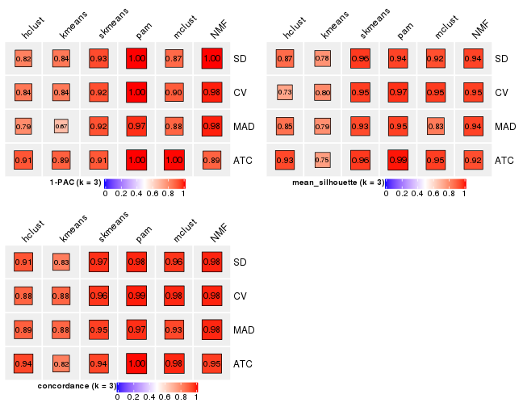
collect_stats(res_list, k = 4)
collect_stats(res_list, k = 5)
collect_stats(res_list, k = 6)
Collect partitions from all methods:
collect_classes(res_list, k = 2)
collect_classes(res_list, k = 3)
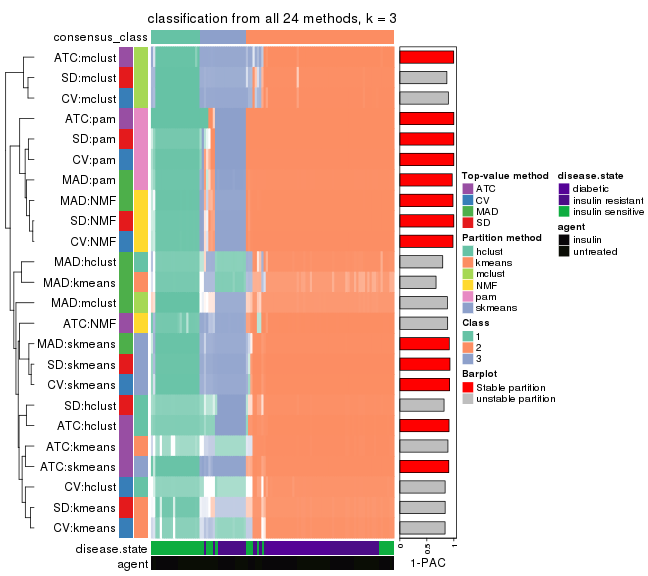
collect_classes(res_list, k = 4)
collect_classes(res_list, k = 5)
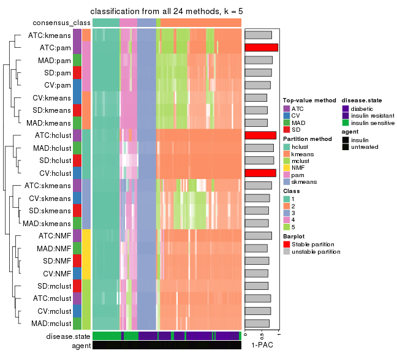
collect_classes(res_list, k = 6)
Overlap of top rows from different top-row methods:
top_rows_overlap(res_list, top_n = 1000, method = "euler")
top_rows_overlap(res_list, top_n = 2000, method = "euler")
top_rows_overlap(res_list, top_n = 3000, method = "euler")
top_rows_overlap(res_list, top_n = 4000, method = "euler")
top_rows_overlap(res_list, top_n = 5000, method = "euler")
Also visualize the correspondance of rankings between different top-row methods:
top_rows_overlap(res_list, top_n = 1000, method = "correspondance")
top_rows_overlap(res_list, top_n = 2000, method = "correspondance")
top_rows_overlap(res_list, top_n = 3000, method = "correspondance")
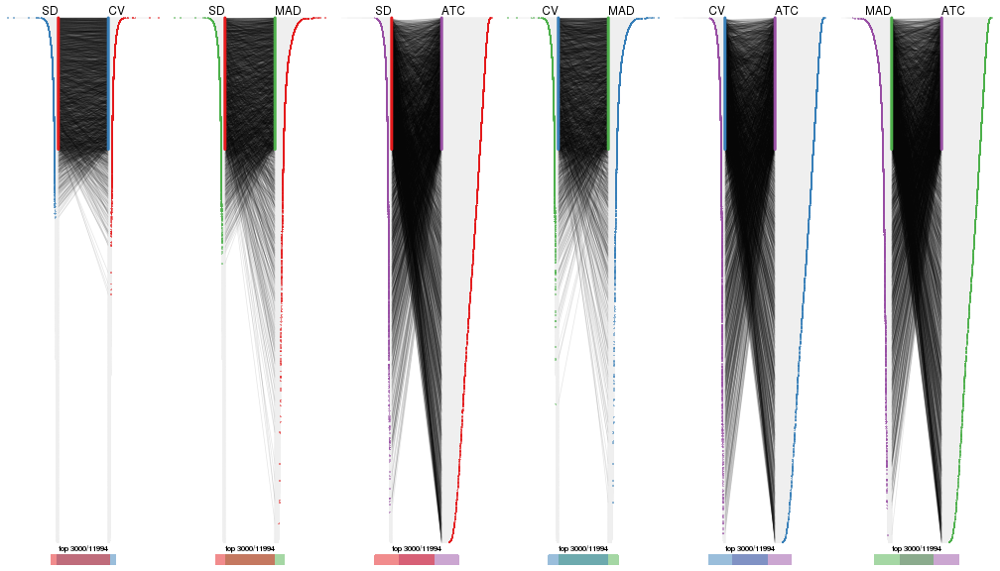
top_rows_overlap(res_list, top_n = 4000, method = "correspondance")
top_rows_overlap(res_list, top_n = 5000, method = "correspondance")
Heatmaps of the top rows:
top_rows_heatmap(res_list, top_n = 1000)
top_rows_heatmap(res_list, top_n = 2000)

top_rows_heatmap(res_list, top_n = 3000)
top_rows_heatmap(res_list, top_n = 4000)
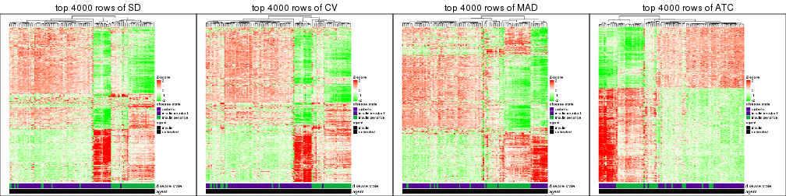
top_rows_heatmap(res_list, top_n = 5000)
Test correlation between subgroups and known annotations. If the known annotation is numeric, one-way ANOVA test is applied, and if the known annotation is discrete, chi-squared contingency table test is applied.
test_to_known_factors(res_list, k = 2)
#> n disease.state(p) agent(p) k
#> SD:NMF 106 8.03e-07 0.887 2
#> CV:NMF 106 8.03e-07 0.887 2
#> MAD:NMF 108 4.08e-07 1.000 2
#> ATC:NMF 110 9.03e-08 0.434 2
#> SD:skmeans 110 9.03e-08 0.434 2
#> CV:skmeans 109 4.59e-08 0.480 2
#> MAD:skmeans 110 2.74e-08 0.559 2
#> ATC:skmeans 110 9.03e-08 0.434 2
#> SD:mclust 102 3.34e-08 0.920 2
#> CV:mclust 102 2.20e-08 0.952 2
#> MAD:mclust 110 1.29e-06 1.000 2
#> ATC:mclust 102 5.49e-09 1.000 2
#> SD:kmeans 110 6.23e-07 0.843 2
#> CV:kmeans 110 6.23e-07 0.843 2
#> MAD:kmeans 110 4.33e-07 1.000 2
#> ATC:kmeans 109 4.96e-07 0.943 2
#> SD:pam 105 1.39e-06 0.995 2
#> CV:pam 110 1.29e-06 1.000 2
#> MAD:pam 108 4.08e-07 1.000 2
#> ATC:pam 110 6.23e-07 0.843 2
#> SD:hclust 104 1.46e-07 0.808 2
#> CV:hclust 104 2.24e-07 0.771 2
#> MAD:hclust 101 2.27e-08 0.940 2
#> ATC:hclust 109 2.18e-08 0.389 2
test_to_known_factors(res_list, k = 3)
#> n disease.state(p) agent(p) k
#> SD:NMF 106 1.68e-11 0.990 3
#> CV:NMF 106 1.68e-11 0.990 3
#> MAD:NMF 107 1.55e-11 0.998 3
#> ATC:NMF 107 7.77e-12 0.285 3
#> SD:skmeans 109 2.28e-12 0.279 3
#> CV:skmeans 109 7.46e-13 0.334 3
#> MAD:skmeans 106 3.81e-12 0.397 3
#> ATC:skmeans 109 4.28e-12 0.449 3
#> SD:mclust 106 1.78e-12 0.465 3
#> CV:mclust 110 8.81e-13 0.288 3
#> MAD:mclust 97 4.89e-14 0.891 3
#> ATC:mclust 108 3.89e-13 0.526 3
#> SD:kmeans 95 8.86e-14 0.757 3
#> CV:kmeans 102 3.44e-07 0.363 3
#> MAD:kmeans 105 6.84e-08 0.556 3
#> ATC:kmeans 98 1.14e-05 0.194 3
#> SD:pam 106 7.06e-13 0.843 3
#> CV:pam 109 5.95e-13 0.944 3
#> MAD:pam 108 1.79e-12 0.990 3
#> ATC:pam 109 2.31e-13 0.600 3
#> SD:hclust 101 7.28e-17 0.575 3
#> CV:hclust 99 4.83e-08 0.985 3
#> MAD:hclust 105 5.02e-09 0.883 3
#> ATC:hclust 110 1.46e-14 0.227 3
test_to_known_factors(res_list, k = 4)
#> n disease.state(p) agent(p) k
#> SD:NMF 101 2.72e-11 0.91829 4
#> CV:NMF 103 9.69e-11 0.95938 4
#> MAD:NMF 103 1.04e-10 0.94072 4
#> ATC:NMF 108 2.34e-10 0.57842 4
#> SD:skmeans 106 1.48e-15 0.97286 4
#> CV:skmeans 108 5.13e-14 0.67509 4
#> MAD:skmeans 106 4.07e-14 0.43840 4
#> ATC:skmeans 109 1.74e-13 0.66627 4
#> SD:mclust 102 1.03e-14 0.08872 4
#> CV:mclust 106 4.03e-14 0.21420 4
#> MAD:mclust 104 5.76e-14 0.02108 4
#> ATC:mclust 106 1.42e-13 0.39313 4
#> SD:kmeans 107 7.80e-15 0.49116 4
#> CV:kmeans 108 3.95e-15 0.51450 4
#> MAD:kmeans 60 3.31e-11 0.51694 4
#> ATC:kmeans 105 2.59e-16 0.17413 4
#> SD:pam 101 3.49e-14 0.00079 4
#> CV:pam 106 3.39e-15 0.00174 4
#> MAD:pam 107 1.27e-14 0.00734 4
#> ATC:pam 110 1.54e-17 0.26061 4
#> SD:hclust 101 7.28e-17 0.57492 4
#> CV:hclust 103 1.18e-07 0.23250 4
#> MAD:hclust 105 5.02e-09 0.88281 4
#> ATC:hclust 109 3.43e-15 0.28481 4
test_to_known_factors(res_list, k = 5)
#> n disease.state(p) agent(p) k
#> SD:NMF 105 1.71e-14 7.74e-01 5
#> CV:NMF 104 3.24e-14 9.31e-01 5
#> MAD:NMF 104 8.41e-14 7.49e-01 5
#> ATC:NMF 105 4.51e-14 6.27e-01 5
#> SD:skmeans 86 2.61e-12 2.97e-06 5
#> CV:skmeans 95 5.61e-12 1.74e-04 5
#> MAD:skmeans 91 1.31e-13 3.98e-04 5
#> ATC:skmeans 97 8.99e-12 7.08e-01 5
#> SD:mclust 106 7.74e-14 6.34e-02 5
#> CV:mclust 103 2.72e-13 9.03e-02 5
#> MAD:mclust 103 1.55e-13 2.61e-02 5
#> ATC:mclust 104 3.06e-14 4.53e-02 5
#> SD:kmeans 102 7.30e-19 9.78e-02 5
#> CV:kmeans 104 1.83e-17 6.53e-02 5
#> MAD:kmeans 105 3.42e-19 1.56e-01 5
#> ATC:kmeans 110 1.22e-16 1.08e-01 5
#> SD:pam 108 3.64e-16 5.44e-03 5
#> CV:pam 102 3.76e-17 1.44e-02 5
#> MAD:pam 109 1.21e-15 3.71e-03 5
#> ATC:pam 110 9.47e-17 7.20e-02 5
#> SD:hclust 100 3.08e-15 1.87e-01 5
#> CV:hclust 105 7.25e-16 2.74e-01 5
#> MAD:hclust 104 3.14e-16 8.69e-01 5
#> ATC:hclust 109 5.32e-14 9.93e-02 5
test_to_known_factors(res_list, k = 6)
#> n disease.state(p) agent(p) k
#> SD:NMF 91 1.01e-15 9.43e-04 6
#> CV:NMF 87 6.25e-15 7.48e-03 6
#> MAD:NMF 90 2.58e-14 1.29e-03 6
#> ATC:NMF 103 3.41e-14 8.40e-01 6
#> SD:skmeans 83 2.54e-13 8.86e-07 6
#> CV:skmeans 84 2.74e-11 1.18e-05 6
#> MAD:skmeans 63 6.32e-13 6.32e-03 6
#> ATC:skmeans 90 4.60e-12 7.61e-01 6
#> SD:mclust 96 7.24e-13 7.29e-02 6
#> CV:mclust 99 1.47e-14 5.62e-02 6
#> MAD:mclust 100 5.58e-14 4.60e-02 6
#> ATC:mclust 99 1.96e-12 1.36e-02 6
#> SD:kmeans 100 4.00e-18 8.99e-02 6
#> CV:kmeans 76 6.58e-12 1.19e-02 6
#> MAD:kmeans 68 1.52e-07 3.17e-01 6
#> ATC:kmeans 109 2.33e-16 4.92e-02 6
#> SD:pam 104 2.17e-18 8.91e-05 6
#> CV:pam 88 7.60e-17 4.49e-04 6
#> MAD:pam 102 1.35e-19 1.12e-04 6
#> ATC:pam 109 2.09e-15 1.09e-01 6
#> SD:hclust 99 1.57e-14 3.02e-01 6
#> CV:hclust 102 6.40e-16 6.14e-01 6
#> MAD:hclust 101 1.21e-15 7.50e-01 6
#> ATC:hclust 92 1.12e-14 1.39e-01 6
The object with results only for a single top-value method and a single partition method can be extracted as:
res = res_list["SD", "hclust"]
# you can also extract it by
# res = res_list["SD:hclust"]
A summary of res and all the functions that can be applied to it:
res
#> A 'ConsensusPartition' object with k = 2, 3, 4, 5, 6.
#> On a matrix with 11994 rows and 110 columns.
#> Top rows (1000, 2000, 3000, 4000, 5000) are extracted by 'SD' method.
#> Subgroups are detected by 'hclust' method.
#> Performed in total 1250 partitions by row resampling.
#> Best k for subgroups seems to be 5.
#>
#> Following methods can be applied to this 'ConsensusPartition' object:
#> [1] "cola_report" "collect_classes" "collect_plots"
#> [4] "collect_stats" "colnames" "compare_signatures"
#> [7] "consensus_heatmap" "dimension_reduction" "functional_enrichment"
#> [10] "get_anno_col" "get_anno" "get_classes"
#> [13] "get_consensus" "get_matrix" "get_membership"
#> [16] "get_param" "get_signatures" "get_stats"
#> [19] "is_best_k" "is_stable_k" "membership_heatmap"
#> [22] "ncol" "nrow" "plot_ecdf"
#> [25] "rownames" "select_partition_number" "show"
#> [28] "suggest_best_k" "test_to_known_factors"
collect_plots() function collects all the plots made from res for all k (number of partitions)
into one single page to provide an easy and fast comparison between different k.
collect_plots(res)
The plots are:
k and the heatmap of
predicted classes for each k.k.k.k.All the plots in panels can be made by individual functions and they are plotted later in this section.
select_partition_number() produces several plots showing different
statistics for choosing “optimized” k. There are following statistics:
k;k, the area increased is defined as \(A_k - A_{k-1}\).The detailed explanations of these statistics can be found in the cola vignette.
Generally speaking, lower PAC score, higher mean silhouette score or higher
concordance corresponds to better partition. Rand index and Jaccard index
measure how similar the current partition is compared to partition with k-1.
If they are too similar, we won't accept k is better than k-1.
select_partition_number(res)
The numeric values for all these statistics can be obtained by get_stats().
get_stats(res)
#> k 1-PAC mean_silhouette concordance area_increased Rand Jaccard
#> 2 2 0.591 0.843 0.917 0.4155 0.544 0.544
#> 3 3 0.819 0.867 0.913 0.3039 0.855 0.744
#> 4 4 0.835 0.862 0.917 0.0329 0.995 0.989
#> 5 5 0.861 0.878 0.950 0.0685 0.932 0.849
#> 6 6 0.836 0.863 0.923 0.0785 0.993 0.982
suggest_best_k() suggests the best \(k\) based on these statistics. The rules are as follows:
NA.suggest_best_k(res)
#> [1] 5
Following shows the table of the partitions (You need to click the show/hide
code output link to see it). The membership matrix (columns with name p*)
is inferred by
clue::cl_consensus()
function with the SE method. Basically the value in the membership matrix
represents the probability to belong to a certain group. The finall class
label for an item is determined with the group with highest probability it
belongs to.
In get_classes() function, the entropy is calculated from the membership
matrix and the silhouette score is calculated from the consensus matrix.
cbind(get_classes(res, k = 2), get_membership(res, k = 2))
#> class entropy silhouette p1 p2
#> GSM555237 1 0.802 0.84268 0.756 0.244
#> GSM555239 1 0.760 0.86428 0.780 0.220
#> GSM555241 1 0.760 0.86428 0.780 0.220
#> GSM555243 1 0.760 0.86428 0.780 0.220
#> GSM555245 1 0.760 0.86428 0.780 0.220
#> GSM555247 1 0.760 0.86428 0.780 0.220
#> GSM555249 1 0.760 0.86428 0.780 0.220
#> GSM555251 1 0.760 0.86428 0.780 0.220
#> GSM555253 1 0.760 0.86428 0.780 0.220
#> GSM555255 1 0.760 0.86428 0.780 0.220
#> GSM555257 1 0.932 0.68141 0.652 0.348
#> GSM555259 1 0.866 0.78514 0.712 0.288
#> GSM555261 2 0.988 -0.03143 0.436 0.564
#> GSM555263 2 0.987 -0.01324 0.432 0.568
#> GSM555265 2 0.988 -0.03143 0.436 0.564
#> GSM555267 2 0.987 -0.01324 0.432 0.568
#> GSM555269 1 0.866 0.78514 0.712 0.288
#> GSM555271 1 0.430 0.83559 0.912 0.088
#> GSM555273 2 0.000 0.94386 0.000 1.000
#> GSM555275 2 0.000 0.94386 0.000 1.000
#> GSM555238 1 0.760 0.86428 0.780 0.220
#> GSM555240 1 0.802 0.84268 0.756 0.244
#> GSM555242 1 0.802 0.84268 0.756 0.244
#> GSM555244 1 0.760 0.86428 0.780 0.220
#> GSM555246 1 0.760 0.86428 0.780 0.220
#> GSM555248 1 0.760 0.86428 0.780 0.220
#> GSM555250 1 0.760 0.86428 0.780 0.220
#> GSM555252 1 0.802 0.84268 0.756 0.244
#> GSM555254 1 0.760 0.86428 0.780 0.220
#> GSM555256 1 0.760 0.86428 0.780 0.220
#> GSM555258 2 0.671 0.71246 0.176 0.824
#> GSM555260 2 0.662 0.71912 0.172 0.828
#> GSM555262 2 0.000 0.94386 0.000 1.000
#> GSM555264 1 0.978 0.53698 0.588 0.412
#> GSM555266 2 0.000 0.94386 0.000 1.000
#> GSM555268 2 0.000 0.94386 0.000 1.000
#> GSM555270 2 0.000 0.94386 0.000 1.000
#> GSM555272 2 0.671 0.71246 0.176 0.824
#> GSM555274 2 0.000 0.94386 0.000 1.000
#> GSM555276 2 0.000 0.94386 0.000 1.000
#> GSM555277 2 0.000 0.94386 0.000 1.000
#> GSM555279 2 0.000 0.94386 0.000 1.000
#> GSM555281 2 0.000 0.94386 0.000 1.000
#> GSM555283 2 0.000 0.94386 0.000 1.000
#> GSM555285 2 0.000 0.94386 0.000 1.000
#> GSM555287 2 0.997 -0.19155 0.468 0.532
#> GSM555289 2 0.000 0.94386 0.000 1.000
#> GSM555291 2 0.000 0.94386 0.000 1.000
#> GSM555293 2 0.000 0.94386 0.000 1.000
#> GSM555295 2 0.000 0.94386 0.000 1.000
#> GSM555297 2 0.985 0.00467 0.428 0.572
#> GSM555299 1 0.000 0.81449 1.000 0.000
#> GSM555301 1 0.000 0.81449 1.000 0.000
#> GSM555303 1 0.000 0.81449 1.000 0.000
#> GSM555305 1 0.000 0.81449 1.000 0.000
#> GSM555307 2 0.000 0.94386 0.000 1.000
#> GSM555309 1 0.000 0.81449 1.000 0.000
#> GSM555311 2 0.000 0.94386 0.000 1.000
#> GSM555313 2 0.000 0.94386 0.000 1.000
#> GSM555315 2 0.000 0.94386 0.000 1.000
#> GSM555278 2 0.000 0.94386 0.000 1.000
#> GSM555280 2 0.000 0.94386 0.000 1.000
#> GSM555282 2 0.000 0.94386 0.000 1.000
#> GSM555284 2 0.000 0.94386 0.000 1.000
#> GSM555286 2 0.000 0.94386 0.000 1.000
#> GSM555288 2 0.000 0.94386 0.000 1.000
#> GSM555290 2 0.000 0.94386 0.000 1.000
#> GSM555292 2 0.000 0.94386 0.000 1.000
#> GSM555294 2 0.000 0.94386 0.000 1.000
#> GSM555296 2 0.000 0.94386 0.000 1.000
#> GSM555298 1 0.000 0.81449 1.000 0.000
#> GSM555300 1 0.000 0.81449 1.000 0.000
#> GSM555302 1 0.000 0.81449 1.000 0.000
#> GSM555304 1 0.000 0.81449 1.000 0.000
#> GSM555306 1 0.000 0.81449 1.000 0.000
#> GSM555308 1 0.000 0.81449 1.000 0.000
#> GSM555310 1 0.000 0.81449 1.000 0.000
#> GSM555312 2 0.000 0.94386 0.000 1.000
#> GSM555314 2 0.000 0.94386 0.000 1.000
#> GSM555316 2 0.000 0.94386 0.000 1.000
#> GSM555317 2 0.000 0.94386 0.000 1.000
#> GSM555319 2 0.000 0.94386 0.000 1.000
#> GSM555321 2 0.000 0.94386 0.000 1.000
#> GSM555323 2 0.000 0.94386 0.000 1.000
#> GSM555325 2 0.000 0.94386 0.000 1.000
#> GSM555327 2 0.000 0.94386 0.000 1.000
#> GSM555329 2 0.000 0.94386 0.000 1.000
#> GSM555331 2 0.000 0.94386 0.000 1.000
#> GSM555333 2 0.000 0.94386 0.000 1.000
#> GSM555335 2 0.000 0.94386 0.000 1.000
#> GSM555337 2 0.000 0.94386 0.000 1.000
#> GSM555339 2 0.000 0.94386 0.000 1.000
#> GSM555341 2 0.000 0.94386 0.000 1.000
#> GSM555343 2 0.000 0.94386 0.000 1.000
#> GSM555345 2 0.000 0.94386 0.000 1.000
#> GSM555318 2 0.000 0.94386 0.000 1.000
#> GSM555320 2 0.000 0.94386 0.000 1.000
#> GSM555322 2 0.000 0.94386 0.000 1.000
#> GSM555324 1 0.000 0.81449 1.000 0.000
#> GSM555326 2 0.000 0.94386 0.000 1.000
#> GSM555328 2 0.000 0.94386 0.000 1.000
#> GSM555330 2 0.000 0.94386 0.000 1.000
#> GSM555332 2 0.000 0.94386 0.000 1.000
#> GSM555334 2 0.000 0.94386 0.000 1.000
#> GSM555336 2 0.000 0.94386 0.000 1.000
#> GSM555338 2 0.000 0.94386 0.000 1.000
#> GSM555340 2 0.000 0.94386 0.000 1.000
#> GSM555342 2 0.000 0.94386 0.000 1.000
#> GSM555344 2 0.000 0.94386 0.000 1.000
#> GSM555346 2 0.000 0.94386 0.000 1.000
cbind(get_classes(res, k = 3), get_membership(res, k = 3))
#> class entropy silhouette p1 p2 p3
#> GSM555237 1 0.5431 0.761 0.716 0.000 0.284
#> GSM555239 1 0.5621 0.766 0.692 0.000 0.308
#> GSM555241 1 0.5621 0.766 0.692 0.000 0.308
#> GSM555243 1 0.5621 0.766 0.692 0.000 0.308
#> GSM555245 1 0.5621 0.766 0.692 0.000 0.308
#> GSM555247 1 0.5621 0.766 0.692 0.000 0.308
#> GSM555249 1 0.5621 0.766 0.692 0.000 0.308
#> GSM555251 1 0.5621 0.766 0.692 0.000 0.308
#> GSM555253 1 0.5621 0.766 0.692 0.000 0.308
#> GSM555255 1 0.5621 0.766 0.692 0.000 0.308
#> GSM555257 1 0.3998 0.629 0.884 0.060 0.056
#> GSM555259 1 0.3425 0.658 0.884 0.004 0.112
#> GSM555261 1 0.5363 0.463 0.724 0.276 0.000
#> GSM555263 1 0.5397 0.461 0.720 0.280 0.000
#> GSM555265 1 0.5363 0.463 0.724 0.276 0.000
#> GSM555267 1 0.5397 0.461 0.720 0.280 0.000
#> GSM555269 1 0.3425 0.658 0.884 0.004 0.112
#> GSM555271 1 0.6215 0.543 0.572 0.000 0.428
#> GSM555273 2 0.3619 0.818 0.136 0.864 0.000
#> GSM555275 2 0.0000 0.972 0.000 1.000 0.000
#> GSM555238 1 0.5621 0.766 0.692 0.000 0.308
#> GSM555240 1 0.5431 0.761 0.716 0.000 0.284
#> GSM555242 1 0.5431 0.761 0.716 0.000 0.284
#> GSM555244 1 0.5621 0.766 0.692 0.000 0.308
#> GSM555246 1 0.5621 0.766 0.692 0.000 0.308
#> GSM555248 1 0.5621 0.766 0.692 0.000 0.308
#> GSM555250 1 0.5621 0.766 0.692 0.000 0.308
#> GSM555252 1 0.5431 0.761 0.716 0.000 0.284
#> GSM555254 1 0.5621 0.766 0.692 0.000 0.308
#> GSM555256 1 0.5621 0.766 0.692 0.000 0.308
#> GSM555258 2 0.6154 0.292 0.408 0.592 0.000
#> GSM555260 2 0.6140 0.302 0.404 0.596 0.000
#> GSM555262 2 0.0592 0.965 0.012 0.988 0.000
#> GSM555264 1 0.3412 0.581 0.876 0.124 0.000
#> GSM555266 2 0.0000 0.972 0.000 1.000 0.000
#> GSM555268 2 0.0000 0.972 0.000 1.000 0.000
#> GSM555270 2 0.0000 0.972 0.000 1.000 0.000
#> GSM555272 2 0.6154 0.292 0.408 0.592 0.000
#> GSM555274 2 0.0424 0.966 0.008 0.992 0.000
#> GSM555276 2 0.0000 0.972 0.000 1.000 0.000
#> GSM555277 2 0.0000 0.972 0.000 1.000 0.000
#> GSM555279 2 0.0000 0.972 0.000 1.000 0.000
#> GSM555281 2 0.0237 0.970 0.004 0.996 0.000
#> GSM555283 2 0.0000 0.972 0.000 1.000 0.000
#> GSM555285 2 0.3752 0.807 0.144 0.856 0.000
#> GSM555287 1 0.6026 0.212 0.624 0.376 0.000
#> GSM555289 2 0.0000 0.972 0.000 1.000 0.000
#> GSM555291 2 0.0000 0.972 0.000 1.000 0.000
#> GSM555293 2 0.0000 0.972 0.000 1.000 0.000
#> GSM555295 2 0.0592 0.965 0.012 0.988 0.000
#> GSM555297 1 0.6180 0.239 0.584 0.416 0.000
#> GSM555299 3 0.0000 1.000 0.000 0.000 1.000
#> GSM555301 3 0.0000 1.000 0.000 0.000 1.000
#> GSM555303 3 0.0000 1.000 0.000 0.000 1.000
#> GSM555305 3 0.0000 1.000 0.000 0.000 1.000
#> GSM555307 2 0.0747 0.962 0.016 0.984 0.000
#> GSM555309 3 0.0000 1.000 0.000 0.000 1.000
#> GSM555311 2 0.0747 0.962 0.016 0.984 0.000
#> GSM555313 2 0.0000 0.972 0.000 1.000 0.000
#> GSM555315 2 0.0000 0.972 0.000 1.000 0.000
#> GSM555278 2 0.0000 0.972 0.000 1.000 0.000
#> GSM555280 2 0.0000 0.972 0.000 1.000 0.000
#> GSM555282 2 0.0747 0.962 0.016 0.984 0.000
#> GSM555284 2 0.0592 0.965 0.012 0.988 0.000
#> GSM555286 2 0.0000 0.972 0.000 1.000 0.000
#> GSM555288 2 0.0747 0.962 0.016 0.984 0.000
#> GSM555290 2 0.0000 0.972 0.000 1.000 0.000
#> GSM555292 2 0.0000 0.972 0.000 1.000 0.000
#> GSM555294 2 0.0000 0.972 0.000 1.000 0.000
#> GSM555296 2 0.0000 0.972 0.000 1.000 0.000
#> GSM555298 3 0.0000 1.000 0.000 0.000 1.000
#> GSM555300 3 0.0000 1.000 0.000 0.000 1.000
#> GSM555302 3 0.0000 1.000 0.000 0.000 1.000
#> GSM555304 3 0.0000 1.000 0.000 0.000 1.000
#> GSM555306 3 0.0000 1.000 0.000 0.000 1.000
#> GSM555308 3 0.0000 1.000 0.000 0.000 1.000
#> GSM555310 3 0.0000 1.000 0.000 0.000 1.000
#> GSM555312 2 0.0000 0.972 0.000 1.000 0.000
#> GSM555314 2 0.0747 0.962 0.016 0.984 0.000
#> GSM555316 2 0.0000 0.972 0.000 1.000 0.000
#> GSM555317 2 0.0000 0.972 0.000 1.000 0.000
#> GSM555319 2 0.0000 0.972 0.000 1.000 0.000
#> GSM555321 2 0.0000 0.972 0.000 1.000 0.000
#> GSM555323 2 0.0000 0.972 0.000 1.000 0.000
#> GSM555325 2 0.0000 0.972 0.000 1.000 0.000
#> GSM555327 2 0.0000 0.972 0.000 1.000 0.000
#> GSM555329 2 0.0000 0.972 0.000 1.000 0.000
#> GSM555331 2 0.0000 0.972 0.000 1.000 0.000
#> GSM555333 2 0.0747 0.962 0.016 0.984 0.000
#> GSM555335 2 0.0000 0.972 0.000 1.000 0.000
#> GSM555337 2 0.0000 0.972 0.000 1.000 0.000
#> GSM555339 2 0.0000 0.972 0.000 1.000 0.000
#> GSM555341 2 0.0000 0.972 0.000 1.000 0.000
#> GSM555343 2 0.0000 0.972 0.000 1.000 0.000
#> GSM555345 2 0.1289 0.949 0.032 0.968 0.000
#> GSM555318 2 0.0000 0.972 0.000 1.000 0.000
#> GSM555320 2 0.0000 0.972 0.000 1.000 0.000
#> GSM555322 2 0.0000 0.972 0.000 1.000 0.000
#> GSM555324 3 0.0000 1.000 0.000 0.000 1.000
#> GSM555326 2 0.0000 0.972 0.000 1.000 0.000
#> GSM555328 2 0.0000 0.972 0.000 1.000 0.000
#> GSM555330 2 0.0000 0.972 0.000 1.000 0.000
#> GSM555332 2 0.0000 0.972 0.000 1.000 0.000
#> GSM555334 2 0.0000 0.972 0.000 1.000 0.000
#> GSM555336 2 0.0000 0.972 0.000 1.000 0.000
#> GSM555338 2 0.0000 0.972 0.000 1.000 0.000
#> GSM555340 2 0.0000 0.972 0.000 1.000 0.000
#> GSM555342 2 0.0000 0.972 0.000 1.000 0.000
#> GSM555344 2 0.0000 0.972 0.000 1.000 0.000
#> GSM555346 2 0.0424 0.966 0.008 0.992 0.000
cbind(get_classes(res, k = 4), get_membership(res, k = 4))
#> class entropy silhouette p1 p2 p3 p4
#> GSM555237 1 0.4072 0.813 0.748 0.000 0.252 0.000
#> GSM555239 1 0.4250 0.819 0.724 0.000 0.276 0.000
#> GSM555241 1 0.4250 0.819 0.724 0.000 0.276 0.000
#> GSM555243 1 0.4250 0.819 0.724 0.000 0.276 0.000
#> GSM555245 1 0.4250 0.819 0.724 0.000 0.276 0.000
#> GSM555247 1 0.4250 0.819 0.724 0.000 0.276 0.000
#> GSM555249 1 0.4250 0.819 0.724 0.000 0.276 0.000
#> GSM555251 1 0.4250 0.819 0.724 0.000 0.276 0.000
#> GSM555253 1 0.4250 0.819 0.724 0.000 0.276 0.000
#> GSM555255 1 0.4250 0.819 0.724 0.000 0.276 0.000
#> GSM555257 1 0.1339 0.634 0.964 0.004 0.024 0.008
#> GSM555259 1 0.2011 0.691 0.920 0.000 0.080 0.000
#> GSM555261 1 0.3978 0.408 0.796 0.192 0.000 0.012
#> GSM555263 1 0.4019 0.406 0.792 0.196 0.000 0.012
#> GSM555265 1 0.3978 0.408 0.796 0.192 0.000 0.012
#> GSM555267 1 0.4019 0.406 0.792 0.196 0.000 0.012
#> GSM555269 1 0.2011 0.691 0.920 0.000 0.080 0.000
#> GSM555271 1 0.4843 0.612 0.604 0.000 0.396 0.000
#> GSM555273 2 0.3808 0.752 0.176 0.812 0.000 0.012
#> GSM555275 2 0.0000 0.963 0.000 1.000 0.000 0.000
#> GSM555238 1 0.4250 0.819 0.724 0.000 0.276 0.000
#> GSM555240 1 0.4072 0.813 0.748 0.000 0.252 0.000
#> GSM555242 1 0.4072 0.813 0.748 0.000 0.252 0.000
#> GSM555244 1 0.4250 0.819 0.724 0.000 0.276 0.000
#> GSM555246 1 0.4250 0.819 0.724 0.000 0.276 0.000
#> GSM555248 1 0.4250 0.819 0.724 0.000 0.276 0.000
#> GSM555250 1 0.4250 0.819 0.724 0.000 0.276 0.000
#> GSM555252 1 0.4072 0.813 0.748 0.000 0.252 0.000
#> GSM555254 1 0.4250 0.819 0.724 0.000 0.276 0.000
#> GSM555256 1 0.4250 0.819 0.724 0.000 0.276 0.000
#> GSM555258 2 0.5406 0.124 0.480 0.508 0.000 0.012
#> GSM555260 2 0.5404 0.135 0.476 0.512 0.000 0.012
#> GSM555262 2 0.0657 0.955 0.012 0.984 0.000 0.004
#> GSM555264 1 0.1677 0.574 0.948 0.040 0.000 0.012
#> GSM555266 2 0.0188 0.961 0.000 0.996 0.000 0.004
#> GSM555268 2 0.0000 0.963 0.000 1.000 0.000 0.000
#> GSM555270 2 0.0000 0.963 0.000 1.000 0.000 0.000
#> GSM555272 2 0.5406 0.124 0.480 0.508 0.000 0.012
#> GSM555274 2 0.1545 0.925 0.040 0.952 0.000 0.008
#> GSM555276 2 0.0000 0.963 0.000 1.000 0.000 0.000
#> GSM555277 2 0.0000 0.963 0.000 1.000 0.000 0.000
#> GSM555279 2 0.0188 0.961 0.000 0.996 0.000 0.004
#> GSM555281 2 0.0188 0.961 0.004 0.996 0.000 0.000
#> GSM555283 2 0.0000 0.963 0.000 1.000 0.000 0.000
#> GSM555285 2 0.3808 0.750 0.176 0.812 0.000 0.012
#> GSM555287 4 0.0469 0.000 0.012 0.000 0.000 0.988
#> GSM555289 2 0.0000 0.963 0.000 1.000 0.000 0.000
#> GSM555291 2 0.0000 0.963 0.000 1.000 0.000 0.000
#> GSM555293 2 0.0000 0.963 0.000 1.000 0.000 0.000
#> GSM555295 2 0.0469 0.956 0.012 0.988 0.000 0.000
#> GSM555297 1 0.5038 0.177 0.652 0.336 0.000 0.012
#> GSM555299 3 0.0000 1.000 0.000 0.000 1.000 0.000
#> GSM555301 3 0.0000 1.000 0.000 0.000 1.000 0.000
#> GSM555303 3 0.0000 1.000 0.000 0.000 1.000 0.000
#> GSM555305 3 0.0000 1.000 0.000 0.000 1.000 0.000
#> GSM555307 2 0.0592 0.954 0.016 0.984 0.000 0.000
#> GSM555309 3 0.0000 1.000 0.000 0.000 1.000 0.000
#> GSM555311 2 0.0592 0.954 0.016 0.984 0.000 0.000
#> GSM555313 2 0.0000 0.963 0.000 1.000 0.000 0.000
#> GSM555315 2 0.0000 0.963 0.000 1.000 0.000 0.000
#> GSM555278 2 0.0188 0.961 0.000 0.996 0.000 0.004
#> GSM555280 2 0.0000 0.963 0.000 1.000 0.000 0.000
#> GSM555282 2 0.0592 0.954 0.016 0.984 0.000 0.000
#> GSM555284 2 0.0657 0.955 0.012 0.984 0.000 0.004
#> GSM555286 2 0.0000 0.963 0.000 1.000 0.000 0.000
#> GSM555288 2 0.0592 0.954 0.016 0.984 0.000 0.000
#> GSM555290 2 0.0000 0.963 0.000 1.000 0.000 0.000
#> GSM555292 2 0.0000 0.963 0.000 1.000 0.000 0.000
#> GSM555294 2 0.0000 0.963 0.000 1.000 0.000 0.000
#> GSM555296 2 0.0000 0.963 0.000 1.000 0.000 0.000
#> GSM555298 3 0.0000 1.000 0.000 0.000 1.000 0.000
#> GSM555300 3 0.0000 1.000 0.000 0.000 1.000 0.000
#> GSM555302 3 0.0000 1.000 0.000 0.000 1.000 0.000
#> GSM555304 3 0.0000 1.000 0.000 0.000 1.000 0.000
#> GSM555306 3 0.0000 1.000 0.000 0.000 1.000 0.000
#> GSM555308 3 0.0000 1.000 0.000 0.000 1.000 0.000
#> GSM555310 3 0.0000 1.000 0.000 0.000 1.000 0.000
#> GSM555312 2 0.0000 0.963 0.000 1.000 0.000 0.000
#> GSM555314 2 0.0592 0.954 0.016 0.984 0.000 0.000
#> GSM555316 2 0.0000 0.963 0.000 1.000 0.000 0.000
#> GSM555317 2 0.0000 0.963 0.000 1.000 0.000 0.000
#> GSM555319 2 0.0000 0.963 0.000 1.000 0.000 0.000
#> GSM555321 2 0.0000 0.963 0.000 1.000 0.000 0.000
#> GSM555323 2 0.0000 0.963 0.000 1.000 0.000 0.000
#> GSM555325 2 0.0000 0.963 0.000 1.000 0.000 0.000
#> GSM555327 2 0.0000 0.963 0.000 1.000 0.000 0.000
#> GSM555329 2 0.0000 0.963 0.000 1.000 0.000 0.000
#> GSM555331 2 0.0000 0.963 0.000 1.000 0.000 0.000
#> GSM555333 2 0.0592 0.954 0.016 0.984 0.000 0.000
#> GSM555335 2 0.0000 0.963 0.000 1.000 0.000 0.000
#> GSM555337 2 0.0000 0.963 0.000 1.000 0.000 0.000
#> GSM555339 2 0.0000 0.963 0.000 1.000 0.000 0.000
#> GSM555341 2 0.0000 0.963 0.000 1.000 0.000 0.000
#> GSM555343 2 0.0000 0.963 0.000 1.000 0.000 0.000
#> GSM555345 2 0.1022 0.941 0.032 0.968 0.000 0.000
#> GSM555318 2 0.0000 0.963 0.000 1.000 0.000 0.000
#> GSM555320 2 0.0804 0.950 0.012 0.980 0.000 0.008
#> GSM555322 2 0.0000 0.963 0.000 1.000 0.000 0.000
#> GSM555324 3 0.0000 1.000 0.000 0.000 1.000 0.000
#> GSM555326 2 0.0000 0.963 0.000 1.000 0.000 0.000
#> GSM555328 2 0.0000 0.963 0.000 1.000 0.000 0.000
#> GSM555330 2 0.0000 0.963 0.000 1.000 0.000 0.000
#> GSM555332 2 0.0000 0.963 0.000 1.000 0.000 0.000
#> GSM555334 2 0.0000 0.963 0.000 1.000 0.000 0.000
#> GSM555336 2 0.0000 0.963 0.000 1.000 0.000 0.000
#> GSM555338 2 0.0000 0.963 0.000 1.000 0.000 0.000
#> GSM555340 2 0.0000 0.963 0.000 1.000 0.000 0.000
#> GSM555342 2 0.0000 0.963 0.000 1.000 0.000 0.000
#> GSM555344 2 0.0000 0.963 0.000 1.000 0.000 0.000
#> GSM555346 2 0.1677 0.921 0.040 0.948 0.000 0.012
cbind(get_classes(res, k = 5), get_membership(res, k = 5))
#> class entropy silhouette p1 p2 p3 p4 p5
#> GSM555237 1 0.0703 0.9450 0.976 0.000 0.000 0.024 0
#> GSM555239 1 0.0000 0.9631 1.000 0.000 0.000 0.000 0
#> GSM555241 1 0.0000 0.9631 1.000 0.000 0.000 0.000 0
#> GSM555243 1 0.0000 0.9631 1.000 0.000 0.000 0.000 0
#> GSM555245 1 0.0000 0.9631 1.000 0.000 0.000 0.000 0
#> GSM555247 1 0.0000 0.9631 1.000 0.000 0.000 0.000 0
#> GSM555249 1 0.0000 0.9631 1.000 0.000 0.000 0.000 0
#> GSM555251 1 0.0000 0.9631 1.000 0.000 0.000 0.000 0
#> GSM555253 1 0.0000 0.9631 1.000 0.000 0.000 0.000 0
#> GSM555255 1 0.0000 0.9631 1.000 0.000 0.000 0.000 0
#> GSM555257 4 0.2966 0.1860 0.184 0.000 0.000 0.816 0
#> GSM555259 4 0.4902 -0.1232 0.468 0.000 0.024 0.508 0
#> GSM555261 4 0.4569 0.5005 0.104 0.148 0.000 0.748 0
#> GSM555263 4 0.4609 0.5033 0.104 0.152 0.000 0.744 0
#> GSM555265 4 0.4569 0.5005 0.104 0.148 0.000 0.748 0
#> GSM555267 4 0.4609 0.5033 0.104 0.152 0.000 0.744 0
#> GSM555269 4 0.4902 -0.1232 0.468 0.000 0.024 0.508 0
#> GSM555271 1 0.6593 0.0302 0.440 0.000 0.340 0.220 0
#> GSM555273 2 0.3366 0.6320 0.000 0.768 0.000 0.232 0
#> GSM555275 2 0.0000 0.9821 0.000 1.000 0.000 0.000 0
#> GSM555238 1 0.0000 0.9631 1.000 0.000 0.000 0.000 0
#> GSM555240 1 0.0703 0.9450 0.976 0.000 0.000 0.024 0
#> GSM555242 1 0.0703 0.9450 0.976 0.000 0.000 0.024 0
#> GSM555244 1 0.0000 0.9631 1.000 0.000 0.000 0.000 0
#> GSM555246 1 0.0000 0.9631 1.000 0.000 0.000 0.000 0
#> GSM555248 1 0.0000 0.9631 1.000 0.000 0.000 0.000 0
#> GSM555250 1 0.0000 0.9631 1.000 0.000 0.000 0.000 0
#> GSM555252 1 0.0703 0.9450 0.976 0.000 0.000 0.024 0
#> GSM555254 1 0.0000 0.9631 1.000 0.000 0.000 0.000 0
#> GSM555256 1 0.0000 0.9631 1.000 0.000 0.000 0.000 0
#> GSM555258 4 0.4291 0.3619 0.000 0.464 0.000 0.536 0
#> GSM555260 4 0.4294 0.3504 0.000 0.468 0.000 0.532 0
#> GSM555262 2 0.0609 0.9684 0.000 0.980 0.000 0.020 0
#> GSM555264 4 0.0162 0.1076 0.004 0.000 0.000 0.996 0
#> GSM555266 2 0.0290 0.9765 0.000 0.992 0.000 0.008 0
#> GSM555268 2 0.0000 0.9821 0.000 1.000 0.000 0.000 0
#> GSM555270 2 0.0000 0.9821 0.000 1.000 0.000 0.000 0
#> GSM555272 4 0.4291 0.3619 0.000 0.464 0.000 0.536 0
#> GSM555274 2 0.1851 0.8820 0.000 0.912 0.000 0.088 0
#> GSM555276 2 0.0000 0.9821 0.000 1.000 0.000 0.000 0
#> GSM555277 2 0.0000 0.9821 0.000 1.000 0.000 0.000 0
#> GSM555279 2 0.0290 0.9765 0.000 0.992 0.000 0.008 0
#> GSM555281 2 0.0162 0.9795 0.000 0.996 0.000 0.004 0
#> GSM555283 2 0.0000 0.9821 0.000 1.000 0.000 0.000 0
#> GSM555285 2 0.3336 0.6399 0.000 0.772 0.000 0.228 0
#> GSM555287 5 0.0000 0.0000 0.000 0.000 0.000 0.000 1
#> GSM555289 2 0.0000 0.9821 0.000 1.000 0.000 0.000 0
#> GSM555291 2 0.0000 0.9821 0.000 1.000 0.000 0.000 0
#> GSM555293 2 0.0000 0.9821 0.000 1.000 0.000 0.000 0
#> GSM555295 2 0.0404 0.9734 0.000 0.988 0.000 0.012 0
#> GSM555297 4 0.5252 0.4578 0.076 0.292 0.000 0.632 0
#> GSM555299 3 0.0000 1.0000 0.000 0.000 1.000 0.000 0
#> GSM555301 3 0.0000 1.0000 0.000 0.000 1.000 0.000 0
#> GSM555303 3 0.0000 1.0000 0.000 0.000 1.000 0.000 0
#> GSM555305 3 0.0000 1.0000 0.000 0.000 1.000 0.000 0
#> GSM555307 2 0.0510 0.9703 0.000 0.984 0.000 0.016 0
#> GSM555309 3 0.0000 1.0000 0.000 0.000 1.000 0.000 0
#> GSM555311 2 0.0510 0.9703 0.000 0.984 0.000 0.016 0
#> GSM555313 2 0.0000 0.9821 0.000 1.000 0.000 0.000 0
#> GSM555315 2 0.0000 0.9821 0.000 1.000 0.000 0.000 0
#> GSM555278 2 0.0290 0.9765 0.000 0.992 0.000 0.008 0
#> GSM555280 2 0.0000 0.9821 0.000 1.000 0.000 0.000 0
#> GSM555282 2 0.0510 0.9706 0.000 0.984 0.000 0.016 0
#> GSM555284 2 0.0609 0.9684 0.000 0.980 0.000 0.020 0
#> GSM555286 2 0.0000 0.9821 0.000 1.000 0.000 0.000 0
#> GSM555288 2 0.0510 0.9706 0.000 0.984 0.000 0.016 0
#> GSM555290 2 0.0000 0.9821 0.000 1.000 0.000 0.000 0
#> GSM555292 2 0.0000 0.9821 0.000 1.000 0.000 0.000 0
#> GSM555294 2 0.0000 0.9821 0.000 1.000 0.000 0.000 0
#> GSM555296 2 0.0000 0.9821 0.000 1.000 0.000 0.000 0
#> GSM555298 3 0.0000 1.0000 0.000 0.000 1.000 0.000 0
#> GSM555300 3 0.0000 1.0000 0.000 0.000 1.000 0.000 0
#> GSM555302 3 0.0000 1.0000 0.000 0.000 1.000 0.000 0
#> GSM555304 3 0.0000 1.0000 0.000 0.000 1.000 0.000 0
#> GSM555306 3 0.0000 1.0000 0.000 0.000 1.000 0.000 0
#> GSM555308 3 0.0000 1.0000 0.000 0.000 1.000 0.000 0
#> GSM555310 3 0.0000 1.0000 0.000 0.000 1.000 0.000 0
#> GSM555312 2 0.0000 0.9821 0.000 1.000 0.000 0.000 0
#> GSM555314 2 0.0510 0.9703 0.000 0.984 0.000 0.016 0
#> GSM555316 2 0.0000 0.9821 0.000 1.000 0.000 0.000 0
#> GSM555317 2 0.0000 0.9821 0.000 1.000 0.000 0.000 0
#> GSM555319 2 0.0000 0.9821 0.000 1.000 0.000 0.000 0
#> GSM555321 2 0.0000 0.9821 0.000 1.000 0.000 0.000 0
#> GSM555323 2 0.0000 0.9821 0.000 1.000 0.000 0.000 0
#> GSM555325 2 0.0000 0.9821 0.000 1.000 0.000 0.000 0
#> GSM555327 2 0.0000 0.9821 0.000 1.000 0.000 0.000 0
#> GSM555329 2 0.0000 0.9821 0.000 1.000 0.000 0.000 0
#> GSM555331 2 0.0000 0.9821 0.000 1.000 0.000 0.000 0
#> GSM555333 2 0.0510 0.9703 0.000 0.984 0.000 0.016 0
#> GSM555335 2 0.0000 0.9821 0.000 1.000 0.000 0.000 0
#> GSM555337 2 0.0000 0.9821 0.000 1.000 0.000 0.000 0
#> GSM555339 2 0.0000 0.9821 0.000 1.000 0.000 0.000 0
#> GSM555341 2 0.0000 0.9821 0.000 1.000 0.000 0.000 0
#> GSM555343 2 0.0000 0.9821 0.000 1.000 0.000 0.000 0
#> GSM555345 2 0.0963 0.9493 0.000 0.964 0.000 0.036 0
#> GSM555318 2 0.0000 0.9821 0.000 1.000 0.000 0.000 0
#> GSM555320 2 0.1121 0.9390 0.000 0.956 0.000 0.044 0
#> GSM555322 2 0.0000 0.9821 0.000 1.000 0.000 0.000 0
#> GSM555324 3 0.0000 1.0000 0.000 0.000 1.000 0.000 0
#> GSM555326 2 0.0000 0.9821 0.000 1.000 0.000 0.000 0
#> GSM555328 2 0.0000 0.9821 0.000 1.000 0.000 0.000 0
#> GSM555330 2 0.0000 0.9821 0.000 1.000 0.000 0.000 0
#> GSM555332 2 0.0000 0.9821 0.000 1.000 0.000 0.000 0
#> GSM555334 2 0.0000 0.9821 0.000 1.000 0.000 0.000 0
#> GSM555336 2 0.0000 0.9821 0.000 1.000 0.000 0.000 0
#> GSM555338 2 0.0000 0.9821 0.000 1.000 0.000 0.000 0
#> GSM555340 2 0.0000 0.9821 0.000 1.000 0.000 0.000 0
#> GSM555342 2 0.0000 0.9821 0.000 1.000 0.000 0.000 0
#> GSM555344 2 0.0000 0.9821 0.000 1.000 0.000 0.000 0
#> GSM555346 2 0.1908 0.8759 0.000 0.908 0.000 0.092 0
cbind(get_classes(res, k = 6), get_membership(res, k = 6))
#> class entropy silhouette p1 p2 p3 p4 p5 p6
#> GSM555237 1 0.1075 0.9599 0.952 0.000 0.000 0.000 0 0.048
#> GSM555239 1 0.0000 0.9887 1.000 0.000 0.000 0.000 0 0.000
#> GSM555241 1 0.0000 0.9887 1.000 0.000 0.000 0.000 0 0.000
#> GSM555243 1 0.0000 0.9887 1.000 0.000 0.000 0.000 0 0.000
#> GSM555245 1 0.0000 0.9887 1.000 0.000 0.000 0.000 0 0.000
#> GSM555247 1 0.0000 0.9887 1.000 0.000 0.000 0.000 0 0.000
#> GSM555249 1 0.0000 0.9887 1.000 0.000 0.000 0.000 0 0.000
#> GSM555251 1 0.0000 0.9887 1.000 0.000 0.000 0.000 0 0.000
#> GSM555253 1 0.0000 0.9887 1.000 0.000 0.000 0.000 0 0.000
#> GSM555255 1 0.0260 0.9857 0.992 0.000 0.000 0.000 0 0.008
#> GSM555257 4 0.3629 -0.0277 0.016 0.000 0.000 0.724 0 0.260
#> GSM555259 6 0.5189 0.6502 0.088 0.000 0.000 0.444 0 0.468
#> GSM555261 4 0.0692 0.4985 0.004 0.000 0.000 0.976 0 0.020
#> GSM555263 4 0.0146 0.5108 0.004 0.000 0.000 0.996 0 0.000
#> GSM555265 4 0.0692 0.4985 0.004 0.000 0.000 0.976 0 0.020
#> GSM555267 4 0.0146 0.5108 0.004 0.000 0.000 0.996 0 0.000
#> GSM555269 6 0.5189 0.6502 0.088 0.000 0.000 0.444 0 0.468
#> GSM555271 6 0.6811 0.3180 0.088 0.000 0.316 0.148 0 0.448
#> GSM555273 2 0.5570 0.3010 0.000 0.552 0.000 0.216 0 0.232
#> GSM555275 2 0.1434 0.9241 0.000 0.940 0.000 0.012 0 0.048
#> GSM555238 1 0.0260 0.9857 0.992 0.000 0.000 0.000 0 0.008
#> GSM555240 1 0.1075 0.9599 0.952 0.000 0.000 0.000 0 0.048
#> GSM555242 1 0.1075 0.9599 0.952 0.000 0.000 0.000 0 0.048
#> GSM555244 1 0.0000 0.9887 1.000 0.000 0.000 0.000 0 0.000
#> GSM555246 1 0.0000 0.9887 1.000 0.000 0.000 0.000 0 0.000
#> GSM555248 1 0.0000 0.9887 1.000 0.000 0.000 0.000 0 0.000
#> GSM555250 1 0.0000 0.9887 1.000 0.000 0.000 0.000 0 0.000
#> GSM555252 1 0.1075 0.9599 0.952 0.000 0.000 0.000 0 0.048
#> GSM555254 1 0.0000 0.9887 1.000 0.000 0.000 0.000 0 0.000
#> GSM555256 1 0.0260 0.9857 0.992 0.000 0.000 0.000 0 0.008
#> GSM555258 4 0.4573 0.4875 0.000 0.208 0.000 0.688 0 0.104
#> GSM555260 4 0.4599 0.4821 0.000 0.212 0.000 0.684 0 0.104
#> GSM555262 2 0.2433 0.8882 0.000 0.884 0.000 0.044 0 0.072
#> GSM555264 4 0.3862 0.0355 0.000 0.000 0.000 0.524 0 0.476
#> GSM555266 2 0.1616 0.9311 0.000 0.932 0.000 0.020 0 0.048
#> GSM555268 2 0.0713 0.9338 0.000 0.972 0.000 0.000 0 0.028
#> GSM555270 2 0.0865 0.9322 0.000 0.964 0.000 0.000 0 0.036
#> GSM555272 4 0.4573 0.4875 0.000 0.208 0.000 0.688 0 0.104
#> GSM555274 2 0.3364 0.7397 0.000 0.780 0.000 0.196 0 0.024
#> GSM555276 2 0.0632 0.9356 0.000 0.976 0.000 0.000 0 0.024
#> GSM555277 2 0.0547 0.9334 0.000 0.980 0.000 0.000 0 0.020
#> GSM555279 2 0.1334 0.9279 0.000 0.948 0.000 0.020 0 0.032
#> GSM555281 2 0.1564 0.9240 0.000 0.936 0.000 0.024 0 0.040
#> GSM555283 2 0.0858 0.9319 0.000 0.968 0.000 0.004 0 0.028
#> GSM555285 2 0.4843 0.5365 0.000 0.652 0.000 0.116 0 0.232
#> GSM555287 5 0.0000 0.0000 0.000 0.000 0.000 0.000 1 0.000
#> GSM555289 2 0.0865 0.9322 0.000 0.964 0.000 0.000 0 0.036
#> GSM555291 2 0.0858 0.9319 0.000 0.968 0.000 0.004 0 0.028
#> GSM555293 2 0.0790 0.9365 0.000 0.968 0.000 0.000 0 0.032
#> GSM555295 2 0.1829 0.9160 0.000 0.920 0.000 0.024 0 0.056
#> GSM555297 4 0.2822 0.4971 0.004 0.108 0.000 0.856 0 0.032
#> GSM555299 3 0.0260 0.9946 0.000 0.000 0.992 0.000 0 0.008
#> GSM555301 3 0.0000 0.9966 0.000 0.000 1.000 0.000 0 0.000
#> GSM555303 3 0.0000 0.9966 0.000 0.000 1.000 0.000 0 0.000
#> GSM555305 3 0.0000 0.9966 0.000 0.000 1.000 0.000 0 0.000
#> GSM555307 2 0.1984 0.9120 0.000 0.912 0.000 0.032 0 0.056
#> GSM555309 3 0.0260 0.9946 0.000 0.000 0.992 0.000 0 0.008
#> GSM555311 2 0.1984 0.9120 0.000 0.912 0.000 0.032 0 0.056
#> GSM555313 2 0.1807 0.9257 0.000 0.920 0.000 0.020 0 0.060
#> GSM555315 2 0.1563 0.9210 0.000 0.932 0.000 0.012 0 0.056
#> GSM555278 2 0.1151 0.9353 0.000 0.956 0.000 0.012 0 0.032
#> GSM555280 2 0.0713 0.9338 0.000 0.972 0.000 0.000 0 0.028
#> GSM555282 2 0.2608 0.8756 0.000 0.872 0.000 0.048 0 0.080
#> GSM555284 2 0.2433 0.8882 0.000 0.884 0.000 0.044 0 0.072
#> GSM555286 2 0.0790 0.9331 0.000 0.968 0.000 0.000 0 0.032
#> GSM555288 2 0.2618 0.8766 0.000 0.872 0.000 0.052 0 0.076
#> GSM555290 2 0.0865 0.9322 0.000 0.964 0.000 0.000 0 0.036
#> GSM555292 2 0.0790 0.9356 0.000 0.968 0.000 0.000 0 0.032
#> GSM555294 2 0.0790 0.9365 0.000 0.968 0.000 0.000 0 0.032
#> GSM555296 2 0.1563 0.9210 0.000 0.932 0.000 0.012 0 0.056
#> GSM555298 3 0.0000 0.9966 0.000 0.000 1.000 0.000 0 0.000
#> GSM555300 3 0.0260 0.9946 0.000 0.000 0.992 0.000 0 0.008
#> GSM555302 3 0.0000 0.9966 0.000 0.000 1.000 0.000 0 0.000
#> GSM555304 3 0.0000 0.9966 0.000 0.000 1.000 0.000 0 0.000
#> GSM555306 3 0.0000 0.9966 0.000 0.000 1.000 0.000 0 0.000
#> GSM555308 3 0.0260 0.9946 0.000 0.000 0.992 0.000 0 0.008
#> GSM555310 3 0.0000 0.9966 0.000 0.000 1.000 0.000 0 0.000
#> GSM555312 2 0.1807 0.9257 0.000 0.920 0.000 0.020 0 0.060
#> GSM555314 2 0.1984 0.9120 0.000 0.912 0.000 0.032 0 0.056
#> GSM555316 2 0.0865 0.9322 0.000 0.964 0.000 0.000 0 0.036
#> GSM555317 2 0.0363 0.9360 0.000 0.988 0.000 0.000 0 0.012
#> GSM555319 2 0.0865 0.9322 0.000 0.964 0.000 0.000 0 0.036
#> GSM555321 2 0.0865 0.9322 0.000 0.964 0.000 0.000 0 0.036
#> GSM555323 2 0.1219 0.9303 0.000 0.948 0.000 0.004 0 0.048
#> GSM555325 2 0.1075 0.9315 0.000 0.952 0.000 0.000 0 0.048
#> GSM555327 2 0.0363 0.9360 0.000 0.988 0.000 0.000 0 0.012
#> GSM555329 2 0.0865 0.9322 0.000 0.964 0.000 0.000 0 0.036
#> GSM555331 2 0.0713 0.9338 0.000 0.972 0.000 0.000 0 0.028
#> GSM555333 2 0.1984 0.9120 0.000 0.912 0.000 0.032 0 0.056
#> GSM555335 2 0.0713 0.9323 0.000 0.972 0.000 0.000 0 0.028
#> GSM555337 2 0.0865 0.9322 0.000 0.964 0.000 0.000 0 0.036
#> GSM555339 2 0.1563 0.9210 0.000 0.932 0.000 0.012 0 0.056
#> GSM555341 2 0.0790 0.9314 0.000 0.968 0.000 0.000 0 0.032
#> GSM555343 2 0.0632 0.9367 0.000 0.976 0.000 0.000 0 0.024
#> GSM555345 2 0.3566 0.7563 0.000 0.788 0.000 0.156 0 0.056
#> GSM555318 2 0.0363 0.9360 0.000 0.988 0.000 0.000 0 0.012
#> GSM555320 2 0.3107 0.8459 0.000 0.832 0.000 0.052 0 0.116
#> GSM555322 2 0.0865 0.9322 0.000 0.964 0.000 0.000 0 0.036
#> GSM555324 3 0.0260 0.9946 0.000 0.000 0.992 0.000 0 0.008
#> GSM555326 2 0.0865 0.9322 0.000 0.964 0.000 0.000 0 0.036
#> GSM555328 2 0.0363 0.9360 0.000 0.988 0.000 0.000 0 0.012
#> GSM555330 2 0.0713 0.9338 0.000 0.972 0.000 0.000 0 0.028
#> GSM555332 2 0.0713 0.9338 0.000 0.972 0.000 0.000 0 0.028
#> GSM555334 2 0.0713 0.9338 0.000 0.972 0.000 0.000 0 0.028
#> GSM555336 2 0.0865 0.9322 0.000 0.964 0.000 0.000 0 0.036
#> GSM555338 2 0.0865 0.9322 0.000 0.964 0.000 0.000 0 0.036
#> GSM555340 2 0.0865 0.9322 0.000 0.964 0.000 0.000 0 0.036
#> GSM555342 2 0.0790 0.9314 0.000 0.968 0.000 0.000 0 0.032
#> GSM555344 2 0.0363 0.9362 0.000 0.988 0.000 0.000 0 0.012
#> GSM555346 2 0.3650 0.7773 0.000 0.792 0.000 0.092 0 0.116
Heatmaps for the consensus matrix. It visualizes the probability of two samples to be in a same group.
consensus_heatmap(res, k = 2)
consensus_heatmap(res, k = 3)
consensus_heatmap(res, k = 4)
consensus_heatmap(res, k = 5)
consensus_heatmap(res, k = 6)
Heatmaps for the membership of samples in all partitions to see how consistent they are:
membership_heatmap(res, k = 2)

membership_heatmap(res, k = 3)
membership_heatmap(res, k = 4)
membership_heatmap(res, k = 5)
membership_heatmap(res, k = 6)
As soon as we have had the classes for columns, we can look for signatures which are significantly different between classes which can be candidate marks for certain classes. Following are the heatmaps for signatures.
Signature heatmaps where rows are scaled:
get_signatures(res, k = 2)
get_signatures(res, k = 3)
get_signatures(res, k = 4)

get_signatures(res, k = 5)
get_signatures(res, k = 6)
Signature heatmaps where rows are not scaled:
get_signatures(res, k = 2, scale_rows = FALSE)
get_signatures(res, k = 3, scale_rows = FALSE)
get_signatures(res, k = 4, scale_rows = FALSE)
get_signatures(res, k = 5, scale_rows = FALSE)
get_signatures(res, k = 6, scale_rows = FALSE)
Compare the overlap of signatures from different k:
compare_signatures(res)
get_signature() returns a data frame invisibly. TO get the list of signatures, the function
call should be assigned to a variable explicitly. In following code, if plot argument is set
to FALSE, no heatmap is plotted while only the differential analysis is performed.
# code only for demonstration
tb = get_signature(res, k = ..., plot = FALSE)
An example of the output of tb is:
#> which_row fdr mean_1 mean_2 scaled_mean_1 scaled_mean_2 km
#> 1 38 0.042760348 8.373488 9.131774 -0.5533452 0.5164555 1
#> 2 40 0.018707592 7.106213 8.469186 -0.6173731 0.5762149 1
#> 3 55 0.019134737 10.221463 11.207825 -0.6159697 0.5749050 1
#> 4 59 0.006059896 5.921854 7.869574 -0.6899429 0.6439467 1
#> 5 60 0.018055526 8.928898 10.211722 -0.6204761 0.5791110 1
#> 6 98 0.009384629 15.714769 14.887706 0.6635654 -0.6193277 2
...
The columns in tb are:
which_row: row indices corresponding to the input matrix.fdr: FDR for the differential test. mean_x: The mean value in group x.scaled_mean_x: The mean value in group x after rows are scaled.km: Row groups if k-means clustering is applied to rows.UMAP plot which shows how samples are separated.
dimension_reduction(res, k = 2, method = "UMAP")
dimension_reduction(res, k = 3, method = "UMAP")
dimension_reduction(res, k = 4, method = "UMAP")
dimension_reduction(res, k = 5, method = "UMAP")
dimension_reduction(res, k = 6, method = "UMAP")
Following heatmap shows how subgroups are split when increasing k:
collect_classes(res)
Test correlation between subgroups and known annotations. If the known annotation is numeric, one-way ANOVA test is applied, and if the known annotation is discrete, chi-squared contingency table test is applied.
test_to_known_factors(res)
#> n disease.state(p) agent(p) k
#> SD:hclust 104 1.46e-07 0.808 2
#> SD:hclust 101 7.28e-17 0.575 3
#> SD:hclust 101 7.28e-17 0.575 4
#> SD:hclust 100 3.08e-15 0.187 5
#> SD:hclust 99 1.57e-14 0.302 6
If matrix rows can be associated to genes, consider to use GO_Enrichment(res,
...) to perform function enrichment for the signature genes.
The object with results only for a single top-value method and a single partition method can be extracted as:
res = res_list["SD", "kmeans"]
# you can also extract it by
# res = res_list["SD:kmeans"]
A summary of res and all the functions that can be applied to it:
res
#> A 'ConsensusPartition' object with k = 2, 3, 4, 5, 6.
#> On a matrix with 11994 rows and 110 columns.
#> Top rows (1000, 2000, 3000, 4000, 5000) are extracted by 'SD' method.
#> Subgroups are detected by 'kmeans' method.
#> Performed in total 1250 partitions by row resampling.
#> Best k for subgroups seems to be 2.
#>
#> Following methods can be applied to this 'ConsensusPartition' object:
#> [1] "cola_report" "collect_classes" "collect_plots"
#> [4] "collect_stats" "colnames" "compare_signatures"
#> [7] "consensus_heatmap" "dimension_reduction" "functional_enrichment"
#> [10] "get_anno_col" "get_anno" "get_classes"
#> [13] "get_consensus" "get_matrix" "get_membership"
#> [16] "get_param" "get_signatures" "get_stats"
#> [19] "is_best_k" "is_stable_k" "membership_heatmap"
#> [22] "ncol" "nrow" "plot_ecdf"
#> [25] "rownames" "select_partition_number" "show"
#> [28] "suggest_best_k" "test_to_known_factors"
collect_plots() function collects all the plots made from res for all k (number of partitions)
into one single page to provide an easy and fast comparison between different k.
collect_plots(res)
The plots are:
k and the heatmap of
predicted classes for each k.k.k.k.All the plots in panels can be made by individual functions and they are plotted later in this section.
select_partition_number() produces several plots showing different
statistics for choosing “optimized” k. There are following statistics:
k;k, the area increased is defined as \(A_k - A_{k-1}\).The detailed explanations of these statistics can be found in the cola vignette.
Generally speaking, lower PAC score, higher mean silhouette score or higher
concordance corresponds to better partition. Rand index and Jaccard index
measure how similar the current partition is compared to partition with k-1.
If they are too similar, we won't accept k is better than k-1.
select_partition_number(res)
The numeric values for all these statistics can be obtained by get_stats().
get_stats(res)
#> k 1-PAC mean_silhouette concordance area_increased Rand Jaccard
#> 2 2 1.000 0.997 0.999 0.4668 0.533 0.533
#> 3 3 0.840 0.778 0.827 0.1931 0.918 0.848
#> 4 4 0.728 0.866 0.849 0.1787 0.914 0.814
#> 5 5 0.671 0.795 0.786 0.1479 0.844 0.595
#> 6 6 0.687 0.745 0.782 0.0565 0.963 0.852
suggest_best_k() suggests the best \(k\) based on these statistics. The rules are as follows:
NA.suggest_best_k(res)
#> [1] 2
Following shows the table of the partitions (You need to click the show/hide
code output link to see it). The membership matrix (columns with name p*)
is inferred by
clue::cl_consensus()
function with the SE method. Basically the value in the membership matrix
represents the probability to belong to a certain group. The finall class
label for an item is determined with the group with highest probability it
belongs to.
In get_classes() function, the entropy is calculated from the membership
matrix and the silhouette score is calculated from the consensus matrix.
cbind(get_classes(res, k = 2), get_membership(res, k = 2))
#> class entropy silhouette p1 p2
#> GSM555237 1 0.0000 0.996 1.000 0.000
#> GSM555239 1 0.0000 0.996 1.000 0.000
#> GSM555241 1 0.0000 0.996 1.000 0.000
#> GSM555243 1 0.0000 0.996 1.000 0.000
#> GSM555245 1 0.0000 0.996 1.000 0.000
#> GSM555247 1 0.0000 0.996 1.000 0.000
#> GSM555249 1 0.0000 0.996 1.000 0.000
#> GSM555251 1 0.0000 0.996 1.000 0.000
#> GSM555253 1 0.0000 0.996 1.000 0.000
#> GSM555255 1 0.0000 0.996 1.000 0.000
#> GSM555257 1 0.0000 0.996 1.000 0.000
#> GSM555259 1 0.0000 0.996 1.000 0.000
#> GSM555261 2 0.0000 1.000 0.000 1.000
#> GSM555263 2 0.0000 1.000 0.000 1.000
#> GSM555265 1 0.5946 0.832 0.856 0.144
#> GSM555267 2 0.0000 1.000 0.000 1.000
#> GSM555269 1 0.0000 0.996 1.000 0.000
#> GSM555271 1 0.0000 0.996 1.000 0.000
#> GSM555273 2 0.0000 1.000 0.000 1.000
#> GSM555275 2 0.0000 1.000 0.000 1.000
#> GSM555238 1 0.0000 0.996 1.000 0.000
#> GSM555240 1 0.0000 0.996 1.000 0.000
#> GSM555242 1 0.0000 0.996 1.000 0.000
#> GSM555244 1 0.0000 0.996 1.000 0.000
#> GSM555246 1 0.0000 0.996 1.000 0.000
#> GSM555248 1 0.0000 0.996 1.000 0.000
#> GSM555250 1 0.0000 0.996 1.000 0.000
#> GSM555252 1 0.0000 0.996 1.000 0.000
#> GSM555254 1 0.0000 0.996 1.000 0.000
#> GSM555256 1 0.0000 0.996 1.000 0.000
#> GSM555258 2 0.0000 1.000 0.000 1.000
#> GSM555260 2 0.0000 1.000 0.000 1.000
#> GSM555262 2 0.0000 1.000 0.000 1.000
#> GSM555264 1 0.0000 0.996 1.000 0.000
#> GSM555266 2 0.0000 1.000 0.000 1.000
#> GSM555268 2 0.0000 1.000 0.000 1.000
#> GSM555270 2 0.0000 1.000 0.000 1.000
#> GSM555272 2 0.0000 1.000 0.000 1.000
#> GSM555274 2 0.0000 1.000 0.000 1.000
#> GSM555276 2 0.0000 1.000 0.000 1.000
#> GSM555277 2 0.0000 1.000 0.000 1.000
#> GSM555279 2 0.0000 1.000 0.000 1.000
#> GSM555281 2 0.0000 1.000 0.000 1.000
#> GSM555283 2 0.0000 1.000 0.000 1.000
#> GSM555285 2 0.0000 1.000 0.000 1.000
#> GSM555287 1 0.0938 0.985 0.988 0.012
#> GSM555289 2 0.0000 1.000 0.000 1.000
#> GSM555291 2 0.0000 1.000 0.000 1.000
#> GSM555293 2 0.0000 1.000 0.000 1.000
#> GSM555295 2 0.0000 1.000 0.000 1.000
#> GSM555297 2 0.0000 1.000 0.000 1.000
#> GSM555299 1 0.0000 0.996 1.000 0.000
#> GSM555301 1 0.0000 0.996 1.000 0.000
#> GSM555303 1 0.0000 0.996 1.000 0.000
#> GSM555305 1 0.0000 0.996 1.000 0.000
#> GSM555307 2 0.0000 1.000 0.000 1.000
#> GSM555309 1 0.0000 0.996 1.000 0.000
#> GSM555311 2 0.0000 1.000 0.000 1.000
#> GSM555313 2 0.0000 1.000 0.000 1.000
#> GSM555315 2 0.0000 1.000 0.000 1.000
#> GSM555278 2 0.0000 1.000 0.000 1.000
#> GSM555280 2 0.0000 1.000 0.000 1.000
#> GSM555282 2 0.0000 1.000 0.000 1.000
#> GSM555284 2 0.0000 1.000 0.000 1.000
#> GSM555286 2 0.0000 1.000 0.000 1.000
#> GSM555288 2 0.0000 1.000 0.000 1.000
#> GSM555290 2 0.0000 1.000 0.000 1.000
#> GSM555292 2 0.0000 1.000 0.000 1.000
#> GSM555294 2 0.0000 1.000 0.000 1.000
#> GSM555296 2 0.0000 1.000 0.000 1.000
#> GSM555298 1 0.0000 0.996 1.000 0.000
#> GSM555300 1 0.0000 0.996 1.000 0.000
#> GSM555302 1 0.0000 0.996 1.000 0.000
#> GSM555304 1 0.0000 0.996 1.000 0.000
#> GSM555306 1 0.0000 0.996 1.000 0.000
#> GSM555308 1 0.0000 0.996 1.000 0.000
#> GSM555310 1 0.0000 0.996 1.000 0.000
#> GSM555312 2 0.0000 1.000 0.000 1.000
#> GSM555314 2 0.0000 1.000 0.000 1.000
#> GSM555316 2 0.0000 1.000 0.000 1.000
#> GSM555317 2 0.0000 1.000 0.000 1.000
#> GSM555319 2 0.0000 1.000 0.000 1.000
#> GSM555321 2 0.0000 1.000 0.000 1.000
#> GSM555323 2 0.0000 1.000 0.000 1.000
#> GSM555325 2 0.0000 1.000 0.000 1.000
#> GSM555327 2 0.0000 1.000 0.000 1.000
#> GSM555329 2 0.0000 1.000 0.000 1.000
#> GSM555331 2 0.0000 1.000 0.000 1.000
#> GSM555333 2 0.0000 1.000 0.000 1.000
#> GSM555335 2 0.0000 1.000 0.000 1.000
#> GSM555337 2 0.0000 1.000 0.000 1.000
#> GSM555339 2 0.0000 1.000 0.000 1.000
#> GSM555341 2 0.0000 1.000 0.000 1.000
#> GSM555343 2 0.0000 1.000 0.000 1.000
#> GSM555345 2 0.0000 1.000 0.000 1.000
#> GSM555318 2 0.0000 1.000 0.000 1.000
#> GSM555320 2 0.0000 1.000 0.000 1.000
#> GSM555322 2 0.0000 1.000 0.000 1.000
#> GSM555324 1 0.0000 0.996 1.000 0.000
#> GSM555326 2 0.0000 1.000 0.000 1.000
#> GSM555328 2 0.0000 1.000 0.000 1.000
#> GSM555330 2 0.0000 1.000 0.000 1.000
#> GSM555332 2 0.0000 1.000 0.000 1.000
#> GSM555334 2 0.0000 1.000 0.000 1.000
#> GSM555336 2 0.0000 1.000 0.000 1.000
#> GSM555338 2 0.0000 1.000 0.000 1.000
#> GSM555340 2 0.0000 1.000 0.000 1.000
#> GSM555342 2 0.0000 1.000 0.000 1.000
#> GSM555344 2 0.0000 1.000 0.000 1.000
#> GSM555346 2 0.0000 1.000 0.000 1.000
cbind(get_classes(res, k = 3), get_membership(res, k = 3))
#> class entropy silhouette p1 p2 p3
#> GSM555237 1 0.0747 0.8942 0.984 0.000 0.016
#> GSM555239 1 0.0000 0.9154 1.000 0.000 0.000
#> GSM555241 1 0.0000 0.9154 1.000 0.000 0.000
#> GSM555243 1 0.0000 0.9154 1.000 0.000 0.000
#> GSM555245 1 0.0000 0.9154 1.000 0.000 0.000
#> GSM555247 1 0.0000 0.9154 1.000 0.000 0.000
#> GSM555249 1 0.0000 0.9154 1.000 0.000 0.000
#> GSM555251 1 0.0000 0.9154 1.000 0.000 0.000
#> GSM555253 1 0.0000 0.9154 1.000 0.000 0.000
#> GSM555255 1 0.0000 0.9154 1.000 0.000 0.000
#> GSM555257 3 0.6168 0.0170 0.412 0.000 0.588
#> GSM555259 3 0.5905 0.1169 0.352 0.000 0.648
#> GSM555261 3 0.6683 -0.3735 0.008 0.492 0.500
#> GSM555263 2 0.6291 0.4212 0.000 0.532 0.468
#> GSM555265 3 0.7844 0.1697 0.220 0.120 0.660
#> GSM555267 2 0.6291 0.4212 0.000 0.532 0.468
#> GSM555269 3 0.5529 0.1872 0.296 0.000 0.704
#> GSM555271 3 0.6299 0.5380 0.476 0.000 0.524
#> GSM555273 2 0.2356 0.9140 0.000 0.928 0.072
#> GSM555275 2 0.2356 0.9140 0.000 0.928 0.072
#> GSM555238 1 0.0000 0.9154 1.000 0.000 0.000
#> GSM555240 1 0.6079 0.2640 0.612 0.000 0.388
#> GSM555242 1 0.0747 0.8942 0.984 0.000 0.016
#> GSM555244 1 0.0000 0.9154 1.000 0.000 0.000
#> GSM555246 1 0.0000 0.9154 1.000 0.000 0.000
#> GSM555248 1 0.0000 0.9154 1.000 0.000 0.000
#> GSM555250 1 0.0000 0.9154 1.000 0.000 0.000
#> GSM555252 1 0.6045 0.2754 0.620 0.000 0.380
#> GSM555254 1 0.0000 0.9154 1.000 0.000 0.000
#> GSM555256 1 0.0000 0.9154 1.000 0.000 0.000
#> GSM555258 2 0.6291 0.4212 0.000 0.532 0.468
#> GSM555260 2 0.6267 0.4494 0.000 0.548 0.452
#> GSM555262 2 0.2356 0.9140 0.000 0.928 0.072
#> GSM555264 3 0.5835 0.0751 0.340 0.000 0.660
#> GSM555266 2 0.0000 0.9341 0.000 1.000 0.000
#> GSM555268 2 0.0000 0.9341 0.000 1.000 0.000
#> GSM555270 2 0.0000 0.9341 0.000 1.000 0.000
#> GSM555272 2 0.6291 0.4212 0.000 0.532 0.468
#> GSM555274 2 0.2261 0.9155 0.000 0.932 0.068
#> GSM555276 2 0.0000 0.9341 0.000 1.000 0.000
#> GSM555277 2 0.0592 0.9312 0.000 0.988 0.012
#> GSM555279 2 0.2356 0.9140 0.000 0.928 0.072
#> GSM555281 2 0.2356 0.9140 0.000 0.928 0.072
#> GSM555283 2 0.2356 0.9140 0.000 0.928 0.072
#> GSM555285 2 0.2356 0.9140 0.000 0.928 0.072
#> GSM555287 3 0.7712 0.1889 0.128 0.196 0.676
#> GSM555289 2 0.0000 0.9341 0.000 1.000 0.000
#> GSM555291 2 0.2356 0.9140 0.000 0.928 0.072
#> GSM555293 2 0.0000 0.9341 0.000 1.000 0.000
#> GSM555295 2 0.2356 0.9140 0.000 0.928 0.072
#> GSM555297 2 0.6291 0.4212 0.000 0.532 0.468
#> GSM555299 3 0.6305 0.5396 0.484 0.000 0.516
#> GSM555301 3 0.6299 0.5380 0.476 0.000 0.524
#> GSM555303 3 0.6305 0.5396 0.484 0.000 0.516
#> GSM555305 3 0.6305 0.5396 0.484 0.000 0.516
#> GSM555307 2 0.2356 0.9140 0.000 0.928 0.072
#> GSM555309 3 0.6305 0.5396 0.484 0.000 0.516
#> GSM555311 2 0.2356 0.9140 0.000 0.928 0.072
#> GSM555313 2 0.0000 0.9341 0.000 1.000 0.000
#> GSM555315 2 0.2356 0.9140 0.000 0.928 0.072
#> GSM555278 2 0.0000 0.9341 0.000 1.000 0.000
#> GSM555280 2 0.0000 0.9341 0.000 1.000 0.000
#> GSM555282 2 0.2261 0.9156 0.000 0.932 0.068
#> GSM555284 2 0.2356 0.9140 0.000 0.928 0.072
#> GSM555286 2 0.0000 0.9341 0.000 1.000 0.000
#> GSM555288 2 0.5760 0.6415 0.000 0.672 0.328
#> GSM555290 2 0.0000 0.9341 0.000 1.000 0.000
#> GSM555292 2 0.0000 0.9341 0.000 1.000 0.000
#> GSM555294 2 0.0000 0.9341 0.000 1.000 0.000
#> GSM555296 2 0.0000 0.9341 0.000 1.000 0.000
#> GSM555298 3 0.6299 0.5380 0.476 0.000 0.524
#> GSM555300 3 0.6305 0.5396 0.484 0.000 0.516
#> GSM555302 3 0.6305 0.5396 0.484 0.000 0.516
#> GSM555304 3 0.6305 0.5396 0.484 0.000 0.516
#> GSM555306 3 0.6305 0.5396 0.484 0.000 0.516
#> GSM555308 3 0.6305 0.5396 0.484 0.000 0.516
#> GSM555310 3 0.6305 0.5396 0.484 0.000 0.516
#> GSM555312 2 0.2356 0.9140 0.000 0.928 0.072
#> GSM555314 2 0.2356 0.9140 0.000 0.928 0.072
#> GSM555316 2 0.0000 0.9341 0.000 1.000 0.000
#> GSM555317 2 0.0000 0.9341 0.000 1.000 0.000
#> GSM555319 2 0.0000 0.9341 0.000 1.000 0.000
#> GSM555321 2 0.0000 0.9341 0.000 1.000 0.000
#> GSM555323 2 0.0000 0.9341 0.000 1.000 0.000
#> GSM555325 2 0.0000 0.9341 0.000 1.000 0.000
#> GSM555327 2 0.0000 0.9341 0.000 1.000 0.000
#> GSM555329 2 0.0000 0.9341 0.000 1.000 0.000
#> GSM555331 2 0.0000 0.9341 0.000 1.000 0.000
#> GSM555333 2 0.2356 0.9140 0.000 0.928 0.072
#> GSM555335 2 0.0000 0.9341 0.000 1.000 0.000
#> GSM555337 2 0.0000 0.9341 0.000 1.000 0.000
#> GSM555339 2 0.2066 0.9181 0.000 0.940 0.060
#> GSM555341 2 0.2066 0.9181 0.000 0.940 0.060
#> GSM555343 2 0.0000 0.9341 0.000 1.000 0.000
#> GSM555345 2 0.2066 0.9181 0.000 0.940 0.060
#> GSM555318 2 0.0000 0.9341 0.000 1.000 0.000
#> GSM555320 2 0.0000 0.9341 0.000 1.000 0.000
#> GSM555322 2 0.0000 0.9341 0.000 1.000 0.000
#> GSM555324 3 0.6305 0.5396 0.484 0.000 0.516
#> GSM555326 2 0.0000 0.9341 0.000 1.000 0.000
#> GSM555328 2 0.0000 0.9341 0.000 1.000 0.000
#> GSM555330 2 0.0000 0.9341 0.000 1.000 0.000
#> GSM555332 2 0.0000 0.9341 0.000 1.000 0.000
#> GSM555334 2 0.0000 0.9341 0.000 1.000 0.000
#> GSM555336 2 0.0000 0.9341 0.000 1.000 0.000
#> GSM555338 2 0.0000 0.9341 0.000 1.000 0.000
#> GSM555340 2 0.0000 0.9341 0.000 1.000 0.000
#> GSM555342 2 0.0000 0.9341 0.000 1.000 0.000
#> GSM555344 2 0.0000 0.9341 0.000 1.000 0.000
#> GSM555346 2 0.0000 0.9341 0.000 1.000 0.000
cbind(get_classes(res, k = 4), get_membership(res, k = 4))
#> class entropy silhouette p1 p2 p3 p4
#> GSM555237 1 0.6113 0.831 0.636 0.000 0.284 0.080
#> GSM555239 1 0.4713 0.921 0.640 0.000 0.360 0.000
#> GSM555241 1 0.4713 0.921 0.640 0.000 0.360 0.000
#> GSM555243 1 0.4713 0.921 0.640 0.000 0.360 0.000
#> GSM555245 1 0.4713 0.921 0.640 0.000 0.360 0.000
#> GSM555247 1 0.4713 0.921 0.640 0.000 0.360 0.000
#> GSM555249 1 0.4713 0.921 0.640 0.000 0.360 0.000
#> GSM555251 1 0.4713 0.921 0.640 0.000 0.360 0.000
#> GSM555253 1 0.4713 0.921 0.640 0.000 0.360 0.000
#> GSM555255 1 0.4713 0.921 0.640 0.000 0.360 0.000
#> GSM555257 4 0.2300 0.898 0.028 0.000 0.048 0.924
#> GSM555259 4 0.2256 0.899 0.020 0.000 0.056 0.924
#> GSM555261 4 0.1118 0.938 0.000 0.036 0.000 0.964
#> GSM555263 4 0.1118 0.938 0.000 0.036 0.000 0.964
#> GSM555265 4 0.1377 0.936 0.008 0.020 0.008 0.964
#> GSM555267 4 0.1118 0.938 0.000 0.036 0.000 0.964
#> GSM555269 4 0.2124 0.896 0.008 0.000 0.068 0.924
#> GSM555271 3 0.0188 0.994 0.000 0.000 0.996 0.004
#> GSM555273 2 0.5830 0.788 0.332 0.620 0.000 0.048
#> GSM555275 2 0.5339 0.803 0.272 0.688 0.000 0.040
#> GSM555238 1 0.4713 0.921 0.640 0.000 0.360 0.000
#> GSM555240 1 0.5289 0.421 0.636 0.000 0.020 0.344
#> GSM555242 1 0.6052 0.835 0.640 0.000 0.284 0.076
#> GSM555244 1 0.4713 0.921 0.640 0.000 0.360 0.000
#> GSM555246 1 0.4713 0.921 0.640 0.000 0.360 0.000
#> GSM555248 1 0.4713 0.921 0.640 0.000 0.360 0.000
#> GSM555250 1 0.4713 0.921 0.640 0.000 0.360 0.000
#> GSM555252 1 0.5349 0.438 0.640 0.000 0.024 0.336
#> GSM555254 1 0.4713 0.921 0.640 0.000 0.360 0.000
#> GSM555256 1 0.4713 0.921 0.640 0.000 0.360 0.000
#> GSM555258 4 0.1022 0.939 0.000 0.032 0.000 0.968
#> GSM555260 4 0.5507 0.684 0.156 0.112 0.000 0.732
#> GSM555262 2 0.4904 0.806 0.216 0.744 0.000 0.040
#> GSM555264 4 0.1151 0.924 0.024 0.000 0.008 0.968
#> GSM555266 2 0.4535 0.821 0.292 0.704 0.000 0.004
#> GSM555268 2 0.1474 0.849 0.052 0.948 0.000 0.000
#> GSM555270 2 0.1474 0.849 0.052 0.948 0.000 0.000
#> GSM555272 4 0.1022 0.939 0.000 0.032 0.000 0.968
#> GSM555274 2 0.4728 0.810 0.216 0.752 0.000 0.032
#> GSM555276 2 0.0000 0.859 0.000 1.000 0.000 0.000
#> GSM555277 2 0.3982 0.827 0.220 0.776 0.000 0.004
#> GSM555279 2 0.5472 0.800 0.280 0.676 0.000 0.044
#> GSM555281 2 0.5393 0.802 0.268 0.688 0.000 0.044
#> GSM555283 2 0.4194 0.823 0.228 0.764 0.000 0.008
#> GSM555285 2 0.5830 0.788 0.332 0.620 0.000 0.048
#> GSM555287 4 0.2107 0.925 0.024 0.020 0.016 0.940
#> GSM555289 2 0.0188 0.858 0.004 0.996 0.000 0.000
#> GSM555291 2 0.5008 0.806 0.228 0.732 0.000 0.040
#> GSM555293 2 0.2773 0.845 0.116 0.880 0.000 0.004
#> GSM555295 2 0.5420 0.801 0.272 0.684 0.000 0.044
#> GSM555297 4 0.1022 0.939 0.000 0.032 0.000 0.968
#> GSM555299 3 0.0469 0.993 0.000 0.000 0.988 0.012
#> GSM555301 3 0.0000 0.994 0.000 0.000 1.000 0.000
#> GSM555303 3 0.0469 0.993 0.000 0.000 0.988 0.012
#> GSM555305 3 0.0000 0.994 0.000 0.000 1.000 0.000
#> GSM555307 2 0.5106 0.805 0.240 0.720 0.000 0.040
#> GSM555309 3 0.0469 0.993 0.000 0.000 0.988 0.012
#> GSM555311 2 0.5472 0.800 0.280 0.676 0.000 0.044
#> GSM555313 2 0.3837 0.825 0.224 0.776 0.000 0.000
#> GSM555315 2 0.5472 0.800 0.280 0.676 0.000 0.044
#> GSM555278 2 0.4509 0.825 0.288 0.708 0.000 0.004
#> GSM555280 2 0.0000 0.859 0.000 1.000 0.000 0.000
#> GSM555282 2 0.4635 0.813 0.216 0.756 0.000 0.028
#> GSM555284 2 0.5090 0.805 0.228 0.728 0.000 0.044
#> GSM555286 2 0.1474 0.849 0.052 0.948 0.000 0.000
#> GSM555288 2 0.7483 0.454 0.216 0.496 0.000 0.288
#> GSM555290 2 0.0336 0.858 0.008 0.992 0.000 0.000
#> GSM555292 2 0.2973 0.844 0.144 0.856 0.000 0.000
#> GSM555294 2 0.2831 0.846 0.120 0.876 0.000 0.004
#> GSM555296 2 0.2149 0.861 0.088 0.912 0.000 0.000
#> GSM555298 3 0.0000 0.994 0.000 0.000 1.000 0.000
#> GSM555300 3 0.0469 0.993 0.000 0.000 0.988 0.012
#> GSM555302 3 0.0000 0.994 0.000 0.000 1.000 0.000
#> GSM555304 3 0.0000 0.994 0.000 0.000 1.000 0.000
#> GSM555306 3 0.0000 0.994 0.000 0.000 1.000 0.000
#> GSM555308 3 0.0469 0.993 0.000 0.000 0.988 0.012
#> GSM555310 3 0.0000 0.994 0.000 0.000 1.000 0.000
#> GSM555312 2 0.4888 0.808 0.224 0.740 0.000 0.036
#> GSM555314 2 0.5420 0.801 0.272 0.684 0.000 0.044
#> GSM555316 2 0.0188 0.858 0.004 0.996 0.000 0.000
#> GSM555317 2 0.0592 0.860 0.016 0.984 0.000 0.000
#> GSM555319 2 0.2408 0.846 0.104 0.896 0.000 0.000
#> GSM555321 2 0.2714 0.845 0.112 0.884 0.000 0.004
#> GSM555323 2 0.1557 0.861 0.056 0.944 0.000 0.000
#> GSM555325 2 0.3032 0.845 0.124 0.868 0.000 0.008
#> GSM555327 2 0.0469 0.860 0.012 0.988 0.000 0.000
#> GSM555329 2 0.2408 0.846 0.104 0.896 0.000 0.000
#> GSM555331 2 0.1637 0.862 0.060 0.940 0.000 0.000
#> GSM555333 2 0.5420 0.801 0.272 0.684 0.000 0.044
#> GSM555335 2 0.3390 0.858 0.132 0.852 0.000 0.016
#> GSM555337 2 0.2593 0.845 0.104 0.892 0.000 0.004
#> GSM555339 2 0.5137 0.805 0.244 0.716 0.000 0.040
#> GSM555341 2 0.3399 0.852 0.092 0.868 0.000 0.040
#> GSM555343 2 0.2773 0.845 0.116 0.880 0.000 0.004
#> GSM555345 2 0.3399 0.852 0.092 0.868 0.000 0.040
#> GSM555318 2 0.0188 0.859 0.004 0.996 0.000 0.000
#> GSM555320 2 0.2714 0.847 0.112 0.884 0.000 0.004
#> GSM555322 2 0.1474 0.849 0.052 0.948 0.000 0.000
#> GSM555324 3 0.0469 0.993 0.000 0.000 0.988 0.012
#> GSM555326 2 0.1474 0.849 0.052 0.948 0.000 0.000
#> GSM555328 2 0.0188 0.859 0.004 0.996 0.000 0.000
#> GSM555330 2 0.0000 0.859 0.000 1.000 0.000 0.000
#> GSM555332 2 0.0188 0.859 0.004 0.996 0.000 0.000
#> GSM555334 2 0.0188 0.859 0.004 0.996 0.000 0.000
#> GSM555336 2 0.2593 0.845 0.104 0.892 0.000 0.004
#> GSM555338 2 0.0592 0.860 0.016 0.984 0.000 0.000
#> GSM555340 2 0.2773 0.845 0.116 0.880 0.000 0.004
#> GSM555342 2 0.2888 0.849 0.124 0.872 0.000 0.004
#> GSM555344 2 0.0188 0.859 0.004 0.996 0.000 0.000
#> GSM555346 2 0.3545 0.848 0.164 0.828 0.000 0.008
cbind(get_classes(res, k = 5), get_membership(res, k = 5))
#> class entropy silhouette p1 p2 p3 p4 p5
#> GSM555237 1 0.2959 0.8318 0.864 0.000 0.000 0.100 0.036
#> GSM555239 1 0.0290 0.9311 0.992 0.000 0.000 0.000 0.008
#> GSM555241 1 0.0162 0.9323 0.996 0.000 0.000 0.000 0.004
#> GSM555243 1 0.0162 0.9323 0.996 0.000 0.000 0.000 0.004
#> GSM555245 1 0.0162 0.9323 0.996 0.000 0.000 0.000 0.004
#> GSM555247 1 0.0162 0.9323 0.996 0.000 0.000 0.000 0.004
#> GSM555249 1 0.0000 0.9327 1.000 0.000 0.000 0.000 0.000
#> GSM555251 1 0.0000 0.9327 1.000 0.000 0.000 0.000 0.000
#> GSM555253 1 0.0290 0.9311 0.992 0.000 0.000 0.000 0.008
#> GSM555255 1 0.1043 0.9175 0.960 0.000 0.000 0.000 0.040
#> GSM555257 4 0.0162 0.9416 0.000 0.000 0.000 0.996 0.004
#> GSM555259 4 0.0000 0.9424 0.000 0.000 0.000 1.000 0.000
#> GSM555261 4 0.0000 0.9424 0.000 0.000 0.000 1.000 0.000
#> GSM555263 4 0.0290 0.9391 0.000 0.000 0.000 0.992 0.008
#> GSM555265 4 0.0000 0.9424 0.000 0.000 0.000 1.000 0.000
#> GSM555267 4 0.0000 0.9424 0.000 0.000 0.000 1.000 0.000
#> GSM555269 4 0.0000 0.9424 0.000 0.000 0.000 1.000 0.000
#> GSM555271 3 0.4244 0.9813 0.268 0.000 0.712 0.004 0.016
#> GSM555273 5 0.4303 0.7719 0.000 0.192 0.056 0.000 0.752
#> GSM555275 5 0.2852 0.8781 0.000 0.172 0.000 0.000 0.828
#> GSM555238 1 0.0963 0.9180 0.964 0.000 0.000 0.000 0.036
#> GSM555240 1 0.4455 0.6161 0.704 0.000 0.000 0.260 0.036
#> GSM555242 1 0.2616 0.8522 0.888 0.000 0.000 0.076 0.036
#> GSM555244 1 0.0000 0.9327 1.000 0.000 0.000 0.000 0.000
#> GSM555246 1 0.0000 0.9327 1.000 0.000 0.000 0.000 0.000
#> GSM555248 1 0.0000 0.9327 1.000 0.000 0.000 0.000 0.000
#> GSM555250 1 0.0290 0.9307 0.992 0.000 0.000 0.000 0.008
#> GSM555252 1 0.4269 0.6570 0.732 0.000 0.000 0.232 0.036
#> GSM555254 1 0.0162 0.9321 0.996 0.000 0.000 0.000 0.004
#> GSM555256 1 0.0963 0.9180 0.964 0.000 0.000 0.000 0.036
#> GSM555258 4 0.0290 0.9408 0.000 0.000 0.000 0.992 0.008
#> GSM555260 4 0.5708 0.0208 0.000 0.060 0.008 0.480 0.452
#> GSM555262 5 0.4090 0.8440 0.000 0.268 0.016 0.000 0.716
#> GSM555264 4 0.0807 0.9335 0.000 0.000 0.012 0.976 0.012
#> GSM555266 5 0.4014 0.8109 0.000 0.256 0.016 0.000 0.728
#> GSM555268 2 0.0703 0.7599 0.000 0.976 0.024 0.000 0.000
#> GSM555270 2 0.0609 0.7604 0.000 0.980 0.020 0.000 0.000
#> GSM555272 4 0.0404 0.9387 0.000 0.000 0.000 0.988 0.012
#> GSM555274 5 0.4090 0.8440 0.000 0.268 0.016 0.000 0.716
#> GSM555276 2 0.1914 0.7525 0.000 0.924 0.016 0.000 0.060
#> GSM555277 5 0.4087 0.8625 0.000 0.208 0.036 0.000 0.756
#> GSM555279 5 0.2648 0.8708 0.000 0.152 0.000 0.000 0.848
#> GSM555281 5 0.3123 0.8792 0.000 0.184 0.004 0.000 0.812
#> GSM555283 5 0.3596 0.8736 0.000 0.200 0.016 0.000 0.784
#> GSM555285 5 0.5567 0.6256 0.000 0.196 0.160 0.000 0.644
#> GSM555287 4 0.2153 0.8971 0.000 0.000 0.040 0.916 0.044
#> GSM555289 2 0.3389 0.7474 0.000 0.836 0.048 0.000 0.116
#> GSM555291 5 0.3596 0.8736 0.000 0.200 0.016 0.000 0.784
#> GSM555293 2 0.4926 0.7046 0.000 0.712 0.176 0.000 0.112
#> GSM555295 5 0.3488 0.8722 0.000 0.168 0.024 0.000 0.808
#> GSM555297 4 0.0000 0.9424 0.000 0.000 0.000 1.000 0.000
#> GSM555299 3 0.4576 0.9764 0.268 0.000 0.692 0.000 0.040
#> GSM555301 3 0.3766 0.9825 0.268 0.000 0.728 0.004 0.000
#> GSM555303 3 0.3992 0.9832 0.268 0.000 0.720 0.000 0.012
#> GSM555305 3 0.3612 0.9839 0.268 0.000 0.732 0.000 0.000
#> GSM555307 5 0.3745 0.8689 0.000 0.196 0.024 0.000 0.780
#> GSM555309 3 0.4712 0.9734 0.268 0.000 0.684 0.000 0.048
#> GSM555311 5 0.2997 0.8662 0.000 0.148 0.012 0.000 0.840
#> GSM555313 5 0.3885 0.8485 0.000 0.268 0.008 0.000 0.724
#> GSM555315 5 0.3452 0.8581 0.000 0.148 0.032 0.000 0.820
#> GSM555278 5 0.4826 0.3955 0.000 0.472 0.020 0.000 0.508
#> GSM555280 2 0.1914 0.7496 0.000 0.924 0.016 0.000 0.060
#> GSM555282 5 0.4161 0.8339 0.000 0.280 0.016 0.000 0.704
#> GSM555284 5 0.3783 0.8532 0.000 0.252 0.008 0.000 0.740
#> GSM555286 2 0.0609 0.7604 0.000 0.980 0.020 0.000 0.000
#> GSM555288 5 0.4899 0.7748 0.000 0.164 0.008 0.096 0.732
#> GSM555290 2 0.1774 0.7549 0.000 0.932 0.016 0.000 0.052
#> GSM555292 2 0.4702 -0.1668 0.000 0.552 0.016 0.000 0.432
#> GSM555294 2 0.3995 0.7145 0.000 0.788 0.152 0.000 0.060
#> GSM555296 2 0.4800 0.1285 0.000 0.604 0.028 0.000 0.368
#> GSM555298 3 0.3766 0.9825 0.268 0.000 0.728 0.004 0.000
#> GSM555300 3 0.4576 0.9764 0.268 0.000 0.692 0.000 0.040
#> GSM555302 3 0.3612 0.9839 0.268 0.000 0.732 0.000 0.000
#> GSM555304 3 0.3612 0.9839 0.268 0.000 0.732 0.000 0.000
#> GSM555306 3 0.3612 0.9839 0.268 0.000 0.732 0.000 0.000
#> GSM555308 3 0.4576 0.9764 0.268 0.000 0.692 0.000 0.040
#> GSM555310 3 0.3612 0.9839 0.268 0.000 0.732 0.000 0.000
#> GSM555312 5 0.3835 0.8533 0.000 0.260 0.008 0.000 0.732
#> GSM555314 5 0.2970 0.8768 0.000 0.168 0.004 0.000 0.828
#> GSM555316 2 0.1628 0.7572 0.000 0.936 0.008 0.000 0.056
#> GSM555317 2 0.3575 0.7415 0.000 0.824 0.056 0.000 0.120
#> GSM555319 2 0.4454 0.7268 0.000 0.760 0.128 0.000 0.112
#> GSM555321 2 0.4498 0.7265 0.000 0.756 0.132 0.000 0.112
#> GSM555323 2 0.5532 0.5673 0.000 0.616 0.104 0.000 0.280
#> GSM555325 2 0.4926 0.7046 0.000 0.712 0.176 0.000 0.112
#> GSM555327 2 0.3365 0.7451 0.000 0.836 0.044 0.000 0.120
#> GSM555329 2 0.4454 0.7268 0.000 0.760 0.128 0.000 0.112
#> GSM555331 2 0.4294 0.7406 0.000 0.768 0.080 0.000 0.152
#> GSM555333 5 0.3488 0.8722 0.000 0.168 0.024 0.000 0.808
#> GSM555335 2 0.5534 0.1803 0.000 0.508 0.068 0.000 0.424
#> GSM555337 2 0.4454 0.7268 0.000 0.760 0.128 0.000 0.112
#> GSM555339 5 0.4134 0.8599 0.000 0.196 0.044 0.000 0.760
#> GSM555341 2 0.5483 0.0971 0.000 0.512 0.064 0.000 0.424
#> GSM555343 2 0.4926 0.7046 0.000 0.712 0.176 0.000 0.112
#> GSM555345 2 0.5435 0.0928 0.000 0.512 0.060 0.000 0.428
#> GSM555318 2 0.3657 0.7400 0.000 0.820 0.064 0.000 0.116
#> GSM555320 2 0.3409 0.7252 0.000 0.836 0.112 0.000 0.052
#> GSM555322 2 0.0794 0.7619 0.000 0.972 0.028 0.000 0.000
#> GSM555324 3 0.4712 0.9734 0.268 0.000 0.684 0.000 0.048
#> GSM555326 2 0.0609 0.7604 0.000 0.980 0.020 0.000 0.000
#> GSM555328 2 0.2193 0.7456 0.000 0.912 0.028 0.000 0.060
#> GSM555330 2 0.1809 0.7522 0.000 0.928 0.012 0.000 0.060
#> GSM555332 2 0.2193 0.7483 0.000 0.912 0.028 0.000 0.060
#> GSM555334 2 0.2193 0.7456 0.000 0.912 0.028 0.000 0.060
#> GSM555336 2 0.3601 0.7213 0.000 0.820 0.128 0.000 0.052
#> GSM555338 2 0.3669 0.7483 0.000 0.816 0.056 0.000 0.128
#> GSM555340 2 0.4498 0.7265 0.000 0.756 0.132 0.000 0.112
#> GSM555342 2 0.4751 0.6765 0.000 0.732 0.152 0.000 0.116
#> GSM555344 2 0.3958 0.6118 0.000 0.780 0.044 0.000 0.176
#> GSM555346 2 0.5854 0.4785 0.000 0.600 0.160 0.000 0.240
cbind(get_classes(res, k = 6), get_membership(res, k = 6))
#> class entropy silhouette p1 p2 p3 p4 p5 p6
#> GSM555237 1 0.3377 0.8619 0.808 0.000 0.000 0.056 0.000 0.136
#> GSM555239 1 0.0622 0.9354 0.980 0.000 0.000 0.000 0.008 0.012
#> GSM555241 1 0.0405 0.9358 0.988 0.000 0.000 0.000 0.008 0.004
#> GSM555243 1 0.0405 0.9358 0.988 0.000 0.000 0.000 0.008 0.004
#> GSM555245 1 0.0405 0.9358 0.988 0.000 0.000 0.000 0.008 0.004
#> GSM555247 1 0.0405 0.9358 0.988 0.000 0.000 0.000 0.008 0.004
#> GSM555249 1 0.0000 0.9370 1.000 0.000 0.000 0.000 0.000 0.000
#> GSM555251 1 0.0000 0.9370 1.000 0.000 0.000 0.000 0.000 0.000
#> GSM555253 1 0.0520 0.9348 0.984 0.000 0.000 0.000 0.008 0.008
#> GSM555255 1 0.2219 0.8933 0.864 0.000 0.000 0.000 0.000 0.136
#> GSM555257 4 0.1367 0.9503 0.000 0.000 0.000 0.944 0.012 0.044
#> GSM555259 4 0.0146 0.9596 0.000 0.000 0.000 0.996 0.000 0.004
#> GSM555261 4 0.0000 0.9596 0.000 0.000 0.000 1.000 0.000 0.000
#> GSM555263 4 0.0458 0.9574 0.000 0.000 0.000 0.984 0.016 0.000
#> GSM555265 4 0.0146 0.9596 0.000 0.000 0.000 0.996 0.000 0.004
#> GSM555267 4 0.0146 0.9596 0.000 0.000 0.000 0.996 0.004 0.000
#> GSM555269 4 0.0146 0.9596 0.000 0.000 0.000 0.996 0.000 0.004
#> GSM555271 3 0.3000 0.9684 0.124 0.000 0.840 0.004 0.000 0.032
#> GSM555273 5 0.4203 0.7113 0.000 0.116 0.024 0.000 0.772 0.088
#> GSM555275 5 0.1867 0.7632 0.000 0.064 0.000 0.000 0.916 0.020
#> GSM555238 1 0.2178 0.8937 0.868 0.000 0.000 0.000 0.000 0.132
#> GSM555240 1 0.3992 0.8126 0.760 0.000 0.000 0.104 0.000 0.136
#> GSM555242 1 0.3213 0.8689 0.820 0.000 0.000 0.048 0.000 0.132
#> GSM555244 1 0.0000 0.9370 1.000 0.000 0.000 0.000 0.000 0.000
#> GSM555246 1 0.0000 0.9370 1.000 0.000 0.000 0.000 0.000 0.000
#> GSM555248 1 0.0000 0.9370 1.000 0.000 0.000 0.000 0.000 0.000
#> GSM555250 1 0.0363 0.9356 0.988 0.000 0.000 0.000 0.000 0.012
#> GSM555252 1 0.3862 0.8236 0.772 0.000 0.000 0.096 0.000 0.132
#> GSM555254 1 0.0260 0.9367 0.992 0.000 0.000 0.000 0.000 0.008
#> GSM555256 1 0.2178 0.8937 0.868 0.000 0.000 0.000 0.000 0.132
#> GSM555258 4 0.1908 0.9427 0.000 0.000 0.000 0.916 0.028 0.056
#> GSM555260 5 0.5939 -0.0305 0.000 0.004 0.028 0.420 0.456 0.092
#> GSM555262 5 0.4837 0.6980 0.000 0.184 0.028 0.000 0.704 0.084
#> GSM555264 4 0.2063 0.9424 0.000 0.000 0.008 0.912 0.020 0.060
#> GSM555266 5 0.5105 0.6508 0.000 0.240 0.016 0.000 0.648 0.096
#> GSM555268 2 0.2249 0.6851 0.000 0.900 0.004 0.000 0.032 0.064
#> GSM555270 2 0.0363 0.7075 0.000 0.988 0.000 0.000 0.012 0.000
#> GSM555272 4 0.2197 0.9342 0.000 0.000 0.000 0.900 0.044 0.056
#> GSM555274 5 0.4832 0.6961 0.000 0.200 0.024 0.000 0.696 0.080
#> GSM555276 2 0.3513 0.6718 0.000 0.796 0.000 0.000 0.060 0.144
#> GSM555277 5 0.4610 0.7198 0.000 0.100 0.020 0.000 0.728 0.152
#> GSM555279 5 0.2422 0.7607 0.000 0.072 0.012 0.000 0.892 0.024
#> GSM555281 5 0.1787 0.7639 0.000 0.068 0.008 0.000 0.920 0.004
#> GSM555283 5 0.3517 0.7546 0.000 0.104 0.024 0.000 0.824 0.048
#> GSM555285 5 0.6304 0.4579 0.000 0.180 0.048 0.000 0.536 0.236
#> GSM555287 4 0.4032 0.8272 0.000 0.000 0.036 0.776 0.036 0.152
#> GSM555289 2 0.4281 0.6856 0.000 0.708 0.000 0.000 0.072 0.220
#> GSM555291 5 0.3161 0.7577 0.000 0.092 0.020 0.000 0.848 0.040
#> GSM555293 2 0.4987 0.6214 0.000 0.596 0.024 0.000 0.040 0.340
#> GSM555295 5 0.2765 0.7592 0.000 0.064 0.016 0.000 0.876 0.044
#> GSM555297 4 0.1078 0.9506 0.000 0.000 0.008 0.964 0.012 0.016
#> GSM555299 3 0.3836 0.9577 0.124 0.000 0.788 0.000 0.008 0.080
#> GSM555301 3 0.2234 0.9696 0.124 0.000 0.872 0.004 0.000 0.000
#> GSM555303 3 0.2930 0.9684 0.124 0.000 0.840 0.000 0.000 0.036
#> GSM555305 3 0.2092 0.9708 0.124 0.000 0.876 0.000 0.000 0.000
#> GSM555307 5 0.3840 0.7278 0.000 0.076 0.012 0.000 0.792 0.120
#> GSM555309 3 0.3886 0.9565 0.124 0.000 0.784 0.000 0.008 0.084
#> GSM555311 5 0.2687 0.7586 0.000 0.072 0.008 0.000 0.876 0.044
#> GSM555313 5 0.4712 0.6781 0.000 0.212 0.008 0.000 0.688 0.092
#> GSM555315 5 0.3655 0.7387 0.000 0.072 0.016 0.000 0.812 0.100
#> GSM555278 5 0.5809 0.4363 0.000 0.376 0.036 0.000 0.504 0.084
#> GSM555280 2 0.3622 0.6571 0.000 0.800 0.004 0.000 0.072 0.124
#> GSM555282 5 0.5201 0.6501 0.000 0.232 0.028 0.000 0.652 0.088
#> GSM555284 5 0.4848 0.6865 0.000 0.192 0.028 0.000 0.700 0.080
#> GSM555286 2 0.0725 0.7057 0.000 0.976 0.000 0.000 0.012 0.012
#> GSM555288 5 0.4219 0.7310 0.000 0.064 0.024 0.056 0.804 0.052
#> GSM555290 2 0.3030 0.6967 0.000 0.848 0.004 0.000 0.056 0.092
#> GSM555292 2 0.5779 -0.2534 0.000 0.452 0.028 0.000 0.432 0.088
#> GSM555294 2 0.4382 0.6355 0.000 0.728 0.036 0.000 0.032 0.204
#> GSM555296 2 0.5785 0.1706 0.000 0.500 0.004 0.000 0.324 0.172
#> GSM555298 3 0.2234 0.9696 0.124 0.000 0.872 0.004 0.000 0.000
#> GSM555300 3 0.3836 0.9577 0.124 0.000 0.788 0.000 0.008 0.080
#> GSM555302 3 0.2092 0.9708 0.124 0.000 0.876 0.000 0.000 0.000
#> GSM555304 3 0.2092 0.9708 0.124 0.000 0.876 0.000 0.000 0.000
#> GSM555306 3 0.2092 0.9708 0.124 0.000 0.876 0.000 0.000 0.000
#> GSM555308 3 0.3836 0.9577 0.124 0.000 0.788 0.000 0.008 0.080
#> GSM555310 3 0.2092 0.9708 0.124 0.000 0.876 0.000 0.000 0.000
#> GSM555312 5 0.3875 0.7425 0.000 0.124 0.004 0.000 0.780 0.092
#> GSM555314 5 0.2393 0.7608 0.000 0.064 0.004 0.000 0.892 0.040
#> GSM555316 2 0.2875 0.6957 0.000 0.852 0.000 0.000 0.052 0.096
#> GSM555317 2 0.5102 0.6553 0.000 0.616 0.008 0.000 0.092 0.284
#> GSM555319 2 0.4420 0.6672 0.000 0.692 0.020 0.000 0.032 0.256
#> GSM555321 2 0.4656 0.6573 0.000 0.664 0.020 0.000 0.040 0.276
#> GSM555323 2 0.6370 0.4502 0.000 0.412 0.016 0.000 0.244 0.328
#> GSM555325 2 0.5170 0.6174 0.000 0.588 0.032 0.000 0.044 0.336
#> GSM555327 2 0.4632 0.6726 0.000 0.668 0.004 0.000 0.072 0.256
#> GSM555329 2 0.4420 0.6672 0.000 0.692 0.020 0.000 0.032 0.256
#> GSM555331 2 0.5750 0.6259 0.000 0.512 0.008 0.000 0.148 0.332
#> GSM555333 5 0.2765 0.7592 0.000 0.064 0.016 0.000 0.876 0.044
#> GSM555335 5 0.6351 0.0285 0.000 0.332 0.020 0.000 0.432 0.216
#> GSM555337 2 0.4442 0.6665 0.000 0.688 0.020 0.000 0.032 0.260
#> GSM555339 5 0.4355 0.6988 0.000 0.076 0.012 0.000 0.736 0.176
#> GSM555341 5 0.6406 0.0549 0.000 0.348 0.024 0.000 0.420 0.208
#> GSM555343 2 0.5182 0.6156 0.000 0.584 0.032 0.000 0.044 0.340
#> GSM555345 5 0.6366 0.0452 0.000 0.344 0.020 0.000 0.420 0.216
#> GSM555318 2 0.5125 0.6483 0.000 0.604 0.008 0.000 0.088 0.300
#> GSM555320 2 0.4060 0.6575 0.000 0.760 0.032 0.000 0.028 0.180
#> GSM555322 2 0.1866 0.7140 0.000 0.908 0.000 0.000 0.008 0.084
#> GSM555324 3 0.3886 0.9565 0.124 0.000 0.784 0.000 0.008 0.084
#> GSM555326 2 0.0520 0.7068 0.000 0.984 0.000 0.000 0.008 0.008
#> GSM555328 2 0.3655 0.6524 0.000 0.788 0.000 0.000 0.076 0.136
#> GSM555330 2 0.3728 0.6640 0.000 0.784 0.004 0.000 0.060 0.152
#> GSM555332 2 0.3925 0.6562 0.000 0.764 0.004 0.000 0.064 0.168
#> GSM555334 2 0.3626 0.6533 0.000 0.788 0.000 0.000 0.068 0.144
#> GSM555336 2 0.3513 0.6708 0.000 0.804 0.020 0.000 0.024 0.152
#> GSM555338 2 0.4722 0.6758 0.000 0.656 0.004 0.000 0.076 0.264
#> GSM555340 2 0.4616 0.6601 0.000 0.672 0.020 0.000 0.040 0.268
#> GSM555342 2 0.5071 0.6045 0.000 0.660 0.040 0.000 0.056 0.244
#> GSM555344 2 0.4803 0.5840 0.000 0.672 0.004 0.000 0.108 0.216
#> GSM555346 2 0.6060 0.4548 0.000 0.564 0.040 0.000 0.160 0.236
Heatmaps for the consensus matrix. It visualizes the probability of two samples to be in a same group.
consensus_heatmap(res, k = 2)
consensus_heatmap(res, k = 3)
consensus_heatmap(res, k = 4)
consensus_heatmap(res, k = 5)
consensus_heatmap(res, k = 6)
Heatmaps for the membership of samples in all partitions to see how consistent they are:
membership_heatmap(res, k = 2)
membership_heatmap(res, k = 3)
membership_heatmap(res, k = 4)
membership_heatmap(res, k = 5)
membership_heatmap(res, k = 6)
As soon as we have had the classes for columns, we can look for signatures which are significantly different between classes which can be candidate marks for certain classes. Following are the heatmaps for signatures.
Signature heatmaps where rows are scaled:
get_signatures(res, k = 2)

get_signatures(res, k = 3)
get_signatures(res, k = 4)
get_signatures(res, k = 5)
get_signatures(res, k = 6)
Signature heatmaps where rows are not scaled:
get_signatures(res, k = 2, scale_rows = FALSE)
get_signatures(res, k = 3, scale_rows = FALSE)
get_signatures(res, k = 4, scale_rows = FALSE)
get_signatures(res, k = 5, scale_rows = FALSE)
get_signatures(res, k = 6, scale_rows = FALSE)
Compare the overlap of signatures from different k:
compare_signatures(res)
get_signature() returns a data frame invisibly. TO get the list of signatures, the function
call should be assigned to a variable explicitly. In following code, if plot argument is set
to FALSE, no heatmap is plotted while only the differential analysis is performed.
# code only for demonstration
tb = get_signature(res, k = ..., plot = FALSE)
An example of the output of tb is:
#> which_row fdr mean_1 mean_2 scaled_mean_1 scaled_mean_2 km
#> 1 38 0.042760348 8.373488 9.131774 -0.5533452 0.5164555 1
#> 2 40 0.018707592 7.106213 8.469186 -0.6173731 0.5762149 1
#> 3 55 0.019134737 10.221463 11.207825 -0.6159697 0.5749050 1
#> 4 59 0.006059896 5.921854 7.869574 -0.6899429 0.6439467 1
#> 5 60 0.018055526 8.928898 10.211722 -0.6204761 0.5791110 1
#> 6 98 0.009384629 15.714769 14.887706 0.6635654 -0.6193277 2
...
The columns in tb are:
which_row: row indices corresponding to the input matrix.fdr: FDR for the differential test. mean_x: The mean value in group x.scaled_mean_x: The mean value in group x after rows are scaled.km: Row groups if k-means clustering is applied to rows.UMAP plot which shows how samples are separated.
dimension_reduction(res, k = 2, method = "UMAP")
dimension_reduction(res, k = 3, method = "UMAP")
dimension_reduction(res, k = 4, method = "UMAP")
dimension_reduction(res, k = 5, method = "UMAP")
dimension_reduction(res, k = 6, method = "UMAP")
Following heatmap shows how subgroups are split when increasing k:
collect_classes(res)
Test correlation between subgroups and known annotations. If the known annotation is numeric, one-way ANOVA test is applied, and if the known annotation is discrete, chi-squared contingency table test is applied.
test_to_known_factors(res)
#> n disease.state(p) agent(p) k
#> SD:kmeans 110 6.23e-07 0.8429 2
#> SD:kmeans 95 8.86e-14 0.7571 3
#> SD:kmeans 107 7.80e-15 0.4912 4
#> SD:kmeans 102 7.30e-19 0.0978 5
#> SD:kmeans 100 4.00e-18 0.0899 6
If matrix rows can be associated to genes, consider to use GO_Enrichment(res,
...) to perform function enrichment for the signature genes.
The object with results only for a single top-value method and a single partition method can be extracted as:
res = res_list["SD", "skmeans"]
# you can also extract it by
# res = res_list["SD:skmeans"]
A summary of res and all the functions that can be applied to it:
res
#> A 'ConsensusPartition' object with k = 2, 3, 4, 5, 6.
#> On a matrix with 11994 rows and 110 columns.
#> Top rows (1000, 2000, 3000, 4000, 5000) are extracted by 'SD' method.
#> Subgroups are detected by 'skmeans' method.
#> Performed in total 1250 partitions by row resampling.
#> Best k for subgroups seems to be 3.
#>
#> Following methods can be applied to this 'ConsensusPartition' object:
#> [1] "cola_report" "collect_classes" "collect_plots"
#> [4] "collect_stats" "colnames" "compare_signatures"
#> [7] "consensus_heatmap" "dimension_reduction" "functional_enrichment"
#> [10] "get_anno_col" "get_anno" "get_classes"
#> [13] "get_consensus" "get_matrix" "get_membership"
#> [16] "get_param" "get_signatures" "get_stats"
#> [19] "is_best_k" "is_stable_k" "membership_heatmap"
#> [22] "ncol" "nrow" "plot_ecdf"
#> [25] "rownames" "select_partition_number" "show"
#> [28] "suggest_best_k" "test_to_known_factors"
collect_plots() function collects all the plots made from res for all k (number of partitions)
into one single page to provide an easy and fast comparison between different k.
collect_plots(res)
The plots are:
k and the heatmap of
predicted classes for each k.k.k.k.All the plots in panels can be made by individual functions and they are plotted later in this section.
select_partition_number() produces several plots showing different
statistics for choosing “optimized” k. There are following statistics:
k;k, the area increased is defined as \(A_k - A_{k-1}\).The detailed explanations of these statistics can be found in the cola vignette.
Generally speaking, lower PAC score, higher mean silhouette score or higher
concordance corresponds to better partition. Rand index and Jaccard index
measure how similar the current partition is compared to partition with k-1.
If they are too similar, we won't accept k is better than k-1.
select_partition_number(res)
The numeric values for all these statistics can be obtained by get_stats().
get_stats(res)
#> k 1-PAC mean_silhouette concordance area_increased Rand Jaccard
#> 2 2 1.000 0.995 0.998 0.4820 0.519 0.519
#> 3 3 0.928 0.955 0.969 0.1792 0.894 0.799
#> 4 4 0.775 0.883 0.915 0.1274 0.949 0.881
#> 5 5 0.706 0.697 0.852 0.1878 0.825 0.554
#> 6 6 0.696 0.636 0.765 0.0452 0.946 0.783
suggest_best_k() suggests the best \(k\) based on these statistics. The rules are as follows:
NA.suggest_best_k(res)
#> [1] 3
#> attr(,"optional")
#> [1] 2
There is also optional best \(k\) = 2 that is worth to check.
Following shows the table of the partitions (You need to click the show/hide
code output link to see it). The membership matrix (columns with name p*)
is inferred by
clue::cl_consensus()
function with the SE method. Basically the value in the membership matrix
represents the probability to belong to a certain group. The finall class
label for an item is determined with the group with highest probability it
belongs to.
In get_classes() function, the entropy is calculated from the membership
matrix and the silhouette score is calculated from the consensus matrix.
cbind(get_classes(res, k = 2), get_membership(res, k = 2))
#> class entropy silhouette p1 p2
#> GSM555237 1 0.000 1.000 1.000 0.000
#> GSM555239 1 0.000 1.000 1.000 0.000
#> GSM555241 1 0.000 1.000 1.000 0.000
#> GSM555243 1 0.000 1.000 1.000 0.000
#> GSM555245 1 0.000 1.000 1.000 0.000
#> GSM555247 1 0.000 1.000 1.000 0.000
#> GSM555249 1 0.000 1.000 1.000 0.000
#> GSM555251 1 0.000 1.000 1.000 0.000
#> GSM555253 1 0.000 1.000 1.000 0.000
#> GSM555255 1 0.000 1.000 1.000 0.000
#> GSM555257 1 0.000 1.000 1.000 0.000
#> GSM555259 1 0.000 1.000 1.000 0.000
#> GSM555261 1 0.000 1.000 1.000 0.000
#> GSM555263 2 0.000 0.996 0.000 1.000
#> GSM555265 1 0.000 1.000 1.000 0.000
#> GSM555267 1 0.000 1.000 1.000 0.000
#> GSM555269 1 0.000 1.000 1.000 0.000
#> GSM555271 1 0.000 1.000 1.000 0.000
#> GSM555273 2 0.000 0.996 0.000 1.000
#> GSM555275 2 0.000 0.996 0.000 1.000
#> GSM555238 1 0.000 1.000 1.000 0.000
#> GSM555240 1 0.000 1.000 1.000 0.000
#> GSM555242 1 0.000 1.000 1.000 0.000
#> GSM555244 1 0.000 1.000 1.000 0.000
#> GSM555246 1 0.000 1.000 1.000 0.000
#> GSM555248 1 0.000 1.000 1.000 0.000
#> GSM555250 1 0.000 1.000 1.000 0.000
#> GSM555252 1 0.000 1.000 1.000 0.000
#> GSM555254 1 0.000 1.000 1.000 0.000
#> GSM555256 1 0.000 1.000 1.000 0.000
#> GSM555258 2 0.788 0.691 0.236 0.764
#> GSM555260 2 0.000 0.996 0.000 1.000
#> GSM555262 2 0.000 0.996 0.000 1.000
#> GSM555264 1 0.000 1.000 1.000 0.000
#> GSM555266 2 0.000 0.996 0.000 1.000
#> GSM555268 2 0.000 0.996 0.000 1.000
#> GSM555270 2 0.000 0.996 0.000 1.000
#> GSM555272 2 0.000 0.996 0.000 1.000
#> GSM555274 2 0.000 0.996 0.000 1.000
#> GSM555276 2 0.000 0.996 0.000 1.000
#> GSM555277 2 0.000 0.996 0.000 1.000
#> GSM555279 2 0.000 0.996 0.000 1.000
#> GSM555281 2 0.000 0.996 0.000 1.000
#> GSM555283 2 0.000 0.996 0.000 1.000
#> GSM555285 2 0.000 0.996 0.000 1.000
#> GSM555287 1 0.000 1.000 1.000 0.000
#> GSM555289 2 0.000 0.996 0.000 1.000
#> GSM555291 2 0.000 0.996 0.000 1.000
#> GSM555293 2 0.000 0.996 0.000 1.000
#> GSM555295 2 0.000 0.996 0.000 1.000
#> GSM555297 1 0.000 1.000 1.000 0.000
#> GSM555299 1 0.000 1.000 1.000 0.000
#> GSM555301 1 0.000 1.000 1.000 0.000
#> GSM555303 1 0.000 1.000 1.000 0.000
#> GSM555305 1 0.000 1.000 1.000 0.000
#> GSM555307 2 0.000 0.996 0.000 1.000
#> GSM555309 1 0.000 1.000 1.000 0.000
#> GSM555311 2 0.000 0.996 0.000 1.000
#> GSM555313 2 0.000 0.996 0.000 1.000
#> GSM555315 2 0.000 0.996 0.000 1.000
#> GSM555278 2 0.000 0.996 0.000 1.000
#> GSM555280 2 0.000 0.996 0.000 1.000
#> GSM555282 2 0.000 0.996 0.000 1.000
#> GSM555284 2 0.000 0.996 0.000 1.000
#> GSM555286 2 0.000 0.996 0.000 1.000
#> GSM555288 2 0.000 0.996 0.000 1.000
#> GSM555290 2 0.000 0.996 0.000 1.000
#> GSM555292 2 0.000 0.996 0.000 1.000
#> GSM555294 2 0.000 0.996 0.000 1.000
#> GSM555296 2 0.000 0.996 0.000 1.000
#> GSM555298 1 0.000 1.000 1.000 0.000
#> GSM555300 1 0.000 1.000 1.000 0.000
#> GSM555302 1 0.000 1.000 1.000 0.000
#> GSM555304 1 0.000 1.000 1.000 0.000
#> GSM555306 1 0.000 1.000 1.000 0.000
#> GSM555308 1 0.000 1.000 1.000 0.000
#> GSM555310 1 0.000 1.000 1.000 0.000
#> GSM555312 2 0.000 0.996 0.000 1.000
#> GSM555314 2 0.000 0.996 0.000 1.000
#> GSM555316 2 0.000 0.996 0.000 1.000
#> GSM555317 2 0.000 0.996 0.000 1.000
#> GSM555319 2 0.000 0.996 0.000 1.000
#> GSM555321 2 0.000 0.996 0.000 1.000
#> GSM555323 2 0.000 0.996 0.000 1.000
#> GSM555325 2 0.000 0.996 0.000 1.000
#> GSM555327 2 0.000 0.996 0.000 1.000
#> GSM555329 2 0.000 0.996 0.000 1.000
#> GSM555331 2 0.000 0.996 0.000 1.000
#> GSM555333 2 0.000 0.996 0.000 1.000
#> GSM555335 2 0.000 0.996 0.000 1.000
#> GSM555337 2 0.000 0.996 0.000 1.000
#> GSM555339 2 0.000 0.996 0.000 1.000
#> GSM555341 2 0.000 0.996 0.000 1.000
#> GSM555343 2 0.000 0.996 0.000 1.000
#> GSM555345 2 0.000 0.996 0.000 1.000
#> GSM555318 2 0.000 0.996 0.000 1.000
#> GSM555320 2 0.000 0.996 0.000 1.000
#> GSM555322 2 0.000 0.996 0.000 1.000
#> GSM555324 1 0.000 1.000 1.000 0.000
#> GSM555326 2 0.000 0.996 0.000 1.000
#> GSM555328 2 0.000 0.996 0.000 1.000
#> GSM555330 2 0.000 0.996 0.000 1.000
#> GSM555332 2 0.000 0.996 0.000 1.000
#> GSM555334 2 0.000 0.996 0.000 1.000
#> GSM555336 2 0.000 0.996 0.000 1.000
#> GSM555338 2 0.000 0.996 0.000 1.000
#> GSM555340 2 0.000 0.996 0.000 1.000
#> GSM555342 2 0.000 0.996 0.000 1.000
#> GSM555344 2 0.000 0.996 0.000 1.000
#> GSM555346 2 0.000 0.996 0.000 1.000
cbind(get_classes(res, k = 3), get_membership(res, k = 3))
#> class entropy silhouette p1 p2 p3
#> GSM555237 1 0.000 0.962 1.000 0.000 0.000
#> GSM555239 1 0.000 0.962 1.000 0.000 0.000
#> GSM555241 1 0.000 0.962 1.000 0.000 0.000
#> GSM555243 1 0.000 0.962 1.000 0.000 0.000
#> GSM555245 1 0.000 0.962 1.000 0.000 0.000
#> GSM555247 1 0.000 0.962 1.000 0.000 0.000
#> GSM555249 1 0.000 0.962 1.000 0.000 0.000
#> GSM555251 1 0.000 0.962 1.000 0.000 0.000
#> GSM555253 1 0.000 0.962 1.000 0.000 0.000
#> GSM555255 1 0.000 0.962 1.000 0.000 0.000
#> GSM555257 3 0.450 0.705 0.196 0.000 0.804
#> GSM555259 3 0.000 0.876 0.000 0.000 1.000
#> GSM555261 3 0.000 0.876 0.000 0.000 1.000
#> GSM555263 3 0.445 0.643 0.000 0.192 0.808
#> GSM555265 3 0.000 0.876 0.000 0.000 1.000
#> GSM555267 3 0.000 0.876 0.000 0.000 1.000
#> GSM555269 3 0.000 0.876 0.000 0.000 1.000
#> GSM555271 3 0.254 0.915 0.080 0.000 0.920
#> GSM555273 2 0.000 0.997 0.000 1.000 0.000
#> GSM555275 2 0.000 0.997 0.000 1.000 0.000
#> GSM555238 1 0.000 0.962 1.000 0.000 0.000
#> GSM555240 1 0.000 0.962 1.000 0.000 0.000
#> GSM555242 1 0.000 0.962 1.000 0.000 0.000
#> GSM555244 1 0.000 0.962 1.000 0.000 0.000
#> GSM555246 1 0.000 0.962 1.000 0.000 0.000
#> GSM555248 1 0.000 0.962 1.000 0.000 0.000
#> GSM555250 1 0.000 0.962 1.000 0.000 0.000
#> GSM555252 1 0.000 0.962 1.000 0.000 0.000
#> GSM555254 1 0.000 0.962 1.000 0.000 0.000
#> GSM555256 1 0.000 0.962 1.000 0.000 0.000
#> GSM555258 1 0.945 0.321 0.500 0.232 0.268
#> GSM555260 2 0.254 0.921 0.000 0.920 0.080
#> GSM555262 2 0.000 0.997 0.000 1.000 0.000
#> GSM555264 1 0.533 0.670 0.728 0.000 0.272
#> GSM555266 2 0.000 0.997 0.000 1.000 0.000
#> GSM555268 2 0.000 0.997 0.000 1.000 0.000
#> GSM555270 2 0.000 0.997 0.000 1.000 0.000
#> GSM555272 2 0.327 0.882 0.000 0.884 0.116
#> GSM555274 2 0.000 0.997 0.000 1.000 0.000
#> GSM555276 2 0.000 0.997 0.000 1.000 0.000
#> GSM555277 2 0.000 0.997 0.000 1.000 0.000
#> GSM555279 2 0.000 0.997 0.000 1.000 0.000
#> GSM555281 2 0.000 0.997 0.000 1.000 0.000
#> GSM555283 2 0.000 0.997 0.000 1.000 0.000
#> GSM555285 2 0.000 0.997 0.000 1.000 0.000
#> GSM555287 3 0.565 0.686 0.312 0.000 0.688
#> GSM555289 2 0.000 0.997 0.000 1.000 0.000
#> GSM555291 2 0.000 0.997 0.000 1.000 0.000
#> GSM555293 2 0.000 0.997 0.000 1.000 0.000
#> GSM555295 2 0.000 0.997 0.000 1.000 0.000
#> GSM555297 3 0.254 0.915 0.080 0.000 0.920
#> GSM555299 3 0.327 0.927 0.116 0.000 0.884
#> GSM555301 3 0.327 0.927 0.116 0.000 0.884
#> GSM555303 3 0.327 0.927 0.116 0.000 0.884
#> GSM555305 3 0.327 0.927 0.116 0.000 0.884
#> GSM555307 2 0.000 0.997 0.000 1.000 0.000
#> GSM555309 3 0.327 0.927 0.116 0.000 0.884
#> GSM555311 2 0.000 0.997 0.000 1.000 0.000
#> GSM555313 2 0.000 0.997 0.000 1.000 0.000
#> GSM555315 2 0.000 0.997 0.000 1.000 0.000
#> GSM555278 2 0.000 0.997 0.000 1.000 0.000
#> GSM555280 2 0.000 0.997 0.000 1.000 0.000
#> GSM555282 2 0.000 0.997 0.000 1.000 0.000
#> GSM555284 2 0.000 0.997 0.000 1.000 0.000
#> GSM555286 2 0.000 0.997 0.000 1.000 0.000
#> GSM555288 2 0.116 0.972 0.000 0.972 0.028
#> GSM555290 2 0.000 0.997 0.000 1.000 0.000
#> GSM555292 2 0.000 0.997 0.000 1.000 0.000
#> GSM555294 2 0.000 0.997 0.000 1.000 0.000
#> GSM555296 2 0.000 0.997 0.000 1.000 0.000
#> GSM555298 3 0.327 0.927 0.116 0.000 0.884
#> GSM555300 3 0.327 0.927 0.116 0.000 0.884
#> GSM555302 3 0.327 0.927 0.116 0.000 0.884
#> GSM555304 3 0.327 0.927 0.116 0.000 0.884
#> GSM555306 3 0.327 0.927 0.116 0.000 0.884
#> GSM555308 3 0.327 0.927 0.116 0.000 0.884
#> GSM555310 3 0.327 0.927 0.116 0.000 0.884
#> GSM555312 2 0.000 0.997 0.000 1.000 0.000
#> GSM555314 2 0.000 0.997 0.000 1.000 0.000
#> GSM555316 2 0.000 0.997 0.000 1.000 0.000
#> GSM555317 2 0.000 0.997 0.000 1.000 0.000
#> GSM555319 2 0.000 0.997 0.000 1.000 0.000
#> GSM555321 2 0.000 0.997 0.000 1.000 0.000
#> GSM555323 2 0.000 0.997 0.000 1.000 0.000
#> GSM555325 2 0.000 0.997 0.000 1.000 0.000
#> GSM555327 2 0.000 0.997 0.000 1.000 0.000
#> GSM555329 2 0.000 0.997 0.000 1.000 0.000
#> GSM555331 2 0.000 0.997 0.000 1.000 0.000
#> GSM555333 2 0.000 0.997 0.000 1.000 0.000
#> GSM555335 2 0.000 0.997 0.000 1.000 0.000
#> GSM555337 2 0.000 0.997 0.000 1.000 0.000
#> GSM555339 2 0.000 0.997 0.000 1.000 0.000
#> GSM555341 2 0.000 0.997 0.000 1.000 0.000
#> GSM555343 2 0.000 0.997 0.000 1.000 0.000
#> GSM555345 2 0.000 0.997 0.000 1.000 0.000
#> GSM555318 2 0.000 0.997 0.000 1.000 0.000
#> GSM555320 2 0.000 0.997 0.000 1.000 0.000
#> GSM555322 2 0.000 0.997 0.000 1.000 0.000
#> GSM555324 3 0.327 0.927 0.116 0.000 0.884
#> GSM555326 2 0.000 0.997 0.000 1.000 0.000
#> GSM555328 2 0.000 0.997 0.000 1.000 0.000
#> GSM555330 2 0.000 0.997 0.000 1.000 0.000
#> GSM555332 2 0.000 0.997 0.000 1.000 0.000
#> GSM555334 2 0.000 0.997 0.000 1.000 0.000
#> GSM555336 2 0.000 0.997 0.000 1.000 0.000
#> GSM555338 2 0.000 0.997 0.000 1.000 0.000
#> GSM555340 2 0.000 0.997 0.000 1.000 0.000
#> GSM555342 2 0.000 0.997 0.000 1.000 0.000
#> GSM555344 2 0.000 0.997 0.000 1.000 0.000
#> GSM555346 2 0.000 0.997 0.000 1.000 0.000
cbind(get_classes(res, k = 4), get_membership(res, k = 4))
#> class entropy silhouette p1 p2 p3 p4
#> GSM555237 1 0.0000 1.000 1.000 0.000 0.000 0.000
#> GSM555239 1 0.0000 1.000 1.000 0.000 0.000 0.000
#> GSM555241 1 0.0000 1.000 1.000 0.000 0.000 0.000
#> GSM555243 1 0.0000 1.000 1.000 0.000 0.000 0.000
#> GSM555245 1 0.0000 1.000 1.000 0.000 0.000 0.000
#> GSM555247 1 0.0000 1.000 1.000 0.000 0.000 0.000
#> GSM555249 1 0.0000 1.000 1.000 0.000 0.000 0.000
#> GSM555251 1 0.0000 1.000 1.000 0.000 0.000 0.000
#> GSM555253 1 0.0000 1.000 1.000 0.000 0.000 0.000
#> GSM555255 1 0.0000 1.000 1.000 0.000 0.000 0.000
#> GSM555257 4 0.4284 0.619 0.012 0.000 0.224 0.764
#> GSM555259 3 0.4790 0.370 0.000 0.000 0.620 0.380
#> GSM555261 4 0.4072 0.585 0.000 0.000 0.252 0.748
#> GSM555263 4 0.2611 0.684 0.000 0.008 0.096 0.896
#> GSM555265 3 0.4817 0.352 0.000 0.000 0.612 0.388
#> GSM555267 3 0.4713 0.419 0.000 0.000 0.640 0.360
#> GSM555269 3 0.1824 0.850 0.004 0.000 0.936 0.060
#> GSM555271 3 0.0592 0.903 0.016 0.000 0.984 0.000
#> GSM555273 2 0.4088 0.861 0.000 0.764 0.004 0.232
#> GSM555275 2 0.2704 0.911 0.000 0.876 0.000 0.124
#> GSM555238 1 0.0000 1.000 1.000 0.000 0.000 0.000
#> GSM555240 1 0.0000 1.000 1.000 0.000 0.000 0.000
#> GSM555242 1 0.0000 1.000 1.000 0.000 0.000 0.000
#> GSM555244 1 0.0000 1.000 1.000 0.000 0.000 0.000
#> GSM555246 1 0.0000 1.000 1.000 0.000 0.000 0.000
#> GSM555248 1 0.0000 1.000 1.000 0.000 0.000 0.000
#> GSM555250 1 0.0000 1.000 1.000 0.000 0.000 0.000
#> GSM555252 1 0.0000 1.000 1.000 0.000 0.000 0.000
#> GSM555254 1 0.0000 1.000 1.000 0.000 0.000 0.000
#> GSM555256 1 0.0000 1.000 1.000 0.000 0.000 0.000
#> GSM555258 4 0.4166 0.736 0.008 0.104 0.052 0.836
#> GSM555260 4 0.4248 0.686 0.000 0.220 0.012 0.768
#> GSM555262 2 0.1557 0.872 0.000 0.944 0.000 0.056
#> GSM555264 4 0.4940 0.656 0.128 0.000 0.096 0.776
#> GSM555266 2 0.1576 0.900 0.000 0.948 0.004 0.048
#> GSM555268 2 0.0592 0.896 0.000 0.984 0.000 0.016
#> GSM555270 2 0.0188 0.901 0.000 0.996 0.000 0.004
#> GSM555272 4 0.3658 0.728 0.000 0.144 0.020 0.836
#> GSM555274 2 0.1211 0.883 0.000 0.960 0.000 0.040
#> GSM555276 2 0.0336 0.901 0.000 0.992 0.000 0.008
#> GSM555277 2 0.2704 0.911 0.000 0.876 0.000 0.124
#> GSM555279 2 0.3402 0.904 0.000 0.832 0.004 0.164
#> GSM555281 2 0.2973 0.913 0.000 0.856 0.000 0.144
#> GSM555283 2 0.3074 0.900 0.000 0.848 0.000 0.152
#> GSM555285 2 0.3908 0.874 0.000 0.784 0.004 0.212
#> GSM555287 3 0.3649 0.687 0.204 0.000 0.796 0.000
#> GSM555289 2 0.2647 0.912 0.000 0.880 0.000 0.120
#> GSM555291 2 0.3123 0.902 0.000 0.844 0.000 0.156
#> GSM555293 2 0.3355 0.905 0.000 0.836 0.004 0.160
#> GSM555295 2 0.3402 0.905 0.000 0.832 0.004 0.164
#> GSM555297 3 0.1297 0.892 0.016 0.000 0.964 0.020
#> GSM555299 3 0.0817 0.909 0.024 0.000 0.976 0.000
#> GSM555301 3 0.0817 0.909 0.024 0.000 0.976 0.000
#> GSM555303 3 0.0817 0.909 0.024 0.000 0.976 0.000
#> GSM555305 3 0.0817 0.909 0.024 0.000 0.976 0.000
#> GSM555307 2 0.2704 0.911 0.000 0.876 0.000 0.124
#> GSM555309 3 0.0817 0.909 0.024 0.000 0.976 0.000
#> GSM555311 2 0.3355 0.905 0.000 0.836 0.004 0.160
#> GSM555313 2 0.0469 0.900 0.000 0.988 0.000 0.012
#> GSM555315 2 0.3355 0.905 0.000 0.836 0.004 0.160
#> GSM555278 2 0.1576 0.899 0.000 0.948 0.004 0.048
#> GSM555280 2 0.0469 0.898 0.000 0.988 0.000 0.012
#> GSM555282 2 0.1637 0.869 0.000 0.940 0.000 0.060
#> GSM555284 2 0.1867 0.858 0.000 0.928 0.000 0.072
#> GSM555286 2 0.0336 0.900 0.000 0.992 0.000 0.008
#> GSM555288 4 0.4967 0.351 0.000 0.452 0.000 0.548
#> GSM555290 2 0.0469 0.898 0.000 0.988 0.000 0.012
#> GSM555292 2 0.1302 0.881 0.000 0.956 0.000 0.044
#> GSM555294 2 0.1576 0.904 0.000 0.948 0.004 0.048
#> GSM555296 2 0.0336 0.901 0.000 0.992 0.000 0.008
#> GSM555298 3 0.0817 0.909 0.024 0.000 0.976 0.000
#> GSM555300 3 0.0817 0.909 0.024 0.000 0.976 0.000
#> GSM555302 3 0.0817 0.909 0.024 0.000 0.976 0.000
#> GSM555304 3 0.0817 0.909 0.024 0.000 0.976 0.000
#> GSM555306 3 0.0817 0.909 0.024 0.000 0.976 0.000
#> GSM555308 3 0.0817 0.909 0.024 0.000 0.976 0.000
#> GSM555310 3 0.0817 0.909 0.024 0.000 0.976 0.000
#> GSM555312 2 0.0592 0.898 0.000 0.984 0.000 0.016
#> GSM555314 2 0.3219 0.906 0.000 0.836 0.000 0.164
#> GSM555316 2 0.0336 0.901 0.000 0.992 0.000 0.008
#> GSM555317 2 0.2704 0.911 0.000 0.876 0.000 0.124
#> GSM555319 2 0.3355 0.905 0.000 0.836 0.004 0.160
#> GSM555321 2 0.3402 0.905 0.000 0.832 0.004 0.164
#> GSM555323 2 0.3402 0.905 0.000 0.832 0.004 0.164
#> GSM555325 2 0.3355 0.905 0.000 0.836 0.004 0.160
#> GSM555327 2 0.2760 0.911 0.000 0.872 0.000 0.128
#> GSM555329 2 0.3355 0.905 0.000 0.836 0.004 0.160
#> GSM555331 2 0.3402 0.905 0.000 0.832 0.004 0.164
#> GSM555333 2 0.3402 0.905 0.000 0.832 0.004 0.164
#> GSM555335 2 0.3402 0.905 0.000 0.832 0.004 0.164
#> GSM555337 2 0.3355 0.905 0.000 0.836 0.004 0.160
#> GSM555339 2 0.2868 0.910 0.000 0.864 0.000 0.136
#> GSM555341 2 0.2760 0.911 0.000 0.872 0.000 0.128
#> GSM555343 2 0.3355 0.905 0.000 0.836 0.004 0.160
#> GSM555345 2 0.2760 0.911 0.000 0.872 0.000 0.128
#> GSM555318 2 0.2589 0.912 0.000 0.884 0.000 0.116
#> GSM555320 2 0.1489 0.901 0.000 0.952 0.004 0.044
#> GSM555322 2 0.0336 0.901 0.000 0.992 0.000 0.008
#> GSM555324 3 0.0817 0.909 0.024 0.000 0.976 0.000
#> GSM555326 2 0.0188 0.901 0.000 0.996 0.000 0.004
#> GSM555328 2 0.0469 0.900 0.000 0.988 0.000 0.012
#> GSM555330 2 0.0336 0.901 0.000 0.992 0.000 0.008
#> GSM555332 2 0.0336 0.901 0.000 0.992 0.000 0.008
#> GSM555334 2 0.0592 0.898 0.000 0.984 0.000 0.016
#> GSM555336 2 0.1576 0.902 0.000 0.948 0.004 0.048
#> GSM555338 2 0.2760 0.911 0.000 0.872 0.000 0.128
#> GSM555340 2 0.3402 0.905 0.000 0.832 0.004 0.164
#> GSM555342 2 0.1576 0.902 0.000 0.948 0.004 0.048
#> GSM555344 2 0.0469 0.900 0.000 0.988 0.000 0.012
#> GSM555346 2 0.1661 0.904 0.000 0.944 0.004 0.052
cbind(get_classes(res, k = 5), get_membership(res, k = 5))
#> class entropy silhouette p1 p2 p3 p4 p5
#> GSM555237 1 0.0000 1.0000 1.000 0.000 0.000 0.000 0.000
#> GSM555239 1 0.0000 1.0000 1.000 0.000 0.000 0.000 0.000
#> GSM555241 1 0.0000 1.0000 1.000 0.000 0.000 0.000 0.000
#> GSM555243 1 0.0000 1.0000 1.000 0.000 0.000 0.000 0.000
#> GSM555245 1 0.0000 1.0000 1.000 0.000 0.000 0.000 0.000
#> GSM555247 1 0.0000 1.0000 1.000 0.000 0.000 0.000 0.000
#> GSM555249 1 0.0000 1.0000 1.000 0.000 0.000 0.000 0.000
#> GSM555251 1 0.0000 1.0000 1.000 0.000 0.000 0.000 0.000
#> GSM555253 1 0.0000 1.0000 1.000 0.000 0.000 0.000 0.000
#> GSM555255 1 0.0000 1.0000 1.000 0.000 0.000 0.000 0.000
#> GSM555257 4 0.1041 0.8205 0.004 0.000 0.032 0.964 0.000
#> GSM555259 4 0.5065 0.2896 0.000 0.000 0.420 0.544 0.036
#> GSM555261 4 0.2554 0.7969 0.000 0.000 0.072 0.892 0.036
#> GSM555263 4 0.2124 0.7961 0.000 0.000 0.004 0.900 0.096
#> GSM555265 4 0.5059 0.2983 0.000 0.000 0.416 0.548 0.036
#> GSM555267 3 0.5111 -0.1396 0.000 0.000 0.500 0.464 0.036
#> GSM555269 3 0.3115 0.7927 0.000 0.000 0.852 0.112 0.036
#> GSM555271 3 0.0000 0.9370 0.000 0.000 1.000 0.000 0.000
#> GSM555273 5 0.2439 0.6832 0.000 0.120 0.000 0.004 0.876
#> GSM555275 5 0.4045 0.5061 0.000 0.356 0.000 0.000 0.644
#> GSM555238 1 0.0000 1.0000 1.000 0.000 0.000 0.000 0.000
#> GSM555240 1 0.0000 1.0000 1.000 0.000 0.000 0.000 0.000
#> GSM555242 1 0.0000 1.0000 1.000 0.000 0.000 0.000 0.000
#> GSM555244 1 0.0000 1.0000 1.000 0.000 0.000 0.000 0.000
#> GSM555246 1 0.0000 1.0000 1.000 0.000 0.000 0.000 0.000
#> GSM555248 1 0.0000 1.0000 1.000 0.000 0.000 0.000 0.000
#> GSM555250 1 0.0000 1.0000 1.000 0.000 0.000 0.000 0.000
#> GSM555252 1 0.0000 1.0000 1.000 0.000 0.000 0.000 0.000
#> GSM555254 1 0.0000 1.0000 1.000 0.000 0.000 0.000 0.000
#> GSM555256 1 0.0000 1.0000 1.000 0.000 0.000 0.000 0.000
#> GSM555258 4 0.0566 0.8210 0.000 0.004 0.000 0.984 0.012
#> GSM555260 4 0.2953 0.7145 0.000 0.144 0.000 0.844 0.012
#> GSM555262 2 0.1800 0.7060 0.000 0.932 0.000 0.020 0.048
#> GSM555264 4 0.1195 0.8153 0.028 0.000 0.000 0.960 0.012
#> GSM555266 2 0.4273 0.0195 0.000 0.552 0.000 0.000 0.448
#> GSM555268 2 0.1908 0.7295 0.000 0.908 0.000 0.000 0.092
#> GSM555270 2 0.2329 0.7290 0.000 0.876 0.000 0.000 0.124
#> GSM555272 4 0.0566 0.8210 0.000 0.004 0.000 0.984 0.012
#> GSM555274 2 0.1484 0.7158 0.000 0.944 0.000 0.008 0.048
#> GSM555276 2 0.2471 0.7083 0.000 0.864 0.000 0.000 0.136
#> GSM555277 2 0.3508 0.4624 0.000 0.748 0.000 0.000 0.252
#> GSM555279 5 0.2773 0.6858 0.000 0.164 0.000 0.000 0.836
#> GSM555281 5 0.4262 0.3158 0.000 0.440 0.000 0.000 0.560
#> GSM555283 2 0.4323 0.3551 0.000 0.656 0.000 0.012 0.332
#> GSM555285 5 0.1792 0.7086 0.000 0.084 0.000 0.000 0.916
#> GSM555287 3 0.2929 0.7035 0.180 0.000 0.820 0.000 0.000
#> GSM555289 2 0.3684 0.4829 0.000 0.720 0.000 0.000 0.280
#> GSM555291 2 0.4574 0.1216 0.000 0.576 0.000 0.012 0.412
#> GSM555293 5 0.2127 0.7318 0.000 0.108 0.000 0.000 0.892
#> GSM555295 5 0.2074 0.7135 0.000 0.104 0.000 0.000 0.896
#> GSM555297 3 0.1818 0.8816 0.000 0.000 0.932 0.044 0.024
#> GSM555299 3 0.0000 0.9370 0.000 0.000 1.000 0.000 0.000
#> GSM555301 3 0.0000 0.9370 0.000 0.000 1.000 0.000 0.000
#> GSM555303 3 0.0000 0.9370 0.000 0.000 1.000 0.000 0.000
#> GSM555305 3 0.0000 0.9370 0.000 0.000 1.000 0.000 0.000
#> GSM555307 5 0.4300 0.1779 0.000 0.476 0.000 0.000 0.524
#> GSM555309 3 0.0000 0.9370 0.000 0.000 1.000 0.000 0.000
#> GSM555311 5 0.2020 0.7022 0.000 0.100 0.000 0.000 0.900
#> GSM555313 2 0.1732 0.7243 0.000 0.920 0.000 0.000 0.080
#> GSM555315 5 0.1341 0.7251 0.000 0.056 0.000 0.000 0.944
#> GSM555278 2 0.3966 0.2898 0.000 0.664 0.000 0.000 0.336
#> GSM555280 2 0.1544 0.7278 0.000 0.932 0.000 0.000 0.068
#> GSM555282 2 0.1485 0.7103 0.000 0.948 0.000 0.020 0.032
#> GSM555284 2 0.2773 0.6578 0.000 0.868 0.000 0.020 0.112
#> GSM555286 2 0.2074 0.7308 0.000 0.896 0.000 0.000 0.104
#> GSM555288 2 0.5030 0.2438 0.000 0.604 0.000 0.352 0.044
#> GSM555290 2 0.1908 0.7337 0.000 0.908 0.000 0.000 0.092
#> GSM555292 2 0.1740 0.7092 0.000 0.932 0.000 0.012 0.056
#> GSM555294 5 0.3895 0.4731 0.000 0.320 0.000 0.000 0.680
#> GSM555296 2 0.2377 0.7156 0.000 0.872 0.000 0.000 0.128
#> GSM555298 3 0.0000 0.9370 0.000 0.000 1.000 0.000 0.000
#> GSM555300 3 0.0000 0.9370 0.000 0.000 1.000 0.000 0.000
#> GSM555302 3 0.0000 0.9370 0.000 0.000 1.000 0.000 0.000
#> GSM555304 3 0.0000 0.9370 0.000 0.000 1.000 0.000 0.000
#> GSM555306 3 0.0000 0.9370 0.000 0.000 1.000 0.000 0.000
#> GSM555308 3 0.0000 0.9370 0.000 0.000 1.000 0.000 0.000
#> GSM555310 3 0.0000 0.9370 0.000 0.000 1.000 0.000 0.000
#> GSM555312 2 0.1270 0.7166 0.000 0.948 0.000 0.000 0.052
#> GSM555314 5 0.2424 0.6972 0.000 0.132 0.000 0.000 0.868
#> GSM555316 2 0.2516 0.7051 0.000 0.860 0.000 0.000 0.140
#> GSM555317 2 0.4242 0.1441 0.000 0.572 0.000 0.000 0.428
#> GSM555319 5 0.3109 0.7184 0.000 0.200 0.000 0.000 0.800
#> GSM555321 5 0.2813 0.7316 0.000 0.168 0.000 0.000 0.832
#> GSM555323 5 0.3210 0.7035 0.000 0.212 0.000 0.000 0.788
#> GSM555325 5 0.1965 0.7293 0.000 0.096 0.000 0.000 0.904
#> GSM555327 2 0.4182 0.2144 0.000 0.600 0.000 0.000 0.400
#> GSM555329 5 0.3039 0.7224 0.000 0.192 0.000 0.000 0.808
#> GSM555331 5 0.3480 0.6810 0.000 0.248 0.000 0.000 0.752
#> GSM555333 5 0.3109 0.6979 0.000 0.200 0.000 0.000 0.800
#> GSM555335 5 0.3395 0.6885 0.000 0.236 0.000 0.000 0.764
#> GSM555337 5 0.3039 0.7234 0.000 0.192 0.000 0.000 0.808
#> GSM555339 5 0.4192 0.3580 0.000 0.404 0.000 0.000 0.596
#> GSM555341 2 0.4273 -0.0131 0.000 0.552 0.000 0.000 0.448
#> GSM555343 5 0.2179 0.7335 0.000 0.112 0.000 0.000 0.888
#> GSM555345 5 0.4304 0.1577 0.000 0.484 0.000 0.000 0.516
#> GSM555318 2 0.3796 0.4721 0.000 0.700 0.000 0.000 0.300
#> GSM555320 2 0.4307 -0.0604 0.000 0.500 0.000 0.000 0.500
#> GSM555322 2 0.2280 0.7297 0.000 0.880 0.000 0.000 0.120
#> GSM555324 3 0.0000 0.9370 0.000 0.000 1.000 0.000 0.000
#> GSM555326 2 0.2377 0.7275 0.000 0.872 0.000 0.000 0.128
#> GSM555328 2 0.1608 0.7328 0.000 0.928 0.000 0.000 0.072
#> GSM555330 2 0.2230 0.7200 0.000 0.884 0.000 0.000 0.116
#> GSM555332 2 0.2230 0.7200 0.000 0.884 0.000 0.000 0.116
#> GSM555334 2 0.1851 0.7258 0.000 0.912 0.000 0.000 0.088
#> GSM555336 5 0.4249 0.2471 0.000 0.432 0.000 0.000 0.568
#> GSM555338 5 0.4302 0.1791 0.000 0.480 0.000 0.000 0.520
#> GSM555340 5 0.2966 0.7318 0.000 0.184 0.000 0.000 0.816
#> GSM555342 5 0.4273 0.2242 0.000 0.448 0.000 0.000 0.552
#> GSM555344 2 0.2074 0.7238 0.000 0.896 0.000 0.000 0.104
#> GSM555346 5 0.3932 0.4632 0.000 0.328 0.000 0.000 0.672
cbind(get_classes(res, k = 6), get_membership(res, k = 6))
#> class entropy silhouette p1 p2 p3 p4 p5 p6
#> GSM555237 1 0.0000 0.99828 1.000 0.000 0.000 0.000 0.000 0.000
#> GSM555239 1 0.0146 0.99789 0.996 0.004 0.000 0.000 0.000 0.000
#> GSM555241 1 0.0146 0.99789 0.996 0.004 0.000 0.000 0.000 0.000
#> GSM555243 1 0.0146 0.99789 0.996 0.004 0.000 0.000 0.000 0.000
#> GSM555245 1 0.0146 0.99789 0.996 0.004 0.000 0.000 0.000 0.000
#> GSM555247 1 0.0146 0.99789 0.996 0.004 0.000 0.000 0.000 0.000
#> GSM555249 1 0.0146 0.99789 0.996 0.004 0.000 0.000 0.000 0.000
#> GSM555251 1 0.0146 0.99789 0.996 0.004 0.000 0.000 0.000 0.000
#> GSM555253 1 0.0146 0.99789 0.996 0.004 0.000 0.000 0.000 0.000
#> GSM555255 1 0.0146 0.99789 0.996 0.004 0.000 0.000 0.000 0.000
#> GSM555257 4 0.0777 0.74087 0.000 0.000 0.004 0.972 0.000 0.024
#> GSM555259 6 0.5963 0.93848 0.000 0.000 0.240 0.320 0.000 0.440
#> GSM555261 4 0.4449 -0.10799 0.000 0.000 0.028 0.532 0.000 0.440
#> GSM555263 4 0.3986 -0.00145 0.000 0.000 0.000 0.532 0.004 0.464
#> GSM555265 6 0.5969 0.94377 0.000 0.000 0.244 0.316 0.000 0.440
#> GSM555267 6 0.5984 0.89986 0.000 0.000 0.280 0.276 0.000 0.444
#> GSM555269 3 0.4326 -0.14773 0.000 0.000 0.572 0.024 0.000 0.404
#> GSM555271 3 0.0000 0.93000 0.000 0.000 1.000 0.000 0.000 0.000
#> GSM555273 5 0.5642 0.51511 0.000 0.072 0.000 0.032 0.508 0.388
#> GSM555275 5 0.5854 0.38158 0.000 0.320 0.000 0.000 0.468 0.212
#> GSM555238 1 0.0000 0.99828 1.000 0.000 0.000 0.000 0.000 0.000
#> GSM555240 1 0.0000 0.99828 1.000 0.000 0.000 0.000 0.000 0.000
#> GSM555242 1 0.0000 0.99828 1.000 0.000 0.000 0.000 0.000 0.000
#> GSM555244 1 0.0000 0.99828 1.000 0.000 0.000 0.000 0.000 0.000
#> GSM555246 1 0.0000 0.99828 1.000 0.000 0.000 0.000 0.000 0.000
#> GSM555248 1 0.0000 0.99828 1.000 0.000 0.000 0.000 0.000 0.000
#> GSM555250 1 0.0000 0.99828 1.000 0.000 0.000 0.000 0.000 0.000
#> GSM555252 1 0.0000 0.99828 1.000 0.000 0.000 0.000 0.000 0.000
#> GSM555254 1 0.0000 0.99828 1.000 0.000 0.000 0.000 0.000 0.000
#> GSM555256 1 0.0000 0.99828 1.000 0.000 0.000 0.000 0.000 0.000
#> GSM555258 4 0.0146 0.75070 0.000 0.004 0.000 0.996 0.000 0.000
#> GSM555260 4 0.1528 0.69203 0.000 0.048 0.000 0.936 0.000 0.016
#> GSM555262 2 0.1082 0.60580 0.000 0.956 0.000 0.000 0.004 0.040
#> GSM555264 4 0.0603 0.74530 0.000 0.000 0.004 0.980 0.000 0.016
#> GSM555266 2 0.5597 0.23949 0.000 0.544 0.000 0.000 0.252 0.204
#> GSM555268 2 0.2667 0.64686 0.000 0.852 0.000 0.000 0.128 0.020
#> GSM555270 2 0.3543 0.62613 0.000 0.768 0.000 0.000 0.200 0.032
#> GSM555272 4 0.0146 0.75070 0.000 0.004 0.000 0.996 0.000 0.000
#> GSM555274 2 0.1926 0.63986 0.000 0.912 0.000 0.000 0.068 0.020
#> GSM555276 2 0.4184 0.52163 0.000 0.576 0.000 0.000 0.408 0.016
#> GSM555277 2 0.4516 0.19336 0.000 0.564 0.000 0.000 0.400 0.036
#> GSM555279 5 0.5751 0.47417 0.000 0.180 0.000 0.000 0.472 0.348
#> GSM555281 2 0.5545 -0.10617 0.000 0.468 0.000 0.000 0.396 0.136
#> GSM555283 2 0.4704 0.25503 0.000 0.664 0.000 0.000 0.236 0.100
#> GSM555285 5 0.5305 0.54732 0.000 0.052 0.000 0.032 0.572 0.344
#> GSM555287 3 0.3309 0.65529 0.148 0.004 0.816 0.004 0.000 0.028
#> GSM555289 2 0.4372 0.21194 0.000 0.544 0.000 0.000 0.432 0.024
#> GSM555291 2 0.5120 0.11407 0.000 0.600 0.000 0.000 0.280 0.120
#> GSM555293 5 0.4147 0.61288 0.000 0.060 0.000 0.000 0.716 0.224
#> GSM555295 5 0.3349 0.55104 0.000 0.008 0.000 0.000 0.748 0.244
#> GSM555297 3 0.2882 0.66407 0.000 0.000 0.812 0.008 0.000 0.180
#> GSM555299 3 0.0000 0.93000 0.000 0.000 1.000 0.000 0.000 0.000
#> GSM555301 3 0.0000 0.93000 0.000 0.000 1.000 0.000 0.000 0.000
#> GSM555303 3 0.0000 0.93000 0.000 0.000 1.000 0.000 0.000 0.000
#> GSM555305 3 0.0000 0.93000 0.000 0.000 1.000 0.000 0.000 0.000
#> GSM555307 5 0.4671 0.39154 0.000 0.156 0.000 0.000 0.688 0.156
#> GSM555309 3 0.0000 0.93000 0.000 0.000 1.000 0.000 0.000 0.000
#> GSM555311 5 0.5151 0.51067 0.000 0.084 0.000 0.000 0.472 0.444
#> GSM555313 2 0.4191 0.58367 0.000 0.732 0.000 0.000 0.180 0.088
#> GSM555315 5 0.3952 0.59160 0.000 0.020 0.000 0.000 0.672 0.308
#> GSM555278 2 0.3901 0.49812 0.000 0.768 0.000 0.000 0.096 0.136
#> GSM555280 2 0.2135 0.65065 0.000 0.872 0.000 0.000 0.128 0.000
#> GSM555282 2 0.1367 0.60606 0.000 0.944 0.000 0.000 0.012 0.044
#> GSM555284 2 0.1867 0.58864 0.000 0.916 0.000 0.000 0.020 0.064
#> GSM555286 2 0.2783 0.64496 0.000 0.836 0.000 0.000 0.148 0.016
#> GSM555288 2 0.4131 0.45226 0.000 0.756 0.000 0.168 0.012 0.064
#> GSM555290 2 0.2442 0.64892 0.000 0.852 0.000 0.000 0.144 0.004
#> GSM555292 2 0.1333 0.60380 0.000 0.944 0.000 0.000 0.008 0.048
#> GSM555294 5 0.5873 0.33681 0.000 0.272 0.000 0.000 0.480 0.248
#> GSM555296 2 0.4334 0.51938 0.000 0.568 0.000 0.000 0.408 0.024
#> GSM555298 3 0.0000 0.93000 0.000 0.000 1.000 0.000 0.000 0.000
#> GSM555300 3 0.0000 0.93000 0.000 0.000 1.000 0.000 0.000 0.000
#> GSM555302 3 0.0000 0.93000 0.000 0.000 1.000 0.000 0.000 0.000
#> GSM555304 3 0.0000 0.93000 0.000 0.000 1.000 0.000 0.000 0.000
#> GSM555306 3 0.0000 0.93000 0.000 0.000 1.000 0.000 0.000 0.000
#> GSM555308 3 0.0000 0.93000 0.000 0.000 1.000 0.000 0.000 0.000
#> GSM555310 3 0.0000 0.93000 0.000 0.000 1.000 0.000 0.000 0.000
#> GSM555312 2 0.4195 0.57966 0.000 0.724 0.000 0.000 0.200 0.076
#> GSM555314 5 0.5279 0.42625 0.000 0.120 0.000 0.000 0.556 0.324
#> GSM555316 2 0.4224 0.48687 0.000 0.552 0.000 0.000 0.432 0.016
#> GSM555317 5 0.3934 0.27345 0.000 0.260 0.000 0.000 0.708 0.032
#> GSM555319 5 0.4526 0.60037 0.000 0.116 0.000 0.000 0.700 0.184
#> GSM555321 5 0.3860 0.61555 0.000 0.072 0.000 0.000 0.764 0.164
#> GSM555323 5 0.2563 0.60002 0.000 0.052 0.000 0.000 0.876 0.072
#> GSM555325 5 0.4234 0.59618 0.000 0.044 0.000 0.000 0.676 0.280
#> GSM555327 5 0.4098 0.21338 0.000 0.292 0.000 0.000 0.676 0.032
#> GSM555329 5 0.4496 0.60164 0.000 0.116 0.000 0.000 0.704 0.180
#> GSM555331 5 0.2309 0.55154 0.000 0.084 0.000 0.000 0.888 0.028
#> GSM555333 5 0.2218 0.56043 0.000 0.012 0.000 0.000 0.884 0.104
#> GSM555335 5 0.2058 0.57385 0.000 0.056 0.000 0.000 0.908 0.036
#> GSM555337 5 0.4232 0.60524 0.000 0.100 0.000 0.000 0.732 0.168
#> GSM555339 5 0.3295 0.50559 0.000 0.128 0.000 0.000 0.816 0.056
#> GSM555341 5 0.4064 0.27397 0.000 0.336 0.000 0.000 0.644 0.020
#> GSM555343 5 0.4091 0.61252 0.000 0.056 0.000 0.000 0.720 0.224
#> GSM555345 5 0.3422 0.42468 0.000 0.176 0.000 0.000 0.788 0.036
#> GSM555318 5 0.4389 -0.03333 0.000 0.372 0.000 0.000 0.596 0.032
#> GSM555320 2 0.5912 0.05327 0.000 0.440 0.000 0.000 0.344 0.216
#> GSM555322 2 0.3863 0.60540 0.000 0.712 0.000 0.000 0.260 0.028
#> GSM555324 3 0.0000 0.93000 0.000 0.000 1.000 0.000 0.000 0.000
#> GSM555326 2 0.3699 0.61874 0.000 0.752 0.000 0.000 0.212 0.036
#> GSM555328 2 0.3217 0.63692 0.000 0.768 0.000 0.000 0.224 0.008
#> GSM555330 2 0.4168 0.53028 0.000 0.584 0.000 0.000 0.400 0.016
#> GSM555332 2 0.4168 0.52849 0.000 0.584 0.000 0.000 0.400 0.016
#> GSM555334 2 0.3784 0.59571 0.000 0.680 0.000 0.000 0.308 0.012
#> GSM555336 5 0.5799 0.12336 0.000 0.368 0.000 0.000 0.448 0.184
#> GSM555338 5 0.3377 0.40712 0.000 0.188 0.000 0.000 0.784 0.028
#> GSM555340 5 0.3806 0.61686 0.000 0.068 0.000 0.000 0.768 0.164
#> GSM555342 5 0.5873 0.13133 0.000 0.368 0.000 0.000 0.432 0.200
#> GSM555344 2 0.4066 0.53307 0.000 0.596 0.000 0.000 0.392 0.012
#> GSM555346 5 0.5913 0.34533 0.000 0.256 0.000 0.000 0.468 0.276
Heatmaps for the consensus matrix. It visualizes the probability of two samples to be in a same group.
consensus_heatmap(res, k = 2)
consensus_heatmap(res, k = 3)

consensus_heatmap(res, k = 4)
consensus_heatmap(res, k = 5)
consensus_heatmap(res, k = 6)
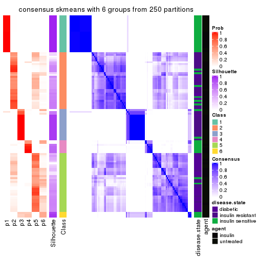
Heatmaps for the membership of samples in all partitions to see how consistent they are:
membership_heatmap(res, k = 2)
membership_heatmap(res, k = 3)
membership_heatmap(res, k = 4)

membership_heatmap(res, k = 5)
membership_heatmap(res, k = 6)
As soon as we have had the classes for columns, we can look for signatures which are significantly different between classes which can be candidate marks for certain classes. Following are the heatmaps for signatures.
Signature heatmaps where rows are scaled:
get_signatures(res, k = 2)
get_signatures(res, k = 3)
get_signatures(res, k = 4)
get_signatures(res, k = 5)
get_signatures(res, k = 6)
Signature heatmaps where rows are not scaled:
get_signatures(res, k = 2, scale_rows = FALSE)
get_signatures(res, k = 3, scale_rows = FALSE)
get_signatures(res, k = 4, scale_rows = FALSE)
get_signatures(res, k = 5, scale_rows = FALSE)
get_signatures(res, k = 6, scale_rows = FALSE)
Compare the overlap of signatures from different k:
compare_signatures(res)
get_signature() returns a data frame invisibly. TO get the list of signatures, the function
call should be assigned to a variable explicitly. In following code, if plot argument is set
to FALSE, no heatmap is plotted while only the differential analysis is performed.
# code only for demonstration
tb = get_signature(res, k = ..., plot = FALSE)
An example of the output of tb is:
#> which_row fdr mean_1 mean_2 scaled_mean_1 scaled_mean_2 km
#> 1 38 0.042760348 8.373488 9.131774 -0.5533452 0.5164555 1
#> 2 40 0.018707592 7.106213 8.469186 -0.6173731 0.5762149 1
#> 3 55 0.019134737 10.221463 11.207825 -0.6159697 0.5749050 1
#> 4 59 0.006059896 5.921854 7.869574 -0.6899429 0.6439467 1
#> 5 60 0.018055526 8.928898 10.211722 -0.6204761 0.5791110 1
#> 6 98 0.009384629 15.714769 14.887706 0.6635654 -0.6193277 2
...
The columns in tb are:
which_row: row indices corresponding to the input matrix.fdr: FDR for the differential test. mean_x: The mean value in group x.scaled_mean_x: The mean value in group x after rows are scaled.km: Row groups if k-means clustering is applied to rows.UMAP plot which shows how samples are separated.
dimension_reduction(res, k = 2, method = "UMAP")
dimension_reduction(res, k = 3, method = "UMAP")
dimension_reduction(res, k = 4, method = "UMAP")
dimension_reduction(res, k = 5, method = "UMAP")
dimension_reduction(res, k = 6, method = "UMAP")
Following heatmap shows how subgroups are split when increasing k:
collect_classes(res)

Test correlation between subgroups and known annotations. If the known annotation is numeric, one-way ANOVA test is applied, and if the known annotation is discrete, chi-squared contingency table test is applied.
test_to_known_factors(res)
#> n disease.state(p) agent(p) k
#> SD:skmeans 110 9.03e-08 4.34e-01 2
#> SD:skmeans 109 2.28e-12 2.79e-01 3
#> SD:skmeans 106 1.48e-15 9.73e-01 4
#> SD:skmeans 86 2.61e-12 2.97e-06 5
#> SD:skmeans 83 2.54e-13 8.86e-07 6
If matrix rows can be associated to genes, consider to use GO_Enrichment(res,
...) to perform function enrichment for the signature genes.
The object with results only for a single top-value method and a single partition method can be extracted as:
res = res_list["SD", "pam"]
# you can also extract it by
# res = res_list["SD:pam"]
A summary of res and all the functions that can be applied to it:
res
#> A 'ConsensusPartition' object with k = 2, 3, 4, 5, 6.
#> On a matrix with 11994 rows and 110 columns.
#> Top rows (1000, 2000, 3000, 4000, 5000) are extracted by 'SD' method.
#> Subgroups are detected by 'pam' method.
#> Performed in total 1250 partitions by row resampling.
#> Best k for subgroups seems to be 3.
#>
#> Following methods can be applied to this 'ConsensusPartition' object:
#> [1] "cola_report" "collect_classes" "collect_plots"
#> [4] "collect_stats" "colnames" "compare_signatures"
#> [7] "consensus_heatmap" "dimension_reduction" "functional_enrichment"
#> [10] "get_anno_col" "get_anno" "get_classes"
#> [13] "get_consensus" "get_matrix" "get_membership"
#> [16] "get_param" "get_signatures" "get_stats"
#> [19] "is_best_k" "is_stable_k" "membership_heatmap"
#> [22] "ncol" "nrow" "plot_ecdf"
#> [25] "rownames" "select_partition_number" "show"
#> [28] "suggest_best_k" "test_to_known_factors"
collect_plots() function collects all the plots made from res for all k (number of partitions)
into one single page to provide an easy and fast comparison between different k.
collect_plots(res)
The plots are:
k and the heatmap of
predicted classes for each k.k.k.k.All the plots in panels can be made by individual functions and they are plotted later in this section.
select_partition_number() produces several plots showing different
statistics for choosing “optimized” k. There are following statistics:
k;k, the area increased is defined as \(A_k - A_{k-1}\).The detailed explanations of these statistics can be found in the cola vignette.
Generally speaking, lower PAC score, higher mean silhouette score or higher
concordance corresponds to better partition. Rand index and Jaccard index
measure how similar the current partition is compared to partition with k-1.
If they are too similar, we won't accept k is better than k-1.
select_partition_number(res)
The numeric values for all these statistics can be obtained by get_stats().
get_stats(res)
#> k 1-PAC mean_silhouette concordance area_increased Rand Jaccard
#> 2 2 1.000 0.945 0.979 0.4594 0.533 0.533
#> 3 3 1.000 0.942 0.980 0.1413 0.937 0.883
#> 4 4 0.823 0.778 0.889 0.3030 0.746 0.495
#> 5 5 0.792 0.872 0.914 0.1326 0.925 0.744
#> 6 6 0.777 0.793 0.842 0.0559 0.911 0.634
suggest_best_k() suggests the best \(k\) based on these statistics. The rules are as follows:
NA.suggest_best_k(res)
#> [1] 3
#> attr(,"optional")
#> [1] 2
There is also optional best \(k\) = 2 that is worth to check.
Following shows the table of the partitions (You need to click the show/hide
code output link to see it). The membership matrix (columns with name p*)
is inferred by
clue::cl_consensus()
function with the SE method. Basically the value in the membership matrix
represents the probability to belong to a certain group. The finall class
label for an item is determined with the group with highest probability it
belongs to.
In get_classes() function, the entropy is calculated from the membership
matrix and the silhouette score is calculated from the consensus matrix.
cbind(get_classes(res, k = 2), get_membership(res, k = 2))
#> class entropy silhouette p1 p2
#> GSM555237 1 0.000 0.952 1.000 0.000
#> GSM555239 1 0.000 0.952 1.000 0.000
#> GSM555241 1 0.000 0.952 1.000 0.000
#> GSM555243 1 0.000 0.952 1.000 0.000
#> GSM555245 1 0.000 0.952 1.000 0.000
#> GSM555247 1 0.000 0.952 1.000 0.000
#> GSM555249 1 0.000 0.952 1.000 0.000
#> GSM555251 1 0.000 0.952 1.000 0.000
#> GSM555253 1 0.000 0.952 1.000 0.000
#> GSM555255 1 0.000 0.952 1.000 0.000
#> GSM555257 1 0.000 0.952 1.000 0.000
#> GSM555259 1 0.278 0.913 0.952 0.048
#> GSM555261 2 0.987 0.160 0.432 0.568
#> GSM555263 2 0.000 0.993 0.000 1.000
#> GSM555265 1 0.999 0.124 0.516 0.484
#> GSM555267 2 0.000 0.993 0.000 1.000
#> GSM555269 1 0.963 0.402 0.612 0.388
#> GSM555271 1 0.000 0.952 1.000 0.000
#> GSM555273 2 0.000 0.993 0.000 1.000
#> GSM555275 2 0.000 0.993 0.000 1.000
#> GSM555238 1 0.000 0.952 1.000 0.000
#> GSM555240 1 0.000 0.952 1.000 0.000
#> GSM555242 1 0.000 0.952 1.000 0.000
#> GSM555244 1 0.000 0.952 1.000 0.000
#> GSM555246 1 0.000 0.952 1.000 0.000
#> GSM555248 1 0.000 0.952 1.000 0.000
#> GSM555250 1 0.000 0.952 1.000 0.000
#> GSM555252 1 0.000 0.952 1.000 0.000
#> GSM555254 1 0.000 0.952 1.000 0.000
#> GSM555256 1 0.000 0.952 1.000 0.000
#> GSM555258 2 0.000 0.993 0.000 1.000
#> GSM555260 2 0.000 0.993 0.000 1.000
#> GSM555262 2 0.000 0.993 0.000 1.000
#> GSM555264 1 0.990 0.266 0.560 0.440
#> GSM555266 2 0.000 0.993 0.000 1.000
#> GSM555268 2 0.000 0.993 0.000 1.000
#> GSM555270 2 0.000 0.993 0.000 1.000
#> GSM555272 2 0.000 0.993 0.000 1.000
#> GSM555274 2 0.000 0.993 0.000 1.000
#> GSM555276 2 0.000 0.993 0.000 1.000
#> GSM555277 2 0.000 0.993 0.000 1.000
#> GSM555279 2 0.000 0.993 0.000 1.000
#> GSM555281 2 0.000 0.993 0.000 1.000
#> GSM555283 2 0.000 0.993 0.000 1.000
#> GSM555285 2 0.000 0.993 0.000 1.000
#> GSM555287 1 0.983 0.307 0.576 0.424
#> GSM555289 2 0.000 0.993 0.000 1.000
#> GSM555291 2 0.000 0.993 0.000 1.000
#> GSM555293 2 0.000 0.993 0.000 1.000
#> GSM555295 2 0.000 0.993 0.000 1.000
#> GSM555297 2 0.000 0.993 0.000 1.000
#> GSM555299 1 0.000 0.952 1.000 0.000
#> GSM555301 1 0.163 0.934 0.976 0.024
#> GSM555303 1 0.000 0.952 1.000 0.000
#> GSM555305 1 0.000 0.952 1.000 0.000
#> GSM555307 2 0.000 0.993 0.000 1.000
#> GSM555309 1 0.000 0.952 1.000 0.000
#> GSM555311 2 0.000 0.993 0.000 1.000
#> GSM555313 2 0.000 0.993 0.000 1.000
#> GSM555315 2 0.000 0.993 0.000 1.000
#> GSM555278 2 0.000 0.993 0.000 1.000
#> GSM555280 2 0.000 0.993 0.000 1.000
#> GSM555282 2 0.000 0.993 0.000 1.000
#> GSM555284 2 0.000 0.993 0.000 1.000
#> GSM555286 2 0.000 0.993 0.000 1.000
#> GSM555288 2 0.000 0.993 0.000 1.000
#> GSM555290 2 0.000 0.993 0.000 1.000
#> GSM555292 2 0.000 0.993 0.000 1.000
#> GSM555294 2 0.000 0.993 0.000 1.000
#> GSM555296 2 0.000 0.993 0.000 1.000
#> GSM555298 1 0.224 0.924 0.964 0.036
#> GSM555300 1 0.000 0.952 1.000 0.000
#> GSM555302 1 0.000 0.952 1.000 0.000
#> GSM555304 1 0.000 0.952 1.000 0.000
#> GSM555306 1 0.000 0.952 1.000 0.000
#> GSM555308 1 0.000 0.952 1.000 0.000
#> GSM555310 1 0.000 0.952 1.000 0.000
#> GSM555312 2 0.000 0.993 0.000 1.000
#> GSM555314 2 0.000 0.993 0.000 1.000
#> GSM555316 2 0.000 0.993 0.000 1.000
#> GSM555317 2 0.000 0.993 0.000 1.000
#> GSM555319 2 0.000 0.993 0.000 1.000
#> GSM555321 2 0.000 0.993 0.000 1.000
#> GSM555323 2 0.000 0.993 0.000 1.000
#> GSM555325 2 0.000 0.993 0.000 1.000
#> GSM555327 2 0.000 0.993 0.000 1.000
#> GSM555329 2 0.000 0.993 0.000 1.000
#> GSM555331 2 0.000 0.993 0.000 1.000
#> GSM555333 2 0.000 0.993 0.000 1.000
#> GSM555335 2 0.000 0.993 0.000 1.000
#> GSM555337 2 0.000 0.993 0.000 1.000
#> GSM555339 2 0.000 0.993 0.000 1.000
#> GSM555341 2 0.000 0.993 0.000 1.000
#> GSM555343 2 0.000 0.993 0.000 1.000
#> GSM555345 2 0.000 0.993 0.000 1.000
#> GSM555318 2 0.000 0.993 0.000 1.000
#> GSM555320 2 0.000 0.993 0.000 1.000
#> GSM555322 2 0.000 0.993 0.000 1.000
#> GSM555324 1 0.000 0.952 1.000 0.000
#> GSM555326 2 0.000 0.993 0.000 1.000
#> GSM555328 2 0.000 0.993 0.000 1.000
#> GSM555330 2 0.000 0.993 0.000 1.000
#> GSM555332 2 0.000 0.993 0.000 1.000
#> GSM555334 2 0.000 0.993 0.000 1.000
#> GSM555336 2 0.000 0.993 0.000 1.000
#> GSM555338 2 0.000 0.993 0.000 1.000
#> GSM555340 2 0.000 0.993 0.000 1.000
#> GSM555342 2 0.000 0.993 0.000 1.000
#> GSM555344 2 0.000 0.993 0.000 1.000
#> GSM555346 2 0.000 0.993 0.000 1.000
cbind(get_classes(res, k = 3), get_membership(res, k = 3))
#> class entropy silhouette p1 p2 p3
#> GSM555237 1 0.0000 0.898 1.000 0.000 0.000
#> GSM555239 1 0.0000 0.898 1.000 0.000 0.000
#> GSM555241 1 0.0000 0.898 1.000 0.000 0.000
#> GSM555243 1 0.0000 0.898 1.000 0.000 0.000
#> GSM555245 1 0.0000 0.898 1.000 0.000 0.000
#> GSM555247 1 0.0000 0.898 1.000 0.000 0.000
#> GSM555249 1 0.0000 0.898 1.000 0.000 0.000
#> GSM555251 1 0.0000 0.898 1.000 0.000 0.000
#> GSM555253 1 0.0000 0.898 1.000 0.000 0.000
#> GSM555255 1 0.0000 0.898 1.000 0.000 0.000
#> GSM555257 1 0.4555 0.695 0.800 0.000 0.200
#> GSM555259 1 0.5291 0.597 0.732 0.000 0.268
#> GSM555261 2 0.6302 -0.040 0.480 0.520 0.000
#> GSM555263 2 0.0000 0.992 0.000 1.000 0.000
#> GSM555265 1 0.6299 0.154 0.524 0.476 0.000
#> GSM555267 2 0.0000 0.992 0.000 1.000 0.000
#> GSM555269 3 0.0747 0.983 0.016 0.000 0.984
#> GSM555271 3 0.0000 0.999 0.000 0.000 1.000
#> GSM555273 2 0.0000 0.992 0.000 1.000 0.000
#> GSM555275 2 0.0000 0.992 0.000 1.000 0.000
#> GSM555238 1 0.0000 0.898 1.000 0.000 0.000
#> GSM555240 1 0.0000 0.898 1.000 0.000 0.000
#> GSM555242 1 0.0000 0.898 1.000 0.000 0.000
#> GSM555244 1 0.0000 0.898 1.000 0.000 0.000
#> GSM555246 1 0.0000 0.898 1.000 0.000 0.000
#> GSM555248 1 0.0000 0.898 1.000 0.000 0.000
#> GSM555250 1 0.0000 0.898 1.000 0.000 0.000
#> GSM555252 1 0.0000 0.898 1.000 0.000 0.000
#> GSM555254 1 0.0000 0.898 1.000 0.000 0.000
#> GSM555256 1 0.0000 0.898 1.000 0.000 0.000
#> GSM555258 2 0.0000 0.992 0.000 1.000 0.000
#> GSM555260 2 0.0000 0.992 0.000 1.000 0.000
#> GSM555262 2 0.0000 0.992 0.000 1.000 0.000
#> GSM555264 1 0.6410 0.322 0.576 0.420 0.004
#> GSM555266 2 0.0000 0.992 0.000 1.000 0.000
#> GSM555268 2 0.0000 0.992 0.000 1.000 0.000
#> GSM555270 2 0.0000 0.992 0.000 1.000 0.000
#> GSM555272 2 0.0000 0.992 0.000 1.000 0.000
#> GSM555274 2 0.0000 0.992 0.000 1.000 0.000
#> GSM555276 2 0.0000 0.992 0.000 1.000 0.000
#> GSM555277 2 0.0000 0.992 0.000 1.000 0.000
#> GSM555279 2 0.0000 0.992 0.000 1.000 0.000
#> GSM555281 2 0.0000 0.992 0.000 1.000 0.000
#> GSM555283 2 0.0000 0.992 0.000 1.000 0.000
#> GSM555285 2 0.0000 0.992 0.000 1.000 0.000
#> GSM555287 1 0.6773 0.456 0.636 0.340 0.024
#> GSM555289 2 0.0000 0.992 0.000 1.000 0.000
#> GSM555291 2 0.0000 0.992 0.000 1.000 0.000
#> GSM555293 2 0.0000 0.992 0.000 1.000 0.000
#> GSM555295 2 0.0000 0.992 0.000 1.000 0.000
#> GSM555297 2 0.0000 0.992 0.000 1.000 0.000
#> GSM555299 3 0.0000 0.999 0.000 0.000 1.000
#> GSM555301 3 0.0000 0.999 0.000 0.000 1.000
#> GSM555303 3 0.0000 0.999 0.000 0.000 1.000
#> GSM555305 3 0.0000 0.999 0.000 0.000 1.000
#> GSM555307 2 0.0000 0.992 0.000 1.000 0.000
#> GSM555309 3 0.0000 0.999 0.000 0.000 1.000
#> GSM555311 2 0.0000 0.992 0.000 1.000 0.000
#> GSM555313 2 0.0000 0.992 0.000 1.000 0.000
#> GSM555315 2 0.0000 0.992 0.000 1.000 0.000
#> GSM555278 2 0.0000 0.992 0.000 1.000 0.000
#> GSM555280 2 0.0000 0.992 0.000 1.000 0.000
#> GSM555282 2 0.0000 0.992 0.000 1.000 0.000
#> GSM555284 2 0.0000 0.992 0.000 1.000 0.000
#> GSM555286 2 0.0000 0.992 0.000 1.000 0.000
#> GSM555288 2 0.0000 0.992 0.000 1.000 0.000
#> GSM555290 2 0.0000 0.992 0.000 1.000 0.000
#> GSM555292 2 0.0000 0.992 0.000 1.000 0.000
#> GSM555294 2 0.0000 0.992 0.000 1.000 0.000
#> GSM555296 2 0.0000 0.992 0.000 1.000 0.000
#> GSM555298 3 0.0000 0.999 0.000 0.000 1.000
#> GSM555300 3 0.0000 0.999 0.000 0.000 1.000
#> GSM555302 3 0.0000 0.999 0.000 0.000 1.000
#> GSM555304 3 0.0000 0.999 0.000 0.000 1.000
#> GSM555306 3 0.0000 0.999 0.000 0.000 1.000
#> GSM555308 3 0.0000 0.999 0.000 0.000 1.000
#> GSM555310 3 0.0000 0.999 0.000 0.000 1.000
#> GSM555312 2 0.0000 0.992 0.000 1.000 0.000
#> GSM555314 2 0.0000 0.992 0.000 1.000 0.000
#> GSM555316 2 0.0000 0.992 0.000 1.000 0.000
#> GSM555317 2 0.0000 0.992 0.000 1.000 0.000
#> GSM555319 2 0.0000 0.992 0.000 1.000 0.000
#> GSM555321 2 0.0000 0.992 0.000 1.000 0.000
#> GSM555323 2 0.0000 0.992 0.000 1.000 0.000
#> GSM555325 2 0.0000 0.992 0.000 1.000 0.000
#> GSM555327 2 0.0000 0.992 0.000 1.000 0.000
#> GSM555329 2 0.0000 0.992 0.000 1.000 0.000
#> GSM555331 2 0.0000 0.992 0.000 1.000 0.000
#> GSM555333 2 0.0000 0.992 0.000 1.000 0.000
#> GSM555335 2 0.0000 0.992 0.000 1.000 0.000
#> GSM555337 2 0.0000 0.992 0.000 1.000 0.000
#> GSM555339 2 0.0000 0.992 0.000 1.000 0.000
#> GSM555341 2 0.0000 0.992 0.000 1.000 0.000
#> GSM555343 2 0.0000 0.992 0.000 1.000 0.000
#> GSM555345 2 0.0000 0.992 0.000 1.000 0.000
#> GSM555318 2 0.0000 0.992 0.000 1.000 0.000
#> GSM555320 2 0.0000 0.992 0.000 1.000 0.000
#> GSM555322 2 0.0000 0.992 0.000 1.000 0.000
#> GSM555324 3 0.0000 0.999 0.000 0.000 1.000
#> GSM555326 2 0.0000 0.992 0.000 1.000 0.000
#> GSM555328 2 0.0000 0.992 0.000 1.000 0.000
#> GSM555330 2 0.0000 0.992 0.000 1.000 0.000
#> GSM555332 2 0.0000 0.992 0.000 1.000 0.000
#> GSM555334 2 0.0000 0.992 0.000 1.000 0.000
#> GSM555336 2 0.0000 0.992 0.000 1.000 0.000
#> GSM555338 2 0.0000 0.992 0.000 1.000 0.000
#> GSM555340 2 0.0000 0.992 0.000 1.000 0.000
#> GSM555342 2 0.0000 0.992 0.000 1.000 0.000
#> GSM555344 2 0.0000 0.992 0.000 1.000 0.000
#> GSM555346 2 0.0000 0.992 0.000 1.000 0.000
cbind(get_classes(res, k = 4), get_membership(res, k = 4))
#> class entropy silhouette p1 p2 p3 p4
#> GSM555237 1 0.0000 1.0000 1.000 0.000 0.000 0.000
#> GSM555239 1 0.0000 1.0000 1.000 0.000 0.000 0.000
#> GSM555241 1 0.0000 1.0000 1.000 0.000 0.000 0.000
#> GSM555243 1 0.0000 1.0000 1.000 0.000 0.000 0.000
#> GSM555245 1 0.0000 1.0000 1.000 0.000 0.000 0.000
#> GSM555247 1 0.0000 1.0000 1.000 0.000 0.000 0.000
#> GSM555249 1 0.0000 1.0000 1.000 0.000 0.000 0.000
#> GSM555251 1 0.0000 1.0000 1.000 0.000 0.000 0.000
#> GSM555253 1 0.0000 1.0000 1.000 0.000 0.000 0.000
#> GSM555255 1 0.0000 1.0000 1.000 0.000 0.000 0.000
#> GSM555257 2 0.8004 -0.5683 0.020 0.416 0.168 0.396
#> GSM555259 4 0.6094 0.5155 0.000 0.416 0.048 0.536
#> GSM555261 4 0.4898 0.5608 0.000 0.416 0.000 0.584
#> GSM555263 4 0.4898 0.5608 0.000 0.416 0.000 0.584
#> GSM555265 4 0.4898 0.5608 0.000 0.416 0.000 0.584
#> GSM555267 4 0.4898 0.5608 0.000 0.416 0.000 0.584
#> GSM555269 4 0.6024 0.5196 0.000 0.416 0.044 0.540
#> GSM555271 3 0.0000 1.0000 0.000 0.000 1.000 0.000
#> GSM555273 4 0.0000 0.5716 0.000 0.000 0.000 1.000
#> GSM555275 4 0.0000 0.5716 0.000 0.000 0.000 1.000
#> GSM555238 1 0.0000 1.0000 1.000 0.000 0.000 0.000
#> GSM555240 1 0.0000 1.0000 1.000 0.000 0.000 0.000
#> GSM555242 1 0.0000 1.0000 1.000 0.000 0.000 0.000
#> GSM555244 1 0.0000 1.0000 1.000 0.000 0.000 0.000
#> GSM555246 1 0.0000 1.0000 1.000 0.000 0.000 0.000
#> GSM555248 1 0.0000 1.0000 1.000 0.000 0.000 0.000
#> GSM555250 1 0.0000 1.0000 1.000 0.000 0.000 0.000
#> GSM555252 1 0.0000 1.0000 1.000 0.000 0.000 0.000
#> GSM555254 1 0.0000 1.0000 1.000 0.000 0.000 0.000
#> GSM555256 1 0.0000 1.0000 1.000 0.000 0.000 0.000
#> GSM555258 4 0.4898 0.5608 0.000 0.416 0.000 0.584
#> GSM555260 4 0.3801 0.0305 0.000 0.220 0.000 0.780
#> GSM555262 4 0.3569 0.1343 0.000 0.196 0.000 0.804
#> GSM555264 4 0.4898 0.5608 0.000 0.416 0.000 0.584
#> GSM555266 2 0.4916 0.9511 0.000 0.576 0.000 0.424
#> GSM555268 2 0.4898 0.9565 0.000 0.584 0.000 0.416
#> GSM555270 2 0.4898 0.9565 0.000 0.584 0.000 0.416
#> GSM555272 4 0.4898 0.5608 0.000 0.416 0.000 0.584
#> GSM555274 2 0.4948 0.9356 0.000 0.560 0.000 0.440
#> GSM555276 2 0.4898 0.9565 0.000 0.584 0.000 0.416
#> GSM555277 4 0.0469 0.5594 0.000 0.012 0.000 0.988
#> GSM555279 4 0.0000 0.5716 0.000 0.000 0.000 1.000
#> GSM555281 4 0.0000 0.5716 0.000 0.000 0.000 1.000
#> GSM555283 4 0.3569 0.1229 0.000 0.196 0.000 0.804
#> GSM555285 4 0.0469 0.5565 0.000 0.012 0.000 0.988
#> GSM555287 4 0.5203 0.5552 0.008 0.416 0.000 0.576
#> GSM555289 2 0.4898 0.9565 0.000 0.584 0.000 0.416
#> GSM555291 4 0.0000 0.5716 0.000 0.000 0.000 1.000
#> GSM555293 2 0.4948 0.9355 0.000 0.560 0.000 0.440
#> GSM555295 4 0.4898 0.5608 0.000 0.416 0.000 0.584
#> GSM555297 4 0.4898 0.5608 0.000 0.416 0.000 0.584
#> GSM555299 3 0.0000 1.0000 0.000 0.000 1.000 0.000
#> GSM555301 3 0.0000 1.0000 0.000 0.000 1.000 0.000
#> GSM555303 3 0.0000 1.0000 0.000 0.000 1.000 0.000
#> GSM555305 3 0.0000 1.0000 0.000 0.000 1.000 0.000
#> GSM555307 4 0.0000 0.5716 0.000 0.000 0.000 1.000
#> GSM555309 3 0.0000 1.0000 0.000 0.000 1.000 0.000
#> GSM555311 4 0.0000 0.5716 0.000 0.000 0.000 1.000
#> GSM555313 4 0.2216 0.4339 0.000 0.092 0.000 0.908
#> GSM555315 4 0.0000 0.5716 0.000 0.000 0.000 1.000
#> GSM555278 2 0.4898 0.9565 0.000 0.584 0.000 0.416
#> GSM555280 2 0.4898 0.9565 0.000 0.584 0.000 0.416
#> GSM555282 2 0.4907 0.9536 0.000 0.580 0.000 0.420
#> GSM555284 4 0.4522 -0.3663 0.000 0.320 0.000 0.680
#> GSM555286 2 0.4898 0.9565 0.000 0.584 0.000 0.416
#> GSM555288 4 0.1118 0.5845 0.000 0.036 0.000 0.964
#> GSM555290 2 0.4898 0.9565 0.000 0.584 0.000 0.416
#> GSM555292 2 0.4898 0.9565 0.000 0.584 0.000 0.416
#> GSM555294 2 0.4925 0.9485 0.000 0.572 0.000 0.428
#> GSM555296 2 0.4898 0.9565 0.000 0.584 0.000 0.416
#> GSM555298 3 0.0000 1.0000 0.000 0.000 1.000 0.000
#> GSM555300 3 0.0000 1.0000 0.000 0.000 1.000 0.000
#> GSM555302 3 0.0000 1.0000 0.000 0.000 1.000 0.000
#> GSM555304 3 0.0000 1.0000 0.000 0.000 1.000 0.000
#> GSM555306 3 0.0000 1.0000 0.000 0.000 1.000 0.000
#> GSM555308 3 0.0000 1.0000 0.000 0.000 1.000 0.000
#> GSM555310 3 0.0000 1.0000 0.000 0.000 1.000 0.000
#> GSM555312 4 0.0336 0.5639 0.000 0.008 0.000 0.992
#> GSM555314 4 0.4898 0.5608 0.000 0.416 0.000 0.584
#> GSM555316 2 0.4907 0.9544 0.000 0.580 0.000 0.420
#> GSM555317 2 0.4925 0.9476 0.000 0.572 0.000 0.428
#> GSM555319 2 0.4898 0.9565 0.000 0.584 0.000 0.416
#> GSM555321 2 0.4916 0.9518 0.000 0.576 0.000 0.424
#> GSM555323 4 0.5000 -0.8364 0.000 0.496 0.000 0.504
#> GSM555325 2 0.4925 0.9485 0.000 0.572 0.000 0.428
#> GSM555327 2 0.4898 0.9565 0.000 0.584 0.000 0.416
#> GSM555329 2 0.4898 0.9565 0.000 0.584 0.000 0.416
#> GSM555331 4 0.4040 -0.0913 0.000 0.248 0.000 0.752
#> GSM555333 4 0.4406 0.6010 0.000 0.300 0.000 0.700
#> GSM555335 2 0.4994 0.8725 0.000 0.520 0.000 0.480
#> GSM555337 2 0.4898 0.9565 0.000 0.584 0.000 0.416
#> GSM555339 4 0.0188 0.5674 0.000 0.004 0.000 0.996
#> GSM555341 4 0.4134 -0.1552 0.000 0.260 0.000 0.740
#> GSM555343 2 0.4941 0.9403 0.000 0.564 0.000 0.436
#> GSM555345 4 0.4955 0.5591 0.000 0.444 0.000 0.556
#> GSM555318 2 0.4907 0.9542 0.000 0.580 0.000 0.420
#> GSM555320 2 0.4898 0.9565 0.000 0.584 0.000 0.416
#> GSM555322 2 0.4898 0.9565 0.000 0.584 0.000 0.416
#> GSM555324 3 0.0000 1.0000 0.000 0.000 1.000 0.000
#> GSM555326 2 0.4898 0.9565 0.000 0.584 0.000 0.416
#> GSM555328 2 0.4898 0.9565 0.000 0.584 0.000 0.416
#> GSM555330 2 0.4898 0.9565 0.000 0.584 0.000 0.416
#> GSM555332 2 0.4898 0.9565 0.000 0.584 0.000 0.416
#> GSM555334 2 0.4898 0.9565 0.000 0.584 0.000 0.416
#> GSM555336 2 0.4898 0.9565 0.000 0.584 0.000 0.416
#> GSM555338 2 0.4898 0.9565 0.000 0.584 0.000 0.416
#> GSM555340 2 0.4925 0.9483 0.000 0.572 0.000 0.428
#> GSM555342 2 0.4907 0.9544 0.000 0.580 0.000 0.420
#> GSM555344 2 0.4916 0.9520 0.000 0.576 0.000 0.424
#> GSM555346 2 0.4948 0.9355 0.000 0.560 0.000 0.440
cbind(get_classes(res, k = 5), get_membership(res, k = 5))
#> class entropy silhouette p1 p2 p3 p4 p5
#> GSM555237 1 0.0000 1.000 1.000 0.000 0.000 0.000 0.000
#> GSM555239 1 0.0000 1.000 1.000 0.000 0.000 0.000 0.000
#> GSM555241 1 0.0000 1.000 1.000 0.000 0.000 0.000 0.000
#> GSM555243 1 0.0000 1.000 1.000 0.000 0.000 0.000 0.000
#> GSM555245 1 0.0000 1.000 1.000 0.000 0.000 0.000 0.000
#> GSM555247 1 0.0000 1.000 1.000 0.000 0.000 0.000 0.000
#> GSM555249 1 0.0000 1.000 1.000 0.000 0.000 0.000 0.000
#> GSM555251 1 0.0000 1.000 1.000 0.000 0.000 0.000 0.000
#> GSM555253 1 0.0000 1.000 1.000 0.000 0.000 0.000 0.000
#> GSM555255 1 0.0000 1.000 1.000 0.000 0.000 0.000 0.000
#> GSM555257 4 0.0865 0.901 0.004 0.000 0.024 0.972 0.000
#> GSM555259 4 0.0000 0.928 0.000 0.000 0.000 1.000 0.000
#> GSM555261 4 0.0000 0.928 0.000 0.000 0.000 1.000 0.000
#> GSM555263 4 0.0000 0.928 0.000 0.000 0.000 1.000 0.000
#> GSM555265 4 0.0000 0.928 0.000 0.000 0.000 1.000 0.000
#> GSM555267 4 0.0000 0.928 0.000 0.000 0.000 1.000 0.000
#> GSM555269 4 0.0000 0.928 0.000 0.000 0.000 1.000 0.000
#> GSM555271 3 0.0963 0.969 0.000 0.000 0.964 0.036 0.000
#> GSM555273 5 0.1732 0.869 0.000 0.000 0.000 0.080 0.920
#> GSM555275 5 0.1892 0.869 0.000 0.004 0.000 0.080 0.916
#> GSM555238 1 0.0000 1.000 1.000 0.000 0.000 0.000 0.000
#> GSM555240 1 0.0000 1.000 1.000 0.000 0.000 0.000 0.000
#> GSM555242 1 0.0000 1.000 1.000 0.000 0.000 0.000 0.000
#> GSM555244 1 0.0000 1.000 1.000 0.000 0.000 0.000 0.000
#> GSM555246 1 0.0000 1.000 1.000 0.000 0.000 0.000 0.000
#> GSM555248 1 0.0000 1.000 1.000 0.000 0.000 0.000 0.000
#> GSM555250 1 0.0000 1.000 1.000 0.000 0.000 0.000 0.000
#> GSM555252 1 0.0000 1.000 1.000 0.000 0.000 0.000 0.000
#> GSM555254 1 0.0000 1.000 1.000 0.000 0.000 0.000 0.000
#> GSM555256 1 0.0000 1.000 1.000 0.000 0.000 0.000 0.000
#> GSM555258 4 0.2891 0.740 0.000 0.000 0.000 0.824 0.176
#> GSM555260 5 0.4072 0.821 0.000 0.108 0.000 0.100 0.792
#> GSM555262 5 0.3427 0.830 0.000 0.108 0.000 0.056 0.836
#> GSM555264 4 0.0000 0.928 0.000 0.000 0.000 1.000 0.000
#> GSM555266 2 0.2773 0.831 0.000 0.836 0.000 0.000 0.164
#> GSM555268 2 0.0000 0.861 0.000 1.000 0.000 0.000 0.000
#> GSM555270 2 0.0000 0.861 0.000 1.000 0.000 0.000 0.000
#> GSM555272 5 0.3966 0.553 0.000 0.000 0.000 0.336 0.664
#> GSM555274 5 0.4088 0.565 0.000 0.368 0.000 0.000 0.632
#> GSM555276 5 0.4242 0.384 0.000 0.428 0.000 0.000 0.572
#> GSM555277 5 0.1331 0.836 0.000 0.040 0.000 0.008 0.952
#> GSM555279 5 0.1732 0.869 0.000 0.000 0.000 0.080 0.920
#> GSM555281 5 0.1732 0.869 0.000 0.000 0.000 0.080 0.920
#> GSM555283 5 0.1845 0.835 0.000 0.056 0.000 0.016 0.928
#> GSM555285 5 0.2511 0.864 0.000 0.028 0.000 0.080 0.892
#> GSM555287 4 0.0000 0.928 0.000 0.000 0.000 1.000 0.000
#> GSM555289 2 0.3242 0.823 0.000 0.784 0.000 0.000 0.216
#> GSM555291 5 0.2331 0.866 0.000 0.020 0.000 0.080 0.900
#> GSM555293 2 0.4161 0.628 0.000 0.608 0.000 0.000 0.392
#> GSM555295 5 0.1732 0.869 0.000 0.000 0.000 0.080 0.920
#> GSM555297 4 0.1478 0.881 0.000 0.000 0.000 0.936 0.064
#> GSM555299 3 0.0000 0.992 0.000 0.000 1.000 0.000 0.000
#> GSM555301 3 0.0963 0.969 0.000 0.000 0.964 0.036 0.000
#> GSM555303 3 0.0000 0.992 0.000 0.000 1.000 0.000 0.000
#> GSM555305 3 0.0000 0.992 0.000 0.000 1.000 0.000 0.000
#> GSM555307 5 0.2130 0.869 0.000 0.012 0.000 0.080 0.908
#> GSM555309 3 0.0000 0.992 0.000 0.000 1.000 0.000 0.000
#> GSM555311 5 0.1892 0.869 0.000 0.004 0.000 0.080 0.916
#> GSM555313 5 0.5104 0.630 0.000 0.308 0.000 0.060 0.632
#> GSM555315 5 0.2017 0.869 0.000 0.008 0.000 0.080 0.912
#> GSM555278 2 0.2773 0.765 0.000 0.836 0.000 0.000 0.164
#> GSM555280 2 0.0000 0.861 0.000 1.000 0.000 0.000 0.000
#> GSM555282 2 0.0963 0.848 0.000 0.964 0.000 0.000 0.036
#> GSM555284 5 0.4325 0.713 0.000 0.240 0.000 0.036 0.724
#> GSM555286 2 0.0000 0.861 0.000 1.000 0.000 0.000 0.000
#> GSM555288 5 0.3800 0.805 0.000 0.108 0.000 0.080 0.812
#> GSM555290 2 0.0162 0.861 0.000 0.996 0.000 0.000 0.004
#> GSM555292 2 0.0290 0.858 0.000 0.992 0.000 0.000 0.008
#> GSM555294 2 0.2424 0.835 0.000 0.868 0.000 0.000 0.132
#> GSM555296 2 0.1478 0.861 0.000 0.936 0.000 0.000 0.064
#> GSM555298 3 0.0880 0.972 0.000 0.000 0.968 0.032 0.000
#> GSM555300 3 0.0000 0.992 0.000 0.000 1.000 0.000 0.000
#> GSM555302 3 0.0000 0.992 0.000 0.000 1.000 0.000 0.000
#> GSM555304 3 0.0000 0.992 0.000 0.000 1.000 0.000 0.000
#> GSM555306 3 0.0000 0.992 0.000 0.000 1.000 0.000 0.000
#> GSM555308 3 0.0000 0.992 0.000 0.000 1.000 0.000 0.000
#> GSM555310 3 0.0000 0.992 0.000 0.000 1.000 0.000 0.000
#> GSM555312 5 0.2423 0.865 0.000 0.024 0.000 0.080 0.896
#> GSM555314 5 0.1892 0.869 0.000 0.004 0.000 0.080 0.916
#> GSM555316 2 0.0703 0.857 0.000 0.976 0.000 0.000 0.024
#> GSM555317 2 0.3949 0.716 0.000 0.668 0.000 0.000 0.332
#> GSM555319 2 0.3242 0.823 0.000 0.784 0.000 0.000 0.216
#> GSM555321 2 0.3039 0.836 0.000 0.808 0.000 0.000 0.192
#> GSM555323 5 0.0963 0.825 0.000 0.036 0.000 0.000 0.964
#> GSM555325 2 0.1908 0.857 0.000 0.908 0.000 0.000 0.092
#> GSM555327 2 0.3242 0.823 0.000 0.784 0.000 0.000 0.216
#> GSM555329 2 0.3242 0.823 0.000 0.784 0.000 0.000 0.216
#> GSM555331 5 0.2020 0.766 0.000 0.100 0.000 0.000 0.900
#> GSM555333 5 0.1732 0.869 0.000 0.000 0.000 0.080 0.920
#> GSM555335 2 0.4201 0.599 0.000 0.592 0.000 0.000 0.408
#> GSM555337 2 0.3039 0.833 0.000 0.808 0.000 0.000 0.192
#> GSM555339 5 0.1211 0.840 0.000 0.024 0.000 0.016 0.960
#> GSM555341 5 0.0794 0.830 0.000 0.028 0.000 0.000 0.972
#> GSM555343 2 0.4114 0.654 0.000 0.624 0.000 0.000 0.376
#> GSM555345 4 0.4481 0.376 0.000 0.008 0.000 0.576 0.416
#> GSM555318 2 0.3395 0.815 0.000 0.764 0.000 0.000 0.236
#> GSM555320 2 0.0000 0.861 0.000 1.000 0.000 0.000 0.000
#> GSM555322 2 0.0162 0.861 0.000 0.996 0.000 0.000 0.004
#> GSM555324 3 0.0000 0.992 0.000 0.000 1.000 0.000 0.000
#> GSM555326 2 0.0000 0.861 0.000 1.000 0.000 0.000 0.000
#> GSM555328 2 0.0162 0.862 0.000 0.996 0.000 0.000 0.004
#> GSM555330 2 0.0000 0.861 0.000 1.000 0.000 0.000 0.000
#> GSM555332 2 0.3039 0.834 0.000 0.808 0.000 0.000 0.192
#> GSM555334 2 0.0000 0.861 0.000 1.000 0.000 0.000 0.000
#> GSM555336 2 0.0162 0.861 0.000 0.996 0.000 0.000 0.004
#> GSM555338 2 0.3242 0.823 0.000 0.784 0.000 0.000 0.216
#> GSM555340 2 0.3274 0.821 0.000 0.780 0.000 0.000 0.220
#> GSM555342 2 0.3424 0.796 0.000 0.760 0.000 0.000 0.240
#> GSM555344 2 0.0703 0.857 0.000 0.976 0.000 0.000 0.024
#> GSM555346 2 0.3661 0.654 0.000 0.724 0.000 0.000 0.276
cbind(get_classes(res, k = 6), get_membership(res, k = 6))
#> class entropy silhouette p1 p2 p3 p4 p5 p6
#> GSM555237 1 0.0790 0.984 0.968 0.000 0.000 0.000 0.000 0.032
#> GSM555239 1 0.0000 0.988 1.000 0.000 0.000 0.000 0.000 0.000
#> GSM555241 1 0.0000 0.988 1.000 0.000 0.000 0.000 0.000 0.000
#> GSM555243 1 0.0000 0.988 1.000 0.000 0.000 0.000 0.000 0.000
#> GSM555245 1 0.0000 0.988 1.000 0.000 0.000 0.000 0.000 0.000
#> GSM555247 1 0.0000 0.988 1.000 0.000 0.000 0.000 0.000 0.000
#> GSM555249 1 0.0000 0.988 1.000 0.000 0.000 0.000 0.000 0.000
#> GSM555251 1 0.0000 0.988 1.000 0.000 0.000 0.000 0.000 0.000
#> GSM555253 1 0.0000 0.988 1.000 0.000 0.000 0.000 0.000 0.000
#> GSM555255 1 0.0790 0.984 0.968 0.000 0.000 0.000 0.000 0.032
#> GSM555257 4 0.2416 0.853 0.000 0.000 0.000 0.844 0.000 0.156
#> GSM555259 4 0.0000 0.918 0.000 0.000 0.000 1.000 0.000 0.000
#> GSM555261 4 0.0000 0.918 0.000 0.000 0.000 1.000 0.000 0.000
#> GSM555263 4 0.0000 0.918 0.000 0.000 0.000 1.000 0.000 0.000
#> GSM555265 4 0.0000 0.918 0.000 0.000 0.000 1.000 0.000 0.000
#> GSM555267 4 0.0000 0.918 0.000 0.000 0.000 1.000 0.000 0.000
#> GSM555269 4 0.0000 0.918 0.000 0.000 0.000 1.000 0.000 0.000
#> GSM555271 3 0.1765 0.906 0.000 0.000 0.904 0.096 0.000 0.000
#> GSM555273 5 0.3786 0.764 0.000 0.064 0.000 0.000 0.768 0.168
#> GSM555275 5 0.2631 0.779 0.000 0.000 0.000 0.000 0.820 0.180
#> GSM555238 1 0.0790 0.984 0.968 0.000 0.000 0.000 0.000 0.032
#> GSM555240 1 0.0790 0.984 0.968 0.000 0.000 0.000 0.000 0.032
#> GSM555242 1 0.0790 0.984 0.968 0.000 0.000 0.000 0.000 0.032
#> GSM555244 1 0.0000 0.988 1.000 0.000 0.000 0.000 0.000 0.000
#> GSM555246 1 0.0260 0.988 0.992 0.000 0.000 0.000 0.000 0.008
#> GSM555248 1 0.0000 0.988 1.000 0.000 0.000 0.000 0.000 0.000
#> GSM555250 1 0.0000 0.988 1.000 0.000 0.000 0.000 0.000 0.000
#> GSM555252 1 0.0790 0.984 0.968 0.000 0.000 0.000 0.000 0.032
#> GSM555254 1 0.0790 0.984 0.968 0.000 0.000 0.000 0.000 0.032
#> GSM555256 1 0.0790 0.984 0.968 0.000 0.000 0.000 0.000 0.032
#> GSM555258 4 0.5701 0.504 0.000 0.008 0.000 0.540 0.296 0.156
#> GSM555260 5 0.3792 0.638 0.000 0.048 0.000 0.012 0.784 0.156
#> GSM555262 5 0.1501 0.733 0.000 0.076 0.000 0.000 0.924 0.000
#> GSM555264 4 0.3681 0.822 0.000 0.064 0.000 0.780 0.000 0.156
#> GSM555266 2 0.3774 0.476 0.000 0.592 0.000 0.000 0.408 0.000
#> GSM555268 2 0.1765 0.774 0.000 0.904 0.000 0.000 0.096 0.000
#> GSM555270 2 0.1663 0.794 0.000 0.912 0.000 0.000 0.000 0.088
#> GSM555272 5 0.3821 0.599 0.000 0.004 0.000 0.064 0.776 0.156
#> GSM555274 5 0.2941 0.622 0.000 0.220 0.000 0.000 0.780 0.000
#> GSM555276 6 0.5665 0.533 0.000 0.328 0.000 0.000 0.172 0.500
#> GSM555277 5 0.4456 0.170 0.000 0.028 0.000 0.000 0.524 0.448
#> GSM555279 5 0.2730 0.776 0.000 0.000 0.000 0.000 0.808 0.192
#> GSM555281 5 0.2631 0.779 0.000 0.000 0.000 0.000 0.820 0.180
#> GSM555283 5 0.4570 0.610 0.000 0.092 0.000 0.000 0.680 0.228
#> GSM555285 5 0.4964 0.665 0.000 0.152 0.000 0.000 0.648 0.200
#> GSM555287 4 0.0146 0.917 0.000 0.000 0.000 0.996 0.004 0.000
#> GSM555289 6 0.3390 0.761 0.000 0.296 0.000 0.000 0.000 0.704
#> GSM555291 5 0.3534 0.737 0.000 0.076 0.000 0.000 0.800 0.124
#> GSM555293 6 0.4084 0.580 0.000 0.400 0.000 0.000 0.012 0.588
#> GSM555295 5 0.3885 0.759 0.000 0.064 0.000 0.000 0.756 0.180
#> GSM555297 4 0.2433 0.833 0.000 0.000 0.000 0.884 0.072 0.044
#> GSM555299 3 0.0632 0.970 0.000 0.000 0.976 0.000 0.000 0.024
#> GSM555301 3 0.1765 0.906 0.000 0.000 0.904 0.096 0.000 0.000
#> GSM555303 3 0.0632 0.970 0.000 0.000 0.976 0.000 0.000 0.024
#> GSM555305 3 0.0000 0.970 0.000 0.000 1.000 0.000 0.000 0.000
#> GSM555307 5 0.4469 0.243 0.000 0.028 0.000 0.000 0.504 0.468
#> GSM555309 3 0.0632 0.970 0.000 0.000 0.976 0.000 0.000 0.024
#> GSM555311 5 0.3852 0.761 0.000 0.064 0.000 0.000 0.760 0.176
#> GSM555313 5 0.2048 0.708 0.000 0.120 0.000 0.000 0.880 0.000
#> GSM555315 5 0.3916 0.757 0.000 0.064 0.000 0.000 0.752 0.184
#> GSM555278 2 0.3774 0.457 0.000 0.592 0.000 0.000 0.408 0.000
#> GSM555280 2 0.1921 0.797 0.000 0.916 0.000 0.000 0.052 0.032
#> GSM555282 2 0.3620 0.556 0.000 0.648 0.000 0.000 0.352 0.000
#> GSM555284 5 0.1714 0.725 0.000 0.092 0.000 0.000 0.908 0.000
#> GSM555286 2 0.1610 0.796 0.000 0.916 0.000 0.000 0.000 0.084
#> GSM555288 5 0.0972 0.744 0.000 0.028 0.000 0.000 0.964 0.008
#> GSM555290 2 0.1663 0.794 0.000 0.912 0.000 0.000 0.000 0.088
#> GSM555292 2 0.2048 0.761 0.000 0.880 0.000 0.000 0.120 0.000
#> GSM555294 2 0.2136 0.751 0.000 0.904 0.000 0.000 0.048 0.048
#> GSM555296 2 0.3655 0.712 0.000 0.792 0.000 0.000 0.112 0.096
#> GSM555298 3 0.1501 0.923 0.000 0.000 0.924 0.076 0.000 0.000
#> GSM555300 3 0.0632 0.970 0.000 0.000 0.976 0.000 0.000 0.024
#> GSM555302 3 0.0000 0.970 0.000 0.000 1.000 0.000 0.000 0.000
#> GSM555304 3 0.0000 0.970 0.000 0.000 1.000 0.000 0.000 0.000
#> GSM555306 3 0.0000 0.970 0.000 0.000 1.000 0.000 0.000 0.000
#> GSM555308 3 0.0632 0.970 0.000 0.000 0.976 0.000 0.000 0.024
#> GSM555310 3 0.0000 0.970 0.000 0.000 1.000 0.000 0.000 0.000
#> GSM555312 5 0.1408 0.761 0.000 0.020 0.000 0.000 0.944 0.036
#> GSM555314 5 0.3122 0.780 0.000 0.020 0.000 0.000 0.804 0.176
#> GSM555316 2 0.1753 0.795 0.000 0.912 0.000 0.000 0.004 0.084
#> GSM555317 6 0.4012 0.749 0.000 0.176 0.000 0.000 0.076 0.748
#> GSM555319 6 0.3547 0.737 0.000 0.332 0.000 0.000 0.000 0.668
#> GSM555321 6 0.3578 0.717 0.000 0.340 0.000 0.000 0.000 0.660
#> GSM555323 6 0.4074 0.673 0.000 0.108 0.000 0.000 0.140 0.752
#> GSM555325 2 0.1970 0.764 0.000 0.912 0.000 0.000 0.028 0.060
#> GSM555327 6 0.3390 0.761 0.000 0.296 0.000 0.000 0.000 0.704
#> GSM555329 6 0.3833 0.553 0.000 0.444 0.000 0.000 0.000 0.556
#> GSM555331 6 0.3776 0.601 0.000 0.048 0.000 0.000 0.196 0.756
#> GSM555333 5 0.2823 0.770 0.000 0.000 0.000 0.000 0.796 0.204
#> GSM555335 6 0.4545 0.733 0.000 0.224 0.000 0.000 0.092 0.684
#> GSM555337 6 0.3756 0.649 0.000 0.400 0.000 0.000 0.000 0.600
#> GSM555339 6 0.4210 0.287 0.000 0.028 0.000 0.000 0.336 0.636
#> GSM555341 6 0.4666 0.643 0.000 0.108 0.000 0.000 0.216 0.676
#> GSM555343 6 0.3240 0.767 0.000 0.244 0.000 0.000 0.004 0.752
#> GSM555345 6 0.4757 0.572 0.000 0.028 0.000 0.208 0.064 0.700
#> GSM555318 6 0.4455 0.748 0.000 0.232 0.000 0.000 0.080 0.688
#> GSM555320 2 0.0891 0.785 0.000 0.968 0.000 0.000 0.008 0.024
#> GSM555322 2 0.1714 0.792 0.000 0.908 0.000 0.000 0.000 0.092
#> GSM555324 3 0.0632 0.970 0.000 0.000 0.976 0.000 0.000 0.024
#> GSM555326 2 0.1327 0.802 0.000 0.936 0.000 0.000 0.000 0.064
#> GSM555328 2 0.1501 0.798 0.000 0.924 0.000 0.000 0.000 0.076
#> GSM555330 2 0.2562 0.676 0.000 0.828 0.000 0.000 0.000 0.172
#> GSM555332 6 0.4696 0.682 0.000 0.356 0.000 0.000 0.056 0.588
#> GSM555334 2 0.2048 0.763 0.000 0.880 0.000 0.000 0.000 0.120
#> GSM555336 2 0.0632 0.792 0.000 0.976 0.000 0.000 0.000 0.024
#> GSM555338 6 0.3390 0.761 0.000 0.296 0.000 0.000 0.000 0.704
#> GSM555340 6 0.3390 0.761 0.000 0.296 0.000 0.000 0.000 0.704
#> GSM555342 2 0.3668 0.478 0.000 0.744 0.000 0.000 0.028 0.228
#> GSM555344 2 0.2404 0.796 0.000 0.884 0.000 0.000 0.036 0.080
#> GSM555346 2 0.4154 0.566 0.000 0.744 0.000 0.000 0.144 0.112
Heatmaps for the consensus matrix. It visualizes the probability of two samples to be in a same group.
consensus_heatmap(res, k = 2)
consensus_heatmap(res, k = 3)
consensus_heatmap(res, k = 4)
consensus_heatmap(res, k = 5)
consensus_heatmap(res, k = 6)
Heatmaps for the membership of samples in all partitions to see how consistent they are:
membership_heatmap(res, k = 2)
membership_heatmap(res, k = 3)
membership_heatmap(res, k = 4)
membership_heatmap(res, k = 5)
membership_heatmap(res, k = 6)
As soon as we have had the classes for columns, we can look for signatures which are significantly different between classes which can be candidate marks for certain classes. Following are the heatmaps for signatures.
Signature heatmaps where rows are scaled:
get_signatures(res, k = 2)
get_signatures(res, k = 3)
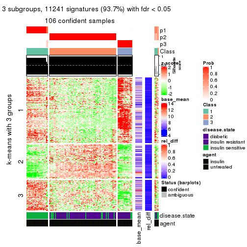
get_signatures(res, k = 4)

get_signatures(res, k = 5)
get_signatures(res, k = 6)
Signature heatmaps where rows are not scaled:
get_signatures(res, k = 2, scale_rows = FALSE)
get_signatures(res, k = 3, scale_rows = FALSE)
get_signatures(res, k = 4, scale_rows = FALSE)
get_signatures(res, k = 5, scale_rows = FALSE)

get_signatures(res, k = 6, scale_rows = FALSE)
Compare the overlap of signatures from different k:
compare_signatures(res)
get_signature() returns a data frame invisibly. TO get the list of signatures, the function
call should be assigned to a variable explicitly. In following code, if plot argument is set
to FALSE, no heatmap is plotted while only the differential analysis is performed.
# code only for demonstration
tb = get_signature(res, k = ..., plot = FALSE)
An example of the output of tb is:
#> which_row fdr mean_1 mean_2 scaled_mean_1 scaled_mean_2 km
#> 1 38 0.042760348 8.373488 9.131774 -0.5533452 0.5164555 1
#> 2 40 0.018707592 7.106213 8.469186 -0.6173731 0.5762149 1
#> 3 55 0.019134737 10.221463 11.207825 -0.6159697 0.5749050 1
#> 4 59 0.006059896 5.921854 7.869574 -0.6899429 0.6439467 1
#> 5 60 0.018055526 8.928898 10.211722 -0.6204761 0.5791110 1
#> 6 98 0.009384629 15.714769 14.887706 0.6635654 -0.6193277 2
...
The columns in tb are:
which_row: row indices corresponding to the input matrix.fdr: FDR for the differential test. mean_x: The mean value in group x.scaled_mean_x: The mean value in group x after rows are scaled.km: Row groups if k-means clustering is applied to rows.UMAP plot which shows how samples are separated.
dimension_reduction(res, k = 2, method = "UMAP")
dimension_reduction(res, k = 3, method = "UMAP")
dimension_reduction(res, k = 4, method = "UMAP")
dimension_reduction(res, k = 5, method = "UMAP")
dimension_reduction(res, k = 6, method = "UMAP")
Following heatmap shows how subgroups are split when increasing k:
collect_classes(res)
Test correlation between subgroups and known annotations. If the known annotation is numeric, one-way ANOVA test is applied, and if the known annotation is discrete, chi-squared contingency table test is applied.
test_to_known_factors(res)
#> n disease.state(p) agent(p) k
#> SD:pam 105 1.39e-06 9.95e-01 2
#> SD:pam 106 7.06e-13 8.43e-01 3
#> SD:pam 101 3.49e-14 7.90e-04 4
#> SD:pam 108 3.64e-16 5.44e-03 5
#> SD:pam 104 2.17e-18 8.91e-05 6
If matrix rows can be associated to genes, consider to use GO_Enrichment(res,
...) to perform function enrichment for the signature genes.
The object with results only for a single top-value method and a single partition method can be extracted as:
res = res_list["SD", "mclust"]
# you can also extract it by
# res = res_list["SD:mclust"]
A summary of res and all the functions that can be applied to it:
res
#> A 'ConsensusPartition' object with k = 2, 3, 4, 5, 6.
#> On a matrix with 11994 rows and 110 columns.
#> Top rows (1000, 2000, 3000, 4000, 5000) are extracted by 'SD' method.
#> Subgroups are detected by 'mclust' method.
#> Performed in total 1250 partitions by row resampling.
#> Best k for subgroups seems to be 3.
#>
#> Following methods can be applied to this 'ConsensusPartition' object:
#> [1] "cola_report" "collect_classes" "collect_plots"
#> [4] "collect_stats" "colnames" "compare_signatures"
#> [7] "consensus_heatmap" "dimension_reduction" "functional_enrichment"
#> [10] "get_anno_col" "get_anno" "get_classes"
#> [13] "get_consensus" "get_matrix" "get_membership"
#> [16] "get_param" "get_signatures" "get_stats"
#> [19] "is_best_k" "is_stable_k" "membership_heatmap"
#> [22] "ncol" "nrow" "plot_ecdf"
#> [25] "rownames" "select_partition_number" "show"
#> [28] "suggest_best_k" "test_to_known_factors"
collect_plots() function collects all the plots made from res for all k (number of partitions)
into one single page to provide an easy and fast comparison between different k.
collect_plots(res)
The plots are:
k and the heatmap of
predicted classes for each k.k.k.k.All the plots in panels can be made by individual functions and they are plotted later in this section.
select_partition_number() produces several plots showing different
statistics for choosing “optimized” k. There are following statistics:
k;k, the area increased is defined as \(A_k - A_{k-1}\).The detailed explanations of these statistics can be found in the cola vignette.
Generally speaking, lower PAC score, higher mean silhouette score or higher
concordance corresponds to better partition. Rand index and Jaccard index
measure how similar the current partition is compared to partition with k-1.
If they are too similar, we won't accept k is better than k-1.
select_partition_number(res)

The numeric values for all these statistics can be obtained by get_stats().
get_stats(res)
#> k 1-PAC mean_silhouette concordance area_increased Rand Jaccard
#> 2 2 0.841 0.887 0.959 0.4707 0.538 0.538
#> 3 3 0.871 0.923 0.962 0.2260 0.815 0.674
#> 4 4 0.662 0.784 0.861 0.0891 0.919 0.814
#> 5 5 0.695 0.812 0.849 0.0799 0.949 0.873
#> 6 6 0.644 0.696 0.787 0.0736 0.998 0.994
suggest_best_k() suggests the best \(k\) based on these statistics. The rules are as follows:
NA.suggest_best_k(res)
#> [1] 3
Following shows the table of the partitions (You need to click the show/hide
code output link to see it). The membership matrix (columns with name p*)
is inferred by
clue::cl_consensus()
function with the SE method. Basically the value in the membership matrix
represents the probability to belong to a certain group. The finall class
label for an item is determined with the group with highest probability it
belongs to.
In get_classes() function, the entropy is calculated from the membership
matrix and the silhouette score is calculated from the consensus matrix.
cbind(get_classes(res, k = 2), get_membership(res, k = 2))
#> class entropy silhouette p1 p2
#> GSM555237 1 0.0000 0.9697 1.000 0.000
#> GSM555239 1 0.0000 0.9697 1.000 0.000
#> GSM555241 1 0.0000 0.9697 1.000 0.000
#> GSM555243 1 0.0000 0.9697 1.000 0.000
#> GSM555245 1 0.0000 0.9697 1.000 0.000
#> GSM555247 1 0.0000 0.9697 1.000 0.000
#> GSM555249 1 0.0000 0.9697 1.000 0.000
#> GSM555251 1 0.0000 0.9697 1.000 0.000
#> GSM555253 1 0.0000 0.9697 1.000 0.000
#> GSM555255 1 0.0000 0.9697 1.000 0.000
#> GSM555257 1 0.4022 0.8884 0.920 0.080
#> GSM555259 1 0.8909 0.5250 0.692 0.308
#> GSM555261 2 0.9993 0.0960 0.484 0.516
#> GSM555263 2 0.9993 0.0960 0.484 0.516
#> GSM555265 2 0.9996 0.0813 0.488 0.512
#> GSM555267 2 0.9993 0.0960 0.484 0.516
#> GSM555269 1 0.7219 0.7274 0.800 0.200
#> GSM555271 1 0.0000 0.9697 1.000 0.000
#> GSM555273 2 0.1184 0.9335 0.016 0.984
#> GSM555275 2 0.0000 0.9466 0.000 1.000
#> GSM555238 1 0.0000 0.9697 1.000 0.000
#> GSM555240 1 0.0000 0.9697 1.000 0.000
#> GSM555242 1 0.0000 0.9697 1.000 0.000
#> GSM555244 1 0.0000 0.9697 1.000 0.000
#> GSM555246 1 0.0000 0.9697 1.000 0.000
#> GSM555248 1 0.0000 0.9697 1.000 0.000
#> GSM555250 1 0.0000 0.9697 1.000 0.000
#> GSM555252 1 0.0000 0.9697 1.000 0.000
#> GSM555254 1 0.0000 0.9697 1.000 0.000
#> GSM555256 1 0.0000 0.9697 1.000 0.000
#> GSM555258 2 0.9993 0.0960 0.484 0.516
#> GSM555260 2 0.0938 0.9370 0.012 0.988
#> GSM555262 2 0.0000 0.9466 0.000 1.000
#> GSM555264 1 0.0000 0.9697 1.000 0.000
#> GSM555266 2 0.0000 0.9466 0.000 1.000
#> GSM555268 2 0.0000 0.9466 0.000 1.000
#> GSM555270 2 0.0000 0.9466 0.000 1.000
#> GSM555272 2 0.9427 0.4369 0.360 0.640
#> GSM555274 2 0.0000 0.9466 0.000 1.000
#> GSM555276 2 0.0000 0.9466 0.000 1.000
#> GSM555277 2 0.0000 0.9466 0.000 1.000
#> GSM555279 2 0.5059 0.8378 0.112 0.888
#> GSM555281 2 0.0000 0.9466 0.000 1.000
#> GSM555283 2 0.0000 0.9466 0.000 1.000
#> GSM555285 2 0.4022 0.8724 0.080 0.920
#> GSM555287 1 0.9963 0.0700 0.536 0.464
#> GSM555289 2 0.0000 0.9466 0.000 1.000
#> GSM555291 2 0.0000 0.9466 0.000 1.000
#> GSM555293 2 0.0000 0.9466 0.000 1.000
#> GSM555295 2 0.0000 0.9466 0.000 1.000
#> GSM555297 2 0.9993 0.0960 0.484 0.516
#> GSM555299 1 0.0000 0.9697 1.000 0.000
#> GSM555301 1 0.0000 0.9697 1.000 0.000
#> GSM555303 1 0.0000 0.9697 1.000 0.000
#> GSM555305 1 0.0000 0.9697 1.000 0.000
#> GSM555307 2 0.0000 0.9466 0.000 1.000
#> GSM555309 1 0.0000 0.9697 1.000 0.000
#> GSM555311 2 0.0000 0.9466 0.000 1.000
#> GSM555313 2 0.0000 0.9466 0.000 1.000
#> GSM555315 2 0.0000 0.9466 0.000 1.000
#> GSM555278 2 0.0000 0.9466 0.000 1.000
#> GSM555280 2 0.0000 0.9466 0.000 1.000
#> GSM555282 2 0.0000 0.9466 0.000 1.000
#> GSM555284 2 0.0000 0.9466 0.000 1.000
#> GSM555286 2 0.0000 0.9466 0.000 1.000
#> GSM555288 2 0.0000 0.9466 0.000 1.000
#> GSM555290 2 0.0000 0.9466 0.000 1.000
#> GSM555292 2 0.0000 0.9466 0.000 1.000
#> GSM555294 2 0.0000 0.9466 0.000 1.000
#> GSM555296 2 0.0000 0.9466 0.000 1.000
#> GSM555298 1 0.0000 0.9697 1.000 0.000
#> GSM555300 1 0.0000 0.9697 1.000 0.000
#> GSM555302 1 0.0000 0.9697 1.000 0.000
#> GSM555304 1 0.0000 0.9697 1.000 0.000
#> GSM555306 1 0.0000 0.9697 1.000 0.000
#> GSM555308 1 0.0000 0.9697 1.000 0.000
#> GSM555310 1 0.0000 0.9697 1.000 0.000
#> GSM555312 2 0.0000 0.9466 0.000 1.000
#> GSM555314 2 0.0000 0.9466 0.000 1.000
#> GSM555316 2 0.0000 0.9466 0.000 1.000
#> GSM555317 2 0.0000 0.9466 0.000 1.000
#> GSM555319 2 0.0000 0.9466 0.000 1.000
#> GSM555321 2 0.0000 0.9466 0.000 1.000
#> GSM555323 2 0.0000 0.9466 0.000 1.000
#> GSM555325 2 0.0000 0.9466 0.000 1.000
#> GSM555327 2 0.0000 0.9466 0.000 1.000
#> GSM555329 2 0.0000 0.9466 0.000 1.000
#> GSM555331 2 0.0000 0.9466 0.000 1.000
#> GSM555333 2 0.0000 0.9466 0.000 1.000
#> GSM555335 2 0.0000 0.9466 0.000 1.000
#> GSM555337 2 0.0000 0.9466 0.000 1.000
#> GSM555339 2 0.0000 0.9466 0.000 1.000
#> GSM555341 2 0.0000 0.9466 0.000 1.000
#> GSM555343 2 0.0000 0.9466 0.000 1.000
#> GSM555345 2 0.0672 0.9403 0.008 0.992
#> GSM555318 2 0.0000 0.9466 0.000 1.000
#> GSM555320 2 0.0000 0.9466 0.000 1.000
#> GSM555322 2 0.0000 0.9466 0.000 1.000
#> GSM555324 1 0.0000 0.9697 1.000 0.000
#> GSM555326 2 0.0000 0.9466 0.000 1.000
#> GSM555328 2 0.0000 0.9466 0.000 1.000
#> GSM555330 2 0.0000 0.9466 0.000 1.000
#> GSM555332 2 0.0000 0.9466 0.000 1.000
#> GSM555334 2 0.0000 0.9466 0.000 1.000
#> GSM555336 2 0.0000 0.9466 0.000 1.000
#> GSM555338 2 0.0000 0.9466 0.000 1.000
#> GSM555340 2 0.0000 0.9466 0.000 1.000
#> GSM555342 2 0.0000 0.9466 0.000 1.000
#> GSM555344 2 0.0000 0.9466 0.000 1.000
#> GSM555346 2 0.0000 0.9466 0.000 1.000
cbind(get_classes(res, k = 3), get_membership(res, k = 3))
#> class entropy silhouette p1 p2 p3
#> GSM555237 1 0.0000 1.000 1.000 0.000 0.000
#> GSM555239 1 0.0000 1.000 1.000 0.000 0.000
#> GSM555241 1 0.0000 1.000 1.000 0.000 0.000
#> GSM555243 1 0.0000 1.000 1.000 0.000 0.000
#> GSM555245 1 0.0000 1.000 1.000 0.000 0.000
#> GSM555247 1 0.0000 1.000 1.000 0.000 0.000
#> GSM555249 1 0.0000 1.000 1.000 0.000 0.000
#> GSM555251 1 0.0000 1.000 1.000 0.000 0.000
#> GSM555253 1 0.0000 1.000 1.000 0.000 0.000
#> GSM555255 1 0.0000 1.000 1.000 0.000 0.000
#> GSM555257 3 0.5378 0.751 0.008 0.236 0.756
#> GSM555259 3 0.1860 0.854 0.000 0.052 0.948
#> GSM555261 3 0.3340 0.834 0.000 0.120 0.880
#> GSM555263 3 0.6215 0.352 0.000 0.428 0.572
#> GSM555265 3 0.3192 0.838 0.000 0.112 0.888
#> GSM555267 3 0.3192 0.838 0.000 0.112 0.888
#> GSM555269 3 0.1989 0.854 0.004 0.048 0.948
#> GSM555271 3 0.0424 0.857 0.008 0.000 0.992
#> GSM555273 3 0.6267 0.345 0.000 0.452 0.548
#> GSM555275 2 0.0237 0.979 0.000 0.996 0.004
#> GSM555238 1 0.0000 1.000 1.000 0.000 0.000
#> GSM555240 1 0.0000 1.000 1.000 0.000 0.000
#> GSM555242 1 0.0000 1.000 1.000 0.000 0.000
#> GSM555244 1 0.0000 1.000 1.000 0.000 0.000
#> GSM555246 1 0.0000 1.000 1.000 0.000 0.000
#> GSM555248 1 0.0000 1.000 1.000 0.000 0.000
#> GSM555250 1 0.0000 1.000 1.000 0.000 0.000
#> GSM555252 1 0.0000 1.000 1.000 0.000 0.000
#> GSM555254 1 0.0000 1.000 1.000 0.000 0.000
#> GSM555256 1 0.0000 1.000 1.000 0.000 0.000
#> GSM555258 3 0.5058 0.744 0.000 0.244 0.756
#> GSM555260 2 0.5098 0.621 0.000 0.752 0.248
#> GSM555262 2 0.0237 0.978 0.000 0.996 0.004
#> GSM555264 3 0.6158 0.762 0.052 0.188 0.760
#> GSM555266 2 0.0237 0.978 0.000 0.996 0.004
#> GSM555268 2 0.0237 0.978 0.000 0.996 0.004
#> GSM555270 2 0.0237 0.978 0.000 0.996 0.004
#> GSM555272 3 0.5363 0.710 0.000 0.276 0.724
#> GSM555274 2 0.0237 0.978 0.000 0.996 0.004
#> GSM555276 2 0.0237 0.978 0.000 0.996 0.004
#> GSM555277 2 0.0237 0.979 0.000 0.996 0.004
#> GSM555279 2 0.5650 0.492 0.000 0.688 0.312
#> GSM555281 2 0.0237 0.979 0.000 0.996 0.004
#> GSM555283 2 0.0237 0.979 0.000 0.996 0.004
#> GSM555285 3 0.5058 0.744 0.000 0.244 0.756
#> GSM555287 3 0.4982 0.809 0.036 0.136 0.828
#> GSM555289 2 0.0237 0.979 0.000 0.996 0.004
#> GSM555291 2 0.0237 0.979 0.000 0.996 0.004
#> GSM555293 2 0.0237 0.979 0.000 0.996 0.004
#> GSM555295 2 0.1031 0.960 0.000 0.976 0.024
#> GSM555297 3 0.3192 0.838 0.000 0.112 0.888
#> GSM555299 3 0.0424 0.857 0.008 0.000 0.992
#> GSM555301 3 0.0424 0.857 0.008 0.000 0.992
#> GSM555303 3 0.0424 0.857 0.008 0.000 0.992
#> GSM555305 3 0.0424 0.857 0.008 0.000 0.992
#> GSM555307 2 0.0237 0.979 0.000 0.996 0.004
#> GSM555309 3 0.0424 0.857 0.008 0.000 0.992
#> GSM555311 2 0.0237 0.979 0.000 0.996 0.004
#> GSM555313 2 0.0237 0.978 0.000 0.996 0.004
#> GSM555315 2 0.0237 0.979 0.000 0.996 0.004
#> GSM555278 2 0.0237 0.978 0.000 0.996 0.004
#> GSM555280 2 0.0237 0.978 0.000 0.996 0.004
#> GSM555282 2 0.0237 0.978 0.000 0.996 0.004
#> GSM555284 2 0.0237 0.978 0.000 0.996 0.004
#> GSM555286 2 0.0237 0.978 0.000 0.996 0.004
#> GSM555288 2 0.0237 0.978 0.000 0.996 0.004
#> GSM555290 2 0.0237 0.978 0.000 0.996 0.004
#> GSM555292 2 0.0237 0.978 0.000 0.996 0.004
#> GSM555294 2 0.0237 0.978 0.000 0.996 0.004
#> GSM555296 2 0.0237 0.979 0.000 0.996 0.004
#> GSM555298 3 0.0424 0.857 0.008 0.000 0.992
#> GSM555300 3 0.0424 0.857 0.008 0.000 0.992
#> GSM555302 3 0.0424 0.857 0.008 0.000 0.992
#> GSM555304 3 0.0424 0.857 0.008 0.000 0.992
#> GSM555306 3 0.0424 0.857 0.008 0.000 0.992
#> GSM555308 3 0.0424 0.857 0.008 0.000 0.992
#> GSM555310 3 0.0424 0.857 0.008 0.000 0.992
#> GSM555312 2 0.0237 0.978 0.000 0.996 0.004
#> GSM555314 2 0.1643 0.938 0.000 0.956 0.044
#> GSM555316 2 0.0237 0.978 0.000 0.996 0.004
#> GSM555317 2 0.0237 0.979 0.000 0.996 0.004
#> GSM555319 2 0.0237 0.979 0.000 0.996 0.004
#> GSM555321 2 0.0237 0.979 0.000 0.996 0.004
#> GSM555323 2 0.0237 0.979 0.000 0.996 0.004
#> GSM555325 2 0.0237 0.979 0.000 0.996 0.004
#> GSM555327 2 0.0237 0.979 0.000 0.996 0.004
#> GSM555329 2 0.0237 0.979 0.000 0.996 0.004
#> GSM555331 2 0.0237 0.979 0.000 0.996 0.004
#> GSM555333 2 0.0237 0.979 0.000 0.996 0.004
#> GSM555335 2 0.0237 0.979 0.000 0.996 0.004
#> GSM555337 2 0.0237 0.979 0.000 0.996 0.004
#> GSM555339 2 0.0237 0.979 0.000 0.996 0.004
#> GSM555341 2 0.0237 0.979 0.000 0.996 0.004
#> GSM555343 2 0.0237 0.979 0.000 0.996 0.004
#> GSM555345 2 0.5733 0.443 0.000 0.676 0.324
#> GSM555318 2 0.0237 0.979 0.000 0.996 0.004
#> GSM555320 2 0.0237 0.978 0.000 0.996 0.004
#> GSM555322 2 0.0237 0.978 0.000 0.996 0.004
#> GSM555324 3 0.0424 0.857 0.008 0.000 0.992
#> GSM555326 2 0.0237 0.978 0.000 0.996 0.004
#> GSM555328 2 0.0237 0.978 0.000 0.996 0.004
#> GSM555330 2 0.0237 0.978 0.000 0.996 0.004
#> GSM555332 2 0.0237 0.978 0.000 0.996 0.004
#> GSM555334 2 0.0237 0.978 0.000 0.996 0.004
#> GSM555336 2 0.0237 0.978 0.000 0.996 0.004
#> GSM555338 2 0.0237 0.979 0.000 0.996 0.004
#> GSM555340 2 0.0237 0.979 0.000 0.996 0.004
#> GSM555342 2 0.0237 0.978 0.000 0.996 0.004
#> GSM555344 2 0.0000 0.978 0.000 1.000 0.000
#> GSM555346 2 0.0237 0.978 0.000 0.996 0.004
cbind(get_classes(res, k = 4), get_membership(res, k = 4))
#> class entropy silhouette p1 p2 p3 p4
#> GSM555237 1 0.3074 0.823 0.848 0.000 0.000 0.152
#> GSM555239 1 0.0000 0.992 1.000 0.000 0.000 0.000
#> GSM555241 1 0.0000 0.992 1.000 0.000 0.000 0.000
#> GSM555243 1 0.0000 0.992 1.000 0.000 0.000 0.000
#> GSM555245 1 0.0000 0.992 1.000 0.000 0.000 0.000
#> GSM555247 1 0.0000 0.992 1.000 0.000 0.000 0.000
#> GSM555249 1 0.0000 0.992 1.000 0.000 0.000 0.000
#> GSM555251 1 0.0000 0.992 1.000 0.000 0.000 0.000
#> GSM555253 1 0.0000 0.992 1.000 0.000 0.000 0.000
#> GSM555255 1 0.0000 0.992 1.000 0.000 0.000 0.000
#> GSM555257 4 0.8510 0.590 0.064 0.208 0.220 0.508
#> GSM555259 4 0.7736 0.726 0.012 0.244 0.224 0.520
#> GSM555261 4 0.7736 0.726 0.012 0.244 0.224 0.520
#> GSM555263 4 0.7798 0.725 0.012 0.256 0.224 0.508
#> GSM555265 4 0.7736 0.726 0.012 0.244 0.224 0.520
#> GSM555267 4 0.7711 0.726 0.012 0.244 0.220 0.524
#> GSM555269 4 0.7496 0.509 0.012 0.144 0.328 0.516
#> GSM555271 3 0.0188 0.996 0.000 0.000 0.996 0.004
#> GSM555273 4 0.6334 0.113 0.000 0.456 0.060 0.484
#> GSM555275 2 0.3907 0.762 0.000 0.768 0.000 0.232
#> GSM555238 1 0.0000 0.992 1.000 0.000 0.000 0.000
#> GSM555240 1 0.0000 0.992 1.000 0.000 0.000 0.000
#> GSM555242 1 0.0000 0.992 1.000 0.000 0.000 0.000
#> GSM555244 1 0.0000 0.992 1.000 0.000 0.000 0.000
#> GSM555246 1 0.0000 0.992 1.000 0.000 0.000 0.000
#> GSM555248 1 0.0000 0.992 1.000 0.000 0.000 0.000
#> GSM555250 1 0.0000 0.992 1.000 0.000 0.000 0.000
#> GSM555252 1 0.0000 0.992 1.000 0.000 0.000 0.000
#> GSM555254 1 0.0000 0.992 1.000 0.000 0.000 0.000
#> GSM555256 1 0.0000 0.992 1.000 0.000 0.000 0.000
#> GSM555258 2 0.6699 -0.301 0.008 0.556 0.076 0.360
#> GSM555260 2 0.3970 0.618 0.000 0.840 0.076 0.084
#> GSM555262 2 0.0592 0.798 0.000 0.984 0.000 0.016
#> GSM555264 4 0.6966 0.569 0.012 0.400 0.080 0.508
#> GSM555266 2 0.1389 0.775 0.000 0.952 0.000 0.048
#> GSM555268 2 0.0188 0.801 0.000 0.996 0.000 0.004
#> GSM555270 2 0.0336 0.803 0.000 0.992 0.000 0.008
#> GSM555272 2 0.6567 -0.293 0.004 0.560 0.076 0.360
#> GSM555274 2 0.1389 0.775 0.000 0.952 0.000 0.048
#> GSM555276 2 0.0336 0.803 0.000 0.992 0.000 0.008
#> GSM555277 2 0.3726 0.780 0.000 0.788 0.000 0.212
#> GSM555279 4 0.7252 0.475 0.000 0.420 0.144 0.436
#> GSM555281 2 0.4807 0.713 0.000 0.728 0.024 0.248
#> GSM555283 2 0.3610 0.783 0.000 0.800 0.000 0.200
#> GSM555285 4 0.6451 0.157 0.000 0.456 0.068 0.476
#> GSM555287 4 0.6335 0.329 0.032 0.060 0.228 0.680
#> GSM555289 2 0.3726 0.784 0.000 0.788 0.000 0.212
#> GSM555291 2 0.3569 0.784 0.000 0.804 0.000 0.196
#> GSM555293 2 0.3649 0.783 0.000 0.796 0.000 0.204
#> GSM555295 2 0.4999 0.595 0.000 0.660 0.012 0.328
#> GSM555297 4 0.7711 0.726 0.012 0.244 0.220 0.524
#> GSM555299 3 0.0000 0.999 0.000 0.000 1.000 0.000
#> GSM555301 3 0.0188 0.996 0.000 0.000 0.996 0.004
#> GSM555303 3 0.0000 0.999 0.000 0.000 1.000 0.000
#> GSM555305 3 0.0000 0.999 0.000 0.000 1.000 0.000
#> GSM555307 2 0.3649 0.781 0.000 0.796 0.000 0.204
#> GSM555309 3 0.0000 0.999 0.000 0.000 1.000 0.000
#> GSM555311 2 0.3764 0.774 0.000 0.784 0.000 0.216
#> GSM555313 2 0.0336 0.801 0.000 0.992 0.000 0.008
#> GSM555315 2 0.4040 0.748 0.000 0.752 0.000 0.248
#> GSM555278 2 0.0188 0.801 0.000 0.996 0.000 0.004
#> GSM555280 2 0.0336 0.803 0.000 0.992 0.000 0.008
#> GSM555282 2 0.0336 0.801 0.000 0.992 0.000 0.008
#> GSM555284 2 0.1792 0.762 0.000 0.932 0.000 0.068
#> GSM555286 2 0.0336 0.803 0.000 0.992 0.000 0.008
#> GSM555288 2 0.0336 0.801 0.000 0.992 0.000 0.008
#> GSM555290 2 0.0336 0.803 0.000 0.992 0.000 0.008
#> GSM555292 2 0.0000 0.802 0.000 1.000 0.000 0.000
#> GSM555294 2 0.1118 0.790 0.000 0.964 0.000 0.036
#> GSM555296 2 0.3547 0.768 0.000 0.864 0.064 0.072
#> GSM555298 3 0.0000 0.999 0.000 0.000 1.000 0.000
#> GSM555300 3 0.0000 0.999 0.000 0.000 1.000 0.000
#> GSM555302 3 0.0000 0.999 0.000 0.000 1.000 0.000
#> GSM555304 3 0.0000 0.999 0.000 0.000 1.000 0.000
#> GSM555306 3 0.0000 0.999 0.000 0.000 1.000 0.000
#> GSM555308 3 0.0000 0.999 0.000 0.000 1.000 0.000
#> GSM555310 3 0.0000 0.999 0.000 0.000 1.000 0.000
#> GSM555312 2 0.0336 0.801 0.000 0.992 0.000 0.008
#> GSM555314 4 0.5472 0.206 0.000 0.440 0.016 0.544
#> GSM555316 2 0.0336 0.803 0.000 0.992 0.000 0.008
#> GSM555317 2 0.3726 0.780 0.000 0.788 0.000 0.212
#> GSM555319 2 0.3649 0.784 0.000 0.796 0.000 0.204
#> GSM555321 2 0.3649 0.784 0.000 0.796 0.000 0.204
#> GSM555323 2 0.3528 0.785 0.000 0.808 0.000 0.192
#> GSM555325 2 0.3975 0.764 0.000 0.760 0.000 0.240
#> GSM555327 2 0.3649 0.784 0.000 0.796 0.000 0.204
#> GSM555329 2 0.3688 0.783 0.000 0.792 0.000 0.208
#> GSM555331 2 0.3610 0.785 0.000 0.800 0.000 0.200
#> GSM555333 2 0.3907 0.763 0.000 0.768 0.000 0.232
#> GSM555335 2 0.3569 0.784 0.000 0.804 0.000 0.196
#> GSM555337 2 0.3610 0.785 0.000 0.800 0.000 0.200
#> GSM555339 2 0.3610 0.783 0.000 0.800 0.000 0.200
#> GSM555341 2 0.4238 0.780 0.000 0.796 0.028 0.176
#> GSM555343 2 0.3528 0.785 0.000 0.808 0.000 0.192
#> GSM555345 2 0.7166 0.116 0.000 0.544 0.176 0.280
#> GSM555318 2 0.3837 0.773 0.000 0.776 0.000 0.224
#> GSM555320 2 0.0707 0.792 0.000 0.980 0.000 0.020
#> GSM555322 2 0.0336 0.803 0.000 0.992 0.000 0.008
#> GSM555324 3 0.0000 0.999 0.000 0.000 1.000 0.000
#> GSM555326 2 0.0336 0.803 0.000 0.992 0.000 0.008
#> GSM555328 2 0.0336 0.803 0.000 0.992 0.000 0.008
#> GSM555330 2 0.0336 0.803 0.000 0.992 0.000 0.008
#> GSM555332 2 0.0469 0.802 0.000 0.988 0.000 0.012
#> GSM555334 2 0.0817 0.795 0.000 0.976 0.000 0.024
#> GSM555336 2 0.0469 0.804 0.000 0.988 0.000 0.012
#> GSM555338 2 0.3649 0.784 0.000 0.796 0.000 0.204
#> GSM555340 2 0.3610 0.785 0.000 0.800 0.000 0.200
#> GSM555342 2 0.1022 0.783 0.000 0.968 0.000 0.032
#> GSM555344 2 0.1022 0.807 0.000 0.968 0.000 0.032
#> GSM555346 2 0.3649 0.533 0.000 0.796 0.000 0.204
cbind(get_classes(res, k = 5), get_membership(res, k = 5))
#> class entropy silhouette p1 p2 p3 p4 p5
#> GSM555237 1 0.5853 0.6251 0.704 0.004 0.076 0.088 0.128
#> GSM555239 1 0.1851 0.9438 0.912 0.000 0.000 0.088 0.000
#> GSM555241 1 0.1851 0.9438 0.912 0.000 0.000 0.088 0.000
#> GSM555243 1 0.1851 0.9438 0.912 0.000 0.000 0.088 0.000
#> GSM555245 1 0.1851 0.9438 0.912 0.000 0.000 0.088 0.000
#> GSM555247 1 0.1851 0.9438 0.912 0.000 0.000 0.088 0.000
#> GSM555249 1 0.1851 0.9438 0.912 0.000 0.000 0.088 0.000
#> GSM555251 1 0.1851 0.9438 0.912 0.000 0.000 0.088 0.000
#> GSM555253 1 0.1851 0.9438 0.912 0.000 0.000 0.088 0.000
#> GSM555255 1 0.1851 0.9438 0.912 0.000 0.000 0.088 0.000
#> GSM555257 5 0.6613 0.0988 0.008 0.012 0.136 0.316 0.528
#> GSM555259 4 0.2891 0.8084 0.000 0.000 0.176 0.824 0.000
#> GSM555261 4 0.3689 0.8912 0.000 0.076 0.092 0.828 0.004
#> GSM555263 4 0.3702 0.8831 0.000 0.084 0.096 0.820 0.000
#> GSM555265 4 0.3689 0.8912 0.000 0.076 0.092 0.828 0.004
#> GSM555267 4 0.3748 0.8871 0.000 0.080 0.092 0.824 0.004
#> GSM555269 4 0.2966 0.8028 0.000 0.000 0.184 0.816 0.000
#> GSM555271 3 0.0880 0.9347 0.000 0.000 0.968 0.032 0.000
#> GSM555273 5 0.4761 0.5378 0.000 0.144 0.000 0.124 0.732
#> GSM555275 2 0.3796 0.7965 0.000 0.700 0.000 0.000 0.300
#> GSM555238 1 0.0000 0.9478 1.000 0.000 0.000 0.000 0.000
#> GSM555240 1 0.0162 0.9462 0.996 0.000 0.000 0.000 0.004
#> GSM555242 1 0.0000 0.9478 1.000 0.000 0.000 0.000 0.000
#> GSM555244 1 0.0000 0.9478 1.000 0.000 0.000 0.000 0.000
#> GSM555246 1 0.0000 0.9478 1.000 0.000 0.000 0.000 0.000
#> GSM555248 1 0.0000 0.9478 1.000 0.000 0.000 0.000 0.000
#> GSM555250 1 0.0000 0.9478 1.000 0.000 0.000 0.000 0.000
#> GSM555252 1 0.0000 0.9478 1.000 0.000 0.000 0.000 0.000
#> GSM555254 1 0.0000 0.9478 1.000 0.000 0.000 0.000 0.000
#> GSM555256 1 0.0000 0.9478 1.000 0.000 0.000 0.000 0.000
#> GSM555258 5 0.5948 0.6167 0.000 0.264 0.000 0.156 0.580
#> GSM555260 2 0.5093 0.4396 0.000 0.696 0.000 0.124 0.180
#> GSM555262 2 0.2230 0.7961 0.000 0.884 0.000 0.000 0.116
#> GSM555264 5 0.5602 0.5277 0.004 0.132 0.000 0.216 0.648
#> GSM555266 2 0.2773 0.7629 0.000 0.836 0.000 0.000 0.164
#> GSM555268 2 0.2020 0.7952 0.000 0.900 0.000 0.000 0.100
#> GSM555270 2 0.0000 0.8011 0.000 1.000 0.000 0.000 0.000
#> GSM555272 5 0.5961 0.6199 0.000 0.260 0.000 0.160 0.580
#> GSM555274 2 0.2561 0.7799 0.000 0.856 0.000 0.000 0.144
#> GSM555276 2 0.0404 0.7970 0.000 0.988 0.000 0.000 0.012
#> GSM555277 2 0.4058 0.7933 0.000 0.740 0.000 0.024 0.236
#> GSM555279 2 0.6209 0.3117 0.000 0.548 0.096 0.336 0.020
#> GSM555281 2 0.5324 0.7757 0.000 0.684 0.016 0.076 0.224
#> GSM555283 2 0.3876 0.7904 0.000 0.684 0.000 0.000 0.316
#> GSM555285 5 0.4879 0.5567 0.000 0.156 0.000 0.124 0.720
#> GSM555287 4 0.4821 0.7243 0.000 0.028 0.096 0.764 0.112
#> GSM555289 2 0.3177 0.7923 0.000 0.792 0.000 0.000 0.208
#> GSM555291 2 0.3774 0.7963 0.000 0.704 0.000 0.000 0.296
#> GSM555293 2 0.3796 0.7960 0.000 0.700 0.000 0.000 0.300
#> GSM555295 2 0.5464 0.7493 0.000 0.664 0.004 0.124 0.208
#> GSM555297 4 0.3644 0.8897 0.000 0.080 0.096 0.824 0.000
#> GSM555299 3 0.2069 0.9396 0.000 0.000 0.912 0.076 0.012
#> GSM555301 3 0.0794 0.9376 0.000 0.000 0.972 0.028 0.000
#> GSM555303 3 0.1942 0.9415 0.000 0.000 0.920 0.068 0.012
#> GSM555305 3 0.0000 0.9506 0.000 0.000 1.000 0.000 0.000
#> GSM555307 2 0.3707 0.7998 0.000 0.716 0.000 0.000 0.284
#> GSM555309 3 0.2069 0.9396 0.000 0.000 0.912 0.076 0.012
#> GSM555311 2 0.3796 0.7952 0.000 0.700 0.000 0.000 0.300
#> GSM555313 2 0.1965 0.8010 0.000 0.904 0.000 0.000 0.096
#> GSM555315 2 0.3816 0.7941 0.000 0.696 0.000 0.000 0.304
#> GSM555278 2 0.2074 0.7992 0.000 0.896 0.000 0.000 0.104
#> GSM555280 2 0.0162 0.8002 0.000 0.996 0.000 0.000 0.004
#> GSM555282 2 0.2074 0.8003 0.000 0.896 0.000 0.000 0.104
#> GSM555284 2 0.2852 0.7568 0.000 0.828 0.000 0.000 0.172
#> GSM555286 2 0.0000 0.8011 0.000 1.000 0.000 0.000 0.000
#> GSM555288 2 0.2331 0.8009 0.000 0.900 0.000 0.020 0.080
#> GSM555290 2 0.0162 0.8002 0.000 0.996 0.000 0.000 0.004
#> GSM555292 2 0.0880 0.8051 0.000 0.968 0.000 0.000 0.032
#> GSM555294 2 0.2732 0.7714 0.000 0.840 0.000 0.000 0.160
#> GSM555296 2 0.3497 0.8020 0.000 0.852 0.024 0.040 0.084
#> GSM555298 3 0.0290 0.9491 0.000 0.000 0.992 0.008 0.000
#> GSM555300 3 0.2069 0.9396 0.000 0.000 0.912 0.076 0.012
#> GSM555302 3 0.0290 0.9491 0.000 0.000 0.992 0.008 0.000
#> GSM555304 3 0.0000 0.9506 0.000 0.000 1.000 0.000 0.000
#> GSM555306 3 0.0000 0.9506 0.000 0.000 1.000 0.000 0.000
#> GSM555308 3 0.2069 0.9396 0.000 0.000 0.912 0.076 0.012
#> GSM555310 3 0.0404 0.9474 0.000 0.000 0.988 0.012 0.000
#> GSM555312 2 0.2020 0.8013 0.000 0.900 0.000 0.000 0.100
#> GSM555314 2 0.5791 0.6724 0.000 0.616 0.000 0.196 0.188
#> GSM555316 2 0.0162 0.8002 0.000 0.996 0.000 0.000 0.004
#> GSM555317 2 0.3642 0.7984 0.000 0.760 0.000 0.008 0.232
#> GSM555319 2 0.3177 0.7953 0.000 0.792 0.000 0.000 0.208
#> GSM555321 2 0.3210 0.7946 0.000 0.788 0.000 0.000 0.212
#> GSM555323 2 0.3774 0.7963 0.000 0.704 0.000 0.000 0.296
#> GSM555325 2 0.3949 0.7816 0.000 0.668 0.000 0.000 0.332
#> GSM555327 2 0.3109 0.7947 0.000 0.800 0.000 0.000 0.200
#> GSM555329 2 0.3177 0.7953 0.000 0.792 0.000 0.000 0.208
#> GSM555331 2 0.3210 0.7988 0.000 0.788 0.000 0.000 0.212
#> GSM555333 2 0.3816 0.7941 0.000 0.696 0.000 0.000 0.304
#> GSM555335 2 0.3774 0.7963 0.000 0.704 0.000 0.000 0.296
#> GSM555337 2 0.3074 0.7955 0.000 0.804 0.000 0.000 0.196
#> GSM555339 2 0.3774 0.7963 0.000 0.704 0.000 0.000 0.296
#> GSM555341 2 0.4311 0.8023 0.000 0.712 0.020 0.004 0.264
#> GSM555343 2 0.3109 0.7959 0.000 0.800 0.000 0.000 0.200
#> GSM555345 2 0.5919 0.6829 0.000 0.692 0.084 0.104 0.120
#> GSM555318 2 0.4224 0.7879 0.000 0.744 0.000 0.040 0.216
#> GSM555320 2 0.1544 0.8043 0.000 0.932 0.000 0.000 0.068
#> GSM555322 2 0.0566 0.7954 0.000 0.984 0.000 0.004 0.012
#> GSM555324 3 0.2069 0.9396 0.000 0.000 0.912 0.076 0.012
#> GSM555326 2 0.0000 0.8011 0.000 1.000 0.000 0.000 0.000
#> GSM555328 2 0.0162 0.8002 0.000 0.996 0.000 0.000 0.004
#> GSM555330 2 0.0162 0.8002 0.000 0.996 0.000 0.000 0.004
#> GSM555332 2 0.0162 0.8002 0.000 0.996 0.000 0.000 0.004
#> GSM555334 2 0.0404 0.7970 0.000 0.988 0.000 0.000 0.012
#> GSM555336 2 0.0000 0.8011 0.000 1.000 0.000 0.000 0.000
#> GSM555338 2 0.3109 0.7947 0.000 0.800 0.000 0.000 0.200
#> GSM555340 2 0.3074 0.7955 0.000 0.804 0.000 0.000 0.196
#> GSM555342 2 0.2690 0.7690 0.000 0.844 0.000 0.000 0.156
#> GSM555344 2 0.1043 0.8063 0.000 0.960 0.000 0.000 0.040
#> GSM555346 2 0.4166 0.4345 0.000 0.648 0.000 0.004 0.348
cbind(get_classes(res, k = 6), get_membership(res, k = 6))
#> class entropy silhouette p1 p2 p3 p4 p5 p6
#> GSM555237 1 0.4859 0.61928 0.676 0.000 0.004 0.180 0.140 0.000
#> GSM555239 1 0.2664 0.89430 0.816 0.000 0.000 0.000 0.184 0.000
#> GSM555241 1 0.2664 0.89430 0.816 0.000 0.000 0.000 0.184 0.000
#> GSM555243 1 0.2664 0.89430 0.816 0.000 0.000 0.000 0.184 0.000
#> GSM555245 1 0.2664 0.89430 0.816 0.000 0.000 0.000 0.184 0.000
#> GSM555247 1 0.2664 0.89430 0.816 0.000 0.000 0.000 0.184 0.000
#> GSM555249 1 0.2664 0.89430 0.816 0.000 0.000 0.000 0.184 0.000
#> GSM555251 1 0.2664 0.89430 0.816 0.000 0.000 0.000 0.184 0.000
#> GSM555253 1 0.2664 0.89430 0.816 0.000 0.000 0.000 0.184 0.000
#> GSM555255 1 0.2664 0.89430 0.816 0.000 0.000 0.000 0.184 0.000
#> GSM555257 4 0.4746 0.21942 0.004 0.000 0.004 0.544 0.416 0.032
#> GSM555259 4 0.1511 0.79179 0.000 0.000 0.012 0.944 0.032 0.012
#> GSM555261 4 0.2076 0.83196 0.000 0.060 0.012 0.912 0.000 0.016
#> GSM555263 4 0.2136 0.82559 0.000 0.064 0.012 0.908 0.000 0.016
#> GSM555265 4 0.2015 0.83301 0.000 0.056 0.012 0.916 0.000 0.016
#> GSM555267 4 0.1983 0.83164 0.000 0.060 0.012 0.916 0.000 0.012
#> GSM555269 4 0.1871 0.78613 0.000 0.000 0.016 0.928 0.032 0.024
#> GSM555271 3 0.2458 0.91674 0.000 0.000 0.892 0.068 0.016 0.024
#> GSM555273 5 0.6719 0.52989 0.000 0.156 0.000 0.068 0.424 0.352
#> GSM555275 2 0.3217 0.67722 0.000 0.768 0.000 0.000 0.008 0.224
#> GSM555238 1 0.0000 0.90328 1.000 0.000 0.000 0.000 0.000 0.000
#> GSM555240 1 0.0363 0.89727 0.988 0.000 0.000 0.000 0.012 0.000
#> GSM555242 1 0.0000 0.90328 1.000 0.000 0.000 0.000 0.000 0.000
#> GSM555244 1 0.0000 0.90328 1.000 0.000 0.000 0.000 0.000 0.000
#> GSM555246 1 0.0000 0.90328 1.000 0.000 0.000 0.000 0.000 0.000
#> GSM555248 1 0.0000 0.90328 1.000 0.000 0.000 0.000 0.000 0.000
#> GSM555250 1 0.0000 0.90328 1.000 0.000 0.000 0.000 0.000 0.000
#> GSM555252 1 0.0000 0.90328 1.000 0.000 0.000 0.000 0.000 0.000
#> GSM555254 1 0.0000 0.90328 1.000 0.000 0.000 0.000 0.000 0.000
#> GSM555256 1 0.0000 0.90328 1.000 0.000 0.000 0.000 0.000 0.000
#> GSM555258 5 0.7342 0.56347 0.000 0.288 0.000 0.160 0.388 0.164
#> GSM555260 2 0.6358 -0.08564 0.000 0.568 0.000 0.088 0.188 0.156
#> GSM555262 2 0.0777 0.68332 0.000 0.972 0.000 0.000 0.004 0.024
#> GSM555264 5 0.4060 0.08883 0.000 0.032 0.000 0.284 0.684 0.000
#> GSM555266 2 0.3646 0.44485 0.000 0.700 0.000 0.004 0.004 0.292
#> GSM555268 2 0.3189 0.53406 0.000 0.760 0.000 0.004 0.000 0.236
#> GSM555270 2 0.2261 0.68756 0.000 0.884 0.000 0.004 0.008 0.104
#> GSM555272 5 0.7342 0.56447 0.000 0.288 0.000 0.164 0.388 0.160
#> GSM555274 2 0.1411 0.67304 0.000 0.936 0.000 0.000 0.004 0.060
#> GSM555276 2 0.2848 0.67174 0.000 0.828 0.000 0.004 0.008 0.160
#> GSM555277 2 0.4358 0.65068 0.000 0.624 0.000 0.016 0.012 0.348
#> GSM555279 2 0.5457 -0.00614 0.000 0.480 0.012 0.444 0.016 0.048
#> GSM555281 2 0.4350 0.63673 0.000 0.760 0.004 0.128 0.016 0.092
#> GSM555283 2 0.3607 0.67209 0.000 0.652 0.000 0.000 0.000 0.348
#> GSM555285 5 0.6051 0.50561 0.000 0.088 0.000 0.068 0.552 0.292
#> GSM555287 4 0.5538 0.58141 0.000 0.012 0.012 0.628 0.124 0.224
#> GSM555289 2 0.3672 0.66258 0.000 0.632 0.000 0.000 0.000 0.368
#> GSM555291 2 0.3266 0.68386 0.000 0.728 0.000 0.000 0.000 0.272
#> GSM555293 2 0.3843 0.49422 0.000 0.548 0.000 0.000 0.000 0.452
#> GSM555295 2 0.4809 0.47426 0.000 0.664 0.000 0.252 0.012 0.072
#> GSM555297 4 0.2475 0.82436 0.000 0.060 0.012 0.892 0.000 0.036
#> GSM555299 3 0.0865 0.95688 0.000 0.000 0.964 0.000 0.000 0.036
#> GSM555301 3 0.1944 0.93902 0.000 0.000 0.924 0.036 0.016 0.024
#> GSM555303 3 0.0713 0.95781 0.000 0.000 0.972 0.000 0.000 0.028
#> GSM555305 3 0.0000 0.95814 0.000 0.000 1.000 0.000 0.000 0.000
#> GSM555307 2 0.3938 0.66550 0.000 0.672 0.000 0.012 0.004 0.312
#> GSM555309 3 0.0865 0.95688 0.000 0.000 0.964 0.000 0.000 0.036
#> GSM555311 2 0.3476 0.66445 0.000 0.732 0.000 0.004 0.004 0.260
#> GSM555313 2 0.1285 0.69355 0.000 0.944 0.000 0.004 0.000 0.052
#> GSM555315 2 0.3724 0.65781 0.000 0.716 0.000 0.004 0.012 0.268
#> GSM555278 2 0.3050 0.53649 0.000 0.764 0.000 0.000 0.000 0.236
#> GSM555280 2 0.2442 0.68364 0.000 0.852 0.000 0.000 0.004 0.144
#> GSM555282 2 0.1866 0.69074 0.000 0.908 0.000 0.008 0.000 0.084
#> GSM555284 2 0.2810 0.60773 0.000 0.832 0.000 0.008 0.004 0.156
#> GSM555286 2 0.1753 0.69298 0.000 0.912 0.000 0.000 0.004 0.084
#> GSM555288 2 0.1857 0.67379 0.000 0.924 0.000 0.028 0.004 0.044
#> GSM555290 2 0.2558 0.68216 0.000 0.840 0.000 0.004 0.000 0.156
#> GSM555292 2 0.2595 0.67975 0.000 0.836 0.000 0.000 0.004 0.160
#> GSM555294 2 0.3703 0.44510 0.000 0.688 0.000 0.004 0.004 0.304
#> GSM555296 2 0.3758 0.66934 0.000 0.808 0.008 0.044 0.016 0.124
#> GSM555298 3 0.2020 0.93729 0.000 0.000 0.920 0.040 0.020 0.020
#> GSM555300 3 0.0865 0.95688 0.000 0.000 0.964 0.000 0.000 0.036
#> GSM555302 3 0.1871 0.94102 0.000 0.000 0.928 0.032 0.016 0.024
#> GSM555304 3 0.0000 0.95814 0.000 0.000 1.000 0.000 0.000 0.000
#> GSM555306 3 0.0508 0.95643 0.000 0.000 0.984 0.004 0.012 0.000
#> GSM555308 3 0.0865 0.95688 0.000 0.000 0.964 0.000 0.000 0.036
#> GSM555310 3 0.1871 0.94102 0.000 0.000 0.928 0.032 0.016 0.024
#> GSM555312 2 0.2225 0.68771 0.000 0.892 0.000 0.008 0.008 0.092
#> GSM555314 2 0.5472 0.28265 0.000 0.552 0.000 0.340 0.016 0.092
#> GSM555316 2 0.2703 0.67188 0.000 0.824 0.000 0.004 0.000 0.172
#> GSM555317 2 0.4180 0.65467 0.000 0.632 0.000 0.008 0.012 0.348
#> GSM555319 2 0.3807 0.64623 0.000 0.628 0.000 0.000 0.004 0.368
#> GSM555321 2 0.3807 0.63681 0.000 0.628 0.000 0.000 0.004 0.368
#> GSM555323 2 0.2793 0.68359 0.000 0.800 0.000 0.000 0.000 0.200
#> GSM555325 2 0.3868 0.43142 0.000 0.508 0.000 0.000 0.000 0.492
#> GSM555327 2 0.3955 0.66089 0.000 0.648 0.000 0.004 0.008 0.340
#> GSM555329 2 0.3852 0.63834 0.000 0.612 0.000 0.000 0.004 0.384
#> GSM555331 2 0.3050 0.68534 0.000 0.764 0.000 0.000 0.000 0.236
#> GSM555333 2 0.3189 0.67518 0.000 0.760 0.000 0.004 0.000 0.236
#> GSM555335 2 0.2793 0.68359 0.000 0.800 0.000 0.000 0.000 0.200
#> GSM555337 2 0.4103 0.53247 0.000 0.544 0.000 0.004 0.004 0.448
#> GSM555339 2 0.3337 0.68225 0.000 0.736 0.000 0.004 0.000 0.260
#> GSM555341 2 0.3081 0.68890 0.000 0.776 0.004 0.000 0.000 0.220
#> GSM555343 2 0.3986 0.52322 0.000 0.532 0.000 0.000 0.004 0.464
#> GSM555345 2 0.6822 0.34717 0.000 0.428 0.012 0.084 0.100 0.376
#> GSM555318 2 0.5095 0.62288 0.000 0.576 0.000 0.056 0.016 0.352
#> GSM555320 2 0.3101 0.52229 0.000 0.756 0.000 0.000 0.000 0.244
#> GSM555322 2 0.2673 0.68617 0.000 0.852 0.000 0.004 0.012 0.132
#> GSM555324 3 0.1010 0.95556 0.000 0.000 0.960 0.000 0.004 0.036
#> GSM555326 2 0.2118 0.68546 0.000 0.888 0.000 0.000 0.008 0.104
#> GSM555328 2 0.2595 0.67649 0.000 0.836 0.000 0.004 0.000 0.160
#> GSM555330 2 0.2378 0.68006 0.000 0.848 0.000 0.000 0.000 0.152
#> GSM555332 2 0.2669 0.67210 0.000 0.836 0.000 0.000 0.008 0.156
#> GSM555334 2 0.2595 0.67588 0.000 0.836 0.000 0.004 0.000 0.160
#> GSM555336 2 0.3684 0.49734 0.000 0.692 0.000 0.004 0.004 0.300
#> GSM555338 2 0.3647 0.66063 0.000 0.640 0.000 0.000 0.000 0.360
#> GSM555340 2 0.3950 0.55573 0.000 0.564 0.000 0.000 0.004 0.432
#> GSM555342 2 0.3586 0.46497 0.000 0.712 0.000 0.004 0.004 0.280
#> GSM555344 2 0.3121 0.68556 0.000 0.796 0.000 0.004 0.008 0.192
#> GSM555346 2 0.5147 0.30776 0.000 0.644 0.000 0.008 0.136 0.212
Heatmaps for the consensus matrix. It visualizes the probability of two samples to be in a same group.
consensus_heatmap(res, k = 2)
consensus_heatmap(res, k = 3)
consensus_heatmap(res, k = 4)
consensus_heatmap(res, k = 5)
consensus_heatmap(res, k = 6)
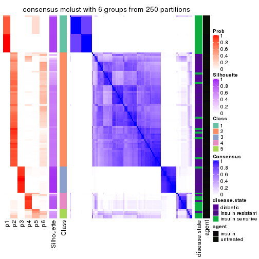
Heatmaps for the membership of samples in all partitions to see how consistent they are:
membership_heatmap(res, k = 2)
membership_heatmap(res, k = 3)
membership_heatmap(res, k = 4)
membership_heatmap(res, k = 5)
membership_heatmap(res, k = 6)

As soon as we have had the classes for columns, we can look for signatures which are significantly different between classes which can be candidate marks for certain classes. Following are the heatmaps for signatures.
Signature heatmaps where rows are scaled:
get_signatures(res, k = 2)
get_signatures(res, k = 3)
get_signatures(res, k = 4)
get_signatures(res, k = 5)
get_signatures(res, k = 6)
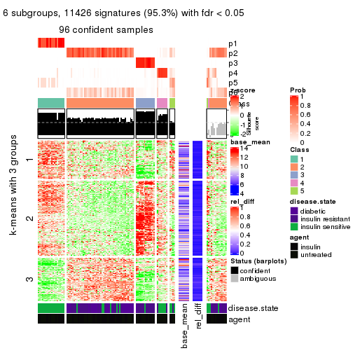
Signature heatmaps where rows are not scaled:
get_signatures(res, k = 2, scale_rows = FALSE)
get_signatures(res, k = 3, scale_rows = FALSE)
get_signatures(res, k = 4, scale_rows = FALSE)
get_signatures(res, k = 5, scale_rows = FALSE)
get_signatures(res, k = 6, scale_rows = FALSE)
Compare the overlap of signatures from different k:
compare_signatures(res)
get_signature() returns a data frame invisibly. TO get the list of signatures, the function
call should be assigned to a variable explicitly. In following code, if plot argument is set
to FALSE, no heatmap is plotted while only the differential analysis is performed.
# code only for demonstration
tb = get_signature(res, k = ..., plot = FALSE)
An example of the output of tb is:
#> which_row fdr mean_1 mean_2 scaled_mean_1 scaled_mean_2 km
#> 1 38 0.042760348 8.373488 9.131774 -0.5533452 0.5164555 1
#> 2 40 0.018707592 7.106213 8.469186 -0.6173731 0.5762149 1
#> 3 55 0.019134737 10.221463 11.207825 -0.6159697 0.5749050 1
#> 4 59 0.006059896 5.921854 7.869574 -0.6899429 0.6439467 1
#> 5 60 0.018055526 8.928898 10.211722 -0.6204761 0.5791110 1
#> 6 98 0.009384629 15.714769 14.887706 0.6635654 -0.6193277 2
...
The columns in tb are:
which_row: row indices corresponding to the input matrix.fdr: FDR for the differential test. mean_x: The mean value in group x.scaled_mean_x: The mean value in group x after rows are scaled.km: Row groups if k-means clustering is applied to rows.UMAP plot which shows how samples are separated.
dimension_reduction(res, k = 2, method = "UMAP")
dimension_reduction(res, k = 3, method = "UMAP")
dimension_reduction(res, k = 4, method = "UMAP")
dimension_reduction(res, k = 5, method = "UMAP")
dimension_reduction(res, k = 6, method = "UMAP")
Following heatmap shows how subgroups are split when increasing k:
collect_classes(res)
Test correlation between subgroups and known annotations. If the known annotation is numeric, one-way ANOVA test is applied, and if the known annotation is discrete, chi-squared contingency table test is applied.
test_to_known_factors(res)
#> n disease.state(p) agent(p) k
#> SD:mclust 102 3.34e-08 0.9200 2
#> SD:mclust 106 1.78e-12 0.4646 3
#> SD:mclust 102 1.03e-14 0.0887 4
#> SD:mclust 106 7.74e-14 0.0634 5
#> SD:mclust 96 7.24e-13 0.0729 6
If matrix rows can be associated to genes, consider to use GO_Enrichment(res,
...) to perform function enrichment for the signature genes.
The object with results only for a single top-value method and a single partition method can be extracted as:
res = res_list["SD", "NMF"]
# you can also extract it by
# res = res_list["SD:NMF"]
A summary of res and all the functions that can be applied to it:
res
#> A 'ConsensusPartition' object with k = 2, 3, 4, 5, 6.
#> On a matrix with 11994 rows and 110 columns.
#> Top rows (1000, 2000, 3000, 4000, 5000) are extracted by 'SD' method.
#> Subgroups are detected by 'NMF' method.
#> Performed in total 1250 partitions by row resampling.
#> Best k for subgroups seems to be 3.
#>
#> Following methods can be applied to this 'ConsensusPartition' object:
#> [1] "cola_report" "collect_classes" "collect_plots"
#> [4] "collect_stats" "colnames" "compare_signatures"
#> [7] "consensus_heatmap" "dimension_reduction" "functional_enrichment"
#> [10] "get_anno_col" "get_anno" "get_classes"
#> [13] "get_consensus" "get_matrix" "get_membership"
#> [16] "get_param" "get_signatures" "get_stats"
#> [19] "is_best_k" "is_stable_k" "membership_heatmap"
#> [22] "ncol" "nrow" "plot_ecdf"
#> [25] "rownames" "select_partition_number" "show"
#> [28] "suggest_best_k" "test_to_known_factors"
collect_plots() function collects all the plots made from res for all k (number of partitions)
into one single page to provide an easy and fast comparison between different k.
collect_plots(res)
The plots are:
k and the heatmap of
predicted classes for each k.k.k.k.All the plots in panels can be made by individual functions and they are plotted later in this section.
select_partition_number() produces several plots showing different
statistics for choosing “optimized” k. There are following statistics:
k;k, the area increased is defined as \(A_k - A_{k-1}\).The detailed explanations of these statistics can be found in the cola vignette.
Generally speaking, lower PAC score, higher mean silhouette score or higher
concordance corresponds to better partition. Rand index and Jaccard index
measure how similar the current partition is compared to partition with k-1.
If they are too similar, we won't accept k is better than k-1.
select_partition_number(res)
The numeric values for all these statistics can be obtained by get_stats().
get_stats(res)
#> k 1-PAC mean_silhouette concordance area_increased Rand Jaccard
#> 2 2 0.925 0.935 0.975 0.459 0.538 0.538
#> 3 3 1.000 0.942 0.980 0.135 0.938 0.884
#> 4 4 0.796 0.828 0.916 0.146 0.970 0.936
#> 5 5 0.716 0.840 0.882 0.132 0.893 0.765
#> 6 6 0.672 0.668 0.780 0.103 0.857 0.608
suggest_best_k() suggests the best \(k\) based on these statistics. The rules are as follows:
NA.suggest_best_k(res)
#> [1] 3
#> attr(,"optional")
#> [1] 2
There is also optional best \(k\) = 2 that is worth to check.
Following shows the table of the partitions (You need to click the show/hide
code output link to see it). The membership matrix (columns with name p*)
is inferred by
clue::cl_consensus()
function with the SE method. Basically the value in the membership matrix
represents the probability to belong to a certain group. The finall class
label for an item is determined with the group with highest probability it
belongs to.
In get_classes() function, the entropy is calculated from the membership
matrix and the silhouette score is calculated from the consensus matrix.
cbind(get_classes(res, k = 2), get_membership(res, k = 2))
#> class entropy silhouette p1 p2
#> GSM555237 1 0.0000 0.95838 1.000 0.000
#> GSM555239 1 0.0000 0.95838 1.000 0.000
#> GSM555241 1 0.0000 0.95838 1.000 0.000
#> GSM555243 1 0.0000 0.95838 1.000 0.000
#> GSM555245 1 0.0000 0.95838 1.000 0.000
#> GSM555247 1 0.0000 0.95838 1.000 0.000
#> GSM555249 1 0.0000 0.95838 1.000 0.000
#> GSM555251 1 0.0000 0.95838 1.000 0.000
#> GSM555253 1 0.0000 0.95838 1.000 0.000
#> GSM555255 1 0.0000 0.95838 1.000 0.000
#> GSM555257 1 0.7602 0.72351 0.780 0.220
#> GSM555259 1 0.7219 0.75233 0.800 0.200
#> GSM555261 2 0.9732 0.28198 0.404 0.596
#> GSM555263 2 0.0000 0.98116 0.000 1.000
#> GSM555265 1 0.9710 0.35888 0.600 0.400
#> GSM555267 2 0.6801 0.76333 0.180 0.820
#> GSM555269 1 0.7219 0.75233 0.800 0.200
#> GSM555271 1 0.0000 0.95838 1.000 0.000
#> GSM555273 2 0.0000 0.98116 0.000 1.000
#> GSM555275 2 0.0000 0.98116 0.000 1.000
#> GSM555238 1 0.0000 0.95838 1.000 0.000
#> GSM555240 1 0.0672 0.95285 0.992 0.008
#> GSM555242 1 0.0000 0.95838 1.000 0.000
#> GSM555244 1 0.0000 0.95838 1.000 0.000
#> GSM555246 1 0.0000 0.95838 1.000 0.000
#> GSM555248 1 0.0000 0.95838 1.000 0.000
#> GSM555250 1 0.0000 0.95838 1.000 0.000
#> GSM555252 1 0.0000 0.95838 1.000 0.000
#> GSM555254 1 0.0000 0.95838 1.000 0.000
#> GSM555256 1 0.0000 0.95838 1.000 0.000
#> GSM555258 2 0.0000 0.98116 0.000 1.000
#> GSM555260 2 0.0000 0.98116 0.000 1.000
#> GSM555262 2 0.0000 0.98116 0.000 1.000
#> GSM555264 1 0.9933 0.20386 0.548 0.452
#> GSM555266 2 0.0000 0.98116 0.000 1.000
#> GSM555268 2 0.0000 0.98116 0.000 1.000
#> GSM555270 2 0.0000 0.98116 0.000 1.000
#> GSM555272 2 0.0000 0.98116 0.000 1.000
#> GSM555274 2 0.0000 0.98116 0.000 1.000
#> GSM555276 2 0.0000 0.98116 0.000 1.000
#> GSM555277 2 0.0000 0.98116 0.000 1.000
#> GSM555279 2 0.0000 0.98116 0.000 1.000
#> GSM555281 2 0.0000 0.98116 0.000 1.000
#> GSM555283 2 0.0000 0.98116 0.000 1.000
#> GSM555285 2 0.0000 0.98116 0.000 1.000
#> GSM555287 2 0.9993 -0.00062 0.484 0.516
#> GSM555289 2 0.0000 0.98116 0.000 1.000
#> GSM555291 2 0.0000 0.98116 0.000 1.000
#> GSM555293 2 0.0000 0.98116 0.000 1.000
#> GSM555295 2 0.0000 0.98116 0.000 1.000
#> GSM555297 2 0.6531 0.78105 0.168 0.832
#> GSM555299 1 0.0000 0.95838 1.000 0.000
#> GSM555301 1 0.1414 0.94377 0.980 0.020
#> GSM555303 1 0.0000 0.95838 1.000 0.000
#> GSM555305 1 0.0000 0.95838 1.000 0.000
#> GSM555307 2 0.0000 0.98116 0.000 1.000
#> GSM555309 1 0.0000 0.95838 1.000 0.000
#> GSM555311 2 0.0000 0.98116 0.000 1.000
#> GSM555313 2 0.0000 0.98116 0.000 1.000
#> GSM555315 2 0.0000 0.98116 0.000 1.000
#> GSM555278 2 0.0000 0.98116 0.000 1.000
#> GSM555280 2 0.0000 0.98116 0.000 1.000
#> GSM555282 2 0.0000 0.98116 0.000 1.000
#> GSM555284 2 0.0000 0.98116 0.000 1.000
#> GSM555286 2 0.0000 0.98116 0.000 1.000
#> GSM555288 2 0.0000 0.98116 0.000 1.000
#> GSM555290 2 0.0000 0.98116 0.000 1.000
#> GSM555292 2 0.0000 0.98116 0.000 1.000
#> GSM555294 2 0.0000 0.98116 0.000 1.000
#> GSM555296 2 0.0000 0.98116 0.000 1.000
#> GSM555298 1 0.1414 0.94377 0.980 0.020
#> GSM555300 1 0.0000 0.95838 1.000 0.000
#> GSM555302 1 0.0000 0.95838 1.000 0.000
#> GSM555304 1 0.0000 0.95838 1.000 0.000
#> GSM555306 1 0.0000 0.95838 1.000 0.000
#> GSM555308 1 0.0000 0.95838 1.000 0.000
#> GSM555310 1 0.0000 0.95838 1.000 0.000
#> GSM555312 2 0.0000 0.98116 0.000 1.000
#> GSM555314 2 0.0000 0.98116 0.000 1.000
#> GSM555316 2 0.0000 0.98116 0.000 1.000
#> GSM555317 2 0.0000 0.98116 0.000 1.000
#> GSM555319 2 0.0000 0.98116 0.000 1.000
#> GSM555321 2 0.0000 0.98116 0.000 1.000
#> GSM555323 2 0.0000 0.98116 0.000 1.000
#> GSM555325 2 0.0000 0.98116 0.000 1.000
#> GSM555327 2 0.0000 0.98116 0.000 1.000
#> GSM555329 2 0.0000 0.98116 0.000 1.000
#> GSM555331 2 0.0000 0.98116 0.000 1.000
#> GSM555333 2 0.0000 0.98116 0.000 1.000
#> GSM555335 2 0.0000 0.98116 0.000 1.000
#> GSM555337 2 0.0000 0.98116 0.000 1.000
#> GSM555339 2 0.0000 0.98116 0.000 1.000
#> GSM555341 2 0.0000 0.98116 0.000 1.000
#> GSM555343 2 0.0000 0.98116 0.000 1.000
#> GSM555345 2 0.0000 0.98116 0.000 1.000
#> GSM555318 2 0.0000 0.98116 0.000 1.000
#> GSM555320 2 0.0000 0.98116 0.000 1.000
#> GSM555322 2 0.0000 0.98116 0.000 1.000
#> GSM555324 1 0.0000 0.95838 1.000 0.000
#> GSM555326 2 0.0000 0.98116 0.000 1.000
#> GSM555328 2 0.0000 0.98116 0.000 1.000
#> GSM555330 2 0.0000 0.98116 0.000 1.000
#> GSM555332 2 0.0000 0.98116 0.000 1.000
#> GSM555334 2 0.0000 0.98116 0.000 1.000
#> GSM555336 2 0.0000 0.98116 0.000 1.000
#> GSM555338 2 0.0000 0.98116 0.000 1.000
#> GSM555340 2 0.0000 0.98116 0.000 1.000
#> GSM555342 2 0.0000 0.98116 0.000 1.000
#> GSM555344 2 0.0000 0.98116 0.000 1.000
#> GSM555346 2 0.0000 0.98116 0.000 1.000
cbind(get_classes(res, k = 3), get_membership(res, k = 3))
#> class entropy silhouette p1 p2 p3
#> GSM555237 1 0.0000 0.939 1.000 0.000 0.000
#> GSM555239 1 0.0237 0.936 0.996 0.000 0.004
#> GSM555241 1 0.0237 0.936 0.996 0.000 0.004
#> GSM555243 1 0.0000 0.939 1.000 0.000 0.000
#> GSM555245 1 0.0000 0.939 1.000 0.000 0.000
#> GSM555247 1 0.0237 0.936 0.996 0.000 0.004
#> GSM555249 1 0.0000 0.939 1.000 0.000 0.000
#> GSM555251 1 0.0000 0.939 1.000 0.000 0.000
#> GSM555253 1 0.0424 0.933 0.992 0.000 0.008
#> GSM555255 1 0.0000 0.939 1.000 0.000 0.000
#> GSM555257 1 0.7129 0.348 0.580 0.392 0.028
#> GSM555259 3 0.0000 0.956 0.000 0.000 1.000
#> GSM555261 2 0.1031 0.964 0.000 0.976 0.024
#> GSM555263 2 0.0000 0.987 0.000 1.000 0.000
#> GSM555265 3 0.6267 0.137 0.000 0.452 0.548
#> GSM555267 2 0.4002 0.805 0.000 0.840 0.160
#> GSM555269 3 0.0237 0.950 0.000 0.004 0.996
#> GSM555271 3 0.0000 0.956 0.000 0.000 1.000
#> GSM555273 2 0.0000 0.987 0.000 1.000 0.000
#> GSM555275 2 0.0000 0.987 0.000 1.000 0.000
#> GSM555238 1 0.0000 0.939 1.000 0.000 0.000
#> GSM555240 1 0.0000 0.939 1.000 0.000 0.000
#> GSM555242 1 0.0000 0.939 1.000 0.000 0.000
#> GSM555244 1 0.0000 0.939 1.000 0.000 0.000
#> GSM555246 1 0.0000 0.939 1.000 0.000 0.000
#> GSM555248 1 0.0000 0.939 1.000 0.000 0.000
#> GSM555250 1 0.0000 0.939 1.000 0.000 0.000
#> GSM555252 1 0.0000 0.939 1.000 0.000 0.000
#> GSM555254 1 0.0000 0.939 1.000 0.000 0.000
#> GSM555256 1 0.0000 0.939 1.000 0.000 0.000
#> GSM555258 2 0.2878 0.886 0.096 0.904 0.000
#> GSM555260 2 0.0000 0.987 0.000 1.000 0.000
#> GSM555262 2 0.0000 0.987 0.000 1.000 0.000
#> GSM555264 1 0.6140 0.333 0.596 0.404 0.000
#> GSM555266 2 0.0000 0.987 0.000 1.000 0.000
#> GSM555268 2 0.0000 0.987 0.000 1.000 0.000
#> GSM555270 2 0.0000 0.987 0.000 1.000 0.000
#> GSM555272 2 0.0592 0.976 0.012 0.988 0.000
#> GSM555274 2 0.0000 0.987 0.000 1.000 0.000
#> GSM555276 2 0.0000 0.987 0.000 1.000 0.000
#> GSM555277 2 0.0000 0.987 0.000 1.000 0.000
#> GSM555279 2 0.0000 0.987 0.000 1.000 0.000
#> GSM555281 2 0.0000 0.987 0.000 1.000 0.000
#> GSM555283 2 0.0000 0.987 0.000 1.000 0.000
#> GSM555285 2 0.0000 0.987 0.000 1.000 0.000
#> GSM555287 2 0.6225 0.225 0.000 0.568 0.432
#> GSM555289 2 0.0000 0.987 0.000 1.000 0.000
#> GSM555291 2 0.0000 0.987 0.000 1.000 0.000
#> GSM555293 2 0.0000 0.987 0.000 1.000 0.000
#> GSM555295 2 0.0000 0.987 0.000 1.000 0.000
#> GSM555297 2 0.4121 0.794 0.000 0.832 0.168
#> GSM555299 3 0.0000 0.956 0.000 0.000 1.000
#> GSM555301 3 0.0000 0.956 0.000 0.000 1.000
#> GSM555303 3 0.0000 0.956 0.000 0.000 1.000
#> GSM555305 3 0.0000 0.956 0.000 0.000 1.000
#> GSM555307 2 0.0000 0.987 0.000 1.000 0.000
#> GSM555309 3 0.0000 0.956 0.000 0.000 1.000
#> GSM555311 2 0.0000 0.987 0.000 1.000 0.000
#> GSM555313 2 0.0000 0.987 0.000 1.000 0.000
#> GSM555315 2 0.0000 0.987 0.000 1.000 0.000
#> GSM555278 2 0.0000 0.987 0.000 1.000 0.000
#> GSM555280 2 0.0000 0.987 0.000 1.000 0.000
#> GSM555282 2 0.0000 0.987 0.000 1.000 0.000
#> GSM555284 2 0.0000 0.987 0.000 1.000 0.000
#> GSM555286 2 0.0000 0.987 0.000 1.000 0.000
#> GSM555288 2 0.0000 0.987 0.000 1.000 0.000
#> GSM555290 2 0.0000 0.987 0.000 1.000 0.000
#> GSM555292 2 0.0000 0.987 0.000 1.000 0.000
#> GSM555294 2 0.0000 0.987 0.000 1.000 0.000
#> GSM555296 2 0.0000 0.987 0.000 1.000 0.000
#> GSM555298 3 0.0000 0.956 0.000 0.000 1.000
#> GSM555300 3 0.0000 0.956 0.000 0.000 1.000
#> GSM555302 3 0.0000 0.956 0.000 0.000 1.000
#> GSM555304 3 0.0000 0.956 0.000 0.000 1.000
#> GSM555306 3 0.0000 0.956 0.000 0.000 1.000
#> GSM555308 3 0.0000 0.956 0.000 0.000 1.000
#> GSM555310 3 0.0000 0.956 0.000 0.000 1.000
#> GSM555312 2 0.0000 0.987 0.000 1.000 0.000
#> GSM555314 2 0.0000 0.987 0.000 1.000 0.000
#> GSM555316 2 0.0000 0.987 0.000 1.000 0.000
#> GSM555317 2 0.0000 0.987 0.000 1.000 0.000
#> GSM555319 2 0.0000 0.987 0.000 1.000 0.000
#> GSM555321 2 0.0000 0.987 0.000 1.000 0.000
#> GSM555323 2 0.0000 0.987 0.000 1.000 0.000
#> GSM555325 2 0.0000 0.987 0.000 1.000 0.000
#> GSM555327 2 0.0000 0.987 0.000 1.000 0.000
#> GSM555329 2 0.0000 0.987 0.000 1.000 0.000
#> GSM555331 2 0.0000 0.987 0.000 1.000 0.000
#> GSM555333 2 0.0000 0.987 0.000 1.000 0.000
#> GSM555335 2 0.0000 0.987 0.000 1.000 0.000
#> GSM555337 2 0.0000 0.987 0.000 1.000 0.000
#> GSM555339 2 0.0000 0.987 0.000 1.000 0.000
#> GSM555341 2 0.0000 0.987 0.000 1.000 0.000
#> GSM555343 2 0.0000 0.987 0.000 1.000 0.000
#> GSM555345 2 0.0000 0.987 0.000 1.000 0.000
#> GSM555318 2 0.0000 0.987 0.000 1.000 0.000
#> GSM555320 2 0.0000 0.987 0.000 1.000 0.000
#> GSM555322 2 0.0000 0.987 0.000 1.000 0.000
#> GSM555324 3 0.0000 0.956 0.000 0.000 1.000
#> GSM555326 2 0.0000 0.987 0.000 1.000 0.000
#> GSM555328 2 0.0000 0.987 0.000 1.000 0.000
#> GSM555330 2 0.0000 0.987 0.000 1.000 0.000
#> GSM555332 2 0.0000 0.987 0.000 1.000 0.000
#> GSM555334 2 0.0000 0.987 0.000 1.000 0.000
#> GSM555336 2 0.0000 0.987 0.000 1.000 0.000
#> GSM555338 2 0.0000 0.987 0.000 1.000 0.000
#> GSM555340 2 0.0000 0.987 0.000 1.000 0.000
#> GSM555342 2 0.0000 0.987 0.000 1.000 0.000
#> GSM555344 2 0.0000 0.987 0.000 1.000 0.000
#> GSM555346 2 0.0000 0.987 0.000 1.000 0.000
cbind(get_classes(res, k = 4), get_membership(res, k = 4))
#> class entropy silhouette p1 p2 p3 p4
#> GSM555237 1 0.0188 0.9905 0.996 0.000 0.000 0.004
#> GSM555239 1 0.0469 0.9861 0.988 0.000 0.000 0.012
#> GSM555241 1 0.0188 0.9905 0.996 0.000 0.000 0.004
#> GSM555243 1 0.0000 0.9911 1.000 0.000 0.000 0.000
#> GSM555245 1 0.0188 0.9900 0.996 0.000 0.000 0.004
#> GSM555247 1 0.0817 0.9779 0.976 0.000 0.000 0.024
#> GSM555249 1 0.0188 0.9900 0.996 0.000 0.000 0.004
#> GSM555251 1 0.0000 0.9911 1.000 0.000 0.000 0.000
#> GSM555253 1 0.0000 0.9911 1.000 0.000 0.000 0.000
#> GSM555255 1 0.1022 0.9715 0.968 0.000 0.000 0.032
#> GSM555257 4 0.7403 0.3788 0.348 0.128 0.012 0.512
#> GSM555259 3 0.2868 0.8468 0.000 0.000 0.864 0.136
#> GSM555261 2 0.5393 0.4835 0.000 0.688 0.044 0.268
#> GSM555263 2 0.3688 0.6978 0.000 0.792 0.000 0.208
#> GSM555265 3 0.7091 0.1612 0.000 0.248 0.564 0.188
#> GSM555267 2 0.5434 0.5850 0.000 0.740 0.128 0.132
#> GSM555269 3 0.0592 0.9452 0.000 0.000 0.984 0.016
#> GSM555271 3 0.0000 0.9577 0.000 0.000 1.000 0.000
#> GSM555273 4 0.4991 0.5777 0.004 0.388 0.000 0.608
#> GSM555275 2 0.1118 0.8741 0.000 0.964 0.000 0.036
#> GSM555238 1 0.0000 0.9911 1.000 0.000 0.000 0.000
#> GSM555240 1 0.1474 0.9467 0.948 0.000 0.000 0.052
#> GSM555242 1 0.0188 0.9905 0.996 0.000 0.000 0.004
#> GSM555244 1 0.0188 0.9905 0.996 0.000 0.000 0.004
#> GSM555246 1 0.0188 0.9900 0.996 0.000 0.000 0.004
#> GSM555248 1 0.0000 0.9911 1.000 0.000 0.000 0.000
#> GSM555250 1 0.0188 0.9905 0.996 0.000 0.000 0.004
#> GSM555252 1 0.0592 0.9836 0.984 0.000 0.000 0.016
#> GSM555254 1 0.0000 0.9911 1.000 0.000 0.000 0.000
#> GSM555256 1 0.0188 0.9905 0.996 0.000 0.000 0.004
#> GSM555258 2 0.6876 -0.1528 0.116 0.532 0.000 0.352
#> GSM555260 2 0.3444 0.7489 0.000 0.816 0.000 0.184
#> GSM555262 2 0.1118 0.8784 0.000 0.964 0.000 0.036
#> GSM555264 4 0.6123 0.5919 0.192 0.132 0.000 0.676
#> GSM555266 2 0.2281 0.8472 0.000 0.904 0.000 0.096
#> GSM555268 2 0.1637 0.8684 0.000 0.940 0.000 0.060
#> GSM555270 2 0.0592 0.8795 0.000 0.984 0.000 0.016
#> GSM555272 2 0.5882 0.1777 0.048 0.608 0.000 0.344
#> GSM555274 2 0.0921 0.8796 0.000 0.972 0.000 0.028
#> GSM555276 2 0.1474 0.8674 0.000 0.948 0.000 0.052
#> GSM555277 2 0.2469 0.8248 0.000 0.892 0.000 0.108
#> GSM555279 2 0.1867 0.8587 0.000 0.928 0.000 0.072
#> GSM555281 2 0.1211 0.8726 0.000 0.960 0.000 0.040
#> GSM555283 2 0.1637 0.8736 0.000 0.940 0.000 0.060
#> GSM555285 4 0.5666 0.6539 0.036 0.348 0.000 0.616
#> GSM555287 2 0.7803 -0.2840 0.000 0.404 0.340 0.256
#> GSM555289 2 0.2281 0.8369 0.000 0.904 0.000 0.096
#> GSM555291 2 0.1118 0.8817 0.000 0.964 0.000 0.036
#> GSM555293 2 0.1637 0.8718 0.000 0.940 0.000 0.060
#> GSM555295 2 0.1211 0.8737 0.000 0.960 0.000 0.040
#> GSM555297 2 0.6280 0.2225 0.000 0.612 0.304 0.084
#> GSM555299 3 0.0000 0.9577 0.000 0.000 1.000 0.000
#> GSM555301 3 0.0000 0.9577 0.000 0.000 1.000 0.000
#> GSM555303 3 0.0000 0.9577 0.000 0.000 1.000 0.000
#> GSM555305 3 0.0000 0.9577 0.000 0.000 1.000 0.000
#> GSM555307 2 0.1211 0.8774 0.000 0.960 0.000 0.040
#> GSM555309 3 0.0000 0.9577 0.000 0.000 1.000 0.000
#> GSM555311 2 0.1940 0.8554 0.000 0.924 0.000 0.076
#> GSM555313 2 0.0592 0.8806 0.000 0.984 0.000 0.016
#> GSM555315 2 0.1940 0.8559 0.000 0.924 0.000 0.076
#> GSM555278 2 0.1557 0.8676 0.000 0.944 0.000 0.056
#> GSM555280 2 0.0921 0.8803 0.000 0.972 0.000 0.028
#> GSM555282 2 0.1940 0.8562 0.000 0.924 0.000 0.076
#> GSM555284 2 0.2216 0.8467 0.000 0.908 0.000 0.092
#> GSM555286 2 0.0469 0.8798 0.000 0.988 0.000 0.012
#> GSM555288 2 0.2281 0.8470 0.000 0.904 0.000 0.096
#> GSM555290 2 0.1302 0.8709 0.000 0.956 0.000 0.044
#> GSM555292 2 0.0817 0.8796 0.000 0.976 0.000 0.024
#> GSM555294 2 0.2530 0.8271 0.000 0.888 0.000 0.112
#> GSM555296 2 0.0336 0.8802 0.000 0.992 0.000 0.008
#> GSM555298 3 0.0000 0.9577 0.000 0.000 1.000 0.000
#> GSM555300 3 0.0000 0.9577 0.000 0.000 1.000 0.000
#> GSM555302 3 0.0000 0.9577 0.000 0.000 1.000 0.000
#> GSM555304 3 0.0000 0.9577 0.000 0.000 1.000 0.000
#> GSM555306 3 0.0000 0.9577 0.000 0.000 1.000 0.000
#> GSM555308 3 0.0000 0.9577 0.000 0.000 1.000 0.000
#> GSM555310 3 0.0000 0.9577 0.000 0.000 1.000 0.000
#> GSM555312 2 0.0921 0.8772 0.000 0.972 0.000 0.028
#> GSM555314 2 0.1118 0.8747 0.000 0.964 0.000 0.036
#> GSM555316 2 0.0707 0.8784 0.000 0.980 0.000 0.020
#> GSM555317 2 0.2011 0.8484 0.000 0.920 0.000 0.080
#> GSM555319 2 0.1389 0.8754 0.000 0.952 0.000 0.048
#> GSM555321 2 0.1118 0.8802 0.000 0.964 0.000 0.036
#> GSM555323 2 0.0817 0.8801 0.000 0.976 0.000 0.024
#> GSM555325 2 0.4624 0.3521 0.000 0.660 0.000 0.340
#> GSM555327 2 0.2216 0.8380 0.000 0.908 0.000 0.092
#> GSM555329 2 0.1302 0.8766 0.000 0.956 0.000 0.044
#> GSM555331 2 0.0817 0.8798 0.000 0.976 0.000 0.024
#> GSM555333 2 0.0592 0.8794 0.000 0.984 0.000 0.016
#> GSM555335 2 0.0707 0.8786 0.000 0.980 0.000 0.020
#> GSM555337 2 0.0921 0.8798 0.000 0.972 0.000 0.028
#> GSM555339 2 0.0817 0.8798 0.000 0.976 0.000 0.024
#> GSM555341 2 0.1022 0.8776 0.000 0.968 0.000 0.032
#> GSM555343 2 0.1389 0.8762 0.000 0.952 0.000 0.048
#> GSM555345 2 0.2868 0.8002 0.000 0.864 0.000 0.136
#> GSM555318 2 0.2647 0.8133 0.000 0.880 0.000 0.120
#> GSM555320 2 0.3444 0.7269 0.000 0.816 0.000 0.184
#> GSM555322 2 0.1716 0.8591 0.000 0.936 0.000 0.064
#> GSM555324 3 0.0000 0.9577 0.000 0.000 1.000 0.000
#> GSM555326 2 0.0592 0.8795 0.000 0.984 0.000 0.016
#> GSM555328 2 0.1118 0.8738 0.000 0.964 0.000 0.036
#> GSM555330 2 0.0707 0.8809 0.000 0.980 0.000 0.020
#> GSM555332 2 0.1118 0.8738 0.000 0.964 0.000 0.036
#> GSM555334 2 0.2081 0.8518 0.000 0.916 0.000 0.084
#> GSM555336 2 0.2011 0.8555 0.000 0.920 0.000 0.080
#> GSM555338 2 0.1637 0.8624 0.000 0.940 0.000 0.060
#> GSM555340 2 0.1022 0.8801 0.000 0.968 0.000 0.032
#> GSM555342 2 0.1557 0.8669 0.000 0.944 0.000 0.056
#> GSM555344 2 0.1302 0.8728 0.000 0.956 0.000 0.044
#> GSM555346 2 0.4925 -0.0101 0.000 0.572 0.000 0.428
cbind(get_classes(res, k = 5), get_membership(res, k = 5))
#> class entropy silhouette p1 p2 p3 p4 p5
#> GSM555237 1 0.0290 0.988 0.992 0.000 0.000 0.000 0.008
#> GSM555239 1 0.0000 0.992 1.000 0.000 0.000 0.000 0.000
#> GSM555241 1 0.0000 0.992 1.000 0.000 0.000 0.000 0.000
#> GSM555243 1 0.0000 0.992 1.000 0.000 0.000 0.000 0.000
#> GSM555245 1 0.0000 0.992 1.000 0.000 0.000 0.000 0.000
#> GSM555247 1 0.0000 0.992 1.000 0.000 0.000 0.000 0.000
#> GSM555249 1 0.0000 0.992 1.000 0.000 0.000 0.000 0.000
#> GSM555251 1 0.0000 0.992 1.000 0.000 0.000 0.000 0.000
#> GSM555253 1 0.0000 0.992 1.000 0.000 0.000 0.000 0.000
#> GSM555255 1 0.0000 0.992 1.000 0.000 0.000 0.000 0.000
#> GSM555257 4 0.3577 0.649 0.004 0.084 0.000 0.836 0.076
#> GSM555259 4 0.3650 0.583 0.000 0.028 0.148 0.816 0.008
#> GSM555261 4 0.2574 0.686 0.000 0.112 0.000 0.876 0.012
#> GSM555263 4 0.3035 0.679 0.000 0.112 0.000 0.856 0.032
#> GSM555265 4 0.4022 0.677 0.000 0.128 0.016 0.808 0.048
#> GSM555267 4 0.4549 0.603 0.000 0.188 0.016 0.752 0.044
#> GSM555269 4 0.4372 0.538 0.000 0.040 0.200 0.752 0.008
#> GSM555271 3 0.0703 0.925 0.000 0.000 0.976 0.024 0.000
#> GSM555273 5 0.4994 0.923 0.000 0.112 0.000 0.184 0.704
#> GSM555275 2 0.1943 0.867 0.000 0.924 0.000 0.056 0.020
#> GSM555238 1 0.0000 0.992 1.000 0.000 0.000 0.000 0.000
#> GSM555240 1 0.1560 0.949 0.948 0.004 0.000 0.028 0.020
#> GSM555242 1 0.0000 0.992 1.000 0.000 0.000 0.000 0.000
#> GSM555244 1 0.0290 0.988 0.992 0.000 0.000 0.000 0.008
#> GSM555246 1 0.0000 0.992 1.000 0.000 0.000 0.000 0.000
#> GSM555248 1 0.0000 0.992 1.000 0.000 0.000 0.000 0.000
#> GSM555250 1 0.0290 0.988 0.992 0.000 0.000 0.000 0.008
#> GSM555252 1 0.2067 0.923 0.924 0.004 0.000 0.044 0.028
#> GSM555254 1 0.0000 0.992 1.000 0.000 0.000 0.000 0.000
#> GSM555256 1 0.0000 0.992 1.000 0.000 0.000 0.000 0.000
#> GSM555258 4 0.3918 0.587 0.000 0.096 0.000 0.804 0.100
#> GSM555260 4 0.3569 0.606 0.000 0.104 0.000 0.828 0.068
#> GSM555262 2 0.3437 0.828 0.000 0.832 0.000 0.120 0.048
#> GSM555264 5 0.4820 0.888 0.000 0.068 0.000 0.236 0.696
#> GSM555266 2 0.3281 0.847 0.000 0.848 0.000 0.092 0.060
#> GSM555268 2 0.3146 0.847 0.000 0.856 0.000 0.092 0.052
#> GSM555270 2 0.2278 0.869 0.000 0.908 0.000 0.060 0.032
#> GSM555272 4 0.3649 0.649 0.000 0.088 0.000 0.824 0.088
#> GSM555274 2 0.2293 0.865 0.000 0.900 0.000 0.084 0.016
#> GSM555276 2 0.2592 0.863 0.000 0.892 0.000 0.052 0.056
#> GSM555277 2 0.2798 0.849 0.000 0.852 0.000 0.008 0.140
#> GSM555279 2 0.2616 0.856 0.000 0.888 0.000 0.076 0.036
#> GSM555281 2 0.1965 0.868 0.000 0.924 0.000 0.052 0.024
#> GSM555283 4 0.4874 0.361 0.000 0.328 0.000 0.632 0.040
#> GSM555285 5 0.4901 0.933 0.000 0.104 0.000 0.184 0.712
#> GSM555287 3 0.6275 0.123 0.000 0.300 0.520 0.000 0.180
#> GSM555289 2 0.2488 0.857 0.000 0.872 0.000 0.004 0.124
#> GSM555291 2 0.3098 0.810 0.000 0.836 0.000 0.148 0.016
#> GSM555293 2 0.2172 0.862 0.000 0.908 0.000 0.076 0.016
#> GSM555295 2 0.2293 0.858 0.000 0.900 0.000 0.084 0.016
#> GSM555297 2 0.7035 -0.113 0.000 0.440 0.396 0.104 0.060
#> GSM555299 3 0.0000 0.949 0.000 0.000 1.000 0.000 0.000
#> GSM555301 3 0.0290 0.942 0.000 0.000 0.992 0.008 0.000
#> GSM555303 3 0.0000 0.949 0.000 0.000 1.000 0.000 0.000
#> GSM555305 3 0.0000 0.949 0.000 0.000 1.000 0.000 0.000
#> GSM555307 2 0.1943 0.869 0.000 0.924 0.000 0.056 0.020
#> GSM555309 3 0.0000 0.949 0.000 0.000 1.000 0.000 0.000
#> GSM555311 2 0.2351 0.857 0.000 0.896 0.000 0.088 0.016
#> GSM555313 2 0.2905 0.845 0.000 0.868 0.000 0.096 0.036
#> GSM555315 2 0.2482 0.856 0.000 0.892 0.000 0.084 0.024
#> GSM555278 2 0.2983 0.855 0.000 0.868 0.000 0.076 0.056
#> GSM555280 2 0.2735 0.851 0.000 0.880 0.000 0.084 0.036
#> GSM555282 2 0.4025 0.796 0.000 0.792 0.000 0.132 0.076
#> GSM555284 2 0.4155 0.783 0.000 0.780 0.000 0.144 0.076
#> GSM555286 2 0.2504 0.860 0.000 0.896 0.000 0.064 0.040
#> GSM555288 4 0.3649 0.567 0.000 0.152 0.000 0.808 0.040
#> GSM555290 2 0.2597 0.866 0.000 0.884 0.000 0.024 0.092
#> GSM555292 2 0.3165 0.837 0.000 0.848 0.000 0.116 0.036
#> GSM555294 2 0.2974 0.849 0.000 0.868 0.000 0.080 0.052
#> GSM555296 2 0.1907 0.875 0.000 0.928 0.000 0.044 0.028
#> GSM555298 3 0.0000 0.949 0.000 0.000 1.000 0.000 0.000
#> GSM555300 3 0.0000 0.949 0.000 0.000 1.000 0.000 0.000
#> GSM555302 3 0.0000 0.949 0.000 0.000 1.000 0.000 0.000
#> GSM555304 3 0.0000 0.949 0.000 0.000 1.000 0.000 0.000
#> GSM555306 3 0.0000 0.949 0.000 0.000 1.000 0.000 0.000
#> GSM555308 3 0.0000 0.949 0.000 0.000 1.000 0.000 0.000
#> GSM555310 3 0.0000 0.949 0.000 0.000 1.000 0.000 0.000
#> GSM555312 2 0.2438 0.866 0.000 0.900 0.000 0.040 0.060
#> GSM555314 2 0.2130 0.863 0.000 0.908 0.000 0.080 0.012
#> GSM555316 2 0.2270 0.876 0.000 0.904 0.000 0.020 0.076
#> GSM555317 2 0.2338 0.861 0.000 0.884 0.000 0.004 0.112
#> GSM555319 2 0.2325 0.871 0.000 0.904 0.000 0.028 0.068
#> GSM555321 2 0.2236 0.866 0.000 0.908 0.000 0.068 0.024
#> GSM555323 2 0.1914 0.867 0.000 0.924 0.000 0.060 0.016
#> GSM555325 2 0.5282 0.497 0.000 0.644 0.000 0.088 0.268
#> GSM555327 2 0.2389 0.860 0.000 0.880 0.000 0.004 0.116
#> GSM555329 2 0.2036 0.872 0.000 0.920 0.000 0.024 0.056
#> GSM555331 2 0.1997 0.872 0.000 0.924 0.000 0.036 0.040
#> GSM555333 2 0.1942 0.866 0.000 0.920 0.000 0.068 0.012
#> GSM555335 2 0.2006 0.866 0.000 0.916 0.000 0.072 0.012
#> GSM555337 2 0.2036 0.873 0.000 0.920 0.000 0.024 0.056
#> GSM555339 2 0.2017 0.864 0.000 0.912 0.000 0.080 0.008
#> GSM555341 2 0.1845 0.870 0.000 0.928 0.000 0.056 0.016
#> GSM555343 2 0.2144 0.865 0.000 0.912 0.000 0.068 0.020
#> GSM555345 2 0.2561 0.864 0.000 0.884 0.000 0.020 0.096
#> GSM555318 2 0.2648 0.845 0.000 0.848 0.000 0.000 0.152
#> GSM555320 2 0.3702 0.833 0.000 0.820 0.000 0.084 0.096
#> GSM555322 2 0.2793 0.860 0.000 0.876 0.000 0.036 0.088
#> GSM555324 3 0.0000 0.949 0.000 0.000 1.000 0.000 0.000
#> GSM555326 2 0.2260 0.866 0.000 0.908 0.000 0.064 0.028
#> GSM555328 2 0.2304 0.866 0.000 0.908 0.000 0.048 0.044
#> GSM555330 2 0.2793 0.850 0.000 0.876 0.000 0.088 0.036
#> GSM555332 2 0.2770 0.856 0.000 0.880 0.000 0.076 0.044
#> GSM555334 2 0.2863 0.859 0.000 0.876 0.000 0.064 0.060
#> GSM555336 2 0.2520 0.872 0.000 0.896 0.000 0.056 0.048
#> GSM555338 2 0.2362 0.868 0.000 0.900 0.000 0.024 0.076
#> GSM555340 2 0.2144 0.865 0.000 0.912 0.000 0.068 0.020
#> GSM555342 2 0.2376 0.878 0.000 0.904 0.000 0.044 0.052
#> GSM555344 2 0.2074 0.868 0.000 0.896 0.000 0.000 0.104
#> GSM555346 2 0.5828 0.130 0.000 0.520 0.000 0.100 0.380
cbind(get_classes(res, k = 6), get_membership(res, k = 6))
#> class entropy silhouette p1 p2 p3 p4 p5 p6
#> GSM555237 1 0.0363 0.9844 0.988 0.000 0.000 0.000 0.012 0.000
#> GSM555239 1 0.0260 0.9872 0.992 0.000 0.000 0.000 0.000 0.008
#> GSM555241 1 0.0146 0.9889 0.996 0.000 0.000 0.000 0.000 0.004
#> GSM555243 1 0.0000 0.9896 1.000 0.000 0.000 0.000 0.000 0.000
#> GSM555245 1 0.0000 0.9896 1.000 0.000 0.000 0.000 0.000 0.000
#> GSM555247 1 0.0146 0.9889 0.996 0.000 0.000 0.000 0.000 0.004
#> GSM555249 1 0.0000 0.9896 1.000 0.000 0.000 0.000 0.000 0.000
#> GSM555251 1 0.0000 0.9896 1.000 0.000 0.000 0.000 0.000 0.000
#> GSM555253 1 0.0146 0.9889 0.996 0.000 0.000 0.000 0.000 0.004
#> GSM555255 1 0.0146 0.9889 0.996 0.000 0.000 0.000 0.004 0.000
#> GSM555257 4 0.3101 0.7950 0.000 0.024 0.000 0.852 0.092 0.032
#> GSM555259 4 0.1788 0.8209 0.000 0.040 0.004 0.928 0.000 0.028
#> GSM555261 4 0.2519 0.8276 0.000 0.044 0.000 0.892 0.016 0.048
#> GSM555263 4 0.2867 0.7982 0.000 0.040 0.000 0.872 0.064 0.024
#> GSM555265 4 0.2492 0.8216 0.000 0.048 0.000 0.892 0.012 0.048
#> GSM555267 4 0.4748 0.6715 0.000 0.152 0.012 0.740 0.036 0.060
#> GSM555269 4 0.3434 0.7014 0.000 0.008 0.112 0.832 0.028 0.020
#> GSM555271 3 0.2300 0.8268 0.000 0.000 0.856 0.144 0.000 0.000
#> GSM555273 5 0.3688 0.7611 0.000 0.196 0.000 0.028 0.768 0.008
#> GSM555275 2 0.3836 0.4924 0.000 0.724 0.000 0.012 0.012 0.252
#> GSM555238 1 0.0146 0.9888 0.996 0.000 0.000 0.000 0.000 0.004
#> GSM555240 1 0.1657 0.9430 0.936 0.000 0.000 0.012 0.012 0.040
#> GSM555242 1 0.0146 0.9887 0.996 0.000 0.000 0.000 0.004 0.000
#> GSM555244 1 0.0000 0.9896 1.000 0.000 0.000 0.000 0.000 0.000
#> GSM555246 1 0.0146 0.9888 0.996 0.000 0.000 0.000 0.000 0.004
#> GSM555248 1 0.0000 0.9896 1.000 0.000 0.000 0.000 0.000 0.000
#> GSM555250 1 0.0146 0.9887 0.996 0.000 0.000 0.000 0.004 0.000
#> GSM555252 1 0.2318 0.9130 0.904 0.000 0.000 0.020 0.028 0.048
#> GSM555254 1 0.0000 0.9896 1.000 0.000 0.000 0.000 0.000 0.000
#> GSM555256 1 0.0260 0.9867 0.992 0.000 0.000 0.000 0.000 0.008
#> GSM555258 4 0.3291 0.8210 0.000 0.036 0.000 0.848 0.056 0.060
#> GSM555260 4 0.3798 0.7701 0.000 0.040 0.000 0.800 0.032 0.128
#> GSM555262 6 0.3963 0.6773 0.000 0.208 0.000 0.028 0.016 0.748
#> GSM555264 5 0.3923 0.5385 0.004 0.032 0.000 0.148 0.788 0.028
#> GSM555266 6 0.4167 0.7056 0.000 0.368 0.000 0.000 0.020 0.612
#> GSM555268 6 0.3861 0.7388 0.000 0.316 0.000 0.004 0.008 0.672
#> GSM555270 2 0.4492 -0.4329 0.000 0.496 0.000 0.008 0.016 0.480
#> GSM555272 4 0.3407 0.8193 0.000 0.040 0.000 0.840 0.072 0.048
#> GSM555274 6 0.4984 0.6548 0.000 0.392 0.000 0.036 0.020 0.552
#> GSM555276 2 0.4157 0.4204 0.000 0.688 0.000 0.004 0.032 0.276
#> GSM555277 2 0.5241 0.0383 0.000 0.552 0.000 0.024 0.052 0.372
#> GSM555279 2 0.4764 0.3672 0.000 0.628 0.000 0.000 0.080 0.292
#> GSM555281 2 0.4238 -0.0284 0.000 0.580 0.000 0.008 0.008 0.404
#> GSM555283 4 0.6399 -0.0202 0.000 0.220 0.000 0.444 0.024 0.312
#> GSM555285 5 0.3386 0.7610 0.000 0.176 0.000 0.016 0.796 0.012
#> GSM555287 2 0.6993 0.0922 0.004 0.560 0.076 0.040 0.132 0.188
#> GSM555289 2 0.4701 0.0132 0.000 0.560 0.000 0.004 0.040 0.396
#> GSM555291 2 0.5748 0.0595 0.000 0.532 0.000 0.116 0.020 0.332
#> GSM555293 2 0.1934 0.6640 0.000 0.916 0.000 0.000 0.040 0.044
#> GSM555295 2 0.1787 0.6411 0.000 0.920 0.000 0.008 0.068 0.004
#> GSM555297 2 0.4497 0.4016 0.000 0.752 0.072 0.012 0.148 0.016
#> GSM555299 3 0.0000 0.9854 0.000 0.000 1.000 0.000 0.000 0.000
#> GSM555301 3 0.0551 0.9745 0.000 0.000 0.984 0.004 0.008 0.004
#> GSM555303 3 0.0000 0.9854 0.000 0.000 1.000 0.000 0.000 0.000
#> GSM555305 3 0.0000 0.9854 0.000 0.000 1.000 0.000 0.000 0.000
#> GSM555307 2 0.2627 0.6435 0.000 0.884 0.000 0.036 0.016 0.064
#> GSM555309 3 0.0146 0.9836 0.000 0.000 0.996 0.004 0.000 0.000
#> GSM555311 2 0.3424 0.6340 0.000 0.816 0.000 0.008 0.128 0.048
#> GSM555313 6 0.3927 0.7370 0.000 0.344 0.000 0.012 0.000 0.644
#> GSM555315 2 0.2100 0.6264 0.000 0.884 0.000 0.000 0.112 0.004
#> GSM555278 6 0.4106 0.7388 0.000 0.312 0.000 0.004 0.020 0.664
#> GSM555280 6 0.3499 0.7427 0.000 0.320 0.000 0.000 0.000 0.680
#> GSM555282 6 0.3433 0.5883 0.000 0.132 0.000 0.012 0.040 0.816
#> GSM555284 6 0.3652 0.5645 0.000 0.120 0.000 0.016 0.056 0.808
#> GSM555286 6 0.4109 0.6996 0.000 0.392 0.000 0.004 0.008 0.596
#> GSM555288 6 0.5162 0.1839 0.000 0.064 0.000 0.340 0.016 0.580
#> GSM555290 6 0.4595 0.7184 0.000 0.352 0.000 0.012 0.028 0.608
#> GSM555292 6 0.3979 0.7101 0.000 0.244 0.000 0.032 0.004 0.720
#> GSM555294 2 0.4455 0.5329 0.000 0.684 0.000 0.000 0.240 0.076
#> GSM555296 2 0.3874 0.4153 0.000 0.704 0.000 0.008 0.012 0.276
#> GSM555298 3 0.0000 0.9854 0.000 0.000 1.000 0.000 0.000 0.000
#> GSM555300 3 0.0000 0.9854 0.000 0.000 1.000 0.000 0.000 0.000
#> GSM555302 3 0.0146 0.9838 0.000 0.000 0.996 0.000 0.004 0.000
#> GSM555304 3 0.0000 0.9854 0.000 0.000 1.000 0.000 0.000 0.000
#> GSM555306 3 0.0000 0.9854 0.000 0.000 1.000 0.000 0.000 0.000
#> GSM555308 3 0.0000 0.9854 0.000 0.000 1.000 0.000 0.000 0.000
#> GSM555310 3 0.0146 0.9838 0.000 0.000 0.996 0.000 0.004 0.000
#> GSM555312 6 0.4921 0.6670 0.000 0.388 0.000 0.024 0.028 0.560
#> GSM555314 2 0.3449 0.5756 0.000 0.780 0.000 0.016 0.008 0.196
#> GSM555316 2 0.2776 0.6481 0.000 0.860 0.000 0.004 0.032 0.104
#> GSM555317 2 0.3364 0.5819 0.000 0.780 0.000 0.000 0.024 0.196
#> GSM555319 2 0.3104 0.5632 0.000 0.788 0.000 0.004 0.004 0.204
#> GSM555321 2 0.1313 0.6591 0.000 0.952 0.000 0.004 0.016 0.028
#> GSM555323 2 0.0520 0.6569 0.000 0.984 0.000 0.000 0.008 0.008
#> GSM555325 2 0.3804 0.3377 0.000 0.656 0.000 0.000 0.336 0.008
#> GSM555327 2 0.2971 0.6291 0.000 0.832 0.000 0.004 0.020 0.144
#> GSM555329 2 0.2994 0.5606 0.000 0.788 0.000 0.000 0.004 0.208
#> GSM555331 2 0.2196 0.6508 0.000 0.884 0.000 0.004 0.004 0.108
#> GSM555333 2 0.1434 0.6603 0.000 0.948 0.000 0.012 0.012 0.028
#> GSM555335 2 0.1672 0.6473 0.000 0.932 0.000 0.004 0.048 0.016
#> GSM555337 2 0.2149 0.6542 0.000 0.888 0.000 0.004 0.004 0.104
#> GSM555339 2 0.1503 0.6581 0.000 0.944 0.000 0.008 0.032 0.016
#> GSM555341 2 0.1889 0.6558 0.000 0.920 0.000 0.004 0.020 0.056
#> GSM555343 2 0.1624 0.6575 0.000 0.936 0.000 0.004 0.040 0.020
#> GSM555345 2 0.3169 0.5832 0.000 0.848 0.000 0.016 0.052 0.084
#> GSM555318 2 0.3758 0.5788 0.000 0.772 0.000 0.004 0.048 0.176
#> GSM555320 2 0.5426 -0.4640 0.000 0.456 0.000 0.012 0.080 0.452
#> GSM555322 2 0.4523 -0.3181 0.000 0.516 0.000 0.000 0.032 0.452
#> GSM555324 3 0.0146 0.9836 0.000 0.000 0.996 0.004 0.000 0.000
#> GSM555326 6 0.4322 0.5261 0.000 0.472 0.000 0.008 0.008 0.512
#> GSM555328 6 0.4412 0.6577 0.000 0.404 0.000 0.008 0.016 0.572
#> GSM555330 6 0.3833 0.5611 0.000 0.444 0.000 0.000 0.000 0.556
#> GSM555332 2 0.4564 -0.3655 0.000 0.500 0.000 0.008 0.020 0.472
#> GSM555334 6 0.5300 0.6726 0.000 0.360 0.000 0.036 0.044 0.560
#> GSM555336 2 0.4573 0.4995 0.000 0.676 0.000 0.000 0.088 0.236
#> GSM555338 2 0.1049 0.6596 0.000 0.960 0.000 0.000 0.008 0.032
#> GSM555340 2 0.1485 0.6619 0.000 0.944 0.000 0.004 0.024 0.028
#> GSM555342 2 0.4047 0.3831 0.000 0.676 0.000 0.000 0.028 0.296
#> GSM555344 2 0.3139 0.6298 0.000 0.836 0.000 0.008 0.036 0.120
#> GSM555346 5 0.4253 0.5388 0.000 0.372 0.000 0.008 0.608 0.012
Heatmaps for the consensus matrix. It visualizes the probability of two samples to be in a same group.
consensus_heatmap(res, k = 2)
consensus_heatmap(res, k = 3)
consensus_heatmap(res, k = 4)
consensus_heatmap(res, k = 5)
consensus_heatmap(res, k = 6)
Heatmaps for the membership of samples in all partitions to see how consistent they are:
membership_heatmap(res, k = 2)
membership_heatmap(res, k = 3)
membership_heatmap(res, k = 4)
membership_heatmap(res, k = 5)
membership_heatmap(res, k = 6)
As soon as we have had the classes for columns, we can look for signatures which are significantly different between classes which can be candidate marks for certain classes. Following are the heatmaps for signatures.
Signature heatmaps where rows are scaled:
get_signatures(res, k = 2)
get_signatures(res, k = 3)
get_signatures(res, k = 4)
get_signatures(res, k = 5)
get_signatures(res, k = 6)
Signature heatmaps where rows are not scaled:
get_signatures(res, k = 2, scale_rows = FALSE)
get_signatures(res, k = 3, scale_rows = FALSE)
get_signatures(res, k = 4, scale_rows = FALSE)
get_signatures(res, k = 5, scale_rows = FALSE)
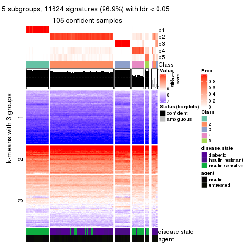
get_signatures(res, k = 6, scale_rows = FALSE)

Compare the overlap of signatures from different k:
compare_signatures(res)
get_signature() returns a data frame invisibly. TO get the list of signatures, the function
call should be assigned to a variable explicitly. In following code, if plot argument is set
to FALSE, no heatmap is plotted while only the differential analysis is performed.
# code only for demonstration
tb = get_signature(res, k = ..., plot = FALSE)
An example of the output of tb is:
#> which_row fdr mean_1 mean_2 scaled_mean_1 scaled_mean_2 km
#> 1 38 0.042760348 8.373488 9.131774 -0.5533452 0.5164555 1
#> 2 40 0.018707592 7.106213 8.469186 -0.6173731 0.5762149 1
#> 3 55 0.019134737 10.221463 11.207825 -0.6159697 0.5749050 1
#> 4 59 0.006059896 5.921854 7.869574 -0.6899429 0.6439467 1
#> 5 60 0.018055526 8.928898 10.211722 -0.6204761 0.5791110 1
#> 6 98 0.009384629 15.714769 14.887706 0.6635654 -0.6193277 2
...
The columns in tb are:
which_row: row indices corresponding to the input matrix.fdr: FDR for the differential test. mean_x: The mean value in group x.scaled_mean_x: The mean value in group x after rows are scaled.km: Row groups if k-means clustering is applied to rows.UMAP plot which shows how samples are separated.
dimension_reduction(res, k = 2, method = "UMAP")
dimension_reduction(res, k = 3, method = "UMAP")
dimension_reduction(res, k = 4, method = "UMAP")
dimension_reduction(res, k = 5, method = "UMAP")
dimension_reduction(res, k = 6, method = "UMAP")
Following heatmap shows how subgroups are split when increasing k:
collect_classes(res)
Test correlation between subgroups and known annotations. If the known annotation is numeric, one-way ANOVA test is applied, and if the known annotation is discrete, chi-squared contingency table test is applied.
test_to_known_factors(res)
#> n disease.state(p) agent(p) k
#> SD:NMF 106 8.03e-07 0.886862 2
#> SD:NMF 106 1.68e-11 0.990340 3
#> SD:NMF 101 2.72e-11 0.918291 4
#> SD:NMF 105 1.71e-14 0.774024 5
#> SD:NMF 91 1.01e-15 0.000943 6
If matrix rows can be associated to genes, consider to use GO_Enrichment(res,
...) to perform function enrichment for the signature genes.
The object with results only for a single top-value method and a single partition method can be extracted as:
res = res_list["CV", "hclust"]
# you can also extract it by
# res = res_list["CV:hclust"]
A summary of res and all the functions that can be applied to it:
res
#> A 'ConsensusPartition' object with k = 2, 3, 4, 5, 6.
#> On a matrix with 11994 rows and 110 columns.
#> Top rows (1000, 2000, 3000, 4000, 5000) are extracted by 'CV' method.
#> Subgroups are detected by 'hclust' method.
#> Performed in total 1250 partitions by row resampling.
#> Best k for subgroups seems to be 5.
#>
#> Following methods can be applied to this 'ConsensusPartition' object:
#> [1] "cola_report" "collect_classes" "collect_plots"
#> [4] "collect_stats" "colnames" "compare_signatures"
#> [7] "consensus_heatmap" "dimension_reduction" "functional_enrichment"
#> [10] "get_anno_col" "get_anno" "get_classes"
#> [13] "get_consensus" "get_matrix" "get_membership"
#> [16] "get_param" "get_signatures" "get_stats"
#> [19] "is_best_k" "is_stable_k" "membership_heatmap"
#> [22] "ncol" "nrow" "plot_ecdf"
#> [25] "rownames" "select_partition_number" "show"
#> [28] "suggest_best_k" "test_to_known_factors"
collect_plots() function collects all the plots made from res for all k (number of partitions)
into one single page to provide an easy and fast comparison between different k.
collect_plots(res)
The plots are:
k and the heatmap of
predicted classes for each k.k.k.k.All the plots in panels can be made by individual functions and they are plotted later in this section.
select_partition_number() produces several plots showing different
statistics for choosing “optimized” k. There are following statistics:
k;k, the area increased is defined as \(A_k - A_{k-1}\).The detailed explanations of these statistics can be found in the cola vignette.
Generally speaking, lower PAC score, higher mean silhouette score or higher
concordance corresponds to better partition. Rand index and Jaccard index
measure how similar the current partition is compared to partition with k-1.
If they are too similar, we won't accept k is better than k-1.
select_partition_number(res)
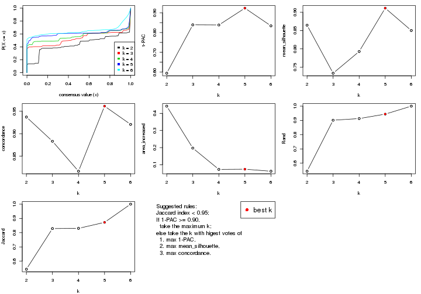
The numeric values for all these statistics can be obtained by get_stats().
get_stats(res)
#> k 1-PAC mean_silhouette concordance area_increased Rand Jaccard
#> 2 2 0.594 0.865 0.937 0.4421 0.544 0.544
#> 3 3 0.839 0.734 0.883 0.1972 0.901 0.829
#> 4 4 0.838 0.793 0.817 0.0728 0.913 0.830
#> 5 5 0.924 0.911 0.961 0.0739 0.944 0.872
#> 6 6 0.834 0.850 0.921 0.0621 1.000 1.000
suggest_best_k() suggests the best \(k\) based on these statistics. The rules are as follows:
NA.suggest_best_k(res)
#> [1] 5
Following shows the table of the partitions (You need to click the show/hide
code output link to see it). The membership matrix (columns with name p*)
is inferred by
clue::cl_consensus()
function with the SE method. Basically the value in the membership matrix
represents the probability to belong to a certain group. The finall class
label for an item is determined with the group with highest probability it
belongs to.
In get_classes() function, the entropy is calculated from the membership
matrix and the silhouette score is calculated from the consensus matrix.
cbind(get_classes(res, k = 2), get_membership(res, k = 2))
#> class entropy silhouette p1 p2
#> GSM555237 1 0.5059 0.9290 0.888 0.112
#> GSM555239 1 0.5059 0.9290 0.888 0.112
#> GSM555241 1 0.5059 0.9290 0.888 0.112
#> GSM555243 1 0.5059 0.9290 0.888 0.112
#> GSM555245 1 0.5059 0.9290 0.888 0.112
#> GSM555247 1 0.5059 0.9290 0.888 0.112
#> GSM555249 1 0.5059 0.9290 0.888 0.112
#> GSM555251 1 0.5059 0.9290 0.888 0.112
#> GSM555253 1 0.5059 0.9290 0.888 0.112
#> GSM555255 1 0.5059 0.9290 0.888 0.112
#> GSM555257 1 0.9087 0.6084 0.676 0.324
#> GSM555259 1 0.5842 0.9015 0.860 0.140
#> GSM555261 2 0.9998 -0.0895 0.492 0.508
#> GSM555263 2 0.9998 -0.0895 0.492 0.508
#> GSM555265 2 0.9998 -0.0895 0.492 0.508
#> GSM555267 2 0.9998 -0.0895 0.492 0.508
#> GSM555269 1 0.5842 0.9015 0.860 0.140
#> GSM555271 1 0.3733 0.9189 0.928 0.072
#> GSM555273 2 0.0376 0.9399 0.004 0.996
#> GSM555275 2 0.0376 0.9399 0.004 0.996
#> GSM555238 1 0.5059 0.9290 0.888 0.112
#> GSM555240 1 0.5059 0.9290 0.888 0.112
#> GSM555242 1 0.5059 0.9290 0.888 0.112
#> GSM555244 1 0.5059 0.9290 0.888 0.112
#> GSM555246 1 0.5059 0.9290 0.888 0.112
#> GSM555248 1 0.5059 0.9290 0.888 0.112
#> GSM555250 1 0.5059 0.9290 0.888 0.112
#> GSM555252 1 0.5059 0.9290 0.888 0.112
#> GSM555254 1 0.5059 0.9290 0.888 0.112
#> GSM555256 1 0.5059 0.9290 0.888 0.112
#> GSM555258 2 0.8081 0.6206 0.248 0.752
#> GSM555260 2 0.8081 0.6206 0.248 0.752
#> GSM555262 2 0.0000 0.9426 0.000 1.000
#> GSM555264 1 0.9954 0.2368 0.540 0.460
#> GSM555266 2 0.0000 0.9426 0.000 1.000
#> GSM555268 2 0.0000 0.9426 0.000 1.000
#> GSM555270 2 0.0000 0.9426 0.000 1.000
#> GSM555272 2 0.8081 0.6206 0.248 0.752
#> GSM555274 2 0.0000 0.9426 0.000 1.000
#> GSM555276 2 0.0000 0.9426 0.000 1.000
#> GSM555277 2 0.0000 0.9426 0.000 1.000
#> GSM555279 2 0.0000 0.9426 0.000 1.000
#> GSM555281 2 0.0000 0.9426 0.000 1.000
#> GSM555283 2 0.0000 0.9426 0.000 1.000
#> GSM555285 2 0.0000 0.9426 0.000 1.000
#> GSM555287 2 0.8763 0.5241 0.296 0.704
#> GSM555289 2 0.0000 0.9426 0.000 1.000
#> GSM555291 2 0.0000 0.9426 0.000 1.000
#> GSM555293 2 0.0000 0.9426 0.000 1.000
#> GSM555295 2 0.0000 0.9426 0.000 1.000
#> GSM555297 2 0.9998 -0.0895 0.492 0.508
#> GSM555299 1 0.0000 0.8975 1.000 0.000
#> GSM555301 1 0.0000 0.8975 1.000 0.000
#> GSM555303 1 0.0000 0.8975 1.000 0.000
#> GSM555305 1 0.0000 0.8975 1.000 0.000
#> GSM555307 2 0.0376 0.9399 0.004 0.996
#> GSM555309 1 0.0000 0.8975 1.000 0.000
#> GSM555311 2 0.0376 0.9399 0.004 0.996
#> GSM555313 2 0.0000 0.9426 0.000 1.000
#> GSM555315 2 0.0376 0.9399 0.004 0.996
#> GSM555278 2 0.0000 0.9426 0.000 1.000
#> GSM555280 2 0.0000 0.9426 0.000 1.000
#> GSM555282 2 0.0000 0.9426 0.000 1.000
#> GSM555284 2 0.0000 0.9426 0.000 1.000
#> GSM555286 2 0.0000 0.9426 0.000 1.000
#> GSM555288 2 0.0000 0.9426 0.000 1.000
#> GSM555290 2 0.0000 0.9426 0.000 1.000
#> GSM555292 2 0.0000 0.9426 0.000 1.000
#> GSM555294 2 0.0000 0.9426 0.000 1.000
#> GSM555296 2 0.0000 0.9426 0.000 1.000
#> GSM555298 1 0.0000 0.8975 1.000 0.000
#> GSM555300 1 0.0000 0.8975 1.000 0.000
#> GSM555302 1 0.0000 0.8975 1.000 0.000
#> GSM555304 1 0.0000 0.8975 1.000 0.000
#> GSM555306 1 0.0000 0.8975 1.000 0.000
#> GSM555308 1 0.0000 0.8975 1.000 0.000
#> GSM555310 1 0.0000 0.8975 1.000 0.000
#> GSM555312 2 0.0000 0.9426 0.000 1.000
#> GSM555314 2 0.0376 0.9399 0.004 0.996
#> GSM555316 2 0.0000 0.9426 0.000 1.000
#> GSM555317 2 0.0000 0.9426 0.000 1.000
#> GSM555319 2 0.0000 0.9426 0.000 1.000
#> GSM555321 2 0.0000 0.9426 0.000 1.000
#> GSM555323 2 0.0000 0.9426 0.000 1.000
#> GSM555325 2 0.0000 0.9426 0.000 1.000
#> GSM555327 2 0.0000 0.9426 0.000 1.000
#> GSM555329 2 0.0000 0.9426 0.000 1.000
#> GSM555331 2 0.0000 0.9426 0.000 1.000
#> GSM555333 2 0.0376 0.9399 0.004 0.996
#> GSM555335 2 0.0000 0.9426 0.000 1.000
#> GSM555337 2 0.0000 0.9426 0.000 1.000
#> GSM555339 2 0.0376 0.9399 0.004 0.996
#> GSM555341 2 0.0000 0.9426 0.000 1.000
#> GSM555343 2 0.0000 0.9426 0.000 1.000
#> GSM555345 2 0.0376 0.9396 0.004 0.996
#> GSM555318 2 0.0000 0.9426 0.000 1.000
#> GSM555320 2 0.0000 0.9426 0.000 1.000
#> GSM555322 2 0.0000 0.9426 0.000 1.000
#> GSM555324 1 0.0000 0.8975 1.000 0.000
#> GSM555326 2 0.0000 0.9426 0.000 1.000
#> GSM555328 2 0.0000 0.9426 0.000 1.000
#> GSM555330 2 0.0000 0.9426 0.000 1.000
#> GSM555332 2 0.0000 0.9426 0.000 1.000
#> GSM555334 2 0.0000 0.9426 0.000 1.000
#> GSM555336 2 0.0000 0.9426 0.000 1.000
#> GSM555338 2 0.0000 0.9426 0.000 1.000
#> GSM555340 2 0.0000 0.9426 0.000 1.000
#> GSM555342 2 0.0000 0.9426 0.000 1.000
#> GSM555344 2 0.0000 0.9426 0.000 1.000
#> GSM555346 2 0.0000 0.9426 0.000 1.000
cbind(get_classes(res, k = 3), get_membership(res, k = 3))
#> class entropy silhouette p1 p2 p3
#> GSM555237 1 0.0892 0.711 0.980 0.000 0.020
#> GSM555239 1 0.0000 0.718 1.000 0.000 0.000
#> GSM555241 1 0.0000 0.718 1.000 0.000 0.000
#> GSM555243 1 0.0000 0.718 1.000 0.000 0.000
#> GSM555245 1 0.0000 0.718 1.000 0.000 0.000
#> GSM555247 1 0.0000 0.718 1.000 0.000 0.000
#> GSM555249 1 0.0000 0.718 1.000 0.000 0.000
#> GSM555251 1 0.0000 0.718 1.000 0.000 0.000
#> GSM555253 1 0.0000 0.718 1.000 0.000 0.000
#> GSM555255 1 0.0000 0.718 1.000 0.000 0.000
#> GSM555257 1 0.8536 0.266 0.596 0.144 0.260
#> GSM555259 1 0.5109 0.575 0.780 0.008 0.212
#> GSM555261 1 0.9767 -0.236 0.428 0.328 0.244
#> GSM555263 1 0.9767 -0.236 0.428 0.328 0.244
#> GSM555265 1 0.9767 -0.236 0.428 0.328 0.244
#> GSM555267 1 0.9756 -0.243 0.428 0.332 0.240
#> GSM555269 1 0.5109 0.575 0.780 0.008 0.212
#> GSM555271 1 0.3116 0.686 0.892 0.000 0.108
#> GSM555273 2 0.2902 0.803 0.016 0.920 0.064
#> GSM555275 2 0.0237 0.944 0.000 0.996 0.004
#> GSM555238 1 0.0000 0.718 1.000 0.000 0.000
#> GSM555240 1 0.0892 0.711 0.980 0.000 0.020
#> GSM555242 1 0.0892 0.711 0.980 0.000 0.020
#> GSM555244 1 0.0000 0.718 1.000 0.000 0.000
#> GSM555246 1 0.0000 0.718 1.000 0.000 0.000
#> GSM555248 1 0.0000 0.718 1.000 0.000 0.000
#> GSM555250 1 0.0000 0.718 1.000 0.000 0.000
#> GSM555252 1 0.0892 0.711 0.980 0.000 0.020
#> GSM555254 1 0.0000 0.718 1.000 0.000 0.000
#> GSM555256 1 0.0000 0.718 1.000 0.000 0.000
#> GSM555258 2 0.8332 -0.285 0.316 0.580 0.104
#> GSM555260 2 0.8332 -0.285 0.316 0.580 0.104
#> GSM555262 2 0.0000 0.949 0.000 1.000 0.000
#> GSM555264 1 0.9684 -0.145 0.460 0.280 0.260
#> GSM555266 2 0.0592 0.932 0.000 0.988 0.012
#> GSM555268 2 0.0000 0.949 0.000 1.000 0.000
#> GSM555270 2 0.0000 0.949 0.000 1.000 0.000
#> GSM555272 2 0.8332 -0.285 0.316 0.580 0.104
#> GSM555274 2 0.0000 0.949 0.000 1.000 0.000
#> GSM555276 2 0.0000 0.949 0.000 1.000 0.000
#> GSM555277 2 0.0000 0.949 0.000 1.000 0.000
#> GSM555279 2 0.0000 0.949 0.000 1.000 0.000
#> GSM555281 2 0.0000 0.949 0.000 1.000 0.000
#> GSM555283 2 0.0000 0.949 0.000 1.000 0.000
#> GSM555285 2 0.2804 0.810 0.016 0.924 0.060
#> GSM555287 3 0.7841 0.000 0.052 0.468 0.480
#> GSM555289 2 0.0000 0.949 0.000 1.000 0.000
#> GSM555291 2 0.0000 0.949 0.000 1.000 0.000
#> GSM555293 2 0.0000 0.949 0.000 1.000 0.000
#> GSM555295 2 0.0000 0.949 0.000 1.000 0.000
#> GSM555297 1 0.9773 -0.264 0.420 0.340 0.240
#> GSM555299 1 0.6280 0.557 0.540 0.000 0.460
#> GSM555301 1 0.6280 0.557 0.540 0.000 0.460
#> GSM555303 1 0.6280 0.557 0.540 0.000 0.460
#> GSM555305 1 0.6280 0.557 0.540 0.000 0.460
#> GSM555307 2 0.0237 0.944 0.000 0.996 0.004
#> GSM555309 1 0.6280 0.557 0.540 0.000 0.460
#> GSM555311 2 0.0237 0.944 0.000 0.996 0.004
#> GSM555313 2 0.0000 0.949 0.000 1.000 0.000
#> GSM555315 2 0.0237 0.944 0.000 0.996 0.004
#> GSM555278 2 0.0000 0.949 0.000 1.000 0.000
#> GSM555280 2 0.0000 0.949 0.000 1.000 0.000
#> GSM555282 2 0.0000 0.949 0.000 1.000 0.000
#> GSM555284 2 0.0000 0.949 0.000 1.000 0.000
#> GSM555286 2 0.0000 0.949 0.000 1.000 0.000
#> GSM555288 2 0.0000 0.949 0.000 1.000 0.000
#> GSM555290 2 0.0000 0.949 0.000 1.000 0.000
#> GSM555292 2 0.0000 0.949 0.000 1.000 0.000
#> GSM555294 2 0.0000 0.949 0.000 1.000 0.000
#> GSM555296 2 0.0000 0.949 0.000 1.000 0.000
#> GSM555298 1 0.6280 0.557 0.540 0.000 0.460
#> GSM555300 1 0.6280 0.557 0.540 0.000 0.460
#> GSM555302 1 0.6280 0.557 0.540 0.000 0.460
#> GSM555304 1 0.6280 0.557 0.540 0.000 0.460
#> GSM555306 1 0.6280 0.557 0.540 0.000 0.460
#> GSM555308 1 0.6280 0.557 0.540 0.000 0.460
#> GSM555310 1 0.6280 0.557 0.540 0.000 0.460
#> GSM555312 2 0.0000 0.949 0.000 1.000 0.000
#> GSM555314 2 0.0237 0.944 0.000 0.996 0.004
#> GSM555316 2 0.0000 0.949 0.000 1.000 0.000
#> GSM555317 2 0.0000 0.949 0.000 1.000 0.000
#> GSM555319 2 0.0000 0.949 0.000 1.000 0.000
#> GSM555321 2 0.0000 0.949 0.000 1.000 0.000
#> GSM555323 2 0.0000 0.949 0.000 1.000 0.000
#> GSM555325 2 0.0000 0.949 0.000 1.000 0.000
#> GSM555327 2 0.0000 0.949 0.000 1.000 0.000
#> GSM555329 2 0.0000 0.949 0.000 1.000 0.000
#> GSM555331 2 0.0000 0.949 0.000 1.000 0.000
#> GSM555333 2 0.0237 0.944 0.000 0.996 0.004
#> GSM555335 2 0.0000 0.949 0.000 1.000 0.000
#> GSM555337 2 0.0000 0.949 0.000 1.000 0.000
#> GSM555339 2 0.0237 0.944 0.000 0.996 0.004
#> GSM555341 2 0.0000 0.949 0.000 1.000 0.000
#> GSM555343 2 0.0000 0.949 0.000 1.000 0.000
#> GSM555345 2 0.0237 0.944 0.000 0.996 0.004
#> GSM555318 2 0.0000 0.949 0.000 1.000 0.000
#> GSM555320 2 0.1529 0.883 0.000 0.960 0.040
#> GSM555322 2 0.0000 0.949 0.000 1.000 0.000
#> GSM555324 1 0.6280 0.557 0.540 0.000 0.460
#> GSM555326 2 0.0000 0.949 0.000 1.000 0.000
#> GSM555328 2 0.0000 0.949 0.000 1.000 0.000
#> GSM555330 2 0.0000 0.949 0.000 1.000 0.000
#> GSM555332 2 0.0000 0.949 0.000 1.000 0.000
#> GSM555334 2 0.0000 0.949 0.000 1.000 0.000
#> GSM555336 2 0.0000 0.949 0.000 1.000 0.000
#> GSM555338 2 0.0000 0.949 0.000 1.000 0.000
#> GSM555340 2 0.0000 0.949 0.000 1.000 0.000
#> GSM555342 2 0.0592 0.932 0.000 0.988 0.012
#> GSM555344 2 0.0000 0.949 0.000 1.000 0.000
#> GSM555346 2 0.2804 0.810 0.016 0.924 0.060
cbind(get_classes(res, k = 4), get_membership(res, k = 4))
#> class entropy silhouette p1 p2 p3 p4
#> GSM555237 1 0.4994 0.616 0.520 0.000 0 0.480
#> GSM555239 1 0.4977 0.643 0.540 0.000 0 0.460
#> GSM555241 1 0.4977 0.643 0.540 0.000 0 0.460
#> GSM555243 1 0.4977 0.643 0.540 0.000 0 0.460
#> GSM555245 1 0.4977 0.643 0.540 0.000 0 0.460
#> GSM555247 1 0.4977 0.643 0.540 0.000 0 0.460
#> GSM555249 1 0.4977 0.643 0.540 0.000 0 0.460
#> GSM555251 1 0.4977 0.643 0.540 0.000 0 0.460
#> GSM555253 1 0.4977 0.643 0.540 0.000 0 0.460
#> GSM555255 1 0.4977 0.643 0.540 0.000 0 0.460
#> GSM555257 4 0.2868 0.453 0.136 0.000 0 0.864
#> GSM555259 4 0.4522 -0.122 0.320 0.000 0 0.680
#> GSM555261 4 0.1474 0.680 0.000 0.052 0 0.948
#> GSM555263 4 0.1474 0.680 0.000 0.052 0 0.948
#> GSM555265 4 0.1474 0.680 0.000 0.052 0 0.948
#> GSM555267 4 0.1557 0.679 0.000 0.056 0 0.944
#> GSM555269 4 0.4522 -0.122 0.320 0.000 0 0.680
#> GSM555271 1 0.4998 0.539 0.512 0.000 0 0.488
#> GSM555273 2 0.3837 0.715 0.000 0.776 0 0.224
#> GSM555275 2 0.0188 0.981 0.000 0.996 0 0.004
#> GSM555238 1 0.4977 0.643 0.540 0.000 0 0.460
#> GSM555240 1 0.4994 0.616 0.520 0.000 0 0.480
#> GSM555242 1 0.4994 0.616 0.520 0.000 0 0.480
#> GSM555244 1 0.4977 0.643 0.540 0.000 0 0.460
#> GSM555246 1 0.4977 0.643 0.540 0.000 0 0.460
#> GSM555248 1 0.4977 0.643 0.540 0.000 0 0.460
#> GSM555250 1 0.4977 0.643 0.540 0.000 0 0.460
#> GSM555252 1 0.4994 0.616 0.520 0.000 0 0.480
#> GSM555254 1 0.4977 0.643 0.540 0.000 0 0.460
#> GSM555256 1 0.4977 0.643 0.540 0.000 0 0.460
#> GSM555258 4 0.4431 0.454 0.000 0.304 0 0.696
#> GSM555260 4 0.4431 0.454 0.000 0.304 0 0.696
#> GSM555262 2 0.0592 0.972 0.000 0.984 0 0.016
#> GSM555264 4 0.0000 0.621 0.000 0.000 0 1.000
#> GSM555266 2 0.1118 0.954 0.000 0.964 0 0.036
#> GSM555268 2 0.0000 0.983 0.000 1.000 0 0.000
#> GSM555270 2 0.0000 0.983 0.000 1.000 0 0.000
#> GSM555272 4 0.4431 0.454 0.000 0.304 0 0.696
#> GSM555274 2 0.2081 0.904 0.000 0.916 0 0.084
#> GSM555276 2 0.0000 0.983 0.000 1.000 0 0.000
#> GSM555277 2 0.0000 0.983 0.000 1.000 0 0.000
#> GSM555279 2 0.0188 0.981 0.000 0.996 0 0.004
#> GSM555281 2 0.0000 0.983 0.000 1.000 0 0.000
#> GSM555283 2 0.0000 0.983 0.000 1.000 0 0.000
#> GSM555285 2 0.3801 0.721 0.000 0.780 0 0.220
#> GSM555287 3 0.0000 0.000 0.000 0.000 1 0.000
#> GSM555289 2 0.0000 0.983 0.000 1.000 0 0.000
#> GSM555291 2 0.0000 0.983 0.000 1.000 0 0.000
#> GSM555293 2 0.0000 0.983 0.000 1.000 0 0.000
#> GSM555295 2 0.0000 0.983 0.000 1.000 0 0.000
#> GSM555297 4 0.1716 0.673 0.000 0.064 0 0.936
#> GSM555299 1 0.0000 0.572 1.000 0.000 0 0.000
#> GSM555301 1 0.0000 0.572 1.000 0.000 0 0.000
#> GSM555303 1 0.0000 0.572 1.000 0.000 0 0.000
#> GSM555305 1 0.0000 0.572 1.000 0.000 0 0.000
#> GSM555307 2 0.0188 0.981 0.000 0.996 0 0.004
#> GSM555309 1 0.0000 0.572 1.000 0.000 0 0.000
#> GSM555311 2 0.0188 0.981 0.000 0.996 0 0.004
#> GSM555313 2 0.0000 0.983 0.000 1.000 0 0.000
#> GSM555315 2 0.0188 0.981 0.000 0.996 0 0.004
#> GSM555278 2 0.0592 0.972 0.000 0.984 0 0.016
#> GSM555280 2 0.0000 0.983 0.000 1.000 0 0.000
#> GSM555282 2 0.0000 0.983 0.000 1.000 0 0.000
#> GSM555284 2 0.0592 0.972 0.000 0.984 0 0.016
#> GSM555286 2 0.0000 0.983 0.000 1.000 0 0.000
#> GSM555288 2 0.0000 0.983 0.000 1.000 0 0.000
#> GSM555290 2 0.0000 0.983 0.000 1.000 0 0.000
#> GSM555292 2 0.0000 0.983 0.000 1.000 0 0.000
#> GSM555294 2 0.0000 0.983 0.000 1.000 0 0.000
#> GSM555296 2 0.0000 0.983 0.000 1.000 0 0.000
#> GSM555298 1 0.0000 0.572 1.000 0.000 0 0.000
#> GSM555300 1 0.0000 0.572 1.000 0.000 0 0.000
#> GSM555302 1 0.0000 0.572 1.000 0.000 0 0.000
#> GSM555304 1 0.0000 0.572 1.000 0.000 0 0.000
#> GSM555306 1 0.0000 0.572 1.000 0.000 0 0.000
#> GSM555308 1 0.0000 0.572 1.000 0.000 0 0.000
#> GSM555310 1 0.0000 0.572 1.000 0.000 0 0.000
#> GSM555312 2 0.0000 0.983 0.000 1.000 0 0.000
#> GSM555314 2 0.0336 0.979 0.000 0.992 0 0.008
#> GSM555316 2 0.0000 0.983 0.000 1.000 0 0.000
#> GSM555317 2 0.0000 0.983 0.000 1.000 0 0.000
#> GSM555319 2 0.0000 0.983 0.000 1.000 0 0.000
#> GSM555321 2 0.0000 0.983 0.000 1.000 0 0.000
#> GSM555323 2 0.0000 0.983 0.000 1.000 0 0.000
#> GSM555325 2 0.0000 0.983 0.000 1.000 0 0.000
#> GSM555327 2 0.0000 0.983 0.000 1.000 0 0.000
#> GSM555329 2 0.0000 0.983 0.000 1.000 0 0.000
#> GSM555331 2 0.0000 0.983 0.000 1.000 0 0.000
#> GSM555333 2 0.0188 0.981 0.000 0.996 0 0.004
#> GSM555335 2 0.0000 0.983 0.000 1.000 0 0.000
#> GSM555337 2 0.0000 0.983 0.000 1.000 0 0.000
#> GSM555339 2 0.0188 0.981 0.000 0.996 0 0.004
#> GSM555341 2 0.0000 0.983 0.000 1.000 0 0.000
#> GSM555343 2 0.0000 0.983 0.000 1.000 0 0.000
#> GSM555345 2 0.0188 0.981 0.000 0.996 0 0.004
#> GSM555318 2 0.0000 0.983 0.000 1.000 0 0.000
#> GSM555320 2 0.2149 0.899 0.000 0.912 0 0.088
#> GSM555322 2 0.0000 0.983 0.000 1.000 0 0.000
#> GSM555324 1 0.0000 0.572 1.000 0.000 0 0.000
#> GSM555326 2 0.0000 0.983 0.000 1.000 0 0.000
#> GSM555328 2 0.0000 0.983 0.000 1.000 0 0.000
#> GSM555330 2 0.0000 0.983 0.000 1.000 0 0.000
#> GSM555332 2 0.0000 0.983 0.000 1.000 0 0.000
#> GSM555334 2 0.0000 0.983 0.000 1.000 0 0.000
#> GSM555336 2 0.0000 0.983 0.000 1.000 0 0.000
#> GSM555338 2 0.0000 0.983 0.000 1.000 0 0.000
#> GSM555340 2 0.0000 0.983 0.000 1.000 0 0.000
#> GSM555342 2 0.0707 0.968 0.000 0.980 0 0.020
#> GSM555344 2 0.0000 0.983 0.000 1.000 0 0.000
#> GSM555346 2 0.3726 0.734 0.000 0.788 0 0.212
cbind(get_classes(res, k = 5), get_membership(res, k = 5))
#> class entropy silhouette p1 p2 p3 p4 p5
#> GSM555237 1 0.0609 0.941 0.980 0.000 0.000 0.020 0
#> GSM555239 1 0.0000 0.952 1.000 0.000 0.000 0.000 0
#> GSM555241 1 0.0000 0.952 1.000 0.000 0.000 0.000 0
#> GSM555243 1 0.0000 0.952 1.000 0.000 0.000 0.000 0
#> GSM555245 1 0.0000 0.952 1.000 0.000 0.000 0.000 0
#> GSM555247 1 0.0000 0.952 1.000 0.000 0.000 0.000 0
#> GSM555249 1 0.0000 0.952 1.000 0.000 0.000 0.000 0
#> GSM555251 1 0.0000 0.952 1.000 0.000 0.000 0.000 0
#> GSM555253 1 0.0000 0.952 1.000 0.000 0.000 0.000 0
#> GSM555255 1 0.0000 0.952 1.000 0.000 0.000 0.000 0
#> GSM555257 4 0.3934 0.448 0.244 0.000 0.016 0.740 0
#> GSM555259 1 0.4138 0.616 0.708 0.000 0.016 0.276 0
#> GSM555261 4 0.3085 0.691 0.116 0.032 0.000 0.852 0
#> GSM555263 4 0.3085 0.691 0.116 0.032 0.000 0.852 0
#> GSM555265 4 0.3085 0.691 0.116 0.032 0.000 0.852 0
#> GSM555267 4 0.3165 0.691 0.116 0.036 0.000 0.848 0
#> GSM555269 1 0.4138 0.616 0.708 0.000 0.016 0.276 0
#> GSM555271 1 0.4893 0.614 0.704 0.000 0.208 0.088 0
#> GSM555273 2 0.3305 0.691 0.000 0.776 0.000 0.224 0
#> GSM555275 2 0.0290 0.977 0.000 0.992 0.000 0.008 0
#> GSM555238 1 0.0000 0.952 1.000 0.000 0.000 0.000 0
#> GSM555240 1 0.0609 0.941 0.980 0.000 0.000 0.020 0
#> GSM555242 1 0.0609 0.941 0.980 0.000 0.000 0.020 0
#> GSM555244 1 0.0000 0.952 1.000 0.000 0.000 0.000 0
#> GSM555246 1 0.0000 0.952 1.000 0.000 0.000 0.000 0
#> GSM555248 1 0.0000 0.952 1.000 0.000 0.000 0.000 0
#> GSM555250 1 0.0000 0.952 1.000 0.000 0.000 0.000 0
#> GSM555252 1 0.0609 0.941 0.980 0.000 0.000 0.020 0
#> GSM555254 1 0.0000 0.952 1.000 0.000 0.000 0.000 0
#> GSM555256 1 0.0000 0.952 1.000 0.000 0.000 0.000 0
#> GSM555258 4 0.3707 0.495 0.000 0.284 0.000 0.716 0
#> GSM555260 4 0.3707 0.495 0.000 0.284 0.000 0.716 0
#> GSM555262 2 0.0880 0.961 0.000 0.968 0.000 0.032 0
#> GSM555264 4 0.0671 0.519 0.004 0.000 0.016 0.980 0
#> GSM555266 2 0.1270 0.942 0.000 0.948 0.000 0.052 0
#> GSM555268 2 0.0000 0.979 0.000 1.000 0.000 0.000 0
#> GSM555270 2 0.0000 0.979 0.000 1.000 0.000 0.000 0
#> GSM555272 4 0.3707 0.495 0.000 0.284 0.000 0.716 0
#> GSM555274 2 0.1965 0.891 0.000 0.904 0.000 0.096 0
#> GSM555276 2 0.0000 0.979 0.000 1.000 0.000 0.000 0
#> GSM555277 2 0.0290 0.976 0.000 0.992 0.000 0.008 0
#> GSM555279 2 0.0404 0.975 0.000 0.988 0.000 0.012 0
#> GSM555281 2 0.0404 0.975 0.000 0.988 0.000 0.012 0
#> GSM555283 2 0.0290 0.976 0.000 0.992 0.000 0.008 0
#> GSM555285 2 0.3274 0.698 0.000 0.780 0.000 0.220 0
#> GSM555287 5 0.0000 0.000 0.000 0.000 0.000 0.000 1
#> GSM555289 2 0.0000 0.979 0.000 1.000 0.000 0.000 0
#> GSM555291 2 0.0290 0.976 0.000 0.992 0.000 0.008 0
#> GSM555293 2 0.0000 0.979 0.000 1.000 0.000 0.000 0
#> GSM555295 2 0.0290 0.976 0.000 0.992 0.000 0.008 0
#> GSM555297 4 0.3267 0.689 0.112 0.044 0.000 0.844 0
#> GSM555299 3 0.0510 1.000 0.016 0.000 0.984 0.000 0
#> GSM555301 3 0.0510 1.000 0.016 0.000 0.984 0.000 0
#> GSM555303 3 0.0510 1.000 0.016 0.000 0.984 0.000 0
#> GSM555305 3 0.0510 1.000 0.016 0.000 0.984 0.000 0
#> GSM555307 2 0.0404 0.975 0.000 0.988 0.000 0.012 0
#> GSM555309 3 0.0510 1.000 0.016 0.000 0.984 0.000 0
#> GSM555311 2 0.0404 0.975 0.000 0.988 0.000 0.012 0
#> GSM555313 2 0.0404 0.974 0.000 0.988 0.000 0.012 0
#> GSM555315 2 0.0404 0.975 0.000 0.988 0.000 0.012 0
#> GSM555278 2 0.0510 0.970 0.000 0.984 0.000 0.016 0
#> GSM555280 2 0.0000 0.979 0.000 1.000 0.000 0.000 0
#> GSM555282 2 0.0510 0.972 0.000 0.984 0.000 0.016 0
#> GSM555284 2 0.0880 0.961 0.000 0.968 0.000 0.032 0
#> GSM555286 2 0.0000 0.979 0.000 1.000 0.000 0.000 0
#> GSM555288 2 0.0510 0.972 0.000 0.984 0.000 0.016 0
#> GSM555290 2 0.0000 0.979 0.000 1.000 0.000 0.000 0
#> GSM555292 2 0.0000 0.979 0.000 1.000 0.000 0.000 0
#> GSM555294 2 0.0000 0.979 0.000 1.000 0.000 0.000 0
#> GSM555296 2 0.0000 0.979 0.000 1.000 0.000 0.000 0
#> GSM555298 3 0.0510 1.000 0.016 0.000 0.984 0.000 0
#> GSM555300 3 0.0510 1.000 0.016 0.000 0.984 0.000 0
#> GSM555302 3 0.0510 1.000 0.016 0.000 0.984 0.000 0
#> GSM555304 3 0.0510 1.000 0.016 0.000 0.984 0.000 0
#> GSM555306 3 0.0510 1.000 0.016 0.000 0.984 0.000 0
#> GSM555308 3 0.0510 1.000 0.016 0.000 0.984 0.000 0
#> GSM555310 3 0.0510 1.000 0.016 0.000 0.984 0.000 0
#> GSM555312 2 0.0404 0.974 0.000 0.988 0.000 0.012 0
#> GSM555314 2 0.0510 0.973 0.000 0.984 0.000 0.016 0
#> GSM555316 2 0.0000 0.979 0.000 1.000 0.000 0.000 0
#> GSM555317 2 0.0000 0.979 0.000 1.000 0.000 0.000 0
#> GSM555319 2 0.0000 0.979 0.000 1.000 0.000 0.000 0
#> GSM555321 2 0.0000 0.979 0.000 1.000 0.000 0.000 0
#> GSM555323 2 0.0000 0.979 0.000 1.000 0.000 0.000 0
#> GSM555325 2 0.0000 0.979 0.000 1.000 0.000 0.000 0
#> GSM555327 2 0.0000 0.979 0.000 1.000 0.000 0.000 0
#> GSM555329 2 0.0000 0.979 0.000 1.000 0.000 0.000 0
#> GSM555331 2 0.0000 0.979 0.000 1.000 0.000 0.000 0
#> GSM555333 2 0.0404 0.975 0.000 0.988 0.000 0.012 0
#> GSM555335 2 0.0000 0.979 0.000 1.000 0.000 0.000 0
#> GSM555337 2 0.0000 0.979 0.000 1.000 0.000 0.000 0
#> GSM555339 2 0.0404 0.975 0.000 0.988 0.000 0.012 0
#> GSM555341 2 0.0000 0.979 0.000 1.000 0.000 0.000 0
#> GSM555343 2 0.0000 0.979 0.000 1.000 0.000 0.000 0
#> GSM555345 2 0.0404 0.974 0.000 0.988 0.000 0.012 0
#> GSM555318 2 0.0000 0.979 0.000 1.000 0.000 0.000 0
#> GSM555320 2 0.1851 0.894 0.000 0.912 0.000 0.088 0
#> GSM555322 2 0.0000 0.979 0.000 1.000 0.000 0.000 0
#> GSM555324 3 0.0510 1.000 0.016 0.000 0.984 0.000 0
#> GSM555326 2 0.0000 0.979 0.000 1.000 0.000 0.000 0
#> GSM555328 2 0.0000 0.979 0.000 1.000 0.000 0.000 0
#> GSM555330 2 0.0000 0.979 0.000 1.000 0.000 0.000 0
#> GSM555332 2 0.0000 0.979 0.000 1.000 0.000 0.000 0
#> GSM555334 2 0.0000 0.979 0.000 1.000 0.000 0.000 0
#> GSM555336 2 0.0000 0.979 0.000 1.000 0.000 0.000 0
#> GSM555338 2 0.0000 0.979 0.000 1.000 0.000 0.000 0
#> GSM555340 2 0.0000 0.979 0.000 1.000 0.000 0.000 0
#> GSM555342 2 0.0609 0.965 0.000 0.980 0.000 0.020 0
#> GSM555344 2 0.0000 0.979 0.000 1.000 0.000 0.000 0
#> GSM555346 2 0.3210 0.712 0.000 0.788 0.000 0.212 0
cbind(get_classes(res, k = 6), get_membership(res, k = 6))
#> class entropy silhouette p1 p2 p3 p4 p5 p6
#> GSM555237 1 0.0547 0.89607 0.980 0.000 0.000 0.020 0 NA
#> GSM555239 1 0.0000 0.90783 1.000 0.000 0.000 0.000 0 NA
#> GSM555241 1 0.0000 0.90783 1.000 0.000 0.000 0.000 0 NA
#> GSM555243 1 0.0000 0.90783 1.000 0.000 0.000 0.000 0 NA
#> GSM555245 1 0.0000 0.90783 1.000 0.000 0.000 0.000 0 NA
#> GSM555247 1 0.0000 0.90783 1.000 0.000 0.000 0.000 0 NA
#> GSM555249 1 0.0000 0.90783 1.000 0.000 0.000 0.000 0 NA
#> GSM555251 1 0.0000 0.90783 1.000 0.000 0.000 0.000 0 NA
#> GSM555253 1 0.0000 0.90783 1.000 0.000 0.000 0.000 0 NA
#> GSM555255 1 0.0000 0.90783 1.000 0.000 0.000 0.000 0 NA
#> GSM555257 4 0.3908 0.52032 0.132 0.000 0.000 0.768 0 NA
#> GSM555259 1 0.6095 0.00424 0.388 0.000 0.000 0.304 0 NA
#> GSM555261 4 0.1141 0.73595 0.052 0.000 0.000 0.948 0 NA
#> GSM555263 4 0.1141 0.73595 0.052 0.000 0.000 0.948 0 NA
#> GSM555265 4 0.1141 0.73595 0.052 0.000 0.000 0.948 0 NA
#> GSM555267 4 0.1285 0.73659 0.052 0.004 0.000 0.944 0 NA
#> GSM555269 1 0.6095 0.00424 0.388 0.000 0.000 0.304 0 NA
#> GSM555271 1 0.7239 -0.04611 0.384 0.000 0.192 0.116 0 NA
#> GSM555273 2 0.5240 0.37007 0.000 0.544 0.000 0.108 0 NA
#> GSM555275 2 0.1500 0.92391 0.000 0.936 0.000 0.012 0 NA
#> GSM555238 1 0.0000 0.90783 1.000 0.000 0.000 0.000 0 NA
#> GSM555240 1 0.0547 0.89607 0.980 0.000 0.000 0.020 0 NA
#> GSM555242 1 0.0547 0.89607 0.980 0.000 0.000 0.020 0 NA
#> GSM555244 1 0.0000 0.90783 1.000 0.000 0.000 0.000 0 NA
#> GSM555246 1 0.0000 0.90783 1.000 0.000 0.000 0.000 0 NA
#> GSM555248 1 0.0000 0.90783 1.000 0.000 0.000 0.000 0 NA
#> GSM555250 1 0.0000 0.90783 1.000 0.000 0.000 0.000 0 NA
#> GSM555252 1 0.0547 0.89607 0.980 0.000 0.000 0.020 0 NA
#> GSM555254 1 0.0000 0.90783 1.000 0.000 0.000 0.000 0 NA
#> GSM555256 1 0.0000 0.90783 1.000 0.000 0.000 0.000 0 NA
#> GSM555258 4 0.3992 0.56865 0.000 0.136 0.000 0.760 0 NA
#> GSM555260 4 0.3992 0.56865 0.000 0.136 0.000 0.760 0 NA
#> GSM555262 2 0.2499 0.89184 0.000 0.880 0.000 0.048 0 NA
#> GSM555264 4 0.3756 0.35484 0.000 0.000 0.000 0.600 0 NA
#> GSM555266 2 0.2433 0.89435 0.000 0.884 0.000 0.044 0 NA
#> GSM555268 2 0.0458 0.93196 0.000 0.984 0.000 0.000 0 NA
#> GSM555270 2 0.0865 0.92761 0.000 0.964 0.000 0.000 0 NA
#> GSM555272 4 0.3992 0.56865 0.000 0.136 0.000 0.760 0 NA
#> GSM555274 2 0.3062 0.84179 0.000 0.836 0.000 0.112 0 NA
#> GSM555276 2 0.0458 0.93287 0.000 0.984 0.000 0.000 0 NA
#> GSM555277 2 0.1196 0.92655 0.000 0.952 0.000 0.008 0 NA
#> GSM555279 2 0.1657 0.92071 0.000 0.928 0.000 0.016 0 NA
#> GSM555281 2 0.1594 0.92152 0.000 0.932 0.000 0.016 0 NA
#> GSM555283 2 0.1265 0.92585 0.000 0.948 0.000 0.008 0 NA
#> GSM555285 2 0.5095 0.37128 0.000 0.544 0.000 0.088 0 NA
#> GSM555287 5 0.0000 0.00000 0.000 0.000 0.000 0.000 1 NA
#> GSM555289 2 0.0713 0.92974 0.000 0.972 0.000 0.000 0 NA
#> GSM555291 2 0.1265 0.92585 0.000 0.948 0.000 0.008 0 NA
#> GSM555293 2 0.0865 0.93112 0.000 0.964 0.000 0.000 0 NA
#> GSM555295 2 0.1686 0.91853 0.000 0.924 0.000 0.012 0 NA
#> GSM555297 4 0.1333 0.73495 0.048 0.008 0.000 0.944 0 NA
#> GSM555299 3 0.0260 0.99465 0.000 0.000 0.992 0.000 0 NA
#> GSM555301 3 0.0000 0.99666 0.000 0.000 1.000 0.000 0 NA
#> GSM555303 3 0.0000 0.99666 0.000 0.000 1.000 0.000 0 NA
#> GSM555305 3 0.0000 0.99666 0.000 0.000 1.000 0.000 0 NA
#> GSM555307 2 0.1779 0.91686 0.000 0.920 0.000 0.016 0 NA
#> GSM555309 3 0.0260 0.99465 0.000 0.000 0.992 0.000 0 NA
#> GSM555311 2 0.1779 0.91686 0.000 0.920 0.000 0.016 0 NA
#> GSM555313 2 0.1320 0.92726 0.000 0.948 0.000 0.016 0 NA
#> GSM555315 2 0.1657 0.92054 0.000 0.928 0.000 0.016 0 NA
#> GSM555278 2 0.1176 0.92727 0.000 0.956 0.000 0.024 0 NA
#> GSM555280 2 0.0458 0.93196 0.000 0.984 0.000 0.000 0 NA
#> GSM555282 2 0.1926 0.91224 0.000 0.912 0.000 0.020 0 NA
#> GSM555284 2 0.2499 0.89184 0.000 0.880 0.000 0.048 0 NA
#> GSM555286 2 0.0632 0.93057 0.000 0.976 0.000 0.000 0 NA
#> GSM555288 2 0.1926 0.91224 0.000 0.912 0.000 0.020 0 NA
#> GSM555290 2 0.0713 0.92974 0.000 0.972 0.000 0.000 0 NA
#> GSM555292 2 0.0458 0.93196 0.000 0.984 0.000 0.000 0 NA
#> GSM555294 2 0.0865 0.93112 0.000 0.964 0.000 0.000 0 NA
#> GSM555296 2 0.1010 0.93088 0.000 0.960 0.000 0.004 0 NA
#> GSM555298 3 0.0000 0.99666 0.000 0.000 1.000 0.000 0 NA
#> GSM555300 3 0.0260 0.99465 0.000 0.000 0.992 0.000 0 NA
#> GSM555302 3 0.0000 0.99666 0.000 0.000 1.000 0.000 0 NA
#> GSM555304 3 0.0000 0.99666 0.000 0.000 1.000 0.000 0 NA
#> GSM555306 3 0.0000 0.99666 0.000 0.000 1.000 0.000 0 NA
#> GSM555308 3 0.0260 0.99465 0.000 0.000 0.992 0.000 0 NA
#> GSM555310 3 0.0000 0.99666 0.000 0.000 1.000 0.000 0 NA
#> GSM555312 2 0.1320 0.92726 0.000 0.948 0.000 0.016 0 NA
#> GSM555314 2 0.1950 0.91341 0.000 0.912 0.000 0.024 0 NA
#> GSM555316 2 0.0865 0.92761 0.000 0.964 0.000 0.000 0 NA
#> GSM555317 2 0.0547 0.93311 0.000 0.980 0.000 0.000 0 NA
#> GSM555319 2 0.0937 0.92664 0.000 0.960 0.000 0.000 0 NA
#> GSM555321 2 0.1007 0.92559 0.000 0.956 0.000 0.000 0 NA
#> GSM555323 2 0.1010 0.93143 0.000 0.960 0.000 0.004 0 NA
#> GSM555325 2 0.1007 0.92869 0.000 0.956 0.000 0.000 0 NA
#> GSM555327 2 0.0547 0.93224 0.000 0.980 0.000 0.000 0 NA
#> GSM555329 2 0.0937 0.92664 0.000 0.960 0.000 0.000 0 NA
#> GSM555331 2 0.0458 0.93244 0.000 0.984 0.000 0.000 0 NA
#> GSM555333 2 0.1779 0.91686 0.000 0.920 0.000 0.016 0 NA
#> GSM555335 2 0.1007 0.93145 0.000 0.956 0.000 0.000 0 NA
#> GSM555337 2 0.1007 0.92559 0.000 0.956 0.000 0.000 0 NA
#> GSM555339 2 0.1657 0.92054 0.000 0.928 0.000 0.016 0 NA
#> GSM555341 2 0.1007 0.92809 0.000 0.956 0.000 0.000 0 NA
#> GSM555343 2 0.0790 0.93375 0.000 0.968 0.000 0.000 0 NA
#> GSM555345 2 0.2560 0.88072 0.000 0.872 0.000 0.036 0 NA
#> GSM555318 2 0.0547 0.93311 0.000 0.980 0.000 0.000 0 NA
#> GSM555320 2 0.3956 0.65727 0.000 0.712 0.000 0.036 0 NA
#> GSM555322 2 0.0937 0.92664 0.000 0.960 0.000 0.000 0 NA
#> GSM555324 3 0.0260 0.99465 0.000 0.000 0.992 0.000 0 NA
#> GSM555326 2 0.0865 0.92761 0.000 0.964 0.000 0.000 0 NA
#> GSM555328 2 0.0458 0.93231 0.000 0.984 0.000 0.000 0 NA
#> GSM555330 2 0.0547 0.93208 0.000 0.980 0.000 0.000 0 NA
#> GSM555332 2 0.0363 0.93252 0.000 0.988 0.000 0.000 0 NA
#> GSM555334 2 0.0363 0.93252 0.000 0.988 0.000 0.000 0 NA
#> GSM555336 2 0.1075 0.92506 0.000 0.952 0.000 0.000 0 NA
#> GSM555338 2 0.0937 0.92755 0.000 0.960 0.000 0.000 0 NA
#> GSM555340 2 0.0937 0.92755 0.000 0.960 0.000 0.000 0 NA
#> GSM555342 2 0.1444 0.92319 0.000 0.928 0.000 0.000 0 NA
#> GSM555344 2 0.0632 0.93268 0.000 0.976 0.000 0.000 0 NA
#> GSM555346 2 0.5067 0.39406 0.000 0.556 0.000 0.088 0 NA
Heatmaps for the consensus matrix. It visualizes the probability of two samples to be in a same group.
consensus_heatmap(res, k = 2)
consensus_heatmap(res, k = 3)
consensus_heatmap(res, k = 4)
consensus_heatmap(res, k = 5)
consensus_heatmap(res, k = 6)
Heatmaps for the membership of samples in all partitions to see how consistent they are:
membership_heatmap(res, k = 2)
membership_heatmap(res, k = 3)
membership_heatmap(res, k = 4)
membership_heatmap(res, k = 5)
membership_heatmap(res, k = 6)
As soon as we have had the classes for columns, we can look for signatures which are significantly different between classes which can be candidate marks for certain classes. Following are the heatmaps for signatures.
Signature heatmaps where rows are scaled:
get_signatures(res, k = 2)
get_signatures(res, k = 3)
get_signatures(res, k = 4)
get_signatures(res, k = 5)
get_signatures(res, k = 6)
Signature heatmaps where rows are not scaled:
get_signatures(res, k = 2, scale_rows = FALSE)
get_signatures(res, k = 3, scale_rows = FALSE)
get_signatures(res, k = 4, scale_rows = FALSE)
get_signatures(res, k = 5, scale_rows = FALSE)
get_signatures(res, k = 6, scale_rows = FALSE)
Compare the overlap of signatures from different k:
compare_signatures(res)
get_signature() returns a data frame invisibly. TO get the list of signatures, the function
call should be assigned to a variable explicitly. In following code, if plot argument is set
to FALSE, no heatmap is plotted while only the differential analysis is performed.
# code only for demonstration
tb = get_signature(res, k = ..., plot = FALSE)
An example of the output of tb is:
#> which_row fdr mean_1 mean_2 scaled_mean_1 scaled_mean_2 km
#> 1 38 0.042760348 8.373488 9.131774 -0.5533452 0.5164555 1
#> 2 40 0.018707592 7.106213 8.469186 -0.6173731 0.5762149 1
#> 3 55 0.019134737 10.221463 11.207825 -0.6159697 0.5749050 1
#> 4 59 0.006059896 5.921854 7.869574 -0.6899429 0.6439467 1
#> 5 60 0.018055526 8.928898 10.211722 -0.6204761 0.5791110 1
#> 6 98 0.009384629 15.714769 14.887706 0.6635654 -0.6193277 2
...
The columns in tb are:
which_row: row indices corresponding to the input matrix.fdr: FDR for the differential test. mean_x: The mean value in group x.scaled_mean_x: The mean value in group x after rows are scaled.km: Row groups if k-means clustering is applied to rows.UMAP plot which shows how samples are separated.
dimension_reduction(res, k = 2, method = "UMAP")
dimension_reduction(res, k = 3, method = "UMAP")
dimension_reduction(res, k = 4, method = "UMAP")
dimension_reduction(res, k = 5, method = "UMAP")
dimension_reduction(res, k = 6, method = "UMAP")
Following heatmap shows how subgroups are split when increasing k:
collect_classes(res)
Test correlation between subgroups and known annotations. If the known annotation is numeric, one-way ANOVA test is applied, and if the known annotation is discrete, chi-squared contingency table test is applied.
test_to_known_factors(res)
#> n disease.state(p) agent(p) k
#> CV:hclust 104 2.24e-07 0.771 2
#> CV:hclust 99 4.83e-08 0.985 3
#> CV:hclust 103 1.18e-07 0.232 4
#> CV:hclust 105 7.25e-16 0.274 5
#> CV:hclust 102 6.40e-16 0.614 6
If matrix rows can be associated to genes, consider to use GO_Enrichment(res,
...) to perform function enrichment for the signature genes.
The object with results only for a single top-value method and a single partition method can be extracted as:
res = res_list["CV", "kmeans"]
# you can also extract it by
# res = res_list["CV:kmeans"]
A summary of res and all the functions that can be applied to it:
res
#> A 'ConsensusPartition' object with k = 2, 3, 4, 5, 6.
#> On a matrix with 11994 rows and 110 columns.
#> Top rows (1000, 2000, 3000, 4000, 5000) are extracted by 'CV' method.
#> Subgroups are detected by 'kmeans' method.
#> Performed in total 1250 partitions by row resampling.
#> Best k for subgroups seems to be 2.
#>
#> Following methods can be applied to this 'ConsensusPartition' object:
#> [1] "cola_report" "collect_classes" "collect_plots"
#> [4] "collect_stats" "colnames" "compare_signatures"
#> [7] "consensus_heatmap" "dimension_reduction" "functional_enrichment"
#> [10] "get_anno_col" "get_anno" "get_classes"
#> [13] "get_consensus" "get_matrix" "get_membership"
#> [16] "get_param" "get_signatures" "get_stats"
#> [19] "is_best_k" "is_stable_k" "membership_heatmap"
#> [22] "ncol" "nrow" "plot_ecdf"
#> [25] "rownames" "select_partition_number" "show"
#> [28] "suggest_best_k" "test_to_known_factors"
collect_plots() function collects all the plots made from res for all k (number of partitions)
into one single page to provide an easy and fast comparison between different k.
collect_plots(res)
The plots are:
k and the heatmap of
predicted classes for each k.k.k.k.All the plots in panels can be made by individual functions and they are plotted later in this section.
select_partition_number() produces several plots showing different
statistics for choosing “optimized” k. There are following statistics:
k;k, the area increased is defined as \(A_k - A_{k-1}\).The detailed explanations of these statistics can be found in the cola vignette.
Generally speaking, lower PAC score, higher mean silhouette score or higher
concordance corresponds to better partition. Rand index and Jaccard index
measure how similar the current partition is compared to partition with k-1.
If they are too similar, we won't accept k is better than k-1.
select_partition_number(res)
The numeric values for all these statistics can be obtained by get_stats().
get_stats(res)
#> k 1-PAC mean_silhouette concordance area_increased Rand Jaccard
#> 2 2 1.000 0.989 0.995 0.4675 0.533 0.533
#> 3 3 0.838 0.798 0.880 0.2024 0.896 0.807
#> 4 4 0.682 0.848 0.845 0.1716 0.929 0.840
#> 5 5 0.656 0.765 0.785 0.1347 0.833 0.564
#> 6 6 0.700 0.641 0.750 0.0679 0.940 0.742
suggest_best_k() suggests the best \(k\) based on these statistics. The rules are as follows:
NA.suggest_best_k(res)
#> [1] 2
Following shows the table of the partitions (You need to click the show/hide
code output link to see it). The membership matrix (columns with name p*)
is inferred by
clue::cl_consensus()
function with the SE method. Basically the value in the membership matrix
represents the probability to belong to a certain group. The finall class
label for an item is determined with the group with highest probability it
belongs to.
In get_classes() function, the entropy is calculated from the membership
matrix and the silhouette score is calculated from the consensus matrix.
cbind(get_classes(res, k = 2), get_membership(res, k = 2))
#> class entropy silhouette p1 p2
#> GSM555237 1 0.000 0.993 1.000 0.000
#> GSM555239 1 0.000 0.993 1.000 0.000
#> GSM555241 1 0.000 0.993 1.000 0.000
#> GSM555243 1 0.000 0.993 1.000 0.000
#> GSM555245 1 0.000 0.993 1.000 0.000
#> GSM555247 1 0.000 0.993 1.000 0.000
#> GSM555249 1 0.000 0.993 1.000 0.000
#> GSM555251 1 0.000 0.993 1.000 0.000
#> GSM555253 1 0.000 0.993 1.000 0.000
#> GSM555255 1 0.000 0.993 1.000 0.000
#> GSM555257 1 0.000 0.993 1.000 0.000
#> GSM555259 1 0.000 0.993 1.000 0.000
#> GSM555261 2 0.821 0.652 0.256 0.744
#> GSM555263 2 0.000 0.996 0.000 1.000
#> GSM555265 1 0.000 0.993 1.000 0.000
#> GSM555267 2 0.000 0.996 0.000 1.000
#> GSM555269 1 0.000 0.993 1.000 0.000
#> GSM555271 1 0.000 0.993 1.000 0.000
#> GSM555273 2 0.000 0.996 0.000 1.000
#> GSM555275 2 0.000 0.996 0.000 1.000
#> GSM555238 1 0.000 0.993 1.000 0.000
#> GSM555240 1 0.000 0.993 1.000 0.000
#> GSM555242 1 0.000 0.993 1.000 0.000
#> GSM555244 1 0.000 0.993 1.000 0.000
#> GSM555246 1 0.000 0.993 1.000 0.000
#> GSM555248 1 0.000 0.993 1.000 0.000
#> GSM555250 1 0.000 0.993 1.000 0.000
#> GSM555252 1 0.000 0.993 1.000 0.000
#> GSM555254 1 0.000 0.993 1.000 0.000
#> GSM555256 1 0.000 0.993 1.000 0.000
#> GSM555258 2 0.000 0.996 0.000 1.000
#> GSM555260 2 0.000 0.996 0.000 1.000
#> GSM555262 2 0.000 0.996 0.000 1.000
#> GSM555264 1 0.000 0.993 1.000 0.000
#> GSM555266 2 0.000 0.996 0.000 1.000
#> GSM555268 2 0.000 0.996 0.000 1.000
#> GSM555270 2 0.000 0.996 0.000 1.000
#> GSM555272 2 0.000 0.996 0.000 1.000
#> GSM555274 2 0.000 0.996 0.000 1.000
#> GSM555276 2 0.000 0.996 0.000 1.000
#> GSM555277 2 0.000 0.996 0.000 1.000
#> GSM555279 2 0.000 0.996 0.000 1.000
#> GSM555281 2 0.000 0.996 0.000 1.000
#> GSM555283 2 0.000 0.996 0.000 1.000
#> GSM555285 2 0.000 0.996 0.000 1.000
#> GSM555287 1 0.814 0.660 0.748 0.252
#> GSM555289 2 0.000 0.996 0.000 1.000
#> GSM555291 2 0.000 0.996 0.000 1.000
#> GSM555293 2 0.000 0.996 0.000 1.000
#> GSM555295 2 0.000 0.996 0.000 1.000
#> GSM555297 2 0.000 0.996 0.000 1.000
#> GSM555299 1 0.000 0.993 1.000 0.000
#> GSM555301 1 0.000 0.993 1.000 0.000
#> GSM555303 1 0.000 0.993 1.000 0.000
#> GSM555305 1 0.000 0.993 1.000 0.000
#> GSM555307 2 0.000 0.996 0.000 1.000
#> GSM555309 1 0.000 0.993 1.000 0.000
#> GSM555311 2 0.000 0.996 0.000 1.000
#> GSM555313 2 0.000 0.996 0.000 1.000
#> GSM555315 2 0.000 0.996 0.000 1.000
#> GSM555278 2 0.000 0.996 0.000 1.000
#> GSM555280 2 0.000 0.996 0.000 1.000
#> GSM555282 2 0.000 0.996 0.000 1.000
#> GSM555284 2 0.000 0.996 0.000 1.000
#> GSM555286 2 0.000 0.996 0.000 1.000
#> GSM555288 2 0.000 0.996 0.000 1.000
#> GSM555290 2 0.000 0.996 0.000 1.000
#> GSM555292 2 0.000 0.996 0.000 1.000
#> GSM555294 2 0.000 0.996 0.000 1.000
#> GSM555296 2 0.000 0.996 0.000 1.000
#> GSM555298 1 0.000 0.993 1.000 0.000
#> GSM555300 1 0.000 0.993 1.000 0.000
#> GSM555302 1 0.000 0.993 1.000 0.000
#> GSM555304 1 0.000 0.993 1.000 0.000
#> GSM555306 1 0.000 0.993 1.000 0.000
#> GSM555308 1 0.000 0.993 1.000 0.000
#> GSM555310 1 0.000 0.993 1.000 0.000
#> GSM555312 2 0.000 0.996 0.000 1.000
#> GSM555314 2 0.000 0.996 0.000 1.000
#> GSM555316 2 0.000 0.996 0.000 1.000
#> GSM555317 2 0.000 0.996 0.000 1.000
#> GSM555319 2 0.000 0.996 0.000 1.000
#> GSM555321 2 0.000 0.996 0.000 1.000
#> GSM555323 2 0.000 0.996 0.000 1.000
#> GSM555325 2 0.000 0.996 0.000 1.000
#> GSM555327 2 0.000 0.996 0.000 1.000
#> GSM555329 2 0.000 0.996 0.000 1.000
#> GSM555331 2 0.000 0.996 0.000 1.000
#> GSM555333 2 0.000 0.996 0.000 1.000
#> GSM555335 2 0.000 0.996 0.000 1.000
#> GSM555337 2 0.000 0.996 0.000 1.000
#> GSM555339 2 0.000 0.996 0.000 1.000
#> GSM555341 2 0.000 0.996 0.000 1.000
#> GSM555343 2 0.000 0.996 0.000 1.000
#> GSM555345 2 0.000 0.996 0.000 1.000
#> GSM555318 2 0.000 0.996 0.000 1.000
#> GSM555320 2 0.000 0.996 0.000 1.000
#> GSM555322 2 0.000 0.996 0.000 1.000
#> GSM555324 1 0.000 0.993 1.000 0.000
#> GSM555326 2 0.000 0.996 0.000 1.000
#> GSM555328 2 0.000 0.996 0.000 1.000
#> GSM555330 2 0.000 0.996 0.000 1.000
#> GSM555332 2 0.000 0.996 0.000 1.000
#> GSM555334 2 0.000 0.996 0.000 1.000
#> GSM555336 2 0.000 0.996 0.000 1.000
#> GSM555338 2 0.000 0.996 0.000 1.000
#> GSM555340 2 0.000 0.996 0.000 1.000
#> GSM555342 2 0.000 0.996 0.000 1.000
#> GSM555344 2 0.000 0.996 0.000 1.000
#> GSM555346 2 0.000 0.996 0.000 1.000
cbind(get_classes(res, k = 3), get_membership(res, k = 3))
#> class entropy silhouette p1 p2 p3
#> GSM555237 1 0.1411 0.7359 0.964 0.000 0.036
#> GSM555239 1 0.0000 0.7643 1.000 0.000 0.000
#> GSM555241 1 0.0000 0.7643 1.000 0.000 0.000
#> GSM555243 1 0.0000 0.7643 1.000 0.000 0.000
#> GSM555245 1 0.0000 0.7643 1.000 0.000 0.000
#> GSM555247 1 0.0000 0.7643 1.000 0.000 0.000
#> GSM555249 1 0.0000 0.7643 1.000 0.000 0.000
#> GSM555251 1 0.0000 0.7643 1.000 0.000 0.000
#> GSM555253 1 0.0000 0.7643 1.000 0.000 0.000
#> GSM555255 1 0.0000 0.7643 1.000 0.000 0.000
#> GSM555257 3 0.5882 0.3172 0.348 0.000 0.652
#> GSM555259 3 0.5706 0.3293 0.320 0.000 0.680
#> GSM555261 3 0.6668 0.6557 0.040 0.264 0.696
#> GSM555263 3 0.6204 0.5222 0.000 0.424 0.576
#> GSM555265 3 0.6847 0.5060 0.232 0.060 0.708
#> GSM555267 3 0.5810 0.6305 0.000 0.336 0.664
#> GSM555269 3 0.5497 0.3303 0.292 0.000 0.708
#> GSM555271 1 0.6299 0.6327 0.524 0.000 0.476
#> GSM555273 2 0.1964 0.9344 0.000 0.944 0.056
#> GSM555275 2 0.1964 0.9344 0.000 0.944 0.056
#> GSM555238 1 0.0000 0.7643 1.000 0.000 0.000
#> GSM555240 1 0.6307 -0.1873 0.512 0.000 0.488
#> GSM555242 1 0.1411 0.7359 0.964 0.000 0.036
#> GSM555244 1 0.0000 0.7643 1.000 0.000 0.000
#> GSM555246 1 0.0000 0.7643 1.000 0.000 0.000
#> GSM555248 1 0.0000 0.7643 1.000 0.000 0.000
#> GSM555250 1 0.0000 0.7643 1.000 0.000 0.000
#> GSM555252 1 0.6192 -0.0179 0.580 0.000 0.420
#> GSM555254 1 0.0000 0.7643 1.000 0.000 0.000
#> GSM555256 1 0.0000 0.7643 1.000 0.000 0.000
#> GSM555258 3 0.6204 0.5222 0.000 0.424 0.576
#> GSM555260 2 0.6307 -0.3049 0.000 0.512 0.488
#> GSM555262 2 0.1964 0.9344 0.000 0.944 0.056
#> GSM555264 3 0.5497 0.4147 0.292 0.000 0.708
#> GSM555266 2 0.0000 0.9590 0.000 1.000 0.000
#> GSM555268 2 0.0000 0.9590 0.000 1.000 0.000
#> GSM555270 2 0.0000 0.9590 0.000 1.000 0.000
#> GSM555272 3 0.6204 0.5222 0.000 0.424 0.576
#> GSM555274 2 0.1860 0.9369 0.000 0.948 0.052
#> GSM555276 2 0.0000 0.9590 0.000 1.000 0.000
#> GSM555277 2 0.0892 0.9512 0.000 0.980 0.020
#> GSM555279 2 0.1964 0.9344 0.000 0.944 0.056
#> GSM555281 2 0.1964 0.9344 0.000 0.944 0.056
#> GSM555283 2 0.1860 0.9369 0.000 0.948 0.052
#> GSM555285 2 0.1964 0.9344 0.000 0.944 0.056
#> GSM555287 3 0.6875 0.6296 0.080 0.196 0.724
#> GSM555289 2 0.0000 0.9590 0.000 1.000 0.000
#> GSM555291 2 0.1860 0.9369 0.000 0.948 0.052
#> GSM555293 2 0.0000 0.9590 0.000 1.000 0.000
#> GSM555295 2 0.1964 0.9344 0.000 0.944 0.056
#> GSM555297 3 0.6204 0.5222 0.000 0.424 0.576
#> GSM555299 1 0.6154 0.6899 0.592 0.000 0.408
#> GSM555301 1 0.6299 0.6327 0.524 0.000 0.476
#> GSM555303 1 0.6154 0.6899 0.592 0.000 0.408
#> GSM555305 1 0.6154 0.6899 0.592 0.000 0.408
#> GSM555307 2 0.1964 0.9344 0.000 0.944 0.056
#> GSM555309 1 0.6154 0.6899 0.592 0.000 0.408
#> GSM555311 2 0.1964 0.9344 0.000 0.944 0.056
#> GSM555313 2 0.0000 0.9590 0.000 1.000 0.000
#> GSM555315 2 0.1964 0.9344 0.000 0.944 0.056
#> GSM555278 2 0.0000 0.9590 0.000 1.000 0.000
#> GSM555280 2 0.0000 0.9590 0.000 1.000 0.000
#> GSM555282 2 0.1529 0.9426 0.000 0.960 0.040
#> GSM555284 2 0.1964 0.9344 0.000 0.944 0.056
#> GSM555286 2 0.0000 0.9590 0.000 1.000 0.000
#> GSM555288 2 0.6008 0.1998 0.000 0.628 0.372
#> GSM555290 2 0.0000 0.9590 0.000 1.000 0.000
#> GSM555292 2 0.0000 0.9590 0.000 1.000 0.000
#> GSM555294 2 0.0000 0.9590 0.000 1.000 0.000
#> GSM555296 2 0.0000 0.9590 0.000 1.000 0.000
#> GSM555298 1 0.6299 0.6327 0.524 0.000 0.476
#> GSM555300 1 0.6154 0.6899 0.592 0.000 0.408
#> GSM555302 1 0.6154 0.6899 0.592 0.000 0.408
#> GSM555304 1 0.6154 0.6899 0.592 0.000 0.408
#> GSM555306 1 0.6154 0.6899 0.592 0.000 0.408
#> GSM555308 1 0.6154 0.6899 0.592 0.000 0.408
#> GSM555310 1 0.6154 0.6899 0.592 0.000 0.408
#> GSM555312 2 0.1860 0.9369 0.000 0.948 0.052
#> GSM555314 2 0.1964 0.9344 0.000 0.944 0.056
#> GSM555316 2 0.0000 0.9590 0.000 1.000 0.000
#> GSM555317 2 0.0000 0.9590 0.000 1.000 0.000
#> GSM555319 2 0.0000 0.9590 0.000 1.000 0.000
#> GSM555321 2 0.0000 0.9590 0.000 1.000 0.000
#> GSM555323 2 0.0000 0.9590 0.000 1.000 0.000
#> GSM555325 2 0.0000 0.9590 0.000 1.000 0.000
#> GSM555327 2 0.0000 0.9590 0.000 1.000 0.000
#> GSM555329 2 0.0000 0.9590 0.000 1.000 0.000
#> GSM555331 2 0.0000 0.9590 0.000 1.000 0.000
#> GSM555333 2 0.1964 0.9344 0.000 0.944 0.056
#> GSM555335 2 0.0000 0.9590 0.000 1.000 0.000
#> GSM555337 2 0.0000 0.9590 0.000 1.000 0.000
#> GSM555339 2 0.1860 0.9369 0.000 0.948 0.052
#> GSM555341 2 0.1860 0.9369 0.000 0.948 0.052
#> GSM555343 2 0.0000 0.9590 0.000 1.000 0.000
#> GSM555345 2 0.1860 0.9369 0.000 0.948 0.052
#> GSM555318 2 0.0000 0.9590 0.000 1.000 0.000
#> GSM555320 2 0.0000 0.9590 0.000 1.000 0.000
#> GSM555322 2 0.0000 0.9590 0.000 1.000 0.000
#> GSM555324 1 0.6154 0.6899 0.592 0.000 0.408
#> GSM555326 2 0.0000 0.9590 0.000 1.000 0.000
#> GSM555328 2 0.0000 0.9590 0.000 1.000 0.000
#> GSM555330 2 0.0000 0.9590 0.000 1.000 0.000
#> GSM555332 2 0.0000 0.9590 0.000 1.000 0.000
#> GSM555334 2 0.0000 0.9590 0.000 1.000 0.000
#> GSM555336 2 0.0000 0.9590 0.000 1.000 0.000
#> GSM555338 2 0.0000 0.9590 0.000 1.000 0.000
#> GSM555340 2 0.0000 0.9590 0.000 1.000 0.000
#> GSM555342 2 0.0000 0.9590 0.000 1.000 0.000
#> GSM555344 2 0.0000 0.9590 0.000 1.000 0.000
#> GSM555346 2 0.0000 0.9590 0.000 1.000 0.000
cbind(get_classes(res, k = 4), get_membership(res, k = 4))
#> class entropy silhouette p1 p2 p3 p4
#> GSM555237 1 0.6400 0.790 0.632 0.000 0.252 0.116
#> GSM555239 1 0.4746 0.919 0.632 0.000 0.368 0.000
#> GSM555241 1 0.4746 0.919 0.632 0.000 0.368 0.000
#> GSM555243 1 0.4746 0.919 0.632 0.000 0.368 0.000
#> GSM555245 1 0.4746 0.919 0.632 0.000 0.368 0.000
#> GSM555247 1 0.4746 0.919 0.632 0.000 0.368 0.000
#> GSM555249 1 0.4746 0.919 0.632 0.000 0.368 0.000
#> GSM555251 1 0.4746 0.919 0.632 0.000 0.368 0.000
#> GSM555253 1 0.4746 0.919 0.632 0.000 0.368 0.000
#> GSM555255 1 0.4746 0.919 0.632 0.000 0.368 0.000
#> GSM555257 4 0.3051 0.801 0.028 0.000 0.088 0.884
#> GSM555259 4 0.2973 0.800 0.020 0.000 0.096 0.884
#> GSM555261 4 0.1042 0.877 0.008 0.020 0.000 0.972
#> GSM555263 4 0.0921 0.879 0.000 0.028 0.000 0.972
#> GSM555265 4 0.1042 0.871 0.020 0.008 0.000 0.972
#> GSM555267 4 0.0921 0.879 0.000 0.028 0.000 0.972
#> GSM555269 4 0.2973 0.800 0.020 0.000 0.096 0.884
#> GSM555271 3 0.1022 0.952 0.000 0.000 0.968 0.032
#> GSM555273 2 0.6182 0.771 0.276 0.636 0.000 0.088
#> GSM555275 2 0.5535 0.787 0.192 0.720 0.000 0.088
#> GSM555238 1 0.4746 0.919 0.632 0.000 0.368 0.000
#> GSM555240 1 0.5658 0.483 0.632 0.000 0.040 0.328
#> GSM555242 1 0.6422 0.786 0.632 0.000 0.248 0.120
#> GSM555244 1 0.4746 0.919 0.632 0.000 0.368 0.000
#> GSM555246 1 0.4746 0.919 0.632 0.000 0.368 0.000
#> GSM555248 1 0.4746 0.919 0.632 0.000 0.368 0.000
#> GSM555250 1 0.4746 0.919 0.632 0.000 0.368 0.000
#> GSM555252 1 0.6136 0.566 0.632 0.000 0.080 0.288
#> GSM555254 1 0.4746 0.919 0.632 0.000 0.368 0.000
#> GSM555256 1 0.4746 0.919 0.632 0.000 0.368 0.000
#> GSM555258 4 0.0921 0.879 0.000 0.028 0.000 0.972
#> GSM555260 4 0.4507 0.724 0.168 0.044 0.000 0.788
#> GSM555262 2 0.5535 0.791 0.192 0.720 0.000 0.088
#> GSM555264 4 0.1118 0.864 0.036 0.000 0.000 0.964
#> GSM555266 2 0.4406 0.829 0.300 0.700 0.000 0.000
#> GSM555268 2 0.2469 0.838 0.108 0.892 0.000 0.000
#> GSM555270 2 0.2469 0.838 0.108 0.892 0.000 0.000
#> GSM555272 4 0.1256 0.875 0.008 0.028 0.000 0.964
#> GSM555274 2 0.5410 0.797 0.192 0.728 0.000 0.080
#> GSM555276 2 0.1022 0.855 0.032 0.968 0.000 0.000
#> GSM555277 2 0.3498 0.834 0.160 0.832 0.000 0.008
#> GSM555279 2 0.5535 0.787 0.192 0.720 0.000 0.088
#> GSM555281 2 0.5535 0.787 0.192 0.720 0.000 0.088
#> GSM555283 2 0.3900 0.829 0.164 0.816 0.000 0.020
#> GSM555285 2 0.6206 0.772 0.280 0.632 0.000 0.088
#> GSM555287 4 0.1557 0.850 0.056 0.000 0.000 0.944
#> GSM555289 2 0.0469 0.857 0.012 0.988 0.000 0.000
#> GSM555291 2 0.5248 0.790 0.164 0.748 0.000 0.088
#> GSM555293 2 0.2530 0.838 0.112 0.888 0.000 0.000
#> GSM555295 2 0.5535 0.787 0.192 0.720 0.000 0.088
#> GSM555297 4 0.0921 0.879 0.000 0.028 0.000 0.972
#> GSM555299 3 0.0000 0.987 0.000 0.000 1.000 0.000
#> GSM555301 3 0.1022 0.952 0.000 0.000 0.968 0.032
#> GSM555303 3 0.0000 0.987 0.000 0.000 1.000 0.000
#> GSM555305 3 0.0000 0.987 0.000 0.000 1.000 0.000
#> GSM555307 2 0.5248 0.790 0.164 0.748 0.000 0.088
#> GSM555309 3 0.0000 0.987 0.000 0.000 1.000 0.000
#> GSM555311 2 0.5572 0.787 0.196 0.716 0.000 0.088
#> GSM555313 2 0.3528 0.835 0.192 0.808 0.000 0.000
#> GSM555315 2 0.5609 0.787 0.200 0.712 0.000 0.088
#> GSM555278 2 0.4304 0.832 0.284 0.716 0.000 0.000
#> GSM555280 2 0.1118 0.854 0.036 0.964 0.000 0.000
#> GSM555282 2 0.4204 0.829 0.192 0.788 0.000 0.020
#> GSM555284 2 0.5716 0.790 0.212 0.700 0.000 0.088
#> GSM555286 2 0.2469 0.838 0.108 0.892 0.000 0.000
#> GSM555288 4 0.7558 -0.103 0.192 0.380 0.000 0.428
#> GSM555290 2 0.1118 0.854 0.036 0.964 0.000 0.000
#> GSM555292 2 0.1940 0.858 0.076 0.924 0.000 0.000
#> GSM555294 2 0.2921 0.837 0.140 0.860 0.000 0.000
#> GSM555296 2 0.2973 0.848 0.144 0.856 0.000 0.000
#> GSM555298 3 0.1022 0.952 0.000 0.000 0.968 0.032
#> GSM555300 3 0.0000 0.987 0.000 0.000 1.000 0.000
#> GSM555302 3 0.0000 0.987 0.000 0.000 1.000 0.000
#> GSM555304 3 0.0000 0.987 0.000 0.000 1.000 0.000
#> GSM555306 3 0.0000 0.987 0.000 0.000 1.000 0.000
#> GSM555308 3 0.0000 0.987 0.000 0.000 1.000 0.000
#> GSM555310 3 0.0000 0.987 0.000 0.000 1.000 0.000
#> GSM555312 2 0.5410 0.797 0.192 0.728 0.000 0.080
#> GSM555314 2 0.5535 0.787 0.192 0.720 0.000 0.088
#> GSM555316 2 0.1389 0.854 0.048 0.952 0.000 0.000
#> GSM555317 2 0.0188 0.857 0.004 0.996 0.000 0.000
#> GSM555319 2 0.2408 0.839 0.104 0.896 0.000 0.000
#> GSM555321 2 0.2408 0.839 0.104 0.896 0.000 0.000
#> GSM555323 2 0.1474 0.861 0.052 0.948 0.000 0.000
#> GSM555325 2 0.2647 0.837 0.120 0.880 0.000 0.000
#> GSM555327 2 0.0000 0.857 0.000 1.000 0.000 0.000
#> GSM555329 2 0.2408 0.839 0.104 0.896 0.000 0.000
#> GSM555331 2 0.0817 0.858 0.024 0.976 0.000 0.000
#> GSM555333 2 0.5535 0.787 0.192 0.720 0.000 0.088
#> GSM555335 2 0.3598 0.846 0.124 0.848 0.000 0.028
#> GSM555337 2 0.2408 0.839 0.104 0.896 0.000 0.000
#> GSM555339 2 0.5334 0.790 0.172 0.740 0.000 0.088
#> GSM555341 2 0.4817 0.811 0.128 0.784 0.000 0.088
#> GSM555343 2 0.2530 0.838 0.112 0.888 0.000 0.000
#> GSM555345 2 0.4710 0.815 0.120 0.792 0.000 0.088
#> GSM555318 2 0.0336 0.857 0.008 0.992 0.000 0.000
#> GSM555320 2 0.2973 0.836 0.144 0.856 0.000 0.000
#> GSM555322 2 0.2469 0.838 0.108 0.892 0.000 0.000
#> GSM555324 3 0.0000 0.987 0.000 0.000 1.000 0.000
#> GSM555326 2 0.2469 0.838 0.108 0.892 0.000 0.000
#> GSM555328 2 0.0921 0.855 0.028 0.972 0.000 0.000
#> GSM555330 2 0.1022 0.855 0.032 0.968 0.000 0.000
#> GSM555332 2 0.1022 0.856 0.032 0.968 0.000 0.000
#> GSM555334 2 0.0921 0.855 0.028 0.972 0.000 0.000
#> GSM555336 2 0.2921 0.835 0.140 0.860 0.000 0.000
#> GSM555338 2 0.0469 0.857 0.012 0.988 0.000 0.000
#> GSM555340 2 0.2408 0.839 0.104 0.896 0.000 0.000
#> GSM555342 2 0.3074 0.839 0.152 0.848 0.000 0.000
#> GSM555344 2 0.1211 0.857 0.040 0.960 0.000 0.000
#> GSM555346 2 0.3837 0.842 0.224 0.776 0.000 0.000
cbind(get_classes(res, k = 5), get_membership(res, k = 5))
#> class entropy silhouette p1 p2 p3 p4 p5
#> GSM555237 1 0.6211 0.7669 0.656 0.060 0.144 0.140 0.000
#> GSM555239 1 0.3707 0.9166 0.716 0.000 0.284 0.000 0.000
#> GSM555241 1 0.3707 0.9166 0.716 0.000 0.284 0.000 0.000
#> GSM555243 1 0.3707 0.9166 0.716 0.000 0.284 0.000 0.000
#> GSM555245 1 0.3707 0.9166 0.716 0.000 0.284 0.000 0.000
#> GSM555247 1 0.3707 0.9166 0.716 0.000 0.284 0.000 0.000
#> GSM555249 1 0.3707 0.9166 0.716 0.000 0.284 0.000 0.000
#> GSM555251 1 0.3707 0.9166 0.716 0.000 0.284 0.000 0.000
#> GSM555253 1 0.3707 0.9166 0.716 0.000 0.284 0.000 0.000
#> GSM555255 1 0.4988 0.8873 0.656 0.060 0.284 0.000 0.000
#> GSM555257 4 0.1095 0.9276 0.008 0.012 0.012 0.968 0.000
#> GSM555259 4 0.0404 0.9290 0.000 0.000 0.012 0.988 0.000
#> GSM555261 4 0.0404 0.9346 0.000 0.000 0.000 0.988 0.012
#> GSM555263 4 0.0404 0.9346 0.000 0.000 0.000 0.988 0.012
#> GSM555265 4 0.0404 0.9346 0.000 0.000 0.000 0.988 0.012
#> GSM555267 4 0.0404 0.9346 0.000 0.000 0.000 0.988 0.012
#> GSM555269 4 0.0404 0.9290 0.000 0.000 0.012 0.988 0.000
#> GSM555271 3 0.0798 0.9738 0.000 0.016 0.976 0.008 0.000
#> GSM555273 5 0.4351 0.5878 0.100 0.132 0.000 0.000 0.768
#> GSM555275 5 0.0324 0.7838 0.004 0.004 0.000 0.000 0.992
#> GSM555238 1 0.4988 0.8873 0.656 0.060 0.284 0.000 0.000
#> GSM555240 1 0.5659 0.6235 0.656 0.060 0.036 0.248 0.000
#> GSM555242 1 0.6211 0.7669 0.656 0.060 0.144 0.140 0.000
#> GSM555244 1 0.3707 0.9166 0.716 0.000 0.284 0.000 0.000
#> GSM555246 1 0.3707 0.9166 0.716 0.000 0.284 0.000 0.000
#> GSM555248 1 0.3707 0.9166 0.716 0.000 0.284 0.000 0.000
#> GSM555250 1 0.3707 0.9166 0.716 0.000 0.284 0.000 0.000
#> GSM555252 1 0.5829 0.6532 0.656 0.060 0.052 0.232 0.000
#> GSM555254 1 0.3707 0.9166 0.716 0.000 0.284 0.000 0.000
#> GSM555256 1 0.4988 0.8873 0.656 0.060 0.284 0.000 0.000
#> GSM555258 4 0.1314 0.9290 0.012 0.016 0.000 0.960 0.012
#> GSM555260 4 0.6210 0.1506 0.044 0.048 0.000 0.472 0.436
#> GSM555262 5 0.3192 0.7389 0.040 0.112 0.000 0.000 0.848
#> GSM555264 4 0.2217 0.9141 0.044 0.024 0.000 0.920 0.012
#> GSM555266 5 0.4461 0.6090 0.052 0.220 0.000 0.000 0.728
#> GSM555268 2 0.3863 0.7372 0.028 0.772 0.000 0.000 0.200
#> GSM555270 2 0.3109 0.7437 0.000 0.800 0.000 0.000 0.200
#> GSM555272 4 0.1787 0.9186 0.012 0.016 0.000 0.940 0.032
#> GSM555274 5 0.3192 0.7409 0.040 0.112 0.000 0.000 0.848
#> GSM555276 2 0.5063 0.7084 0.056 0.632 0.000 0.000 0.312
#> GSM555277 5 0.2370 0.7665 0.056 0.040 0.000 0.000 0.904
#> GSM555279 5 0.0324 0.7838 0.004 0.004 0.000 0.000 0.992
#> GSM555281 5 0.0451 0.7837 0.008 0.004 0.000 0.000 0.988
#> GSM555283 5 0.1741 0.7805 0.024 0.040 0.000 0.000 0.936
#> GSM555285 5 0.5263 0.4651 0.144 0.176 0.000 0.000 0.680
#> GSM555287 4 0.2149 0.8902 0.036 0.048 0.000 0.916 0.000
#> GSM555289 2 0.5418 0.6970 0.068 0.568 0.000 0.000 0.364
#> GSM555291 5 0.1485 0.7807 0.020 0.032 0.000 0.000 0.948
#> GSM555293 2 0.5810 0.6710 0.124 0.580 0.000 0.000 0.296
#> GSM555295 5 0.0290 0.7823 0.008 0.000 0.000 0.000 0.992
#> GSM555297 4 0.0404 0.9346 0.000 0.000 0.000 0.988 0.012
#> GSM555299 3 0.1270 0.9705 0.000 0.052 0.948 0.000 0.000
#> GSM555301 3 0.0290 0.9724 0.000 0.000 0.992 0.008 0.000
#> GSM555303 3 0.0963 0.9740 0.000 0.036 0.964 0.000 0.000
#> GSM555305 3 0.0000 0.9765 0.000 0.000 1.000 0.000 0.000
#> GSM555307 5 0.1753 0.7697 0.032 0.032 0.000 0.000 0.936
#> GSM555309 3 0.1341 0.9691 0.000 0.056 0.944 0.000 0.000
#> GSM555311 5 0.0807 0.7767 0.012 0.012 0.000 0.000 0.976
#> GSM555313 5 0.3146 0.7301 0.028 0.128 0.000 0.000 0.844
#> GSM555315 5 0.1117 0.7726 0.020 0.016 0.000 0.000 0.964
#> GSM555278 5 0.5396 0.3189 0.072 0.340 0.000 0.000 0.588
#> GSM555280 2 0.5237 0.7040 0.072 0.628 0.000 0.000 0.300
#> GSM555282 5 0.3521 0.7211 0.040 0.140 0.000 0.000 0.820
#> GSM555284 5 0.2905 0.7454 0.036 0.096 0.000 0.000 0.868
#> GSM555286 2 0.3266 0.7429 0.004 0.796 0.000 0.000 0.200
#> GSM555288 5 0.4796 0.6619 0.032 0.088 0.000 0.112 0.768
#> GSM555290 2 0.4946 0.7151 0.052 0.648 0.000 0.000 0.300
#> GSM555292 2 0.5175 0.4020 0.040 0.496 0.000 0.000 0.464
#> GSM555294 2 0.5348 0.6882 0.112 0.656 0.000 0.000 0.232
#> GSM555296 5 0.4674 0.5569 0.060 0.232 0.000 0.000 0.708
#> GSM555298 3 0.0290 0.9724 0.000 0.000 0.992 0.008 0.000
#> GSM555300 3 0.1270 0.9705 0.000 0.052 0.948 0.000 0.000
#> GSM555302 3 0.0000 0.9765 0.000 0.000 1.000 0.000 0.000
#> GSM555304 3 0.0000 0.9765 0.000 0.000 1.000 0.000 0.000
#> GSM555306 3 0.0000 0.9765 0.000 0.000 1.000 0.000 0.000
#> GSM555308 3 0.1270 0.9705 0.000 0.052 0.948 0.000 0.000
#> GSM555310 3 0.0000 0.9765 0.000 0.000 1.000 0.000 0.000
#> GSM555312 5 0.2848 0.7455 0.028 0.104 0.000 0.000 0.868
#> GSM555314 5 0.0000 0.7834 0.000 0.000 0.000 0.000 1.000
#> GSM555316 2 0.4836 0.7226 0.044 0.652 0.000 0.000 0.304
#> GSM555317 2 0.5401 0.6680 0.060 0.536 0.000 0.000 0.404
#> GSM555319 2 0.5506 0.6975 0.100 0.616 0.000 0.000 0.284
#> GSM555321 2 0.5570 0.6926 0.104 0.608 0.000 0.000 0.288
#> GSM555323 5 0.5772 -0.3143 0.108 0.328 0.000 0.000 0.564
#> GSM555325 2 0.5843 0.6642 0.124 0.572 0.000 0.000 0.304
#> GSM555327 2 0.5322 0.6829 0.056 0.552 0.000 0.000 0.392
#> GSM555329 2 0.5506 0.6975 0.100 0.616 0.000 0.000 0.284
#> GSM555331 2 0.5604 0.6228 0.072 0.472 0.000 0.000 0.456
#> GSM555333 5 0.0290 0.7823 0.008 0.000 0.000 0.000 0.992
#> GSM555335 5 0.3994 0.5724 0.068 0.140 0.000 0.000 0.792
#> GSM555337 2 0.5551 0.6954 0.104 0.612 0.000 0.000 0.284
#> GSM555339 5 0.1907 0.7681 0.044 0.028 0.000 0.000 0.928
#> GSM555341 5 0.3719 0.6574 0.068 0.116 0.000 0.000 0.816
#> GSM555343 2 0.5810 0.6710 0.124 0.580 0.000 0.000 0.296
#> GSM555345 5 0.3734 0.6391 0.060 0.128 0.000 0.000 0.812
#> GSM555318 2 0.5542 0.6674 0.072 0.532 0.000 0.000 0.396
#> GSM555320 2 0.5177 0.6966 0.104 0.676 0.000 0.000 0.220
#> GSM555322 2 0.3266 0.7443 0.004 0.796 0.000 0.000 0.200
#> GSM555324 3 0.1341 0.9691 0.000 0.056 0.944 0.000 0.000
#> GSM555326 2 0.3109 0.7437 0.000 0.800 0.000 0.000 0.200
#> GSM555328 2 0.5200 0.7046 0.068 0.628 0.000 0.000 0.304
#> GSM555330 2 0.5122 0.7056 0.060 0.628 0.000 0.000 0.312
#> GSM555332 2 0.5172 0.6933 0.060 0.616 0.000 0.000 0.324
#> GSM555334 2 0.5218 0.7045 0.068 0.624 0.000 0.000 0.308
#> GSM555336 2 0.5024 0.7033 0.096 0.692 0.000 0.000 0.212
#> GSM555338 2 0.5432 0.6822 0.064 0.544 0.000 0.000 0.392
#> GSM555340 2 0.5525 0.6950 0.100 0.612 0.000 0.000 0.288
#> GSM555342 2 0.5572 0.6641 0.124 0.628 0.000 0.000 0.248
#> GSM555344 2 0.5309 0.6333 0.060 0.576 0.000 0.000 0.364
#> GSM555346 5 0.6210 -0.0973 0.140 0.404 0.000 0.000 0.456
cbind(get_classes(res, k = 6), get_membership(res, k = 6))
#> class entropy silhouette p1 p2 p3 p4 p5 p6
#> GSM555237 1 0.3396 0.85000 0.812 0.000 0.000 0.072 0.000 0.116
#> GSM555239 1 0.0692 0.93270 0.976 0.004 0.000 0.000 0.000 0.020
#> GSM555241 1 0.0692 0.93270 0.976 0.004 0.000 0.000 0.000 0.020
#> GSM555243 1 0.0692 0.93270 0.976 0.004 0.000 0.000 0.000 0.020
#> GSM555245 1 0.0692 0.93270 0.976 0.004 0.000 0.000 0.000 0.020
#> GSM555247 1 0.0692 0.93270 0.976 0.004 0.000 0.000 0.000 0.020
#> GSM555249 1 0.0000 0.93603 1.000 0.000 0.000 0.000 0.000 0.000
#> GSM555251 1 0.0000 0.93603 1.000 0.000 0.000 0.000 0.000 0.000
#> GSM555253 1 0.0692 0.93270 0.976 0.004 0.000 0.000 0.000 0.020
#> GSM555255 1 0.1765 0.90406 0.904 0.000 0.000 0.000 0.000 0.096
#> GSM555257 4 0.1340 0.94970 0.000 0.004 0.008 0.948 0.000 0.040
#> GSM555259 4 0.0146 0.96067 0.000 0.000 0.004 0.996 0.000 0.000
#> GSM555261 4 0.0146 0.96067 0.000 0.000 0.004 0.996 0.000 0.000
#> GSM555263 4 0.0260 0.95794 0.000 0.000 0.000 0.992 0.008 0.000
#> GSM555265 4 0.0146 0.96067 0.000 0.000 0.004 0.996 0.000 0.000
#> GSM555267 4 0.0000 0.96055 0.000 0.000 0.000 1.000 0.000 0.000
#> GSM555269 4 0.0146 0.96067 0.000 0.000 0.004 0.996 0.000 0.000
#> GSM555271 3 0.3318 0.96433 0.132 0.008 0.828 0.016 0.000 0.016
#> GSM555273 5 0.4432 0.65117 0.000 0.120 0.024 0.004 0.760 0.092
#> GSM555275 5 0.0260 0.76681 0.000 0.000 0.008 0.000 0.992 0.000
#> GSM555238 1 0.1814 0.90231 0.900 0.000 0.000 0.000 0.000 0.100
#> GSM555240 1 0.3962 0.79766 0.764 0.000 0.000 0.120 0.000 0.116
#> GSM555242 1 0.3396 0.85000 0.812 0.000 0.000 0.072 0.000 0.116
#> GSM555244 1 0.0000 0.93603 1.000 0.000 0.000 0.000 0.000 0.000
#> GSM555246 1 0.0000 0.93603 1.000 0.000 0.000 0.000 0.000 0.000
#> GSM555248 1 0.0000 0.93603 1.000 0.000 0.000 0.000 0.000 0.000
#> GSM555250 1 0.0000 0.93603 1.000 0.000 0.000 0.000 0.000 0.000
#> GSM555252 1 0.3834 0.81332 0.776 0.000 0.000 0.108 0.000 0.116
#> GSM555254 1 0.0000 0.93603 1.000 0.000 0.000 0.000 0.000 0.000
#> GSM555256 1 0.1814 0.90231 0.900 0.000 0.000 0.000 0.000 0.100
#> GSM555258 4 0.2030 0.93917 0.000 0.004 0.012 0.920 0.016 0.048
#> GSM555260 5 0.6163 0.13115 0.000 0.004 0.036 0.380 0.472 0.108
#> GSM555262 5 0.4017 0.68118 0.000 0.024 0.032 0.000 0.760 0.184
#> GSM555264 4 0.2998 0.90783 0.000 0.008 0.020 0.852 0.008 0.112
#> GSM555266 5 0.5323 0.56415 0.000 0.124 0.024 0.000 0.648 0.204
#> GSM555268 2 0.5441 -0.23852 0.000 0.488 0.020 0.000 0.068 0.424
#> GSM555270 2 0.4818 -0.00419 0.000 0.572 0.000 0.000 0.064 0.364
#> GSM555272 4 0.2501 0.92254 0.000 0.004 0.012 0.896 0.040 0.048
#> GSM555274 5 0.3771 0.69427 0.000 0.024 0.024 0.000 0.780 0.172
#> GSM555276 6 0.5713 0.75221 0.000 0.356 0.012 0.000 0.124 0.508
#> GSM555277 5 0.3051 0.72504 0.000 0.008 0.036 0.000 0.844 0.112
#> GSM555279 5 0.0146 0.76695 0.000 0.000 0.004 0.000 0.996 0.000
#> GSM555281 5 0.0508 0.76680 0.000 0.000 0.012 0.000 0.984 0.004
#> GSM555283 5 0.1857 0.76235 0.000 0.004 0.028 0.000 0.924 0.044
#> GSM555285 5 0.5688 0.31027 0.000 0.352 0.024 0.000 0.528 0.096
#> GSM555287 4 0.3891 0.84343 0.000 0.016 0.064 0.788 0.000 0.132
#> GSM555289 2 0.5721 -0.27006 0.000 0.480 0.004 0.000 0.148 0.368
#> GSM555291 5 0.1478 0.76456 0.000 0.004 0.020 0.000 0.944 0.032
#> GSM555293 2 0.2373 0.47793 0.000 0.888 0.004 0.000 0.084 0.024
#> GSM555295 5 0.0665 0.76591 0.000 0.000 0.008 0.004 0.980 0.008
#> GSM555297 4 0.0000 0.96055 0.000 0.000 0.000 1.000 0.000 0.000
#> GSM555299 3 0.3881 0.96626 0.152 0.024 0.784 0.000 0.000 0.040
#> GSM555301 3 0.2623 0.96323 0.132 0.000 0.852 0.016 0.000 0.000
#> GSM555303 3 0.3338 0.97127 0.152 0.012 0.812 0.000 0.000 0.024
#> GSM555305 3 0.2378 0.97251 0.152 0.000 0.848 0.000 0.000 0.000
#> GSM555307 5 0.2858 0.72348 0.000 0.012 0.028 0.004 0.868 0.088
#> GSM555309 3 0.4030 0.96397 0.152 0.032 0.776 0.000 0.000 0.040
#> GSM555311 5 0.1007 0.76448 0.000 0.004 0.008 0.004 0.968 0.016
#> GSM555313 5 0.3913 0.65958 0.000 0.024 0.020 0.000 0.756 0.200
#> GSM555315 5 0.2145 0.74940 0.000 0.040 0.012 0.004 0.916 0.028
#> GSM555278 5 0.6160 0.32632 0.000 0.228 0.024 0.000 0.520 0.228
#> GSM555280 6 0.5367 0.75389 0.000 0.344 0.000 0.000 0.124 0.532
#> GSM555282 5 0.4356 0.62714 0.000 0.024 0.032 0.000 0.712 0.232
#> GSM555284 5 0.3873 0.68250 0.000 0.020 0.032 0.000 0.772 0.176
#> GSM555286 2 0.4838 -0.02928 0.000 0.564 0.000 0.000 0.064 0.372
#> GSM555288 5 0.3520 0.73629 0.000 0.020 0.028 0.036 0.844 0.072
#> GSM555290 6 0.5486 0.53157 0.000 0.428 0.004 0.000 0.108 0.460
#> GSM555292 6 0.6347 0.28494 0.000 0.204 0.020 0.000 0.384 0.392
#> GSM555294 2 0.3994 0.40954 0.000 0.772 0.008 0.000 0.080 0.140
#> GSM555296 5 0.5963 0.09264 0.000 0.108 0.032 0.000 0.488 0.372
#> GSM555298 3 0.2623 0.96323 0.132 0.000 0.852 0.016 0.000 0.000
#> GSM555300 3 0.3881 0.96626 0.152 0.024 0.784 0.000 0.000 0.040
#> GSM555302 3 0.2378 0.97251 0.152 0.000 0.848 0.000 0.000 0.000
#> GSM555304 3 0.2378 0.97251 0.152 0.000 0.848 0.000 0.000 0.000
#> GSM555306 3 0.2378 0.97251 0.152 0.000 0.848 0.000 0.000 0.000
#> GSM555308 3 0.3881 0.96626 0.152 0.024 0.784 0.000 0.000 0.040
#> GSM555310 3 0.2378 0.97251 0.152 0.000 0.848 0.000 0.000 0.000
#> GSM555312 5 0.2880 0.73701 0.000 0.024 0.012 0.000 0.856 0.108
#> GSM555314 5 0.0551 0.76628 0.000 0.000 0.008 0.004 0.984 0.004
#> GSM555316 2 0.5262 -0.50254 0.000 0.456 0.000 0.000 0.096 0.448
#> GSM555317 2 0.6280 -0.27847 0.000 0.456 0.028 0.000 0.168 0.348
#> GSM555319 2 0.2733 0.48157 0.000 0.864 0.000 0.000 0.080 0.056
#> GSM555321 2 0.1812 0.48563 0.000 0.912 0.000 0.000 0.080 0.008
#> GSM555323 2 0.6278 -0.03751 0.000 0.404 0.024 0.000 0.400 0.172
#> GSM555325 2 0.2728 0.46729 0.000 0.864 0.004 0.000 0.100 0.032
#> GSM555327 2 0.6154 -0.22955 0.000 0.488 0.028 0.000 0.152 0.332
#> GSM555329 2 0.2733 0.48157 0.000 0.864 0.000 0.000 0.080 0.056
#> GSM555331 2 0.6354 -0.14386 0.000 0.472 0.024 0.000 0.248 0.256
#> GSM555333 5 0.0665 0.76591 0.000 0.000 0.008 0.004 0.980 0.008
#> GSM555335 5 0.5469 0.41919 0.000 0.132 0.028 0.004 0.652 0.184
#> GSM555337 2 0.2672 0.48296 0.000 0.868 0.000 0.000 0.080 0.052
#> GSM555339 5 0.3217 0.71533 0.000 0.024 0.028 0.004 0.848 0.096
#> GSM555341 5 0.5404 0.47590 0.000 0.108 0.036 0.004 0.664 0.188
#> GSM555343 2 0.2373 0.47793 0.000 0.888 0.004 0.000 0.084 0.024
#> GSM555345 5 0.5336 0.44865 0.000 0.112 0.028 0.004 0.664 0.192
#> GSM555318 2 0.6358 -0.41197 0.000 0.400 0.028 0.000 0.176 0.396
#> GSM555320 2 0.4523 0.32946 0.000 0.704 0.008 0.000 0.076 0.212
#> GSM555322 2 0.4621 0.13605 0.000 0.632 0.000 0.000 0.064 0.304
#> GSM555324 3 0.4030 0.96397 0.152 0.032 0.776 0.000 0.000 0.040
#> GSM555326 2 0.4818 -0.00419 0.000 0.572 0.000 0.000 0.064 0.364
#> GSM555328 6 0.5642 0.77376 0.000 0.324 0.008 0.000 0.136 0.532
#> GSM555330 6 0.5785 0.75740 0.000 0.352 0.016 0.000 0.124 0.508
#> GSM555332 6 0.6061 0.74307 0.000 0.316 0.028 0.000 0.144 0.512
#> GSM555334 6 0.5541 0.77331 0.000 0.324 0.004 0.000 0.136 0.536
#> GSM555336 2 0.3695 0.38907 0.000 0.776 0.000 0.000 0.060 0.164
#> GSM555338 2 0.5920 -0.12576 0.000 0.540 0.024 0.000 0.144 0.292
#> GSM555340 2 0.2474 0.48456 0.000 0.880 0.000 0.000 0.080 0.040
#> GSM555342 2 0.4566 0.34213 0.000 0.704 0.008 0.000 0.084 0.204
#> GSM555344 6 0.6175 0.68311 0.000 0.292 0.028 0.000 0.172 0.508
#> GSM555346 2 0.5710 0.22107 0.000 0.572 0.012 0.000 0.232 0.184
Heatmaps for the consensus matrix. It visualizes the probability of two samples to be in a same group.
consensus_heatmap(res, k = 2)
consensus_heatmap(res, k = 3)
consensus_heatmap(res, k = 4)
consensus_heatmap(res, k = 5)
consensus_heatmap(res, k = 6)
Heatmaps for the membership of samples in all partitions to see how consistent they are:
membership_heatmap(res, k = 2)
membership_heatmap(res, k = 3)
membership_heatmap(res, k = 4)
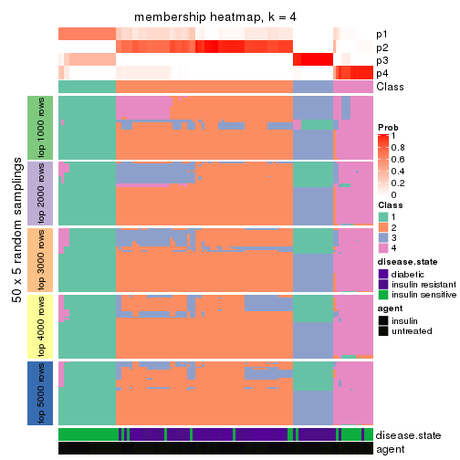
membership_heatmap(res, k = 5)
membership_heatmap(res, k = 6)
As soon as we have had the classes for columns, we can look for signatures which are significantly different between classes which can be candidate marks for certain classes. Following are the heatmaps for signatures.
Signature heatmaps where rows are scaled:
get_signatures(res, k = 2)
get_signatures(res, k = 3)
get_signatures(res, k = 4)
get_signatures(res, k = 5)
get_signatures(res, k = 6)
Signature heatmaps where rows are not scaled:
get_signatures(res, k = 2, scale_rows = FALSE)
get_signatures(res, k = 3, scale_rows = FALSE)
get_signatures(res, k = 4, scale_rows = FALSE)
get_signatures(res, k = 5, scale_rows = FALSE)
get_signatures(res, k = 6, scale_rows = FALSE)
Compare the overlap of signatures from different k:
compare_signatures(res)
get_signature() returns a data frame invisibly. TO get the list of signatures, the function
call should be assigned to a variable explicitly. In following code, if plot argument is set
to FALSE, no heatmap is plotted while only the differential analysis is performed.
# code only for demonstration
tb = get_signature(res, k = ..., plot = FALSE)
An example of the output of tb is:
#> which_row fdr mean_1 mean_2 scaled_mean_1 scaled_mean_2 km
#> 1 38 0.042760348 8.373488 9.131774 -0.5533452 0.5164555 1
#> 2 40 0.018707592 7.106213 8.469186 -0.6173731 0.5762149 1
#> 3 55 0.019134737 10.221463 11.207825 -0.6159697 0.5749050 1
#> 4 59 0.006059896 5.921854 7.869574 -0.6899429 0.6439467 1
#> 5 60 0.018055526 8.928898 10.211722 -0.6204761 0.5791110 1
#> 6 98 0.009384629 15.714769 14.887706 0.6635654 -0.6193277 2
...
The columns in tb are:
which_row: row indices corresponding to the input matrix.fdr: FDR for the differential test. mean_x: The mean value in group x.scaled_mean_x: The mean value in group x after rows are scaled.km: Row groups if k-means clustering is applied to rows.UMAP plot which shows how samples are separated.
dimension_reduction(res, k = 2, method = "UMAP")
dimension_reduction(res, k = 3, method = "UMAP")
dimension_reduction(res, k = 4, method = "UMAP")
dimension_reduction(res, k = 5, method = "UMAP")
dimension_reduction(res, k = 6, method = "UMAP")
Following heatmap shows how subgroups are split when increasing k:
collect_classes(res)
Test correlation between subgroups and known annotations. If the known annotation is numeric, one-way ANOVA test is applied, and if the known annotation is discrete, chi-squared contingency table test is applied.
test_to_known_factors(res)
#> n disease.state(p) agent(p) k
#> CV:kmeans 110 6.23e-07 0.8429 2
#> CV:kmeans 102 3.44e-07 0.3631 3
#> CV:kmeans 108 3.95e-15 0.5145 4
#> CV:kmeans 104 1.83e-17 0.0653 5
#> CV:kmeans 76 6.58e-12 0.0119 6
If matrix rows can be associated to genes, consider to use GO_Enrichment(res,
...) to perform function enrichment for the signature genes.
The object with results only for a single top-value method and a single partition method can be extracted as:
res = res_list["CV", "skmeans"]
# you can also extract it by
# res = res_list["CV:skmeans"]
A summary of res and all the functions that can be applied to it:
res
#> A 'ConsensusPartition' object with k = 2, 3, 4, 5, 6.
#> On a matrix with 11994 rows and 110 columns.
#> Top rows (1000, 2000, 3000, 4000, 5000) are extracted by 'CV' method.
#> Subgroups are detected by 'skmeans' method.
#> Performed in total 1250 partitions by row resampling.
#> Best k for subgroups seems to be 3.
#>
#> Following methods can be applied to this 'ConsensusPartition' object:
#> [1] "cola_report" "collect_classes" "collect_plots"
#> [4] "collect_stats" "colnames" "compare_signatures"
#> [7] "consensus_heatmap" "dimension_reduction" "functional_enrichment"
#> [10] "get_anno_col" "get_anno" "get_classes"
#> [13] "get_consensus" "get_matrix" "get_membership"
#> [16] "get_param" "get_signatures" "get_stats"
#> [19] "is_best_k" "is_stable_k" "membership_heatmap"
#> [22] "ncol" "nrow" "plot_ecdf"
#> [25] "rownames" "select_partition_number" "show"
#> [28] "suggest_best_k" "test_to_known_factors"
collect_plots() function collects all the plots made from res for all k (number of partitions)
into one single page to provide an easy and fast comparison between different k.
collect_plots(res)
The plots are:
k and the heatmap of
predicted classes for each k.k.k.k.All the plots in panels can be made by individual functions and they are plotted later in this section.
select_partition_number() produces several plots showing different
statistics for choosing “optimized” k. There are following statistics:
k;k, the area increased is defined as \(A_k - A_{k-1}\).The detailed explanations of these statistics can be found in the cola vignette.
Generally speaking, lower PAC score, higher mean silhouette score or higher
concordance corresponds to better partition. Rand index and Jaccard index
measure how similar the current partition is compared to partition with k-1.
If they are too similar, we won't accept k is better than k-1.
select_partition_number(res)
The numeric values for all these statistics can be obtained by get_stats().
get_stats(res)
#> k 1-PAC mean_silhouette concordance area_increased Rand Jaccard
#> 2 2 1.000 0.987 0.995 0.4833 0.519 0.519
#> 3 3 0.922 0.950 0.962 0.1804 0.894 0.799
#> 4 4 0.754 0.874 0.899 0.1420 0.949 0.881
#> 5 5 0.735 0.747 0.868 0.1646 0.835 0.577
#> 6 6 0.723 0.661 0.809 0.0449 0.989 0.952
suggest_best_k() suggests the best \(k\) based on these statistics. The rules are as follows:
NA.suggest_best_k(res)
#> [1] 3
#> attr(,"optional")
#> [1] 2
There is also optional best \(k\) = 2 that is worth to check.
Following shows the table of the partitions (You need to click the show/hide
code output link to see it). The membership matrix (columns with name p*)
is inferred by
clue::cl_consensus()
function with the SE method. Basically the value in the membership matrix
represents the probability to belong to a certain group. The finall class
label for an item is determined with the group with highest probability it
belongs to.
In get_classes() function, the entropy is calculated from the membership
matrix and the silhouette score is calculated from the consensus matrix.
cbind(get_classes(res, k = 2), get_membership(res, k = 2))
#> class entropy silhouette p1 p2
#> GSM555237 1 0.000 1.000 1.000 0.000
#> GSM555239 1 0.000 1.000 1.000 0.000
#> GSM555241 1 0.000 1.000 1.000 0.000
#> GSM555243 1 0.000 1.000 1.000 0.000
#> GSM555245 1 0.000 1.000 1.000 0.000
#> GSM555247 1 0.000 1.000 1.000 0.000
#> GSM555249 1 0.000 1.000 1.000 0.000
#> GSM555251 1 0.000 1.000 1.000 0.000
#> GSM555253 1 0.000 1.000 1.000 0.000
#> GSM555255 1 0.000 1.000 1.000 0.000
#> GSM555257 1 0.000 1.000 1.000 0.000
#> GSM555259 1 0.000 1.000 1.000 0.000
#> GSM555261 1 0.000 1.000 1.000 0.000
#> GSM555263 2 0.634 0.807 0.160 0.840
#> GSM555265 1 0.000 1.000 1.000 0.000
#> GSM555267 1 0.000 1.000 1.000 0.000
#> GSM555269 1 0.000 1.000 1.000 0.000
#> GSM555271 1 0.000 1.000 1.000 0.000
#> GSM555273 2 0.000 0.991 0.000 1.000
#> GSM555275 2 0.000 0.991 0.000 1.000
#> GSM555238 1 0.000 1.000 1.000 0.000
#> GSM555240 1 0.000 1.000 1.000 0.000
#> GSM555242 1 0.000 1.000 1.000 0.000
#> GSM555244 1 0.000 1.000 1.000 0.000
#> GSM555246 1 0.000 1.000 1.000 0.000
#> GSM555248 1 0.000 1.000 1.000 0.000
#> GSM555250 1 0.000 1.000 1.000 0.000
#> GSM555252 1 0.000 1.000 1.000 0.000
#> GSM555254 1 0.000 1.000 1.000 0.000
#> GSM555256 1 0.000 1.000 1.000 0.000
#> GSM555258 2 0.975 0.313 0.408 0.592
#> GSM555260 2 0.000 0.991 0.000 1.000
#> GSM555262 2 0.000 0.991 0.000 1.000
#> GSM555264 1 0.000 1.000 1.000 0.000
#> GSM555266 2 0.000 0.991 0.000 1.000
#> GSM555268 2 0.000 0.991 0.000 1.000
#> GSM555270 2 0.000 0.991 0.000 1.000
#> GSM555272 2 0.000 0.991 0.000 1.000
#> GSM555274 2 0.000 0.991 0.000 1.000
#> GSM555276 2 0.000 0.991 0.000 1.000
#> GSM555277 2 0.000 0.991 0.000 1.000
#> GSM555279 2 0.000 0.991 0.000 1.000
#> GSM555281 2 0.000 0.991 0.000 1.000
#> GSM555283 2 0.000 0.991 0.000 1.000
#> GSM555285 2 0.000 0.991 0.000 1.000
#> GSM555287 1 0.000 1.000 1.000 0.000
#> GSM555289 2 0.000 0.991 0.000 1.000
#> GSM555291 2 0.000 0.991 0.000 1.000
#> GSM555293 2 0.000 0.991 0.000 1.000
#> GSM555295 2 0.000 0.991 0.000 1.000
#> GSM555297 1 0.000 1.000 1.000 0.000
#> GSM555299 1 0.000 1.000 1.000 0.000
#> GSM555301 1 0.000 1.000 1.000 0.000
#> GSM555303 1 0.000 1.000 1.000 0.000
#> GSM555305 1 0.000 1.000 1.000 0.000
#> GSM555307 2 0.000 0.991 0.000 1.000
#> GSM555309 1 0.000 1.000 1.000 0.000
#> GSM555311 2 0.000 0.991 0.000 1.000
#> GSM555313 2 0.000 0.991 0.000 1.000
#> GSM555315 2 0.000 0.991 0.000 1.000
#> GSM555278 2 0.000 0.991 0.000 1.000
#> GSM555280 2 0.000 0.991 0.000 1.000
#> GSM555282 2 0.000 0.991 0.000 1.000
#> GSM555284 2 0.000 0.991 0.000 1.000
#> GSM555286 2 0.000 0.991 0.000 1.000
#> GSM555288 2 0.000 0.991 0.000 1.000
#> GSM555290 2 0.000 0.991 0.000 1.000
#> GSM555292 2 0.000 0.991 0.000 1.000
#> GSM555294 2 0.000 0.991 0.000 1.000
#> GSM555296 2 0.000 0.991 0.000 1.000
#> GSM555298 1 0.000 1.000 1.000 0.000
#> GSM555300 1 0.000 1.000 1.000 0.000
#> GSM555302 1 0.000 1.000 1.000 0.000
#> GSM555304 1 0.000 1.000 1.000 0.000
#> GSM555306 1 0.000 1.000 1.000 0.000
#> GSM555308 1 0.000 1.000 1.000 0.000
#> GSM555310 1 0.000 1.000 1.000 0.000
#> GSM555312 2 0.000 0.991 0.000 1.000
#> GSM555314 2 0.000 0.991 0.000 1.000
#> GSM555316 2 0.000 0.991 0.000 1.000
#> GSM555317 2 0.000 0.991 0.000 1.000
#> GSM555319 2 0.000 0.991 0.000 1.000
#> GSM555321 2 0.000 0.991 0.000 1.000
#> GSM555323 2 0.000 0.991 0.000 1.000
#> GSM555325 2 0.000 0.991 0.000 1.000
#> GSM555327 2 0.000 0.991 0.000 1.000
#> GSM555329 2 0.000 0.991 0.000 1.000
#> GSM555331 2 0.000 0.991 0.000 1.000
#> GSM555333 2 0.000 0.991 0.000 1.000
#> GSM555335 2 0.000 0.991 0.000 1.000
#> GSM555337 2 0.000 0.991 0.000 1.000
#> GSM555339 2 0.000 0.991 0.000 1.000
#> GSM555341 2 0.000 0.991 0.000 1.000
#> GSM555343 2 0.000 0.991 0.000 1.000
#> GSM555345 2 0.000 0.991 0.000 1.000
#> GSM555318 2 0.000 0.991 0.000 1.000
#> GSM555320 2 0.000 0.991 0.000 1.000
#> GSM555322 2 0.000 0.991 0.000 1.000
#> GSM555324 1 0.000 1.000 1.000 0.000
#> GSM555326 2 0.000 0.991 0.000 1.000
#> GSM555328 2 0.000 0.991 0.000 1.000
#> GSM555330 2 0.000 0.991 0.000 1.000
#> GSM555332 2 0.000 0.991 0.000 1.000
#> GSM555334 2 0.000 0.991 0.000 1.000
#> GSM555336 2 0.000 0.991 0.000 1.000
#> GSM555338 2 0.000 0.991 0.000 1.000
#> GSM555340 2 0.000 0.991 0.000 1.000
#> GSM555342 2 0.000 0.991 0.000 1.000
#> GSM555344 2 0.000 0.991 0.000 1.000
#> GSM555346 2 0.000 0.991 0.000 1.000
cbind(get_classes(res, k = 3), get_membership(res, k = 3))
#> class entropy silhouette p1 p2 p3
#> GSM555237 1 0.0000 0.971 1.000 0.000 0.000
#> GSM555239 1 0.0000 0.971 1.000 0.000 0.000
#> GSM555241 1 0.0000 0.971 1.000 0.000 0.000
#> GSM555243 1 0.0000 0.971 1.000 0.000 0.000
#> GSM555245 1 0.0000 0.971 1.000 0.000 0.000
#> GSM555247 1 0.0000 0.971 1.000 0.000 0.000
#> GSM555249 1 0.0000 0.971 1.000 0.000 0.000
#> GSM555251 1 0.0000 0.971 1.000 0.000 0.000
#> GSM555253 1 0.0000 0.971 1.000 0.000 0.000
#> GSM555255 1 0.0000 0.971 1.000 0.000 0.000
#> GSM555257 3 0.5859 0.363 0.344 0.000 0.656
#> GSM555259 3 0.0237 0.834 0.004 0.000 0.996
#> GSM555261 3 0.0000 0.832 0.000 0.000 1.000
#> GSM555263 3 0.0892 0.820 0.000 0.020 0.980
#> GSM555265 3 0.0000 0.832 0.000 0.000 1.000
#> GSM555267 3 0.0000 0.832 0.000 0.000 1.000
#> GSM555269 3 0.0237 0.834 0.004 0.000 0.996
#> GSM555271 3 0.3412 0.887 0.124 0.000 0.876
#> GSM555273 2 0.0000 0.995 0.000 1.000 0.000
#> GSM555275 2 0.0000 0.995 0.000 1.000 0.000
#> GSM555238 1 0.0000 0.971 1.000 0.000 0.000
#> GSM555240 1 0.0000 0.971 1.000 0.000 0.000
#> GSM555242 1 0.0000 0.971 1.000 0.000 0.000
#> GSM555244 1 0.0000 0.971 1.000 0.000 0.000
#> GSM555246 1 0.0000 0.971 1.000 0.000 0.000
#> GSM555248 1 0.0000 0.971 1.000 0.000 0.000
#> GSM555250 1 0.0000 0.971 1.000 0.000 0.000
#> GSM555252 1 0.0000 0.971 1.000 0.000 0.000
#> GSM555254 1 0.0000 0.971 1.000 0.000 0.000
#> GSM555256 1 0.0000 0.971 1.000 0.000 0.000
#> GSM555258 1 0.7091 0.615 0.676 0.056 0.268
#> GSM555260 2 0.3267 0.881 0.000 0.884 0.116
#> GSM555262 2 0.0000 0.995 0.000 1.000 0.000
#> GSM555264 1 0.5254 0.687 0.736 0.000 0.264
#> GSM555266 2 0.0000 0.995 0.000 1.000 0.000
#> GSM555268 2 0.0000 0.995 0.000 1.000 0.000
#> GSM555270 2 0.0000 0.995 0.000 1.000 0.000
#> GSM555272 2 0.4399 0.795 0.000 0.812 0.188
#> GSM555274 2 0.0000 0.995 0.000 1.000 0.000
#> GSM555276 2 0.0000 0.995 0.000 1.000 0.000
#> GSM555277 2 0.0000 0.995 0.000 1.000 0.000
#> GSM555279 2 0.0000 0.995 0.000 1.000 0.000
#> GSM555281 2 0.0000 0.995 0.000 1.000 0.000
#> GSM555283 2 0.0000 0.995 0.000 1.000 0.000
#> GSM555285 2 0.0000 0.995 0.000 1.000 0.000
#> GSM555287 3 0.5882 0.673 0.348 0.000 0.652
#> GSM555289 2 0.0000 0.995 0.000 1.000 0.000
#> GSM555291 2 0.0000 0.995 0.000 1.000 0.000
#> GSM555293 2 0.0000 0.995 0.000 1.000 0.000
#> GSM555295 2 0.0000 0.995 0.000 1.000 0.000
#> GSM555297 3 0.2711 0.874 0.088 0.000 0.912
#> GSM555299 3 0.4235 0.902 0.176 0.000 0.824
#> GSM555301 3 0.4235 0.902 0.176 0.000 0.824
#> GSM555303 3 0.4235 0.902 0.176 0.000 0.824
#> GSM555305 3 0.4235 0.902 0.176 0.000 0.824
#> GSM555307 2 0.0000 0.995 0.000 1.000 0.000
#> GSM555309 3 0.4235 0.902 0.176 0.000 0.824
#> GSM555311 2 0.0000 0.995 0.000 1.000 0.000
#> GSM555313 2 0.0000 0.995 0.000 1.000 0.000
#> GSM555315 2 0.0000 0.995 0.000 1.000 0.000
#> GSM555278 2 0.0000 0.995 0.000 1.000 0.000
#> GSM555280 2 0.0000 0.995 0.000 1.000 0.000
#> GSM555282 2 0.0000 0.995 0.000 1.000 0.000
#> GSM555284 2 0.0000 0.995 0.000 1.000 0.000
#> GSM555286 2 0.0000 0.995 0.000 1.000 0.000
#> GSM555288 2 0.1643 0.955 0.000 0.956 0.044
#> GSM555290 2 0.0000 0.995 0.000 1.000 0.000
#> GSM555292 2 0.0000 0.995 0.000 1.000 0.000
#> GSM555294 2 0.0000 0.995 0.000 1.000 0.000
#> GSM555296 2 0.0000 0.995 0.000 1.000 0.000
#> GSM555298 3 0.4235 0.902 0.176 0.000 0.824
#> GSM555300 3 0.4235 0.902 0.176 0.000 0.824
#> GSM555302 3 0.4235 0.902 0.176 0.000 0.824
#> GSM555304 3 0.4235 0.902 0.176 0.000 0.824
#> GSM555306 3 0.4235 0.902 0.176 0.000 0.824
#> GSM555308 3 0.4235 0.902 0.176 0.000 0.824
#> GSM555310 3 0.4235 0.902 0.176 0.000 0.824
#> GSM555312 2 0.0000 0.995 0.000 1.000 0.000
#> GSM555314 2 0.0000 0.995 0.000 1.000 0.000
#> GSM555316 2 0.0000 0.995 0.000 1.000 0.000
#> GSM555317 2 0.0000 0.995 0.000 1.000 0.000
#> GSM555319 2 0.0000 0.995 0.000 1.000 0.000
#> GSM555321 2 0.0000 0.995 0.000 1.000 0.000
#> GSM555323 2 0.0000 0.995 0.000 1.000 0.000
#> GSM555325 2 0.0000 0.995 0.000 1.000 0.000
#> GSM555327 2 0.0000 0.995 0.000 1.000 0.000
#> GSM555329 2 0.0000 0.995 0.000 1.000 0.000
#> GSM555331 2 0.0000 0.995 0.000 1.000 0.000
#> GSM555333 2 0.0000 0.995 0.000 1.000 0.000
#> GSM555335 2 0.0000 0.995 0.000 1.000 0.000
#> GSM555337 2 0.0000 0.995 0.000 1.000 0.000
#> GSM555339 2 0.0000 0.995 0.000 1.000 0.000
#> GSM555341 2 0.0000 0.995 0.000 1.000 0.000
#> GSM555343 2 0.0000 0.995 0.000 1.000 0.000
#> GSM555345 2 0.0000 0.995 0.000 1.000 0.000
#> GSM555318 2 0.0000 0.995 0.000 1.000 0.000
#> GSM555320 2 0.0000 0.995 0.000 1.000 0.000
#> GSM555322 2 0.0000 0.995 0.000 1.000 0.000
#> GSM555324 3 0.4235 0.902 0.176 0.000 0.824
#> GSM555326 2 0.0000 0.995 0.000 1.000 0.000
#> GSM555328 2 0.0000 0.995 0.000 1.000 0.000
#> GSM555330 2 0.0000 0.995 0.000 1.000 0.000
#> GSM555332 2 0.0000 0.995 0.000 1.000 0.000
#> GSM555334 2 0.0000 0.995 0.000 1.000 0.000
#> GSM555336 2 0.0000 0.995 0.000 1.000 0.000
#> GSM555338 2 0.0000 0.995 0.000 1.000 0.000
#> GSM555340 2 0.0000 0.995 0.000 1.000 0.000
#> GSM555342 2 0.0000 0.995 0.000 1.000 0.000
#> GSM555344 2 0.0000 0.995 0.000 1.000 0.000
#> GSM555346 2 0.0000 0.995 0.000 1.000 0.000
cbind(get_classes(res, k = 4), get_membership(res, k = 4))
#> class entropy silhouette p1 p2 p3 p4
#> GSM555237 1 0.0000 1.000 1.000 0.000 0.000 0.000
#> GSM555239 1 0.0000 1.000 1.000 0.000 0.000 0.000
#> GSM555241 1 0.0000 1.000 1.000 0.000 0.000 0.000
#> GSM555243 1 0.0000 1.000 1.000 0.000 0.000 0.000
#> GSM555245 1 0.0000 1.000 1.000 0.000 0.000 0.000
#> GSM555247 1 0.0000 1.000 1.000 0.000 0.000 0.000
#> GSM555249 1 0.0000 1.000 1.000 0.000 0.000 0.000
#> GSM555251 1 0.0000 1.000 1.000 0.000 0.000 0.000
#> GSM555253 1 0.0000 1.000 1.000 0.000 0.000 0.000
#> GSM555255 1 0.0000 1.000 1.000 0.000 0.000 0.000
#> GSM555257 4 0.5944 0.608 0.104 0.000 0.212 0.684
#> GSM555259 3 0.2704 0.844 0.000 0.000 0.876 0.124
#> GSM555261 4 0.4643 0.440 0.000 0.000 0.344 0.656
#> GSM555263 4 0.5772 0.609 0.000 0.116 0.176 0.708
#> GSM555265 3 0.2760 0.839 0.000 0.000 0.872 0.128
#> GSM555267 3 0.2647 0.848 0.000 0.000 0.880 0.120
#> GSM555269 3 0.1474 0.910 0.000 0.000 0.948 0.052
#> GSM555271 3 0.0469 0.949 0.012 0.000 0.988 0.000
#> GSM555273 2 0.3311 0.713 0.000 0.828 0.000 0.172
#> GSM555275 2 0.1211 0.862 0.000 0.960 0.000 0.040
#> GSM555238 1 0.0000 1.000 1.000 0.000 0.000 0.000
#> GSM555240 1 0.0000 1.000 1.000 0.000 0.000 0.000
#> GSM555242 1 0.0000 1.000 1.000 0.000 0.000 0.000
#> GSM555244 1 0.0000 1.000 1.000 0.000 0.000 0.000
#> GSM555246 1 0.0000 1.000 1.000 0.000 0.000 0.000
#> GSM555248 1 0.0000 1.000 1.000 0.000 0.000 0.000
#> GSM555250 1 0.0000 1.000 1.000 0.000 0.000 0.000
#> GSM555252 1 0.0000 1.000 1.000 0.000 0.000 0.000
#> GSM555254 1 0.0000 1.000 1.000 0.000 0.000 0.000
#> GSM555256 1 0.0000 1.000 1.000 0.000 0.000 0.000
#> GSM555258 4 0.4297 0.695 0.096 0.000 0.084 0.820
#> GSM555260 4 0.2125 0.646 0.000 0.076 0.004 0.920
#> GSM555262 2 0.4222 0.830 0.000 0.728 0.000 0.272
#> GSM555264 4 0.5696 0.579 0.232 0.000 0.076 0.692
#> GSM555266 2 0.3486 0.857 0.000 0.812 0.000 0.188
#> GSM555268 2 0.3873 0.858 0.000 0.772 0.000 0.228
#> GSM555270 2 0.3837 0.858 0.000 0.776 0.000 0.224
#> GSM555272 4 0.0707 0.685 0.000 0.000 0.020 0.980
#> GSM555274 2 0.3975 0.851 0.000 0.760 0.000 0.240
#> GSM555276 2 0.3801 0.859 0.000 0.780 0.000 0.220
#> GSM555277 2 0.2149 0.872 0.000 0.912 0.000 0.088
#> GSM555279 2 0.1211 0.853 0.000 0.960 0.000 0.040
#> GSM555281 2 0.1716 0.873 0.000 0.936 0.000 0.064
#> GSM555283 2 0.2868 0.861 0.000 0.864 0.000 0.136
#> GSM555285 2 0.3172 0.729 0.000 0.840 0.000 0.160
#> GSM555287 3 0.3311 0.755 0.172 0.000 0.828 0.000
#> GSM555289 2 0.2345 0.873 0.000 0.900 0.000 0.100
#> GSM555291 2 0.2589 0.861 0.000 0.884 0.000 0.116
#> GSM555293 2 0.1022 0.856 0.000 0.968 0.000 0.032
#> GSM555295 2 0.0817 0.856 0.000 0.976 0.000 0.024
#> GSM555297 3 0.1398 0.921 0.004 0.000 0.956 0.040
#> GSM555299 3 0.0707 0.955 0.020 0.000 0.980 0.000
#> GSM555301 3 0.0707 0.955 0.020 0.000 0.980 0.000
#> GSM555303 3 0.0707 0.955 0.020 0.000 0.980 0.000
#> GSM555305 3 0.0707 0.955 0.020 0.000 0.980 0.000
#> GSM555307 2 0.2081 0.869 0.000 0.916 0.000 0.084
#> GSM555309 3 0.0707 0.955 0.020 0.000 0.980 0.000
#> GSM555311 2 0.1118 0.854 0.000 0.964 0.000 0.036
#> GSM555313 2 0.3837 0.857 0.000 0.776 0.000 0.224
#> GSM555315 2 0.1118 0.854 0.000 0.964 0.000 0.036
#> GSM555278 2 0.3649 0.857 0.000 0.796 0.000 0.204
#> GSM555280 2 0.3873 0.857 0.000 0.772 0.000 0.228
#> GSM555282 2 0.4250 0.827 0.000 0.724 0.000 0.276
#> GSM555284 2 0.4304 0.827 0.000 0.716 0.000 0.284
#> GSM555286 2 0.3873 0.857 0.000 0.772 0.000 0.228
#> GSM555288 4 0.3975 0.380 0.000 0.240 0.000 0.760
#> GSM555290 2 0.3907 0.856 0.000 0.768 0.000 0.232
#> GSM555292 2 0.4134 0.839 0.000 0.740 0.000 0.260
#> GSM555294 2 0.2973 0.863 0.000 0.856 0.000 0.144
#> GSM555296 2 0.3801 0.859 0.000 0.780 0.000 0.220
#> GSM555298 3 0.0707 0.955 0.020 0.000 0.980 0.000
#> GSM555300 3 0.0707 0.955 0.020 0.000 0.980 0.000
#> GSM555302 3 0.0707 0.955 0.020 0.000 0.980 0.000
#> GSM555304 3 0.0707 0.955 0.020 0.000 0.980 0.000
#> GSM555306 3 0.0707 0.955 0.020 0.000 0.980 0.000
#> GSM555308 3 0.0707 0.955 0.020 0.000 0.980 0.000
#> GSM555310 3 0.0707 0.955 0.020 0.000 0.980 0.000
#> GSM555312 2 0.3837 0.857 0.000 0.776 0.000 0.224
#> GSM555314 2 0.0921 0.858 0.000 0.972 0.000 0.028
#> GSM555316 2 0.3801 0.859 0.000 0.780 0.000 0.220
#> GSM555317 2 0.1637 0.873 0.000 0.940 0.000 0.060
#> GSM555319 2 0.0592 0.862 0.000 0.984 0.000 0.016
#> GSM555321 2 0.0592 0.861 0.000 0.984 0.000 0.016
#> GSM555323 2 0.0817 0.857 0.000 0.976 0.000 0.024
#> GSM555325 2 0.1022 0.856 0.000 0.968 0.000 0.032
#> GSM555327 2 0.1792 0.872 0.000 0.932 0.000 0.068
#> GSM555329 2 0.0592 0.862 0.000 0.984 0.000 0.016
#> GSM555331 2 0.0000 0.865 0.000 1.000 0.000 0.000
#> GSM555333 2 0.0469 0.861 0.000 0.988 0.000 0.012
#> GSM555335 2 0.0469 0.861 0.000 0.988 0.000 0.012
#> GSM555337 2 0.0592 0.862 0.000 0.984 0.000 0.016
#> GSM555339 2 0.1389 0.868 0.000 0.952 0.000 0.048
#> GSM555341 2 0.1716 0.872 0.000 0.936 0.000 0.064
#> GSM555343 2 0.0921 0.857 0.000 0.972 0.000 0.028
#> GSM555345 2 0.1637 0.872 0.000 0.940 0.000 0.060
#> GSM555318 2 0.2345 0.874 0.000 0.900 0.000 0.100
#> GSM555320 2 0.3356 0.858 0.000 0.824 0.000 0.176
#> GSM555322 2 0.3801 0.859 0.000 0.780 0.000 0.220
#> GSM555324 3 0.0707 0.955 0.020 0.000 0.980 0.000
#> GSM555326 2 0.3837 0.858 0.000 0.776 0.000 0.224
#> GSM555328 2 0.3837 0.857 0.000 0.776 0.000 0.224
#> GSM555330 2 0.3801 0.859 0.000 0.780 0.000 0.220
#> GSM555332 2 0.3801 0.859 0.000 0.780 0.000 0.220
#> GSM555334 2 0.3873 0.856 0.000 0.772 0.000 0.228
#> GSM555336 2 0.3266 0.860 0.000 0.832 0.000 0.168
#> GSM555338 2 0.1302 0.872 0.000 0.956 0.000 0.044
#> GSM555340 2 0.0592 0.861 0.000 0.984 0.000 0.016
#> GSM555342 2 0.3266 0.860 0.000 0.832 0.000 0.168
#> GSM555344 2 0.3837 0.857 0.000 0.776 0.000 0.224
#> GSM555346 2 0.2973 0.863 0.000 0.856 0.000 0.144
cbind(get_classes(res, k = 5), get_membership(res, k = 5))
#> class entropy silhouette p1 p2 p3 p4 p5
#> GSM555237 1 0.0000 1.0000 1.000 0.000 0.000 0.000 0.000
#> GSM555239 1 0.0000 1.0000 1.000 0.000 0.000 0.000 0.000
#> GSM555241 1 0.0000 1.0000 1.000 0.000 0.000 0.000 0.000
#> GSM555243 1 0.0000 1.0000 1.000 0.000 0.000 0.000 0.000
#> GSM555245 1 0.0000 1.0000 1.000 0.000 0.000 0.000 0.000
#> GSM555247 1 0.0000 1.0000 1.000 0.000 0.000 0.000 0.000
#> GSM555249 1 0.0000 1.0000 1.000 0.000 0.000 0.000 0.000
#> GSM555251 1 0.0000 1.0000 1.000 0.000 0.000 0.000 0.000
#> GSM555253 1 0.0000 1.0000 1.000 0.000 0.000 0.000 0.000
#> GSM555255 1 0.0000 1.0000 1.000 0.000 0.000 0.000 0.000
#> GSM555257 4 0.1549 0.8906 0.016 0.000 0.040 0.944 0.000
#> GSM555259 3 0.4615 0.6620 0.000 0.000 0.700 0.252 0.048
#> GSM555261 4 0.3578 0.7784 0.000 0.000 0.132 0.820 0.048
#> GSM555263 4 0.2358 0.8545 0.000 0.000 0.008 0.888 0.104
#> GSM555265 3 0.4689 0.6436 0.000 0.000 0.688 0.264 0.048
#> GSM555267 3 0.4589 0.6686 0.000 0.000 0.704 0.248 0.048
#> GSM555269 3 0.3485 0.8105 0.000 0.000 0.828 0.124 0.048
#> GSM555271 3 0.0000 0.9247 0.000 0.000 1.000 0.000 0.000
#> GSM555273 5 0.2012 0.7592 0.000 0.060 0.000 0.020 0.920
#> GSM555275 5 0.3838 0.6631 0.000 0.280 0.000 0.004 0.716
#> GSM555238 1 0.0000 1.0000 1.000 0.000 0.000 0.000 0.000
#> GSM555240 1 0.0000 1.0000 1.000 0.000 0.000 0.000 0.000
#> GSM555242 1 0.0000 1.0000 1.000 0.000 0.000 0.000 0.000
#> GSM555244 1 0.0000 1.0000 1.000 0.000 0.000 0.000 0.000
#> GSM555246 1 0.0000 1.0000 1.000 0.000 0.000 0.000 0.000
#> GSM555248 1 0.0000 1.0000 1.000 0.000 0.000 0.000 0.000
#> GSM555250 1 0.0000 1.0000 1.000 0.000 0.000 0.000 0.000
#> GSM555252 1 0.0000 1.0000 1.000 0.000 0.000 0.000 0.000
#> GSM555254 1 0.0000 1.0000 1.000 0.000 0.000 0.000 0.000
#> GSM555256 1 0.0000 1.0000 1.000 0.000 0.000 0.000 0.000
#> GSM555258 4 0.0955 0.8973 0.004 0.000 0.000 0.968 0.028
#> GSM555260 4 0.3412 0.7700 0.000 0.152 0.000 0.820 0.028
#> GSM555262 2 0.1872 0.7334 0.000 0.928 0.000 0.020 0.052
#> GSM555264 4 0.2302 0.8849 0.048 0.000 0.016 0.916 0.020
#> GSM555266 2 0.4297 -0.1730 0.000 0.528 0.000 0.000 0.472
#> GSM555268 2 0.2074 0.7159 0.000 0.896 0.000 0.000 0.104
#> GSM555270 2 0.1544 0.7510 0.000 0.932 0.000 0.000 0.068
#> GSM555272 4 0.0955 0.8968 0.000 0.004 0.000 0.968 0.028
#> GSM555274 2 0.1282 0.7580 0.000 0.952 0.000 0.004 0.044
#> GSM555276 2 0.0703 0.7634 0.000 0.976 0.000 0.000 0.024
#> GSM555277 2 0.3635 0.5506 0.000 0.748 0.000 0.004 0.248
#> GSM555279 5 0.2439 0.7726 0.000 0.120 0.000 0.004 0.876
#> GSM555281 5 0.4448 0.1394 0.000 0.480 0.000 0.004 0.516
#> GSM555283 2 0.4400 0.5070 0.000 0.672 0.000 0.020 0.308
#> GSM555285 5 0.1914 0.7607 0.000 0.060 0.000 0.016 0.924
#> GSM555287 3 0.3086 0.7216 0.180 0.000 0.816 0.000 0.004
#> GSM555289 2 0.3550 0.5664 0.000 0.760 0.000 0.004 0.236
#> GSM555291 2 0.4313 0.4241 0.000 0.636 0.000 0.008 0.356
#> GSM555293 5 0.2127 0.7909 0.000 0.108 0.000 0.000 0.892
#> GSM555295 5 0.3013 0.7767 0.000 0.160 0.000 0.008 0.832
#> GSM555297 3 0.2236 0.8707 0.000 0.000 0.908 0.068 0.024
#> GSM555299 3 0.0000 0.9247 0.000 0.000 1.000 0.000 0.000
#> GSM555301 3 0.0000 0.9247 0.000 0.000 1.000 0.000 0.000
#> GSM555303 3 0.0000 0.9247 0.000 0.000 1.000 0.000 0.000
#> GSM555305 3 0.0000 0.9247 0.000 0.000 1.000 0.000 0.000
#> GSM555307 2 0.4101 0.4346 0.000 0.664 0.000 0.004 0.332
#> GSM555309 3 0.0000 0.9247 0.000 0.000 1.000 0.000 0.000
#> GSM555311 5 0.2179 0.7891 0.000 0.100 0.000 0.004 0.896
#> GSM555313 2 0.0404 0.7630 0.000 0.988 0.000 0.000 0.012
#> GSM555315 5 0.2020 0.7889 0.000 0.100 0.000 0.000 0.900
#> GSM555278 2 0.4227 0.0551 0.000 0.580 0.000 0.000 0.420
#> GSM555280 2 0.0794 0.7595 0.000 0.972 0.000 0.000 0.028
#> GSM555282 2 0.1485 0.7339 0.000 0.948 0.000 0.020 0.032
#> GSM555284 2 0.3760 0.6059 0.000 0.784 0.000 0.028 0.188
#> GSM555286 2 0.1478 0.7503 0.000 0.936 0.000 0.000 0.064
#> GSM555288 2 0.5272 0.0741 0.000 0.552 0.000 0.396 0.052
#> GSM555290 2 0.0794 0.7594 0.000 0.972 0.000 0.000 0.028
#> GSM555292 2 0.1282 0.7490 0.000 0.952 0.000 0.004 0.044
#> GSM555294 5 0.3895 0.5773 0.000 0.320 0.000 0.000 0.680
#> GSM555296 2 0.0703 0.7634 0.000 0.976 0.000 0.000 0.024
#> GSM555298 3 0.0000 0.9247 0.000 0.000 1.000 0.000 0.000
#> GSM555300 3 0.0000 0.9247 0.000 0.000 1.000 0.000 0.000
#> GSM555302 3 0.0000 0.9247 0.000 0.000 1.000 0.000 0.000
#> GSM555304 3 0.0000 0.9247 0.000 0.000 1.000 0.000 0.000
#> GSM555306 3 0.0000 0.9247 0.000 0.000 1.000 0.000 0.000
#> GSM555308 3 0.0000 0.9247 0.000 0.000 1.000 0.000 0.000
#> GSM555310 3 0.0000 0.9247 0.000 0.000 1.000 0.000 0.000
#> GSM555312 2 0.0510 0.7636 0.000 0.984 0.000 0.000 0.016
#> GSM555314 5 0.3491 0.7315 0.000 0.228 0.000 0.004 0.768
#> GSM555316 2 0.0880 0.7628 0.000 0.968 0.000 0.000 0.032
#> GSM555317 2 0.4009 0.4604 0.000 0.684 0.000 0.004 0.312
#> GSM555319 5 0.2719 0.7911 0.000 0.144 0.000 0.004 0.852
#> GSM555321 5 0.2329 0.7933 0.000 0.124 0.000 0.000 0.876
#> GSM555323 5 0.3424 0.7329 0.000 0.240 0.000 0.000 0.760
#> GSM555325 5 0.2074 0.7899 0.000 0.104 0.000 0.000 0.896
#> GSM555327 2 0.3906 0.4931 0.000 0.704 0.000 0.004 0.292
#> GSM555329 5 0.2719 0.7911 0.000 0.144 0.000 0.004 0.852
#> GSM555331 5 0.4118 0.6060 0.000 0.336 0.000 0.004 0.660
#> GSM555333 5 0.3790 0.6900 0.000 0.272 0.000 0.004 0.724
#> GSM555335 5 0.3895 0.6334 0.000 0.320 0.000 0.000 0.680
#> GSM555337 5 0.2471 0.7927 0.000 0.136 0.000 0.000 0.864
#> GSM555339 5 0.4307 0.1243 0.000 0.496 0.000 0.000 0.504
#> GSM555341 2 0.4150 0.3059 0.000 0.612 0.000 0.000 0.388
#> GSM555343 5 0.2179 0.7920 0.000 0.112 0.000 0.000 0.888
#> GSM555345 2 0.4150 0.2840 0.000 0.612 0.000 0.000 0.388
#> GSM555318 2 0.3366 0.6031 0.000 0.784 0.000 0.004 0.212
#> GSM555320 5 0.4302 0.2573 0.000 0.480 0.000 0.000 0.520
#> GSM555322 2 0.1341 0.7571 0.000 0.944 0.000 0.000 0.056
#> GSM555324 3 0.0000 0.9247 0.000 0.000 1.000 0.000 0.000
#> GSM555326 2 0.1608 0.7484 0.000 0.928 0.000 0.000 0.072
#> GSM555328 2 0.0290 0.7629 0.000 0.992 0.000 0.000 0.008
#> GSM555330 2 0.0703 0.7634 0.000 0.976 0.000 0.000 0.024
#> GSM555332 2 0.0703 0.7634 0.000 0.976 0.000 0.000 0.024
#> GSM555334 2 0.0404 0.7635 0.000 0.988 0.000 0.000 0.012
#> GSM555336 5 0.4227 0.4188 0.000 0.420 0.000 0.000 0.580
#> GSM555338 2 0.4341 0.2167 0.000 0.592 0.000 0.004 0.404
#> GSM555340 5 0.2583 0.7933 0.000 0.132 0.000 0.004 0.864
#> GSM555342 5 0.4192 0.4519 0.000 0.404 0.000 0.000 0.596
#> GSM555344 2 0.0794 0.7630 0.000 0.972 0.000 0.000 0.028
#> GSM555346 5 0.3913 0.5710 0.000 0.324 0.000 0.000 0.676
cbind(get_classes(res, k = 6), get_membership(res, k = 6))
#> class entropy silhouette p1 p2 p3 p4 p5 p6
#> GSM555237 1 0.0000 1.0000 1.000 0.000 0.000 0.000 0.000 0.000
#> GSM555239 1 0.0000 1.0000 1.000 0.000 0.000 0.000 0.000 0.000
#> GSM555241 1 0.0000 1.0000 1.000 0.000 0.000 0.000 0.000 0.000
#> GSM555243 1 0.0000 1.0000 1.000 0.000 0.000 0.000 0.000 0.000
#> GSM555245 1 0.0000 1.0000 1.000 0.000 0.000 0.000 0.000 0.000
#> GSM555247 1 0.0000 1.0000 1.000 0.000 0.000 0.000 0.000 0.000
#> GSM555249 1 0.0000 1.0000 1.000 0.000 0.000 0.000 0.000 0.000
#> GSM555251 1 0.0000 1.0000 1.000 0.000 0.000 0.000 0.000 0.000
#> GSM555253 1 0.0000 1.0000 1.000 0.000 0.000 0.000 0.000 0.000
#> GSM555255 1 0.0000 1.0000 1.000 0.000 0.000 0.000 0.000 0.000
#> GSM555257 4 0.1138 0.9175 0.004 0.000 0.012 0.960 0.000 0.024
#> GSM555259 6 0.5537 0.7141 0.000 0.000 0.328 0.152 0.000 0.520
#> GSM555261 6 0.4681 0.3889 0.000 0.000 0.044 0.432 0.000 0.524
#> GSM555263 6 0.3838 0.2815 0.000 0.000 0.000 0.448 0.000 0.552
#> GSM555265 6 0.5558 0.7219 0.000 0.000 0.316 0.160 0.000 0.524
#> GSM555267 6 0.5491 0.7044 0.000 0.000 0.332 0.144 0.000 0.524
#> GSM555269 3 0.4473 -0.3811 0.000 0.000 0.492 0.028 0.000 0.480
#> GSM555271 3 0.0000 0.9265 0.000 0.000 1.000 0.000 0.000 0.000
#> GSM555273 5 0.2623 0.6484 0.000 0.016 0.000 0.000 0.852 0.132
#> GSM555275 5 0.5041 0.5115 0.000 0.248 0.000 0.000 0.624 0.128
#> GSM555238 1 0.0000 1.0000 1.000 0.000 0.000 0.000 0.000 0.000
#> GSM555240 1 0.0000 1.0000 1.000 0.000 0.000 0.000 0.000 0.000
#> GSM555242 1 0.0000 1.0000 1.000 0.000 0.000 0.000 0.000 0.000
#> GSM555244 1 0.0000 1.0000 1.000 0.000 0.000 0.000 0.000 0.000
#> GSM555246 1 0.0000 1.0000 1.000 0.000 0.000 0.000 0.000 0.000
#> GSM555248 1 0.0000 1.0000 1.000 0.000 0.000 0.000 0.000 0.000
#> GSM555250 1 0.0000 1.0000 1.000 0.000 0.000 0.000 0.000 0.000
#> GSM555252 1 0.0000 1.0000 1.000 0.000 0.000 0.000 0.000 0.000
#> GSM555254 1 0.0000 1.0000 1.000 0.000 0.000 0.000 0.000 0.000
#> GSM555256 1 0.0000 1.0000 1.000 0.000 0.000 0.000 0.000 0.000
#> GSM555258 4 0.0000 0.9315 0.000 0.000 0.000 1.000 0.000 0.000
#> GSM555260 4 0.1657 0.8456 0.000 0.056 0.000 0.928 0.000 0.016
#> GSM555262 2 0.3268 0.6124 0.000 0.808 0.000 0.008 0.020 0.164
#> GSM555264 4 0.1806 0.9019 0.020 0.000 0.008 0.928 0.000 0.044
#> GSM555266 2 0.4185 -0.1165 0.000 0.496 0.000 0.000 0.492 0.012
#> GSM555268 2 0.3315 0.6290 0.000 0.820 0.000 0.000 0.104 0.076
#> GSM555270 2 0.2679 0.6533 0.000 0.864 0.000 0.000 0.096 0.040
#> GSM555272 4 0.0000 0.9315 0.000 0.000 0.000 1.000 0.000 0.000
#> GSM555274 2 0.2384 0.6527 0.000 0.884 0.000 0.000 0.032 0.084
#> GSM555276 2 0.2568 0.6476 0.000 0.876 0.000 0.000 0.056 0.068
#> GSM555277 2 0.5130 0.3885 0.000 0.612 0.000 0.000 0.252 0.136
#> GSM555279 5 0.3771 0.6225 0.000 0.056 0.000 0.000 0.764 0.180
#> GSM555281 5 0.5903 -0.0358 0.000 0.396 0.000 0.000 0.400 0.204
#> GSM555283 2 0.6055 0.3405 0.000 0.504 0.000 0.012 0.236 0.248
#> GSM555285 5 0.1958 0.6679 0.000 0.004 0.000 0.000 0.896 0.100
#> GSM555287 3 0.3270 0.6816 0.120 0.000 0.820 0.000 0.000 0.060
#> GSM555289 2 0.4592 0.4381 0.000 0.664 0.000 0.000 0.256 0.080
#> GSM555291 2 0.6097 0.2774 0.000 0.472 0.000 0.008 0.276 0.244
#> GSM555293 5 0.1196 0.6880 0.000 0.040 0.000 0.000 0.952 0.008
#> GSM555295 5 0.4328 0.6100 0.000 0.080 0.000 0.000 0.708 0.212
#> GSM555297 3 0.3168 0.6524 0.000 0.000 0.804 0.024 0.000 0.172
#> GSM555299 3 0.0000 0.9265 0.000 0.000 1.000 0.000 0.000 0.000
#> GSM555301 3 0.0000 0.9265 0.000 0.000 1.000 0.000 0.000 0.000
#> GSM555303 3 0.0000 0.9265 0.000 0.000 1.000 0.000 0.000 0.000
#> GSM555305 3 0.0000 0.9265 0.000 0.000 1.000 0.000 0.000 0.000
#> GSM555307 2 0.5786 0.1700 0.000 0.492 0.000 0.000 0.300 0.208
#> GSM555309 3 0.0000 0.9265 0.000 0.000 1.000 0.000 0.000 0.000
#> GSM555311 5 0.2664 0.6565 0.000 0.016 0.000 0.000 0.848 0.136
#> GSM555313 2 0.2624 0.6552 0.000 0.856 0.000 0.000 0.020 0.124
#> GSM555315 5 0.1444 0.6742 0.000 0.000 0.000 0.000 0.928 0.072
#> GSM555278 2 0.5170 0.2457 0.000 0.576 0.000 0.000 0.312 0.112
#> GSM555280 2 0.2436 0.6562 0.000 0.880 0.000 0.000 0.032 0.088
#> GSM555282 2 0.3191 0.6143 0.000 0.812 0.000 0.012 0.012 0.164
#> GSM555284 2 0.4621 0.5389 0.000 0.716 0.000 0.016 0.088 0.180
#> GSM555286 2 0.2442 0.6558 0.000 0.884 0.000 0.000 0.068 0.048
#> GSM555288 2 0.5458 0.3540 0.000 0.588 0.000 0.236 0.004 0.172
#> GSM555290 2 0.2433 0.6600 0.000 0.884 0.000 0.000 0.044 0.072
#> GSM555292 2 0.3268 0.6124 0.000 0.808 0.000 0.008 0.020 0.164
#> GSM555294 5 0.3745 0.5180 0.000 0.240 0.000 0.000 0.732 0.028
#> GSM555296 2 0.2846 0.6453 0.000 0.856 0.000 0.000 0.060 0.084
#> GSM555298 3 0.0000 0.9265 0.000 0.000 1.000 0.000 0.000 0.000
#> GSM555300 3 0.0000 0.9265 0.000 0.000 1.000 0.000 0.000 0.000
#> GSM555302 3 0.0000 0.9265 0.000 0.000 1.000 0.000 0.000 0.000
#> GSM555304 3 0.0000 0.9265 0.000 0.000 1.000 0.000 0.000 0.000
#> GSM555306 3 0.0000 0.9265 0.000 0.000 1.000 0.000 0.000 0.000
#> GSM555308 3 0.0000 0.9265 0.000 0.000 1.000 0.000 0.000 0.000
#> GSM555310 3 0.0000 0.9265 0.000 0.000 1.000 0.000 0.000 0.000
#> GSM555312 2 0.2623 0.6498 0.000 0.852 0.000 0.000 0.016 0.132
#> GSM555314 5 0.5428 0.4903 0.000 0.168 0.000 0.000 0.568 0.264
#> GSM555316 2 0.2629 0.6465 0.000 0.872 0.000 0.000 0.060 0.068
#> GSM555317 2 0.5244 0.2822 0.000 0.552 0.000 0.000 0.336 0.112
#> GSM555319 5 0.2740 0.6731 0.000 0.120 0.000 0.000 0.852 0.028
#> GSM555321 5 0.2214 0.6832 0.000 0.096 0.000 0.000 0.888 0.016
#> GSM555323 5 0.4085 0.5823 0.000 0.192 0.000 0.000 0.736 0.072
#> GSM555325 5 0.1245 0.6813 0.000 0.016 0.000 0.000 0.952 0.032
#> GSM555327 2 0.5209 0.2975 0.000 0.564 0.000 0.000 0.324 0.112
#> GSM555329 5 0.2536 0.6768 0.000 0.116 0.000 0.000 0.864 0.020
#> GSM555331 5 0.5223 0.2819 0.000 0.356 0.000 0.000 0.540 0.104
#> GSM555333 5 0.5269 0.4195 0.000 0.248 0.000 0.000 0.596 0.156
#> GSM555335 5 0.5016 0.3837 0.000 0.312 0.000 0.000 0.592 0.096
#> GSM555337 5 0.2312 0.6775 0.000 0.112 0.000 0.000 0.876 0.012
#> GSM555339 5 0.5411 0.0700 0.000 0.412 0.000 0.000 0.472 0.116
#> GSM555341 2 0.5191 0.1571 0.000 0.508 0.000 0.000 0.400 0.092
#> GSM555343 5 0.1219 0.6887 0.000 0.048 0.000 0.000 0.948 0.004
#> GSM555345 2 0.5521 0.0834 0.000 0.468 0.000 0.000 0.400 0.132
#> GSM555318 2 0.4953 0.4024 0.000 0.624 0.000 0.000 0.268 0.108
#> GSM555320 5 0.3828 0.1968 0.000 0.440 0.000 0.000 0.560 0.000
#> GSM555322 2 0.2020 0.6575 0.000 0.896 0.000 0.000 0.096 0.008
#> GSM555324 3 0.0000 0.9265 0.000 0.000 1.000 0.000 0.000 0.000
#> GSM555326 2 0.2651 0.6479 0.000 0.860 0.000 0.000 0.112 0.028
#> GSM555328 2 0.0777 0.6704 0.000 0.972 0.000 0.000 0.024 0.004
#> GSM555330 2 0.2442 0.6499 0.000 0.884 0.000 0.000 0.048 0.068
#> GSM555332 2 0.2625 0.6465 0.000 0.872 0.000 0.000 0.056 0.072
#> GSM555334 2 0.1745 0.6652 0.000 0.924 0.000 0.000 0.020 0.056
#> GSM555336 5 0.3765 0.2927 0.000 0.404 0.000 0.000 0.596 0.000
#> GSM555338 2 0.5339 0.1126 0.000 0.488 0.000 0.000 0.404 0.108
#> GSM555340 5 0.2558 0.6790 0.000 0.104 0.000 0.000 0.868 0.028
#> GSM555342 5 0.3923 0.3510 0.000 0.372 0.000 0.000 0.620 0.008
#> GSM555344 2 0.2852 0.6415 0.000 0.856 0.000 0.000 0.064 0.080
#> GSM555346 5 0.4050 0.5159 0.000 0.236 0.000 0.000 0.716 0.048
Heatmaps for the consensus matrix. It visualizes the probability of two samples to be in a same group.
consensus_heatmap(res, k = 2)
consensus_heatmap(res, k = 3)
consensus_heatmap(res, k = 4)
consensus_heatmap(res, k = 5)
consensus_heatmap(res, k = 6)
Heatmaps for the membership of samples in all partitions to see how consistent they are:
membership_heatmap(res, k = 2)
membership_heatmap(res, k = 3)
membership_heatmap(res, k = 4)
membership_heatmap(res, k = 5)
membership_heatmap(res, k = 6)
As soon as we have had the classes for columns, we can look for signatures which are significantly different between classes which can be candidate marks for certain classes. Following are the heatmaps for signatures.
Signature heatmaps where rows are scaled:
get_signatures(res, k = 2)
get_signatures(res, k = 3)
get_signatures(res, k = 4)

get_signatures(res, k = 5)
get_signatures(res, k = 6)
Signature heatmaps where rows are not scaled:
get_signatures(res, k = 2, scale_rows = FALSE)
get_signatures(res, k = 3, scale_rows = FALSE)
get_signatures(res, k = 4, scale_rows = FALSE)
get_signatures(res, k = 5, scale_rows = FALSE)
get_signatures(res, k = 6, scale_rows = FALSE)
Compare the overlap of signatures from different k:
compare_signatures(res)
get_signature() returns a data frame invisibly. TO get the list of signatures, the function
call should be assigned to a variable explicitly. In following code, if plot argument is set
to FALSE, no heatmap is plotted while only the differential analysis is performed.
# code only for demonstration
tb = get_signature(res, k = ..., plot = FALSE)
An example of the output of tb is:
#> which_row fdr mean_1 mean_2 scaled_mean_1 scaled_mean_2 km
#> 1 38 0.042760348 8.373488 9.131774 -0.5533452 0.5164555 1
#> 2 40 0.018707592 7.106213 8.469186 -0.6173731 0.5762149 1
#> 3 55 0.019134737 10.221463 11.207825 -0.6159697 0.5749050 1
#> 4 59 0.006059896 5.921854 7.869574 -0.6899429 0.6439467 1
#> 5 60 0.018055526 8.928898 10.211722 -0.6204761 0.5791110 1
#> 6 98 0.009384629 15.714769 14.887706 0.6635654 -0.6193277 2
...
The columns in tb are:
which_row: row indices corresponding to the input matrix.fdr: FDR for the differential test. mean_x: The mean value in group x.scaled_mean_x: The mean value in group x after rows are scaled.km: Row groups if k-means clustering is applied to rows.UMAP plot which shows how samples are separated.
dimension_reduction(res, k = 2, method = "UMAP")
dimension_reduction(res, k = 3, method = "UMAP")
dimension_reduction(res, k = 4, method = "UMAP")
dimension_reduction(res, k = 5, method = "UMAP")
dimension_reduction(res, k = 6, method = "UMAP")
Following heatmap shows how subgroups are split when increasing k:
collect_classes(res)
Test correlation between subgroups and known annotations. If the known annotation is numeric, one-way ANOVA test is applied, and if the known annotation is discrete, chi-squared contingency table test is applied.
test_to_known_factors(res)
#> n disease.state(p) agent(p) k
#> CV:skmeans 109 4.59e-08 4.80e-01 2
#> CV:skmeans 109 7.46e-13 3.34e-01 3
#> CV:skmeans 108 5.13e-14 6.75e-01 4
#> CV:skmeans 95 5.61e-12 1.74e-04 5
#> CV:skmeans 84 2.74e-11 1.18e-05 6
If matrix rows can be associated to genes, consider to use GO_Enrichment(res,
...) to perform function enrichment for the signature genes.
The object with results only for a single top-value method and a single partition method can be extracted as:
res = res_list["CV", "pam"]
# you can also extract it by
# res = res_list["CV:pam"]
A summary of res and all the functions that can be applied to it:
res
#> A 'ConsensusPartition' object with k = 2, 3, 4, 5, 6.
#> On a matrix with 11994 rows and 110 columns.
#> Top rows (1000, 2000, 3000, 4000, 5000) are extracted by 'CV' method.
#> Subgroups are detected by 'pam' method.
#> Performed in total 1250 partitions by row resampling.
#> Best k for subgroups seems to be 3.
#>
#> Following methods can be applied to this 'ConsensusPartition' object:
#> [1] "cola_report" "collect_classes" "collect_plots"
#> [4] "collect_stats" "colnames" "compare_signatures"
#> [7] "consensus_heatmap" "dimension_reduction" "functional_enrichment"
#> [10] "get_anno_col" "get_anno" "get_classes"
#> [13] "get_consensus" "get_matrix" "get_membership"
#> [16] "get_param" "get_signatures" "get_stats"
#> [19] "is_best_k" "is_stable_k" "membership_heatmap"
#> [22] "ncol" "nrow" "plot_ecdf"
#> [25] "rownames" "select_partition_number" "show"
#> [28] "suggest_best_k" "test_to_known_factors"
collect_plots() function collects all the plots made from res for all k (number of partitions)
into one single page to provide an easy and fast comparison between different k.
collect_plots(res)
The plots are:
k and the heatmap of
predicted classes for each k.k.k.k.All the plots in panels can be made by individual functions and they are plotted later in this section.
select_partition_number() produces several plots showing different
statistics for choosing “optimized” k. There are following statistics:
k;k, the area increased is defined as \(A_k - A_{k-1}\).The detailed explanations of these statistics can be found in the cola vignette.
Generally speaking, lower PAC score, higher mean silhouette score or higher
concordance corresponds to better partition. Rand index and Jaccard index
measure how similar the current partition is compared to partition with k-1.
If they are too similar, we won't accept k is better than k-1.
select_partition_number(res)
The numeric values for all these statistics can be obtained by get_stats().
get_stats(res)
#> k 1-PAC mean_silhouette concordance area_increased Rand Jaccard
#> 2 2 1.000 0.984 0.993 0.4579 0.544 0.544
#> 3 3 1.000 0.966 0.986 0.1337 0.942 0.894
#> 4 4 0.822 0.860 0.927 0.3399 0.760 0.525
#> 5 5 0.761 0.821 0.898 0.1097 0.910 0.703
#> 6 6 0.772 0.669 0.817 0.0606 0.903 0.614
suggest_best_k() suggests the best \(k\) based on these statistics. The rules are as follows:
NA.suggest_best_k(res)
#> [1] 3
#> attr(,"optional")
#> [1] 2
There is also optional best \(k\) = 2 that is worth to check.
Following shows the table of the partitions (You need to click the show/hide
code output link to see it). The membership matrix (columns with name p*)
is inferred by
clue::cl_consensus()
function with the SE method. Basically the value in the membership matrix
represents the probability to belong to a certain group. The finall class
label for an item is determined with the group with highest probability it
belongs to.
In get_classes() function, the entropy is calculated from the membership
matrix and the silhouette score is calculated from the consensus matrix.
cbind(get_classes(res, k = 2), get_membership(res, k = 2))
#> class entropy silhouette p1 p2
#> GSM555237 1 0.0000 0.992 1.000 0.000
#> GSM555239 1 0.0000 0.992 1.000 0.000
#> GSM555241 1 0.0000 0.992 1.000 0.000
#> GSM555243 1 0.0000 0.992 1.000 0.000
#> GSM555245 1 0.0000 0.992 1.000 0.000
#> GSM555247 1 0.0000 0.992 1.000 0.000
#> GSM555249 1 0.0000 0.992 1.000 0.000
#> GSM555251 1 0.0000 0.992 1.000 0.000
#> GSM555253 1 0.0000 0.992 1.000 0.000
#> GSM555255 1 0.0000 0.992 1.000 0.000
#> GSM555257 1 0.0000 0.992 1.000 0.000
#> GSM555259 1 0.0672 0.985 0.992 0.008
#> GSM555261 2 0.4939 0.878 0.108 0.892
#> GSM555263 2 0.0000 0.993 0.000 1.000
#> GSM555265 2 0.8555 0.612 0.280 0.720
#> GSM555267 2 0.0000 0.993 0.000 1.000
#> GSM555269 1 0.2603 0.950 0.956 0.044
#> GSM555271 1 0.0000 0.992 1.000 0.000
#> GSM555273 2 0.0000 0.993 0.000 1.000
#> GSM555275 2 0.0000 0.993 0.000 1.000
#> GSM555238 1 0.0000 0.992 1.000 0.000
#> GSM555240 1 0.0000 0.992 1.000 0.000
#> GSM555242 1 0.0000 0.992 1.000 0.000
#> GSM555244 1 0.0000 0.992 1.000 0.000
#> GSM555246 1 0.0000 0.992 1.000 0.000
#> GSM555248 1 0.0000 0.992 1.000 0.000
#> GSM555250 1 0.0000 0.992 1.000 0.000
#> GSM555252 1 0.0000 0.992 1.000 0.000
#> GSM555254 1 0.0000 0.992 1.000 0.000
#> GSM555256 1 0.0000 0.992 1.000 0.000
#> GSM555258 2 0.0000 0.993 0.000 1.000
#> GSM555260 2 0.0000 0.993 0.000 1.000
#> GSM555262 2 0.0000 0.993 0.000 1.000
#> GSM555264 1 0.7815 0.696 0.768 0.232
#> GSM555266 2 0.0000 0.993 0.000 1.000
#> GSM555268 2 0.0000 0.993 0.000 1.000
#> GSM555270 2 0.0000 0.993 0.000 1.000
#> GSM555272 2 0.0000 0.993 0.000 1.000
#> GSM555274 2 0.0000 0.993 0.000 1.000
#> GSM555276 2 0.0000 0.993 0.000 1.000
#> GSM555277 2 0.0000 0.993 0.000 1.000
#> GSM555279 2 0.0000 0.993 0.000 1.000
#> GSM555281 2 0.0000 0.993 0.000 1.000
#> GSM555283 2 0.0000 0.993 0.000 1.000
#> GSM555285 2 0.0000 0.993 0.000 1.000
#> GSM555287 2 0.5059 0.873 0.112 0.888
#> GSM555289 2 0.0000 0.993 0.000 1.000
#> GSM555291 2 0.0000 0.993 0.000 1.000
#> GSM555293 2 0.0000 0.993 0.000 1.000
#> GSM555295 2 0.0000 0.993 0.000 1.000
#> GSM555297 2 0.0000 0.993 0.000 1.000
#> GSM555299 1 0.0000 0.992 1.000 0.000
#> GSM555301 1 0.0000 0.992 1.000 0.000
#> GSM555303 1 0.0000 0.992 1.000 0.000
#> GSM555305 1 0.0000 0.992 1.000 0.000
#> GSM555307 2 0.0000 0.993 0.000 1.000
#> GSM555309 1 0.0000 0.992 1.000 0.000
#> GSM555311 2 0.0000 0.993 0.000 1.000
#> GSM555313 2 0.0000 0.993 0.000 1.000
#> GSM555315 2 0.0000 0.993 0.000 1.000
#> GSM555278 2 0.0000 0.993 0.000 1.000
#> GSM555280 2 0.0000 0.993 0.000 1.000
#> GSM555282 2 0.0000 0.993 0.000 1.000
#> GSM555284 2 0.0000 0.993 0.000 1.000
#> GSM555286 2 0.0000 0.993 0.000 1.000
#> GSM555288 2 0.0000 0.993 0.000 1.000
#> GSM555290 2 0.0000 0.993 0.000 1.000
#> GSM555292 2 0.0000 0.993 0.000 1.000
#> GSM555294 2 0.0000 0.993 0.000 1.000
#> GSM555296 2 0.0000 0.993 0.000 1.000
#> GSM555298 1 0.0672 0.985 0.992 0.008
#> GSM555300 1 0.0000 0.992 1.000 0.000
#> GSM555302 1 0.0000 0.992 1.000 0.000
#> GSM555304 1 0.0000 0.992 1.000 0.000
#> GSM555306 1 0.0000 0.992 1.000 0.000
#> GSM555308 1 0.0000 0.992 1.000 0.000
#> GSM555310 1 0.0000 0.992 1.000 0.000
#> GSM555312 2 0.0000 0.993 0.000 1.000
#> GSM555314 2 0.0000 0.993 0.000 1.000
#> GSM555316 2 0.0000 0.993 0.000 1.000
#> GSM555317 2 0.0000 0.993 0.000 1.000
#> GSM555319 2 0.0000 0.993 0.000 1.000
#> GSM555321 2 0.0000 0.993 0.000 1.000
#> GSM555323 2 0.0000 0.993 0.000 1.000
#> GSM555325 2 0.0000 0.993 0.000 1.000
#> GSM555327 2 0.0000 0.993 0.000 1.000
#> GSM555329 2 0.0000 0.993 0.000 1.000
#> GSM555331 2 0.0000 0.993 0.000 1.000
#> GSM555333 2 0.0000 0.993 0.000 1.000
#> GSM555335 2 0.0000 0.993 0.000 1.000
#> GSM555337 2 0.0000 0.993 0.000 1.000
#> GSM555339 2 0.0000 0.993 0.000 1.000
#> GSM555341 2 0.0000 0.993 0.000 1.000
#> GSM555343 2 0.0000 0.993 0.000 1.000
#> GSM555345 2 0.0000 0.993 0.000 1.000
#> GSM555318 2 0.0000 0.993 0.000 1.000
#> GSM555320 2 0.0000 0.993 0.000 1.000
#> GSM555322 2 0.0000 0.993 0.000 1.000
#> GSM555324 1 0.0000 0.992 1.000 0.000
#> GSM555326 2 0.0000 0.993 0.000 1.000
#> GSM555328 2 0.0000 0.993 0.000 1.000
#> GSM555330 2 0.0000 0.993 0.000 1.000
#> GSM555332 2 0.0000 0.993 0.000 1.000
#> GSM555334 2 0.0000 0.993 0.000 1.000
#> GSM555336 2 0.0000 0.993 0.000 1.000
#> GSM555338 2 0.0000 0.993 0.000 1.000
#> GSM555340 2 0.0000 0.993 0.000 1.000
#> GSM555342 2 0.0000 0.993 0.000 1.000
#> GSM555344 2 0.0000 0.993 0.000 1.000
#> GSM555346 2 0.0000 0.993 0.000 1.000
cbind(get_classes(res, k = 3), get_membership(res, k = 3))
#> class entropy silhouette p1 p2 p3
#> GSM555237 1 0.0000 0.963 1.000 0.000 0.000
#> GSM555239 1 0.0000 0.963 1.000 0.000 0.000
#> GSM555241 1 0.0000 0.963 1.000 0.000 0.000
#> GSM555243 1 0.0000 0.963 1.000 0.000 0.000
#> GSM555245 1 0.0000 0.963 1.000 0.000 0.000
#> GSM555247 1 0.0000 0.963 1.000 0.000 0.000
#> GSM555249 1 0.0000 0.963 1.000 0.000 0.000
#> GSM555251 1 0.0000 0.963 1.000 0.000 0.000
#> GSM555253 1 0.0000 0.963 1.000 0.000 0.000
#> GSM555255 1 0.0000 0.963 1.000 0.000 0.000
#> GSM555257 1 0.4682 0.762 0.804 0.004 0.192
#> GSM555259 1 0.4931 0.735 0.784 0.004 0.212
#> GSM555261 2 0.5098 0.666 0.248 0.752 0.000
#> GSM555263 2 0.0000 0.988 0.000 1.000 0.000
#> GSM555265 2 0.6330 0.329 0.396 0.600 0.004
#> GSM555267 2 0.0000 0.988 0.000 1.000 0.000
#> GSM555269 3 0.0424 0.991 0.008 0.000 0.992
#> GSM555271 3 0.0000 0.999 0.000 0.000 1.000
#> GSM555273 2 0.0000 0.988 0.000 1.000 0.000
#> GSM555275 2 0.0000 0.988 0.000 1.000 0.000
#> GSM555238 1 0.0000 0.963 1.000 0.000 0.000
#> GSM555240 1 0.0000 0.963 1.000 0.000 0.000
#> GSM555242 1 0.0000 0.963 1.000 0.000 0.000
#> GSM555244 1 0.0000 0.963 1.000 0.000 0.000
#> GSM555246 1 0.0000 0.963 1.000 0.000 0.000
#> GSM555248 1 0.0000 0.963 1.000 0.000 0.000
#> GSM555250 1 0.0000 0.963 1.000 0.000 0.000
#> GSM555252 1 0.0000 0.963 1.000 0.000 0.000
#> GSM555254 1 0.0000 0.963 1.000 0.000 0.000
#> GSM555256 1 0.0000 0.963 1.000 0.000 0.000
#> GSM555258 2 0.0000 0.988 0.000 1.000 0.000
#> GSM555260 2 0.0000 0.988 0.000 1.000 0.000
#> GSM555262 2 0.0000 0.988 0.000 1.000 0.000
#> GSM555264 1 0.7065 0.555 0.700 0.228 0.072
#> GSM555266 2 0.0000 0.988 0.000 1.000 0.000
#> GSM555268 2 0.0000 0.988 0.000 1.000 0.000
#> GSM555270 2 0.0000 0.988 0.000 1.000 0.000
#> GSM555272 2 0.0000 0.988 0.000 1.000 0.000
#> GSM555274 2 0.0000 0.988 0.000 1.000 0.000
#> GSM555276 2 0.0000 0.988 0.000 1.000 0.000
#> GSM555277 2 0.0000 0.988 0.000 1.000 0.000
#> GSM555279 2 0.0000 0.988 0.000 1.000 0.000
#> GSM555281 2 0.0000 0.988 0.000 1.000 0.000
#> GSM555283 2 0.0000 0.988 0.000 1.000 0.000
#> GSM555285 2 0.0000 0.988 0.000 1.000 0.000
#> GSM555287 2 0.3816 0.821 0.148 0.852 0.000
#> GSM555289 2 0.0000 0.988 0.000 1.000 0.000
#> GSM555291 2 0.0000 0.988 0.000 1.000 0.000
#> GSM555293 2 0.0000 0.988 0.000 1.000 0.000
#> GSM555295 2 0.0000 0.988 0.000 1.000 0.000
#> GSM555297 2 0.0000 0.988 0.000 1.000 0.000
#> GSM555299 3 0.0000 0.999 0.000 0.000 1.000
#> GSM555301 3 0.0000 0.999 0.000 0.000 1.000
#> GSM555303 3 0.0000 0.999 0.000 0.000 1.000
#> GSM555305 3 0.0000 0.999 0.000 0.000 1.000
#> GSM555307 2 0.0000 0.988 0.000 1.000 0.000
#> GSM555309 3 0.0000 0.999 0.000 0.000 1.000
#> GSM555311 2 0.0000 0.988 0.000 1.000 0.000
#> GSM555313 2 0.0000 0.988 0.000 1.000 0.000
#> GSM555315 2 0.0000 0.988 0.000 1.000 0.000
#> GSM555278 2 0.0000 0.988 0.000 1.000 0.000
#> GSM555280 2 0.0000 0.988 0.000 1.000 0.000
#> GSM555282 2 0.0000 0.988 0.000 1.000 0.000
#> GSM555284 2 0.0000 0.988 0.000 1.000 0.000
#> GSM555286 2 0.0000 0.988 0.000 1.000 0.000
#> GSM555288 2 0.0000 0.988 0.000 1.000 0.000
#> GSM555290 2 0.0000 0.988 0.000 1.000 0.000
#> GSM555292 2 0.0000 0.988 0.000 1.000 0.000
#> GSM555294 2 0.0000 0.988 0.000 1.000 0.000
#> GSM555296 2 0.0000 0.988 0.000 1.000 0.000
#> GSM555298 3 0.0000 0.999 0.000 0.000 1.000
#> GSM555300 3 0.0000 0.999 0.000 0.000 1.000
#> GSM555302 3 0.0000 0.999 0.000 0.000 1.000
#> GSM555304 3 0.0000 0.999 0.000 0.000 1.000
#> GSM555306 3 0.0000 0.999 0.000 0.000 1.000
#> GSM555308 3 0.0000 0.999 0.000 0.000 1.000
#> GSM555310 3 0.0000 0.999 0.000 0.000 1.000
#> GSM555312 2 0.0000 0.988 0.000 1.000 0.000
#> GSM555314 2 0.0000 0.988 0.000 1.000 0.000
#> GSM555316 2 0.0000 0.988 0.000 1.000 0.000
#> GSM555317 2 0.0000 0.988 0.000 1.000 0.000
#> GSM555319 2 0.0000 0.988 0.000 1.000 0.000
#> GSM555321 2 0.0000 0.988 0.000 1.000 0.000
#> GSM555323 2 0.0000 0.988 0.000 1.000 0.000
#> GSM555325 2 0.0000 0.988 0.000 1.000 0.000
#> GSM555327 2 0.0000 0.988 0.000 1.000 0.000
#> GSM555329 2 0.0000 0.988 0.000 1.000 0.000
#> GSM555331 2 0.0000 0.988 0.000 1.000 0.000
#> GSM555333 2 0.0000 0.988 0.000 1.000 0.000
#> GSM555335 2 0.0000 0.988 0.000 1.000 0.000
#> GSM555337 2 0.0000 0.988 0.000 1.000 0.000
#> GSM555339 2 0.0000 0.988 0.000 1.000 0.000
#> GSM555341 2 0.0000 0.988 0.000 1.000 0.000
#> GSM555343 2 0.0000 0.988 0.000 1.000 0.000
#> GSM555345 2 0.0000 0.988 0.000 1.000 0.000
#> GSM555318 2 0.0000 0.988 0.000 1.000 0.000
#> GSM555320 2 0.0000 0.988 0.000 1.000 0.000
#> GSM555322 2 0.0000 0.988 0.000 1.000 0.000
#> GSM555324 3 0.0000 0.999 0.000 0.000 1.000
#> GSM555326 2 0.0000 0.988 0.000 1.000 0.000
#> GSM555328 2 0.0000 0.988 0.000 1.000 0.000
#> GSM555330 2 0.0000 0.988 0.000 1.000 0.000
#> GSM555332 2 0.0000 0.988 0.000 1.000 0.000
#> GSM555334 2 0.0000 0.988 0.000 1.000 0.000
#> GSM555336 2 0.0000 0.988 0.000 1.000 0.000
#> GSM555338 2 0.0000 0.988 0.000 1.000 0.000
#> GSM555340 2 0.0000 0.988 0.000 1.000 0.000
#> GSM555342 2 0.0000 0.988 0.000 1.000 0.000
#> GSM555344 2 0.0000 0.988 0.000 1.000 0.000
#> GSM555346 2 0.0000 0.988 0.000 1.000 0.000
cbind(get_classes(res, k = 4), get_membership(res, k = 4))
#> class entropy silhouette p1 p2 p3 p4
#> GSM555237 1 0.0000 1.0000 1.000 0.000 0.000 0.000
#> GSM555239 1 0.0000 1.0000 1.000 0.000 0.000 0.000
#> GSM555241 1 0.0000 1.0000 1.000 0.000 0.000 0.000
#> GSM555243 1 0.0000 1.0000 1.000 0.000 0.000 0.000
#> GSM555245 1 0.0000 1.0000 1.000 0.000 0.000 0.000
#> GSM555247 1 0.0000 1.0000 1.000 0.000 0.000 0.000
#> GSM555249 1 0.0000 1.0000 1.000 0.000 0.000 0.000
#> GSM555251 1 0.0000 1.0000 1.000 0.000 0.000 0.000
#> GSM555253 1 0.0000 1.0000 1.000 0.000 0.000 0.000
#> GSM555255 1 0.0000 1.0000 1.000 0.000 0.000 0.000
#> GSM555257 4 0.6850 0.2518 0.212 0.000 0.188 0.600
#> GSM555259 4 0.3160 0.6341 0.020 0.000 0.108 0.872
#> GSM555261 4 0.0000 0.7362 0.000 0.000 0.000 1.000
#> GSM555263 4 0.0000 0.7362 0.000 0.000 0.000 1.000
#> GSM555265 4 0.0000 0.7362 0.000 0.000 0.000 1.000
#> GSM555267 4 0.0000 0.7362 0.000 0.000 0.000 1.000
#> GSM555269 4 0.3074 0.5979 0.000 0.000 0.152 0.848
#> GSM555271 3 0.0000 1.0000 0.000 0.000 1.000 0.000
#> GSM555273 4 0.4382 0.7127 0.000 0.296 0.000 0.704
#> GSM555275 4 0.4382 0.7127 0.000 0.296 0.000 0.704
#> GSM555238 1 0.0000 1.0000 1.000 0.000 0.000 0.000
#> GSM555240 1 0.0000 1.0000 1.000 0.000 0.000 0.000
#> GSM555242 1 0.0000 1.0000 1.000 0.000 0.000 0.000
#> GSM555244 1 0.0000 1.0000 1.000 0.000 0.000 0.000
#> GSM555246 1 0.0000 1.0000 1.000 0.000 0.000 0.000
#> GSM555248 1 0.0000 1.0000 1.000 0.000 0.000 0.000
#> GSM555250 1 0.0000 1.0000 1.000 0.000 0.000 0.000
#> GSM555252 1 0.0000 1.0000 1.000 0.000 0.000 0.000
#> GSM555254 1 0.0000 1.0000 1.000 0.000 0.000 0.000
#> GSM555256 1 0.0000 1.0000 1.000 0.000 0.000 0.000
#> GSM555258 4 0.0000 0.7362 0.000 0.000 0.000 1.000
#> GSM555260 4 0.4916 0.5098 0.000 0.424 0.000 0.576
#> GSM555262 4 0.4961 0.4685 0.000 0.448 0.000 0.552
#> GSM555264 4 0.0921 0.7198 0.028 0.000 0.000 0.972
#> GSM555266 2 0.1118 0.9289 0.000 0.964 0.000 0.036
#> GSM555268 2 0.0707 0.9393 0.000 0.980 0.000 0.020
#> GSM555270 2 0.0000 0.9478 0.000 1.000 0.000 0.000
#> GSM555272 4 0.0000 0.7362 0.000 0.000 0.000 1.000
#> GSM555274 2 0.1557 0.9175 0.000 0.944 0.000 0.056
#> GSM555276 2 0.0336 0.9462 0.000 0.992 0.000 0.008
#> GSM555277 4 0.4564 0.6884 0.000 0.328 0.000 0.672
#> GSM555279 4 0.4382 0.7127 0.000 0.296 0.000 0.704
#> GSM555281 4 0.4454 0.7048 0.000 0.308 0.000 0.692
#> GSM555283 4 0.4916 0.5050 0.000 0.424 0.000 0.576
#> GSM555285 4 0.4543 0.6902 0.000 0.324 0.000 0.676
#> GSM555287 4 0.0000 0.7362 0.000 0.000 0.000 1.000
#> GSM555289 2 0.0000 0.9478 0.000 1.000 0.000 0.000
#> GSM555291 4 0.4382 0.7127 0.000 0.296 0.000 0.704
#> GSM555293 2 0.0707 0.9405 0.000 0.980 0.000 0.020
#> GSM555295 4 0.0336 0.7398 0.000 0.008 0.000 0.992
#> GSM555297 4 0.0000 0.7362 0.000 0.000 0.000 1.000
#> GSM555299 3 0.0000 1.0000 0.000 0.000 1.000 0.000
#> GSM555301 3 0.0000 1.0000 0.000 0.000 1.000 0.000
#> GSM555303 3 0.0000 1.0000 0.000 0.000 1.000 0.000
#> GSM555305 3 0.0000 1.0000 0.000 0.000 1.000 0.000
#> GSM555307 4 0.4500 0.7013 0.000 0.316 0.000 0.684
#> GSM555309 3 0.0000 1.0000 0.000 0.000 1.000 0.000
#> GSM555311 4 0.4382 0.7127 0.000 0.296 0.000 0.704
#> GSM555313 4 0.4843 0.5882 0.000 0.396 0.000 0.604
#> GSM555315 4 0.4454 0.7058 0.000 0.308 0.000 0.692
#> GSM555278 2 0.1118 0.9289 0.000 0.964 0.000 0.036
#> GSM555280 2 0.0469 0.9437 0.000 0.988 0.000 0.012
#> GSM555282 2 0.1302 0.9222 0.000 0.956 0.000 0.044
#> GSM555284 2 0.4776 0.1631 0.000 0.624 0.000 0.376
#> GSM555286 2 0.0000 0.9478 0.000 1.000 0.000 0.000
#> GSM555288 4 0.1557 0.7514 0.000 0.056 0.000 0.944
#> GSM555290 2 0.0000 0.9478 0.000 1.000 0.000 0.000
#> GSM555292 2 0.1118 0.9289 0.000 0.964 0.000 0.036
#> GSM555294 2 0.0707 0.9405 0.000 0.980 0.000 0.020
#> GSM555296 2 0.0707 0.9379 0.000 0.980 0.000 0.020
#> GSM555298 3 0.0000 1.0000 0.000 0.000 1.000 0.000
#> GSM555300 3 0.0000 1.0000 0.000 0.000 1.000 0.000
#> GSM555302 3 0.0000 1.0000 0.000 0.000 1.000 0.000
#> GSM555304 3 0.0000 1.0000 0.000 0.000 1.000 0.000
#> GSM555306 3 0.0000 1.0000 0.000 0.000 1.000 0.000
#> GSM555308 3 0.0000 1.0000 0.000 0.000 1.000 0.000
#> GSM555310 3 0.0000 1.0000 0.000 0.000 1.000 0.000
#> GSM555312 4 0.4624 0.6721 0.000 0.340 0.000 0.660
#> GSM555314 4 0.0336 0.7398 0.000 0.008 0.000 0.992
#> GSM555316 2 0.0469 0.9443 0.000 0.988 0.000 0.012
#> GSM555317 2 0.0000 0.9478 0.000 1.000 0.000 0.000
#> GSM555319 2 0.0000 0.9478 0.000 1.000 0.000 0.000
#> GSM555321 2 0.0000 0.9478 0.000 1.000 0.000 0.000
#> GSM555323 2 0.3486 0.7162 0.000 0.812 0.000 0.188
#> GSM555325 2 0.0469 0.9443 0.000 0.988 0.000 0.012
#> GSM555327 2 0.0000 0.9478 0.000 1.000 0.000 0.000
#> GSM555329 2 0.0000 0.9478 0.000 1.000 0.000 0.000
#> GSM555331 2 0.3764 0.6520 0.000 0.784 0.000 0.216
#> GSM555333 4 0.2281 0.7561 0.000 0.096 0.000 0.904
#> GSM555335 2 0.2281 0.8603 0.000 0.904 0.000 0.096
#> GSM555337 2 0.0000 0.9478 0.000 1.000 0.000 0.000
#> GSM555339 4 0.4605 0.6790 0.000 0.336 0.000 0.664
#> GSM555341 2 0.4888 0.0688 0.000 0.588 0.000 0.412
#> GSM555343 2 0.0707 0.9405 0.000 0.980 0.000 0.020
#> GSM555345 4 0.1118 0.7361 0.000 0.036 0.000 0.964
#> GSM555318 2 0.0188 0.9470 0.000 0.996 0.000 0.004
#> GSM555320 2 0.0707 0.9393 0.000 0.980 0.000 0.020
#> GSM555322 2 0.0000 0.9478 0.000 1.000 0.000 0.000
#> GSM555324 3 0.0000 1.0000 0.000 0.000 1.000 0.000
#> GSM555326 2 0.0000 0.9478 0.000 1.000 0.000 0.000
#> GSM555328 2 0.0000 0.9478 0.000 1.000 0.000 0.000
#> GSM555330 2 0.0000 0.9478 0.000 1.000 0.000 0.000
#> GSM555332 2 0.0000 0.9478 0.000 1.000 0.000 0.000
#> GSM555334 2 0.0000 0.9478 0.000 1.000 0.000 0.000
#> GSM555336 2 0.0000 0.9478 0.000 1.000 0.000 0.000
#> GSM555338 2 0.0000 0.9478 0.000 1.000 0.000 0.000
#> GSM555340 2 0.0000 0.9478 0.000 1.000 0.000 0.000
#> GSM555342 2 0.0336 0.9459 0.000 0.992 0.000 0.008
#> GSM555344 2 0.0707 0.9405 0.000 0.980 0.000 0.020
#> GSM555346 2 0.1211 0.9308 0.000 0.960 0.000 0.040
cbind(get_classes(res, k = 5), get_membership(res, k = 5))
#> class entropy silhouette p1 p2 p3 p4 p5
#> GSM555237 1 0.0000 1.000 1 0.000 0.000 0.000 0.000
#> GSM555239 1 0.0000 1.000 1 0.000 0.000 0.000 0.000
#> GSM555241 1 0.0000 1.000 1 0.000 0.000 0.000 0.000
#> GSM555243 1 0.0000 1.000 1 0.000 0.000 0.000 0.000
#> GSM555245 1 0.0000 1.000 1 0.000 0.000 0.000 0.000
#> GSM555247 1 0.0000 1.000 1 0.000 0.000 0.000 0.000
#> GSM555249 1 0.0000 1.000 1 0.000 0.000 0.000 0.000
#> GSM555251 1 0.0000 1.000 1 0.000 0.000 0.000 0.000
#> GSM555253 1 0.0000 1.000 1 0.000 0.000 0.000 0.000
#> GSM555255 1 0.0000 1.000 1 0.000 0.000 0.000 0.000
#> GSM555257 4 0.0794 0.938 0 0.000 0.028 0.972 0.000
#> GSM555259 4 0.0912 0.956 0 0.000 0.012 0.972 0.016
#> GSM555261 4 0.0794 0.965 0 0.000 0.000 0.972 0.028
#> GSM555263 4 0.0794 0.965 0 0.000 0.000 0.972 0.028
#> GSM555265 4 0.0794 0.965 0 0.000 0.000 0.972 0.028
#> GSM555267 4 0.0794 0.965 0 0.000 0.000 0.972 0.028
#> GSM555269 4 0.0865 0.962 0 0.000 0.004 0.972 0.024
#> GSM555271 3 0.0000 1.000 0 0.000 1.000 0.000 0.000
#> GSM555273 5 0.0000 0.822 0 0.000 0.000 0.000 1.000
#> GSM555275 5 0.0510 0.823 0 0.016 0.000 0.000 0.984
#> GSM555238 1 0.0000 1.000 1 0.000 0.000 0.000 0.000
#> GSM555240 1 0.0000 1.000 1 0.000 0.000 0.000 0.000
#> GSM555242 1 0.0000 1.000 1 0.000 0.000 0.000 0.000
#> GSM555244 1 0.0000 1.000 1 0.000 0.000 0.000 0.000
#> GSM555246 1 0.0000 1.000 1 0.000 0.000 0.000 0.000
#> GSM555248 1 0.0000 1.000 1 0.000 0.000 0.000 0.000
#> GSM555250 1 0.0000 1.000 1 0.000 0.000 0.000 0.000
#> GSM555252 1 0.0000 1.000 1 0.000 0.000 0.000 0.000
#> GSM555254 1 0.0000 1.000 1 0.000 0.000 0.000 0.000
#> GSM555256 1 0.0000 1.000 1 0.000 0.000 0.000 0.000
#> GSM555258 4 0.3452 0.686 0 0.000 0.000 0.756 0.244
#> GSM555260 5 0.3563 0.730 0 0.208 0.000 0.012 0.780
#> GSM555262 5 0.3274 0.716 0 0.220 0.000 0.000 0.780
#> GSM555264 4 0.0794 0.965 0 0.000 0.000 0.972 0.028
#> GSM555266 2 0.4192 0.296 0 0.596 0.000 0.000 0.404
#> GSM555268 2 0.1478 0.766 0 0.936 0.000 0.000 0.064
#> GSM555270 2 0.0000 0.788 0 1.000 0.000 0.000 0.000
#> GSM555272 5 0.4074 0.366 0 0.000 0.000 0.364 0.636
#> GSM555274 5 0.4030 0.569 0 0.352 0.000 0.000 0.648
#> GSM555276 2 0.3932 0.347 0 0.672 0.000 0.000 0.328
#> GSM555277 5 0.1670 0.809 0 0.052 0.000 0.012 0.936
#> GSM555279 5 0.0000 0.822 0 0.000 0.000 0.000 1.000
#> GSM555281 5 0.0404 0.824 0 0.012 0.000 0.000 0.988
#> GSM555283 5 0.2732 0.759 0 0.160 0.000 0.000 0.840
#> GSM555285 5 0.3480 0.561 0 0.248 0.000 0.000 0.752
#> GSM555287 4 0.0794 0.965 0 0.000 0.000 0.972 0.028
#> GSM555289 2 0.3412 0.782 0 0.820 0.000 0.028 0.152
#> GSM555291 5 0.0609 0.819 0 0.020 0.000 0.000 0.980
#> GSM555293 2 0.4397 0.679 0 0.696 0.000 0.028 0.276
#> GSM555295 5 0.0609 0.820 0 0.000 0.000 0.020 0.980
#> GSM555297 4 0.1341 0.942 0 0.000 0.000 0.944 0.056
#> GSM555299 3 0.0000 1.000 0 0.000 1.000 0.000 0.000
#> GSM555301 3 0.0000 1.000 0 0.000 1.000 0.000 0.000
#> GSM555303 3 0.0000 1.000 0 0.000 1.000 0.000 0.000
#> GSM555305 3 0.0000 1.000 0 0.000 1.000 0.000 0.000
#> GSM555307 5 0.0963 0.822 0 0.036 0.000 0.000 0.964
#> GSM555309 3 0.0000 1.000 0 0.000 1.000 0.000 0.000
#> GSM555311 5 0.0510 0.823 0 0.016 0.000 0.000 0.984
#> GSM555313 5 0.3857 0.605 0 0.312 0.000 0.000 0.688
#> GSM555315 5 0.2424 0.723 0 0.132 0.000 0.000 0.868
#> GSM555278 2 0.4138 0.287 0 0.616 0.000 0.000 0.384
#> GSM555280 2 0.1270 0.772 0 0.948 0.000 0.000 0.052
#> GSM555282 2 0.3876 0.449 0 0.684 0.000 0.000 0.316
#> GSM555284 5 0.3424 0.698 0 0.240 0.000 0.000 0.760
#> GSM555286 2 0.0162 0.788 0 0.996 0.000 0.000 0.004
#> GSM555288 5 0.2852 0.745 0 0.172 0.000 0.000 0.828
#> GSM555290 2 0.0510 0.792 0 0.984 0.000 0.000 0.016
#> GSM555292 2 0.3366 0.572 0 0.768 0.000 0.000 0.232
#> GSM555294 2 0.3452 0.753 0 0.756 0.000 0.000 0.244
#> GSM555296 2 0.3109 0.747 0 0.800 0.000 0.000 0.200
#> GSM555298 3 0.0000 1.000 0 0.000 1.000 0.000 0.000
#> GSM555300 3 0.0000 1.000 0 0.000 1.000 0.000 0.000
#> GSM555302 3 0.0000 1.000 0 0.000 1.000 0.000 0.000
#> GSM555304 3 0.0000 1.000 0 0.000 1.000 0.000 0.000
#> GSM555306 3 0.0000 1.000 0 0.000 1.000 0.000 0.000
#> GSM555308 3 0.0000 1.000 0 0.000 1.000 0.000 0.000
#> GSM555310 3 0.0000 1.000 0 0.000 1.000 0.000 0.000
#> GSM555312 5 0.2074 0.794 0 0.104 0.000 0.000 0.896
#> GSM555314 5 0.0510 0.823 0 0.016 0.000 0.000 0.984
#> GSM555316 2 0.1270 0.785 0 0.948 0.000 0.000 0.052
#> GSM555317 2 0.4169 0.736 0 0.732 0.000 0.028 0.240
#> GSM555319 2 0.3412 0.782 0 0.820 0.000 0.028 0.152
#> GSM555321 2 0.3370 0.783 0 0.824 0.000 0.028 0.148
#> GSM555323 5 0.4584 0.419 0 0.312 0.000 0.028 0.660
#> GSM555325 2 0.3779 0.758 0 0.776 0.000 0.024 0.200
#> GSM555327 2 0.3370 0.783 0 0.824 0.000 0.028 0.148
#> GSM555329 2 0.3412 0.782 0 0.820 0.000 0.028 0.152
#> GSM555331 5 0.4442 0.475 0 0.284 0.000 0.028 0.688
#> GSM555333 5 0.0000 0.822 0 0.000 0.000 0.000 1.000
#> GSM555335 2 0.4787 0.534 0 0.608 0.000 0.028 0.364
#> GSM555337 2 0.3370 0.783 0 0.824 0.000 0.028 0.148
#> GSM555339 5 0.1544 0.797 0 0.068 0.000 0.000 0.932
#> GSM555341 5 0.3146 0.742 0 0.128 0.000 0.028 0.844
#> GSM555343 2 0.4397 0.679 0 0.696 0.000 0.028 0.276
#> GSM555345 5 0.4325 0.690 0 0.064 0.000 0.180 0.756
#> GSM555318 2 0.3970 0.746 0 0.744 0.000 0.020 0.236
#> GSM555320 2 0.1478 0.766 0 0.936 0.000 0.000 0.064
#> GSM555322 2 0.0510 0.792 0 0.984 0.000 0.000 0.016
#> GSM555324 3 0.0000 1.000 0 0.000 1.000 0.000 0.000
#> GSM555326 2 0.0290 0.788 0 0.992 0.000 0.000 0.008
#> GSM555328 2 0.1043 0.778 0 0.960 0.000 0.000 0.040
#> GSM555330 2 0.0290 0.788 0 0.992 0.000 0.000 0.008
#> GSM555332 2 0.3491 0.762 0 0.768 0.000 0.004 0.228
#> GSM555334 2 0.0290 0.788 0 0.992 0.000 0.000 0.008
#> GSM555336 2 0.0290 0.791 0 0.992 0.000 0.000 0.008
#> GSM555338 2 0.3412 0.782 0 0.820 0.000 0.028 0.152
#> GSM555340 2 0.3412 0.782 0 0.820 0.000 0.028 0.152
#> GSM555342 2 0.3487 0.757 0 0.780 0.000 0.008 0.212
#> GSM555344 2 0.1121 0.793 0 0.956 0.000 0.000 0.044
#> GSM555346 2 0.4268 0.266 0 0.556 0.000 0.000 0.444
cbind(get_classes(res, k = 6), get_membership(res, k = 6))
#> class entropy silhouette p1 p2 p3 p4 p5 p6
#> GSM555237 1 0.0405 0.9940 0.988 0.000 0.000 0.000 0.004 0.008
#> GSM555239 1 0.0000 0.9957 1.000 0.000 0.000 0.000 0.000 0.000
#> GSM555241 1 0.0000 0.9957 1.000 0.000 0.000 0.000 0.000 0.000
#> GSM555243 1 0.0000 0.9957 1.000 0.000 0.000 0.000 0.000 0.000
#> GSM555245 1 0.0000 0.9957 1.000 0.000 0.000 0.000 0.000 0.000
#> GSM555247 1 0.0000 0.9957 1.000 0.000 0.000 0.000 0.000 0.000
#> GSM555249 1 0.0000 0.9957 1.000 0.000 0.000 0.000 0.000 0.000
#> GSM555251 1 0.0000 0.9957 1.000 0.000 0.000 0.000 0.000 0.000
#> GSM555253 1 0.0000 0.9957 1.000 0.000 0.000 0.000 0.000 0.000
#> GSM555255 1 0.0405 0.9940 0.988 0.000 0.000 0.000 0.004 0.008
#> GSM555257 4 0.0458 0.9154 0.000 0.000 0.000 0.984 0.000 0.016
#> GSM555259 4 0.0000 0.9205 0.000 0.000 0.000 1.000 0.000 0.000
#> GSM555261 4 0.0000 0.9205 0.000 0.000 0.000 1.000 0.000 0.000
#> GSM555263 4 0.0000 0.9205 0.000 0.000 0.000 1.000 0.000 0.000
#> GSM555265 4 0.0000 0.9205 0.000 0.000 0.000 1.000 0.000 0.000
#> GSM555267 4 0.0000 0.9205 0.000 0.000 0.000 1.000 0.000 0.000
#> GSM555269 4 0.0000 0.9205 0.000 0.000 0.000 1.000 0.000 0.000
#> GSM555271 3 0.0146 0.9959 0.000 0.000 0.996 0.004 0.000 0.000
#> GSM555273 5 0.3838 0.5649 0.000 0.000 0.000 0.000 0.552 0.448
#> GSM555275 5 0.2793 0.6949 0.000 0.000 0.000 0.000 0.800 0.200
#> GSM555238 1 0.0405 0.9940 0.988 0.000 0.000 0.000 0.004 0.008
#> GSM555240 1 0.0405 0.9940 0.988 0.000 0.000 0.000 0.004 0.008
#> GSM555242 1 0.0405 0.9940 0.988 0.000 0.000 0.000 0.004 0.008
#> GSM555244 1 0.0000 0.9957 1.000 0.000 0.000 0.000 0.000 0.000
#> GSM555246 1 0.0000 0.9957 1.000 0.000 0.000 0.000 0.000 0.000
#> GSM555248 1 0.0000 0.9957 1.000 0.000 0.000 0.000 0.000 0.000
#> GSM555250 1 0.0146 0.9953 0.996 0.000 0.000 0.000 0.004 0.000
#> GSM555252 1 0.0405 0.9940 0.988 0.000 0.000 0.000 0.004 0.008
#> GSM555254 1 0.0405 0.9940 0.988 0.000 0.000 0.000 0.004 0.008
#> GSM555256 1 0.0405 0.9940 0.988 0.000 0.000 0.000 0.004 0.008
#> GSM555258 4 0.4131 0.3749 0.000 0.000 0.000 0.600 0.384 0.016
#> GSM555260 5 0.2103 0.6767 0.000 0.040 0.000 0.020 0.916 0.024
#> GSM555262 5 0.1610 0.6683 0.000 0.084 0.000 0.000 0.916 0.000
#> GSM555264 4 0.2823 0.7691 0.000 0.000 0.000 0.796 0.000 0.204
#> GSM555266 5 0.3937 0.1049 0.000 0.424 0.000 0.000 0.572 0.004
#> GSM555268 2 0.3499 0.3875 0.000 0.680 0.000 0.000 0.320 0.000
#> GSM555270 2 0.0260 0.5636 0.000 0.992 0.000 0.000 0.000 0.008
#> GSM555272 5 0.2750 0.6083 0.000 0.000 0.000 0.136 0.844 0.020
#> GSM555274 5 0.2146 0.6456 0.000 0.116 0.000 0.000 0.880 0.004
#> GSM555276 2 0.4967 -0.0148 0.000 0.640 0.000 0.000 0.132 0.228
#> GSM555277 5 0.3934 0.3537 0.000 0.008 0.000 0.000 0.616 0.376
#> GSM555279 5 0.2996 0.6836 0.000 0.000 0.000 0.000 0.772 0.228
#> GSM555281 5 0.2994 0.6929 0.000 0.004 0.000 0.000 0.788 0.208
#> GSM555283 5 0.3416 0.6572 0.000 0.056 0.000 0.000 0.804 0.140
#> GSM555285 5 0.4535 0.5093 0.000 0.032 0.000 0.000 0.488 0.480
#> GSM555287 4 0.2122 0.8815 0.000 0.000 0.000 0.900 0.024 0.076
#> GSM555289 6 0.3864 0.7322 0.000 0.480 0.000 0.000 0.000 0.520
#> GSM555291 5 0.2340 0.6976 0.000 0.000 0.000 0.000 0.852 0.148
#> GSM555293 6 0.3468 0.1475 0.000 0.284 0.000 0.000 0.004 0.712
#> GSM555295 5 0.3838 0.5656 0.000 0.000 0.000 0.000 0.552 0.448
#> GSM555297 4 0.1701 0.8688 0.000 0.000 0.000 0.920 0.072 0.008
#> GSM555299 3 0.0146 0.9975 0.000 0.000 0.996 0.000 0.000 0.004
#> GSM555301 3 0.0146 0.9959 0.000 0.000 0.996 0.004 0.000 0.000
#> GSM555303 3 0.0146 0.9975 0.000 0.000 0.996 0.000 0.000 0.004
#> GSM555305 3 0.0000 0.9976 0.000 0.000 1.000 0.000 0.000 0.000
#> GSM555307 5 0.5882 -0.0517 0.000 0.244 0.000 0.000 0.476 0.280
#> GSM555309 3 0.0146 0.9975 0.000 0.000 0.996 0.000 0.000 0.004
#> GSM555311 5 0.3828 0.5706 0.000 0.000 0.000 0.000 0.560 0.440
#> GSM555313 5 0.1910 0.6519 0.000 0.108 0.000 0.000 0.892 0.000
#> GSM555315 5 0.4181 0.5311 0.000 0.012 0.000 0.000 0.512 0.476
#> GSM555278 5 0.5224 -0.0587 0.000 0.440 0.000 0.000 0.468 0.092
#> GSM555280 2 0.3050 0.5186 0.000 0.764 0.000 0.000 0.236 0.000
#> GSM555282 5 0.3867 -0.0737 0.000 0.488 0.000 0.000 0.512 0.000
#> GSM555284 5 0.1663 0.6657 0.000 0.088 0.000 0.000 0.912 0.000
#> GSM555286 2 0.1267 0.5782 0.000 0.940 0.000 0.000 0.000 0.060
#> GSM555288 5 0.0363 0.6871 0.000 0.012 0.000 0.000 0.988 0.000
#> GSM555290 2 0.0146 0.5635 0.000 0.996 0.000 0.000 0.000 0.004
#> GSM555292 2 0.3706 0.2722 0.000 0.620 0.000 0.000 0.380 0.000
#> GSM555294 2 0.4124 0.4832 0.000 0.644 0.000 0.000 0.024 0.332
#> GSM555296 2 0.3295 0.5116 0.000 0.816 0.000 0.000 0.128 0.056
#> GSM555298 3 0.0146 0.9959 0.000 0.000 0.996 0.004 0.000 0.000
#> GSM555300 3 0.0146 0.9975 0.000 0.000 0.996 0.000 0.000 0.004
#> GSM555302 3 0.0000 0.9976 0.000 0.000 1.000 0.000 0.000 0.000
#> GSM555304 3 0.0000 0.9976 0.000 0.000 1.000 0.000 0.000 0.000
#> GSM555306 3 0.0000 0.9976 0.000 0.000 1.000 0.000 0.000 0.000
#> GSM555308 3 0.0146 0.9975 0.000 0.000 0.996 0.000 0.000 0.004
#> GSM555310 3 0.0000 0.9976 0.000 0.000 1.000 0.000 0.000 0.000
#> GSM555312 5 0.0820 0.6919 0.000 0.012 0.000 0.000 0.972 0.016
#> GSM555314 5 0.2454 0.7006 0.000 0.000 0.000 0.000 0.840 0.160
#> GSM555316 2 0.0405 0.5624 0.000 0.988 0.000 0.000 0.004 0.008
#> GSM555317 6 0.4256 0.7351 0.000 0.464 0.000 0.000 0.016 0.520
#> GSM555319 6 0.3867 0.7236 0.000 0.488 0.000 0.000 0.000 0.512
#> GSM555321 2 0.3866 -0.6842 0.000 0.516 0.000 0.000 0.000 0.484
#> GSM555323 6 0.4961 0.7085 0.000 0.348 0.000 0.000 0.080 0.572
#> GSM555325 2 0.3975 0.4612 0.000 0.600 0.000 0.000 0.008 0.392
#> GSM555327 6 0.3864 0.7322 0.000 0.480 0.000 0.000 0.000 0.520
#> GSM555329 2 0.3765 -0.5140 0.000 0.596 0.000 0.000 0.000 0.404
#> GSM555331 6 0.5036 0.7070 0.000 0.344 0.000 0.000 0.088 0.568
#> GSM555333 5 0.2996 0.6836 0.000 0.000 0.000 0.000 0.772 0.228
#> GSM555335 6 0.4516 0.7140 0.000 0.400 0.000 0.000 0.036 0.564
#> GSM555337 2 0.3706 -0.1799 0.000 0.620 0.000 0.000 0.000 0.380
#> GSM555339 6 0.5718 0.4866 0.000 0.252 0.000 0.000 0.228 0.520
#> GSM555341 6 0.5556 0.3635 0.000 0.148 0.000 0.000 0.348 0.504
#> GSM555343 6 0.3828 0.7389 0.000 0.440 0.000 0.000 0.000 0.560
#> GSM555345 6 0.5644 0.6817 0.000 0.320 0.000 0.020 0.108 0.552
#> GSM555318 6 0.4594 0.6767 0.000 0.480 0.000 0.000 0.036 0.484
#> GSM555320 2 0.4435 0.5150 0.000 0.672 0.000 0.000 0.064 0.264
#> GSM555322 2 0.0260 0.5636 0.000 0.992 0.000 0.000 0.000 0.008
#> GSM555324 3 0.0146 0.9975 0.000 0.000 0.996 0.000 0.000 0.004
#> GSM555326 2 0.1245 0.5816 0.000 0.952 0.000 0.000 0.032 0.016
#> GSM555328 2 0.1267 0.5775 0.000 0.940 0.000 0.000 0.060 0.000
#> GSM555330 2 0.2889 0.4612 0.000 0.848 0.000 0.000 0.044 0.108
#> GSM555332 2 0.4893 -0.4800 0.000 0.536 0.000 0.000 0.064 0.400
#> GSM555334 2 0.2680 0.4534 0.000 0.860 0.000 0.000 0.032 0.108
#> GSM555336 2 0.3175 0.5215 0.000 0.744 0.000 0.000 0.000 0.256
#> GSM555338 6 0.3864 0.7322 0.000 0.480 0.000 0.000 0.000 0.520
#> GSM555340 6 0.3864 0.7322 0.000 0.480 0.000 0.000 0.000 0.520
#> GSM555342 2 0.3860 0.3154 0.000 0.528 0.000 0.000 0.000 0.472
#> GSM555344 2 0.1807 0.5764 0.000 0.920 0.000 0.000 0.060 0.020
#> GSM555346 2 0.5855 0.0964 0.000 0.412 0.000 0.000 0.192 0.396
Heatmaps for the consensus matrix. It visualizes the probability of two samples to be in a same group.
consensus_heatmap(res, k = 2)

consensus_heatmap(res, k = 3)
consensus_heatmap(res, k = 4)
consensus_heatmap(res, k = 5)
consensus_heatmap(res, k = 6)
Heatmaps for the membership of samples in all partitions to see how consistent they are:
membership_heatmap(res, k = 2)
membership_heatmap(res, k = 3)
membership_heatmap(res, k = 4)
membership_heatmap(res, k = 5)
membership_heatmap(res, k = 6)

As soon as we have had the classes for columns, we can look for signatures which are significantly different between classes which can be candidate marks for certain classes. Following are the heatmaps for signatures.
Signature heatmaps where rows are scaled:
get_signatures(res, k = 2)
get_signatures(res, k = 3)
get_signatures(res, k = 4)
get_signatures(res, k = 5)
get_signatures(res, k = 6)
Signature heatmaps where rows are not scaled:
get_signatures(res, k = 2, scale_rows = FALSE)
get_signatures(res, k = 3, scale_rows = FALSE)
get_signatures(res, k = 4, scale_rows = FALSE)
get_signatures(res, k = 5, scale_rows = FALSE)
get_signatures(res, k = 6, scale_rows = FALSE)
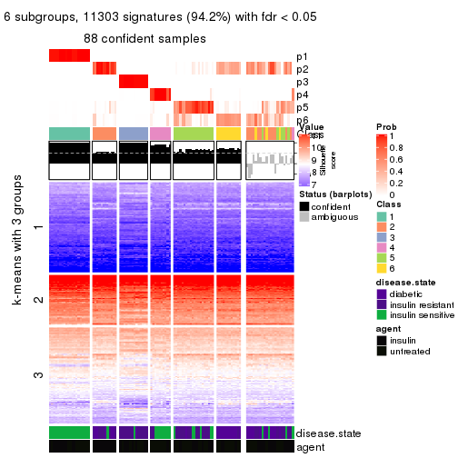
Compare the overlap of signatures from different k:
compare_signatures(res)
get_signature() returns a data frame invisibly. TO get the list of signatures, the function
call should be assigned to a variable explicitly. In following code, if plot argument is set
to FALSE, no heatmap is plotted while only the differential analysis is performed.
# code only for demonstration
tb = get_signature(res, k = ..., plot = FALSE)
An example of the output of tb is:
#> which_row fdr mean_1 mean_2 scaled_mean_1 scaled_mean_2 km
#> 1 38 0.042760348 8.373488 9.131774 -0.5533452 0.5164555 1
#> 2 40 0.018707592 7.106213 8.469186 -0.6173731 0.5762149 1
#> 3 55 0.019134737 10.221463 11.207825 -0.6159697 0.5749050 1
#> 4 59 0.006059896 5.921854 7.869574 -0.6899429 0.6439467 1
#> 5 60 0.018055526 8.928898 10.211722 -0.6204761 0.5791110 1
#> 6 98 0.009384629 15.714769 14.887706 0.6635654 -0.6193277 2
...
The columns in tb are:
which_row: row indices corresponding to the input matrix.fdr: FDR for the differential test. mean_x: The mean value in group x.scaled_mean_x: The mean value in group x after rows are scaled.km: Row groups if k-means clustering is applied to rows.UMAP plot which shows how samples are separated.
dimension_reduction(res, k = 2, method = "UMAP")
dimension_reduction(res, k = 3, method = "UMAP")
dimension_reduction(res, k = 4, method = "UMAP")
dimension_reduction(res, k = 5, method = "UMAP")
dimension_reduction(res, k = 6, method = "UMAP")

Following heatmap shows how subgroups are split when increasing k:
collect_classes(res)
Test correlation between subgroups and known annotations. If the known annotation is numeric, one-way ANOVA test is applied, and if the known annotation is discrete, chi-squared contingency table test is applied.
test_to_known_factors(res)
#> n disease.state(p) agent(p) k
#> CV:pam 110 1.29e-06 1.000000 2
#> CV:pam 109 5.95e-13 0.944091 3
#> CV:pam 106 3.39e-15 0.001736 4
#> CV:pam 102 3.76e-17 0.014388 5
#> CV:pam 88 7.60e-17 0.000449 6
If matrix rows can be associated to genes, consider to use GO_Enrichment(res,
...) to perform function enrichment for the signature genes.
The object with results only for a single top-value method and a single partition method can be extracted as:
res = res_list["CV", "mclust"]
# you can also extract it by
# res = res_list["CV:mclust"]
A summary of res and all the functions that can be applied to it:
res
#> A 'ConsensusPartition' object with k = 2, 3, 4, 5, 6.
#> On a matrix with 11994 rows and 110 columns.
#> Top rows (1000, 2000, 3000, 4000, 5000) are extracted by 'CV' method.
#> Subgroups are detected by 'mclust' method.
#> Performed in total 1250 partitions by row resampling.
#> Best k for subgroups seems to be 2.
#>
#> Following methods can be applied to this 'ConsensusPartition' object:
#> [1] "cola_report" "collect_classes" "collect_plots"
#> [4] "collect_stats" "colnames" "compare_signatures"
#> [7] "consensus_heatmap" "dimension_reduction" "functional_enrichment"
#> [10] "get_anno_col" "get_anno" "get_classes"
#> [13] "get_consensus" "get_matrix" "get_membership"
#> [16] "get_param" "get_signatures" "get_stats"
#> [19] "is_best_k" "is_stable_k" "membership_heatmap"
#> [22] "ncol" "nrow" "plot_ecdf"
#> [25] "rownames" "select_partition_number" "show"
#> [28] "suggest_best_k" "test_to_known_factors"
collect_plots() function collects all the plots made from res for all k (number of partitions)
into one single page to provide an easy and fast comparison between different k.
collect_plots(res)
The plots are:
k and the heatmap of
predicted classes for each k.k.k.k.All the plots in panels can be made by individual functions and they are plotted later in this section.
select_partition_number() produces several plots showing different
statistics for choosing “optimized” k. There are following statistics:
k;k, the area increased is defined as \(A_k - A_{k-1}\).The detailed explanations of these statistics can be found in the cola vignette.
Generally speaking, lower PAC score, higher mean silhouette score or higher
concordance corresponds to better partition. Rand index and Jaccard index
measure how similar the current partition is compared to partition with k-1.
If they are too similar, we won't accept k is better than k-1.
select_partition_number(res)
The numeric values for all these statistics can be obtained by get_stats().
get_stats(res)
#> k 1-PAC mean_silhouette concordance area_increased Rand Jaccard
#> 2 2 0.925 0.921 0.967 0.4790 0.512 0.512
#> 3 3 0.899 0.952 0.977 0.2263 0.859 0.734
#> 4 4 0.736 0.831 0.897 0.1002 0.940 0.857
#> 5 5 0.769 0.832 0.894 0.0325 0.969 0.919
#> 6 6 0.738 0.752 0.859 0.0310 0.977 0.938
suggest_best_k() suggests the best \(k\) based on these statistics. The rules are as follows:
NA.suggest_best_k(res)
#> [1] 2
Following shows the table of the partitions (You need to click the show/hide
code output link to see it). The membership matrix (columns with name p*)
is inferred by
clue::cl_consensus()
function with the SE method. Basically the value in the membership matrix
represents the probability to belong to a certain group. The finall class
label for an item is determined with the group with highest probability it
belongs to.
In get_classes() function, the entropy is calculated from the membership
matrix and the silhouette score is calculated from the consensus matrix.
cbind(get_classes(res, k = 2), get_membership(res, k = 2))
#> class entropy silhouette p1 p2
#> GSM555237 1 0.0000 0.935 1.000 0.000
#> GSM555239 1 0.0000 0.935 1.000 0.000
#> GSM555241 1 0.0000 0.935 1.000 0.000
#> GSM555243 1 0.0000 0.935 1.000 0.000
#> GSM555245 1 0.0000 0.935 1.000 0.000
#> GSM555247 1 0.0000 0.935 1.000 0.000
#> GSM555249 1 0.0000 0.935 1.000 0.000
#> GSM555251 1 0.0000 0.935 1.000 0.000
#> GSM555253 1 0.0000 0.935 1.000 0.000
#> GSM555255 1 0.0000 0.935 1.000 0.000
#> GSM555257 1 0.0938 0.927 0.988 0.012
#> GSM555259 1 0.2423 0.906 0.960 0.040
#> GSM555261 1 0.9580 0.457 0.620 0.380
#> GSM555263 1 0.9580 0.457 0.620 0.380
#> GSM555265 1 0.9552 0.466 0.624 0.376
#> GSM555267 1 0.9580 0.457 0.620 0.380
#> GSM555269 1 0.1843 0.915 0.972 0.028
#> GSM555271 1 0.0000 0.935 1.000 0.000
#> GSM555273 2 0.0938 0.973 0.012 0.988
#> GSM555275 2 0.0000 0.984 0.000 1.000
#> GSM555238 1 0.0000 0.935 1.000 0.000
#> GSM555240 1 0.0000 0.935 1.000 0.000
#> GSM555242 1 0.0000 0.935 1.000 0.000
#> GSM555244 1 0.0000 0.935 1.000 0.000
#> GSM555246 1 0.0000 0.935 1.000 0.000
#> GSM555248 1 0.0000 0.935 1.000 0.000
#> GSM555250 1 0.0000 0.935 1.000 0.000
#> GSM555252 1 0.0000 0.935 1.000 0.000
#> GSM555254 1 0.0000 0.935 1.000 0.000
#> GSM555256 1 0.0000 0.935 1.000 0.000
#> GSM555258 1 0.9358 0.512 0.648 0.352
#> GSM555260 2 0.1843 0.957 0.028 0.972
#> GSM555262 2 0.0000 0.984 0.000 1.000
#> GSM555264 1 0.0000 0.935 1.000 0.000
#> GSM555266 2 0.0000 0.984 0.000 1.000
#> GSM555268 2 0.0000 0.984 0.000 1.000
#> GSM555270 2 0.0000 0.984 0.000 1.000
#> GSM555272 2 0.9608 0.314 0.384 0.616
#> GSM555274 2 0.0000 0.984 0.000 1.000
#> GSM555276 2 0.0000 0.984 0.000 1.000
#> GSM555277 2 0.0000 0.984 0.000 1.000
#> GSM555279 2 0.9393 0.388 0.356 0.644
#> GSM555281 2 0.0000 0.984 0.000 1.000
#> GSM555283 2 0.0000 0.984 0.000 1.000
#> GSM555285 2 0.5519 0.838 0.128 0.872
#> GSM555287 1 0.9552 0.466 0.624 0.376
#> GSM555289 2 0.0000 0.984 0.000 1.000
#> GSM555291 2 0.0000 0.984 0.000 1.000
#> GSM555293 2 0.0000 0.984 0.000 1.000
#> GSM555295 2 0.0000 0.984 0.000 1.000
#> GSM555297 1 0.9580 0.457 0.620 0.380
#> GSM555299 1 0.0000 0.935 1.000 0.000
#> GSM555301 1 0.0000 0.935 1.000 0.000
#> GSM555303 1 0.0000 0.935 1.000 0.000
#> GSM555305 1 0.0000 0.935 1.000 0.000
#> GSM555307 2 0.0000 0.984 0.000 1.000
#> GSM555309 1 0.0000 0.935 1.000 0.000
#> GSM555311 2 0.0000 0.984 0.000 1.000
#> GSM555313 2 0.0000 0.984 0.000 1.000
#> GSM555315 2 0.0000 0.984 0.000 1.000
#> GSM555278 2 0.0000 0.984 0.000 1.000
#> GSM555280 2 0.0000 0.984 0.000 1.000
#> GSM555282 2 0.0000 0.984 0.000 1.000
#> GSM555284 2 0.0000 0.984 0.000 1.000
#> GSM555286 2 0.0000 0.984 0.000 1.000
#> GSM555288 2 0.0000 0.984 0.000 1.000
#> GSM555290 2 0.0000 0.984 0.000 1.000
#> GSM555292 2 0.0000 0.984 0.000 1.000
#> GSM555294 2 0.0000 0.984 0.000 1.000
#> GSM555296 2 0.0000 0.984 0.000 1.000
#> GSM555298 1 0.0000 0.935 1.000 0.000
#> GSM555300 1 0.0000 0.935 1.000 0.000
#> GSM555302 1 0.0000 0.935 1.000 0.000
#> GSM555304 1 0.0000 0.935 1.000 0.000
#> GSM555306 1 0.0000 0.935 1.000 0.000
#> GSM555308 1 0.0000 0.935 1.000 0.000
#> GSM555310 1 0.0000 0.935 1.000 0.000
#> GSM555312 2 0.0000 0.984 0.000 1.000
#> GSM555314 2 0.0000 0.984 0.000 1.000
#> GSM555316 2 0.0000 0.984 0.000 1.000
#> GSM555317 2 0.0000 0.984 0.000 1.000
#> GSM555319 2 0.0000 0.984 0.000 1.000
#> GSM555321 2 0.0000 0.984 0.000 1.000
#> GSM555323 2 0.0000 0.984 0.000 1.000
#> GSM555325 2 0.0000 0.984 0.000 1.000
#> GSM555327 2 0.0000 0.984 0.000 1.000
#> GSM555329 2 0.0000 0.984 0.000 1.000
#> GSM555331 2 0.0000 0.984 0.000 1.000
#> GSM555333 2 0.0000 0.984 0.000 1.000
#> GSM555335 2 0.0000 0.984 0.000 1.000
#> GSM555337 2 0.0000 0.984 0.000 1.000
#> GSM555339 2 0.0000 0.984 0.000 1.000
#> GSM555341 2 0.0000 0.984 0.000 1.000
#> GSM555343 2 0.0000 0.984 0.000 1.000
#> GSM555345 2 0.0376 0.981 0.004 0.996
#> GSM555318 2 0.0000 0.984 0.000 1.000
#> GSM555320 2 0.0000 0.984 0.000 1.000
#> GSM555322 2 0.0000 0.984 0.000 1.000
#> GSM555324 1 0.0000 0.935 1.000 0.000
#> GSM555326 2 0.0000 0.984 0.000 1.000
#> GSM555328 2 0.0000 0.984 0.000 1.000
#> GSM555330 2 0.0000 0.984 0.000 1.000
#> GSM555332 2 0.0000 0.984 0.000 1.000
#> GSM555334 2 0.0000 0.984 0.000 1.000
#> GSM555336 2 0.0000 0.984 0.000 1.000
#> GSM555338 2 0.0000 0.984 0.000 1.000
#> GSM555340 2 0.0000 0.984 0.000 1.000
#> GSM555342 2 0.0000 0.984 0.000 1.000
#> GSM555344 2 0.0000 0.984 0.000 1.000
#> GSM555346 2 0.1184 0.969 0.016 0.984
cbind(get_classes(res, k = 3), get_membership(res, k = 3))
#> class entropy silhouette p1 p2 p3
#> GSM555237 1 0.0000 1.000 1.000 0.000 0.000
#> GSM555239 1 0.0000 1.000 1.000 0.000 0.000
#> GSM555241 1 0.0000 1.000 1.000 0.000 0.000
#> GSM555243 1 0.0000 1.000 1.000 0.000 0.000
#> GSM555245 1 0.0000 1.000 1.000 0.000 0.000
#> GSM555247 1 0.0000 1.000 1.000 0.000 0.000
#> GSM555249 1 0.0000 1.000 1.000 0.000 0.000
#> GSM555251 1 0.0000 1.000 1.000 0.000 0.000
#> GSM555253 1 0.0000 1.000 1.000 0.000 0.000
#> GSM555255 1 0.0000 1.000 1.000 0.000 0.000
#> GSM555257 3 0.7085 0.721 0.096 0.188 0.716
#> GSM555259 3 0.0237 0.911 0.000 0.004 0.996
#> GSM555261 3 0.1163 0.904 0.000 0.028 0.972
#> GSM555263 3 0.1031 0.906 0.000 0.024 0.976
#> GSM555265 3 0.0892 0.908 0.000 0.020 0.980
#> GSM555267 3 0.0892 0.908 0.000 0.020 0.980
#> GSM555269 3 0.0000 0.912 0.000 0.000 1.000
#> GSM555271 3 0.0000 0.912 0.000 0.000 1.000
#> GSM555273 3 0.4842 0.752 0.000 0.224 0.776
#> GSM555275 2 0.0000 0.989 0.000 1.000 0.000
#> GSM555238 1 0.0000 1.000 1.000 0.000 0.000
#> GSM555240 1 0.0000 1.000 1.000 0.000 0.000
#> GSM555242 1 0.0000 1.000 1.000 0.000 0.000
#> GSM555244 1 0.0000 1.000 1.000 0.000 0.000
#> GSM555246 1 0.0000 1.000 1.000 0.000 0.000
#> GSM555248 1 0.0000 1.000 1.000 0.000 0.000
#> GSM555250 1 0.0000 1.000 1.000 0.000 0.000
#> GSM555252 1 0.0000 1.000 1.000 0.000 0.000
#> GSM555254 1 0.0000 1.000 1.000 0.000 0.000
#> GSM555256 1 0.0000 1.000 1.000 0.000 0.000
#> GSM555258 3 0.4504 0.784 0.000 0.196 0.804
#> GSM555260 2 0.4399 0.752 0.000 0.812 0.188
#> GSM555262 2 0.0000 0.989 0.000 1.000 0.000
#> GSM555264 3 0.4452 0.787 0.000 0.192 0.808
#> GSM555266 2 0.0000 0.989 0.000 1.000 0.000
#> GSM555268 2 0.0000 0.989 0.000 1.000 0.000
#> GSM555270 2 0.0000 0.989 0.000 1.000 0.000
#> GSM555272 3 0.4504 0.784 0.000 0.196 0.804
#> GSM555274 2 0.0000 0.989 0.000 1.000 0.000
#> GSM555276 2 0.0000 0.989 0.000 1.000 0.000
#> GSM555277 2 0.0747 0.974 0.000 0.984 0.016
#> GSM555279 3 0.5859 0.539 0.000 0.344 0.656
#> GSM555281 2 0.0237 0.986 0.000 0.996 0.004
#> GSM555283 2 0.0237 0.986 0.000 0.996 0.004
#> GSM555285 3 0.4504 0.784 0.000 0.196 0.804
#> GSM555287 3 0.4418 0.825 0.020 0.132 0.848
#> GSM555289 2 0.0000 0.989 0.000 1.000 0.000
#> GSM555291 2 0.0000 0.989 0.000 1.000 0.000
#> GSM555293 2 0.0000 0.989 0.000 1.000 0.000
#> GSM555295 2 0.1643 0.946 0.000 0.956 0.044
#> GSM555297 3 0.1163 0.904 0.000 0.028 0.972
#> GSM555299 3 0.0000 0.912 0.000 0.000 1.000
#> GSM555301 3 0.0000 0.912 0.000 0.000 1.000
#> GSM555303 3 0.0000 0.912 0.000 0.000 1.000
#> GSM555305 3 0.0000 0.912 0.000 0.000 1.000
#> GSM555307 2 0.0000 0.989 0.000 1.000 0.000
#> GSM555309 3 0.0000 0.912 0.000 0.000 1.000
#> GSM555311 2 0.0000 0.989 0.000 1.000 0.000
#> GSM555313 2 0.0000 0.989 0.000 1.000 0.000
#> GSM555315 2 0.0000 0.989 0.000 1.000 0.000
#> GSM555278 2 0.0000 0.989 0.000 1.000 0.000
#> GSM555280 2 0.0000 0.989 0.000 1.000 0.000
#> GSM555282 2 0.0000 0.989 0.000 1.000 0.000
#> GSM555284 2 0.0000 0.989 0.000 1.000 0.000
#> GSM555286 2 0.0000 0.989 0.000 1.000 0.000
#> GSM555288 2 0.0000 0.989 0.000 1.000 0.000
#> GSM555290 2 0.0000 0.989 0.000 1.000 0.000
#> GSM555292 2 0.0000 0.989 0.000 1.000 0.000
#> GSM555294 2 0.0000 0.989 0.000 1.000 0.000
#> GSM555296 2 0.0000 0.989 0.000 1.000 0.000
#> GSM555298 3 0.0000 0.912 0.000 0.000 1.000
#> GSM555300 3 0.0000 0.912 0.000 0.000 1.000
#> GSM555302 3 0.0000 0.912 0.000 0.000 1.000
#> GSM555304 3 0.0000 0.912 0.000 0.000 1.000
#> GSM555306 3 0.0000 0.912 0.000 0.000 1.000
#> GSM555308 3 0.0000 0.912 0.000 0.000 1.000
#> GSM555310 3 0.0000 0.912 0.000 0.000 1.000
#> GSM555312 2 0.0000 0.989 0.000 1.000 0.000
#> GSM555314 2 0.1529 0.951 0.000 0.960 0.040
#> GSM555316 2 0.0000 0.989 0.000 1.000 0.000
#> GSM555317 2 0.0000 0.989 0.000 1.000 0.000
#> GSM555319 2 0.0000 0.989 0.000 1.000 0.000
#> GSM555321 2 0.0000 0.989 0.000 1.000 0.000
#> GSM555323 2 0.0000 0.989 0.000 1.000 0.000
#> GSM555325 2 0.0000 0.989 0.000 1.000 0.000
#> GSM555327 2 0.0000 0.989 0.000 1.000 0.000
#> GSM555329 2 0.0000 0.989 0.000 1.000 0.000
#> GSM555331 2 0.0000 0.989 0.000 1.000 0.000
#> GSM555333 2 0.0000 0.989 0.000 1.000 0.000
#> GSM555335 2 0.0000 0.989 0.000 1.000 0.000
#> GSM555337 2 0.0000 0.989 0.000 1.000 0.000
#> GSM555339 2 0.0000 0.989 0.000 1.000 0.000
#> GSM555341 2 0.0000 0.989 0.000 1.000 0.000
#> GSM555343 2 0.0000 0.989 0.000 1.000 0.000
#> GSM555345 2 0.3752 0.821 0.000 0.856 0.144
#> GSM555318 2 0.0000 0.989 0.000 1.000 0.000
#> GSM555320 2 0.0000 0.989 0.000 1.000 0.000
#> GSM555322 2 0.0000 0.989 0.000 1.000 0.000
#> GSM555324 3 0.0000 0.912 0.000 0.000 1.000
#> GSM555326 2 0.0000 0.989 0.000 1.000 0.000
#> GSM555328 2 0.0000 0.989 0.000 1.000 0.000
#> GSM555330 2 0.0000 0.989 0.000 1.000 0.000
#> GSM555332 2 0.0000 0.989 0.000 1.000 0.000
#> GSM555334 2 0.0000 0.989 0.000 1.000 0.000
#> GSM555336 2 0.0000 0.989 0.000 1.000 0.000
#> GSM555338 2 0.0000 0.989 0.000 1.000 0.000
#> GSM555340 2 0.0000 0.989 0.000 1.000 0.000
#> GSM555342 2 0.0000 0.989 0.000 1.000 0.000
#> GSM555344 2 0.0000 0.989 0.000 1.000 0.000
#> GSM555346 2 0.3941 0.803 0.000 0.844 0.156
cbind(get_classes(res, k = 4), get_membership(res, k = 4))
#> class entropy silhouette p1 p2 p3 p4
#> GSM555237 1 0.4103 0.6473 0.744 0.000 0.000 0.256
#> GSM555239 1 0.0000 0.9855 1.000 0.000 0.000 0.000
#> GSM555241 1 0.0000 0.9855 1.000 0.000 0.000 0.000
#> GSM555243 1 0.0000 0.9855 1.000 0.000 0.000 0.000
#> GSM555245 1 0.0000 0.9855 1.000 0.000 0.000 0.000
#> GSM555247 1 0.0000 0.9855 1.000 0.000 0.000 0.000
#> GSM555249 1 0.0000 0.9855 1.000 0.000 0.000 0.000
#> GSM555251 1 0.0000 0.9855 1.000 0.000 0.000 0.000
#> GSM555253 1 0.0000 0.9855 1.000 0.000 0.000 0.000
#> GSM555255 1 0.0000 0.9855 1.000 0.000 0.000 0.000
#> GSM555257 4 0.7357 0.6141 0.096 0.228 0.056 0.620
#> GSM555259 4 0.3312 0.7588 0.000 0.052 0.072 0.876
#> GSM555261 4 0.3312 0.7588 0.000 0.052 0.072 0.876
#> GSM555263 4 0.3312 0.7588 0.000 0.052 0.072 0.876
#> GSM555265 4 0.3312 0.7588 0.000 0.052 0.072 0.876
#> GSM555267 4 0.3312 0.7588 0.000 0.052 0.072 0.876
#> GSM555269 4 0.3312 0.7588 0.000 0.052 0.072 0.876
#> GSM555271 3 0.0000 1.0000 0.000 0.000 1.000 0.000
#> GSM555273 4 0.5372 0.0210 0.000 0.444 0.012 0.544
#> GSM555275 2 0.3356 0.8331 0.000 0.824 0.000 0.176
#> GSM555238 1 0.0000 0.9855 1.000 0.000 0.000 0.000
#> GSM555240 1 0.0188 0.9818 0.996 0.000 0.000 0.004
#> GSM555242 1 0.0000 0.9855 1.000 0.000 0.000 0.000
#> GSM555244 1 0.0000 0.9855 1.000 0.000 0.000 0.000
#> GSM555246 1 0.0000 0.9855 1.000 0.000 0.000 0.000
#> GSM555248 1 0.0000 0.9855 1.000 0.000 0.000 0.000
#> GSM555250 1 0.0000 0.9855 1.000 0.000 0.000 0.000
#> GSM555252 1 0.0000 0.9855 1.000 0.000 0.000 0.000
#> GSM555254 1 0.0000 0.9855 1.000 0.000 0.000 0.000
#> GSM555256 1 0.0000 0.9855 1.000 0.000 0.000 0.000
#> GSM555258 4 0.5143 0.6013 0.000 0.360 0.012 0.628
#> GSM555260 2 0.4284 0.5505 0.000 0.764 0.012 0.224
#> GSM555262 2 0.0921 0.8340 0.000 0.972 0.000 0.028
#> GSM555264 2 0.5691 -0.1223 0.000 0.564 0.028 0.408
#> GSM555266 2 0.1118 0.8292 0.000 0.964 0.000 0.036
#> GSM555268 2 0.1118 0.8302 0.000 0.964 0.000 0.036
#> GSM555270 2 0.0707 0.8439 0.000 0.980 0.000 0.020
#> GSM555272 4 0.5217 0.5739 0.000 0.380 0.012 0.608
#> GSM555274 2 0.1211 0.8281 0.000 0.960 0.000 0.040
#> GSM555276 2 0.0336 0.8440 0.000 0.992 0.000 0.008
#> GSM555277 2 0.4011 0.8134 0.000 0.784 0.008 0.208
#> GSM555279 4 0.3071 0.7560 0.000 0.068 0.044 0.888
#> GSM555281 2 0.3649 0.8199 0.000 0.796 0.000 0.204
#> GSM555283 2 0.3486 0.8269 0.000 0.812 0.000 0.188
#> GSM555285 4 0.5392 0.0154 0.000 0.460 0.012 0.528
#> GSM555287 4 0.6071 0.6820 0.008 0.268 0.064 0.660
#> GSM555289 2 0.3764 0.8222 0.000 0.784 0.000 0.216
#> GSM555291 2 0.3400 0.8290 0.000 0.820 0.000 0.180
#> GSM555293 2 0.3764 0.8212 0.000 0.784 0.000 0.216
#> GSM555295 2 0.5055 0.5456 0.000 0.624 0.008 0.368
#> GSM555297 4 0.3312 0.7588 0.000 0.052 0.072 0.876
#> GSM555299 3 0.0000 1.0000 0.000 0.000 1.000 0.000
#> GSM555301 3 0.0000 1.0000 0.000 0.000 1.000 0.000
#> GSM555303 3 0.0000 1.0000 0.000 0.000 1.000 0.000
#> GSM555305 3 0.0000 1.0000 0.000 0.000 1.000 0.000
#> GSM555307 2 0.3610 0.8261 0.000 0.800 0.000 0.200
#> GSM555309 3 0.0000 1.0000 0.000 0.000 1.000 0.000
#> GSM555311 2 0.3486 0.8266 0.000 0.812 0.000 0.188
#> GSM555313 2 0.0817 0.8424 0.000 0.976 0.000 0.024
#> GSM555315 2 0.3486 0.8273 0.000 0.812 0.000 0.188
#> GSM555278 2 0.1211 0.8307 0.000 0.960 0.000 0.040
#> GSM555280 2 0.0921 0.8422 0.000 0.972 0.000 0.028
#> GSM555282 2 0.0707 0.8433 0.000 0.980 0.000 0.020
#> GSM555284 2 0.1118 0.8292 0.000 0.964 0.000 0.036
#> GSM555286 2 0.1022 0.8423 0.000 0.968 0.000 0.032
#> GSM555288 2 0.0817 0.8424 0.000 0.976 0.000 0.024
#> GSM555290 2 0.0336 0.8440 0.000 0.992 0.000 0.008
#> GSM555292 2 0.0469 0.8441 0.000 0.988 0.000 0.012
#> GSM555294 2 0.1302 0.8303 0.000 0.956 0.000 0.044
#> GSM555296 2 0.1635 0.8458 0.000 0.948 0.008 0.044
#> GSM555298 3 0.0000 1.0000 0.000 0.000 1.000 0.000
#> GSM555300 3 0.0000 1.0000 0.000 0.000 1.000 0.000
#> GSM555302 3 0.0000 1.0000 0.000 0.000 1.000 0.000
#> GSM555304 3 0.0000 1.0000 0.000 0.000 1.000 0.000
#> GSM555306 3 0.0000 1.0000 0.000 0.000 1.000 0.000
#> GSM555308 3 0.0000 1.0000 0.000 0.000 1.000 0.000
#> GSM555310 3 0.0000 1.0000 0.000 0.000 1.000 0.000
#> GSM555312 2 0.0921 0.8437 0.000 0.972 0.000 0.028
#> GSM555314 4 0.2859 0.7372 0.000 0.112 0.008 0.880
#> GSM555316 2 0.0469 0.8438 0.000 0.988 0.000 0.012
#> GSM555317 2 0.3649 0.8220 0.000 0.796 0.000 0.204
#> GSM555319 2 0.3688 0.8260 0.000 0.792 0.000 0.208
#> GSM555321 2 0.3610 0.8288 0.000 0.800 0.000 0.200
#> GSM555323 2 0.3444 0.8281 0.000 0.816 0.000 0.184
#> GSM555325 2 0.3764 0.8212 0.000 0.784 0.000 0.216
#> GSM555327 2 0.3569 0.8279 0.000 0.804 0.000 0.196
#> GSM555329 2 0.3688 0.8260 0.000 0.792 0.000 0.208
#> GSM555331 2 0.3528 0.8254 0.000 0.808 0.000 0.192
#> GSM555333 2 0.3486 0.8286 0.000 0.812 0.000 0.188
#> GSM555335 2 0.3528 0.8254 0.000 0.808 0.000 0.192
#> GSM555337 2 0.3569 0.8270 0.000 0.804 0.000 0.196
#> GSM555339 2 0.3569 0.8239 0.000 0.804 0.000 0.196
#> GSM555341 2 0.3528 0.8319 0.000 0.808 0.000 0.192
#> GSM555343 2 0.3486 0.8293 0.000 0.812 0.000 0.188
#> GSM555345 2 0.4335 0.8091 0.000 0.796 0.036 0.168
#> GSM555318 2 0.2760 0.8411 0.000 0.872 0.000 0.128
#> GSM555320 2 0.1211 0.8279 0.000 0.960 0.000 0.040
#> GSM555322 2 0.0817 0.8439 0.000 0.976 0.000 0.024
#> GSM555324 3 0.0000 1.0000 0.000 0.000 1.000 0.000
#> GSM555326 2 0.0336 0.8439 0.000 0.992 0.000 0.008
#> GSM555328 2 0.0921 0.8422 0.000 0.972 0.000 0.028
#> GSM555330 2 0.0707 0.8437 0.000 0.980 0.000 0.020
#> GSM555332 2 0.0707 0.8437 0.000 0.980 0.000 0.020
#> GSM555334 2 0.1211 0.8353 0.000 0.960 0.000 0.040
#> GSM555336 2 0.0707 0.8385 0.000 0.980 0.000 0.020
#> GSM555338 2 0.3486 0.8283 0.000 0.812 0.000 0.188
#> GSM555340 2 0.3486 0.8285 0.000 0.812 0.000 0.188
#> GSM555342 2 0.1211 0.8279 0.000 0.960 0.000 0.040
#> GSM555344 2 0.0707 0.8456 0.000 0.980 0.000 0.020
#> GSM555346 2 0.4697 0.3517 0.000 0.696 0.008 0.296
cbind(get_classes(res, k = 5), get_membership(res, k = 5))
#> class entropy silhouette p1 p2 p3 p4 p5
#> GSM555237 1 0.2379 0.901 0.912 0.000 0.028 0.048 0.012
#> GSM555239 1 0.0000 0.970 1.000 0.000 0.000 0.000 0.000
#> GSM555241 1 0.0000 0.970 1.000 0.000 0.000 0.000 0.000
#> GSM555243 1 0.0000 0.970 1.000 0.000 0.000 0.000 0.000
#> GSM555245 1 0.0000 0.970 1.000 0.000 0.000 0.000 0.000
#> GSM555247 1 0.0000 0.970 1.000 0.000 0.000 0.000 0.000
#> GSM555249 1 0.0000 0.970 1.000 0.000 0.000 0.000 0.000
#> GSM555251 1 0.0000 0.970 1.000 0.000 0.000 0.000 0.000
#> GSM555253 1 0.0000 0.970 1.000 0.000 0.000 0.000 0.000
#> GSM555255 1 0.0000 0.970 1.000 0.000 0.000 0.000 0.000
#> GSM555257 5 0.4397 0.268 0.000 0.000 0.028 0.276 0.696
#> GSM555259 4 0.1668 0.818 0.000 0.032 0.028 0.940 0.000
#> GSM555261 4 0.1750 0.822 0.000 0.036 0.028 0.936 0.000
#> GSM555263 4 0.1750 0.822 0.000 0.036 0.028 0.936 0.000
#> GSM555265 4 0.1750 0.822 0.000 0.036 0.028 0.936 0.000
#> GSM555267 4 0.1750 0.822 0.000 0.036 0.028 0.936 0.000
#> GSM555269 4 0.1668 0.818 0.000 0.032 0.028 0.940 0.000
#> GSM555271 3 0.0510 0.987 0.000 0.000 0.984 0.016 0.000
#> GSM555273 5 0.5337 0.483 0.000 0.440 0.000 0.052 0.508
#> GSM555275 2 0.0000 0.832 0.000 1.000 0.000 0.000 0.000
#> GSM555238 1 0.1341 0.972 0.944 0.000 0.000 0.056 0.000
#> GSM555240 1 0.1628 0.968 0.936 0.000 0.000 0.056 0.008
#> GSM555242 1 0.1341 0.972 0.944 0.000 0.000 0.056 0.000
#> GSM555244 1 0.1341 0.972 0.944 0.000 0.000 0.056 0.000
#> GSM555246 1 0.1341 0.972 0.944 0.000 0.000 0.056 0.000
#> GSM555248 1 0.1341 0.972 0.944 0.000 0.000 0.056 0.000
#> GSM555250 1 0.1341 0.972 0.944 0.000 0.000 0.056 0.000
#> GSM555252 1 0.1341 0.972 0.944 0.000 0.000 0.056 0.000
#> GSM555254 1 0.1341 0.972 0.944 0.000 0.000 0.056 0.000
#> GSM555256 1 0.1341 0.972 0.944 0.000 0.000 0.056 0.000
#> GSM555258 5 0.4376 0.589 0.000 0.144 0.000 0.092 0.764
#> GSM555260 2 0.4736 0.504 0.000 0.576 0.000 0.020 0.404
#> GSM555262 2 0.3074 0.840 0.000 0.804 0.000 0.000 0.196
#> GSM555264 5 0.3160 0.403 0.000 0.004 0.000 0.188 0.808
#> GSM555266 2 0.3074 0.840 0.000 0.804 0.000 0.000 0.196
#> GSM555268 2 0.3074 0.840 0.000 0.804 0.000 0.000 0.196
#> GSM555270 2 0.3210 0.839 0.000 0.788 0.000 0.000 0.212
#> GSM555272 5 0.4796 0.599 0.000 0.152 0.000 0.120 0.728
#> GSM555274 2 0.3074 0.840 0.000 0.804 0.000 0.000 0.196
#> GSM555276 2 0.3395 0.833 0.000 0.764 0.000 0.000 0.236
#> GSM555277 2 0.1444 0.825 0.000 0.948 0.000 0.012 0.040
#> GSM555279 4 0.5050 -0.124 0.000 0.476 0.024 0.496 0.004
#> GSM555281 2 0.1792 0.811 0.000 0.916 0.000 0.084 0.000
#> GSM555283 2 0.0290 0.832 0.000 0.992 0.000 0.000 0.008
#> GSM555285 5 0.5142 0.539 0.000 0.348 0.000 0.052 0.600
#> GSM555287 4 0.5809 0.476 0.000 0.092 0.032 0.660 0.216
#> GSM555289 2 0.1197 0.821 0.000 0.952 0.000 0.000 0.048
#> GSM555291 2 0.0000 0.832 0.000 1.000 0.000 0.000 0.000
#> GSM555293 2 0.0000 0.832 0.000 1.000 0.000 0.000 0.000
#> GSM555295 2 0.2930 0.721 0.000 0.832 0.004 0.164 0.000
#> GSM555297 4 0.1750 0.822 0.000 0.036 0.028 0.936 0.000
#> GSM555299 3 0.0000 0.996 0.000 0.000 1.000 0.000 0.000
#> GSM555301 3 0.0290 0.994 0.000 0.000 0.992 0.008 0.000
#> GSM555303 3 0.0000 0.996 0.000 0.000 1.000 0.000 0.000
#> GSM555305 3 0.0162 0.997 0.000 0.000 0.996 0.004 0.000
#> GSM555307 2 0.0609 0.829 0.000 0.980 0.000 0.000 0.020
#> GSM555309 3 0.0000 0.996 0.000 0.000 1.000 0.000 0.000
#> GSM555311 2 0.0000 0.832 0.000 1.000 0.000 0.000 0.000
#> GSM555313 2 0.3074 0.840 0.000 0.804 0.000 0.000 0.196
#> GSM555315 2 0.0000 0.832 0.000 1.000 0.000 0.000 0.000
#> GSM555278 2 0.3074 0.840 0.000 0.804 0.000 0.000 0.196
#> GSM555280 2 0.3366 0.834 0.000 0.768 0.000 0.000 0.232
#> GSM555282 2 0.3074 0.840 0.000 0.804 0.000 0.000 0.196
#> GSM555284 2 0.3074 0.840 0.000 0.804 0.000 0.000 0.196
#> GSM555286 2 0.3366 0.834 0.000 0.768 0.000 0.000 0.232
#> GSM555288 2 0.3196 0.840 0.000 0.804 0.000 0.004 0.192
#> GSM555290 2 0.3424 0.830 0.000 0.760 0.000 0.000 0.240
#> GSM555292 2 0.3395 0.832 0.000 0.764 0.000 0.000 0.236
#> GSM555294 2 0.3039 0.841 0.000 0.808 0.000 0.000 0.192
#> GSM555296 2 0.3006 0.846 0.000 0.836 0.004 0.004 0.156
#> GSM555298 3 0.0162 0.997 0.000 0.000 0.996 0.004 0.000
#> GSM555300 3 0.0000 0.996 0.000 0.000 1.000 0.000 0.000
#> GSM555302 3 0.0162 0.997 0.000 0.000 0.996 0.004 0.000
#> GSM555304 3 0.0162 0.997 0.000 0.000 0.996 0.004 0.000
#> GSM555306 3 0.0162 0.997 0.000 0.000 0.996 0.004 0.000
#> GSM555308 3 0.0000 0.996 0.000 0.000 1.000 0.000 0.000
#> GSM555310 3 0.0162 0.997 0.000 0.000 0.996 0.004 0.000
#> GSM555312 2 0.3039 0.841 0.000 0.808 0.000 0.000 0.192
#> GSM555314 2 0.4264 0.250 0.000 0.620 0.004 0.376 0.000
#> GSM555316 2 0.3424 0.830 0.000 0.760 0.000 0.000 0.240
#> GSM555317 2 0.0609 0.831 0.000 0.980 0.000 0.000 0.020
#> GSM555319 2 0.0510 0.832 0.000 0.984 0.000 0.000 0.016
#> GSM555321 2 0.0510 0.832 0.000 0.984 0.000 0.000 0.016
#> GSM555323 2 0.0000 0.832 0.000 1.000 0.000 0.000 0.000
#> GSM555325 2 0.0000 0.832 0.000 1.000 0.000 0.000 0.000
#> GSM555327 2 0.1197 0.821 0.000 0.952 0.000 0.000 0.048
#> GSM555329 2 0.0510 0.832 0.000 0.984 0.000 0.000 0.016
#> GSM555331 2 0.0000 0.832 0.000 1.000 0.000 0.000 0.000
#> GSM555333 2 0.0000 0.832 0.000 1.000 0.000 0.000 0.000
#> GSM555335 2 0.0000 0.832 0.000 1.000 0.000 0.000 0.000
#> GSM555337 2 0.0771 0.834 0.000 0.976 0.004 0.000 0.020
#> GSM555339 2 0.0000 0.832 0.000 1.000 0.000 0.000 0.000
#> GSM555341 2 0.0162 0.834 0.000 0.996 0.000 0.000 0.004
#> GSM555343 2 0.0510 0.832 0.000 0.984 0.000 0.000 0.016
#> GSM555345 2 0.3077 0.779 0.000 0.872 0.024 0.020 0.084
#> GSM555318 2 0.1851 0.839 0.000 0.912 0.000 0.000 0.088
#> GSM555320 2 0.3074 0.840 0.000 0.804 0.000 0.000 0.196
#> GSM555322 2 0.3366 0.834 0.000 0.768 0.000 0.000 0.232
#> GSM555324 3 0.0000 0.996 0.000 0.000 1.000 0.000 0.000
#> GSM555326 2 0.3210 0.839 0.000 0.788 0.000 0.000 0.212
#> GSM555328 2 0.3305 0.837 0.000 0.776 0.000 0.000 0.224
#> GSM555330 2 0.3305 0.837 0.000 0.776 0.000 0.000 0.224
#> GSM555332 2 0.3366 0.834 0.000 0.768 0.000 0.000 0.232
#> GSM555334 2 0.3424 0.831 0.000 0.760 0.000 0.000 0.240
#> GSM555336 2 0.3210 0.839 0.000 0.788 0.000 0.000 0.212
#> GSM555338 2 0.1121 0.823 0.000 0.956 0.000 0.000 0.044
#> GSM555340 2 0.0510 0.832 0.000 0.984 0.000 0.000 0.016
#> GSM555342 2 0.3074 0.840 0.000 0.804 0.000 0.000 0.196
#> GSM555344 2 0.3274 0.837 0.000 0.780 0.000 0.000 0.220
#> GSM555346 2 0.5341 0.272 0.000 0.504 0.000 0.052 0.444
cbind(get_classes(res, k = 6), get_membership(res, k = 6))
#> class entropy silhouette p1 p2 p3 p4 p5 p6
#> GSM555237 1 0.3005 7.95e-01 0.856 0.000 0.000 0.036 0.016 0.092
#> GSM555239 1 0.0000 9.01e-01 1.000 0.000 0.000 0.000 0.000 0.000
#> GSM555241 1 0.0000 9.01e-01 1.000 0.000 0.000 0.000 0.000 0.000
#> GSM555243 1 0.0000 9.01e-01 1.000 0.000 0.000 0.000 0.000 0.000
#> GSM555245 1 0.0000 9.01e-01 1.000 0.000 0.000 0.000 0.000 0.000
#> GSM555247 1 0.0000 9.01e-01 1.000 0.000 0.000 0.000 0.000 0.000
#> GSM555249 1 0.0000 9.01e-01 1.000 0.000 0.000 0.000 0.000 0.000
#> GSM555251 1 0.0000 9.01e-01 1.000 0.000 0.000 0.000 0.000 0.000
#> GSM555253 1 0.0000 9.01e-01 1.000 0.000 0.000 0.000 0.000 0.000
#> GSM555255 1 0.0000 9.01e-01 1.000 0.000 0.000 0.000 0.000 0.000
#> GSM555257 6 0.3656 7.65e-03 0.000 0.004 0.000 0.256 0.012 0.728
#> GSM555259 4 0.0000 9.21e-01 0.000 0.000 0.000 1.000 0.000 0.000
#> GSM555261 4 0.0405 9.25e-01 0.000 0.008 0.000 0.988 0.000 0.004
#> GSM555263 4 0.0260 9.26e-01 0.000 0.008 0.000 0.992 0.000 0.000
#> GSM555265 4 0.0520 9.24e-01 0.000 0.008 0.000 0.984 0.008 0.000
#> GSM555267 4 0.0405 9.25e-01 0.000 0.008 0.000 0.988 0.004 0.000
#> GSM555269 4 0.0146 9.20e-01 0.000 0.000 0.000 0.996 0.000 0.004
#> GSM555271 3 0.1003 9.60e-01 0.000 0.000 0.964 0.028 0.004 0.004
#> GSM555273 6 0.5724 -6.55e-01 0.000 0.368 0.000 0.020 0.104 0.508
#> GSM555275 2 0.0820 7.84e-01 0.000 0.972 0.000 0.000 0.012 0.016
#> GSM555238 1 0.2664 9.05e-01 0.816 0.000 0.000 0.000 0.184 0.000
#> GSM555240 1 0.3198 8.95e-01 0.796 0.000 0.000 0.008 0.188 0.008
#> GSM555242 1 0.2664 9.05e-01 0.816 0.000 0.000 0.000 0.184 0.000
#> GSM555244 1 0.2664 9.05e-01 0.816 0.000 0.000 0.000 0.184 0.000
#> GSM555246 1 0.2664 9.05e-01 0.816 0.000 0.000 0.000 0.184 0.000
#> GSM555248 1 0.2664 9.05e-01 0.816 0.000 0.000 0.000 0.184 0.000
#> GSM555250 1 0.2664 9.05e-01 0.816 0.000 0.000 0.000 0.184 0.000
#> GSM555252 1 0.2664 9.05e-01 0.816 0.000 0.000 0.000 0.184 0.000
#> GSM555254 1 0.2664 9.05e-01 0.816 0.000 0.000 0.000 0.184 0.000
#> GSM555256 1 0.2664 9.05e-01 0.816 0.000 0.000 0.000 0.184 0.000
#> GSM555258 6 0.2221 1.57e-01 0.000 0.072 0.000 0.032 0.000 0.896
#> GSM555260 2 0.4937 2.11e-01 0.000 0.492 0.000 0.020 0.028 0.460
#> GSM555262 2 0.2980 7.93e-01 0.000 0.800 0.000 0.000 0.008 0.192
#> GSM555264 6 0.4957 -2.95e-05 0.000 0.008 0.000 0.076 0.292 0.624
#> GSM555266 2 0.3630 7.73e-01 0.000 0.756 0.000 0.000 0.032 0.212
#> GSM555268 2 0.3333 7.84e-01 0.000 0.784 0.000 0.000 0.024 0.192
#> GSM555270 2 0.3168 7.92e-01 0.000 0.792 0.000 0.000 0.016 0.192
#> GSM555272 6 0.2633 1.07e-01 0.000 0.104 0.000 0.032 0.000 0.864
#> GSM555274 2 0.3409 7.88e-01 0.000 0.780 0.000 0.000 0.028 0.192
#> GSM555276 2 0.3954 7.77e-01 0.000 0.740 0.000 0.000 0.056 0.204
#> GSM555277 2 0.2639 7.42e-01 0.000 0.876 0.000 0.008 0.084 0.032
#> GSM555279 2 0.4561 -2.28e-01 0.000 0.544 0.000 0.424 0.004 0.028
#> GSM555281 2 0.0881 7.85e-01 0.000 0.972 0.000 0.008 0.008 0.012
#> GSM555283 2 0.1605 7.78e-01 0.000 0.936 0.000 0.004 0.044 0.016
#> GSM555285 5 0.6516 0.00e+00 0.000 0.316 0.000 0.020 0.380 0.284
#> GSM555287 4 0.6585 2.52e-01 0.004 0.144 0.000 0.504 0.284 0.064
#> GSM555289 2 0.1765 7.71e-01 0.000 0.924 0.000 0.000 0.052 0.024
#> GSM555291 2 0.0717 7.87e-01 0.000 0.976 0.000 0.000 0.016 0.008
#> GSM555293 2 0.1003 7.80e-01 0.000 0.964 0.000 0.000 0.020 0.016
#> GSM555295 2 0.1755 7.66e-01 0.000 0.932 0.000 0.028 0.008 0.032
#> GSM555297 4 0.0260 9.26e-01 0.000 0.008 0.000 0.992 0.000 0.000
#> GSM555299 3 0.1007 9.73e-01 0.000 0.000 0.956 0.000 0.044 0.000
#> GSM555301 3 0.0405 9.75e-01 0.000 0.000 0.988 0.008 0.004 0.000
#> GSM555303 3 0.0790 9.75e-01 0.000 0.000 0.968 0.000 0.032 0.000
#> GSM555305 3 0.0000 9.78e-01 0.000 0.000 1.000 0.000 0.000 0.000
#> GSM555307 2 0.1930 7.71e-01 0.000 0.916 0.000 0.000 0.048 0.036
#> GSM555309 3 0.1204 9.68e-01 0.000 0.000 0.944 0.000 0.056 0.000
#> GSM555311 2 0.1492 7.70e-01 0.000 0.940 0.000 0.000 0.024 0.036
#> GSM555313 2 0.3012 7.94e-01 0.000 0.796 0.000 0.000 0.008 0.196
#> GSM555315 2 0.1391 7.72e-01 0.000 0.944 0.000 0.000 0.016 0.040
#> GSM555278 2 0.3558 7.75e-01 0.000 0.760 0.000 0.000 0.028 0.212
#> GSM555280 2 0.3954 7.77e-01 0.000 0.740 0.000 0.000 0.056 0.204
#> GSM555282 2 0.3954 7.81e-01 0.000 0.740 0.000 0.000 0.056 0.204
#> GSM555284 2 0.3614 7.72e-01 0.000 0.752 0.000 0.000 0.028 0.220
#> GSM555286 2 0.3837 7.85e-01 0.000 0.752 0.000 0.000 0.052 0.196
#> GSM555288 2 0.3133 7.86e-01 0.000 0.780 0.000 0.000 0.008 0.212
#> GSM555290 2 0.3835 7.80e-01 0.000 0.748 0.000 0.000 0.048 0.204
#> GSM555292 2 0.3776 7.84e-01 0.000 0.756 0.000 0.000 0.048 0.196
#> GSM555294 2 0.3333 7.85e-01 0.000 0.784 0.000 0.000 0.024 0.192
#> GSM555296 2 0.3750 7.91e-01 0.000 0.764 0.000 0.016 0.020 0.200
#> GSM555298 3 0.0291 9.77e-01 0.000 0.000 0.992 0.004 0.004 0.000
#> GSM555300 3 0.1007 9.73e-01 0.000 0.000 0.956 0.000 0.044 0.000
#> GSM555302 3 0.0146 9.78e-01 0.000 0.000 0.996 0.000 0.004 0.000
#> GSM555304 3 0.0000 9.78e-01 0.000 0.000 1.000 0.000 0.000 0.000
#> GSM555306 3 0.0000 9.78e-01 0.000 0.000 1.000 0.000 0.000 0.000
#> GSM555308 3 0.1007 9.73e-01 0.000 0.000 0.956 0.000 0.044 0.000
#> GSM555310 3 0.0146 9.78e-01 0.000 0.000 0.996 0.000 0.004 0.000
#> GSM555312 2 0.3110 7.93e-01 0.000 0.792 0.000 0.000 0.012 0.196
#> GSM555314 2 0.4662 -9.81e-03 0.000 0.604 0.000 0.352 0.012 0.032
#> GSM555316 2 0.3954 7.77e-01 0.000 0.740 0.000 0.000 0.056 0.204
#> GSM555317 2 0.2177 7.67e-01 0.000 0.908 0.000 0.008 0.052 0.032
#> GSM555319 2 0.0547 7.88e-01 0.000 0.980 0.000 0.000 0.000 0.020
#> GSM555321 2 0.0363 7.87e-01 0.000 0.988 0.000 0.000 0.000 0.012
#> GSM555323 2 0.0291 7.87e-01 0.000 0.992 0.000 0.000 0.004 0.004
#> GSM555325 2 0.1642 7.67e-01 0.000 0.936 0.000 0.004 0.028 0.032
#> GSM555327 2 0.1908 7.67e-01 0.000 0.916 0.000 0.000 0.056 0.028
#> GSM555329 2 0.0909 7.88e-01 0.000 0.968 0.000 0.000 0.012 0.020
#> GSM555331 2 0.0291 7.88e-01 0.000 0.992 0.000 0.000 0.004 0.004
#> GSM555333 2 0.1049 7.78e-01 0.000 0.960 0.000 0.000 0.008 0.032
#> GSM555335 2 0.0405 7.86e-01 0.000 0.988 0.000 0.000 0.004 0.008
#> GSM555337 2 0.1003 7.80e-01 0.000 0.964 0.000 0.000 0.020 0.016
#> GSM555339 2 0.0508 7.86e-01 0.000 0.984 0.000 0.000 0.012 0.004
#> GSM555341 2 0.0909 7.87e-01 0.000 0.968 0.000 0.000 0.012 0.020
#> GSM555343 2 0.0993 7.80e-01 0.000 0.964 0.000 0.000 0.024 0.012
#> GSM555345 2 0.2579 7.57e-01 0.000 0.884 0.000 0.008 0.060 0.048
#> GSM555318 2 0.3350 6.89e-01 0.000 0.824 0.000 0.012 0.124 0.040
#> GSM555320 2 0.3483 7.75e-01 0.000 0.764 0.000 0.000 0.024 0.212
#> GSM555322 2 0.3954 7.77e-01 0.000 0.740 0.000 0.000 0.056 0.204
#> GSM555324 3 0.1411 9.64e-01 0.000 0.000 0.936 0.004 0.060 0.000
#> GSM555326 2 0.3168 7.92e-01 0.000 0.792 0.000 0.000 0.016 0.192
#> GSM555328 2 0.3835 7.80e-01 0.000 0.748 0.000 0.000 0.048 0.204
#> GSM555330 2 0.3954 7.77e-01 0.000 0.740 0.000 0.000 0.056 0.204
#> GSM555332 2 0.3954 7.77e-01 0.000 0.740 0.000 0.000 0.056 0.204
#> GSM555334 2 0.3896 7.79e-01 0.000 0.744 0.000 0.000 0.052 0.204
#> GSM555336 2 0.3333 7.84e-01 0.000 0.784 0.000 0.000 0.024 0.192
#> GSM555338 2 0.1845 7.71e-01 0.000 0.920 0.000 0.000 0.052 0.028
#> GSM555340 2 0.0891 7.82e-01 0.000 0.968 0.000 0.000 0.024 0.008
#> GSM555342 2 0.3364 7.85e-01 0.000 0.780 0.000 0.000 0.024 0.196
#> GSM555344 2 0.3588 7.92e-01 0.000 0.776 0.000 0.000 0.044 0.180
#> GSM555346 6 0.4805 -2.69e-01 0.000 0.472 0.000 0.020 0.020 0.488
Heatmaps for the consensus matrix. It visualizes the probability of two samples to be in a same group.
consensus_heatmap(res, k = 2)
consensus_heatmap(res, k = 3)
consensus_heatmap(res, k = 4)
consensus_heatmap(res, k = 5)
consensus_heatmap(res, k = 6)
Heatmaps for the membership of samples in all partitions to see how consistent they are:
membership_heatmap(res, k = 2)
membership_heatmap(res, k = 3)
membership_heatmap(res, k = 4)
membership_heatmap(res, k = 5)
membership_heatmap(res, k = 6)
As soon as we have had the classes for columns, we can look for signatures which are significantly different between classes which can be candidate marks for certain classes. Following are the heatmaps for signatures.
Signature heatmaps where rows are scaled:
get_signatures(res, k = 2)
get_signatures(res, k = 3)
get_signatures(res, k = 4)
get_signatures(res, k = 5)

get_signatures(res, k = 6)
Signature heatmaps where rows are not scaled:
get_signatures(res, k = 2, scale_rows = FALSE)
get_signatures(res, k = 3, scale_rows = FALSE)
get_signatures(res, k = 4, scale_rows = FALSE)

get_signatures(res, k = 5, scale_rows = FALSE)
get_signatures(res, k = 6, scale_rows = FALSE)
Compare the overlap of signatures from different k:
compare_signatures(res)
get_signature() returns a data frame invisibly. TO get the list of signatures, the function
call should be assigned to a variable explicitly. In following code, if plot argument is set
to FALSE, no heatmap is plotted while only the differential analysis is performed.
# code only for demonstration
tb = get_signature(res, k = ..., plot = FALSE)
An example of the output of tb is:
#> which_row fdr mean_1 mean_2 scaled_mean_1 scaled_mean_2 km
#> 1 38 0.042760348 8.373488 9.131774 -0.5533452 0.5164555 1
#> 2 40 0.018707592 7.106213 8.469186 -0.6173731 0.5762149 1
#> 3 55 0.019134737 10.221463 11.207825 -0.6159697 0.5749050 1
#> 4 59 0.006059896 5.921854 7.869574 -0.6899429 0.6439467 1
#> 5 60 0.018055526 8.928898 10.211722 -0.6204761 0.5791110 1
#> 6 98 0.009384629 15.714769 14.887706 0.6635654 -0.6193277 2
...
The columns in tb are:
which_row: row indices corresponding to the input matrix.fdr: FDR for the differential test. mean_x: The mean value in group x.scaled_mean_x: The mean value in group x after rows are scaled.km: Row groups if k-means clustering is applied to rows.UMAP plot which shows how samples are separated.
dimension_reduction(res, k = 2, method = "UMAP")
dimension_reduction(res, k = 3, method = "UMAP")
dimension_reduction(res, k = 4, method = "UMAP")
dimension_reduction(res, k = 5, method = "UMAP")
dimension_reduction(res, k = 6, method = "UMAP")
Following heatmap shows how subgroups are split when increasing k:
collect_classes(res)
Test correlation between subgroups and known annotations. If the known annotation is numeric, one-way ANOVA test is applied, and if the known annotation is discrete, chi-squared contingency table test is applied.
test_to_known_factors(res)
#> n disease.state(p) agent(p) k
#> CV:mclust 102 2.20e-08 0.9521 2
#> CV:mclust 110 8.81e-13 0.2875 3
#> CV:mclust 106 4.03e-14 0.2142 4
#> CV:mclust 103 2.72e-13 0.0903 5
#> CV:mclust 99 1.47e-14 0.0562 6
If matrix rows can be associated to genes, consider to use GO_Enrichment(res,
...) to perform function enrichment for the signature genes.
The object with results only for a single top-value method and a single partition method can be extracted as:
res = res_list["CV", "NMF"]
# you can also extract it by
# res = res_list["CV:NMF"]
A summary of res and all the functions that can be applied to it:
res
#> A 'ConsensusPartition' object with k = 2, 3, 4, 5, 6.
#> On a matrix with 11994 rows and 110 columns.
#> Top rows (1000, 2000, 3000, 4000, 5000) are extracted by 'CV' method.
#> Subgroups are detected by 'NMF' method.
#> Performed in total 1250 partitions by row resampling.
#> Best k for subgroups seems to be 3.
#>
#> Following methods can be applied to this 'ConsensusPartition' object:
#> [1] "cola_report" "collect_classes" "collect_plots"
#> [4] "collect_stats" "colnames" "compare_signatures"
#> [7] "consensus_heatmap" "dimension_reduction" "functional_enrichment"
#> [10] "get_anno_col" "get_anno" "get_classes"
#> [13] "get_consensus" "get_matrix" "get_membership"
#> [16] "get_param" "get_signatures" "get_stats"
#> [19] "is_best_k" "is_stable_k" "membership_heatmap"
#> [22] "ncol" "nrow" "plot_ecdf"
#> [25] "rownames" "select_partition_number" "show"
#> [28] "suggest_best_k" "test_to_known_factors"
collect_plots() function collects all the plots made from res for all k (number of partitions)
into one single page to provide an easy and fast comparison between different k.
collect_plots(res)
The plots are:
k and the heatmap of
predicted classes for each k.k.k.k.All the plots in panels can be made by individual functions and they are plotted later in this section.
select_partition_number() produces several plots showing different
statistics for choosing “optimized” k. There are following statistics:
k;k, the area increased is defined as \(A_k - A_{k-1}\).The detailed explanations of these statistics can be found in the cola vignette.
Generally speaking, lower PAC score, higher mean silhouette score or higher
concordance corresponds to better partition. Rand index and Jaccard index
measure how similar the current partition is compared to partition with k-1.
If they are too similar, we won't accept k is better than k-1.
select_partition_number(res)
The numeric values for all these statistics can be obtained by get_stats().
get_stats(res)
#> k 1-PAC mean_silhouette concordance area_increased Rand Jaccard
#> 2 2 0.944 0.939 0.976 0.4603 0.533 0.533
#> 3 3 0.985 0.946 0.981 0.1333 0.919 0.852
#> 4 4 0.756 0.847 0.918 0.1601 0.958 0.913
#> 5 5 0.686 0.827 0.882 0.1189 0.884 0.744
#> 6 6 0.661 0.638 0.809 0.0924 0.888 0.693
suggest_best_k() suggests the best \(k\) based on these statistics. The rules are as follows:
NA.suggest_best_k(res)
#> [1] 3
#> attr(,"optional")
#> [1] 2
There is also optional best \(k\) = 2 that is worth to check.
Following shows the table of the partitions (You need to click the show/hide
code output link to see it). The membership matrix (columns with name p*)
is inferred by
clue::cl_consensus()
function with the SE method. Basically the value in the membership matrix
represents the probability to belong to a certain group. The finall class
label for an item is determined with the group with highest probability it
belongs to.
In get_classes() function, the entropy is calculated from the membership
matrix and the silhouette score is calculated from the consensus matrix.
cbind(get_classes(res, k = 2), get_membership(res, k = 2))
#> class entropy silhouette p1 p2
#> GSM555237 1 0.0000 0.9506 1.000 0.000
#> GSM555239 1 0.0000 0.9506 1.000 0.000
#> GSM555241 1 0.0000 0.9506 1.000 0.000
#> GSM555243 1 0.0000 0.9506 1.000 0.000
#> GSM555245 1 0.0000 0.9506 1.000 0.000
#> GSM555247 1 0.0000 0.9506 1.000 0.000
#> GSM555249 1 0.0000 0.9506 1.000 0.000
#> GSM555251 1 0.0000 0.9506 1.000 0.000
#> GSM555253 1 0.0000 0.9506 1.000 0.000
#> GSM555255 1 0.0000 0.9506 1.000 0.000
#> GSM555257 1 0.7219 0.7517 0.800 0.200
#> GSM555259 1 0.6531 0.7912 0.832 0.168
#> GSM555261 1 1.0000 0.0606 0.500 0.500
#> GSM555263 2 0.0000 0.9884 0.000 1.000
#> GSM555265 1 0.9661 0.3982 0.608 0.392
#> GSM555267 2 0.7056 0.7420 0.192 0.808
#> GSM555269 1 0.7219 0.7517 0.800 0.200
#> GSM555271 1 0.0000 0.9506 1.000 0.000
#> GSM555273 2 0.0000 0.9884 0.000 1.000
#> GSM555275 2 0.0000 0.9884 0.000 1.000
#> GSM555238 1 0.0000 0.9506 1.000 0.000
#> GSM555240 1 0.0376 0.9480 0.996 0.004
#> GSM555242 1 0.0000 0.9506 1.000 0.000
#> GSM555244 1 0.0000 0.9506 1.000 0.000
#> GSM555246 1 0.0000 0.9506 1.000 0.000
#> GSM555248 1 0.0000 0.9506 1.000 0.000
#> GSM555250 1 0.0000 0.9506 1.000 0.000
#> GSM555252 1 0.0000 0.9506 1.000 0.000
#> GSM555254 1 0.0000 0.9506 1.000 0.000
#> GSM555256 1 0.0000 0.9506 1.000 0.000
#> GSM555258 2 0.0000 0.9884 0.000 1.000
#> GSM555260 2 0.0000 0.9884 0.000 1.000
#> GSM555262 2 0.0000 0.9884 0.000 1.000
#> GSM555264 1 0.9710 0.3780 0.600 0.400
#> GSM555266 2 0.0000 0.9884 0.000 1.000
#> GSM555268 2 0.0000 0.9884 0.000 1.000
#> GSM555270 2 0.0000 0.9884 0.000 1.000
#> GSM555272 2 0.0000 0.9884 0.000 1.000
#> GSM555274 2 0.0000 0.9884 0.000 1.000
#> GSM555276 2 0.0000 0.9884 0.000 1.000
#> GSM555277 2 0.0000 0.9884 0.000 1.000
#> GSM555279 2 0.0000 0.9884 0.000 1.000
#> GSM555281 2 0.0000 0.9884 0.000 1.000
#> GSM555283 2 0.0000 0.9884 0.000 1.000
#> GSM555285 2 0.0000 0.9884 0.000 1.000
#> GSM555287 2 0.9977 0.0146 0.472 0.528
#> GSM555289 2 0.0000 0.9884 0.000 1.000
#> GSM555291 2 0.0000 0.9884 0.000 1.000
#> GSM555293 2 0.0000 0.9884 0.000 1.000
#> GSM555295 2 0.0000 0.9884 0.000 1.000
#> GSM555297 2 0.4161 0.8950 0.084 0.916
#> GSM555299 1 0.0000 0.9506 1.000 0.000
#> GSM555301 1 0.0376 0.9480 0.996 0.004
#> GSM555303 1 0.0000 0.9506 1.000 0.000
#> GSM555305 1 0.0000 0.9506 1.000 0.000
#> GSM555307 2 0.0000 0.9884 0.000 1.000
#> GSM555309 1 0.0000 0.9506 1.000 0.000
#> GSM555311 2 0.0000 0.9884 0.000 1.000
#> GSM555313 2 0.0000 0.9884 0.000 1.000
#> GSM555315 2 0.0000 0.9884 0.000 1.000
#> GSM555278 2 0.0000 0.9884 0.000 1.000
#> GSM555280 2 0.0000 0.9884 0.000 1.000
#> GSM555282 2 0.0000 0.9884 0.000 1.000
#> GSM555284 2 0.0000 0.9884 0.000 1.000
#> GSM555286 2 0.0000 0.9884 0.000 1.000
#> GSM555288 2 0.0000 0.9884 0.000 1.000
#> GSM555290 2 0.0000 0.9884 0.000 1.000
#> GSM555292 2 0.0000 0.9884 0.000 1.000
#> GSM555294 2 0.0000 0.9884 0.000 1.000
#> GSM555296 2 0.0000 0.9884 0.000 1.000
#> GSM555298 1 0.0376 0.9480 0.996 0.004
#> GSM555300 1 0.0000 0.9506 1.000 0.000
#> GSM555302 1 0.0000 0.9506 1.000 0.000
#> GSM555304 1 0.0000 0.9506 1.000 0.000
#> GSM555306 1 0.0000 0.9506 1.000 0.000
#> GSM555308 1 0.0000 0.9506 1.000 0.000
#> GSM555310 1 0.0000 0.9506 1.000 0.000
#> GSM555312 2 0.0000 0.9884 0.000 1.000
#> GSM555314 2 0.0000 0.9884 0.000 1.000
#> GSM555316 2 0.0000 0.9884 0.000 1.000
#> GSM555317 2 0.0000 0.9884 0.000 1.000
#> GSM555319 2 0.0000 0.9884 0.000 1.000
#> GSM555321 2 0.0000 0.9884 0.000 1.000
#> GSM555323 2 0.0000 0.9884 0.000 1.000
#> GSM555325 2 0.0000 0.9884 0.000 1.000
#> GSM555327 2 0.0000 0.9884 0.000 1.000
#> GSM555329 2 0.0000 0.9884 0.000 1.000
#> GSM555331 2 0.0000 0.9884 0.000 1.000
#> GSM555333 2 0.0000 0.9884 0.000 1.000
#> GSM555335 2 0.0000 0.9884 0.000 1.000
#> GSM555337 2 0.0000 0.9884 0.000 1.000
#> GSM555339 2 0.0000 0.9884 0.000 1.000
#> GSM555341 2 0.0000 0.9884 0.000 1.000
#> GSM555343 2 0.0000 0.9884 0.000 1.000
#> GSM555345 2 0.0000 0.9884 0.000 1.000
#> GSM555318 2 0.0000 0.9884 0.000 1.000
#> GSM555320 2 0.0000 0.9884 0.000 1.000
#> GSM555322 2 0.0000 0.9884 0.000 1.000
#> GSM555324 1 0.0000 0.9506 1.000 0.000
#> GSM555326 2 0.0000 0.9884 0.000 1.000
#> GSM555328 2 0.0000 0.9884 0.000 1.000
#> GSM555330 2 0.0000 0.9884 0.000 1.000
#> GSM555332 2 0.0000 0.9884 0.000 1.000
#> GSM555334 2 0.0000 0.9884 0.000 1.000
#> GSM555336 2 0.0000 0.9884 0.000 1.000
#> GSM555338 2 0.0000 0.9884 0.000 1.000
#> GSM555340 2 0.0000 0.9884 0.000 1.000
#> GSM555342 2 0.0000 0.9884 0.000 1.000
#> GSM555344 2 0.0000 0.9884 0.000 1.000
#> GSM555346 2 0.0000 0.9884 0.000 1.000
cbind(get_classes(res, k = 3), get_membership(res, k = 3))
#> class entropy silhouette p1 p2 p3
#> GSM555237 1 0.0000 0.940 1.000 0.000 0.000
#> GSM555239 1 0.0424 0.935 0.992 0.000 0.008
#> GSM555241 1 0.0237 0.937 0.996 0.000 0.004
#> GSM555243 1 0.0000 0.940 1.000 0.000 0.000
#> GSM555245 1 0.0000 0.940 1.000 0.000 0.000
#> GSM555247 1 0.0424 0.935 0.992 0.000 0.008
#> GSM555249 1 0.0000 0.940 1.000 0.000 0.000
#> GSM555251 1 0.0000 0.940 1.000 0.000 0.000
#> GSM555253 1 0.0892 0.925 0.980 0.000 0.020
#> GSM555255 1 0.0000 0.940 1.000 0.000 0.000
#> GSM555257 1 0.7353 0.332 0.568 0.396 0.036
#> GSM555259 3 0.0000 0.960 0.000 0.000 1.000
#> GSM555261 2 0.3267 0.866 0.000 0.884 0.116
#> GSM555263 2 0.0000 0.987 0.000 1.000 0.000
#> GSM555265 3 0.6140 0.291 0.000 0.404 0.596
#> GSM555267 2 0.4062 0.802 0.000 0.836 0.164
#> GSM555269 3 0.0424 0.949 0.000 0.008 0.992
#> GSM555271 3 0.0000 0.960 0.000 0.000 1.000
#> GSM555273 2 0.0000 0.987 0.000 1.000 0.000
#> GSM555275 2 0.0000 0.987 0.000 1.000 0.000
#> GSM555238 1 0.0000 0.940 1.000 0.000 0.000
#> GSM555240 1 0.0000 0.940 1.000 0.000 0.000
#> GSM555242 1 0.0000 0.940 1.000 0.000 0.000
#> GSM555244 1 0.0000 0.940 1.000 0.000 0.000
#> GSM555246 1 0.0000 0.940 1.000 0.000 0.000
#> GSM555248 1 0.0000 0.940 1.000 0.000 0.000
#> GSM555250 1 0.0000 0.940 1.000 0.000 0.000
#> GSM555252 1 0.0000 0.940 1.000 0.000 0.000
#> GSM555254 1 0.0000 0.940 1.000 0.000 0.000
#> GSM555256 1 0.0000 0.940 1.000 0.000 0.000
#> GSM555258 2 0.2066 0.928 0.060 0.940 0.000
#> GSM555260 2 0.0000 0.987 0.000 1.000 0.000
#> GSM555262 2 0.0000 0.987 0.000 1.000 0.000
#> GSM555264 1 0.5988 0.412 0.632 0.368 0.000
#> GSM555266 2 0.0000 0.987 0.000 1.000 0.000
#> GSM555268 2 0.0000 0.987 0.000 1.000 0.000
#> GSM555270 2 0.0000 0.987 0.000 1.000 0.000
#> GSM555272 2 0.0424 0.980 0.008 0.992 0.000
#> GSM555274 2 0.0000 0.987 0.000 1.000 0.000
#> GSM555276 2 0.0000 0.987 0.000 1.000 0.000
#> GSM555277 2 0.0000 0.987 0.000 1.000 0.000
#> GSM555279 2 0.0000 0.987 0.000 1.000 0.000
#> GSM555281 2 0.0000 0.987 0.000 1.000 0.000
#> GSM555283 2 0.0000 0.987 0.000 1.000 0.000
#> GSM555285 2 0.0000 0.987 0.000 1.000 0.000
#> GSM555287 2 0.6140 0.315 0.000 0.596 0.404
#> GSM555289 2 0.0000 0.987 0.000 1.000 0.000
#> GSM555291 2 0.0000 0.987 0.000 1.000 0.000
#> GSM555293 2 0.0000 0.987 0.000 1.000 0.000
#> GSM555295 2 0.0000 0.987 0.000 1.000 0.000
#> GSM555297 2 0.3116 0.875 0.000 0.892 0.108
#> GSM555299 3 0.0000 0.960 0.000 0.000 1.000
#> GSM555301 3 0.0000 0.960 0.000 0.000 1.000
#> GSM555303 3 0.0000 0.960 0.000 0.000 1.000
#> GSM555305 3 0.0000 0.960 0.000 0.000 1.000
#> GSM555307 2 0.0000 0.987 0.000 1.000 0.000
#> GSM555309 3 0.0000 0.960 0.000 0.000 1.000
#> GSM555311 2 0.0000 0.987 0.000 1.000 0.000
#> GSM555313 2 0.0000 0.987 0.000 1.000 0.000
#> GSM555315 2 0.0000 0.987 0.000 1.000 0.000
#> GSM555278 2 0.0000 0.987 0.000 1.000 0.000
#> GSM555280 2 0.0000 0.987 0.000 1.000 0.000
#> GSM555282 2 0.0000 0.987 0.000 1.000 0.000
#> GSM555284 2 0.0000 0.987 0.000 1.000 0.000
#> GSM555286 2 0.0000 0.987 0.000 1.000 0.000
#> GSM555288 2 0.0000 0.987 0.000 1.000 0.000
#> GSM555290 2 0.0000 0.987 0.000 1.000 0.000
#> GSM555292 2 0.0000 0.987 0.000 1.000 0.000
#> GSM555294 2 0.0000 0.987 0.000 1.000 0.000
#> GSM555296 2 0.0000 0.987 0.000 1.000 0.000
#> GSM555298 3 0.0000 0.960 0.000 0.000 1.000
#> GSM555300 3 0.0000 0.960 0.000 0.000 1.000
#> GSM555302 3 0.0000 0.960 0.000 0.000 1.000
#> GSM555304 3 0.0000 0.960 0.000 0.000 1.000
#> GSM555306 3 0.0000 0.960 0.000 0.000 1.000
#> GSM555308 3 0.0000 0.960 0.000 0.000 1.000
#> GSM555310 3 0.0000 0.960 0.000 0.000 1.000
#> GSM555312 2 0.0000 0.987 0.000 1.000 0.000
#> GSM555314 2 0.0000 0.987 0.000 1.000 0.000
#> GSM555316 2 0.0000 0.987 0.000 1.000 0.000
#> GSM555317 2 0.0000 0.987 0.000 1.000 0.000
#> GSM555319 2 0.0000 0.987 0.000 1.000 0.000
#> GSM555321 2 0.0000 0.987 0.000 1.000 0.000
#> GSM555323 2 0.0000 0.987 0.000 1.000 0.000
#> GSM555325 2 0.0000 0.987 0.000 1.000 0.000
#> GSM555327 2 0.0000 0.987 0.000 1.000 0.000
#> GSM555329 2 0.0000 0.987 0.000 1.000 0.000
#> GSM555331 2 0.0000 0.987 0.000 1.000 0.000
#> GSM555333 2 0.0000 0.987 0.000 1.000 0.000
#> GSM555335 2 0.0000 0.987 0.000 1.000 0.000
#> GSM555337 2 0.0000 0.987 0.000 1.000 0.000
#> GSM555339 2 0.0000 0.987 0.000 1.000 0.000
#> GSM555341 2 0.0000 0.987 0.000 1.000 0.000
#> GSM555343 2 0.0000 0.987 0.000 1.000 0.000
#> GSM555345 2 0.0000 0.987 0.000 1.000 0.000
#> GSM555318 2 0.0000 0.987 0.000 1.000 0.000
#> GSM555320 2 0.0000 0.987 0.000 1.000 0.000
#> GSM555322 2 0.0000 0.987 0.000 1.000 0.000
#> GSM555324 3 0.0000 0.960 0.000 0.000 1.000
#> GSM555326 2 0.0000 0.987 0.000 1.000 0.000
#> GSM555328 2 0.0000 0.987 0.000 1.000 0.000
#> GSM555330 2 0.0000 0.987 0.000 1.000 0.000
#> GSM555332 2 0.0000 0.987 0.000 1.000 0.000
#> GSM555334 2 0.0000 0.987 0.000 1.000 0.000
#> GSM555336 2 0.0000 0.987 0.000 1.000 0.000
#> GSM555338 2 0.0000 0.987 0.000 1.000 0.000
#> GSM555340 2 0.0000 0.987 0.000 1.000 0.000
#> GSM555342 2 0.0000 0.987 0.000 1.000 0.000
#> GSM555344 2 0.0000 0.987 0.000 1.000 0.000
#> GSM555346 2 0.0000 0.987 0.000 1.000 0.000
cbind(get_classes(res, k = 4), get_membership(res, k = 4))
#> class entropy silhouette p1 p2 p3 p4
#> GSM555237 1 0.0188 0.9907 0.996 0.000 0.000 0.004
#> GSM555239 1 0.0336 0.9885 0.992 0.000 0.000 0.008
#> GSM555241 1 0.0000 0.9926 1.000 0.000 0.000 0.000
#> GSM555243 1 0.0000 0.9926 1.000 0.000 0.000 0.000
#> GSM555245 1 0.0000 0.9926 1.000 0.000 0.000 0.000
#> GSM555247 1 0.0469 0.9859 0.988 0.000 0.000 0.012
#> GSM555249 1 0.0000 0.9926 1.000 0.000 0.000 0.000
#> GSM555251 1 0.0000 0.9926 1.000 0.000 0.000 0.000
#> GSM555253 1 0.0000 0.9926 1.000 0.000 0.000 0.000
#> GSM555255 1 0.0592 0.9829 0.984 0.000 0.000 0.016
#> GSM555257 4 0.7549 0.3726 0.356 0.112 0.024 0.508
#> GSM555259 3 0.0188 0.9728 0.000 0.000 0.996 0.004
#> GSM555261 2 0.6524 0.2971 0.000 0.616 0.264 0.120
#> GSM555263 2 0.2973 0.8091 0.000 0.856 0.000 0.144
#> GSM555265 3 0.5180 0.4916 0.000 0.196 0.740 0.064
#> GSM555267 2 0.5393 0.4571 0.000 0.688 0.268 0.044
#> GSM555269 3 0.0336 0.9692 0.000 0.000 0.992 0.008
#> GSM555271 3 0.0000 0.9753 0.000 0.000 1.000 0.000
#> GSM555273 4 0.4456 0.7717 0.004 0.280 0.000 0.716
#> GSM555275 2 0.1022 0.8731 0.000 0.968 0.000 0.032
#> GSM555238 1 0.0000 0.9926 1.000 0.000 0.000 0.000
#> GSM555240 1 0.1867 0.9223 0.928 0.000 0.000 0.072
#> GSM555242 1 0.0000 0.9926 1.000 0.000 0.000 0.000
#> GSM555244 1 0.0000 0.9926 1.000 0.000 0.000 0.000
#> GSM555246 1 0.0000 0.9926 1.000 0.000 0.000 0.000
#> GSM555248 1 0.0000 0.9926 1.000 0.000 0.000 0.000
#> GSM555250 1 0.0188 0.9910 0.996 0.000 0.000 0.004
#> GSM555252 1 0.0707 0.9793 0.980 0.000 0.000 0.020
#> GSM555254 1 0.0000 0.9926 1.000 0.000 0.000 0.000
#> GSM555256 1 0.0188 0.9910 0.996 0.000 0.000 0.004
#> GSM555258 2 0.6013 0.5162 0.120 0.684 0.000 0.196
#> GSM555260 2 0.3266 0.7966 0.000 0.832 0.000 0.168
#> GSM555262 2 0.1940 0.8685 0.000 0.924 0.000 0.076
#> GSM555264 4 0.4784 0.6791 0.100 0.112 0.000 0.788
#> GSM555266 2 0.2647 0.8340 0.000 0.880 0.000 0.120
#> GSM555268 2 0.1940 0.8612 0.000 0.924 0.000 0.076
#> GSM555270 2 0.0336 0.8794 0.000 0.992 0.000 0.008
#> GSM555272 2 0.5062 0.6679 0.064 0.752 0.000 0.184
#> GSM555274 2 0.0921 0.8789 0.000 0.972 0.000 0.028
#> GSM555276 2 0.1867 0.8595 0.000 0.928 0.000 0.072
#> GSM555277 2 0.2469 0.8356 0.000 0.892 0.000 0.108
#> GSM555279 2 0.2530 0.8276 0.000 0.888 0.000 0.112
#> GSM555281 2 0.0921 0.8740 0.000 0.972 0.000 0.028
#> GSM555283 2 0.0707 0.8800 0.000 0.980 0.000 0.020
#> GSM555285 4 0.4868 0.7772 0.024 0.256 0.000 0.720
#> GSM555287 2 0.7495 -0.1384 0.000 0.448 0.368 0.184
#> GSM555289 2 0.2469 0.8356 0.000 0.892 0.000 0.108
#> GSM555291 2 0.0707 0.8800 0.000 0.980 0.000 0.020
#> GSM555293 2 0.2149 0.8464 0.000 0.912 0.000 0.088
#> GSM555295 2 0.1867 0.8559 0.000 0.928 0.000 0.072
#> GSM555297 2 0.6685 0.1479 0.000 0.568 0.324 0.108
#> GSM555299 3 0.0000 0.9753 0.000 0.000 1.000 0.000
#> GSM555301 3 0.0188 0.9728 0.000 0.000 0.996 0.004
#> GSM555303 3 0.0000 0.9753 0.000 0.000 1.000 0.000
#> GSM555305 3 0.0000 0.9753 0.000 0.000 1.000 0.000
#> GSM555307 2 0.0707 0.8802 0.000 0.980 0.000 0.020
#> GSM555309 3 0.0000 0.9753 0.000 0.000 1.000 0.000
#> GSM555311 2 0.2530 0.8276 0.000 0.888 0.000 0.112
#> GSM555313 2 0.1389 0.8779 0.000 0.952 0.000 0.048
#> GSM555315 2 0.2589 0.8240 0.000 0.884 0.000 0.116
#> GSM555278 2 0.2408 0.8436 0.000 0.896 0.000 0.104
#> GSM555280 2 0.1474 0.8771 0.000 0.948 0.000 0.052
#> GSM555282 2 0.2281 0.8578 0.000 0.904 0.000 0.096
#> GSM555284 2 0.2589 0.8381 0.000 0.884 0.000 0.116
#> GSM555286 2 0.1389 0.8772 0.000 0.952 0.000 0.048
#> GSM555288 2 0.2081 0.8625 0.000 0.916 0.000 0.084
#> GSM555290 2 0.1716 0.8647 0.000 0.936 0.000 0.064
#> GSM555292 2 0.1557 0.8760 0.000 0.944 0.000 0.056
#> GSM555294 2 0.3074 0.7881 0.000 0.848 0.000 0.152
#> GSM555296 2 0.0336 0.8794 0.000 0.992 0.000 0.008
#> GSM555298 3 0.0000 0.9753 0.000 0.000 1.000 0.000
#> GSM555300 3 0.0000 0.9753 0.000 0.000 1.000 0.000
#> GSM555302 3 0.0000 0.9753 0.000 0.000 1.000 0.000
#> GSM555304 3 0.0000 0.9753 0.000 0.000 1.000 0.000
#> GSM555306 3 0.0000 0.9753 0.000 0.000 1.000 0.000
#> GSM555308 3 0.0000 0.9753 0.000 0.000 1.000 0.000
#> GSM555310 3 0.0000 0.9753 0.000 0.000 1.000 0.000
#> GSM555312 2 0.0469 0.8790 0.000 0.988 0.000 0.012
#> GSM555314 2 0.1211 0.8713 0.000 0.960 0.000 0.040
#> GSM555316 2 0.0707 0.8783 0.000 0.980 0.000 0.020
#> GSM555317 2 0.2011 0.8544 0.000 0.920 0.000 0.080
#> GSM555319 2 0.1716 0.8680 0.000 0.936 0.000 0.064
#> GSM555321 2 0.1118 0.8794 0.000 0.964 0.000 0.036
#> GSM555323 2 0.0188 0.8787 0.000 0.996 0.000 0.004
#> GSM555325 2 0.4967 -0.0997 0.000 0.548 0.000 0.452
#> GSM555327 2 0.2469 0.8360 0.000 0.892 0.000 0.108
#> GSM555329 2 0.1389 0.8766 0.000 0.952 0.000 0.048
#> GSM555331 2 0.0921 0.8789 0.000 0.972 0.000 0.028
#> GSM555333 2 0.0817 0.8748 0.000 0.976 0.000 0.024
#> GSM555335 2 0.0336 0.8784 0.000 0.992 0.000 0.008
#> GSM555337 2 0.1474 0.8769 0.000 0.948 0.000 0.052
#> GSM555339 2 0.0707 0.8789 0.000 0.980 0.000 0.020
#> GSM555341 2 0.1302 0.8745 0.000 0.956 0.000 0.044
#> GSM555343 2 0.0921 0.8762 0.000 0.972 0.000 0.028
#> GSM555345 2 0.3074 0.7937 0.000 0.848 0.000 0.152
#> GSM555318 2 0.2704 0.8218 0.000 0.876 0.000 0.124
#> GSM555320 2 0.3837 0.7024 0.000 0.776 0.000 0.224
#> GSM555322 2 0.2216 0.8443 0.000 0.908 0.000 0.092
#> GSM555324 3 0.0000 0.9753 0.000 0.000 1.000 0.000
#> GSM555326 2 0.0921 0.8816 0.000 0.972 0.000 0.028
#> GSM555328 2 0.1118 0.8775 0.000 0.964 0.000 0.036
#> GSM555330 2 0.1716 0.8746 0.000 0.936 0.000 0.064
#> GSM555332 2 0.1557 0.8711 0.000 0.944 0.000 0.056
#> GSM555334 2 0.2469 0.8375 0.000 0.892 0.000 0.108
#> GSM555336 2 0.2408 0.8388 0.000 0.896 0.000 0.104
#> GSM555338 2 0.2011 0.8544 0.000 0.920 0.000 0.080
#> GSM555340 2 0.0921 0.8803 0.000 0.972 0.000 0.028
#> GSM555342 2 0.1716 0.8606 0.000 0.936 0.000 0.064
#> GSM555344 2 0.1940 0.8609 0.000 0.924 0.000 0.076
#> GSM555346 4 0.4713 0.6305 0.000 0.360 0.000 0.640
cbind(get_classes(res, k = 5), get_membership(res, k = 5))
#> class entropy silhouette p1 p2 p3 p4 p5
#> GSM555237 1 0.0162 0.9920 0.996 0.000 0.000 0.000 0.004
#> GSM555239 1 0.0000 0.9932 1.000 0.000 0.000 0.000 0.000
#> GSM555241 1 0.0162 0.9920 0.996 0.000 0.000 0.000 0.004
#> GSM555243 1 0.0162 0.9920 0.996 0.000 0.000 0.000 0.004
#> GSM555245 1 0.0000 0.9932 1.000 0.000 0.000 0.000 0.000
#> GSM555247 1 0.0000 0.9932 1.000 0.000 0.000 0.000 0.000
#> GSM555249 1 0.0000 0.9932 1.000 0.000 0.000 0.000 0.000
#> GSM555251 1 0.0162 0.9920 0.996 0.000 0.000 0.000 0.004
#> GSM555253 1 0.0000 0.9932 1.000 0.000 0.000 0.000 0.000
#> GSM555255 1 0.0000 0.9932 1.000 0.000 0.000 0.000 0.000
#> GSM555257 4 0.4730 0.6143 0.008 0.128 0.000 0.752 0.112
#> GSM555259 4 0.4273 0.4848 0.000 0.020 0.240 0.732 0.008
#> GSM555261 4 0.3988 0.6641 0.000 0.192 0.008 0.776 0.024
#> GSM555263 4 0.4676 0.6382 0.000 0.208 0.000 0.720 0.072
#> GSM555265 4 0.4713 0.6632 0.000 0.184 0.032 0.748 0.036
#> GSM555267 4 0.5158 0.6176 0.000 0.232 0.040 0.696 0.032
#> GSM555269 4 0.4895 0.4198 0.000 0.024 0.316 0.648 0.012
#> GSM555271 3 0.0290 0.9417 0.000 0.000 0.992 0.008 0.000
#> GSM555273 5 0.4453 0.8778 0.004 0.184 0.000 0.060 0.752
#> GSM555275 2 0.1281 0.8559 0.000 0.956 0.000 0.032 0.012
#> GSM555238 1 0.0000 0.9932 1.000 0.000 0.000 0.000 0.000
#> GSM555240 1 0.1041 0.9598 0.964 0.000 0.000 0.032 0.004
#> GSM555242 1 0.0000 0.9932 1.000 0.000 0.000 0.000 0.000
#> GSM555244 1 0.0162 0.9920 0.996 0.000 0.000 0.000 0.004
#> GSM555246 1 0.0000 0.9932 1.000 0.000 0.000 0.000 0.000
#> GSM555248 1 0.0000 0.9932 1.000 0.000 0.000 0.000 0.000
#> GSM555250 1 0.0162 0.9920 0.996 0.000 0.000 0.000 0.004
#> GSM555252 1 0.1571 0.9310 0.936 0.000 0.000 0.060 0.004
#> GSM555254 1 0.0000 0.9932 1.000 0.000 0.000 0.000 0.000
#> GSM555256 1 0.0000 0.9932 1.000 0.000 0.000 0.000 0.000
#> GSM555258 4 0.2992 0.5955 0.000 0.068 0.000 0.868 0.064
#> GSM555260 4 0.2359 0.5872 0.000 0.060 0.000 0.904 0.036
#> GSM555262 2 0.3970 0.7860 0.000 0.752 0.000 0.224 0.024
#> GSM555264 5 0.4638 0.8521 0.008 0.108 0.000 0.124 0.760
#> GSM555266 2 0.3513 0.8325 0.000 0.800 0.000 0.180 0.020
#> GSM555268 2 0.3455 0.8220 0.000 0.784 0.000 0.208 0.008
#> GSM555270 2 0.2707 0.8595 0.000 0.876 0.000 0.100 0.024
#> GSM555272 4 0.4493 0.6322 0.000 0.136 0.000 0.756 0.108
#> GSM555274 2 0.2563 0.8583 0.000 0.872 0.000 0.120 0.008
#> GSM555276 2 0.3184 0.8519 0.000 0.852 0.000 0.100 0.048
#> GSM555277 2 0.2573 0.8494 0.000 0.880 0.000 0.016 0.104
#> GSM555279 2 0.1907 0.8431 0.000 0.928 0.000 0.028 0.044
#> GSM555281 2 0.1251 0.8603 0.000 0.956 0.000 0.036 0.008
#> GSM555283 4 0.4497 0.4352 0.000 0.352 0.000 0.632 0.016
#> GSM555285 5 0.4554 0.9032 0.008 0.156 0.000 0.076 0.760
#> GSM555287 3 0.6630 0.0594 0.000 0.300 0.496 0.008 0.196
#> GSM555289 2 0.2773 0.8493 0.000 0.868 0.000 0.020 0.112
#> GSM555291 2 0.3163 0.7367 0.000 0.824 0.000 0.164 0.012
#> GSM555293 2 0.1386 0.8525 0.000 0.952 0.000 0.032 0.016
#> GSM555295 2 0.1386 0.8525 0.000 0.952 0.000 0.032 0.016
#> GSM555297 2 0.6621 -0.1691 0.000 0.476 0.396 0.044 0.084
#> GSM555299 3 0.0000 0.9497 0.000 0.000 1.000 0.000 0.000
#> GSM555301 3 0.0000 0.9497 0.000 0.000 1.000 0.000 0.000
#> GSM555303 3 0.0000 0.9497 0.000 0.000 1.000 0.000 0.000
#> GSM555305 3 0.0000 0.9497 0.000 0.000 1.000 0.000 0.000
#> GSM555307 2 0.1018 0.8620 0.000 0.968 0.000 0.016 0.016
#> GSM555309 3 0.0000 0.9497 0.000 0.000 1.000 0.000 0.000
#> GSM555311 2 0.1907 0.8431 0.000 0.928 0.000 0.028 0.044
#> GSM555313 2 0.3343 0.8297 0.000 0.812 0.000 0.172 0.016
#> GSM555315 2 0.1830 0.8439 0.000 0.932 0.000 0.028 0.040
#> GSM555278 2 0.3602 0.8322 0.000 0.796 0.000 0.180 0.024
#> GSM555280 2 0.3419 0.8270 0.000 0.804 0.000 0.180 0.016
#> GSM555282 2 0.4302 0.7548 0.000 0.720 0.000 0.248 0.032
#> GSM555284 2 0.4430 0.7572 0.000 0.708 0.000 0.256 0.036
#> GSM555286 2 0.3283 0.8419 0.000 0.832 0.000 0.140 0.028
#> GSM555288 4 0.3039 0.5685 0.000 0.152 0.000 0.836 0.012
#> GSM555290 2 0.3323 0.8521 0.000 0.844 0.000 0.100 0.056
#> GSM555292 2 0.3910 0.8040 0.000 0.772 0.000 0.196 0.032
#> GSM555294 2 0.2450 0.8475 0.000 0.900 0.000 0.052 0.048
#> GSM555296 2 0.2482 0.8642 0.000 0.892 0.000 0.084 0.024
#> GSM555298 3 0.0000 0.9497 0.000 0.000 1.000 0.000 0.000
#> GSM555300 3 0.0000 0.9497 0.000 0.000 1.000 0.000 0.000
#> GSM555302 3 0.0000 0.9497 0.000 0.000 1.000 0.000 0.000
#> GSM555304 3 0.0000 0.9497 0.000 0.000 1.000 0.000 0.000
#> GSM555306 3 0.0000 0.9497 0.000 0.000 1.000 0.000 0.000
#> GSM555308 3 0.0000 0.9497 0.000 0.000 1.000 0.000 0.000
#> GSM555310 3 0.0000 0.9497 0.000 0.000 1.000 0.000 0.000
#> GSM555312 2 0.3002 0.8548 0.000 0.856 0.000 0.116 0.028
#> GSM555314 2 0.1469 0.8519 0.000 0.948 0.000 0.036 0.016
#> GSM555316 2 0.2193 0.8675 0.000 0.912 0.000 0.028 0.060
#> GSM555317 2 0.1908 0.8558 0.000 0.908 0.000 0.000 0.092
#> GSM555319 2 0.1557 0.8623 0.000 0.940 0.000 0.008 0.052
#> GSM555321 2 0.1216 0.8594 0.000 0.960 0.000 0.020 0.020
#> GSM555323 2 0.0898 0.8578 0.000 0.972 0.000 0.020 0.008
#> GSM555325 2 0.4250 0.5606 0.000 0.720 0.000 0.028 0.252
#> GSM555327 2 0.2179 0.8509 0.000 0.896 0.000 0.004 0.100
#> GSM555329 2 0.1331 0.8610 0.000 0.952 0.000 0.008 0.040
#> GSM555331 2 0.1041 0.8636 0.000 0.964 0.000 0.004 0.032
#> GSM555333 2 0.1300 0.8539 0.000 0.956 0.000 0.028 0.016
#> GSM555335 2 0.1195 0.8553 0.000 0.960 0.000 0.028 0.012
#> GSM555337 2 0.1597 0.8660 0.000 0.940 0.000 0.012 0.048
#> GSM555339 2 0.0992 0.8577 0.000 0.968 0.000 0.024 0.008
#> GSM555341 2 0.0992 0.8610 0.000 0.968 0.000 0.008 0.024
#> GSM555343 2 0.1310 0.8566 0.000 0.956 0.000 0.024 0.020
#> GSM555345 2 0.2124 0.8515 0.000 0.900 0.000 0.004 0.096
#> GSM555318 2 0.2798 0.8413 0.000 0.852 0.000 0.008 0.140
#> GSM555320 2 0.3922 0.8214 0.000 0.780 0.000 0.180 0.040
#> GSM555322 2 0.3420 0.8475 0.000 0.840 0.000 0.084 0.076
#> GSM555324 3 0.0000 0.9497 0.000 0.000 1.000 0.000 0.000
#> GSM555326 2 0.2966 0.8518 0.000 0.848 0.000 0.136 0.016
#> GSM555328 2 0.3016 0.8490 0.000 0.848 0.000 0.132 0.020
#> GSM555330 2 0.3399 0.8306 0.000 0.812 0.000 0.168 0.020
#> GSM555332 2 0.3454 0.8356 0.000 0.816 0.000 0.156 0.028
#> GSM555334 2 0.3695 0.8303 0.000 0.800 0.000 0.164 0.036
#> GSM555336 2 0.2561 0.8604 0.000 0.884 0.000 0.096 0.020
#> GSM555338 2 0.1571 0.8595 0.000 0.936 0.000 0.004 0.060
#> GSM555340 2 0.1399 0.8607 0.000 0.952 0.000 0.020 0.028
#> GSM555342 2 0.2616 0.8657 0.000 0.888 0.000 0.076 0.036
#> GSM555344 2 0.2416 0.8602 0.000 0.888 0.000 0.012 0.100
#> GSM555346 2 0.5646 -0.1573 0.000 0.480 0.000 0.076 0.444
cbind(get_classes(res, k = 6), get_membership(res, k = 6))
#> class entropy silhouette p1 p2 p3 p4 p5 p6
#> GSM555237 1 0.0291 0.987572 0.992 0.000 0.000 0.000 0.004 0.004
#> GSM555239 1 0.0146 0.988388 0.996 0.000 0.000 0.000 0.000 0.004
#> GSM555241 1 0.0291 0.987572 0.992 0.000 0.000 0.000 0.004 0.004
#> GSM555243 1 0.0146 0.988606 0.996 0.000 0.000 0.000 0.000 0.004
#> GSM555245 1 0.0146 0.988388 0.996 0.000 0.000 0.000 0.000 0.004
#> GSM555247 1 0.0146 0.988606 0.996 0.000 0.000 0.000 0.000 0.004
#> GSM555249 1 0.0146 0.988606 0.996 0.000 0.000 0.000 0.000 0.004
#> GSM555251 1 0.0146 0.988606 0.996 0.000 0.000 0.000 0.000 0.004
#> GSM555253 1 0.0146 0.988388 0.996 0.000 0.000 0.000 0.000 0.004
#> GSM555255 1 0.0146 0.988388 0.996 0.000 0.000 0.000 0.000 0.004
#> GSM555257 4 0.3622 0.700355 0.000 0.024 0.000 0.792 0.164 0.020
#> GSM555259 4 0.2544 0.775775 0.004 0.060 0.044 0.888 0.000 0.004
#> GSM555261 4 0.2555 0.791930 0.000 0.096 0.000 0.876 0.020 0.008
#> GSM555263 4 0.3503 0.761462 0.000 0.068 0.000 0.816 0.108 0.008
#> GSM555265 4 0.3508 0.778577 0.000 0.100 0.004 0.828 0.052 0.016
#> GSM555267 4 0.4770 0.666153 0.000 0.196 0.024 0.720 0.036 0.024
#> GSM555269 4 0.4044 0.558942 0.000 0.004 0.212 0.740 0.040 0.004
#> GSM555271 3 0.0937 0.954079 0.000 0.000 0.960 0.040 0.000 0.000
#> GSM555273 5 0.3426 0.747736 0.000 0.124 0.000 0.068 0.808 0.000
#> GSM555275 2 0.3025 0.610593 0.000 0.844 0.000 0.020 0.016 0.120
#> GSM555238 1 0.0146 0.988388 0.996 0.000 0.000 0.000 0.000 0.004
#> GSM555240 1 0.1340 0.955143 0.948 0.000 0.000 0.004 0.008 0.040
#> GSM555242 1 0.0291 0.987325 0.992 0.000 0.000 0.004 0.004 0.000
#> GSM555244 1 0.0405 0.987006 0.988 0.000 0.000 0.000 0.008 0.004
#> GSM555246 1 0.0291 0.987772 0.992 0.000 0.000 0.000 0.004 0.004
#> GSM555248 1 0.0291 0.987772 0.992 0.000 0.000 0.000 0.004 0.004
#> GSM555250 1 0.0405 0.987006 0.988 0.000 0.000 0.000 0.008 0.004
#> GSM555252 1 0.2013 0.915202 0.908 0.000 0.000 0.008 0.008 0.076
#> GSM555254 1 0.0146 0.988388 0.996 0.000 0.000 0.000 0.000 0.004
#> GSM555256 1 0.0291 0.987325 0.992 0.000 0.000 0.004 0.004 0.000
#> GSM555258 4 0.4167 0.778264 0.000 0.072 0.000 0.788 0.084 0.056
#> GSM555260 4 0.4055 0.743133 0.000 0.064 0.000 0.780 0.024 0.132
#> GSM555262 6 0.4751 0.688165 0.000 0.280 0.000 0.072 0.004 0.644
#> GSM555264 5 0.3435 0.666111 0.000 0.028 0.000 0.128 0.820 0.024
#> GSM555266 6 0.4546 0.616363 0.000 0.432 0.000 0.012 0.016 0.540
#> GSM555268 6 0.3967 0.686072 0.000 0.356 0.000 0.000 0.012 0.632
#> GSM555270 2 0.4264 0.000364 0.000 0.604 0.000 0.012 0.008 0.376
#> GSM555272 4 0.4294 0.771590 0.000 0.080 0.000 0.768 0.120 0.032
#> GSM555274 2 0.5384 -0.310513 0.000 0.512 0.000 0.080 0.012 0.396
#> GSM555276 2 0.3294 0.553507 0.000 0.812 0.000 0.020 0.012 0.156
#> GSM555277 2 0.4732 0.427716 0.000 0.704 0.000 0.072 0.024 0.200
#> GSM555279 2 0.4483 0.511732 0.000 0.720 0.000 0.008 0.092 0.180
#> GSM555281 2 0.4656 0.305150 0.000 0.668 0.000 0.064 0.008 0.260
#> GSM555283 4 0.5945 0.372580 0.000 0.232 0.000 0.572 0.032 0.164
#> GSM555285 5 0.3123 0.745481 0.000 0.076 0.000 0.088 0.836 0.000
#> GSM555287 2 0.7751 -0.027424 0.004 0.484 0.088 0.108 0.100 0.216
#> GSM555289 2 0.5017 0.328075 0.000 0.660 0.000 0.060 0.032 0.248
#> GSM555291 2 0.5711 0.188593 0.000 0.584 0.000 0.212 0.016 0.188
#> GSM555293 2 0.2265 0.654053 0.000 0.904 0.000 0.012 0.056 0.028
#> GSM555295 2 0.2164 0.647100 0.000 0.908 0.000 0.012 0.060 0.020
#> GSM555297 2 0.4756 0.460244 0.000 0.720 0.084 0.008 0.172 0.016
#> GSM555299 3 0.0000 0.995180 0.000 0.000 1.000 0.000 0.000 0.000
#> GSM555301 3 0.0520 0.980846 0.000 0.000 0.984 0.008 0.008 0.000
#> GSM555303 3 0.0000 0.995180 0.000 0.000 1.000 0.000 0.000 0.000
#> GSM555305 3 0.0000 0.995180 0.000 0.000 1.000 0.000 0.000 0.000
#> GSM555307 2 0.2669 0.636360 0.000 0.880 0.000 0.072 0.016 0.032
#> GSM555309 3 0.0000 0.995180 0.000 0.000 1.000 0.000 0.000 0.000
#> GSM555311 2 0.2373 0.633114 0.000 0.880 0.000 0.008 0.104 0.008
#> GSM555313 6 0.4763 0.588736 0.000 0.440 0.000 0.040 0.004 0.516
#> GSM555315 2 0.2531 0.611001 0.000 0.860 0.000 0.004 0.128 0.008
#> GSM555278 6 0.4795 0.664701 0.000 0.400 0.000 0.028 0.016 0.556
#> GSM555280 6 0.4191 0.684169 0.000 0.388 0.000 0.012 0.004 0.596
#> GSM555282 6 0.4207 0.635632 0.000 0.208 0.000 0.048 0.012 0.732
#> GSM555284 6 0.3509 0.587182 0.000 0.180 0.000 0.016 0.016 0.788
#> GSM555286 6 0.4222 0.512514 0.000 0.472 0.000 0.008 0.004 0.516
#> GSM555288 6 0.5788 -0.036201 0.000 0.124 0.000 0.432 0.012 0.432
#> GSM555290 2 0.5518 -0.441403 0.000 0.476 0.000 0.052 0.036 0.436
#> GSM555292 6 0.4700 0.685877 0.000 0.288 0.000 0.076 0.000 0.636
#> GSM555294 2 0.4214 0.460884 0.000 0.680 0.000 0.000 0.276 0.044
#> GSM555296 2 0.3791 0.487850 0.000 0.760 0.000 0.032 0.008 0.200
#> GSM555298 3 0.0000 0.995180 0.000 0.000 1.000 0.000 0.000 0.000
#> GSM555300 3 0.0000 0.995180 0.000 0.000 1.000 0.000 0.000 0.000
#> GSM555302 3 0.0000 0.995180 0.000 0.000 1.000 0.000 0.000 0.000
#> GSM555304 3 0.0000 0.995180 0.000 0.000 1.000 0.000 0.000 0.000
#> GSM555306 3 0.0000 0.995180 0.000 0.000 1.000 0.000 0.000 0.000
#> GSM555308 3 0.0000 0.995180 0.000 0.000 1.000 0.000 0.000 0.000
#> GSM555310 3 0.0000 0.995180 0.000 0.000 1.000 0.000 0.000 0.000
#> GSM555312 2 0.5080 -0.190715 0.000 0.552 0.000 0.056 0.012 0.380
#> GSM555314 2 0.2003 0.650325 0.000 0.912 0.000 0.044 0.000 0.044
#> GSM555316 2 0.1769 0.653204 0.000 0.924 0.000 0.004 0.012 0.060
#> GSM555317 2 0.1976 0.652054 0.000 0.916 0.000 0.008 0.016 0.060
#> GSM555319 2 0.2376 0.637137 0.000 0.884 0.000 0.008 0.012 0.096
#> GSM555321 2 0.1966 0.643932 0.000 0.924 0.000 0.028 0.024 0.024
#> GSM555323 2 0.1787 0.649701 0.000 0.932 0.000 0.016 0.020 0.032
#> GSM555325 2 0.3996 0.335643 0.000 0.636 0.000 0.008 0.352 0.004
#> GSM555327 2 0.2133 0.651367 0.000 0.912 0.000 0.016 0.020 0.052
#> GSM555329 2 0.2163 0.635519 0.000 0.892 0.000 0.008 0.004 0.096
#> GSM555331 2 0.1307 0.659338 0.000 0.952 0.000 0.008 0.008 0.032
#> GSM555333 2 0.1909 0.653020 0.000 0.920 0.000 0.052 0.004 0.024
#> GSM555335 2 0.1864 0.649700 0.000 0.924 0.000 0.004 0.040 0.032
#> GSM555337 2 0.1655 0.656649 0.000 0.932 0.000 0.008 0.008 0.052
#> GSM555339 2 0.2188 0.651416 0.000 0.912 0.000 0.036 0.020 0.032
#> GSM555341 2 0.2002 0.652198 0.000 0.920 0.000 0.028 0.012 0.040
#> GSM555343 2 0.1959 0.643687 0.000 0.924 0.000 0.024 0.032 0.020
#> GSM555345 2 0.3161 0.587840 0.008 0.852 0.000 0.028 0.016 0.096
#> GSM555318 2 0.3394 0.610497 0.000 0.836 0.000 0.032 0.040 0.092
#> GSM555320 2 0.5300 -0.282874 0.000 0.496 0.000 0.000 0.104 0.400
#> GSM555322 2 0.4559 0.015541 0.000 0.600 0.000 0.012 0.024 0.364
#> GSM555324 3 0.0000 0.995180 0.000 0.000 1.000 0.000 0.000 0.000
#> GSM555326 2 0.4205 -0.182315 0.000 0.564 0.000 0.016 0.000 0.420
#> GSM555328 2 0.4987 -0.309109 0.000 0.524 0.000 0.044 0.012 0.420
#> GSM555330 6 0.3991 0.510071 0.000 0.472 0.000 0.000 0.004 0.524
#> GSM555332 2 0.4696 -0.098992 0.000 0.592 0.000 0.032 0.012 0.364
#> GSM555334 2 0.6056 -0.457876 0.000 0.452 0.000 0.108 0.036 0.404
#> GSM555336 2 0.4440 0.498061 0.000 0.716 0.000 0.008 0.076 0.200
#> GSM555338 2 0.1078 0.657595 0.000 0.964 0.000 0.008 0.016 0.012
#> GSM555340 2 0.1458 0.654176 0.000 0.948 0.000 0.016 0.020 0.016
#> GSM555342 2 0.3755 0.484719 0.000 0.744 0.000 0.000 0.036 0.220
#> GSM555344 2 0.2383 0.649503 0.000 0.900 0.000 0.020 0.028 0.052
#> GSM555346 5 0.3910 0.515570 0.000 0.328 0.000 0.004 0.660 0.008
Heatmaps for the consensus matrix. It visualizes the probability of two samples to be in a same group.
consensus_heatmap(res, k = 2)
consensus_heatmap(res, k = 3)
consensus_heatmap(res, k = 4)
consensus_heatmap(res, k = 5)
consensus_heatmap(res, k = 6)
Heatmaps for the membership of samples in all partitions to see how consistent they are:
membership_heatmap(res, k = 2)
membership_heatmap(res, k = 3)
membership_heatmap(res, k = 4)
membership_heatmap(res, k = 5)
membership_heatmap(res, k = 6)
As soon as we have had the classes for columns, we can look for signatures which are significantly different between classes which can be candidate marks for certain classes. Following are the heatmaps for signatures.
Signature heatmaps where rows are scaled:
get_signatures(res, k = 2)
get_signatures(res, k = 3)
get_signatures(res, k = 4)
get_signatures(res, k = 5)
get_signatures(res, k = 6)
Signature heatmaps where rows are not scaled:
get_signatures(res, k = 2, scale_rows = FALSE)
get_signatures(res, k = 3, scale_rows = FALSE)
get_signatures(res, k = 4, scale_rows = FALSE)
get_signatures(res, k = 5, scale_rows = FALSE)
get_signatures(res, k = 6, scale_rows = FALSE)
Compare the overlap of signatures from different k:
compare_signatures(res)
get_signature() returns a data frame invisibly. TO get the list of signatures, the function
call should be assigned to a variable explicitly. In following code, if plot argument is set
to FALSE, no heatmap is plotted while only the differential analysis is performed.
# code only for demonstration
tb = get_signature(res, k = ..., plot = FALSE)
An example of the output of tb is:
#> which_row fdr mean_1 mean_2 scaled_mean_1 scaled_mean_2 km
#> 1 38 0.042760348 8.373488 9.131774 -0.5533452 0.5164555 1
#> 2 40 0.018707592 7.106213 8.469186 -0.6173731 0.5762149 1
#> 3 55 0.019134737 10.221463 11.207825 -0.6159697 0.5749050 1
#> 4 59 0.006059896 5.921854 7.869574 -0.6899429 0.6439467 1
#> 5 60 0.018055526 8.928898 10.211722 -0.6204761 0.5791110 1
#> 6 98 0.009384629 15.714769 14.887706 0.6635654 -0.6193277 2
...
The columns in tb are:
which_row: row indices corresponding to the input matrix.fdr: FDR for the differential test. mean_x: The mean value in group x.scaled_mean_x: The mean value in group x after rows are scaled.km: Row groups if k-means clustering is applied to rows.UMAP plot which shows how samples are separated.
dimension_reduction(res, k = 2, method = "UMAP")
dimension_reduction(res, k = 3, method = "UMAP")
dimension_reduction(res, k = 4, method = "UMAP")
dimension_reduction(res, k = 5, method = "UMAP")
dimension_reduction(res, k = 6, method = "UMAP")
Following heatmap shows how subgroups are split when increasing k:
collect_classes(res)
Test correlation between subgroups and known annotations. If the known annotation is numeric, one-way ANOVA test is applied, and if the known annotation is discrete, chi-squared contingency table test is applied.
test_to_known_factors(res)
#> n disease.state(p) agent(p) k
#> CV:NMF 106 8.03e-07 0.88686 2
#> CV:NMF 106 1.68e-11 0.99034 3
#> CV:NMF 103 9.69e-11 0.95938 4
#> CV:NMF 104 3.24e-14 0.93114 5
#> CV:NMF 87 6.25e-15 0.00748 6
If matrix rows can be associated to genes, consider to use GO_Enrichment(res,
...) to perform function enrichment for the signature genes.
The object with results only for a single top-value method and a single partition method can be extracted as:
res = res_list["MAD", "hclust"]
# you can also extract it by
# res = res_list["MAD:hclust"]
A summary of res and all the functions that can be applied to it:
res
#> A 'ConsensusPartition' object with k = 2, 3, 4, 5, 6.
#> On a matrix with 11994 rows and 110 columns.
#> Top rows (1000, 2000, 3000, 4000, 5000) are extracted by 'MAD' method.
#> Subgroups are detected by 'hclust' method.
#> Performed in total 1250 partitions by row resampling.
#> Best k for subgroups seems to be 2.
#>
#> Following methods can be applied to this 'ConsensusPartition' object:
#> [1] "cola_report" "collect_classes" "collect_plots"
#> [4] "collect_stats" "colnames" "compare_signatures"
#> [7] "consensus_heatmap" "dimension_reduction" "functional_enrichment"
#> [10] "get_anno_col" "get_anno" "get_classes"
#> [13] "get_consensus" "get_matrix" "get_membership"
#> [16] "get_param" "get_signatures" "get_stats"
#> [19] "is_best_k" "is_stable_k" "membership_heatmap"
#> [22] "ncol" "nrow" "plot_ecdf"
#> [25] "rownames" "select_partition_number" "show"
#> [28] "suggest_best_k" "test_to_known_factors"
collect_plots() function collects all the plots made from res for all k (number of partitions)
into one single page to provide an easy and fast comparison between different k.
collect_plots(res)
The plots are:
k and the heatmap of
predicted classes for each k.k.k.k.All the plots in panels can be made by individual functions and they are plotted later in this section.
select_partition_number() produces several plots showing different
statistics for choosing “optimized” k. There are following statistics:
k;k, the area increased is defined as \(A_k - A_{k-1}\).The detailed explanations of these statistics can be found in the cola vignette.
Generally speaking, lower PAC score, higher mean silhouette score or higher
concordance corresponds to better partition. Rand index and Jaccard index
measure how similar the current partition is compared to partition with k-1.
If they are too similar, we won't accept k is better than k-1.
select_partition_number(res)
The numeric values for all these statistics can be obtained by get_stats().
get_stats(res)
#> k 1-PAC mean_silhouette concordance area_increased Rand Jaccard
#> 2 2 0.906 0.896 0.958 0.4695 0.544 0.544
#> 3 3 0.794 0.855 0.893 0.1926 0.900 0.817
#> 4 4 0.795 0.858 0.910 0.0203 0.982 0.960
#> 5 5 0.855 0.875 0.929 0.0950 0.943 0.871
#> 6 6 0.820 0.818 0.911 0.0509 0.988 0.969
suggest_best_k() suggests the best \(k\) based on these statistics. The rules are as follows:
NA.suggest_best_k(res)
#> [1] 2
Following shows the table of the partitions (You need to click the show/hide
code output link to see it). The membership matrix (columns with name p*)
is inferred by
clue::cl_consensus()
function with the SE method. Basically the value in the membership matrix
represents the probability to belong to a certain group. The finall class
label for an item is determined with the group with highest probability it
belongs to.
In get_classes() function, the entropy is calculated from the membership
matrix and the silhouette score is calculated from the consensus matrix.
cbind(get_classes(res, k = 2), get_membership(res, k = 2))
#> class entropy silhouette p1 p2
#> GSM555237 1 0.000 0.981 1.000 0.000
#> GSM555239 1 0.000 0.981 1.000 0.000
#> GSM555241 1 0.000 0.981 1.000 0.000
#> GSM555243 1 0.000 0.981 1.000 0.000
#> GSM555245 1 0.000 0.981 1.000 0.000
#> GSM555247 1 0.000 0.981 1.000 0.000
#> GSM555249 1 0.000 0.981 1.000 0.000
#> GSM555251 1 0.000 0.981 1.000 0.000
#> GSM555253 1 0.000 0.981 1.000 0.000
#> GSM555255 1 0.000 0.981 1.000 0.000
#> GSM555257 1 0.506 0.854 0.888 0.112
#> GSM555259 1 0.224 0.947 0.964 0.036
#> GSM555261 2 0.997 0.203 0.468 0.532
#> GSM555263 2 0.980 0.350 0.416 0.584
#> GSM555265 2 0.997 0.203 0.468 0.532
#> GSM555267 2 0.992 0.264 0.448 0.552
#> GSM555269 1 0.224 0.947 0.964 0.036
#> GSM555271 1 0.000 0.981 1.000 0.000
#> GSM555273 2 0.443 0.866 0.092 0.908
#> GSM555275 2 0.118 0.932 0.016 0.984
#> GSM555238 1 0.000 0.981 1.000 0.000
#> GSM555240 1 0.000 0.981 1.000 0.000
#> GSM555242 1 0.000 0.981 1.000 0.000
#> GSM555244 1 0.000 0.981 1.000 0.000
#> GSM555246 1 0.000 0.981 1.000 0.000
#> GSM555248 1 0.000 0.981 1.000 0.000
#> GSM555250 1 0.000 0.981 1.000 0.000
#> GSM555252 1 0.000 0.981 1.000 0.000
#> GSM555254 1 0.000 0.981 1.000 0.000
#> GSM555256 1 0.000 0.981 1.000 0.000
#> GSM555258 2 0.955 0.445 0.376 0.624
#> GSM555260 2 0.955 0.445 0.376 0.624
#> GSM555262 2 0.000 0.942 0.000 1.000
#> GSM555264 1 0.988 0.123 0.564 0.436
#> GSM555266 2 0.000 0.942 0.000 1.000
#> GSM555268 2 0.000 0.942 0.000 1.000
#> GSM555270 2 0.000 0.942 0.000 1.000
#> GSM555272 2 0.955 0.445 0.376 0.624
#> GSM555274 2 0.443 0.866 0.092 0.908
#> GSM555276 2 0.000 0.942 0.000 1.000
#> GSM555277 2 0.000 0.942 0.000 1.000
#> GSM555279 2 0.000 0.942 0.000 1.000
#> GSM555281 2 0.000 0.942 0.000 1.000
#> GSM555283 2 0.000 0.942 0.000 1.000
#> GSM555285 2 0.000 0.942 0.000 1.000
#> GSM555287 2 0.833 0.654 0.264 0.736
#> GSM555289 2 0.000 0.942 0.000 1.000
#> GSM555291 2 0.000 0.942 0.000 1.000
#> GSM555293 2 0.000 0.942 0.000 1.000
#> GSM555295 2 0.000 0.942 0.000 1.000
#> GSM555297 2 0.991 0.275 0.444 0.556
#> GSM555299 1 0.000 0.981 1.000 0.000
#> GSM555301 1 0.000 0.981 1.000 0.000
#> GSM555303 1 0.000 0.981 1.000 0.000
#> GSM555305 1 0.000 0.981 1.000 0.000
#> GSM555307 2 0.118 0.932 0.016 0.984
#> GSM555309 1 0.000 0.981 1.000 0.000
#> GSM555311 2 0.118 0.932 0.016 0.984
#> GSM555313 2 0.118 0.932 0.016 0.984
#> GSM555315 2 0.118 0.932 0.016 0.984
#> GSM555278 2 0.000 0.942 0.000 1.000
#> GSM555280 2 0.000 0.942 0.000 1.000
#> GSM555282 2 0.000 0.942 0.000 1.000
#> GSM555284 2 0.000 0.942 0.000 1.000
#> GSM555286 2 0.000 0.942 0.000 1.000
#> GSM555288 2 0.000 0.942 0.000 1.000
#> GSM555290 2 0.000 0.942 0.000 1.000
#> GSM555292 2 0.000 0.942 0.000 1.000
#> GSM555294 2 0.000 0.942 0.000 1.000
#> GSM555296 2 0.000 0.942 0.000 1.000
#> GSM555298 1 0.000 0.981 1.000 0.000
#> GSM555300 1 0.000 0.981 1.000 0.000
#> GSM555302 1 0.000 0.981 1.000 0.000
#> GSM555304 1 0.000 0.981 1.000 0.000
#> GSM555306 1 0.000 0.981 1.000 0.000
#> GSM555308 1 0.000 0.981 1.000 0.000
#> GSM555310 1 0.000 0.981 1.000 0.000
#> GSM555312 2 0.118 0.932 0.016 0.984
#> GSM555314 2 0.118 0.932 0.016 0.984
#> GSM555316 2 0.000 0.942 0.000 1.000
#> GSM555317 2 0.000 0.942 0.000 1.000
#> GSM555319 2 0.000 0.942 0.000 1.000
#> GSM555321 2 0.000 0.942 0.000 1.000
#> GSM555323 2 0.000 0.942 0.000 1.000
#> GSM555325 2 0.000 0.942 0.000 1.000
#> GSM555327 2 0.000 0.942 0.000 1.000
#> GSM555329 2 0.000 0.942 0.000 1.000
#> GSM555331 2 0.000 0.942 0.000 1.000
#> GSM555333 2 0.118 0.932 0.016 0.984
#> GSM555335 2 0.000 0.942 0.000 1.000
#> GSM555337 2 0.000 0.942 0.000 1.000
#> GSM555339 2 0.118 0.932 0.016 0.984
#> GSM555341 2 0.000 0.942 0.000 1.000
#> GSM555343 2 0.000 0.942 0.000 1.000
#> GSM555345 2 0.000 0.942 0.000 1.000
#> GSM555318 2 0.000 0.942 0.000 1.000
#> GSM555320 2 0.000 0.942 0.000 1.000
#> GSM555322 2 0.000 0.942 0.000 1.000
#> GSM555324 1 0.000 0.981 1.000 0.000
#> GSM555326 2 0.000 0.942 0.000 1.000
#> GSM555328 2 0.000 0.942 0.000 1.000
#> GSM555330 2 0.000 0.942 0.000 1.000
#> GSM555332 2 0.000 0.942 0.000 1.000
#> GSM555334 2 0.000 0.942 0.000 1.000
#> GSM555336 2 0.000 0.942 0.000 1.000
#> GSM555338 2 0.000 0.942 0.000 1.000
#> GSM555340 2 0.000 0.942 0.000 1.000
#> GSM555342 2 0.000 0.942 0.000 1.000
#> GSM555344 2 0.000 0.942 0.000 1.000
#> GSM555346 2 0.000 0.942 0.000 1.000
cbind(get_classes(res, k = 3), get_membership(res, k = 3))
#> class entropy silhouette p1 p2 p3
#> GSM555237 1 0.5327 0.839 0.728 0.000 0.272
#> GSM555239 1 0.5291 0.840 0.732 0.000 0.268
#> GSM555241 1 0.5291 0.840 0.732 0.000 0.268
#> GSM555243 1 0.5291 0.840 0.732 0.000 0.268
#> GSM555245 1 0.5291 0.840 0.732 0.000 0.268
#> GSM555247 1 0.5291 0.840 0.732 0.000 0.268
#> GSM555249 1 0.5291 0.840 0.732 0.000 0.268
#> GSM555251 1 0.5291 0.840 0.732 0.000 0.268
#> GSM555253 1 0.5291 0.840 0.732 0.000 0.268
#> GSM555255 1 0.5291 0.840 0.732 0.000 0.268
#> GSM555257 3 0.6520 -0.521 0.488 0.004 0.508
#> GSM555259 1 0.6308 0.432 0.508 0.000 0.492
#> GSM555261 3 0.4786 0.816 0.044 0.112 0.844
#> GSM555263 3 0.4062 0.828 0.000 0.164 0.836
#> GSM555265 3 0.4786 0.816 0.044 0.112 0.844
#> GSM555267 3 0.4551 0.832 0.024 0.132 0.844
#> GSM555269 1 0.6308 0.432 0.508 0.000 0.492
#> GSM555271 1 0.5905 0.705 0.648 0.000 0.352
#> GSM555273 2 0.6192 0.212 0.000 0.580 0.420
#> GSM555275 2 0.1529 0.937 0.000 0.960 0.040
#> GSM555238 1 0.5291 0.840 0.732 0.000 0.268
#> GSM555240 1 0.5327 0.839 0.728 0.000 0.272
#> GSM555242 1 0.5327 0.839 0.728 0.000 0.272
#> GSM555244 1 0.5291 0.840 0.732 0.000 0.268
#> GSM555246 1 0.5291 0.840 0.732 0.000 0.268
#> GSM555248 1 0.5291 0.840 0.732 0.000 0.268
#> GSM555250 1 0.5291 0.840 0.732 0.000 0.268
#> GSM555252 1 0.5327 0.839 0.728 0.000 0.272
#> GSM555254 1 0.5291 0.840 0.732 0.000 0.268
#> GSM555256 1 0.5291 0.840 0.732 0.000 0.268
#> GSM555258 3 0.4605 0.808 0.000 0.204 0.796
#> GSM555260 3 0.4605 0.808 0.000 0.204 0.796
#> GSM555262 2 0.1031 0.950 0.000 0.976 0.024
#> GSM555264 3 0.2301 0.636 0.060 0.004 0.936
#> GSM555266 2 0.0747 0.955 0.000 0.984 0.016
#> GSM555268 2 0.0000 0.964 0.000 1.000 0.000
#> GSM555270 2 0.0000 0.964 0.000 1.000 0.000
#> GSM555272 3 0.4605 0.808 0.000 0.204 0.796
#> GSM555274 2 0.4702 0.713 0.000 0.788 0.212
#> GSM555276 2 0.0000 0.964 0.000 1.000 0.000
#> GSM555277 2 0.0000 0.964 0.000 1.000 0.000
#> GSM555279 2 0.0000 0.964 0.000 1.000 0.000
#> GSM555281 2 0.0237 0.962 0.000 0.996 0.004
#> GSM555283 2 0.0000 0.964 0.000 1.000 0.000
#> GSM555285 2 0.5497 0.545 0.000 0.708 0.292
#> GSM555287 2 0.6045 0.365 0.000 0.620 0.380
#> GSM555289 2 0.0000 0.964 0.000 1.000 0.000
#> GSM555291 2 0.0000 0.964 0.000 1.000 0.000
#> GSM555293 2 0.0000 0.964 0.000 1.000 0.000
#> GSM555295 2 0.0424 0.960 0.000 0.992 0.008
#> GSM555297 3 0.4618 0.832 0.024 0.136 0.840
#> GSM555299 1 0.0000 0.762 1.000 0.000 0.000
#> GSM555301 1 0.1753 0.774 0.952 0.000 0.048
#> GSM555303 1 0.0592 0.758 0.988 0.000 0.012
#> GSM555305 1 0.0592 0.758 0.988 0.000 0.012
#> GSM555307 2 0.1529 0.937 0.000 0.960 0.040
#> GSM555309 1 0.0000 0.762 1.000 0.000 0.000
#> GSM555311 2 0.1529 0.937 0.000 0.960 0.040
#> GSM555313 2 0.1031 0.950 0.000 0.976 0.024
#> GSM555315 2 0.1529 0.937 0.000 0.960 0.040
#> GSM555278 2 0.0592 0.957 0.000 0.988 0.012
#> GSM555280 2 0.0000 0.964 0.000 1.000 0.000
#> GSM555282 2 0.0747 0.955 0.000 0.984 0.016
#> GSM555284 2 0.1031 0.950 0.000 0.976 0.024
#> GSM555286 2 0.0000 0.964 0.000 1.000 0.000
#> GSM555288 2 0.0892 0.953 0.000 0.980 0.020
#> GSM555290 2 0.0000 0.964 0.000 1.000 0.000
#> GSM555292 2 0.0000 0.964 0.000 1.000 0.000
#> GSM555294 2 0.0000 0.964 0.000 1.000 0.000
#> GSM555296 2 0.0000 0.964 0.000 1.000 0.000
#> GSM555298 1 0.1753 0.774 0.952 0.000 0.048
#> GSM555300 1 0.0000 0.762 1.000 0.000 0.000
#> GSM555302 1 0.0592 0.758 0.988 0.000 0.012
#> GSM555304 1 0.0592 0.758 0.988 0.000 0.012
#> GSM555306 1 0.0592 0.758 0.988 0.000 0.012
#> GSM555308 1 0.0000 0.762 1.000 0.000 0.000
#> GSM555310 1 0.0592 0.758 0.988 0.000 0.012
#> GSM555312 2 0.1031 0.950 0.000 0.976 0.024
#> GSM555314 2 0.1529 0.937 0.000 0.960 0.040
#> GSM555316 2 0.0000 0.964 0.000 1.000 0.000
#> GSM555317 2 0.0000 0.964 0.000 1.000 0.000
#> GSM555319 2 0.0000 0.964 0.000 1.000 0.000
#> GSM555321 2 0.0000 0.964 0.000 1.000 0.000
#> GSM555323 2 0.0000 0.964 0.000 1.000 0.000
#> GSM555325 2 0.0000 0.964 0.000 1.000 0.000
#> GSM555327 2 0.0000 0.964 0.000 1.000 0.000
#> GSM555329 2 0.0000 0.964 0.000 1.000 0.000
#> GSM555331 2 0.0000 0.964 0.000 1.000 0.000
#> GSM555333 2 0.1529 0.937 0.000 0.960 0.040
#> GSM555335 2 0.0000 0.964 0.000 1.000 0.000
#> GSM555337 2 0.0000 0.964 0.000 1.000 0.000
#> GSM555339 2 0.1529 0.937 0.000 0.960 0.040
#> GSM555341 2 0.0000 0.964 0.000 1.000 0.000
#> GSM555343 2 0.0000 0.964 0.000 1.000 0.000
#> GSM555345 2 0.0000 0.964 0.000 1.000 0.000
#> GSM555318 2 0.0000 0.964 0.000 1.000 0.000
#> GSM555320 2 0.1411 0.938 0.000 0.964 0.036
#> GSM555322 2 0.0000 0.964 0.000 1.000 0.000
#> GSM555324 1 0.0000 0.762 1.000 0.000 0.000
#> GSM555326 2 0.0000 0.964 0.000 1.000 0.000
#> GSM555328 2 0.0000 0.964 0.000 1.000 0.000
#> GSM555330 2 0.0000 0.964 0.000 1.000 0.000
#> GSM555332 2 0.0000 0.964 0.000 1.000 0.000
#> GSM555334 2 0.0000 0.964 0.000 1.000 0.000
#> GSM555336 2 0.0000 0.964 0.000 1.000 0.000
#> GSM555338 2 0.0000 0.964 0.000 1.000 0.000
#> GSM555340 2 0.0000 0.964 0.000 1.000 0.000
#> GSM555342 2 0.0000 0.964 0.000 1.000 0.000
#> GSM555344 2 0.0000 0.964 0.000 1.000 0.000
#> GSM555346 2 0.4842 0.679 0.000 0.776 0.224
cbind(get_classes(res, k = 4), get_membership(res, k = 4))
#> class entropy silhouette p1 p2 p3 p4
#> GSM555237 1 0.0336 0.829 0.992 0.000 0.000 0.008
#> GSM555239 1 0.0000 0.831 1.000 0.000 0.000 0.000
#> GSM555241 1 0.0000 0.831 1.000 0.000 0.000 0.000
#> GSM555243 1 0.0000 0.831 1.000 0.000 0.000 0.000
#> GSM555245 1 0.0000 0.831 1.000 0.000 0.000 0.000
#> GSM555247 1 0.0000 0.831 1.000 0.000 0.000 0.000
#> GSM555249 1 0.0000 0.831 1.000 0.000 0.000 0.000
#> GSM555251 1 0.0000 0.831 1.000 0.000 0.000 0.000
#> GSM555253 1 0.0000 0.831 1.000 0.000 0.000 0.000
#> GSM555255 1 0.0000 0.831 1.000 0.000 0.000 0.000
#> GSM555257 1 0.4356 0.468 0.708 0.000 0.000 0.292
#> GSM555259 1 0.5678 0.433 0.640 0.000 0.044 0.316
#> GSM555261 4 0.5964 0.847 0.208 0.108 0.000 0.684
#> GSM555263 4 0.6563 0.863 0.208 0.160 0.000 0.632
#> GSM555265 4 0.5964 0.847 0.208 0.108 0.000 0.684
#> GSM555267 4 0.6215 0.868 0.208 0.128 0.000 0.664
#> GSM555269 1 0.5678 0.433 0.640 0.000 0.044 0.316
#> GSM555271 1 0.4719 0.686 0.772 0.000 0.048 0.180
#> GSM555273 2 0.4916 0.142 0.000 0.576 0.000 0.424
#> GSM555275 2 0.1211 0.941 0.000 0.960 0.000 0.040
#> GSM555238 1 0.0000 0.831 1.000 0.000 0.000 0.000
#> GSM555240 1 0.0336 0.829 0.992 0.000 0.000 0.008
#> GSM555242 1 0.0336 0.829 0.992 0.000 0.000 0.008
#> GSM555244 1 0.0000 0.831 1.000 0.000 0.000 0.000
#> GSM555246 1 0.0000 0.831 1.000 0.000 0.000 0.000
#> GSM555248 1 0.0000 0.831 1.000 0.000 0.000 0.000
#> GSM555250 1 0.0000 0.831 1.000 0.000 0.000 0.000
#> GSM555252 1 0.0336 0.829 0.992 0.000 0.000 0.008
#> GSM555254 1 0.0000 0.831 1.000 0.000 0.000 0.000
#> GSM555256 1 0.0000 0.831 1.000 0.000 0.000 0.000
#> GSM555258 4 0.6756 0.832 0.188 0.200 0.000 0.612
#> GSM555260 4 0.6756 0.832 0.188 0.200 0.000 0.612
#> GSM555262 2 0.0817 0.955 0.000 0.976 0.000 0.024
#> GSM555264 4 0.4277 0.586 0.280 0.000 0.000 0.720
#> GSM555266 2 0.0592 0.960 0.000 0.984 0.000 0.016
#> GSM555268 2 0.0000 0.969 0.000 1.000 0.000 0.000
#> GSM555270 2 0.0000 0.969 0.000 1.000 0.000 0.000
#> GSM555272 4 0.6756 0.832 0.188 0.200 0.000 0.612
#> GSM555274 2 0.3726 0.702 0.000 0.788 0.000 0.212
#> GSM555276 2 0.0000 0.969 0.000 1.000 0.000 0.000
#> GSM555277 2 0.0000 0.969 0.000 1.000 0.000 0.000
#> GSM555279 2 0.0000 0.969 0.000 1.000 0.000 0.000
#> GSM555281 2 0.0188 0.967 0.000 0.996 0.000 0.004
#> GSM555283 2 0.0000 0.969 0.000 1.000 0.000 0.000
#> GSM555285 2 0.4382 0.516 0.000 0.704 0.000 0.296
#> GSM555287 3 0.4277 0.000 0.000 0.000 0.720 0.280
#> GSM555289 2 0.0000 0.969 0.000 1.000 0.000 0.000
#> GSM555291 2 0.0000 0.969 0.000 1.000 0.000 0.000
#> GSM555293 2 0.0000 0.969 0.000 1.000 0.000 0.000
#> GSM555295 2 0.0336 0.965 0.000 0.992 0.000 0.008
#> GSM555297 4 0.6229 0.869 0.204 0.132 0.000 0.664
#> GSM555299 1 0.4277 0.736 0.720 0.000 0.280 0.000
#> GSM555301 1 0.5448 0.742 0.700 0.000 0.244 0.056
#> GSM555303 1 0.5697 0.717 0.664 0.000 0.280 0.056
#> GSM555305 1 0.5697 0.717 0.664 0.000 0.280 0.056
#> GSM555307 2 0.1211 0.941 0.000 0.960 0.000 0.040
#> GSM555309 1 0.4277 0.736 0.720 0.000 0.280 0.000
#> GSM555311 2 0.1211 0.941 0.000 0.960 0.000 0.040
#> GSM555313 2 0.0817 0.955 0.000 0.976 0.000 0.024
#> GSM555315 2 0.1211 0.941 0.000 0.960 0.000 0.040
#> GSM555278 2 0.0469 0.962 0.000 0.988 0.000 0.012
#> GSM555280 2 0.0000 0.969 0.000 1.000 0.000 0.000
#> GSM555282 2 0.0592 0.960 0.000 0.984 0.000 0.016
#> GSM555284 2 0.0817 0.955 0.000 0.976 0.000 0.024
#> GSM555286 2 0.0000 0.969 0.000 1.000 0.000 0.000
#> GSM555288 2 0.0707 0.957 0.000 0.980 0.000 0.020
#> GSM555290 2 0.0000 0.969 0.000 1.000 0.000 0.000
#> GSM555292 2 0.0000 0.969 0.000 1.000 0.000 0.000
#> GSM555294 2 0.0000 0.969 0.000 1.000 0.000 0.000
#> GSM555296 2 0.0000 0.969 0.000 1.000 0.000 0.000
#> GSM555298 1 0.5448 0.742 0.700 0.000 0.244 0.056
#> GSM555300 1 0.4277 0.736 0.720 0.000 0.280 0.000
#> GSM555302 1 0.5697 0.717 0.664 0.000 0.280 0.056
#> GSM555304 1 0.5697 0.717 0.664 0.000 0.280 0.056
#> GSM555306 1 0.5697 0.717 0.664 0.000 0.280 0.056
#> GSM555308 1 0.4277 0.736 0.720 0.000 0.280 0.000
#> GSM555310 1 0.5697 0.717 0.664 0.000 0.280 0.056
#> GSM555312 2 0.0817 0.955 0.000 0.976 0.000 0.024
#> GSM555314 2 0.1211 0.941 0.000 0.960 0.000 0.040
#> GSM555316 2 0.0000 0.969 0.000 1.000 0.000 0.000
#> GSM555317 2 0.0000 0.969 0.000 1.000 0.000 0.000
#> GSM555319 2 0.0000 0.969 0.000 1.000 0.000 0.000
#> GSM555321 2 0.0000 0.969 0.000 1.000 0.000 0.000
#> GSM555323 2 0.0000 0.969 0.000 1.000 0.000 0.000
#> GSM555325 2 0.0000 0.969 0.000 1.000 0.000 0.000
#> GSM555327 2 0.0000 0.969 0.000 1.000 0.000 0.000
#> GSM555329 2 0.0000 0.969 0.000 1.000 0.000 0.000
#> GSM555331 2 0.0000 0.969 0.000 1.000 0.000 0.000
#> GSM555333 2 0.1211 0.941 0.000 0.960 0.000 0.040
#> GSM555335 2 0.0000 0.969 0.000 1.000 0.000 0.000
#> GSM555337 2 0.0000 0.969 0.000 1.000 0.000 0.000
#> GSM555339 2 0.1211 0.941 0.000 0.960 0.000 0.040
#> GSM555341 2 0.0000 0.969 0.000 1.000 0.000 0.000
#> GSM555343 2 0.0000 0.969 0.000 1.000 0.000 0.000
#> GSM555345 2 0.0000 0.969 0.000 1.000 0.000 0.000
#> GSM555318 2 0.0000 0.969 0.000 1.000 0.000 0.000
#> GSM555320 2 0.1118 0.942 0.000 0.964 0.000 0.036
#> GSM555322 2 0.0000 0.969 0.000 1.000 0.000 0.000
#> GSM555324 1 0.4277 0.736 0.720 0.000 0.280 0.000
#> GSM555326 2 0.0000 0.969 0.000 1.000 0.000 0.000
#> GSM555328 2 0.0000 0.969 0.000 1.000 0.000 0.000
#> GSM555330 2 0.0000 0.969 0.000 1.000 0.000 0.000
#> GSM555332 2 0.0000 0.969 0.000 1.000 0.000 0.000
#> GSM555334 2 0.0000 0.969 0.000 1.000 0.000 0.000
#> GSM555336 2 0.0000 0.969 0.000 1.000 0.000 0.000
#> GSM555338 2 0.0000 0.969 0.000 1.000 0.000 0.000
#> GSM555340 2 0.0000 0.969 0.000 1.000 0.000 0.000
#> GSM555342 2 0.0000 0.969 0.000 1.000 0.000 0.000
#> GSM555344 2 0.0000 0.969 0.000 1.000 0.000 0.000
#> GSM555346 2 0.3873 0.661 0.000 0.772 0.000 0.228
cbind(get_classes(res, k = 5), get_membership(res, k = 5))
#> class entropy silhouette p1 p2 p3 p4 p5
#> GSM555237 1 0.0609 0.9220 0.980 0.000 0.020 0.000 0
#> GSM555239 1 0.0000 0.9347 1.000 0.000 0.000 0.000 0
#> GSM555241 1 0.0000 0.9347 1.000 0.000 0.000 0.000 0
#> GSM555243 1 0.0000 0.9347 1.000 0.000 0.000 0.000 0
#> GSM555245 1 0.0000 0.9347 1.000 0.000 0.000 0.000 0
#> GSM555247 1 0.0000 0.9347 1.000 0.000 0.000 0.000 0
#> GSM555249 1 0.0000 0.9347 1.000 0.000 0.000 0.000 0
#> GSM555251 1 0.0000 0.9347 1.000 0.000 0.000 0.000 0
#> GSM555253 1 0.0000 0.9347 1.000 0.000 0.000 0.000 0
#> GSM555255 1 0.0000 0.9347 1.000 0.000 0.000 0.000 0
#> GSM555257 4 0.6618 0.0446 0.388 0.000 0.216 0.396 0
#> GSM555259 1 0.6044 0.4212 0.576 0.000 0.188 0.236 0
#> GSM555261 4 0.2954 0.7937 0.004 0.064 0.056 0.876 0
#> GSM555263 4 0.2228 0.7980 0.004 0.076 0.012 0.908 0
#> GSM555265 4 0.2954 0.7937 0.004 0.064 0.056 0.876 0
#> GSM555267 4 0.2650 0.8018 0.004 0.068 0.036 0.892 0
#> GSM555269 1 0.6044 0.4212 0.576 0.000 0.188 0.236 0
#> GSM555271 1 0.5534 0.4729 0.604 0.000 0.300 0.096 0
#> GSM555273 2 0.4747 0.0813 0.000 0.500 0.016 0.484 0
#> GSM555275 2 0.2408 0.9057 0.000 0.892 0.016 0.092 0
#> GSM555238 1 0.0000 0.9347 1.000 0.000 0.000 0.000 0
#> GSM555240 1 0.0609 0.9220 0.980 0.000 0.020 0.000 0
#> GSM555242 1 0.0609 0.9220 0.980 0.000 0.020 0.000 0
#> GSM555244 1 0.0000 0.9347 1.000 0.000 0.000 0.000 0
#> GSM555246 1 0.0000 0.9347 1.000 0.000 0.000 0.000 0
#> GSM555248 1 0.0000 0.9347 1.000 0.000 0.000 0.000 0
#> GSM555250 1 0.0000 0.9347 1.000 0.000 0.000 0.000 0
#> GSM555252 1 0.0609 0.9220 0.980 0.000 0.020 0.000 0
#> GSM555254 1 0.0000 0.9347 1.000 0.000 0.000 0.000 0
#> GSM555256 1 0.0000 0.9347 1.000 0.000 0.000 0.000 0
#> GSM555258 4 0.2740 0.7695 0.000 0.096 0.028 0.876 0
#> GSM555260 4 0.2740 0.7695 0.000 0.096 0.028 0.876 0
#> GSM555262 2 0.2046 0.9256 0.000 0.916 0.016 0.068 0
#> GSM555264 4 0.2573 0.6137 0.016 0.000 0.104 0.880 0
#> GSM555266 2 0.1638 0.9335 0.000 0.932 0.004 0.064 0
#> GSM555268 2 0.0000 0.9470 0.000 1.000 0.000 0.000 0
#> GSM555270 2 0.0162 0.9463 0.000 0.996 0.000 0.004 0
#> GSM555272 4 0.2740 0.7695 0.000 0.096 0.028 0.876 0
#> GSM555274 2 0.4114 0.6622 0.000 0.712 0.016 0.272 0
#> GSM555276 2 0.0000 0.9470 0.000 1.000 0.000 0.000 0
#> GSM555277 2 0.1205 0.9406 0.000 0.956 0.004 0.040 0
#> GSM555279 2 0.1357 0.9390 0.000 0.948 0.004 0.048 0
#> GSM555281 2 0.1670 0.9355 0.000 0.936 0.012 0.052 0
#> GSM555283 2 0.1205 0.9406 0.000 0.956 0.004 0.040 0
#> GSM555285 2 0.4151 0.5019 0.000 0.652 0.004 0.344 0
#> GSM555287 5 0.0000 0.0000 0.000 0.000 0.000 0.000 1
#> GSM555289 2 0.0162 0.9463 0.000 0.996 0.000 0.004 0
#> GSM555291 2 0.1205 0.9406 0.000 0.956 0.004 0.040 0
#> GSM555293 2 0.0510 0.9467 0.000 0.984 0.000 0.016 0
#> GSM555295 2 0.1557 0.9368 0.000 0.940 0.008 0.052 0
#> GSM555297 4 0.3569 0.7870 0.040 0.072 0.036 0.852 0
#> GSM555299 3 0.2561 0.9268 0.144 0.000 0.856 0.000 0
#> GSM555301 3 0.2179 0.9256 0.112 0.000 0.888 0.000 0
#> GSM555303 3 0.1671 0.9440 0.076 0.000 0.924 0.000 0
#> GSM555305 3 0.1671 0.9440 0.076 0.000 0.924 0.000 0
#> GSM555307 2 0.2351 0.9085 0.000 0.896 0.016 0.088 0
#> GSM555309 3 0.2561 0.9268 0.144 0.000 0.856 0.000 0
#> GSM555311 2 0.2408 0.9057 0.000 0.892 0.016 0.092 0
#> GSM555313 2 0.1831 0.9246 0.000 0.920 0.004 0.076 0
#> GSM555315 2 0.2351 0.9085 0.000 0.896 0.016 0.088 0
#> GSM555278 2 0.0404 0.9448 0.000 0.988 0.000 0.012 0
#> GSM555280 2 0.0000 0.9470 0.000 1.000 0.000 0.000 0
#> GSM555282 2 0.1845 0.9318 0.000 0.928 0.016 0.056 0
#> GSM555284 2 0.2046 0.9256 0.000 0.916 0.016 0.068 0
#> GSM555286 2 0.0162 0.9463 0.000 0.996 0.000 0.004 0
#> GSM555288 2 0.2172 0.9206 0.000 0.908 0.016 0.076 0
#> GSM555290 2 0.0162 0.9463 0.000 0.996 0.000 0.004 0
#> GSM555292 2 0.0000 0.9470 0.000 1.000 0.000 0.000 0
#> GSM555294 2 0.0510 0.9467 0.000 0.984 0.000 0.016 0
#> GSM555296 2 0.1282 0.9400 0.000 0.952 0.004 0.044 0
#> GSM555298 3 0.2179 0.9256 0.112 0.000 0.888 0.000 0
#> GSM555300 3 0.2561 0.9268 0.144 0.000 0.856 0.000 0
#> GSM555302 3 0.1671 0.9440 0.076 0.000 0.924 0.000 0
#> GSM555304 3 0.1671 0.9440 0.076 0.000 0.924 0.000 0
#> GSM555306 3 0.1671 0.9440 0.076 0.000 0.924 0.000 0
#> GSM555308 3 0.2561 0.9268 0.144 0.000 0.856 0.000 0
#> GSM555310 3 0.1671 0.9440 0.076 0.000 0.924 0.000 0
#> GSM555312 2 0.1831 0.9246 0.000 0.920 0.004 0.076 0
#> GSM555314 2 0.2408 0.9057 0.000 0.892 0.016 0.092 0
#> GSM555316 2 0.0000 0.9470 0.000 1.000 0.000 0.000 0
#> GSM555317 2 0.0162 0.9474 0.000 0.996 0.000 0.004 0
#> GSM555319 2 0.0162 0.9463 0.000 0.996 0.000 0.004 0
#> GSM555321 2 0.0162 0.9463 0.000 0.996 0.000 0.004 0
#> GSM555323 2 0.0609 0.9471 0.000 0.980 0.000 0.020 0
#> GSM555325 2 0.0162 0.9463 0.000 0.996 0.000 0.004 0
#> GSM555327 2 0.0162 0.9474 0.000 0.996 0.000 0.004 0
#> GSM555329 2 0.0162 0.9463 0.000 0.996 0.000 0.004 0
#> GSM555331 2 0.0000 0.9470 0.000 1.000 0.000 0.000 0
#> GSM555333 2 0.2351 0.9085 0.000 0.896 0.016 0.088 0
#> GSM555335 2 0.0703 0.9455 0.000 0.976 0.000 0.024 0
#> GSM555337 2 0.0162 0.9463 0.000 0.996 0.000 0.004 0
#> GSM555339 2 0.2351 0.9085 0.000 0.896 0.016 0.088 0
#> GSM555341 2 0.0955 0.9440 0.000 0.968 0.004 0.028 0
#> GSM555343 2 0.0609 0.9460 0.000 0.980 0.000 0.020 0
#> GSM555345 2 0.1408 0.9400 0.000 0.948 0.008 0.044 0
#> GSM555318 2 0.0162 0.9474 0.000 0.996 0.000 0.004 0
#> GSM555320 2 0.0963 0.9311 0.000 0.964 0.000 0.036 0
#> GSM555322 2 0.0162 0.9463 0.000 0.996 0.000 0.004 0
#> GSM555324 3 0.2561 0.9268 0.144 0.000 0.856 0.000 0
#> GSM555326 2 0.0162 0.9463 0.000 0.996 0.000 0.004 0
#> GSM555328 2 0.0162 0.9474 0.000 0.996 0.000 0.004 0
#> GSM555330 2 0.0000 0.9470 0.000 1.000 0.000 0.000 0
#> GSM555332 2 0.0000 0.9470 0.000 1.000 0.000 0.000 0
#> GSM555334 2 0.0000 0.9470 0.000 1.000 0.000 0.000 0
#> GSM555336 2 0.0162 0.9463 0.000 0.996 0.000 0.004 0
#> GSM555338 2 0.0000 0.9470 0.000 1.000 0.000 0.000 0
#> GSM555340 2 0.0000 0.9470 0.000 1.000 0.000 0.000 0
#> GSM555342 2 0.0955 0.9440 0.000 0.968 0.004 0.028 0
#> GSM555344 2 0.0703 0.9455 0.000 0.976 0.000 0.024 0
#> GSM555346 2 0.3814 0.6451 0.000 0.720 0.004 0.276 0
cbind(get_classes(res, k = 6), get_membership(res, k = 6))
#> class entropy silhouette p1 p2 p3 p4 p5 p6
#> GSM555237 1 0.0547 0.8996 0.980 0.000 0.020 0.000 0 NA
#> GSM555239 1 0.0000 0.9119 1.000 0.000 0.000 0.000 0 NA
#> GSM555241 1 0.0000 0.9119 1.000 0.000 0.000 0.000 0 NA
#> GSM555243 1 0.0000 0.9119 1.000 0.000 0.000 0.000 0 NA
#> GSM555245 1 0.0000 0.9119 1.000 0.000 0.000 0.000 0 NA
#> GSM555247 1 0.0000 0.9119 1.000 0.000 0.000 0.000 0 NA
#> GSM555249 1 0.0000 0.9119 1.000 0.000 0.000 0.000 0 NA
#> GSM555251 1 0.0000 0.9119 1.000 0.000 0.000 0.000 0 NA
#> GSM555253 1 0.0000 0.9119 1.000 0.000 0.000 0.000 0 NA
#> GSM555255 1 0.0000 0.9119 1.000 0.000 0.000 0.000 0 NA
#> GSM555257 4 0.7631 -0.0399 0.208 0.000 0.200 0.320 0 NA
#> GSM555259 1 0.7174 0.0958 0.424 0.000 0.140 0.156 0 NA
#> GSM555261 4 0.1594 0.6965 0.000 0.000 0.052 0.932 0 NA
#> GSM555263 4 0.1036 0.7088 0.000 0.004 0.008 0.964 0 NA
#> GSM555265 4 0.1594 0.6965 0.000 0.000 0.052 0.932 0 NA
#> GSM555267 4 0.1390 0.7075 0.000 0.004 0.032 0.948 0 NA
#> GSM555269 1 0.7174 0.0958 0.424 0.000 0.140 0.156 0 NA
#> GSM555271 1 0.6439 0.0902 0.424 0.000 0.284 0.020 0 NA
#> GSM555273 4 0.5956 0.1430 0.000 0.224 0.000 0.420 0 NA
#> GSM555275 2 0.3102 0.8384 0.000 0.816 0.000 0.156 0 NA
#> GSM555238 1 0.0000 0.9119 1.000 0.000 0.000 0.000 0 NA
#> GSM555240 1 0.0547 0.8996 0.980 0.000 0.020 0.000 0 NA
#> GSM555242 1 0.0547 0.8996 0.980 0.000 0.020 0.000 0 NA
#> GSM555244 1 0.0000 0.9119 1.000 0.000 0.000 0.000 0 NA
#> GSM555246 1 0.0000 0.9119 1.000 0.000 0.000 0.000 0 NA
#> GSM555248 1 0.0000 0.9119 1.000 0.000 0.000 0.000 0 NA
#> GSM555250 1 0.0000 0.9119 1.000 0.000 0.000 0.000 0 NA
#> GSM555252 1 0.0547 0.8996 0.980 0.000 0.020 0.000 0 NA
#> GSM555254 1 0.0000 0.9119 1.000 0.000 0.000 0.000 0 NA
#> GSM555256 1 0.0000 0.9119 1.000 0.000 0.000 0.000 0 NA
#> GSM555258 4 0.1564 0.6917 0.000 0.024 0.000 0.936 0 NA
#> GSM555260 4 0.1564 0.6917 0.000 0.024 0.000 0.936 0 NA
#> GSM555262 2 0.2094 0.9027 0.000 0.900 0.000 0.080 0 NA
#> GSM555264 4 0.4757 0.2103 0.000 0.000 0.048 0.480 0 NA
#> GSM555266 2 0.1802 0.9102 0.000 0.916 0.000 0.072 0 NA
#> GSM555268 2 0.0000 0.9256 0.000 1.000 0.000 0.000 0 NA
#> GSM555270 2 0.0146 0.9250 0.000 0.996 0.000 0.004 0 NA
#> GSM555272 4 0.1564 0.6917 0.000 0.024 0.000 0.936 0 NA
#> GSM555274 2 0.3990 0.6456 0.000 0.688 0.000 0.284 0 NA
#> GSM555276 2 0.0000 0.9256 0.000 1.000 0.000 0.000 0 NA
#> GSM555277 2 0.1265 0.9185 0.000 0.948 0.000 0.044 0 NA
#> GSM555279 2 0.1584 0.9132 0.000 0.928 0.000 0.064 0 NA
#> GSM555281 2 0.1838 0.9099 0.000 0.916 0.000 0.068 0 NA
#> GSM555283 2 0.1333 0.9179 0.000 0.944 0.000 0.048 0 NA
#> GSM555285 2 0.6081 -0.1736 0.000 0.384 0.000 0.276 0 NA
#> GSM555287 5 0.0000 0.0000 0.000 0.000 0.000 0.000 1 NA
#> GSM555289 2 0.0146 0.9250 0.000 0.996 0.000 0.004 0 NA
#> GSM555291 2 0.1333 0.9179 0.000 0.944 0.000 0.048 0 NA
#> GSM555293 2 0.0806 0.9253 0.000 0.972 0.000 0.020 0 NA
#> GSM555295 2 0.2450 0.8804 0.000 0.868 0.000 0.116 0 NA
#> GSM555297 4 0.2357 0.6933 0.036 0.008 0.032 0.908 0 NA
#> GSM555299 3 0.2513 0.8821 0.008 0.000 0.852 0.000 0 NA
#> GSM555301 3 0.0865 0.8907 0.036 0.000 0.964 0.000 0 NA
#> GSM555303 3 0.0000 0.9206 0.000 0.000 1.000 0.000 0 NA
#> GSM555305 3 0.0000 0.9206 0.000 0.000 1.000 0.000 0 NA
#> GSM555307 2 0.3027 0.8442 0.000 0.824 0.000 0.148 0 NA
#> GSM555309 3 0.2513 0.8821 0.008 0.000 0.852 0.000 0 NA
#> GSM555311 2 0.3102 0.8384 0.000 0.816 0.000 0.156 0 NA
#> GSM555313 2 0.2653 0.8602 0.000 0.844 0.000 0.144 0 NA
#> GSM555315 2 0.3027 0.8442 0.000 0.824 0.000 0.148 0 NA
#> GSM555278 2 0.0692 0.9245 0.000 0.976 0.000 0.020 0 NA
#> GSM555280 2 0.0000 0.9256 0.000 1.000 0.000 0.000 0 NA
#> GSM555282 2 0.1950 0.9083 0.000 0.912 0.000 0.064 0 NA
#> GSM555284 2 0.2094 0.9027 0.000 0.900 0.000 0.080 0 NA
#> GSM555286 2 0.0146 0.9250 0.000 0.996 0.000 0.004 0 NA
#> GSM555288 2 0.2309 0.8969 0.000 0.888 0.000 0.084 0 NA
#> GSM555290 2 0.0146 0.9250 0.000 0.996 0.000 0.004 0 NA
#> GSM555292 2 0.0291 0.9262 0.000 0.992 0.000 0.004 0 NA
#> GSM555294 2 0.0806 0.9253 0.000 0.972 0.000 0.020 0 NA
#> GSM555296 2 0.2212 0.8872 0.000 0.880 0.000 0.112 0 NA
#> GSM555298 3 0.0865 0.8907 0.036 0.000 0.964 0.000 0 NA
#> GSM555300 3 0.2513 0.8821 0.008 0.000 0.852 0.000 0 NA
#> GSM555302 3 0.0000 0.9206 0.000 0.000 1.000 0.000 0 NA
#> GSM555304 3 0.0000 0.9206 0.000 0.000 1.000 0.000 0 NA
#> GSM555306 3 0.0000 0.9206 0.000 0.000 1.000 0.000 0 NA
#> GSM555308 3 0.2513 0.8821 0.008 0.000 0.852 0.000 0 NA
#> GSM555310 3 0.0000 0.9206 0.000 0.000 1.000 0.000 0 NA
#> GSM555312 2 0.2653 0.8602 0.000 0.844 0.000 0.144 0 NA
#> GSM555314 2 0.3102 0.8384 0.000 0.816 0.000 0.156 0 NA
#> GSM555316 2 0.0000 0.9256 0.000 1.000 0.000 0.000 0 NA
#> GSM555317 2 0.0146 0.9260 0.000 0.996 0.000 0.004 0 NA
#> GSM555319 2 0.0146 0.9250 0.000 0.996 0.000 0.004 0 NA
#> GSM555321 2 0.0146 0.9250 0.000 0.996 0.000 0.004 0 NA
#> GSM555323 2 0.0993 0.9252 0.000 0.964 0.000 0.024 0 NA
#> GSM555325 2 0.0520 0.9223 0.000 0.984 0.000 0.008 0 NA
#> GSM555327 2 0.0146 0.9260 0.000 0.996 0.000 0.004 0 NA
#> GSM555329 2 0.0146 0.9250 0.000 0.996 0.000 0.004 0 NA
#> GSM555331 2 0.0000 0.9256 0.000 1.000 0.000 0.000 0 NA
#> GSM555333 2 0.3027 0.8442 0.000 0.824 0.000 0.148 0 NA
#> GSM555335 2 0.0993 0.9250 0.000 0.964 0.000 0.024 0 NA
#> GSM555337 2 0.0146 0.9250 0.000 0.996 0.000 0.004 0 NA
#> GSM555339 2 0.3027 0.8442 0.000 0.824 0.000 0.148 0 NA
#> GSM555341 2 0.1049 0.9218 0.000 0.960 0.000 0.032 0 NA
#> GSM555343 2 0.1088 0.9242 0.000 0.960 0.000 0.024 0 NA
#> GSM555345 2 0.1434 0.9192 0.000 0.940 0.000 0.048 0 NA
#> GSM555318 2 0.0146 0.9260 0.000 0.996 0.000 0.004 0 NA
#> GSM555320 2 0.4223 0.6443 0.000 0.720 0.000 0.076 0 NA
#> GSM555322 2 0.0146 0.9250 0.000 0.996 0.000 0.004 0 NA
#> GSM555324 3 0.2513 0.8821 0.008 0.000 0.852 0.000 0 NA
#> GSM555326 2 0.0146 0.9250 0.000 0.996 0.000 0.004 0 NA
#> GSM555328 2 0.0146 0.9260 0.000 0.996 0.000 0.004 0 NA
#> GSM555330 2 0.0000 0.9256 0.000 1.000 0.000 0.000 0 NA
#> GSM555332 2 0.0000 0.9256 0.000 1.000 0.000 0.000 0 NA
#> GSM555334 2 0.0000 0.9256 0.000 1.000 0.000 0.000 0 NA
#> GSM555336 2 0.0508 0.9222 0.000 0.984 0.000 0.004 0 NA
#> GSM555338 2 0.0146 0.9254 0.000 0.996 0.000 0.000 0 NA
#> GSM555340 2 0.0146 0.9254 0.000 0.996 0.000 0.000 0 NA
#> GSM555342 2 0.1049 0.9218 0.000 0.960 0.000 0.032 0 NA
#> GSM555344 2 0.0891 0.9232 0.000 0.968 0.000 0.024 0 NA
#> GSM555346 2 0.5963 0.0532 0.000 0.452 0.000 0.272 0 NA
Heatmaps for the consensus matrix. It visualizes the probability of two samples to be in a same group.
consensus_heatmap(res, k = 2)
consensus_heatmap(res, k = 3)
consensus_heatmap(res, k = 4)
consensus_heatmap(res, k = 5)
consensus_heatmap(res, k = 6)
Heatmaps for the membership of samples in all partitions to see how consistent they are:
membership_heatmap(res, k = 2)
membership_heatmap(res, k = 3)
membership_heatmap(res, k = 4)
membership_heatmap(res, k = 5)
membership_heatmap(res, k = 6)
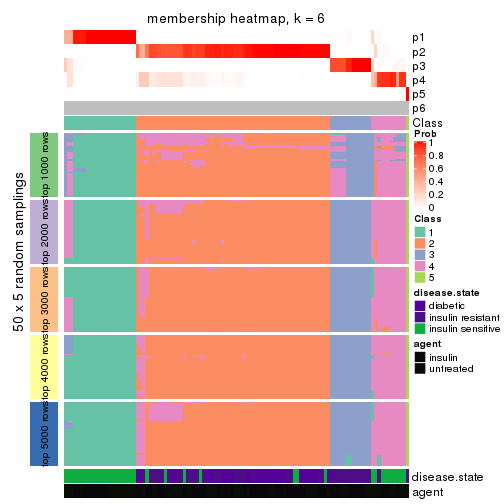
As soon as we have had the classes for columns, we can look for signatures which are significantly different between classes which can be candidate marks for certain classes. Following are the heatmaps for signatures.
Signature heatmaps where rows are scaled:
get_signatures(res, k = 2)
get_signatures(res, k = 3)
get_signatures(res, k = 4)
get_signatures(res, k = 5)
get_signatures(res, k = 6)
Signature heatmaps where rows are not scaled:
get_signatures(res, k = 2, scale_rows = FALSE)
get_signatures(res, k = 3, scale_rows = FALSE)
get_signatures(res, k = 4, scale_rows = FALSE)
get_signatures(res, k = 5, scale_rows = FALSE)
get_signatures(res, k = 6, scale_rows = FALSE)
Compare the overlap of signatures from different k:
compare_signatures(res)
get_signature() returns a data frame invisibly. TO get the list of signatures, the function
call should be assigned to a variable explicitly. In following code, if plot argument is set
to FALSE, no heatmap is plotted while only the differential analysis is performed.
# code only for demonstration
tb = get_signature(res, k = ..., plot = FALSE)
An example of the output of tb is:
#> which_row fdr mean_1 mean_2 scaled_mean_1 scaled_mean_2 km
#> 1 38 0.042760348 8.373488 9.131774 -0.5533452 0.5164555 1
#> 2 40 0.018707592 7.106213 8.469186 -0.6173731 0.5762149 1
#> 3 55 0.019134737 10.221463 11.207825 -0.6159697 0.5749050 1
#> 4 59 0.006059896 5.921854 7.869574 -0.6899429 0.6439467 1
#> 5 60 0.018055526 8.928898 10.211722 -0.6204761 0.5791110 1
#> 6 98 0.009384629 15.714769 14.887706 0.6635654 -0.6193277 2
...
The columns in tb are:
which_row: row indices corresponding to the input matrix.fdr: FDR for the differential test. mean_x: The mean value in group x.scaled_mean_x: The mean value in group x after rows are scaled.km: Row groups if k-means clustering is applied to rows.UMAP plot which shows how samples are separated.
dimension_reduction(res, k = 2, method = "UMAP")
dimension_reduction(res, k = 3, method = "UMAP")
dimension_reduction(res, k = 4, method = "UMAP")
dimension_reduction(res, k = 5, method = "UMAP")
dimension_reduction(res, k = 6, method = "UMAP")
Following heatmap shows how subgroups are split when increasing k:
collect_classes(res)
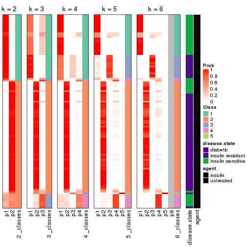
Test correlation between subgroups and known annotations. If the known annotation is numeric, one-way ANOVA test is applied, and if the known annotation is discrete, chi-squared contingency table test is applied.
test_to_known_factors(res)
#> n disease.state(p) agent(p) k
#> MAD:hclust 101 2.27e-08 0.940 2
#> MAD:hclust 105 5.02e-09 0.883 3
#> MAD:hclust 105 5.02e-09 0.883 4
#> MAD:hclust 104 3.14e-16 0.869 5
#> MAD:hclust 101 1.21e-15 0.750 6
If matrix rows can be associated to genes, consider to use GO_Enrichment(res,
...) to perform function enrichment for the signature genes.
The object with results only for a single top-value method and a single partition method can be extracted as:
res = res_list["MAD", "kmeans"]
# you can also extract it by
# res = res_list["MAD:kmeans"]
A summary of res and all the functions that can be applied to it:
res
#> A 'ConsensusPartition' object with k = 2, 3, 4, 5, 6.
#> On a matrix with 11994 rows and 110 columns.
#> Top rows (1000, 2000, 3000, 4000, 5000) are extracted by 'MAD' method.
#> Subgroups are detected by 'kmeans' method.
#> Performed in total 1250 partitions by row resampling.
#> Best k for subgroups seems to be 2.
#>
#> Following methods can be applied to this 'ConsensusPartition' object:
#> [1] "cola_report" "collect_classes" "collect_plots"
#> [4] "collect_stats" "colnames" "compare_signatures"
#> [7] "consensus_heatmap" "dimension_reduction" "functional_enrichment"
#> [10] "get_anno_col" "get_anno" "get_classes"
#> [13] "get_consensus" "get_matrix" "get_membership"
#> [16] "get_param" "get_signatures" "get_stats"
#> [19] "is_best_k" "is_stable_k" "membership_heatmap"
#> [22] "ncol" "nrow" "plot_ecdf"
#> [25] "rownames" "select_partition_number" "show"
#> [28] "suggest_best_k" "test_to_known_factors"
collect_plots() function collects all the plots made from res for all k (number of partitions)
into one single page to provide an easy and fast comparison between different k.
collect_plots(res)
The plots are:
k and the heatmap of
predicted classes for each k.k.k.k.All the plots in panels can be made by individual functions and they are plotted later in this section.
select_partition_number() produces several plots showing different
statistics for choosing “optimized” k. There are following statistics:
k;k, the area increased is defined as \(A_k - A_{k-1}\).The detailed explanations of these statistics can be found in the cola vignette.
Generally speaking, lower PAC score, higher mean silhouette score or higher
concordance corresponds to better partition. Rand index and Jaccard index
measure how similar the current partition is compared to partition with k-1.
If they are too similar, we won't accept k is better than k-1.
select_partition_number(res)
The numeric values for all these statistics can be obtained by get_stats().
get_stats(res)
#> k 1-PAC mean_silhouette concordance area_increased Rand Jaccard
#> 2 2 1.000 0.998 0.999 0.4629 0.538 0.538
#> 3 3 0.671 0.787 0.878 0.2607 0.871 0.764
#> 4 4 0.631 0.460 0.715 0.1665 0.873 0.712
#> 5 5 0.671 0.801 0.795 0.0974 0.826 0.526
#> 6 6 0.699 0.562 0.778 0.0697 0.955 0.817
suggest_best_k() suggests the best \(k\) based on these statistics. The rules are as follows:
NA.suggest_best_k(res)
#> [1] 2
Following shows the table of the partitions (You need to click the show/hide
code output link to see it). The membership matrix (columns with name p*)
is inferred by
clue::cl_consensus()
function with the SE method. Basically the value in the membership matrix
represents the probability to belong to a certain group. The finall class
label for an item is determined with the group with highest probability it
belongs to.
In get_classes() function, the entropy is calculated from the membership
matrix and the silhouette score is calculated from the consensus matrix.
cbind(get_classes(res, k = 2), get_membership(res, k = 2))
#> class entropy silhouette p1 p2
#> GSM555237 1 0.000 1.000 1.000 0.000
#> GSM555239 1 0.000 1.000 1.000 0.000
#> GSM555241 1 0.000 1.000 1.000 0.000
#> GSM555243 1 0.000 1.000 1.000 0.000
#> GSM555245 1 0.000 1.000 1.000 0.000
#> GSM555247 1 0.000 1.000 1.000 0.000
#> GSM555249 1 0.000 1.000 1.000 0.000
#> GSM555251 1 0.000 1.000 1.000 0.000
#> GSM555253 1 0.000 1.000 1.000 0.000
#> GSM555255 1 0.000 1.000 1.000 0.000
#> GSM555257 1 0.000 1.000 1.000 0.000
#> GSM555259 1 0.000 1.000 1.000 0.000
#> GSM555261 2 0.000 0.999 0.000 1.000
#> GSM555263 2 0.000 0.999 0.000 1.000
#> GSM555265 1 0.000 1.000 1.000 0.000
#> GSM555267 2 0.000 0.999 0.000 1.000
#> GSM555269 1 0.000 1.000 1.000 0.000
#> GSM555271 1 0.000 1.000 1.000 0.000
#> GSM555273 2 0.000 0.999 0.000 1.000
#> GSM555275 2 0.000 0.999 0.000 1.000
#> GSM555238 1 0.000 1.000 1.000 0.000
#> GSM555240 1 0.000 1.000 1.000 0.000
#> GSM555242 1 0.000 1.000 1.000 0.000
#> GSM555244 1 0.000 1.000 1.000 0.000
#> GSM555246 1 0.000 1.000 1.000 0.000
#> GSM555248 1 0.000 1.000 1.000 0.000
#> GSM555250 1 0.000 1.000 1.000 0.000
#> GSM555252 1 0.000 1.000 1.000 0.000
#> GSM555254 1 0.000 1.000 1.000 0.000
#> GSM555256 1 0.000 1.000 1.000 0.000
#> GSM555258 2 0.000 0.999 0.000 1.000
#> GSM555260 2 0.000 0.999 0.000 1.000
#> GSM555262 2 0.000 0.999 0.000 1.000
#> GSM555264 1 0.000 1.000 1.000 0.000
#> GSM555266 2 0.000 0.999 0.000 1.000
#> GSM555268 2 0.000 0.999 0.000 1.000
#> GSM555270 2 0.000 0.999 0.000 1.000
#> GSM555272 2 0.000 0.999 0.000 1.000
#> GSM555274 2 0.000 0.999 0.000 1.000
#> GSM555276 2 0.000 0.999 0.000 1.000
#> GSM555277 2 0.000 0.999 0.000 1.000
#> GSM555279 2 0.000 0.999 0.000 1.000
#> GSM555281 2 0.000 0.999 0.000 1.000
#> GSM555283 2 0.000 0.999 0.000 1.000
#> GSM555285 2 0.000 0.999 0.000 1.000
#> GSM555287 2 0.456 0.894 0.096 0.904
#> GSM555289 2 0.000 0.999 0.000 1.000
#> GSM555291 2 0.000 0.999 0.000 1.000
#> GSM555293 2 0.000 0.999 0.000 1.000
#> GSM555295 2 0.000 0.999 0.000 1.000
#> GSM555297 2 0.000 0.999 0.000 1.000
#> GSM555299 1 0.000 1.000 1.000 0.000
#> GSM555301 1 0.000 1.000 1.000 0.000
#> GSM555303 1 0.000 1.000 1.000 0.000
#> GSM555305 1 0.000 1.000 1.000 0.000
#> GSM555307 2 0.000 0.999 0.000 1.000
#> GSM555309 1 0.000 1.000 1.000 0.000
#> GSM555311 2 0.000 0.999 0.000 1.000
#> GSM555313 2 0.000 0.999 0.000 1.000
#> GSM555315 2 0.000 0.999 0.000 1.000
#> GSM555278 2 0.000 0.999 0.000 1.000
#> GSM555280 2 0.000 0.999 0.000 1.000
#> GSM555282 2 0.000 0.999 0.000 1.000
#> GSM555284 2 0.000 0.999 0.000 1.000
#> GSM555286 2 0.000 0.999 0.000 1.000
#> GSM555288 2 0.000 0.999 0.000 1.000
#> GSM555290 2 0.000 0.999 0.000 1.000
#> GSM555292 2 0.000 0.999 0.000 1.000
#> GSM555294 2 0.000 0.999 0.000 1.000
#> GSM555296 2 0.000 0.999 0.000 1.000
#> GSM555298 1 0.000 1.000 1.000 0.000
#> GSM555300 1 0.000 1.000 1.000 0.000
#> GSM555302 1 0.000 1.000 1.000 0.000
#> GSM555304 1 0.000 1.000 1.000 0.000
#> GSM555306 1 0.000 1.000 1.000 0.000
#> GSM555308 1 0.000 1.000 1.000 0.000
#> GSM555310 1 0.000 1.000 1.000 0.000
#> GSM555312 2 0.000 0.999 0.000 1.000
#> GSM555314 2 0.000 0.999 0.000 1.000
#> GSM555316 2 0.000 0.999 0.000 1.000
#> GSM555317 2 0.000 0.999 0.000 1.000
#> GSM555319 2 0.000 0.999 0.000 1.000
#> GSM555321 2 0.000 0.999 0.000 1.000
#> GSM555323 2 0.000 0.999 0.000 1.000
#> GSM555325 2 0.000 0.999 0.000 1.000
#> GSM555327 2 0.000 0.999 0.000 1.000
#> GSM555329 2 0.000 0.999 0.000 1.000
#> GSM555331 2 0.000 0.999 0.000 1.000
#> GSM555333 2 0.000 0.999 0.000 1.000
#> GSM555335 2 0.000 0.999 0.000 1.000
#> GSM555337 2 0.000 0.999 0.000 1.000
#> GSM555339 2 0.000 0.999 0.000 1.000
#> GSM555341 2 0.000 0.999 0.000 1.000
#> GSM555343 2 0.000 0.999 0.000 1.000
#> GSM555345 2 0.000 0.999 0.000 1.000
#> GSM555318 2 0.000 0.999 0.000 1.000
#> GSM555320 2 0.000 0.999 0.000 1.000
#> GSM555322 2 0.000 0.999 0.000 1.000
#> GSM555324 1 0.000 1.000 1.000 0.000
#> GSM555326 2 0.000 0.999 0.000 1.000
#> GSM555328 2 0.000 0.999 0.000 1.000
#> GSM555330 2 0.000 0.999 0.000 1.000
#> GSM555332 2 0.000 0.999 0.000 1.000
#> GSM555334 2 0.000 0.999 0.000 1.000
#> GSM555336 2 0.000 0.999 0.000 1.000
#> GSM555338 2 0.000 0.999 0.000 1.000
#> GSM555340 2 0.000 0.999 0.000 1.000
#> GSM555342 2 0.000 0.999 0.000 1.000
#> GSM555344 2 0.000 0.999 0.000 1.000
#> GSM555346 2 0.000 0.999 0.000 1.000
cbind(get_classes(res, k = 3), get_membership(res, k = 3))
#> class entropy silhouette p1 p2 p3
#> GSM555237 1 0.0747 0.8757 0.984 0.000 0.016
#> GSM555239 1 0.0000 0.8815 1.000 0.000 0.000
#> GSM555241 1 0.0000 0.8815 1.000 0.000 0.000
#> GSM555243 1 0.0000 0.8815 1.000 0.000 0.000
#> GSM555245 1 0.0000 0.8815 1.000 0.000 0.000
#> GSM555247 1 0.0000 0.8815 1.000 0.000 0.000
#> GSM555249 1 0.0000 0.8815 1.000 0.000 0.000
#> GSM555251 1 0.0000 0.8815 1.000 0.000 0.000
#> GSM555253 1 0.0000 0.8815 1.000 0.000 0.000
#> GSM555255 1 0.0000 0.8815 1.000 0.000 0.000
#> GSM555257 3 0.6299 -0.1260 0.476 0.000 0.524
#> GSM555259 3 0.5529 -0.0238 0.296 0.000 0.704
#> GSM555261 3 0.5138 0.7099 0.000 0.252 0.748
#> GSM555263 3 0.5497 0.6689 0.000 0.292 0.708
#> GSM555265 3 0.5521 0.7015 0.032 0.180 0.788
#> GSM555267 3 0.5138 0.7099 0.000 0.252 0.748
#> GSM555269 3 0.5529 -0.0238 0.296 0.000 0.704
#> GSM555271 1 0.5327 0.8125 0.728 0.000 0.272
#> GSM555273 2 0.5327 0.6857 0.000 0.728 0.272
#> GSM555275 2 0.5291 0.6917 0.000 0.732 0.268
#> GSM555238 1 0.0000 0.8815 1.000 0.000 0.000
#> GSM555240 1 0.0892 0.8740 0.980 0.000 0.020
#> GSM555242 1 0.0000 0.8815 1.000 0.000 0.000
#> GSM555244 1 0.0000 0.8815 1.000 0.000 0.000
#> GSM555246 1 0.0000 0.8815 1.000 0.000 0.000
#> GSM555248 1 0.0000 0.8815 1.000 0.000 0.000
#> GSM555250 1 0.0000 0.8815 1.000 0.000 0.000
#> GSM555252 1 0.0000 0.8815 1.000 0.000 0.000
#> GSM555254 1 0.0000 0.8815 1.000 0.000 0.000
#> GSM555256 1 0.0000 0.8815 1.000 0.000 0.000
#> GSM555258 3 0.5254 0.7006 0.000 0.264 0.736
#> GSM555260 3 0.5591 0.6471 0.000 0.304 0.696
#> GSM555262 2 0.5254 0.6916 0.000 0.736 0.264
#> GSM555264 3 0.5810 0.3108 0.336 0.000 0.664
#> GSM555266 2 0.0592 0.8784 0.000 0.988 0.012
#> GSM555268 2 0.0000 0.8809 0.000 1.000 0.000
#> GSM555270 2 0.0000 0.8809 0.000 1.000 0.000
#> GSM555272 3 0.5397 0.6812 0.000 0.280 0.720
#> GSM555274 2 0.5138 0.7057 0.000 0.748 0.252
#> GSM555276 2 0.0000 0.8809 0.000 1.000 0.000
#> GSM555277 2 0.3267 0.8182 0.000 0.884 0.116
#> GSM555279 2 0.5291 0.6917 0.000 0.732 0.268
#> GSM555281 2 0.5291 0.6917 0.000 0.732 0.268
#> GSM555283 2 0.5138 0.7057 0.000 0.748 0.252
#> GSM555285 2 0.5291 0.6917 0.000 0.732 0.268
#> GSM555287 3 0.4842 0.7100 0.000 0.224 0.776
#> GSM555289 2 0.0000 0.8809 0.000 1.000 0.000
#> GSM555291 2 0.5178 0.7013 0.000 0.744 0.256
#> GSM555293 2 0.0237 0.8805 0.000 0.996 0.004
#> GSM555295 2 0.5327 0.6857 0.000 0.728 0.272
#> GSM555297 3 0.5254 0.7006 0.000 0.264 0.736
#> GSM555299 1 0.5138 0.8213 0.748 0.000 0.252
#> GSM555301 1 0.5905 0.7342 0.648 0.000 0.352
#> GSM555303 1 0.5291 0.8152 0.732 0.000 0.268
#> GSM555305 1 0.5291 0.8152 0.732 0.000 0.268
#> GSM555307 2 0.5254 0.6916 0.000 0.736 0.264
#> GSM555309 1 0.5138 0.8213 0.748 0.000 0.252
#> GSM555311 2 0.5291 0.6917 0.000 0.732 0.268
#> GSM555313 2 0.0424 0.8786 0.000 0.992 0.008
#> GSM555315 2 0.5291 0.6917 0.000 0.732 0.268
#> GSM555278 2 0.0237 0.8805 0.000 0.996 0.004
#> GSM555280 2 0.0000 0.8809 0.000 1.000 0.000
#> GSM555282 2 0.4654 0.7465 0.000 0.792 0.208
#> GSM555284 2 0.5291 0.6917 0.000 0.732 0.268
#> GSM555286 2 0.0000 0.8809 0.000 1.000 0.000
#> GSM555288 3 0.6180 0.3546 0.000 0.416 0.584
#> GSM555290 2 0.0000 0.8809 0.000 1.000 0.000
#> GSM555292 2 0.0000 0.8809 0.000 1.000 0.000
#> GSM555294 2 0.0237 0.8805 0.000 0.996 0.004
#> GSM555296 2 0.0000 0.8809 0.000 1.000 0.000
#> GSM555298 1 0.5905 0.7342 0.648 0.000 0.352
#> GSM555300 1 0.5138 0.8213 0.748 0.000 0.252
#> GSM555302 1 0.5291 0.8152 0.732 0.000 0.268
#> GSM555304 1 0.5291 0.8152 0.732 0.000 0.268
#> GSM555306 1 0.5291 0.8152 0.732 0.000 0.268
#> GSM555308 1 0.5138 0.8213 0.748 0.000 0.252
#> GSM555310 1 0.5291 0.8152 0.732 0.000 0.268
#> GSM555312 2 0.5138 0.7057 0.000 0.748 0.252
#> GSM555314 2 0.5327 0.6857 0.000 0.728 0.272
#> GSM555316 2 0.0000 0.8809 0.000 1.000 0.000
#> GSM555317 2 0.0000 0.8809 0.000 1.000 0.000
#> GSM555319 2 0.0237 0.8805 0.000 0.996 0.004
#> GSM555321 2 0.0237 0.8805 0.000 0.996 0.004
#> GSM555323 2 0.0237 0.8805 0.000 0.996 0.004
#> GSM555325 2 0.0237 0.8805 0.000 0.996 0.004
#> GSM555327 2 0.0000 0.8809 0.000 1.000 0.000
#> GSM555329 2 0.0237 0.8805 0.000 0.996 0.004
#> GSM555331 2 0.0237 0.8805 0.000 0.996 0.004
#> GSM555333 2 0.5291 0.6917 0.000 0.732 0.268
#> GSM555335 2 0.1031 0.8729 0.000 0.976 0.024
#> GSM555337 2 0.0237 0.8805 0.000 0.996 0.004
#> GSM555339 2 0.3941 0.7906 0.000 0.844 0.156
#> GSM555341 2 0.3816 0.7962 0.000 0.852 0.148
#> GSM555343 2 0.0237 0.8805 0.000 0.996 0.004
#> GSM555345 2 0.3816 0.7962 0.000 0.852 0.148
#> GSM555318 2 0.0000 0.8809 0.000 1.000 0.000
#> GSM555320 2 0.0237 0.8805 0.000 0.996 0.004
#> GSM555322 2 0.0000 0.8809 0.000 1.000 0.000
#> GSM555324 1 0.5138 0.8213 0.748 0.000 0.252
#> GSM555326 2 0.0000 0.8809 0.000 1.000 0.000
#> GSM555328 2 0.0000 0.8809 0.000 1.000 0.000
#> GSM555330 2 0.0000 0.8809 0.000 1.000 0.000
#> GSM555332 2 0.0000 0.8809 0.000 1.000 0.000
#> GSM555334 2 0.0000 0.8809 0.000 1.000 0.000
#> GSM555336 2 0.0237 0.8805 0.000 0.996 0.004
#> GSM555338 2 0.0000 0.8809 0.000 1.000 0.000
#> GSM555340 2 0.0237 0.8805 0.000 0.996 0.004
#> GSM555342 2 0.0237 0.8805 0.000 0.996 0.004
#> GSM555344 2 0.0000 0.8809 0.000 1.000 0.000
#> GSM555346 2 0.0237 0.8805 0.000 0.996 0.004
cbind(get_classes(res, k = 4), get_membership(res, k = 4))
#> class entropy silhouette p1 p2 p3 p4
#> GSM555237 1 0.0188 0.779 0.996 0.000 0.004 0.000
#> GSM555239 1 0.0000 0.782 1.000 0.000 0.000 0.000
#> GSM555241 1 0.0000 0.782 1.000 0.000 0.000 0.000
#> GSM555243 1 0.0000 0.782 1.000 0.000 0.000 0.000
#> GSM555245 1 0.0000 0.782 1.000 0.000 0.000 0.000
#> GSM555247 1 0.0000 0.782 1.000 0.000 0.000 0.000
#> GSM555249 1 0.0000 0.782 1.000 0.000 0.000 0.000
#> GSM555251 1 0.0000 0.782 1.000 0.000 0.000 0.000
#> GSM555253 1 0.0000 0.782 1.000 0.000 0.000 0.000
#> GSM555255 1 0.0000 0.782 1.000 0.000 0.000 0.000
#> GSM555257 3 0.5508 0.438 0.020 0.000 0.572 0.408
#> GSM555259 3 0.5398 0.442 0.016 0.000 0.580 0.404
#> GSM555261 4 0.5168 -0.391 0.000 0.004 0.496 0.500
#> GSM555263 4 0.5407 -0.369 0.000 0.012 0.484 0.504
#> GSM555265 4 0.5168 -0.391 0.000 0.004 0.496 0.500
#> GSM555267 4 0.5168 -0.391 0.000 0.004 0.496 0.500
#> GSM555269 3 0.5398 0.442 0.016 0.000 0.580 0.404
#> GSM555271 3 0.4992 -0.456 0.476 0.000 0.524 0.000
#> GSM555273 4 0.5039 -0.122 0.000 0.404 0.004 0.592
#> GSM555275 4 0.4981 -0.158 0.000 0.464 0.000 0.536
#> GSM555238 1 0.0000 0.782 1.000 0.000 0.000 0.000
#> GSM555240 1 0.0707 0.765 0.980 0.000 0.020 0.000
#> GSM555242 1 0.0000 0.782 1.000 0.000 0.000 0.000
#> GSM555244 1 0.0000 0.782 1.000 0.000 0.000 0.000
#> GSM555246 1 0.0000 0.782 1.000 0.000 0.000 0.000
#> GSM555248 1 0.0000 0.782 1.000 0.000 0.000 0.000
#> GSM555250 1 0.0000 0.782 1.000 0.000 0.000 0.000
#> GSM555252 1 0.0469 0.771 0.988 0.000 0.012 0.000
#> GSM555254 1 0.0000 0.782 1.000 0.000 0.000 0.000
#> GSM555256 1 0.0000 0.782 1.000 0.000 0.000 0.000
#> GSM555258 4 0.5408 -0.374 0.000 0.012 0.488 0.500
#> GSM555260 4 0.5343 -0.190 0.000 0.028 0.316 0.656
#> GSM555262 2 0.4866 0.286 0.000 0.596 0.000 0.404
#> GSM555264 3 0.5288 0.352 0.008 0.000 0.520 0.472
#> GSM555266 2 0.5080 0.413 0.000 0.576 0.004 0.420
#> GSM555268 2 0.1211 0.756 0.000 0.960 0.000 0.040
#> GSM555270 2 0.1022 0.755 0.000 0.968 0.000 0.032
#> GSM555272 4 0.5406 -0.366 0.000 0.012 0.480 0.508
#> GSM555274 2 0.4776 0.350 0.000 0.624 0.000 0.376
#> GSM555276 2 0.0000 0.760 0.000 1.000 0.000 0.000
#> GSM555277 2 0.4790 0.409 0.000 0.620 0.000 0.380
#> GSM555279 4 0.4981 -0.165 0.000 0.464 0.000 0.536
#> GSM555281 4 0.4981 -0.158 0.000 0.464 0.000 0.536
#> GSM555283 2 0.4925 0.318 0.000 0.572 0.000 0.428
#> GSM555285 4 0.5097 -0.170 0.000 0.428 0.004 0.568
#> GSM555287 3 0.4998 0.298 0.000 0.000 0.512 0.488
#> GSM555289 2 0.1302 0.762 0.000 0.956 0.000 0.044
#> GSM555291 2 0.4977 0.235 0.000 0.540 0.000 0.460
#> GSM555293 2 0.3448 0.734 0.000 0.828 0.004 0.168
#> GSM555295 4 0.4948 -0.110 0.000 0.440 0.000 0.560
#> GSM555297 4 0.5408 -0.374 0.000 0.012 0.488 0.500
#> GSM555299 1 0.4992 0.462 0.524 0.000 0.476 0.000
#> GSM555301 3 0.4888 -0.321 0.412 0.000 0.588 0.000
#> GSM555303 1 0.4994 0.458 0.520 0.000 0.480 0.000
#> GSM555305 1 0.4994 0.458 0.520 0.000 0.480 0.000
#> GSM555307 2 0.4967 0.252 0.000 0.548 0.000 0.452
#> GSM555309 1 0.4992 0.462 0.524 0.000 0.476 0.000
#> GSM555311 4 0.4977 -0.153 0.000 0.460 0.000 0.540
#> GSM555313 2 0.4522 0.471 0.000 0.680 0.000 0.320
#> GSM555315 4 0.5147 -0.157 0.000 0.460 0.004 0.536
#> GSM555278 2 0.4889 0.511 0.000 0.636 0.004 0.360
#> GSM555280 2 0.0188 0.760 0.000 0.996 0.000 0.004
#> GSM555282 2 0.4624 0.427 0.000 0.660 0.000 0.340
#> GSM555284 2 0.4967 0.227 0.000 0.548 0.000 0.452
#> GSM555286 2 0.1022 0.755 0.000 0.968 0.000 0.032
#> GSM555288 4 0.5457 0.214 0.000 0.184 0.088 0.728
#> GSM555290 2 0.0188 0.760 0.000 0.996 0.000 0.004
#> GSM555292 2 0.3726 0.605 0.000 0.788 0.000 0.212
#> GSM555294 2 0.3105 0.737 0.000 0.856 0.004 0.140
#> GSM555296 2 0.1557 0.752 0.000 0.944 0.000 0.056
#> GSM555298 3 0.4888 -0.321 0.412 0.000 0.588 0.000
#> GSM555300 1 0.4992 0.462 0.524 0.000 0.476 0.000
#> GSM555302 1 0.4994 0.458 0.520 0.000 0.480 0.000
#> GSM555304 1 0.4994 0.458 0.520 0.000 0.480 0.000
#> GSM555306 1 0.4994 0.458 0.520 0.000 0.480 0.000
#> GSM555308 1 0.4992 0.462 0.524 0.000 0.476 0.000
#> GSM555310 1 0.4994 0.458 0.520 0.000 0.480 0.000
#> GSM555312 2 0.4790 0.348 0.000 0.620 0.000 0.380
#> GSM555314 4 0.4948 -0.110 0.000 0.440 0.000 0.560
#> GSM555316 2 0.0000 0.760 0.000 1.000 0.000 0.000
#> GSM555317 2 0.1474 0.760 0.000 0.948 0.000 0.052
#> GSM555319 2 0.3074 0.742 0.000 0.848 0.000 0.152
#> GSM555321 2 0.3172 0.738 0.000 0.840 0.000 0.160
#> GSM555323 2 0.3311 0.734 0.000 0.828 0.000 0.172
#> GSM555325 2 0.3626 0.730 0.000 0.812 0.004 0.184
#> GSM555327 2 0.1474 0.760 0.000 0.948 0.000 0.052
#> GSM555329 2 0.3074 0.742 0.000 0.848 0.000 0.152
#> GSM555331 2 0.2760 0.746 0.000 0.872 0.000 0.128
#> GSM555333 4 0.4977 -0.148 0.000 0.460 0.000 0.540
#> GSM555335 2 0.3610 0.716 0.000 0.800 0.000 0.200
#> GSM555337 2 0.3123 0.740 0.000 0.844 0.000 0.156
#> GSM555339 2 0.4981 0.241 0.000 0.536 0.000 0.464
#> GSM555341 2 0.4304 0.568 0.000 0.716 0.000 0.284
#> GSM555343 2 0.3448 0.734 0.000 0.828 0.004 0.168
#> GSM555345 2 0.4134 0.598 0.000 0.740 0.000 0.260
#> GSM555318 2 0.1302 0.762 0.000 0.956 0.000 0.044
#> GSM555320 2 0.2888 0.739 0.000 0.872 0.004 0.124
#> GSM555322 2 0.1022 0.755 0.000 0.968 0.000 0.032
#> GSM555324 1 0.4992 0.462 0.524 0.000 0.476 0.000
#> GSM555326 2 0.1022 0.755 0.000 0.968 0.000 0.032
#> GSM555328 2 0.0188 0.760 0.000 0.996 0.000 0.004
#> GSM555330 2 0.0000 0.760 0.000 1.000 0.000 0.000
#> GSM555332 2 0.0188 0.760 0.000 0.996 0.000 0.004
#> GSM555334 2 0.0188 0.760 0.000 0.996 0.000 0.004
#> GSM555336 2 0.2530 0.741 0.000 0.888 0.000 0.112
#> GSM555338 2 0.1557 0.759 0.000 0.944 0.000 0.056
#> GSM555340 2 0.3219 0.737 0.000 0.836 0.000 0.164
#> GSM555342 2 0.3539 0.730 0.000 0.820 0.004 0.176
#> GSM555344 2 0.0921 0.759 0.000 0.972 0.000 0.028
#> GSM555346 2 0.4088 0.702 0.000 0.764 0.004 0.232
cbind(get_classes(res, k = 5), get_membership(res, k = 5))
#> class entropy silhouette p1 p2 p3 p4 p5
#> GSM555237 1 0.1197 0.963 0.952 0.000 0.000 0.000 0.048
#> GSM555239 1 0.0162 0.978 0.996 0.000 0.000 0.000 0.004
#> GSM555241 1 0.0162 0.978 0.996 0.000 0.000 0.000 0.004
#> GSM555243 1 0.0162 0.978 0.996 0.000 0.000 0.000 0.004
#> GSM555245 1 0.0162 0.978 0.996 0.000 0.000 0.000 0.004
#> GSM555247 1 0.0162 0.978 0.996 0.000 0.000 0.000 0.004
#> GSM555249 1 0.0000 0.979 1.000 0.000 0.000 0.000 0.000
#> GSM555251 1 0.0000 0.979 1.000 0.000 0.000 0.000 0.000
#> GSM555253 1 0.0162 0.978 0.996 0.000 0.000 0.000 0.004
#> GSM555255 1 0.1197 0.963 0.952 0.000 0.000 0.000 0.048
#> GSM555257 4 0.1082 0.945 0.000 0.000 0.028 0.964 0.008
#> GSM555259 4 0.0404 0.953 0.000 0.000 0.012 0.988 0.000
#> GSM555261 4 0.0290 0.958 0.000 0.000 0.000 0.992 0.008
#> GSM555263 4 0.0290 0.958 0.000 0.000 0.000 0.992 0.008
#> GSM555265 4 0.0290 0.958 0.000 0.000 0.000 0.992 0.008
#> GSM555267 4 0.0290 0.958 0.000 0.000 0.000 0.992 0.008
#> GSM555269 4 0.0404 0.953 0.000 0.000 0.012 0.988 0.000
#> GSM555271 3 0.4915 0.963 0.268 0.000 0.684 0.020 0.028
#> GSM555273 5 0.5229 0.723 0.000 0.192 0.080 0.020 0.708
#> GSM555275 5 0.3300 0.822 0.000 0.204 0.000 0.004 0.792
#> GSM555238 1 0.1197 0.963 0.952 0.000 0.000 0.000 0.048
#> GSM555240 1 0.1357 0.960 0.948 0.000 0.000 0.004 0.048
#> GSM555242 1 0.1197 0.963 0.952 0.000 0.000 0.000 0.048
#> GSM555244 1 0.0000 0.979 1.000 0.000 0.000 0.000 0.000
#> GSM555246 1 0.0000 0.979 1.000 0.000 0.000 0.000 0.000
#> GSM555248 1 0.0000 0.979 1.000 0.000 0.000 0.000 0.000
#> GSM555250 1 0.0000 0.979 1.000 0.000 0.000 0.000 0.000
#> GSM555252 1 0.1357 0.960 0.948 0.000 0.000 0.004 0.048
#> GSM555254 1 0.0162 0.978 0.996 0.000 0.000 0.000 0.004
#> GSM555256 1 0.1197 0.963 0.952 0.000 0.000 0.000 0.048
#> GSM555258 4 0.0898 0.955 0.000 0.000 0.008 0.972 0.020
#> GSM555260 4 0.4276 0.643 0.000 0.000 0.028 0.716 0.256
#> GSM555262 5 0.4794 0.768 0.000 0.344 0.032 0.000 0.624
#> GSM555264 4 0.1493 0.946 0.000 0.000 0.024 0.948 0.028
#> GSM555266 5 0.4956 0.756 0.000 0.316 0.048 0.000 0.636
#> GSM555268 2 0.1701 0.736 0.000 0.936 0.048 0.000 0.016
#> GSM555270 2 0.0955 0.744 0.000 0.968 0.028 0.000 0.004
#> GSM555272 4 0.0992 0.953 0.000 0.000 0.008 0.968 0.024
#> GSM555274 5 0.4849 0.758 0.000 0.360 0.032 0.000 0.608
#> GSM555276 2 0.2153 0.734 0.000 0.916 0.040 0.000 0.044
#> GSM555277 5 0.4941 0.743 0.000 0.328 0.044 0.000 0.628
#> GSM555279 5 0.3039 0.817 0.000 0.192 0.000 0.000 0.808
#> GSM555281 5 0.3489 0.823 0.000 0.208 0.004 0.004 0.784
#> GSM555283 5 0.4268 0.808 0.000 0.268 0.024 0.000 0.708
#> GSM555285 5 0.5870 0.611 0.000 0.208 0.168 0.004 0.620
#> GSM555287 4 0.2645 0.897 0.000 0.000 0.044 0.888 0.068
#> GSM555289 2 0.3085 0.735 0.000 0.852 0.032 0.000 0.116
#> GSM555291 5 0.4039 0.812 0.000 0.268 0.008 0.004 0.720
#> GSM555293 2 0.5155 0.673 0.000 0.692 0.168 0.000 0.140
#> GSM555295 5 0.4107 0.817 0.000 0.192 0.016 0.020 0.772
#> GSM555297 4 0.0510 0.956 0.000 0.000 0.000 0.984 0.016
#> GSM555299 3 0.4822 0.970 0.288 0.000 0.664 0.000 0.048
#> GSM555301 3 0.4243 0.956 0.264 0.000 0.712 0.024 0.000
#> GSM555303 3 0.4464 0.973 0.288 0.000 0.684 0.000 0.028
#> GSM555305 3 0.3730 0.973 0.288 0.000 0.712 0.000 0.000
#> GSM555307 5 0.4692 0.778 0.000 0.276 0.024 0.012 0.688
#> GSM555309 3 0.4822 0.970 0.288 0.000 0.664 0.000 0.048
#> GSM555311 5 0.3900 0.810 0.000 0.180 0.020 0.012 0.788
#> GSM555313 5 0.4794 0.772 0.000 0.344 0.032 0.000 0.624
#> GSM555315 5 0.4426 0.789 0.000 0.196 0.052 0.004 0.748
#> GSM555278 5 0.5216 0.569 0.000 0.436 0.044 0.000 0.520
#> GSM555280 2 0.1818 0.732 0.000 0.932 0.024 0.000 0.044
#> GSM555282 5 0.4886 0.745 0.000 0.372 0.032 0.000 0.596
#> GSM555284 5 0.4716 0.785 0.000 0.308 0.036 0.000 0.656
#> GSM555286 2 0.0955 0.744 0.000 0.968 0.028 0.000 0.004
#> GSM555288 5 0.6190 0.588 0.000 0.140 0.028 0.208 0.624
#> GSM555290 2 0.1282 0.744 0.000 0.952 0.004 0.000 0.044
#> GSM555292 2 0.4974 -0.314 0.000 0.560 0.032 0.000 0.408
#> GSM555294 2 0.4734 0.654 0.000 0.732 0.160 0.000 0.108
#> GSM555296 2 0.4136 0.547 0.000 0.764 0.048 0.000 0.188
#> GSM555298 3 0.4243 0.956 0.264 0.000 0.712 0.024 0.000
#> GSM555300 3 0.4822 0.970 0.288 0.000 0.664 0.000 0.048
#> GSM555302 3 0.3730 0.973 0.288 0.000 0.712 0.000 0.000
#> GSM555304 3 0.3730 0.973 0.288 0.000 0.712 0.000 0.000
#> GSM555306 3 0.3730 0.973 0.288 0.000 0.712 0.000 0.000
#> GSM555308 3 0.4822 0.970 0.288 0.000 0.664 0.000 0.048
#> GSM555310 3 0.3730 0.973 0.288 0.000 0.712 0.000 0.000
#> GSM555312 5 0.4779 0.775 0.000 0.340 0.032 0.000 0.628
#> GSM555314 5 0.3777 0.819 0.000 0.192 0.004 0.020 0.784
#> GSM555316 2 0.1364 0.747 0.000 0.952 0.012 0.000 0.036
#> GSM555317 2 0.3291 0.729 0.000 0.840 0.040 0.000 0.120
#> GSM555319 2 0.4591 0.705 0.000 0.748 0.120 0.000 0.132
#> GSM555321 2 0.4720 0.699 0.000 0.736 0.124 0.000 0.140
#> GSM555323 2 0.5385 0.551 0.000 0.624 0.088 0.000 0.288
#> GSM555325 2 0.5478 0.635 0.000 0.656 0.164 0.000 0.180
#> GSM555327 2 0.3002 0.733 0.000 0.856 0.028 0.000 0.116
#> GSM555329 2 0.4591 0.705 0.000 0.748 0.120 0.000 0.132
#> GSM555331 2 0.4455 0.707 0.000 0.744 0.068 0.000 0.188
#> GSM555333 5 0.4048 0.818 0.000 0.196 0.016 0.016 0.772
#> GSM555335 2 0.5559 0.413 0.000 0.572 0.084 0.000 0.344
#> GSM555337 2 0.4679 0.702 0.000 0.740 0.124 0.000 0.136
#> GSM555339 5 0.4910 0.766 0.000 0.276 0.048 0.004 0.672
#> GSM555341 2 0.5165 0.217 0.000 0.576 0.048 0.000 0.376
#> GSM555343 2 0.5195 0.670 0.000 0.688 0.168 0.000 0.144
#> GSM555345 2 0.5329 0.301 0.000 0.584 0.052 0.004 0.360
#> GSM555318 2 0.3389 0.726 0.000 0.836 0.048 0.000 0.116
#> GSM555320 2 0.4158 0.677 0.000 0.784 0.124 0.000 0.092
#> GSM555322 2 0.1251 0.746 0.000 0.956 0.036 0.000 0.008
#> GSM555324 3 0.4822 0.970 0.288 0.000 0.664 0.000 0.048
#> GSM555326 2 0.0955 0.744 0.000 0.968 0.028 0.000 0.004
#> GSM555328 2 0.2153 0.727 0.000 0.916 0.040 0.000 0.044
#> GSM555330 2 0.2230 0.729 0.000 0.912 0.044 0.000 0.044
#> GSM555332 2 0.2304 0.727 0.000 0.908 0.048 0.000 0.044
#> GSM555334 2 0.2077 0.728 0.000 0.920 0.040 0.000 0.040
#> GSM555336 2 0.3759 0.704 0.000 0.808 0.136 0.000 0.056
#> GSM555338 2 0.3386 0.731 0.000 0.832 0.040 0.000 0.128
#> GSM555340 2 0.4764 0.698 0.000 0.732 0.128 0.000 0.140
#> GSM555342 2 0.5233 0.602 0.000 0.684 0.168 0.000 0.148
#> GSM555344 2 0.3201 0.685 0.000 0.852 0.052 0.000 0.096
#> GSM555346 2 0.6040 0.357 0.000 0.560 0.156 0.000 0.284
cbind(get_classes(res, k = 6), get_membership(res, k = 6))
#> class entropy silhouette p1 p2 p3 p4 p5 p6
#> GSM555237 1 0.2118 0.9223 0.888 0.000 0.000 0.008 0.000 0.104
#> GSM555239 1 0.0405 0.9561 0.988 0.000 0.000 0.000 0.004 0.008
#> GSM555241 1 0.0146 0.9587 0.996 0.000 0.000 0.000 0.004 0.000
#> GSM555243 1 0.0000 0.9593 1.000 0.000 0.000 0.000 0.000 0.000
#> GSM555245 1 0.0000 0.9593 1.000 0.000 0.000 0.000 0.000 0.000
#> GSM555247 1 0.0000 0.9593 1.000 0.000 0.000 0.000 0.000 0.000
#> GSM555249 1 0.0000 0.9593 1.000 0.000 0.000 0.000 0.000 0.000
#> GSM555251 1 0.0000 0.9593 1.000 0.000 0.000 0.000 0.000 0.000
#> GSM555253 1 0.0405 0.9561 0.988 0.000 0.000 0.000 0.004 0.008
#> GSM555255 1 0.2006 0.9266 0.892 0.000 0.000 0.000 0.004 0.104
#> GSM555257 4 0.1088 0.9235 0.000 0.000 0.016 0.960 0.000 0.024
#> GSM555259 4 0.0458 0.9242 0.000 0.000 0.016 0.984 0.000 0.000
#> GSM555261 4 0.0363 0.9301 0.000 0.000 0.000 0.988 0.012 0.000
#> GSM555263 4 0.0713 0.9272 0.000 0.000 0.000 0.972 0.028 0.000
#> GSM555265 4 0.0260 0.9299 0.000 0.000 0.000 0.992 0.008 0.000
#> GSM555267 4 0.0363 0.9301 0.000 0.000 0.000 0.988 0.012 0.000
#> GSM555269 4 0.0458 0.9242 0.000 0.000 0.016 0.984 0.000 0.000
#> GSM555271 3 0.3560 0.9571 0.176 0.000 0.788 0.020 0.000 0.016
#> GSM555273 5 0.5490 0.5729 0.000 0.084 0.048 0.008 0.664 0.196
#> GSM555275 5 0.2095 0.7138 0.000 0.040 0.012 0.008 0.920 0.020
#> GSM555238 1 0.2006 0.9246 0.892 0.000 0.000 0.004 0.000 0.104
#> GSM555240 1 0.2118 0.9223 0.888 0.000 0.000 0.008 0.000 0.104
#> GSM555242 1 0.2006 0.9246 0.892 0.000 0.000 0.004 0.000 0.104
#> GSM555244 1 0.0000 0.9593 1.000 0.000 0.000 0.000 0.000 0.000
#> GSM555246 1 0.0000 0.9593 1.000 0.000 0.000 0.000 0.000 0.000
#> GSM555248 1 0.0000 0.9593 1.000 0.000 0.000 0.000 0.000 0.000
#> GSM555250 1 0.0000 0.9593 1.000 0.000 0.000 0.000 0.000 0.000
#> GSM555252 1 0.2006 0.9246 0.892 0.000 0.000 0.004 0.000 0.104
#> GSM555254 1 0.0405 0.9561 0.988 0.000 0.000 0.000 0.004 0.008
#> GSM555256 1 0.2006 0.9246 0.892 0.000 0.000 0.004 0.000 0.104
#> GSM555258 4 0.1390 0.9264 0.000 0.000 0.004 0.948 0.016 0.032
#> GSM555260 4 0.5504 0.3947 0.000 0.000 0.044 0.568 0.332 0.056
#> GSM555262 5 0.4386 0.6714 0.000 0.080 0.048 0.000 0.768 0.104
#> GSM555264 4 0.2766 0.8873 0.000 0.000 0.028 0.868 0.012 0.092
#> GSM555266 5 0.4737 0.6228 0.000 0.120 0.016 0.000 0.712 0.152
#> GSM555268 2 0.4971 0.1090 0.000 0.640 0.044 0.000 0.032 0.284
#> GSM555270 2 0.3716 0.2801 0.000 0.732 0.008 0.000 0.012 0.248
#> GSM555272 4 0.1478 0.9258 0.000 0.000 0.004 0.944 0.020 0.032
#> GSM555274 5 0.4391 0.6731 0.000 0.084 0.048 0.000 0.768 0.100
#> GSM555276 2 0.4879 -0.2129 0.000 0.544 0.000 0.000 0.064 0.392
#> GSM555277 5 0.4074 0.6611 0.000 0.060 0.028 0.000 0.780 0.132
#> GSM555279 5 0.1963 0.7161 0.000 0.044 0.012 0.004 0.924 0.016
#> GSM555281 5 0.1750 0.7173 0.000 0.040 0.012 0.000 0.932 0.016
#> GSM555283 5 0.3306 0.7043 0.000 0.056 0.052 0.000 0.848 0.044
#> GSM555285 5 0.6852 0.3506 0.000 0.240 0.060 0.008 0.484 0.208
#> GSM555287 4 0.3752 0.8327 0.000 0.000 0.060 0.800 0.016 0.124
#> GSM555289 2 0.5051 0.0667 0.000 0.652 0.020 0.000 0.080 0.248
#> GSM555291 5 0.3423 0.7069 0.000 0.056 0.052 0.008 0.848 0.036
#> GSM555293 2 0.3694 0.3585 0.000 0.808 0.024 0.000 0.048 0.120
#> GSM555295 5 0.2919 0.7042 0.000 0.040 0.020 0.008 0.876 0.056
#> GSM555297 4 0.1296 0.9200 0.000 0.000 0.004 0.952 0.032 0.012
#> GSM555299 3 0.3755 0.9567 0.192 0.000 0.768 0.000 0.012 0.028
#> GSM555301 3 0.4031 0.9498 0.168 0.000 0.768 0.028 0.000 0.036
#> GSM555303 3 0.2871 0.9626 0.192 0.000 0.804 0.000 0.004 0.000
#> GSM555305 3 0.3691 0.9632 0.192 0.000 0.768 0.004 0.000 0.036
#> GSM555307 5 0.4082 0.6452 0.000 0.052 0.016 0.008 0.780 0.144
#> GSM555309 3 0.3931 0.9527 0.192 0.000 0.756 0.000 0.008 0.044
#> GSM555311 5 0.2840 0.7063 0.000 0.048 0.016 0.008 0.880 0.048
#> GSM555313 5 0.4059 0.6398 0.000 0.088 0.004 0.000 0.760 0.148
#> GSM555315 5 0.4063 0.6665 0.000 0.048 0.028 0.008 0.792 0.124
#> GSM555278 5 0.5906 0.4870 0.000 0.184 0.044 0.000 0.600 0.172
#> GSM555280 2 0.5436 -0.1198 0.000 0.572 0.036 0.000 0.060 0.332
#> GSM555282 5 0.4995 0.6091 0.000 0.088 0.044 0.000 0.704 0.164
#> GSM555284 5 0.4145 0.6721 0.000 0.068 0.040 0.000 0.784 0.108
#> GSM555286 2 0.3788 0.2795 0.000 0.732 0.012 0.000 0.012 0.244
#> GSM555288 5 0.4386 0.6805 0.000 0.040 0.048 0.064 0.796 0.052
#> GSM555290 2 0.5065 0.0550 0.000 0.628 0.032 0.000 0.048 0.292
#> GSM555292 5 0.6444 0.2549 0.000 0.224 0.056 0.000 0.524 0.196
#> GSM555294 2 0.4438 0.3225 0.000 0.720 0.032 0.000 0.036 0.212
#> GSM555296 6 0.6042 0.0000 0.000 0.392 0.004 0.000 0.208 0.396
#> GSM555298 3 0.4172 0.9456 0.168 0.000 0.760 0.036 0.000 0.036
#> GSM555300 3 0.3755 0.9567 0.192 0.000 0.768 0.000 0.012 0.028
#> GSM555302 3 0.3691 0.9632 0.192 0.000 0.768 0.004 0.000 0.036
#> GSM555304 3 0.3691 0.9632 0.192 0.000 0.768 0.004 0.000 0.036
#> GSM555306 3 0.3691 0.9632 0.192 0.000 0.768 0.004 0.000 0.036
#> GSM555308 3 0.3755 0.9567 0.192 0.000 0.768 0.000 0.012 0.028
#> GSM555310 3 0.3691 0.9632 0.192 0.000 0.768 0.004 0.000 0.036
#> GSM555312 5 0.3618 0.6865 0.000 0.080 0.008 0.000 0.808 0.104
#> GSM555314 5 0.2334 0.7115 0.000 0.040 0.012 0.008 0.908 0.032
#> GSM555316 2 0.4496 0.0836 0.000 0.644 0.004 0.000 0.044 0.308
#> GSM555317 2 0.5177 -0.1035 0.000 0.604 0.008 0.000 0.096 0.292
#> GSM555319 2 0.1155 0.4122 0.000 0.956 0.004 0.000 0.036 0.004
#> GSM555321 2 0.2172 0.4061 0.000 0.912 0.020 0.000 0.044 0.024
#> GSM555323 2 0.6207 -0.2554 0.000 0.480 0.016 0.000 0.236 0.268
#> GSM555325 2 0.4050 0.3414 0.000 0.784 0.028 0.000 0.064 0.124
#> GSM555327 2 0.4790 0.0421 0.000 0.648 0.004 0.000 0.080 0.268
#> GSM555329 2 0.1155 0.4122 0.000 0.956 0.004 0.000 0.036 0.004
#> GSM555331 2 0.5298 -0.0392 0.000 0.620 0.008 0.000 0.140 0.232
#> GSM555333 5 0.2919 0.7042 0.000 0.040 0.020 0.008 0.876 0.056
#> GSM555335 5 0.6520 -0.4652 0.000 0.340 0.020 0.000 0.364 0.276
#> GSM555337 2 0.1806 0.4102 0.000 0.928 0.020 0.000 0.044 0.008
#> GSM555339 5 0.4598 0.6078 0.000 0.052 0.020 0.008 0.724 0.196
#> GSM555341 5 0.6685 -0.4147 0.000 0.252 0.036 0.000 0.396 0.316
#> GSM555343 2 0.3854 0.3519 0.000 0.796 0.028 0.000 0.048 0.128
#> GSM555345 5 0.6736 -0.4753 0.000 0.292 0.020 0.008 0.372 0.308
#> GSM555318 2 0.5331 -0.1737 0.000 0.576 0.008 0.000 0.104 0.312
#> GSM555320 2 0.4308 0.3216 0.000 0.736 0.024 0.000 0.044 0.196
#> GSM555322 2 0.3420 0.3198 0.000 0.776 0.008 0.000 0.012 0.204
#> GSM555324 3 0.3931 0.9527 0.192 0.000 0.756 0.000 0.008 0.044
#> GSM555326 2 0.3692 0.2841 0.000 0.736 0.008 0.000 0.012 0.244
#> GSM555328 2 0.5186 -0.2184 0.000 0.540 0.012 0.000 0.064 0.384
#> GSM555330 2 0.4933 -0.2524 0.000 0.536 0.000 0.000 0.068 0.396
#> GSM555332 2 0.5050 -0.3627 0.000 0.508 0.000 0.000 0.076 0.416
#> GSM555334 2 0.4970 -0.2271 0.000 0.540 0.004 0.000 0.060 0.396
#> GSM555336 2 0.3110 0.3762 0.000 0.836 0.020 0.000 0.016 0.128
#> GSM555338 2 0.4592 0.0882 0.000 0.664 0.000 0.000 0.080 0.256
#> GSM555340 2 0.2001 0.4084 0.000 0.920 0.020 0.000 0.044 0.016
#> GSM555342 2 0.5356 0.2254 0.000 0.636 0.036 0.000 0.084 0.244
#> GSM555344 2 0.5495 -0.5045 0.000 0.472 0.012 0.000 0.088 0.428
#> GSM555346 2 0.6240 0.1036 0.000 0.532 0.044 0.000 0.160 0.264
Heatmaps for the consensus matrix. It visualizes the probability of two samples to be in a same group.
consensus_heatmap(res, k = 2)
consensus_heatmap(res, k = 3)
consensus_heatmap(res, k = 4)
consensus_heatmap(res, k = 5)
consensus_heatmap(res, k = 6)
Heatmaps for the membership of samples in all partitions to see how consistent they are:
membership_heatmap(res, k = 2)
membership_heatmap(res, k = 3)
membership_heatmap(res, k = 4)
membership_heatmap(res, k = 5)
membership_heatmap(res, k = 6)
As soon as we have had the classes for columns, we can look for signatures which are significantly different between classes which can be candidate marks for certain classes. Following are the heatmaps for signatures.
Signature heatmaps where rows are scaled:
get_signatures(res, k = 2)
get_signatures(res, k = 3)
get_signatures(res, k = 4)
get_signatures(res, k = 5)
get_signatures(res, k = 6)
Signature heatmaps where rows are not scaled:
get_signatures(res, k = 2, scale_rows = FALSE)
get_signatures(res, k = 3, scale_rows = FALSE)
get_signatures(res, k = 4, scale_rows = FALSE)
get_signatures(res, k = 5, scale_rows = FALSE)
get_signatures(res, k = 6, scale_rows = FALSE)
Compare the overlap of signatures from different k:
compare_signatures(res)
get_signature() returns a data frame invisibly. TO get the list of signatures, the function
call should be assigned to a variable explicitly. In following code, if plot argument is set
to FALSE, no heatmap is plotted while only the differential analysis is performed.
# code only for demonstration
tb = get_signature(res, k = ..., plot = FALSE)
An example of the output of tb is:
#> which_row fdr mean_1 mean_2 scaled_mean_1 scaled_mean_2 km
#> 1 38 0.042760348 8.373488 9.131774 -0.5533452 0.5164555 1
#> 2 40 0.018707592 7.106213 8.469186 -0.6173731 0.5762149 1
#> 3 55 0.019134737 10.221463 11.207825 -0.6159697 0.5749050 1
#> 4 59 0.006059896 5.921854 7.869574 -0.6899429 0.6439467 1
#> 5 60 0.018055526 8.928898 10.211722 -0.6204761 0.5791110 1
#> 6 98 0.009384629 15.714769 14.887706 0.6635654 -0.6193277 2
...
The columns in tb are:
which_row: row indices corresponding to the input matrix.fdr: FDR for the differential test. mean_x: The mean value in group x.scaled_mean_x: The mean value in group x after rows are scaled.km: Row groups if k-means clustering is applied to rows.UMAP plot which shows how samples are separated.
dimension_reduction(res, k = 2, method = "UMAP")
dimension_reduction(res, k = 3, method = "UMAP")
dimension_reduction(res, k = 4, method = "UMAP")
dimension_reduction(res, k = 5, method = "UMAP")
dimension_reduction(res, k = 6, method = "UMAP")
Following heatmap shows how subgroups are split when increasing k:
collect_classes(res)
Test correlation between subgroups and known annotations. If the known annotation is numeric, one-way ANOVA test is applied, and if the known annotation is discrete, chi-squared contingency table test is applied.
test_to_known_factors(res)
#> n disease.state(p) agent(p) k
#> MAD:kmeans 110 4.33e-07 1.000 2
#> MAD:kmeans 105 6.84e-08 0.556 3
#> MAD:kmeans 60 3.31e-11 0.517 4
#> MAD:kmeans 105 3.42e-19 0.156 5
#> MAD:kmeans 68 1.52e-07 0.317 6
If matrix rows can be associated to genes, consider to use GO_Enrichment(res,
...) to perform function enrichment for the signature genes.
The object with results only for a single top-value method and a single partition method can be extracted as:
res = res_list["MAD", "skmeans"]
# you can also extract it by
# res = res_list["MAD:skmeans"]
A summary of res and all the functions that can be applied to it:
res
#> A 'ConsensusPartition' object with k = 2, 3, 4, 5, 6.
#> On a matrix with 11994 rows and 110 columns.
#> Top rows (1000, 2000, 3000, 4000, 5000) are extracted by 'MAD' method.
#> Subgroups are detected by 'skmeans' method.
#> Performed in total 1250 partitions by row resampling.
#> Best k for subgroups seems to be 3.
#>
#> Following methods can be applied to this 'ConsensusPartition' object:
#> [1] "cola_report" "collect_classes" "collect_plots"
#> [4] "collect_stats" "colnames" "compare_signatures"
#> [7] "consensus_heatmap" "dimension_reduction" "functional_enrichment"
#> [10] "get_anno_col" "get_anno" "get_classes"
#> [13] "get_consensus" "get_matrix" "get_membership"
#> [16] "get_param" "get_signatures" "get_stats"
#> [19] "is_best_k" "is_stable_k" "membership_heatmap"
#> [22] "ncol" "nrow" "plot_ecdf"
#> [25] "rownames" "select_partition_number" "show"
#> [28] "suggest_best_k" "test_to_known_factors"
collect_plots() function collects all the plots made from res for all k (number of partitions)
into one single page to provide an easy and fast comparison between different k.
collect_plots(res)
The plots are:
k and the heatmap of
predicted classes for each k.k.k.k.All the plots in panels can be made by individual functions and they are plotted later in this section.
select_partition_number() produces several plots showing different
statistics for choosing “optimized” k. There are following statistics:
k;k, the area increased is defined as \(A_k - A_{k-1}\).The detailed explanations of these statistics can be found in the cola vignette.
Generally speaking, lower PAC score, higher mean silhouette score or higher
concordance corresponds to better partition. Rand index and Jaccard index
measure how similar the current partition is compared to partition with k-1.
If they are too similar, we won't accept k is better than k-1.
select_partition_number(res)
The numeric values for all these statistics can be obtained by get_stats().
get_stats(res)
#> k 1-PAC mean_silhouette concordance area_increased Rand Jaccard
#> 2 2 1.000 0.996 0.998 0.4856 0.516 0.516
#> 3 3 0.916 0.931 0.946 0.1817 0.905 0.817
#> 4 4 0.752 0.855 0.892 0.1385 0.949 0.882
#> 5 5 0.701 0.712 0.851 0.1624 0.828 0.562
#> 6 6 0.705 0.564 0.741 0.0511 0.918 0.661
suggest_best_k() suggests the best \(k\) based on these statistics. The rules are as follows:
NA.suggest_best_k(res)
#> [1] 3
#> attr(,"optional")
#> [1] 2
There is also optional best \(k\) = 2 that is worth to check.
Following shows the table of the partitions (You need to click the show/hide
code output link to see it). The membership matrix (columns with name p*)
is inferred by
clue::cl_consensus()
function with the SE method. Basically the value in the membership matrix
represents the probability to belong to a certain group. The finall class
label for an item is determined with the group with highest probability it
belongs to.
In get_classes() function, the entropy is calculated from the membership
matrix and the silhouette score is calculated from the consensus matrix.
cbind(get_classes(res, k = 2), get_membership(res, k = 2))
#> class entropy silhouette p1 p2
#> GSM555237 1 0.000 1.000 1.0 0.0
#> GSM555239 1 0.000 1.000 1.0 0.0
#> GSM555241 1 0.000 1.000 1.0 0.0
#> GSM555243 1 0.000 1.000 1.0 0.0
#> GSM555245 1 0.000 1.000 1.0 0.0
#> GSM555247 1 0.000 1.000 1.0 0.0
#> GSM555249 1 0.000 1.000 1.0 0.0
#> GSM555251 1 0.000 1.000 1.0 0.0
#> GSM555253 1 0.000 1.000 1.0 0.0
#> GSM555255 1 0.000 1.000 1.0 0.0
#> GSM555257 1 0.000 1.000 1.0 0.0
#> GSM555259 1 0.000 1.000 1.0 0.0
#> GSM555261 1 0.000 1.000 1.0 0.0
#> GSM555263 2 0.000 0.997 0.0 1.0
#> GSM555265 1 0.000 1.000 1.0 0.0
#> GSM555267 1 0.000 1.000 1.0 0.0
#> GSM555269 1 0.000 1.000 1.0 0.0
#> GSM555271 1 0.000 1.000 1.0 0.0
#> GSM555273 2 0.000 0.997 0.0 1.0
#> GSM555275 2 0.000 0.997 0.0 1.0
#> GSM555238 1 0.000 1.000 1.0 0.0
#> GSM555240 1 0.000 1.000 1.0 0.0
#> GSM555242 1 0.000 1.000 1.0 0.0
#> GSM555244 1 0.000 1.000 1.0 0.0
#> GSM555246 1 0.000 1.000 1.0 0.0
#> GSM555248 1 0.000 1.000 1.0 0.0
#> GSM555250 1 0.000 1.000 1.0 0.0
#> GSM555252 1 0.000 1.000 1.0 0.0
#> GSM555254 1 0.000 1.000 1.0 0.0
#> GSM555256 1 0.000 1.000 1.0 0.0
#> GSM555258 1 0.000 1.000 1.0 0.0
#> GSM555260 2 0.000 0.997 0.0 1.0
#> GSM555262 2 0.000 0.997 0.0 1.0
#> GSM555264 1 0.000 1.000 1.0 0.0
#> GSM555266 2 0.000 0.997 0.0 1.0
#> GSM555268 2 0.000 0.997 0.0 1.0
#> GSM555270 2 0.000 0.997 0.0 1.0
#> GSM555272 2 0.722 0.750 0.2 0.8
#> GSM555274 2 0.000 0.997 0.0 1.0
#> GSM555276 2 0.000 0.997 0.0 1.0
#> GSM555277 2 0.000 0.997 0.0 1.0
#> GSM555279 2 0.000 0.997 0.0 1.0
#> GSM555281 2 0.000 0.997 0.0 1.0
#> GSM555283 2 0.000 0.997 0.0 1.0
#> GSM555285 2 0.000 0.997 0.0 1.0
#> GSM555287 1 0.000 1.000 1.0 0.0
#> GSM555289 2 0.000 0.997 0.0 1.0
#> GSM555291 2 0.000 0.997 0.0 1.0
#> GSM555293 2 0.000 0.997 0.0 1.0
#> GSM555295 2 0.000 0.997 0.0 1.0
#> GSM555297 1 0.000 1.000 1.0 0.0
#> GSM555299 1 0.000 1.000 1.0 0.0
#> GSM555301 1 0.000 1.000 1.0 0.0
#> GSM555303 1 0.000 1.000 1.0 0.0
#> GSM555305 1 0.000 1.000 1.0 0.0
#> GSM555307 2 0.000 0.997 0.0 1.0
#> GSM555309 1 0.000 1.000 1.0 0.0
#> GSM555311 2 0.000 0.997 0.0 1.0
#> GSM555313 2 0.000 0.997 0.0 1.0
#> GSM555315 2 0.000 0.997 0.0 1.0
#> GSM555278 2 0.000 0.997 0.0 1.0
#> GSM555280 2 0.000 0.997 0.0 1.0
#> GSM555282 2 0.000 0.997 0.0 1.0
#> GSM555284 2 0.000 0.997 0.0 1.0
#> GSM555286 2 0.000 0.997 0.0 1.0
#> GSM555288 2 0.000 0.997 0.0 1.0
#> GSM555290 2 0.000 0.997 0.0 1.0
#> GSM555292 2 0.000 0.997 0.0 1.0
#> GSM555294 2 0.000 0.997 0.0 1.0
#> GSM555296 2 0.000 0.997 0.0 1.0
#> GSM555298 1 0.000 1.000 1.0 0.0
#> GSM555300 1 0.000 1.000 1.0 0.0
#> GSM555302 1 0.000 1.000 1.0 0.0
#> GSM555304 1 0.000 1.000 1.0 0.0
#> GSM555306 1 0.000 1.000 1.0 0.0
#> GSM555308 1 0.000 1.000 1.0 0.0
#> GSM555310 1 0.000 1.000 1.0 0.0
#> GSM555312 2 0.000 0.997 0.0 1.0
#> GSM555314 2 0.000 0.997 0.0 1.0
#> GSM555316 2 0.000 0.997 0.0 1.0
#> GSM555317 2 0.000 0.997 0.0 1.0
#> GSM555319 2 0.000 0.997 0.0 1.0
#> GSM555321 2 0.000 0.997 0.0 1.0
#> GSM555323 2 0.000 0.997 0.0 1.0
#> GSM555325 2 0.000 0.997 0.0 1.0
#> GSM555327 2 0.000 0.997 0.0 1.0
#> GSM555329 2 0.000 0.997 0.0 1.0
#> GSM555331 2 0.000 0.997 0.0 1.0
#> GSM555333 2 0.000 0.997 0.0 1.0
#> GSM555335 2 0.000 0.997 0.0 1.0
#> GSM555337 2 0.000 0.997 0.0 1.0
#> GSM555339 2 0.000 0.997 0.0 1.0
#> GSM555341 2 0.000 0.997 0.0 1.0
#> GSM555343 2 0.000 0.997 0.0 1.0
#> GSM555345 2 0.000 0.997 0.0 1.0
#> GSM555318 2 0.000 0.997 0.0 1.0
#> GSM555320 2 0.000 0.997 0.0 1.0
#> GSM555322 2 0.000 0.997 0.0 1.0
#> GSM555324 1 0.000 1.000 1.0 0.0
#> GSM555326 2 0.000 0.997 0.0 1.0
#> GSM555328 2 0.000 0.997 0.0 1.0
#> GSM555330 2 0.000 0.997 0.0 1.0
#> GSM555332 2 0.000 0.997 0.0 1.0
#> GSM555334 2 0.000 0.997 0.0 1.0
#> GSM555336 2 0.000 0.997 0.0 1.0
#> GSM555338 2 0.000 0.997 0.0 1.0
#> GSM555340 2 0.000 0.997 0.0 1.0
#> GSM555342 2 0.000 0.997 0.0 1.0
#> GSM555344 2 0.000 0.997 0.0 1.0
#> GSM555346 2 0.000 0.997 0.0 1.0
cbind(get_classes(res, k = 3), get_membership(res, k = 3))
#> class entropy silhouette p1 p2 p3
#> GSM555237 1 0.0000 0.979 1.000 0.000 0.000
#> GSM555239 1 0.0000 0.979 1.000 0.000 0.000
#> GSM555241 1 0.0000 0.979 1.000 0.000 0.000
#> GSM555243 1 0.0000 0.979 1.000 0.000 0.000
#> GSM555245 1 0.0000 0.979 1.000 0.000 0.000
#> GSM555247 1 0.0000 0.979 1.000 0.000 0.000
#> GSM555249 1 0.0000 0.979 1.000 0.000 0.000
#> GSM555251 1 0.0000 0.979 1.000 0.000 0.000
#> GSM555253 1 0.0000 0.979 1.000 0.000 0.000
#> GSM555255 1 0.0000 0.979 1.000 0.000 0.000
#> GSM555257 3 0.3752 0.808 0.144 0.000 0.856
#> GSM555259 3 0.1289 0.823 0.032 0.000 0.968
#> GSM555261 3 0.1031 0.817 0.024 0.000 0.976
#> GSM555263 3 0.3412 0.699 0.000 0.124 0.876
#> GSM555265 3 0.1163 0.820 0.028 0.000 0.972
#> GSM555267 3 0.1163 0.820 0.028 0.000 0.972
#> GSM555269 3 0.1411 0.825 0.036 0.000 0.964
#> GSM555271 3 0.4178 0.879 0.172 0.000 0.828
#> GSM555273 2 0.0237 0.978 0.000 0.996 0.004
#> GSM555275 2 0.0000 0.980 0.000 1.000 0.000
#> GSM555238 1 0.0000 0.979 1.000 0.000 0.000
#> GSM555240 1 0.0000 0.979 1.000 0.000 0.000
#> GSM555242 1 0.0000 0.979 1.000 0.000 0.000
#> GSM555244 1 0.0000 0.979 1.000 0.000 0.000
#> GSM555246 1 0.0000 0.979 1.000 0.000 0.000
#> GSM555248 1 0.0000 0.979 1.000 0.000 0.000
#> GSM555250 1 0.0000 0.979 1.000 0.000 0.000
#> GSM555252 1 0.0000 0.979 1.000 0.000 0.000
#> GSM555254 1 0.0000 0.979 1.000 0.000 0.000
#> GSM555256 1 0.0000 0.979 1.000 0.000 0.000
#> GSM555258 3 0.5785 0.436 0.332 0.000 0.668
#> GSM555260 2 0.3482 0.887 0.000 0.872 0.128
#> GSM555262 2 0.1031 0.979 0.000 0.976 0.024
#> GSM555264 1 0.6062 0.363 0.616 0.000 0.384
#> GSM555266 2 0.1031 0.979 0.000 0.976 0.024
#> GSM555268 2 0.1031 0.979 0.000 0.976 0.024
#> GSM555270 2 0.1031 0.979 0.000 0.976 0.024
#> GSM555272 2 0.8671 0.136 0.104 0.480 0.416
#> GSM555274 2 0.1031 0.979 0.000 0.976 0.024
#> GSM555276 2 0.1031 0.979 0.000 0.976 0.024
#> GSM555277 2 0.0000 0.980 0.000 1.000 0.000
#> GSM555279 2 0.0000 0.980 0.000 1.000 0.000
#> GSM555281 2 0.0000 0.980 0.000 1.000 0.000
#> GSM555283 2 0.0000 0.980 0.000 1.000 0.000
#> GSM555285 2 0.0000 0.980 0.000 1.000 0.000
#> GSM555287 3 0.6274 0.462 0.456 0.000 0.544
#> GSM555289 2 0.0000 0.980 0.000 1.000 0.000
#> GSM555291 2 0.0000 0.980 0.000 1.000 0.000
#> GSM555293 2 0.0000 0.980 0.000 1.000 0.000
#> GSM555295 2 0.0000 0.980 0.000 1.000 0.000
#> GSM555297 3 0.2959 0.855 0.100 0.000 0.900
#> GSM555299 3 0.4605 0.887 0.204 0.000 0.796
#> GSM555301 3 0.4605 0.887 0.204 0.000 0.796
#> GSM555303 3 0.4605 0.887 0.204 0.000 0.796
#> GSM555305 3 0.4605 0.887 0.204 0.000 0.796
#> GSM555307 2 0.0000 0.980 0.000 1.000 0.000
#> GSM555309 3 0.4605 0.887 0.204 0.000 0.796
#> GSM555311 2 0.0000 0.980 0.000 1.000 0.000
#> GSM555313 2 0.1031 0.979 0.000 0.976 0.024
#> GSM555315 2 0.0000 0.980 0.000 1.000 0.000
#> GSM555278 2 0.1031 0.979 0.000 0.976 0.024
#> GSM555280 2 0.1031 0.979 0.000 0.976 0.024
#> GSM555282 2 0.1031 0.979 0.000 0.976 0.024
#> GSM555284 2 0.1163 0.977 0.000 0.972 0.028
#> GSM555286 2 0.1031 0.979 0.000 0.976 0.024
#> GSM555288 2 0.2625 0.932 0.000 0.916 0.084
#> GSM555290 2 0.1031 0.979 0.000 0.976 0.024
#> GSM555292 2 0.1031 0.979 0.000 0.976 0.024
#> GSM555294 2 0.1031 0.979 0.000 0.976 0.024
#> GSM555296 2 0.1031 0.979 0.000 0.976 0.024
#> GSM555298 3 0.4605 0.887 0.204 0.000 0.796
#> GSM555300 3 0.4605 0.887 0.204 0.000 0.796
#> GSM555302 3 0.4605 0.887 0.204 0.000 0.796
#> GSM555304 3 0.4605 0.887 0.204 0.000 0.796
#> GSM555306 3 0.4605 0.887 0.204 0.000 0.796
#> GSM555308 3 0.4605 0.887 0.204 0.000 0.796
#> GSM555310 3 0.4605 0.887 0.204 0.000 0.796
#> GSM555312 2 0.1031 0.979 0.000 0.976 0.024
#> GSM555314 2 0.0000 0.980 0.000 1.000 0.000
#> GSM555316 2 0.1031 0.979 0.000 0.976 0.024
#> GSM555317 2 0.0000 0.980 0.000 1.000 0.000
#> GSM555319 2 0.0000 0.980 0.000 1.000 0.000
#> GSM555321 2 0.0000 0.980 0.000 1.000 0.000
#> GSM555323 2 0.0000 0.980 0.000 1.000 0.000
#> GSM555325 2 0.0000 0.980 0.000 1.000 0.000
#> GSM555327 2 0.0000 0.980 0.000 1.000 0.000
#> GSM555329 2 0.0000 0.980 0.000 1.000 0.000
#> GSM555331 2 0.0000 0.980 0.000 1.000 0.000
#> GSM555333 2 0.0000 0.980 0.000 1.000 0.000
#> GSM555335 2 0.0000 0.980 0.000 1.000 0.000
#> GSM555337 2 0.0000 0.980 0.000 1.000 0.000
#> GSM555339 2 0.0000 0.980 0.000 1.000 0.000
#> GSM555341 2 0.0000 0.980 0.000 1.000 0.000
#> GSM555343 2 0.0000 0.980 0.000 1.000 0.000
#> GSM555345 2 0.0000 0.980 0.000 1.000 0.000
#> GSM555318 2 0.0000 0.980 0.000 1.000 0.000
#> GSM555320 2 0.1031 0.979 0.000 0.976 0.024
#> GSM555322 2 0.1031 0.979 0.000 0.976 0.024
#> GSM555324 3 0.4605 0.887 0.204 0.000 0.796
#> GSM555326 2 0.1031 0.979 0.000 0.976 0.024
#> GSM555328 2 0.1031 0.979 0.000 0.976 0.024
#> GSM555330 2 0.1031 0.979 0.000 0.976 0.024
#> GSM555332 2 0.1031 0.979 0.000 0.976 0.024
#> GSM555334 2 0.1031 0.979 0.000 0.976 0.024
#> GSM555336 2 0.1031 0.979 0.000 0.976 0.024
#> GSM555338 2 0.0000 0.980 0.000 1.000 0.000
#> GSM555340 2 0.0000 0.980 0.000 1.000 0.000
#> GSM555342 2 0.1031 0.979 0.000 0.976 0.024
#> GSM555344 2 0.1031 0.979 0.000 0.976 0.024
#> GSM555346 2 0.1031 0.979 0.000 0.976 0.024
cbind(get_classes(res, k = 4), get_membership(res, k = 4))
#> class entropy silhouette p1 p2 p3 p4
#> GSM555237 1 0.0000 1.000 1.000 0.000 0.000 0.000
#> GSM555239 1 0.0000 1.000 1.000 0.000 0.000 0.000
#> GSM555241 1 0.0000 1.000 1.000 0.000 0.000 0.000
#> GSM555243 1 0.0000 1.000 1.000 0.000 0.000 0.000
#> GSM555245 1 0.0000 1.000 1.000 0.000 0.000 0.000
#> GSM555247 1 0.0000 1.000 1.000 0.000 0.000 0.000
#> GSM555249 1 0.0000 1.000 1.000 0.000 0.000 0.000
#> GSM555251 1 0.0000 1.000 1.000 0.000 0.000 0.000
#> GSM555253 1 0.0000 1.000 1.000 0.000 0.000 0.000
#> GSM555255 1 0.0000 1.000 1.000 0.000 0.000 0.000
#> GSM555257 4 0.5728 0.467 0.036 0.000 0.364 0.600
#> GSM555259 3 0.3942 0.576 0.000 0.000 0.764 0.236
#> GSM555261 4 0.4948 0.368 0.000 0.000 0.440 0.560
#> GSM555263 4 0.5416 0.643 0.000 0.112 0.148 0.740
#> GSM555265 3 0.4040 0.553 0.000 0.000 0.752 0.248
#> GSM555267 3 0.3942 0.578 0.000 0.000 0.764 0.236
#> GSM555269 3 0.0000 0.880 0.000 0.000 1.000 0.000
#> GSM555271 3 0.1118 0.918 0.036 0.000 0.964 0.000
#> GSM555273 2 0.4776 0.437 0.000 0.624 0.000 0.376
#> GSM555275 2 0.1792 0.867 0.000 0.932 0.000 0.068
#> GSM555238 1 0.0000 1.000 1.000 0.000 0.000 0.000
#> GSM555240 1 0.0000 1.000 1.000 0.000 0.000 0.000
#> GSM555242 1 0.0000 1.000 1.000 0.000 0.000 0.000
#> GSM555244 1 0.0000 1.000 1.000 0.000 0.000 0.000
#> GSM555246 1 0.0000 1.000 1.000 0.000 0.000 0.000
#> GSM555248 1 0.0000 1.000 1.000 0.000 0.000 0.000
#> GSM555250 1 0.0000 1.000 1.000 0.000 0.000 0.000
#> GSM555252 1 0.0000 1.000 1.000 0.000 0.000 0.000
#> GSM555254 1 0.0000 1.000 1.000 0.000 0.000 0.000
#> GSM555256 1 0.0000 1.000 1.000 0.000 0.000 0.000
#> GSM555258 4 0.4761 0.669 0.044 0.000 0.192 0.764
#> GSM555260 4 0.2522 0.616 0.000 0.076 0.016 0.908
#> GSM555262 2 0.3610 0.843 0.000 0.800 0.000 0.200
#> GSM555264 4 0.6163 0.608 0.164 0.000 0.160 0.676
#> GSM555266 2 0.3726 0.867 0.000 0.788 0.000 0.212
#> GSM555268 2 0.3172 0.863 0.000 0.840 0.000 0.160
#> GSM555270 2 0.3074 0.866 0.000 0.848 0.000 0.152
#> GSM555272 4 0.4370 0.684 0.000 0.044 0.156 0.800
#> GSM555274 2 0.3486 0.850 0.000 0.812 0.000 0.188
#> GSM555276 2 0.3074 0.867 0.000 0.848 0.000 0.152
#> GSM555277 2 0.1389 0.875 0.000 0.952 0.000 0.048
#> GSM555279 2 0.2408 0.853 0.000 0.896 0.000 0.104
#> GSM555281 2 0.1474 0.879 0.000 0.948 0.000 0.052
#> GSM555283 2 0.2281 0.854 0.000 0.904 0.000 0.096
#> GSM555285 2 0.4605 0.513 0.000 0.664 0.000 0.336
#> GSM555287 3 0.4040 0.603 0.248 0.000 0.752 0.000
#> GSM555289 2 0.1118 0.877 0.000 0.964 0.000 0.036
#> GSM555291 2 0.2011 0.857 0.000 0.920 0.000 0.080
#> GSM555293 2 0.2081 0.858 0.000 0.916 0.000 0.084
#> GSM555295 2 0.2149 0.857 0.000 0.912 0.000 0.088
#> GSM555297 3 0.0592 0.898 0.016 0.000 0.984 0.000
#> GSM555299 3 0.1211 0.921 0.040 0.000 0.960 0.000
#> GSM555301 3 0.1211 0.921 0.040 0.000 0.960 0.000
#> GSM555303 3 0.1211 0.921 0.040 0.000 0.960 0.000
#> GSM555305 3 0.1211 0.921 0.040 0.000 0.960 0.000
#> GSM555307 2 0.0921 0.872 0.000 0.972 0.000 0.028
#> GSM555309 3 0.1211 0.921 0.040 0.000 0.960 0.000
#> GSM555311 2 0.2408 0.852 0.000 0.896 0.000 0.104
#> GSM555313 2 0.3219 0.865 0.000 0.836 0.000 0.164
#> GSM555315 2 0.2149 0.857 0.000 0.912 0.000 0.088
#> GSM555278 2 0.3837 0.865 0.000 0.776 0.000 0.224
#> GSM555280 2 0.3172 0.863 0.000 0.840 0.000 0.160
#> GSM555282 2 0.3649 0.840 0.000 0.796 0.000 0.204
#> GSM555284 2 0.3764 0.836 0.000 0.784 0.000 0.216
#> GSM555286 2 0.3172 0.863 0.000 0.840 0.000 0.160
#> GSM555288 4 0.4500 0.282 0.000 0.316 0.000 0.684
#> GSM555290 2 0.3172 0.863 0.000 0.840 0.000 0.160
#> GSM555292 2 0.3569 0.846 0.000 0.804 0.000 0.196
#> GSM555294 2 0.3569 0.868 0.000 0.804 0.000 0.196
#> GSM555296 2 0.3074 0.867 0.000 0.848 0.000 0.152
#> GSM555298 3 0.1211 0.921 0.040 0.000 0.960 0.000
#> GSM555300 3 0.1211 0.921 0.040 0.000 0.960 0.000
#> GSM555302 3 0.1211 0.921 0.040 0.000 0.960 0.000
#> GSM555304 3 0.1211 0.921 0.040 0.000 0.960 0.000
#> GSM555306 3 0.1211 0.921 0.040 0.000 0.960 0.000
#> GSM555308 3 0.1211 0.921 0.040 0.000 0.960 0.000
#> GSM555310 3 0.1211 0.921 0.040 0.000 0.960 0.000
#> GSM555312 2 0.3219 0.865 0.000 0.836 0.000 0.164
#> GSM555314 2 0.2469 0.851 0.000 0.892 0.000 0.108
#> GSM555316 2 0.3074 0.867 0.000 0.848 0.000 0.152
#> GSM555317 2 0.0469 0.877 0.000 0.988 0.000 0.012
#> GSM555319 2 0.1867 0.863 0.000 0.928 0.000 0.072
#> GSM555321 2 0.2011 0.861 0.000 0.920 0.000 0.080
#> GSM555323 2 0.2011 0.861 0.000 0.920 0.000 0.080
#> GSM555325 2 0.2081 0.858 0.000 0.916 0.000 0.084
#> GSM555327 2 0.0707 0.876 0.000 0.980 0.000 0.020
#> GSM555329 2 0.1940 0.862 0.000 0.924 0.000 0.076
#> GSM555331 2 0.1940 0.863 0.000 0.924 0.000 0.076
#> GSM555333 2 0.2081 0.859 0.000 0.916 0.000 0.084
#> GSM555335 2 0.1940 0.863 0.000 0.924 0.000 0.076
#> GSM555337 2 0.1792 0.865 0.000 0.932 0.000 0.068
#> GSM555339 2 0.1118 0.870 0.000 0.964 0.000 0.036
#> GSM555341 2 0.0336 0.877 0.000 0.992 0.000 0.008
#> GSM555343 2 0.2011 0.860 0.000 0.920 0.000 0.080
#> GSM555345 2 0.0469 0.875 0.000 0.988 0.000 0.012
#> GSM555318 2 0.1557 0.879 0.000 0.944 0.000 0.056
#> GSM555320 2 0.3688 0.867 0.000 0.792 0.000 0.208
#> GSM555322 2 0.3024 0.867 0.000 0.852 0.000 0.148
#> GSM555324 3 0.1211 0.921 0.040 0.000 0.960 0.000
#> GSM555326 2 0.3024 0.867 0.000 0.852 0.000 0.148
#> GSM555328 2 0.3172 0.863 0.000 0.840 0.000 0.160
#> GSM555330 2 0.3074 0.867 0.000 0.848 0.000 0.152
#> GSM555332 2 0.3074 0.867 0.000 0.848 0.000 0.152
#> GSM555334 2 0.3219 0.863 0.000 0.836 0.000 0.164
#> GSM555336 2 0.3610 0.868 0.000 0.800 0.000 0.200
#> GSM555338 2 0.0592 0.874 0.000 0.984 0.000 0.016
#> GSM555340 2 0.2011 0.861 0.000 0.920 0.000 0.080
#> GSM555342 2 0.3569 0.868 0.000 0.804 0.000 0.196
#> GSM555344 2 0.3123 0.866 0.000 0.844 0.000 0.156
#> GSM555346 2 0.3610 0.867 0.000 0.800 0.000 0.200
cbind(get_classes(res, k = 5), get_membership(res, k = 5))
#> class entropy silhouette p1 p2 p3 p4 p5
#> GSM555237 1 0.0000 1.000 1.000 0.000 0.000 0.000 0.000
#> GSM555239 1 0.0000 1.000 1.000 0.000 0.000 0.000 0.000
#> GSM555241 1 0.0000 1.000 1.000 0.000 0.000 0.000 0.000
#> GSM555243 1 0.0000 1.000 1.000 0.000 0.000 0.000 0.000
#> GSM555245 1 0.0000 1.000 1.000 0.000 0.000 0.000 0.000
#> GSM555247 1 0.0000 1.000 1.000 0.000 0.000 0.000 0.000
#> GSM555249 1 0.0000 1.000 1.000 0.000 0.000 0.000 0.000
#> GSM555251 1 0.0000 1.000 1.000 0.000 0.000 0.000 0.000
#> GSM555253 1 0.0000 1.000 1.000 0.000 0.000 0.000 0.000
#> GSM555255 1 0.0000 1.000 1.000 0.000 0.000 0.000 0.000
#> GSM555257 4 0.3643 0.721 0.008 0.000 0.212 0.776 0.004
#> GSM555259 3 0.4731 -0.220 0.000 0.000 0.528 0.456 0.016
#> GSM555261 4 0.3061 0.765 0.000 0.000 0.136 0.844 0.020
#> GSM555263 4 0.1894 0.772 0.000 0.000 0.008 0.920 0.072
#> GSM555265 4 0.4752 0.395 0.000 0.000 0.412 0.568 0.020
#> GSM555267 4 0.4821 0.251 0.000 0.000 0.464 0.516 0.020
#> GSM555269 3 0.0912 0.909 0.000 0.000 0.972 0.012 0.016
#> GSM555271 3 0.0290 0.939 0.008 0.000 0.992 0.000 0.000
#> GSM555273 5 0.1893 0.681 0.000 0.048 0.000 0.024 0.928
#> GSM555275 5 0.4165 0.454 0.000 0.320 0.000 0.008 0.672
#> GSM555238 1 0.0000 1.000 1.000 0.000 0.000 0.000 0.000
#> GSM555240 1 0.0000 1.000 1.000 0.000 0.000 0.000 0.000
#> GSM555242 1 0.0000 1.000 1.000 0.000 0.000 0.000 0.000
#> GSM555244 1 0.0000 1.000 1.000 0.000 0.000 0.000 0.000
#> GSM555246 1 0.0000 1.000 1.000 0.000 0.000 0.000 0.000
#> GSM555248 1 0.0000 1.000 1.000 0.000 0.000 0.000 0.000
#> GSM555250 1 0.0000 1.000 1.000 0.000 0.000 0.000 0.000
#> GSM555252 1 0.0000 1.000 1.000 0.000 0.000 0.000 0.000
#> GSM555254 1 0.0000 1.000 1.000 0.000 0.000 0.000 0.000
#> GSM555256 1 0.0000 1.000 1.000 0.000 0.000 0.000 0.000
#> GSM555258 4 0.0912 0.786 0.000 0.000 0.016 0.972 0.012
#> GSM555260 4 0.3039 0.694 0.000 0.152 0.000 0.836 0.012
#> GSM555262 2 0.2574 0.694 0.000 0.876 0.000 0.012 0.112
#> GSM555264 4 0.3383 0.766 0.060 0.000 0.072 0.856 0.012
#> GSM555266 2 0.4451 -0.115 0.000 0.504 0.000 0.004 0.492
#> GSM555268 2 0.1952 0.717 0.000 0.912 0.000 0.004 0.084
#> GSM555270 2 0.2074 0.722 0.000 0.896 0.000 0.000 0.104
#> GSM555272 4 0.0566 0.783 0.000 0.000 0.004 0.984 0.012
#> GSM555274 2 0.2179 0.710 0.000 0.896 0.000 0.004 0.100
#> GSM555276 2 0.1544 0.718 0.000 0.932 0.000 0.000 0.068
#> GSM555277 2 0.3395 0.572 0.000 0.764 0.000 0.000 0.236
#> GSM555279 5 0.2074 0.680 0.000 0.104 0.000 0.000 0.896
#> GSM555281 2 0.4227 0.332 0.000 0.580 0.000 0.000 0.420
#> GSM555283 2 0.4201 0.534 0.000 0.664 0.000 0.008 0.328
#> GSM555285 5 0.1670 0.700 0.000 0.052 0.000 0.012 0.936
#> GSM555287 3 0.3777 0.649 0.192 0.000 0.784 0.020 0.004
#> GSM555289 2 0.3305 0.578 0.000 0.776 0.000 0.000 0.224
#> GSM555291 2 0.4582 0.354 0.000 0.572 0.000 0.012 0.416
#> GSM555293 5 0.2648 0.743 0.000 0.152 0.000 0.000 0.848
#> GSM555295 5 0.3123 0.721 0.000 0.160 0.000 0.012 0.828
#> GSM555297 3 0.1981 0.854 0.000 0.000 0.920 0.064 0.016
#> GSM555299 3 0.0290 0.939 0.008 0.000 0.992 0.000 0.000
#> GSM555301 3 0.0290 0.939 0.008 0.000 0.992 0.000 0.000
#> GSM555303 3 0.0290 0.939 0.008 0.000 0.992 0.000 0.000
#> GSM555305 3 0.0290 0.939 0.008 0.000 0.992 0.000 0.000
#> GSM555307 2 0.4557 0.188 0.000 0.584 0.000 0.012 0.404
#> GSM555309 3 0.0290 0.939 0.008 0.000 0.992 0.000 0.000
#> GSM555311 5 0.1877 0.701 0.000 0.064 0.000 0.012 0.924
#> GSM555313 2 0.2068 0.715 0.000 0.904 0.000 0.004 0.092
#> GSM555315 5 0.1965 0.731 0.000 0.096 0.000 0.000 0.904
#> GSM555278 2 0.4276 0.286 0.000 0.616 0.000 0.004 0.380
#> GSM555280 2 0.1704 0.720 0.000 0.928 0.000 0.004 0.068
#> GSM555282 2 0.2361 0.702 0.000 0.892 0.000 0.012 0.096
#> GSM555284 2 0.3727 0.594 0.000 0.768 0.000 0.016 0.216
#> GSM555286 2 0.1671 0.725 0.000 0.924 0.000 0.000 0.076
#> GSM555288 2 0.5715 0.270 0.000 0.564 0.000 0.336 0.100
#> GSM555290 2 0.1410 0.724 0.000 0.940 0.000 0.000 0.060
#> GSM555292 2 0.2462 0.696 0.000 0.880 0.000 0.008 0.112
#> GSM555294 5 0.3913 0.551 0.000 0.324 0.000 0.000 0.676
#> GSM555296 2 0.1608 0.716 0.000 0.928 0.000 0.000 0.072
#> GSM555298 3 0.0290 0.939 0.008 0.000 0.992 0.000 0.000
#> GSM555300 3 0.0290 0.939 0.008 0.000 0.992 0.000 0.000
#> GSM555302 3 0.0290 0.939 0.008 0.000 0.992 0.000 0.000
#> GSM555304 3 0.0290 0.939 0.008 0.000 0.992 0.000 0.000
#> GSM555306 3 0.0290 0.939 0.008 0.000 0.992 0.000 0.000
#> GSM555308 3 0.0290 0.939 0.008 0.000 0.992 0.000 0.000
#> GSM555310 3 0.0290 0.939 0.008 0.000 0.992 0.000 0.000
#> GSM555312 2 0.2011 0.716 0.000 0.908 0.000 0.004 0.088
#> GSM555314 5 0.2864 0.696 0.000 0.136 0.000 0.012 0.852
#> GSM555316 2 0.1544 0.718 0.000 0.932 0.000 0.000 0.068
#> GSM555317 2 0.3816 0.444 0.000 0.696 0.000 0.000 0.304
#> GSM555319 5 0.3730 0.674 0.000 0.288 0.000 0.000 0.712
#> GSM555321 5 0.3366 0.728 0.000 0.232 0.000 0.000 0.768
#> GSM555323 5 0.3895 0.667 0.000 0.320 0.000 0.000 0.680
#> GSM555325 5 0.2074 0.736 0.000 0.104 0.000 0.000 0.896
#> GSM555327 2 0.3661 0.493 0.000 0.724 0.000 0.000 0.276
#> GSM555329 5 0.3661 0.687 0.000 0.276 0.000 0.000 0.724
#> GSM555331 5 0.3983 0.650 0.000 0.340 0.000 0.000 0.660
#> GSM555333 5 0.3480 0.716 0.000 0.248 0.000 0.000 0.752
#> GSM555335 5 0.3949 0.656 0.000 0.332 0.000 0.000 0.668
#> GSM555337 5 0.3534 0.714 0.000 0.256 0.000 0.000 0.744
#> GSM555339 5 0.4297 0.257 0.000 0.472 0.000 0.000 0.528
#> GSM555341 2 0.3895 0.433 0.000 0.680 0.000 0.000 0.320
#> GSM555343 5 0.2561 0.743 0.000 0.144 0.000 0.000 0.856
#> GSM555345 2 0.4171 0.191 0.000 0.604 0.000 0.000 0.396
#> GSM555318 2 0.2929 0.630 0.000 0.820 0.000 0.000 0.180
#> GSM555320 5 0.4306 0.196 0.000 0.492 0.000 0.000 0.508
#> GSM555322 2 0.1965 0.724 0.000 0.904 0.000 0.000 0.096
#> GSM555324 3 0.0290 0.939 0.008 0.000 0.992 0.000 0.000
#> GSM555326 2 0.2127 0.722 0.000 0.892 0.000 0.000 0.108
#> GSM555328 2 0.1270 0.730 0.000 0.948 0.000 0.000 0.052
#> GSM555330 2 0.1544 0.718 0.000 0.932 0.000 0.000 0.068
#> GSM555332 2 0.1544 0.718 0.000 0.932 0.000 0.000 0.068
#> GSM555334 2 0.0963 0.726 0.000 0.964 0.000 0.000 0.036
#> GSM555336 5 0.4182 0.471 0.000 0.400 0.000 0.000 0.600
#> GSM555338 2 0.4201 0.140 0.000 0.592 0.000 0.000 0.408
#> GSM555340 5 0.3534 0.718 0.000 0.256 0.000 0.000 0.744
#> GSM555342 5 0.4304 0.262 0.000 0.484 0.000 0.000 0.516
#> GSM555344 2 0.1270 0.723 0.000 0.948 0.000 0.000 0.052
#> GSM555346 5 0.3913 0.547 0.000 0.324 0.000 0.000 0.676
cbind(get_classes(res, k = 6), get_membership(res, k = 6))
#> class entropy silhouette p1 p2 p3 p4 p5 p6
#> GSM555237 1 0.0000 1.0000 1.000 0.000 0.000 0.000 0.000 0.000
#> GSM555239 1 0.0000 1.0000 1.000 0.000 0.000 0.000 0.000 0.000
#> GSM555241 1 0.0000 1.0000 1.000 0.000 0.000 0.000 0.000 0.000
#> GSM555243 1 0.0000 1.0000 1.000 0.000 0.000 0.000 0.000 0.000
#> GSM555245 1 0.0000 1.0000 1.000 0.000 0.000 0.000 0.000 0.000
#> GSM555247 1 0.0000 1.0000 1.000 0.000 0.000 0.000 0.000 0.000
#> GSM555249 1 0.0000 1.0000 1.000 0.000 0.000 0.000 0.000 0.000
#> GSM555251 1 0.0000 1.0000 1.000 0.000 0.000 0.000 0.000 0.000
#> GSM555253 1 0.0000 1.0000 1.000 0.000 0.000 0.000 0.000 0.000
#> GSM555255 1 0.0000 1.0000 1.000 0.000 0.000 0.000 0.000 0.000
#> GSM555257 4 0.3219 0.6869 0.004 0.000 0.192 0.792 0.000 0.012
#> GSM555259 3 0.6762 -0.3236 0.000 0.000 0.372 0.332 0.040 0.256
#> GSM555261 4 0.6170 0.6244 0.000 0.000 0.136 0.528 0.044 0.292
#> GSM555263 4 0.5438 0.6815 0.000 0.000 0.000 0.548 0.148 0.304
#> GSM555265 4 0.6842 0.3377 0.000 0.000 0.300 0.364 0.044 0.292
#> GSM555267 3 0.6859 -0.3663 0.000 0.000 0.336 0.328 0.044 0.292
#> GSM555269 3 0.3834 0.6610 0.000 0.000 0.768 0.012 0.036 0.184
#> GSM555271 3 0.0000 0.8795 0.000 0.000 1.000 0.000 0.000 0.000
#> GSM555273 5 0.1478 0.5277 0.000 0.032 0.000 0.020 0.944 0.004
#> GSM555275 5 0.5353 0.2378 0.000 0.352 0.000 0.000 0.528 0.120
#> GSM555238 1 0.0000 1.0000 1.000 0.000 0.000 0.000 0.000 0.000
#> GSM555240 1 0.0000 1.0000 1.000 0.000 0.000 0.000 0.000 0.000
#> GSM555242 1 0.0000 1.0000 1.000 0.000 0.000 0.000 0.000 0.000
#> GSM555244 1 0.0000 1.0000 1.000 0.000 0.000 0.000 0.000 0.000
#> GSM555246 1 0.0000 1.0000 1.000 0.000 0.000 0.000 0.000 0.000
#> GSM555248 1 0.0000 1.0000 1.000 0.000 0.000 0.000 0.000 0.000
#> GSM555250 1 0.0000 1.0000 1.000 0.000 0.000 0.000 0.000 0.000
#> GSM555252 1 0.0000 1.0000 1.000 0.000 0.000 0.000 0.000 0.000
#> GSM555254 1 0.0000 1.0000 1.000 0.000 0.000 0.000 0.000 0.000
#> GSM555256 1 0.0000 1.0000 1.000 0.000 0.000 0.000 0.000 0.000
#> GSM555258 4 0.0260 0.7757 0.000 0.000 0.000 0.992 0.008 0.000
#> GSM555260 4 0.1956 0.7431 0.000 0.080 0.000 0.908 0.004 0.008
#> GSM555262 2 0.0260 0.5807 0.000 0.992 0.000 0.000 0.000 0.008
#> GSM555264 4 0.2207 0.7634 0.028 0.000 0.032 0.916 0.016 0.008
#> GSM555266 2 0.5223 -0.1377 0.000 0.472 0.000 0.000 0.436 0.092
#> GSM555268 2 0.2704 0.5619 0.000 0.844 0.000 0.000 0.016 0.140
#> GSM555270 2 0.3758 0.3391 0.000 0.668 0.000 0.000 0.008 0.324
#> GSM555272 4 0.0260 0.7757 0.000 0.000 0.000 0.992 0.008 0.000
#> GSM555274 2 0.1387 0.5832 0.000 0.932 0.000 0.000 0.000 0.068
#> GSM555276 6 0.4184 0.1576 0.000 0.484 0.000 0.000 0.012 0.504
#> GSM555277 2 0.5255 0.1486 0.000 0.588 0.000 0.000 0.140 0.272
#> GSM555279 5 0.4328 0.4665 0.000 0.212 0.000 0.000 0.708 0.080
#> GSM555281 2 0.5156 0.2237 0.000 0.616 0.000 0.000 0.232 0.152
#> GSM555283 2 0.4238 0.3296 0.000 0.728 0.000 0.000 0.180 0.092
#> GSM555285 5 0.2687 0.5540 0.000 0.012 0.000 0.024 0.872 0.092
#> GSM555287 3 0.4193 0.5863 0.192 0.000 0.744 0.004 0.008 0.052
#> GSM555289 2 0.5462 -0.1532 0.000 0.476 0.000 0.000 0.124 0.400
#> GSM555291 2 0.4522 0.2662 0.000 0.672 0.000 0.000 0.252 0.076
#> GSM555293 5 0.4047 0.5318 0.000 0.028 0.000 0.000 0.676 0.296
#> GSM555295 5 0.3714 0.3274 0.000 0.004 0.000 0.000 0.656 0.340
#> GSM555297 3 0.2834 0.7599 0.000 0.000 0.852 0.020 0.008 0.120
#> GSM555299 3 0.0000 0.8795 0.000 0.000 1.000 0.000 0.000 0.000
#> GSM555301 3 0.0000 0.8795 0.000 0.000 1.000 0.000 0.000 0.000
#> GSM555303 3 0.0000 0.8795 0.000 0.000 1.000 0.000 0.000 0.000
#> GSM555305 3 0.0000 0.8795 0.000 0.000 1.000 0.000 0.000 0.000
#> GSM555307 6 0.5588 0.4118 0.000 0.172 0.000 0.000 0.300 0.528
#> GSM555309 3 0.0000 0.8795 0.000 0.000 1.000 0.000 0.000 0.000
#> GSM555311 5 0.2389 0.5215 0.000 0.060 0.000 0.000 0.888 0.052
#> GSM555313 2 0.3261 0.4879 0.000 0.780 0.000 0.000 0.016 0.204
#> GSM555315 5 0.2668 0.5654 0.000 0.004 0.000 0.000 0.828 0.168
#> GSM555278 2 0.2946 0.4802 0.000 0.812 0.000 0.000 0.176 0.012
#> GSM555280 2 0.2320 0.5667 0.000 0.864 0.000 0.000 0.004 0.132
#> GSM555282 2 0.0260 0.5799 0.000 0.992 0.000 0.000 0.000 0.008
#> GSM555284 2 0.1644 0.5592 0.000 0.932 0.000 0.004 0.052 0.012
#> GSM555286 2 0.3298 0.4825 0.000 0.756 0.000 0.000 0.008 0.236
#> GSM555288 2 0.2784 0.5049 0.000 0.848 0.000 0.132 0.012 0.008
#> GSM555290 2 0.3109 0.4973 0.000 0.772 0.000 0.000 0.004 0.224
#> GSM555292 2 0.0146 0.5796 0.000 0.996 0.000 0.000 0.000 0.004
#> GSM555294 5 0.5421 0.4387 0.000 0.212 0.000 0.000 0.580 0.208
#> GSM555296 6 0.4091 0.1682 0.000 0.472 0.000 0.000 0.008 0.520
#> GSM555298 3 0.0000 0.8795 0.000 0.000 1.000 0.000 0.000 0.000
#> GSM555300 3 0.0000 0.8795 0.000 0.000 1.000 0.000 0.000 0.000
#> GSM555302 3 0.0000 0.8795 0.000 0.000 1.000 0.000 0.000 0.000
#> GSM555304 3 0.0000 0.8795 0.000 0.000 1.000 0.000 0.000 0.000
#> GSM555306 3 0.0000 0.8795 0.000 0.000 1.000 0.000 0.000 0.000
#> GSM555308 3 0.0000 0.8795 0.000 0.000 1.000 0.000 0.000 0.000
#> GSM555310 3 0.0000 0.8795 0.000 0.000 1.000 0.000 0.000 0.000
#> GSM555312 2 0.3245 0.4637 0.000 0.764 0.000 0.000 0.008 0.228
#> GSM555314 5 0.5047 0.3371 0.000 0.136 0.000 0.000 0.628 0.236
#> GSM555316 6 0.4184 0.1576 0.000 0.484 0.000 0.000 0.012 0.504
#> GSM555317 6 0.5219 0.5533 0.000 0.244 0.000 0.000 0.152 0.604
#> GSM555319 5 0.5271 0.3446 0.000 0.104 0.000 0.000 0.516 0.380
#> GSM555321 5 0.4573 0.4234 0.000 0.044 0.000 0.000 0.584 0.372
#> GSM555323 6 0.4878 0.0188 0.000 0.060 0.000 0.000 0.424 0.516
#> GSM555325 5 0.3217 0.5672 0.000 0.008 0.000 0.000 0.768 0.224
#> GSM555327 6 0.5287 0.5237 0.000 0.272 0.000 0.000 0.144 0.584
#> GSM555329 5 0.5285 0.3547 0.000 0.108 0.000 0.000 0.524 0.368
#> GSM555331 6 0.4812 0.2485 0.000 0.068 0.000 0.000 0.344 0.588
#> GSM555333 6 0.4666 0.0426 0.000 0.044 0.000 0.000 0.420 0.536
#> GSM555335 6 0.4856 0.2312 0.000 0.068 0.000 0.000 0.360 0.572
#> GSM555337 5 0.4627 0.4028 0.000 0.044 0.000 0.000 0.560 0.396
#> GSM555339 6 0.5164 0.4181 0.000 0.116 0.000 0.000 0.300 0.584
#> GSM555341 6 0.5573 0.4675 0.000 0.312 0.000 0.000 0.164 0.524
#> GSM555343 5 0.3970 0.5424 0.000 0.028 0.000 0.000 0.692 0.280
#> GSM555345 6 0.5088 0.5384 0.000 0.168 0.000 0.000 0.200 0.632
#> GSM555318 6 0.4982 0.4286 0.000 0.340 0.000 0.000 0.084 0.576
#> GSM555320 5 0.5873 0.2419 0.000 0.340 0.000 0.000 0.452 0.208
#> GSM555322 2 0.3847 0.2802 0.000 0.644 0.000 0.000 0.008 0.348
#> GSM555324 3 0.0000 0.8795 0.000 0.000 1.000 0.000 0.000 0.000
#> GSM555326 2 0.3758 0.3416 0.000 0.668 0.000 0.000 0.008 0.324
#> GSM555328 2 0.3330 0.4217 0.000 0.716 0.000 0.000 0.000 0.284
#> GSM555330 6 0.4097 0.1461 0.000 0.488 0.000 0.000 0.008 0.504
#> GSM555332 6 0.4097 0.1461 0.000 0.488 0.000 0.000 0.008 0.504
#> GSM555334 2 0.3717 0.2044 0.000 0.616 0.000 0.000 0.000 0.384
#> GSM555336 5 0.5962 0.2698 0.000 0.280 0.000 0.000 0.452 0.268
#> GSM555338 6 0.5142 0.5135 0.000 0.156 0.000 0.000 0.224 0.620
#> GSM555340 5 0.4627 0.3845 0.000 0.044 0.000 0.000 0.560 0.396
#> GSM555342 5 0.5878 0.2945 0.000 0.308 0.000 0.000 0.468 0.224
#> GSM555344 2 0.3867 -0.1355 0.000 0.512 0.000 0.000 0.000 0.488
#> GSM555346 5 0.5253 0.4632 0.000 0.192 0.000 0.000 0.608 0.200
Heatmaps for the consensus matrix. It visualizes the probability of two samples to be in a same group.
consensus_heatmap(res, k = 2)
consensus_heatmap(res, k = 3)
consensus_heatmap(res, k = 4)
consensus_heatmap(res, k = 5)
consensus_heatmap(res, k = 6)
Heatmaps for the membership of samples in all partitions to see how consistent they are:
membership_heatmap(res, k = 2)
membership_heatmap(res, k = 3)
membership_heatmap(res, k = 4)
membership_heatmap(res, k = 5)
membership_heatmap(res, k = 6)
As soon as we have had the classes for columns, we can look for signatures which are significantly different between classes which can be candidate marks for certain classes. Following are the heatmaps for signatures.
Signature heatmaps where rows are scaled:
get_signatures(res, k = 2)
get_signatures(res, k = 3)
get_signatures(res, k = 4)
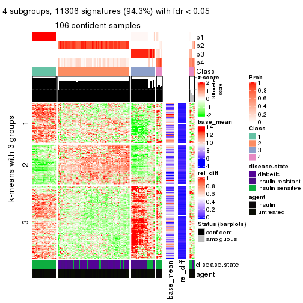
get_signatures(res, k = 5)
get_signatures(res, k = 6)
Signature heatmaps where rows are not scaled:
get_signatures(res, k = 2, scale_rows = FALSE)
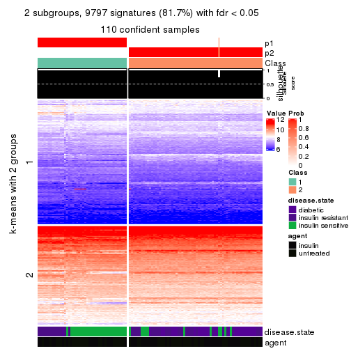
get_signatures(res, k = 3, scale_rows = FALSE)
get_signatures(res, k = 4, scale_rows = FALSE)
get_signatures(res, k = 5, scale_rows = FALSE)
get_signatures(res, k = 6, scale_rows = FALSE)
Compare the overlap of signatures from different k:
compare_signatures(res)
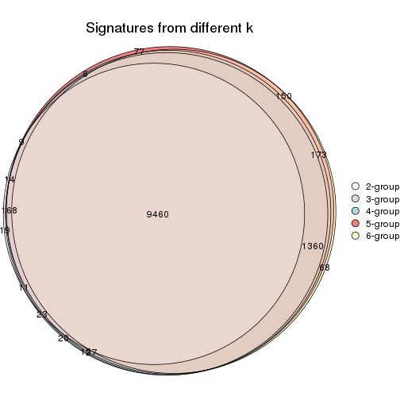
get_signature() returns a data frame invisibly. TO get the list of signatures, the function
call should be assigned to a variable explicitly. In following code, if plot argument is set
to FALSE, no heatmap is plotted while only the differential analysis is performed.
# code only for demonstration
tb = get_signature(res, k = ..., plot = FALSE)
An example of the output of tb is:
#> which_row fdr mean_1 mean_2 scaled_mean_1 scaled_mean_2 km
#> 1 38 0.042760348 8.373488 9.131774 -0.5533452 0.5164555 1
#> 2 40 0.018707592 7.106213 8.469186 -0.6173731 0.5762149 1
#> 3 55 0.019134737 10.221463 11.207825 -0.6159697 0.5749050 1
#> 4 59 0.006059896 5.921854 7.869574 -0.6899429 0.6439467 1
#> 5 60 0.018055526 8.928898 10.211722 -0.6204761 0.5791110 1
#> 6 98 0.009384629 15.714769 14.887706 0.6635654 -0.6193277 2
...
The columns in tb are:
which_row: row indices corresponding to the input matrix.fdr: FDR for the differential test. mean_x: The mean value in group x.scaled_mean_x: The mean value in group x after rows are scaled.km: Row groups if k-means clustering is applied to rows.UMAP plot which shows how samples are separated.
dimension_reduction(res, k = 2, method = "UMAP")
dimension_reduction(res, k = 3, method = "UMAP")
dimension_reduction(res, k = 4, method = "UMAP")
dimension_reduction(res, k = 5, method = "UMAP")
dimension_reduction(res, k = 6, method = "UMAP")
Following heatmap shows how subgroups are split when increasing k:
collect_classes(res)
Test correlation between subgroups and known annotations. If the known annotation is numeric, one-way ANOVA test is applied, and if the known annotation is discrete, chi-squared contingency table test is applied.
test_to_known_factors(res)
#> n disease.state(p) agent(p) k
#> MAD:skmeans 110 2.74e-08 0.559305 2
#> MAD:skmeans 106 3.81e-12 0.396673 3
#> MAD:skmeans 106 4.07e-14 0.438400 4
#> MAD:skmeans 91 1.31e-13 0.000398 5
#> MAD:skmeans 63 6.32e-13 0.006322 6
If matrix rows can be associated to genes, consider to use GO_Enrichment(res,
...) to perform function enrichment for the signature genes.
The object with results only for a single top-value method and a single partition method can be extracted as:
res = res_list["MAD", "pam"]
# you can also extract it by
# res = res_list["MAD:pam"]
A summary of res and all the functions that can be applied to it:
res
#> A 'ConsensusPartition' object with k = 2, 3, 4, 5, 6.
#> On a matrix with 11994 rows and 110 columns.
#> Top rows (1000, 2000, 3000, 4000, 5000) are extracted by 'MAD' method.
#> Subgroups are detected by 'pam' method.
#> Performed in total 1250 partitions by row resampling.
#> Best k for subgroups seems to be 3.
#>
#> Following methods can be applied to this 'ConsensusPartition' object:
#> [1] "cola_report" "collect_classes" "collect_plots"
#> [4] "collect_stats" "colnames" "compare_signatures"
#> [7] "consensus_heatmap" "dimension_reduction" "functional_enrichment"
#> [10] "get_anno_col" "get_anno" "get_classes"
#> [13] "get_consensus" "get_matrix" "get_membership"
#> [16] "get_param" "get_signatures" "get_stats"
#> [19] "is_best_k" "is_stable_k" "membership_heatmap"
#> [22] "ncol" "nrow" "plot_ecdf"
#> [25] "rownames" "select_partition_number" "show"
#> [28] "suggest_best_k" "test_to_known_factors"
collect_plots() function collects all the plots made from res for all k (number of partitions)
into one single page to provide an easy and fast comparison between different k.
collect_plots(res)
The plots are:
k and the heatmap of
predicted classes for each k.k.k.k.All the plots in panels can be made by individual functions and they are plotted later in this section.
select_partition_number() produces several plots showing different
statistics for choosing “optimized” k. There are following statistics:
k;k, the area increased is defined as \(A_k - A_{k-1}\).The detailed explanations of these statistics can be found in the cola vignette.
Generally speaking, lower PAC score, higher mean silhouette score or higher
concordance corresponds to better partition. Rand index and Jaccard index
measure how similar the current partition is compared to partition with k-1.
If they are too similar, we won't accept k is better than k-1.
select_partition_number(res)
The numeric values for all these statistics can be obtained by get_stats().
get_stats(res)
#> k 1-PAC mean_silhouette concordance area_increased Rand Jaccard
#> 2 2 1.000 0.973 0.990 0.4615 0.538 0.538
#> 3 3 0.971 0.946 0.969 0.1540 0.939 0.886
#> 4 4 0.781 0.870 0.925 0.3232 0.778 0.544
#> 5 5 0.821 0.859 0.904 0.1046 0.913 0.703
#> 6 6 0.842 0.794 0.879 0.0631 0.904 0.608
suggest_best_k() suggests the best \(k\) based on these statistics. The rules are as follows:
NA.suggest_best_k(res)
#> [1] 3
#> attr(,"optional")
#> [1] 2
There is also optional best \(k\) = 2 that is worth to check.
Following shows the table of the partitions (You need to click the show/hide
code output link to see it). The membership matrix (columns with name p*)
is inferred by
clue::cl_consensus()
function with the SE method. Basically the value in the membership matrix
represents the probability to belong to a certain group. The finall class
label for an item is determined with the group with highest probability it
belongs to.
In get_classes() function, the entropy is calculated from the membership
matrix and the silhouette score is calculated from the consensus matrix.
cbind(get_classes(res, k = 2), get_membership(res, k = 2))
#> class entropy silhouette p1 p2
#> GSM555237 1 0.0000 0.984 1.000 0.000
#> GSM555239 1 0.0000 0.984 1.000 0.000
#> GSM555241 1 0.0000 0.984 1.000 0.000
#> GSM555243 1 0.0000 0.984 1.000 0.000
#> GSM555245 1 0.0000 0.984 1.000 0.000
#> GSM555247 1 0.0000 0.984 1.000 0.000
#> GSM555249 1 0.0000 0.984 1.000 0.000
#> GSM555251 1 0.0000 0.984 1.000 0.000
#> GSM555253 1 0.0000 0.984 1.000 0.000
#> GSM555255 1 0.0000 0.984 1.000 0.000
#> GSM555257 1 0.0000 0.984 1.000 0.000
#> GSM555259 1 0.0000 0.984 1.000 0.000
#> GSM555261 2 0.9954 0.119 0.460 0.540
#> GSM555263 2 0.0000 0.993 0.000 1.000
#> GSM555265 1 0.9977 0.102 0.528 0.472
#> GSM555267 2 0.0000 0.993 0.000 1.000
#> GSM555269 1 0.0376 0.981 0.996 0.004
#> GSM555271 1 0.0000 0.984 1.000 0.000
#> GSM555273 2 0.0000 0.993 0.000 1.000
#> GSM555275 2 0.0000 0.993 0.000 1.000
#> GSM555238 1 0.0000 0.984 1.000 0.000
#> GSM555240 1 0.0000 0.984 1.000 0.000
#> GSM555242 1 0.0000 0.984 1.000 0.000
#> GSM555244 1 0.0000 0.984 1.000 0.000
#> GSM555246 1 0.0000 0.984 1.000 0.000
#> GSM555248 1 0.0000 0.984 1.000 0.000
#> GSM555250 1 0.0000 0.984 1.000 0.000
#> GSM555252 1 0.0000 0.984 1.000 0.000
#> GSM555254 1 0.0000 0.984 1.000 0.000
#> GSM555256 1 0.0000 0.984 1.000 0.000
#> GSM555258 2 0.0000 0.993 0.000 1.000
#> GSM555260 2 0.0000 0.993 0.000 1.000
#> GSM555262 2 0.0000 0.993 0.000 1.000
#> GSM555264 1 0.5178 0.860 0.884 0.116
#> GSM555266 2 0.0000 0.993 0.000 1.000
#> GSM555268 2 0.0000 0.993 0.000 1.000
#> GSM555270 2 0.0000 0.993 0.000 1.000
#> GSM555272 2 0.0000 0.993 0.000 1.000
#> GSM555274 2 0.0000 0.993 0.000 1.000
#> GSM555276 2 0.0000 0.993 0.000 1.000
#> GSM555277 2 0.0000 0.993 0.000 1.000
#> GSM555279 2 0.0000 0.993 0.000 1.000
#> GSM555281 2 0.0000 0.993 0.000 1.000
#> GSM555283 2 0.0000 0.993 0.000 1.000
#> GSM555285 2 0.0000 0.993 0.000 1.000
#> GSM555287 2 0.0000 0.993 0.000 1.000
#> GSM555289 2 0.0000 0.993 0.000 1.000
#> GSM555291 2 0.0000 0.993 0.000 1.000
#> GSM555293 2 0.0000 0.993 0.000 1.000
#> GSM555295 2 0.0000 0.993 0.000 1.000
#> GSM555297 2 0.0000 0.993 0.000 1.000
#> GSM555299 1 0.0000 0.984 1.000 0.000
#> GSM555301 1 0.0000 0.984 1.000 0.000
#> GSM555303 1 0.0000 0.984 1.000 0.000
#> GSM555305 1 0.0000 0.984 1.000 0.000
#> GSM555307 2 0.0000 0.993 0.000 1.000
#> GSM555309 1 0.0000 0.984 1.000 0.000
#> GSM555311 2 0.0000 0.993 0.000 1.000
#> GSM555313 2 0.0000 0.993 0.000 1.000
#> GSM555315 2 0.0000 0.993 0.000 1.000
#> GSM555278 2 0.0000 0.993 0.000 1.000
#> GSM555280 2 0.0000 0.993 0.000 1.000
#> GSM555282 2 0.0000 0.993 0.000 1.000
#> GSM555284 2 0.0000 0.993 0.000 1.000
#> GSM555286 2 0.0000 0.993 0.000 1.000
#> GSM555288 2 0.0000 0.993 0.000 1.000
#> GSM555290 2 0.0000 0.993 0.000 1.000
#> GSM555292 2 0.0000 0.993 0.000 1.000
#> GSM555294 2 0.0000 0.993 0.000 1.000
#> GSM555296 2 0.0000 0.993 0.000 1.000
#> GSM555298 1 0.0000 0.984 1.000 0.000
#> GSM555300 1 0.0000 0.984 1.000 0.000
#> GSM555302 1 0.0000 0.984 1.000 0.000
#> GSM555304 1 0.0000 0.984 1.000 0.000
#> GSM555306 1 0.0000 0.984 1.000 0.000
#> GSM555308 1 0.0000 0.984 1.000 0.000
#> GSM555310 1 0.0000 0.984 1.000 0.000
#> GSM555312 2 0.0000 0.993 0.000 1.000
#> GSM555314 2 0.0000 0.993 0.000 1.000
#> GSM555316 2 0.0000 0.993 0.000 1.000
#> GSM555317 2 0.0000 0.993 0.000 1.000
#> GSM555319 2 0.0000 0.993 0.000 1.000
#> GSM555321 2 0.0000 0.993 0.000 1.000
#> GSM555323 2 0.0000 0.993 0.000 1.000
#> GSM555325 2 0.0000 0.993 0.000 1.000
#> GSM555327 2 0.0000 0.993 0.000 1.000
#> GSM555329 2 0.0000 0.993 0.000 1.000
#> GSM555331 2 0.0000 0.993 0.000 1.000
#> GSM555333 2 0.0000 0.993 0.000 1.000
#> GSM555335 2 0.0000 0.993 0.000 1.000
#> GSM555337 2 0.0000 0.993 0.000 1.000
#> GSM555339 2 0.0000 0.993 0.000 1.000
#> GSM555341 2 0.0000 0.993 0.000 1.000
#> GSM555343 2 0.0000 0.993 0.000 1.000
#> GSM555345 2 0.0000 0.993 0.000 1.000
#> GSM555318 2 0.0000 0.993 0.000 1.000
#> GSM555320 2 0.0000 0.993 0.000 1.000
#> GSM555322 2 0.0000 0.993 0.000 1.000
#> GSM555324 1 0.0000 0.984 1.000 0.000
#> GSM555326 2 0.0000 0.993 0.000 1.000
#> GSM555328 2 0.0000 0.993 0.000 1.000
#> GSM555330 2 0.0000 0.993 0.000 1.000
#> GSM555332 2 0.0000 0.993 0.000 1.000
#> GSM555334 2 0.0000 0.993 0.000 1.000
#> GSM555336 2 0.0000 0.993 0.000 1.000
#> GSM555338 2 0.0000 0.993 0.000 1.000
#> GSM555340 2 0.0000 0.993 0.000 1.000
#> GSM555342 2 0.0000 0.993 0.000 1.000
#> GSM555344 2 0.0000 0.993 0.000 1.000
#> GSM555346 2 0.0000 0.993 0.000 1.000
cbind(get_classes(res, k = 3), get_membership(res, k = 3))
#> class entropy silhouette p1 p2 p3
#> GSM555237 1 0.0000 0.948 1.000 0.000 0.000
#> GSM555239 1 0.0000 0.948 1.000 0.000 0.000
#> GSM555241 1 0.0000 0.948 1.000 0.000 0.000
#> GSM555243 1 0.0000 0.948 1.000 0.000 0.000
#> GSM555245 1 0.0000 0.948 1.000 0.000 0.000
#> GSM555247 1 0.0000 0.948 1.000 0.000 0.000
#> GSM555249 1 0.0000 0.948 1.000 0.000 0.000
#> GSM555251 1 0.0000 0.948 1.000 0.000 0.000
#> GSM555253 1 0.0000 0.948 1.000 0.000 0.000
#> GSM555255 1 0.0000 0.948 1.000 0.000 0.000
#> GSM555257 1 0.5244 0.657 0.756 0.004 0.240
#> GSM555259 3 0.3619 0.824 0.136 0.000 0.864
#> GSM555261 2 0.8702 0.364 0.292 0.568 0.140
#> GSM555263 2 0.1529 0.967 0.000 0.960 0.040
#> GSM555265 1 0.8950 0.370 0.556 0.172 0.272
#> GSM555267 2 0.3686 0.868 0.000 0.860 0.140
#> GSM555269 3 0.0000 0.949 0.000 0.000 1.000
#> GSM555271 3 0.1289 0.980 0.032 0.000 0.968
#> GSM555273 2 0.1289 0.971 0.000 0.968 0.032
#> GSM555275 2 0.1289 0.971 0.000 0.968 0.032
#> GSM555238 1 0.0000 0.948 1.000 0.000 0.000
#> GSM555240 1 0.0000 0.948 1.000 0.000 0.000
#> GSM555242 1 0.0000 0.948 1.000 0.000 0.000
#> GSM555244 1 0.0000 0.948 1.000 0.000 0.000
#> GSM555246 1 0.0000 0.948 1.000 0.000 0.000
#> GSM555248 1 0.0000 0.948 1.000 0.000 0.000
#> GSM555250 1 0.0000 0.948 1.000 0.000 0.000
#> GSM555252 1 0.0000 0.948 1.000 0.000 0.000
#> GSM555254 1 0.0000 0.948 1.000 0.000 0.000
#> GSM555256 1 0.0000 0.948 1.000 0.000 0.000
#> GSM555258 2 0.2356 0.941 0.000 0.928 0.072
#> GSM555260 2 0.1289 0.971 0.000 0.968 0.032
#> GSM555262 2 0.1289 0.971 0.000 0.968 0.032
#> GSM555264 1 0.7979 0.500 0.628 0.100 0.272
#> GSM555266 2 0.0000 0.976 0.000 1.000 0.000
#> GSM555268 2 0.0000 0.976 0.000 1.000 0.000
#> GSM555270 2 0.0000 0.976 0.000 1.000 0.000
#> GSM555272 2 0.1753 0.961 0.000 0.952 0.048
#> GSM555274 2 0.0000 0.976 0.000 1.000 0.000
#> GSM555276 2 0.0000 0.976 0.000 1.000 0.000
#> GSM555277 2 0.1289 0.971 0.000 0.968 0.032
#> GSM555279 2 0.1289 0.971 0.000 0.968 0.032
#> GSM555281 2 0.1289 0.971 0.000 0.968 0.032
#> GSM555283 2 0.1289 0.971 0.000 0.968 0.032
#> GSM555285 2 0.1289 0.971 0.000 0.968 0.032
#> GSM555287 2 0.3752 0.864 0.000 0.856 0.144
#> GSM555289 2 0.0000 0.976 0.000 1.000 0.000
#> GSM555291 2 0.1289 0.971 0.000 0.968 0.032
#> GSM555293 2 0.0000 0.976 0.000 1.000 0.000
#> GSM555295 2 0.1289 0.971 0.000 0.968 0.032
#> GSM555297 2 0.3686 0.868 0.000 0.860 0.140
#> GSM555299 3 0.1289 0.980 0.032 0.000 0.968
#> GSM555301 3 0.0892 0.970 0.020 0.000 0.980
#> GSM555303 3 0.1289 0.980 0.032 0.000 0.968
#> GSM555305 3 0.1289 0.980 0.032 0.000 0.968
#> GSM555307 2 0.1289 0.971 0.000 0.968 0.032
#> GSM555309 3 0.1289 0.980 0.032 0.000 0.968
#> GSM555311 2 0.1289 0.971 0.000 0.968 0.032
#> GSM555313 2 0.1289 0.971 0.000 0.968 0.032
#> GSM555315 2 0.1289 0.971 0.000 0.968 0.032
#> GSM555278 2 0.0000 0.976 0.000 1.000 0.000
#> GSM555280 2 0.0000 0.976 0.000 1.000 0.000
#> GSM555282 2 0.0000 0.976 0.000 1.000 0.000
#> GSM555284 2 0.0747 0.974 0.000 0.984 0.016
#> GSM555286 2 0.0000 0.976 0.000 1.000 0.000
#> GSM555288 2 0.1289 0.971 0.000 0.968 0.032
#> GSM555290 2 0.0000 0.976 0.000 1.000 0.000
#> GSM555292 2 0.0000 0.976 0.000 1.000 0.000
#> GSM555294 2 0.0000 0.976 0.000 1.000 0.000
#> GSM555296 2 0.0000 0.976 0.000 1.000 0.000
#> GSM555298 3 0.0000 0.949 0.000 0.000 1.000
#> GSM555300 3 0.1289 0.980 0.032 0.000 0.968
#> GSM555302 3 0.1289 0.980 0.032 0.000 0.968
#> GSM555304 3 0.1289 0.980 0.032 0.000 0.968
#> GSM555306 3 0.1289 0.980 0.032 0.000 0.968
#> GSM555308 3 0.1289 0.980 0.032 0.000 0.968
#> GSM555310 3 0.1289 0.980 0.032 0.000 0.968
#> GSM555312 2 0.1289 0.971 0.000 0.968 0.032
#> GSM555314 2 0.1289 0.971 0.000 0.968 0.032
#> GSM555316 2 0.0000 0.976 0.000 1.000 0.000
#> GSM555317 2 0.0000 0.976 0.000 1.000 0.000
#> GSM555319 2 0.0000 0.976 0.000 1.000 0.000
#> GSM555321 2 0.0000 0.976 0.000 1.000 0.000
#> GSM555323 2 0.1163 0.972 0.000 0.972 0.028
#> GSM555325 2 0.0000 0.976 0.000 1.000 0.000
#> GSM555327 2 0.0000 0.976 0.000 1.000 0.000
#> GSM555329 2 0.0000 0.976 0.000 1.000 0.000
#> GSM555331 2 0.1289 0.971 0.000 0.968 0.032
#> GSM555333 2 0.1289 0.971 0.000 0.968 0.032
#> GSM555335 2 0.0000 0.976 0.000 1.000 0.000
#> GSM555337 2 0.0000 0.976 0.000 1.000 0.000
#> GSM555339 2 0.1289 0.971 0.000 0.968 0.032
#> GSM555341 2 0.1289 0.971 0.000 0.968 0.032
#> GSM555343 2 0.0000 0.976 0.000 1.000 0.000
#> GSM555345 2 0.1289 0.971 0.000 0.968 0.032
#> GSM555318 2 0.0000 0.976 0.000 1.000 0.000
#> GSM555320 2 0.0000 0.976 0.000 1.000 0.000
#> GSM555322 2 0.0000 0.976 0.000 1.000 0.000
#> GSM555324 3 0.2165 0.949 0.064 0.000 0.936
#> GSM555326 2 0.0000 0.976 0.000 1.000 0.000
#> GSM555328 2 0.0000 0.976 0.000 1.000 0.000
#> GSM555330 2 0.0000 0.976 0.000 1.000 0.000
#> GSM555332 2 0.0000 0.976 0.000 1.000 0.000
#> GSM555334 2 0.0000 0.976 0.000 1.000 0.000
#> GSM555336 2 0.0000 0.976 0.000 1.000 0.000
#> GSM555338 2 0.0000 0.976 0.000 1.000 0.000
#> GSM555340 2 0.0000 0.976 0.000 1.000 0.000
#> GSM555342 2 0.0000 0.976 0.000 1.000 0.000
#> GSM555344 2 0.0000 0.976 0.000 1.000 0.000
#> GSM555346 2 0.0000 0.976 0.000 1.000 0.000
cbind(get_classes(res, k = 4), get_membership(res, k = 4))
#> class entropy silhouette p1 p2 p3 p4
#> GSM555237 1 0.0000 0.974 1.000 0.000 0.000 0.000
#> GSM555239 1 0.0000 0.974 1.000 0.000 0.000 0.000
#> GSM555241 1 0.0000 0.974 1.000 0.000 0.000 0.000
#> GSM555243 1 0.0000 0.974 1.000 0.000 0.000 0.000
#> GSM555245 1 0.0000 0.974 1.000 0.000 0.000 0.000
#> GSM555247 1 0.0000 0.974 1.000 0.000 0.000 0.000
#> GSM555249 1 0.0000 0.974 1.000 0.000 0.000 0.000
#> GSM555251 1 0.0000 0.974 1.000 0.000 0.000 0.000
#> GSM555253 1 0.0000 0.974 1.000 0.000 0.000 0.000
#> GSM555255 1 0.0000 0.974 1.000 0.000 0.000 0.000
#> GSM555257 1 0.7568 0.202 0.448 0.000 0.200 0.352
#> GSM555259 3 0.5587 0.546 0.028 0.000 0.600 0.372
#> GSM555261 4 0.0000 0.750 0.000 0.000 0.000 1.000
#> GSM555263 4 0.0000 0.750 0.000 0.000 0.000 1.000
#> GSM555265 4 0.0000 0.750 0.000 0.000 0.000 1.000
#> GSM555267 4 0.0000 0.750 0.000 0.000 0.000 1.000
#> GSM555269 3 0.3942 0.765 0.000 0.000 0.764 0.236
#> GSM555271 3 0.0000 0.961 0.000 0.000 1.000 0.000
#> GSM555273 4 0.3726 0.811 0.000 0.212 0.000 0.788
#> GSM555275 4 0.3764 0.810 0.000 0.216 0.000 0.784
#> GSM555238 1 0.0000 0.974 1.000 0.000 0.000 0.000
#> GSM555240 1 0.0000 0.974 1.000 0.000 0.000 0.000
#> GSM555242 1 0.0000 0.974 1.000 0.000 0.000 0.000
#> GSM555244 1 0.0000 0.974 1.000 0.000 0.000 0.000
#> GSM555246 1 0.0000 0.974 1.000 0.000 0.000 0.000
#> GSM555248 1 0.0000 0.974 1.000 0.000 0.000 0.000
#> GSM555250 1 0.0000 0.974 1.000 0.000 0.000 0.000
#> GSM555252 1 0.0000 0.974 1.000 0.000 0.000 0.000
#> GSM555254 1 0.0000 0.974 1.000 0.000 0.000 0.000
#> GSM555256 1 0.0000 0.974 1.000 0.000 0.000 0.000
#> GSM555258 4 0.0000 0.750 0.000 0.000 0.000 1.000
#> GSM555260 4 0.4989 0.377 0.000 0.472 0.000 0.528
#> GSM555262 4 0.4761 0.625 0.000 0.372 0.000 0.628
#> GSM555264 4 0.1940 0.691 0.076 0.000 0.000 0.924
#> GSM555266 2 0.2281 0.882 0.000 0.904 0.000 0.096
#> GSM555268 2 0.1940 0.900 0.000 0.924 0.000 0.076
#> GSM555270 2 0.0000 0.958 0.000 1.000 0.000 0.000
#> GSM555272 4 0.0000 0.750 0.000 0.000 0.000 1.000
#> GSM555274 2 0.2814 0.838 0.000 0.868 0.000 0.132
#> GSM555276 2 0.1022 0.935 0.000 0.968 0.000 0.032
#> GSM555277 4 0.4040 0.792 0.000 0.248 0.000 0.752
#> GSM555279 4 0.3764 0.810 0.000 0.216 0.000 0.784
#> GSM555281 4 0.3764 0.810 0.000 0.216 0.000 0.784
#> GSM555283 4 0.4877 0.550 0.000 0.408 0.000 0.592
#> GSM555285 4 0.3801 0.808 0.000 0.220 0.000 0.780
#> GSM555287 4 0.0000 0.750 0.000 0.000 0.000 1.000
#> GSM555289 2 0.0000 0.958 0.000 1.000 0.000 0.000
#> GSM555291 4 0.3764 0.810 0.000 0.216 0.000 0.784
#> GSM555293 2 0.0188 0.956 0.000 0.996 0.000 0.004
#> GSM555295 4 0.0000 0.750 0.000 0.000 0.000 1.000
#> GSM555297 4 0.0000 0.750 0.000 0.000 0.000 1.000
#> GSM555299 3 0.0000 0.961 0.000 0.000 1.000 0.000
#> GSM555301 3 0.0000 0.961 0.000 0.000 1.000 0.000
#> GSM555303 3 0.0000 0.961 0.000 0.000 1.000 0.000
#> GSM555305 3 0.0000 0.961 0.000 0.000 1.000 0.000
#> GSM555307 4 0.4382 0.754 0.000 0.296 0.000 0.704
#> GSM555309 3 0.0000 0.961 0.000 0.000 1.000 0.000
#> GSM555311 4 0.3764 0.810 0.000 0.216 0.000 0.784
#> GSM555313 4 0.4103 0.784 0.000 0.256 0.000 0.744
#> GSM555315 4 0.3801 0.808 0.000 0.220 0.000 0.780
#> GSM555278 2 0.2281 0.882 0.000 0.904 0.000 0.096
#> GSM555280 2 0.0707 0.946 0.000 0.980 0.000 0.020
#> GSM555282 2 0.2408 0.871 0.000 0.896 0.000 0.104
#> GSM555284 4 0.4624 0.680 0.000 0.340 0.000 0.660
#> GSM555286 2 0.0000 0.958 0.000 1.000 0.000 0.000
#> GSM555288 4 0.2469 0.798 0.000 0.108 0.000 0.892
#> GSM555290 2 0.0000 0.958 0.000 1.000 0.000 0.000
#> GSM555292 2 0.2011 0.896 0.000 0.920 0.000 0.080
#> GSM555294 2 0.0592 0.950 0.000 0.984 0.000 0.016
#> GSM555296 2 0.0000 0.958 0.000 1.000 0.000 0.000
#> GSM555298 3 0.0000 0.961 0.000 0.000 1.000 0.000
#> GSM555300 3 0.0000 0.961 0.000 0.000 1.000 0.000
#> GSM555302 3 0.0000 0.961 0.000 0.000 1.000 0.000
#> GSM555304 3 0.0000 0.961 0.000 0.000 1.000 0.000
#> GSM555306 3 0.0000 0.961 0.000 0.000 1.000 0.000
#> GSM555308 3 0.0000 0.961 0.000 0.000 1.000 0.000
#> GSM555310 3 0.0000 0.961 0.000 0.000 1.000 0.000
#> GSM555312 4 0.3907 0.801 0.000 0.232 0.000 0.768
#> GSM555314 4 0.0000 0.750 0.000 0.000 0.000 1.000
#> GSM555316 2 0.0000 0.958 0.000 1.000 0.000 0.000
#> GSM555317 2 0.0000 0.958 0.000 1.000 0.000 0.000
#> GSM555319 2 0.0000 0.958 0.000 1.000 0.000 0.000
#> GSM555321 2 0.0000 0.958 0.000 1.000 0.000 0.000
#> GSM555323 2 0.3528 0.694 0.000 0.808 0.000 0.192
#> GSM555325 2 0.0000 0.958 0.000 1.000 0.000 0.000
#> GSM555327 2 0.0000 0.958 0.000 1.000 0.000 0.000
#> GSM555329 2 0.0000 0.958 0.000 1.000 0.000 0.000
#> GSM555331 4 0.4998 0.406 0.000 0.488 0.000 0.512
#> GSM555333 4 0.2704 0.803 0.000 0.124 0.000 0.876
#> GSM555335 2 0.0592 0.948 0.000 0.984 0.000 0.016
#> GSM555337 2 0.0000 0.958 0.000 1.000 0.000 0.000
#> GSM555339 4 0.4746 0.664 0.000 0.368 0.000 0.632
#> GSM555341 2 0.4164 0.544 0.000 0.736 0.000 0.264
#> GSM555343 2 0.0188 0.956 0.000 0.996 0.000 0.004
#> GSM555345 4 0.4103 0.650 0.000 0.256 0.000 0.744
#> GSM555318 2 0.0000 0.958 0.000 1.000 0.000 0.000
#> GSM555320 2 0.1940 0.900 0.000 0.924 0.000 0.076
#> GSM555322 2 0.0000 0.958 0.000 1.000 0.000 0.000
#> GSM555324 3 0.0000 0.961 0.000 0.000 1.000 0.000
#> GSM555326 2 0.0000 0.958 0.000 1.000 0.000 0.000
#> GSM555328 2 0.0000 0.958 0.000 1.000 0.000 0.000
#> GSM555330 2 0.0000 0.958 0.000 1.000 0.000 0.000
#> GSM555332 2 0.0000 0.958 0.000 1.000 0.000 0.000
#> GSM555334 2 0.0000 0.958 0.000 1.000 0.000 0.000
#> GSM555336 2 0.0000 0.958 0.000 1.000 0.000 0.000
#> GSM555338 2 0.0000 0.958 0.000 1.000 0.000 0.000
#> GSM555340 2 0.0000 0.958 0.000 1.000 0.000 0.000
#> GSM555342 2 0.0000 0.958 0.000 1.000 0.000 0.000
#> GSM555344 2 0.0000 0.958 0.000 1.000 0.000 0.000
#> GSM555346 2 0.2081 0.894 0.000 0.916 0.000 0.084
cbind(get_classes(res, k = 5), get_membership(res, k = 5))
#> class entropy silhouette p1 p2 p3 p4 p5
#> GSM555237 1 0.0000 1.000 1.000 0.000 0.000 0.000 0.000
#> GSM555239 1 0.0000 1.000 1.000 0.000 0.000 0.000 0.000
#> GSM555241 1 0.0000 1.000 1.000 0.000 0.000 0.000 0.000
#> GSM555243 1 0.0000 1.000 1.000 0.000 0.000 0.000 0.000
#> GSM555245 1 0.0000 1.000 1.000 0.000 0.000 0.000 0.000
#> GSM555247 1 0.0000 1.000 1.000 0.000 0.000 0.000 0.000
#> GSM555249 1 0.0000 1.000 1.000 0.000 0.000 0.000 0.000
#> GSM555251 1 0.0000 1.000 1.000 0.000 0.000 0.000 0.000
#> GSM555253 1 0.0000 1.000 1.000 0.000 0.000 0.000 0.000
#> GSM555255 1 0.0000 1.000 1.000 0.000 0.000 0.000 0.000
#> GSM555257 4 0.3863 0.693 0.028 0.000 0.200 0.772 0.000
#> GSM555259 4 0.3305 0.683 0.000 0.000 0.224 0.776 0.000
#> GSM555261 4 0.3305 0.874 0.000 0.000 0.000 0.776 0.224
#> GSM555263 4 0.3305 0.874 0.000 0.000 0.000 0.776 0.224
#> GSM555265 4 0.3305 0.874 0.000 0.000 0.000 0.776 0.224
#> GSM555267 4 0.3305 0.874 0.000 0.000 0.000 0.776 0.224
#> GSM555269 4 0.3305 0.683 0.000 0.000 0.224 0.776 0.000
#> GSM555271 3 0.0000 1.000 0.000 0.000 1.000 0.000 0.000
#> GSM555273 5 0.0000 0.814 0.000 0.000 0.000 0.000 1.000
#> GSM555275 5 0.0000 0.814 0.000 0.000 0.000 0.000 1.000
#> GSM555238 1 0.0000 1.000 1.000 0.000 0.000 0.000 0.000
#> GSM555240 1 0.0000 1.000 1.000 0.000 0.000 0.000 0.000
#> GSM555242 1 0.0000 1.000 1.000 0.000 0.000 0.000 0.000
#> GSM555244 1 0.0000 1.000 1.000 0.000 0.000 0.000 0.000
#> GSM555246 1 0.0000 1.000 1.000 0.000 0.000 0.000 0.000
#> GSM555248 1 0.0000 1.000 1.000 0.000 0.000 0.000 0.000
#> GSM555250 1 0.0000 1.000 1.000 0.000 0.000 0.000 0.000
#> GSM555252 1 0.0000 1.000 1.000 0.000 0.000 0.000 0.000
#> GSM555254 1 0.0000 1.000 1.000 0.000 0.000 0.000 0.000
#> GSM555256 1 0.0000 1.000 1.000 0.000 0.000 0.000 0.000
#> GSM555258 4 0.3336 0.871 0.000 0.000 0.000 0.772 0.228
#> GSM555260 5 0.1671 0.802 0.000 0.076 0.000 0.000 0.924
#> GSM555262 5 0.2966 0.742 0.000 0.184 0.000 0.000 0.816
#> GSM555264 4 0.3366 0.868 0.000 0.000 0.000 0.768 0.232
#> GSM555266 2 0.3177 0.702 0.000 0.792 0.000 0.000 0.208
#> GSM555268 2 0.1121 0.856 0.000 0.956 0.000 0.000 0.044
#> GSM555270 2 0.0000 0.877 0.000 1.000 0.000 0.000 0.000
#> GSM555272 5 0.3336 0.530 0.000 0.000 0.000 0.228 0.772
#> GSM555274 5 0.3857 0.647 0.000 0.312 0.000 0.000 0.688
#> GSM555276 5 0.4937 0.409 0.000 0.428 0.000 0.028 0.544
#> GSM555277 5 0.4054 0.688 0.000 0.028 0.000 0.224 0.748
#> GSM555279 5 0.0000 0.814 0.000 0.000 0.000 0.000 1.000
#> GSM555281 5 0.0000 0.814 0.000 0.000 0.000 0.000 1.000
#> GSM555283 5 0.2580 0.794 0.000 0.064 0.000 0.044 0.892
#> GSM555285 5 0.1341 0.802 0.000 0.056 0.000 0.000 0.944
#> GSM555287 4 0.3305 0.874 0.000 0.000 0.000 0.776 0.224
#> GSM555289 2 0.3461 0.822 0.000 0.772 0.000 0.224 0.004
#> GSM555291 5 0.1478 0.802 0.000 0.064 0.000 0.000 0.936
#> GSM555293 2 0.3970 0.810 0.000 0.752 0.000 0.224 0.024
#> GSM555295 5 0.0703 0.800 0.000 0.000 0.000 0.024 0.976
#> GSM555297 4 0.3305 0.874 0.000 0.000 0.000 0.776 0.224
#> GSM555299 3 0.0000 1.000 0.000 0.000 1.000 0.000 0.000
#> GSM555301 3 0.0000 1.000 0.000 0.000 1.000 0.000 0.000
#> GSM555303 3 0.0000 1.000 0.000 0.000 1.000 0.000 0.000
#> GSM555305 3 0.0000 1.000 0.000 0.000 1.000 0.000 0.000
#> GSM555307 5 0.1121 0.803 0.000 0.044 0.000 0.000 0.956
#> GSM555309 3 0.0000 1.000 0.000 0.000 1.000 0.000 0.000
#> GSM555311 5 0.0000 0.814 0.000 0.000 0.000 0.000 1.000
#> GSM555313 5 0.3109 0.729 0.000 0.200 0.000 0.000 0.800
#> GSM555315 5 0.0000 0.814 0.000 0.000 0.000 0.000 1.000
#> GSM555278 2 0.3480 0.621 0.000 0.752 0.000 0.000 0.248
#> GSM555280 2 0.0162 0.876 0.000 0.996 0.000 0.000 0.004
#> GSM555282 2 0.2074 0.818 0.000 0.896 0.000 0.000 0.104
#> GSM555284 5 0.3109 0.726 0.000 0.200 0.000 0.000 0.800
#> GSM555286 2 0.0000 0.877 0.000 1.000 0.000 0.000 0.000
#> GSM555288 5 0.0404 0.815 0.000 0.012 0.000 0.000 0.988
#> GSM555290 2 0.0000 0.877 0.000 1.000 0.000 0.000 0.000
#> GSM555292 2 0.1197 0.853 0.000 0.952 0.000 0.000 0.048
#> GSM555294 2 0.0880 0.867 0.000 0.968 0.000 0.000 0.032
#> GSM555296 2 0.1341 0.850 0.000 0.944 0.000 0.000 0.056
#> GSM555298 3 0.0000 1.000 0.000 0.000 1.000 0.000 0.000
#> GSM555300 3 0.0000 1.000 0.000 0.000 1.000 0.000 0.000
#> GSM555302 3 0.0000 1.000 0.000 0.000 1.000 0.000 0.000
#> GSM555304 3 0.0000 1.000 0.000 0.000 1.000 0.000 0.000
#> GSM555306 3 0.0000 1.000 0.000 0.000 1.000 0.000 0.000
#> GSM555308 3 0.0000 1.000 0.000 0.000 1.000 0.000 0.000
#> GSM555310 3 0.0000 1.000 0.000 0.000 1.000 0.000 0.000
#> GSM555312 5 0.2074 0.788 0.000 0.104 0.000 0.000 0.896
#> GSM555314 5 0.0000 0.814 0.000 0.000 0.000 0.000 1.000
#> GSM555316 2 0.0000 0.877 0.000 1.000 0.000 0.000 0.000
#> GSM555317 2 0.4617 0.794 0.000 0.716 0.000 0.224 0.060
#> GSM555319 2 0.3461 0.822 0.000 0.772 0.000 0.224 0.004
#> GSM555321 2 0.3461 0.822 0.000 0.772 0.000 0.224 0.004
#> GSM555323 5 0.5339 0.634 0.000 0.116 0.000 0.224 0.660
#> GSM555325 2 0.2970 0.840 0.000 0.828 0.000 0.168 0.004
#> GSM555327 2 0.3461 0.822 0.000 0.772 0.000 0.224 0.004
#> GSM555329 2 0.3461 0.822 0.000 0.772 0.000 0.224 0.004
#> GSM555331 5 0.5581 0.586 0.000 0.140 0.000 0.224 0.636
#> GSM555333 5 0.0000 0.814 0.000 0.000 0.000 0.000 1.000
#> GSM555335 2 0.4134 0.804 0.000 0.744 0.000 0.224 0.032
#> GSM555337 2 0.3461 0.822 0.000 0.772 0.000 0.224 0.004
#> GSM555339 5 0.4083 0.710 0.000 0.132 0.000 0.080 0.788
#> GSM555341 5 0.5158 0.649 0.000 0.100 0.000 0.224 0.676
#> GSM555343 2 0.3970 0.810 0.000 0.752 0.000 0.224 0.024
#> GSM555345 4 0.3736 0.507 0.000 0.052 0.000 0.808 0.140
#> GSM555318 2 0.4367 0.813 0.000 0.748 0.000 0.192 0.060
#> GSM555320 2 0.0963 0.861 0.000 0.964 0.000 0.000 0.036
#> GSM555322 2 0.0000 0.877 0.000 1.000 0.000 0.000 0.000
#> GSM555324 3 0.0000 1.000 0.000 0.000 1.000 0.000 0.000
#> GSM555326 2 0.0000 0.877 0.000 1.000 0.000 0.000 0.000
#> GSM555328 2 0.0000 0.877 0.000 1.000 0.000 0.000 0.000
#> GSM555330 2 0.0290 0.877 0.000 0.992 0.000 0.008 0.000
#> GSM555332 2 0.1753 0.869 0.000 0.936 0.000 0.032 0.032
#> GSM555334 2 0.0000 0.877 0.000 1.000 0.000 0.000 0.000
#> GSM555336 2 0.0000 0.877 0.000 1.000 0.000 0.000 0.000
#> GSM555338 2 0.3461 0.822 0.000 0.772 0.000 0.224 0.004
#> GSM555340 2 0.3461 0.822 0.000 0.772 0.000 0.224 0.004
#> GSM555342 2 0.0324 0.878 0.000 0.992 0.000 0.004 0.004
#> GSM555344 2 0.0162 0.876 0.000 0.996 0.000 0.000 0.004
#> GSM555346 2 0.1908 0.832 0.000 0.908 0.000 0.000 0.092
cbind(get_classes(res, k = 6), get_membership(res, k = 6))
#> class entropy silhouette p1 p2 p3 p4 p5 p6
#> GSM555237 1 0.0000 1.000 1 0.000 0.000 0.000 0.000 0.000
#> GSM555239 1 0.0000 1.000 1 0.000 0.000 0.000 0.000 0.000
#> GSM555241 1 0.0000 1.000 1 0.000 0.000 0.000 0.000 0.000
#> GSM555243 1 0.0000 1.000 1 0.000 0.000 0.000 0.000 0.000
#> GSM555245 1 0.0000 1.000 1 0.000 0.000 0.000 0.000 0.000
#> GSM555247 1 0.0000 1.000 1 0.000 0.000 0.000 0.000 0.000
#> GSM555249 1 0.0000 1.000 1 0.000 0.000 0.000 0.000 0.000
#> GSM555251 1 0.0000 1.000 1 0.000 0.000 0.000 0.000 0.000
#> GSM555253 1 0.0000 1.000 1 0.000 0.000 0.000 0.000 0.000
#> GSM555255 1 0.0000 1.000 1 0.000 0.000 0.000 0.000 0.000
#> GSM555257 4 0.2300 0.817 0 0.000 0.144 0.856 0.000 0.000
#> GSM555259 4 0.1556 0.874 0 0.000 0.080 0.920 0.000 0.000
#> GSM555261 4 0.0000 0.910 0 0.000 0.000 1.000 0.000 0.000
#> GSM555263 4 0.0146 0.910 0 0.000 0.000 0.996 0.004 0.000
#> GSM555265 4 0.0000 0.910 0 0.000 0.000 1.000 0.000 0.000
#> GSM555267 4 0.0000 0.910 0 0.000 0.000 1.000 0.000 0.000
#> GSM555269 4 0.1556 0.874 0 0.000 0.080 0.920 0.000 0.000
#> GSM555271 3 0.0146 0.997 0 0.000 0.996 0.004 0.000 0.000
#> GSM555273 5 0.5370 0.634 0 0.284 0.000 0.080 0.608 0.028
#> GSM555275 5 0.2872 0.777 0 0.024 0.000 0.080 0.868 0.028
#> GSM555238 1 0.0000 1.000 1 0.000 0.000 0.000 0.000 0.000
#> GSM555240 1 0.0000 1.000 1 0.000 0.000 0.000 0.000 0.000
#> GSM555242 1 0.0000 1.000 1 0.000 0.000 0.000 0.000 0.000
#> GSM555244 1 0.0000 1.000 1 0.000 0.000 0.000 0.000 0.000
#> GSM555246 1 0.0000 1.000 1 0.000 0.000 0.000 0.000 0.000
#> GSM555248 1 0.0000 1.000 1 0.000 0.000 0.000 0.000 0.000
#> GSM555250 1 0.0000 1.000 1 0.000 0.000 0.000 0.000 0.000
#> GSM555252 1 0.0000 1.000 1 0.000 0.000 0.000 0.000 0.000
#> GSM555254 1 0.0000 1.000 1 0.000 0.000 0.000 0.000 0.000
#> GSM555256 1 0.0000 1.000 1 0.000 0.000 0.000 0.000 0.000
#> GSM555258 4 0.3266 0.633 0 0.000 0.000 0.728 0.272 0.000
#> GSM555260 5 0.2163 0.727 0 0.016 0.000 0.092 0.892 0.000
#> GSM555262 5 0.1765 0.731 0 0.096 0.000 0.000 0.904 0.000
#> GSM555264 4 0.2877 0.766 0 0.168 0.000 0.820 0.012 0.000
#> GSM555266 2 0.3866 0.305 0 0.516 0.000 0.000 0.484 0.000
#> GSM555268 2 0.3468 0.596 0 0.712 0.000 0.000 0.284 0.004
#> GSM555270 2 0.3330 0.685 0 0.716 0.000 0.000 0.000 0.284
#> GSM555272 5 0.3659 0.484 0 0.000 0.000 0.364 0.636 0.000
#> GSM555274 5 0.1663 0.737 0 0.088 0.000 0.000 0.912 0.000
#> GSM555276 6 0.2969 0.646 0 0.224 0.000 0.000 0.000 0.776
#> GSM555277 5 0.3989 0.141 0 0.004 0.000 0.000 0.528 0.468
#> GSM555279 5 0.2950 0.778 0 0.028 0.000 0.080 0.864 0.028
#> GSM555281 5 0.2872 0.777 0 0.024 0.000 0.080 0.868 0.028
#> GSM555283 5 0.3533 0.748 0 0.016 0.000 0.060 0.820 0.104
#> GSM555285 5 0.5370 0.634 0 0.284 0.000 0.080 0.608 0.028
#> GSM555287 4 0.0260 0.908 0 0.000 0.000 0.992 0.008 0.000
#> GSM555289 6 0.0632 0.846 0 0.024 0.000 0.000 0.000 0.976
#> GSM555291 5 0.2149 0.777 0 0.016 0.000 0.080 0.900 0.004
#> GSM555293 6 0.3810 0.344 0 0.428 0.000 0.000 0.000 0.572
#> GSM555295 5 0.5344 0.632 0 0.284 0.000 0.084 0.608 0.024
#> GSM555297 4 0.0260 0.908 0 0.000 0.000 0.992 0.008 0.000
#> GSM555299 3 0.0000 0.999 0 0.000 1.000 0.000 0.000 0.000
#> GSM555301 3 0.0146 0.997 0 0.000 0.996 0.004 0.000 0.000
#> GSM555303 3 0.0000 0.999 0 0.000 1.000 0.000 0.000 0.000
#> GSM555305 3 0.0000 0.999 0 0.000 1.000 0.000 0.000 0.000
#> GSM555307 6 0.5007 0.456 0 0.012 0.000 0.080 0.272 0.636
#> GSM555309 3 0.0000 0.999 0 0.000 1.000 0.000 0.000 0.000
#> GSM555311 5 0.5370 0.634 0 0.284 0.000 0.080 0.608 0.028
#> GSM555313 5 0.1863 0.721 0 0.104 0.000 0.000 0.896 0.000
#> GSM555315 5 0.5370 0.634 0 0.284 0.000 0.080 0.608 0.028
#> GSM555278 2 0.3823 0.408 0 0.564 0.000 0.000 0.436 0.000
#> GSM555280 2 0.4075 0.702 0 0.712 0.000 0.000 0.048 0.240
#> GSM555282 2 0.3737 0.486 0 0.608 0.000 0.000 0.392 0.000
#> GSM555284 5 0.1765 0.728 0 0.096 0.000 0.000 0.904 0.000
#> GSM555286 2 0.2793 0.712 0 0.800 0.000 0.000 0.000 0.200
#> GSM555288 5 0.0790 0.766 0 0.032 0.000 0.000 0.968 0.000
#> GSM555290 2 0.3482 0.651 0 0.684 0.000 0.000 0.000 0.316
#> GSM555292 2 0.3795 0.524 0 0.632 0.000 0.000 0.364 0.004
#> GSM555294 2 0.1265 0.650 0 0.948 0.000 0.000 0.044 0.008
#> GSM555296 2 0.3076 0.707 0 0.760 0.000 0.000 0.000 0.240
#> GSM555298 3 0.0146 0.997 0 0.000 0.996 0.004 0.000 0.000
#> GSM555300 3 0.0000 0.999 0 0.000 1.000 0.000 0.000 0.000
#> GSM555302 3 0.0000 0.999 0 0.000 1.000 0.000 0.000 0.000
#> GSM555304 3 0.0000 0.999 0 0.000 1.000 0.000 0.000 0.000
#> GSM555306 3 0.0000 0.999 0 0.000 1.000 0.000 0.000 0.000
#> GSM555308 3 0.0000 0.999 0 0.000 1.000 0.000 0.000 0.000
#> GSM555310 3 0.0000 0.999 0 0.000 1.000 0.000 0.000 0.000
#> GSM555312 5 0.0632 0.767 0 0.024 0.000 0.000 0.976 0.000
#> GSM555314 5 0.2872 0.777 0 0.024 0.000 0.080 0.868 0.028
#> GSM555316 2 0.3351 0.682 0 0.712 0.000 0.000 0.000 0.288
#> GSM555317 6 0.0632 0.846 0 0.024 0.000 0.000 0.000 0.976
#> GSM555319 6 0.1387 0.826 0 0.068 0.000 0.000 0.000 0.932
#> GSM555321 6 0.0713 0.844 0 0.028 0.000 0.000 0.000 0.972
#> GSM555323 6 0.0000 0.842 0 0.000 0.000 0.000 0.000 1.000
#> GSM555325 2 0.1700 0.638 0 0.916 0.000 0.000 0.004 0.080
#> GSM555327 6 0.0632 0.846 0 0.024 0.000 0.000 0.000 0.976
#> GSM555329 6 0.2416 0.733 0 0.156 0.000 0.000 0.000 0.844
#> GSM555331 6 0.0000 0.842 0 0.000 0.000 0.000 0.000 1.000
#> GSM555333 5 0.3284 0.770 0 0.024 0.000 0.080 0.844 0.052
#> GSM555335 6 0.1563 0.815 0 0.012 0.000 0.000 0.056 0.932
#> GSM555337 6 0.1957 0.807 0 0.112 0.000 0.000 0.000 0.888
#> GSM555339 6 0.3651 0.717 0 0.024 0.000 0.048 0.116 0.812
#> GSM555341 6 0.2703 0.717 0 0.004 0.000 0.000 0.172 0.824
#> GSM555343 6 0.0146 0.843 0 0.004 0.000 0.000 0.000 0.996
#> GSM555345 6 0.1219 0.824 0 0.000 0.000 0.004 0.048 0.948
#> GSM555318 6 0.0865 0.843 0 0.036 0.000 0.000 0.000 0.964
#> GSM555320 2 0.0508 0.683 0 0.984 0.000 0.000 0.012 0.004
#> GSM555322 2 0.3351 0.682 0 0.712 0.000 0.000 0.000 0.288
#> GSM555324 3 0.0000 0.999 0 0.000 1.000 0.000 0.000 0.000
#> GSM555326 2 0.3151 0.703 0 0.748 0.000 0.000 0.000 0.252
#> GSM555328 2 0.3468 0.685 0 0.712 0.000 0.000 0.004 0.284
#> GSM555330 6 0.3860 -0.145 0 0.472 0.000 0.000 0.000 0.528
#> GSM555332 6 0.3608 0.695 0 0.148 0.000 0.000 0.064 0.788
#> GSM555334 2 0.3592 0.608 0 0.656 0.000 0.000 0.000 0.344
#> GSM555336 2 0.0713 0.688 0 0.972 0.000 0.000 0.000 0.028
#> GSM555338 6 0.0632 0.846 0 0.024 0.000 0.000 0.000 0.976
#> GSM555340 6 0.0632 0.846 0 0.024 0.000 0.000 0.000 0.976
#> GSM555342 2 0.1411 0.682 0 0.936 0.000 0.000 0.004 0.060
#> GSM555344 2 0.3690 0.659 0 0.684 0.000 0.000 0.008 0.308
#> GSM555346 2 0.2633 0.586 0 0.864 0.000 0.000 0.104 0.032
Heatmaps for the consensus matrix. It visualizes the probability of two samples to be in a same group.
consensus_heatmap(res, k = 2)
consensus_heatmap(res, k = 3)
consensus_heatmap(res, k = 4)

consensus_heatmap(res, k = 5)
consensus_heatmap(res, k = 6)
Heatmaps for the membership of samples in all partitions to see how consistent they are:
membership_heatmap(res, k = 2)
membership_heatmap(res, k = 3)
membership_heatmap(res, k = 4)
membership_heatmap(res, k = 5)
membership_heatmap(res, k = 6)
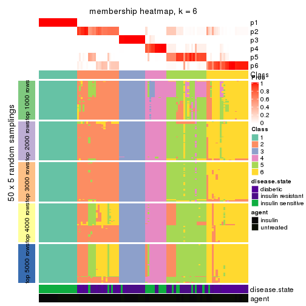
As soon as we have had the classes for columns, we can look for signatures which are significantly different between classes which can be candidate marks for certain classes. Following are the heatmaps for signatures.
Signature heatmaps where rows are scaled:
get_signatures(res, k = 2)
get_signatures(res, k = 3)
get_signatures(res, k = 4)
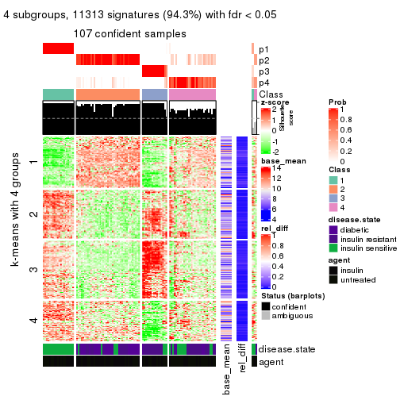
get_signatures(res, k = 5)
get_signatures(res, k = 6)
Signature heatmaps where rows are not scaled:
get_signatures(res, k = 2, scale_rows = FALSE)
get_signatures(res, k = 3, scale_rows = FALSE)
get_signatures(res, k = 4, scale_rows = FALSE)
get_signatures(res, k = 5, scale_rows = FALSE)
get_signatures(res, k = 6, scale_rows = FALSE)
Compare the overlap of signatures from different k:
compare_signatures(res)
get_signature() returns a data frame invisibly. TO get the list of signatures, the function
call should be assigned to a variable explicitly. In following code, if plot argument is set
to FALSE, no heatmap is plotted while only the differential analysis is performed.
# code only for demonstration
tb = get_signature(res, k = ..., plot = FALSE)
An example of the output of tb is:
#> which_row fdr mean_1 mean_2 scaled_mean_1 scaled_mean_2 km
#> 1 38 0.042760348 8.373488 9.131774 -0.5533452 0.5164555 1
#> 2 40 0.018707592 7.106213 8.469186 -0.6173731 0.5762149 1
#> 3 55 0.019134737 10.221463 11.207825 -0.6159697 0.5749050 1
#> 4 59 0.006059896 5.921854 7.869574 -0.6899429 0.6439467 1
#> 5 60 0.018055526 8.928898 10.211722 -0.6204761 0.5791110 1
#> 6 98 0.009384629 15.714769 14.887706 0.6635654 -0.6193277 2
...
The columns in tb are:
which_row: row indices corresponding to the input matrix.fdr: FDR for the differential test. mean_x: The mean value in group x.scaled_mean_x: The mean value in group x after rows are scaled.km: Row groups if k-means clustering is applied to rows.UMAP plot which shows how samples are separated.
dimension_reduction(res, k = 2, method = "UMAP")
dimension_reduction(res, k = 3, method = "UMAP")
dimension_reduction(res, k = 4, method = "UMAP")
dimension_reduction(res, k = 5, method = "UMAP")
dimension_reduction(res, k = 6, method = "UMAP")
Following heatmap shows how subgroups are split when increasing k:
collect_classes(res)
Test correlation between subgroups and known annotations. If the known annotation is numeric, one-way ANOVA test is applied, and if the known annotation is discrete, chi-squared contingency table test is applied.
test_to_known_factors(res)
#> n disease.state(p) agent(p) k
#> MAD:pam 108 4.08e-07 1.000000 2
#> MAD:pam 108 1.79e-12 0.989994 3
#> MAD:pam 107 1.27e-14 0.007339 4
#> MAD:pam 109 1.21e-15 0.003705 5
#> MAD:pam 102 1.35e-19 0.000112 6
If matrix rows can be associated to genes, consider to use GO_Enrichment(res,
...) to perform function enrichment for the signature genes.
The object with results only for a single top-value method and a single partition method can be extracted as:
res = res_list["MAD", "mclust"]
# you can also extract it by
# res = res_list["MAD:mclust"]
A summary of res and all the functions that can be applied to it:
res
#> A 'ConsensusPartition' object with k = 2, 3, 4, 5, 6.
#> On a matrix with 11994 rows and 110 columns.
#> Top rows (1000, 2000, 3000, 4000, 5000) are extracted by 'MAD' method.
#> Subgroups are detected by 'mclust' method.
#> Performed in total 1250 partitions by row resampling.
#> Best k for subgroups seems to be 2.
#>
#> Following methods can be applied to this 'ConsensusPartition' object:
#> [1] "cola_report" "collect_classes" "collect_plots"
#> [4] "collect_stats" "colnames" "compare_signatures"
#> [7] "consensus_heatmap" "dimension_reduction" "functional_enrichment"
#> [10] "get_anno_col" "get_anno" "get_classes"
#> [13] "get_consensus" "get_matrix" "get_membership"
#> [16] "get_param" "get_signatures" "get_stats"
#> [19] "is_best_k" "is_stable_k" "membership_heatmap"
#> [22] "ncol" "nrow" "plot_ecdf"
#> [25] "rownames" "select_partition_number" "show"
#> [28] "suggest_best_k" "test_to_known_factors"
collect_plots() function collects all the plots made from res for all k (number of partitions)
into one single page to provide an easy and fast comparison between different k.
collect_plots(res)
The plots are:
k and the heatmap of
predicted classes for each k.k.k.k.All the plots in panels can be made by individual functions and they are plotted later in this section.
select_partition_number() produces several plots showing different
statistics for choosing “optimized” k. There are following statistics:
k;k, the area increased is defined as \(A_k - A_{k-1}\).The detailed explanations of these statistics can be found in the cola vignette.
Generally speaking, lower PAC score, higher mean silhouette score or higher
concordance corresponds to better partition. Rand index and Jaccard index
measure how similar the current partition is compared to partition with k-1.
If they are too similar, we won't accept k is better than k-1.
select_partition_number(res)
The numeric values for all these statistics can be obtained by get_stats().
get_stats(res)
#> k 1-PAC mean_silhouette concordance area_increased Rand Jaccard
#> 2 2 0.984 0.971 0.980 0.4488 0.544 0.544
#> 3 3 0.881 0.833 0.934 0.1896 0.896 0.818
#> 4 4 0.737 0.815 0.902 0.1946 0.892 0.784
#> 5 5 0.729 0.811 0.885 0.0293 0.915 0.799
#> 6 6 0.715 0.728 0.835 0.0727 0.976 0.936
suggest_best_k() suggests the best \(k\) based on these statistics. The rules are as follows:
NA.suggest_best_k(res)
#> [1] 2
Following shows the table of the partitions (You need to click the show/hide
code output link to see it). The membership matrix (columns with name p*)
is inferred by
clue::cl_consensus()
function with the SE method. Basically the value in the membership matrix
represents the probability to belong to a certain group. The finall class
label for an item is determined with the group with highest probability it
belongs to.
In get_classes() function, the entropy is calculated from the membership
matrix and the silhouette score is calculated from the consensus matrix.
cbind(get_classes(res, k = 2), get_membership(res, k = 2))
#> class entropy silhouette p1 p2
#> GSM555237 1 0.000 0.959 1.000 0.000
#> GSM555239 1 0.000 0.959 1.000 0.000
#> GSM555241 1 0.000 0.959 1.000 0.000
#> GSM555243 1 0.000 0.959 1.000 0.000
#> GSM555245 1 0.000 0.959 1.000 0.000
#> GSM555247 1 0.000 0.959 1.000 0.000
#> GSM555249 1 0.000 0.959 1.000 0.000
#> GSM555251 1 0.000 0.959 1.000 0.000
#> GSM555253 1 0.000 0.959 1.000 0.000
#> GSM555255 1 0.000 0.959 1.000 0.000
#> GSM555257 1 0.373 0.952 0.928 0.072
#> GSM555259 1 0.456 0.936 0.904 0.096
#> GSM555261 2 0.327 0.935 0.060 0.940
#> GSM555263 2 0.327 0.935 0.060 0.940
#> GSM555265 2 0.388 0.918 0.076 0.924
#> GSM555267 2 0.327 0.935 0.060 0.940
#> GSM555269 1 0.456 0.936 0.904 0.096
#> GSM555271 1 0.402 0.951 0.920 0.080
#> GSM555273 2 0.000 0.989 0.000 1.000
#> GSM555275 2 0.000 0.989 0.000 1.000
#> GSM555238 1 0.000 0.959 1.000 0.000
#> GSM555240 1 0.000 0.959 1.000 0.000
#> GSM555242 1 0.000 0.959 1.000 0.000
#> GSM555244 1 0.000 0.959 1.000 0.000
#> GSM555246 1 0.000 0.959 1.000 0.000
#> GSM555248 1 0.000 0.959 1.000 0.000
#> GSM555250 1 0.000 0.959 1.000 0.000
#> GSM555252 1 0.000 0.959 1.000 0.000
#> GSM555254 1 0.000 0.959 1.000 0.000
#> GSM555256 1 0.000 0.959 1.000 0.000
#> GSM555258 2 0.343 0.931 0.064 0.936
#> GSM555260 2 0.000 0.989 0.000 1.000
#> GSM555262 2 0.000 0.989 0.000 1.000
#> GSM555264 1 0.388 0.952 0.924 0.076
#> GSM555266 2 0.000 0.989 0.000 1.000
#> GSM555268 2 0.000 0.989 0.000 1.000
#> GSM555270 2 0.000 0.989 0.000 1.000
#> GSM555272 2 0.184 0.965 0.028 0.972
#> GSM555274 2 0.000 0.989 0.000 1.000
#> GSM555276 2 0.000 0.989 0.000 1.000
#> GSM555277 2 0.000 0.989 0.000 1.000
#> GSM555279 2 0.000 0.989 0.000 1.000
#> GSM555281 2 0.000 0.989 0.000 1.000
#> GSM555283 2 0.000 0.989 0.000 1.000
#> GSM555285 2 0.000 0.989 0.000 1.000
#> GSM555287 2 0.833 0.672 0.264 0.736
#> GSM555289 2 0.000 0.989 0.000 1.000
#> GSM555291 2 0.000 0.989 0.000 1.000
#> GSM555293 2 0.000 0.989 0.000 1.000
#> GSM555295 2 0.000 0.989 0.000 1.000
#> GSM555297 2 0.327 0.935 0.060 0.940
#> GSM555299 1 0.402 0.951 0.920 0.080
#> GSM555301 1 0.402 0.951 0.920 0.080
#> GSM555303 1 0.402 0.951 0.920 0.080
#> GSM555305 1 0.402 0.951 0.920 0.080
#> GSM555307 2 0.000 0.989 0.000 1.000
#> GSM555309 1 0.402 0.951 0.920 0.080
#> GSM555311 2 0.000 0.989 0.000 1.000
#> GSM555313 2 0.000 0.989 0.000 1.000
#> GSM555315 2 0.000 0.989 0.000 1.000
#> GSM555278 2 0.000 0.989 0.000 1.000
#> GSM555280 2 0.000 0.989 0.000 1.000
#> GSM555282 2 0.000 0.989 0.000 1.000
#> GSM555284 2 0.000 0.989 0.000 1.000
#> GSM555286 2 0.000 0.989 0.000 1.000
#> GSM555288 2 0.000 0.989 0.000 1.000
#> GSM555290 2 0.000 0.989 0.000 1.000
#> GSM555292 2 0.000 0.989 0.000 1.000
#> GSM555294 2 0.000 0.989 0.000 1.000
#> GSM555296 2 0.000 0.989 0.000 1.000
#> GSM555298 1 0.402 0.951 0.920 0.080
#> GSM555300 1 0.402 0.951 0.920 0.080
#> GSM555302 1 0.402 0.951 0.920 0.080
#> GSM555304 1 0.402 0.951 0.920 0.080
#> GSM555306 1 0.402 0.951 0.920 0.080
#> GSM555308 1 0.402 0.951 0.920 0.080
#> GSM555310 1 0.402 0.951 0.920 0.080
#> GSM555312 2 0.000 0.989 0.000 1.000
#> GSM555314 2 0.000 0.989 0.000 1.000
#> GSM555316 2 0.000 0.989 0.000 1.000
#> GSM555317 2 0.000 0.989 0.000 1.000
#> GSM555319 2 0.000 0.989 0.000 1.000
#> GSM555321 2 0.000 0.989 0.000 1.000
#> GSM555323 2 0.000 0.989 0.000 1.000
#> GSM555325 2 0.000 0.989 0.000 1.000
#> GSM555327 2 0.000 0.989 0.000 1.000
#> GSM555329 2 0.000 0.989 0.000 1.000
#> GSM555331 2 0.000 0.989 0.000 1.000
#> GSM555333 2 0.000 0.989 0.000 1.000
#> GSM555335 2 0.000 0.989 0.000 1.000
#> GSM555337 2 0.000 0.989 0.000 1.000
#> GSM555339 2 0.000 0.989 0.000 1.000
#> GSM555341 2 0.000 0.989 0.000 1.000
#> GSM555343 2 0.000 0.989 0.000 1.000
#> GSM555345 2 0.327 0.931 0.060 0.940
#> GSM555318 2 0.000 0.989 0.000 1.000
#> GSM555320 2 0.000 0.989 0.000 1.000
#> GSM555322 2 0.000 0.989 0.000 1.000
#> GSM555324 1 0.402 0.951 0.920 0.080
#> GSM555326 2 0.000 0.989 0.000 1.000
#> GSM555328 2 0.000 0.989 0.000 1.000
#> GSM555330 2 0.000 0.989 0.000 1.000
#> GSM555332 2 0.000 0.989 0.000 1.000
#> GSM555334 2 0.000 0.989 0.000 1.000
#> GSM555336 2 0.000 0.989 0.000 1.000
#> GSM555338 2 0.000 0.989 0.000 1.000
#> GSM555340 2 0.000 0.989 0.000 1.000
#> GSM555342 2 0.000 0.989 0.000 1.000
#> GSM555344 2 0.000 0.989 0.000 1.000
#> GSM555346 2 0.000 0.989 0.000 1.000
cbind(get_classes(res, k = 3), get_membership(res, k = 3))
#> class entropy silhouette p1 p2 p3
#> GSM555237 1 0.0000 1.000000 1.000 0.000 0.000
#> GSM555239 1 0.0000 1.000000 1.000 0.000 0.000
#> GSM555241 1 0.0000 1.000000 1.000 0.000 0.000
#> GSM555243 1 0.0000 1.000000 1.000 0.000 0.000
#> GSM555245 1 0.0000 1.000000 1.000 0.000 0.000
#> GSM555247 1 0.0000 1.000000 1.000 0.000 0.000
#> GSM555249 1 0.0000 1.000000 1.000 0.000 0.000
#> GSM555251 1 0.0000 1.000000 1.000 0.000 0.000
#> GSM555253 1 0.0000 1.000000 1.000 0.000 0.000
#> GSM555255 1 0.0000 1.000000 1.000 0.000 0.000
#> GSM555257 2 0.6140 0.282310 0.000 0.596 0.404
#> GSM555259 3 0.6291 0.000336 0.000 0.468 0.532
#> GSM555261 2 0.6280 0.209068 0.000 0.540 0.460
#> GSM555263 2 0.6111 0.392375 0.000 0.604 0.396
#> GSM555265 3 0.6308 -0.094602 0.000 0.492 0.508
#> GSM555267 2 0.6280 0.209068 0.000 0.540 0.460
#> GSM555269 3 0.6192 0.171881 0.000 0.420 0.580
#> GSM555271 3 0.0000 0.865336 0.000 0.000 1.000
#> GSM555273 2 0.5948 0.469974 0.000 0.640 0.360
#> GSM555275 2 0.1031 0.904832 0.000 0.976 0.024
#> GSM555238 1 0.0000 1.000000 1.000 0.000 0.000
#> GSM555240 1 0.0000 1.000000 1.000 0.000 0.000
#> GSM555242 1 0.0000 1.000000 1.000 0.000 0.000
#> GSM555244 1 0.0000 1.000000 1.000 0.000 0.000
#> GSM555246 1 0.0000 1.000000 1.000 0.000 0.000
#> GSM555248 1 0.0000 1.000000 1.000 0.000 0.000
#> GSM555250 1 0.0000 1.000000 1.000 0.000 0.000
#> GSM555252 1 0.0000 1.000000 1.000 0.000 0.000
#> GSM555254 1 0.0000 1.000000 1.000 0.000 0.000
#> GSM555256 1 0.0000 1.000000 1.000 0.000 0.000
#> GSM555258 2 0.5926 0.407500 0.000 0.644 0.356
#> GSM555260 2 0.0237 0.906076 0.000 0.996 0.004
#> GSM555262 2 0.0000 0.907191 0.000 1.000 0.000
#> GSM555264 2 0.6608 0.377161 0.016 0.628 0.356
#> GSM555266 2 0.0000 0.907191 0.000 1.000 0.000
#> GSM555268 2 0.0000 0.907191 0.000 1.000 0.000
#> GSM555270 2 0.0000 0.907191 0.000 1.000 0.000
#> GSM555272 2 0.5591 0.521463 0.000 0.696 0.304
#> GSM555274 2 0.0000 0.907191 0.000 1.000 0.000
#> GSM555276 2 0.0000 0.907191 0.000 1.000 0.000
#> GSM555277 2 0.2448 0.880262 0.000 0.924 0.076
#> GSM555279 2 0.2448 0.880262 0.000 0.924 0.076
#> GSM555281 2 0.2356 0.883180 0.000 0.928 0.072
#> GSM555283 2 0.2261 0.885837 0.000 0.932 0.068
#> GSM555285 2 0.6045 0.388987 0.000 0.620 0.380
#> GSM555287 2 0.6799 0.072239 0.012 0.532 0.456
#> GSM555289 2 0.1163 0.904143 0.000 0.972 0.028
#> GSM555291 2 0.2448 0.880262 0.000 0.924 0.076
#> GSM555293 2 0.1964 0.893044 0.000 0.944 0.056
#> GSM555295 2 0.2448 0.880262 0.000 0.924 0.076
#> GSM555297 2 0.6274 0.221952 0.000 0.544 0.456
#> GSM555299 3 0.0000 0.865336 0.000 0.000 1.000
#> GSM555301 3 0.0000 0.865336 0.000 0.000 1.000
#> GSM555303 3 0.0000 0.865336 0.000 0.000 1.000
#> GSM555305 3 0.0000 0.865336 0.000 0.000 1.000
#> GSM555307 2 0.2066 0.890955 0.000 0.940 0.060
#> GSM555309 3 0.0000 0.865336 0.000 0.000 1.000
#> GSM555311 2 0.2448 0.880262 0.000 0.924 0.076
#> GSM555313 2 0.0000 0.907191 0.000 1.000 0.000
#> GSM555315 2 0.1529 0.901265 0.000 0.960 0.040
#> GSM555278 2 0.0000 0.907191 0.000 1.000 0.000
#> GSM555280 2 0.0000 0.907191 0.000 1.000 0.000
#> GSM555282 2 0.0000 0.907191 0.000 1.000 0.000
#> GSM555284 2 0.0000 0.907191 0.000 1.000 0.000
#> GSM555286 2 0.0000 0.907191 0.000 1.000 0.000
#> GSM555288 2 0.0000 0.907191 0.000 1.000 0.000
#> GSM555290 2 0.0000 0.907191 0.000 1.000 0.000
#> GSM555292 2 0.0000 0.907191 0.000 1.000 0.000
#> GSM555294 2 0.0000 0.907191 0.000 1.000 0.000
#> GSM555296 2 0.0000 0.907191 0.000 1.000 0.000
#> GSM555298 3 0.0000 0.865336 0.000 0.000 1.000
#> GSM555300 3 0.0000 0.865336 0.000 0.000 1.000
#> GSM555302 3 0.0000 0.865336 0.000 0.000 1.000
#> GSM555304 3 0.0000 0.865336 0.000 0.000 1.000
#> GSM555306 3 0.0000 0.865336 0.000 0.000 1.000
#> GSM555308 3 0.0000 0.865336 0.000 0.000 1.000
#> GSM555310 3 0.0000 0.865336 0.000 0.000 1.000
#> GSM555312 2 0.0000 0.907191 0.000 1.000 0.000
#> GSM555314 2 0.2448 0.880262 0.000 0.924 0.076
#> GSM555316 2 0.0000 0.907191 0.000 1.000 0.000
#> GSM555317 2 0.1289 0.903224 0.000 0.968 0.032
#> GSM555319 2 0.1411 0.902061 0.000 0.964 0.036
#> GSM555321 2 0.1860 0.895271 0.000 0.948 0.052
#> GSM555323 2 0.1411 0.902061 0.000 0.964 0.036
#> GSM555325 2 0.1753 0.897318 0.000 0.952 0.048
#> GSM555327 2 0.1529 0.900788 0.000 0.960 0.040
#> GSM555329 2 0.1643 0.899176 0.000 0.956 0.044
#> GSM555331 2 0.1163 0.904143 0.000 0.972 0.028
#> GSM555333 2 0.1163 0.904143 0.000 0.972 0.028
#> GSM555335 2 0.1031 0.904832 0.000 0.976 0.024
#> GSM555337 2 0.1163 0.904143 0.000 0.972 0.028
#> GSM555339 2 0.2261 0.885692 0.000 0.932 0.068
#> GSM555341 2 0.0000 0.907191 0.000 1.000 0.000
#> GSM555343 2 0.1411 0.902061 0.000 0.964 0.036
#> GSM555345 2 0.1964 0.875271 0.000 0.944 0.056
#> GSM555318 2 0.0237 0.906969 0.000 0.996 0.004
#> GSM555320 2 0.0000 0.907191 0.000 1.000 0.000
#> GSM555322 2 0.0000 0.907191 0.000 1.000 0.000
#> GSM555324 3 0.0000 0.865336 0.000 0.000 1.000
#> GSM555326 2 0.0000 0.907191 0.000 1.000 0.000
#> GSM555328 2 0.0000 0.907191 0.000 1.000 0.000
#> GSM555330 2 0.0000 0.907191 0.000 1.000 0.000
#> GSM555332 2 0.0000 0.907191 0.000 1.000 0.000
#> GSM555334 2 0.0000 0.907191 0.000 1.000 0.000
#> GSM555336 2 0.0000 0.907191 0.000 1.000 0.000
#> GSM555338 2 0.1411 0.902061 0.000 0.964 0.036
#> GSM555340 2 0.1411 0.902061 0.000 0.964 0.036
#> GSM555342 2 0.0000 0.907191 0.000 1.000 0.000
#> GSM555344 2 0.0000 0.907191 0.000 1.000 0.000
#> GSM555346 2 0.0000 0.907191 0.000 1.000 0.000
cbind(get_classes(res, k = 4), get_membership(res, k = 4))
#> class entropy silhouette p1 p2 p3 p4
#> GSM555237 1 0.1792 0.9241 0.932 0.000 0.000 0.068
#> GSM555239 1 0.0000 0.9962 1.000 0.000 0.000 0.000
#> GSM555241 1 0.0000 0.9962 1.000 0.000 0.000 0.000
#> GSM555243 1 0.0000 0.9962 1.000 0.000 0.000 0.000
#> GSM555245 1 0.0000 0.9962 1.000 0.000 0.000 0.000
#> GSM555247 1 0.0000 0.9962 1.000 0.000 0.000 0.000
#> GSM555249 1 0.0000 0.9962 1.000 0.000 0.000 0.000
#> GSM555251 1 0.0000 0.9962 1.000 0.000 0.000 0.000
#> GSM555253 1 0.0000 0.9962 1.000 0.000 0.000 0.000
#> GSM555255 1 0.0000 0.9962 1.000 0.000 0.000 0.000
#> GSM555257 4 0.5116 0.5606 0.028 0.196 0.020 0.756
#> GSM555259 4 0.2706 0.8435 0.000 0.080 0.020 0.900
#> GSM555261 4 0.2706 0.8435 0.000 0.080 0.020 0.900
#> GSM555263 4 0.2706 0.8435 0.000 0.080 0.020 0.900
#> GSM555265 4 0.2706 0.8435 0.000 0.080 0.020 0.900
#> GSM555267 4 0.2706 0.8435 0.000 0.080 0.020 0.900
#> GSM555269 4 0.2797 0.8259 0.000 0.068 0.032 0.900
#> GSM555271 3 0.0000 0.9998 0.000 0.000 1.000 0.000
#> GSM555273 2 0.4999 0.2543 0.000 0.508 0.000 0.492
#> GSM555275 2 0.3311 0.7948 0.000 0.828 0.000 0.172
#> GSM555238 1 0.0000 0.9962 1.000 0.000 0.000 0.000
#> GSM555240 1 0.0000 0.9962 1.000 0.000 0.000 0.000
#> GSM555242 1 0.0000 0.9962 1.000 0.000 0.000 0.000
#> GSM555244 1 0.0000 0.9962 1.000 0.000 0.000 0.000
#> GSM555246 1 0.0000 0.9962 1.000 0.000 0.000 0.000
#> GSM555248 1 0.0000 0.9962 1.000 0.000 0.000 0.000
#> GSM555250 1 0.0000 0.9962 1.000 0.000 0.000 0.000
#> GSM555252 1 0.0000 0.9962 1.000 0.000 0.000 0.000
#> GSM555254 1 0.0000 0.9962 1.000 0.000 0.000 0.000
#> GSM555256 1 0.0000 0.9962 1.000 0.000 0.000 0.000
#> GSM555258 2 0.5080 0.0156 0.000 0.576 0.004 0.420
#> GSM555260 2 0.1302 0.7908 0.000 0.956 0.000 0.044
#> GSM555262 2 0.0469 0.8125 0.000 0.988 0.000 0.012
#> GSM555264 2 0.5137 -0.0891 0.000 0.544 0.004 0.452
#> GSM555266 2 0.0707 0.8079 0.000 0.980 0.000 0.020
#> GSM555268 2 0.0336 0.8142 0.000 0.992 0.000 0.008
#> GSM555270 2 0.0000 0.8173 0.000 1.000 0.000 0.000
#> GSM555272 2 0.4920 0.1925 0.000 0.628 0.004 0.368
#> GSM555274 2 0.0921 0.8029 0.000 0.972 0.000 0.028
#> GSM555276 2 0.0000 0.8173 0.000 1.000 0.000 0.000
#> GSM555277 2 0.3610 0.7842 0.000 0.800 0.000 0.200
#> GSM555279 4 0.3837 0.7302 0.000 0.224 0.000 0.776
#> GSM555281 2 0.4981 0.2209 0.000 0.536 0.000 0.464
#> GSM555283 2 0.3610 0.7842 0.000 0.800 0.000 0.200
#> GSM555285 2 0.4925 0.3263 0.000 0.572 0.000 0.428
#> GSM555287 4 0.4988 0.5494 0.000 0.288 0.020 0.692
#> GSM555289 2 0.3610 0.7867 0.000 0.800 0.000 0.200
#> GSM555291 2 0.3610 0.7842 0.000 0.800 0.000 0.200
#> GSM555293 2 0.3649 0.7852 0.000 0.796 0.000 0.204
#> GSM555295 4 0.4500 0.5507 0.000 0.316 0.000 0.684
#> GSM555297 4 0.2706 0.8435 0.000 0.080 0.020 0.900
#> GSM555299 3 0.0000 0.9998 0.000 0.000 1.000 0.000
#> GSM555301 3 0.0000 0.9998 0.000 0.000 1.000 0.000
#> GSM555303 3 0.0000 0.9998 0.000 0.000 1.000 0.000
#> GSM555305 3 0.0000 0.9998 0.000 0.000 1.000 0.000
#> GSM555307 2 0.3649 0.7808 0.000 0.796 0.000 0.204
#> GSM555309 3 0.0000 0.9998 0.000 0.000 1.000 0.000
#> GSM555311 2 0.3610 0.7842 0.000 0.800 0.000 0.200
#> GSM555313 2 0.0000 0.8173 0.000 1.000 0.000 0.000
#> GSM555315 2 0.3569 0.7870 0.000 0.804 0.000 0.196
#> GSM555278 2 0.0188 0.8158 0.000 0.996 0.000 0.004
#> GSM555280 2 0.0000 0.8173 0.000 1.000 0.000 0.000
#> GSM555282 2 0.0000 0.8173 0.000 1.000 0.000 0.000
#> GSM555284 2 0.0707 0.8079 0.000 0.980 0.000 0.020
#> GSM555286 2 0.0000 0.8173 0.000 1.000 0.000 0.000
#> GSM555288 2 0.0188 0.8159 0.000 0.996 0.000 0.004
#> GSM555290 2 0.0000 0.8173 0.000 1.000 0.000 0.000
#> GSM555292 2 0.0000 0.8173 0.000 1.000 0.000 0.000
#> GSM555294 2 0.1022 0.8003 0.000 0.968 0.000 0.032
#> GSM555296 2 0.3528 0.5823 0.000 0.808 0.000 0.192
#> GSM555298 3 0.0000 0.9998 0.000 0.000 1.000 0.000
#> GSM555300 3 0.0000 0.9998 0.000 0.000 1.000 0.000
#> GSM555302 3 0.0000 0.9998 0.000 0.000 1.000 0.000
#> GSM555304 3 0.0000 0.9998 0.000 0.000 1.000 0.000
#> GSM555306 3 0.0000 0.9998 0.000 0.000 1.000 0.000
#> GSM555308 3 0.0000 0.9998 0.000 0.000 1.000 0.000
#> GSM555310 3 0.0000 0.9998 0.000 0.000 1.000 0.000
#> GSM555312 2 0.0000 0.8173 0.000 1.000 0.000 0.000
#> GSM555314 4 0.3975 0.7077 0.000 0.240 0.000 0.760
#> GSM555316 2 0.0000 0.8173 0.000 1.000 0.000 0.000
#> GSM555317 2 0.3569 0.7870 0.000 0.804 0.000 0.196
#> GSM555319 2 0.3569 0.7870 0.000 0.804 0.000 0.196
#> GSM555321 2 0.3569 0.7870 0.000 0.804 0.000 0.196
#> GSM555323 2 0.3569 0.7870 0.000 0.804 0.000 0.196
#> GSM555325 2 0.3837 0.7779 0.000 0.776 0.000 0.224
#> GSM555327 2 0.3569 0.7870 0.000 0.804 0.000 0.196
#> GSM555329 2 0.3569 0.7870 0.000 0.804 0.000 0.196
#> GSM555331 2 0.3569 0.7870 0.000 0.804 0.000 0.196
#> GSM555333 2 0.3610 0.7842 0.000 0.800 0.000 0.200
#> GSM555335 2 0.3569 0.7870 0.000 0.804 0.000 0.196
#> GSM555337 2 0.3569 0.7870 0.000 0.804 0.000 0.196
#> GSM555339 2 0.3610 0.7842 0.000 0.800 0.000 0.200
#> GSM555341 2 0.3831 0.7856 0.000 0.792 0.004 0.204
#> GSM555343 2 0.3569 0.7870 0.000 0.804 0.000 0.196
#> GSM555345 2 0.4610 0.7374 0.000 0.744 0.020 0.236
#> GSM555318 2 0.2704 0.8045 0.000 0.876 0.000 0.124
#> GSM555320 2 0.0469 0.8125 0.000 0.988 0.000 0.012
#> GSM555322 2 0.0000 0.8173 0.000 1.000 0.000 0.000
#> GSM555324 3 0.0188 0.9970 0.000 0.000 0.996 0.004
#> GSM555326 2 0.0000 0.8173 0.000 1.000 0.000 0.000
#> GSM555328 2 0.0000 0.8173 0.000 1.000 0.000 0.000
#> GSM555330 2 0.0000 0.8173 0.000 1.000 0.000 0.000
#> GSM555332 2 0.0000 0.8173 0.000 1.000 0.000 0.000
#> GSM555334 2 0.0592 0.8106 0.000 0.984 0.000 0.016
#> GSM555336 2 0.0188 0.8160 0.000 0.996 0.000 0.004
#> GSM555338 2 0.3569 0.7870 0.000 0.804 0.000 0.196
#> GSM555340 2 0.3569 0.7870 0.000 0.804 0.000 0.196
#> GSM555342 2 0.0592 0.8103 0.000 0.984 0.000 0.016
#> GSM555344 2 0.0000 0.8173 0.000 1.000 0.000 0.000
#> GSM555346 2 0.4088 0.5305 0.000 0.764 0.004 0.232
cbind(get_classes(res, k = 5), get_membership(res, k = 5))
#> class entropy silhouette p1 p2 p3 p4 p5
#> GSM555237 1 0.1623 0.9066 0.948 0.000 0.016 0.016 0.020
#> GSM555239 1 0.0000 0.9180 1.000 0.000 0.000 0.000 0.000
#> GSM555241 1 0.0000 0.9180 1.000 0.000 0.000 0.000 0.000
#> GSM555243 1 0.0000 0.9180 1.000 0.000 0.000 0.000 0.000
#> GSM555245 1 0.0000 0.9180 1.000 0.000 0.000 0.000 0.000
#> GSM555247 1 0.0000 0.9180 1.000 0.000 0.000 0.000 0.000
#> GSM555249 1 0.0000 0.9180 1.000 0.000 0.000 0.000 0.000
#> GSM555251 1 0.0000 0.9180 1.000 0.000 0.000 0.000 0.000
#> GSM555253 1 0.0000 0.9180 1.000 0.000 0.000 0.000 0.000
#> GSM555255 1 0.0000 0.9180 1.000 0.000 0.000 0.000 0.000
#> GSM555257 5 0.4774 0.0823 0.000 0.004 0.040 0.276 0.680
#> GSM555259 4 0.3432 0.9370 0.000 0.132 0.040 0.828 0.000
#> GSM555261 4 0.3477 0.9366 0.000 0.136 0.040 0.824 0.000
#> GSM555263 4 0.3409 0.9257 0.000 0.144 0.032 0.824 0.000
#> GSM555265 4 0.3432 0.9370 0.000 0.132 0.040 0.828 0.000
#> GSM555267 4 0.3400 0.9366 0.000 0.136 0.036 0.828 0.000
#> GSM555269 4 0.3460 0.9319 0.000 0.128 0.044 0.828 0.000
#> GSM555271 3 0.0324 0.9956 0.000 0.000 0.992 0.004 0.004
#> GSM555273 5 0.4403 0.4399 0.000 0.436 0.000 0.004 0.560
#> GSM555275 2 0.0000 0.8047 0.000 1.000 0.000 0.000 0.000
#> GSM555238 1 0.2852 0.9209 0.828 0.000 0.000 0.172 0.000
#> GSM555240 1 0.2852 0.9209 0.828 0.000 0.000 0.172 0.000
#> GSM555242 1 0.2852 0.9209 0.828 0.000 0.000 0.172 0.000
#> GSM555244 1 0.2852 0.9209 0.828 0.000 0.000 0.172 0.000
#> GSM555246 1 0.2852 0.9209 0.828 0.000 0.000 0.172 0.000
#> GSM555248 1 0.2852 0.9209 0.828 0.000 0.000 0.172 0.000
#> GSM555250 1 0.2852 0.9209 0.828 0.000 0.000 0.172 0.000
#> GSM555252 1 0.2852 0.9209 0.828 0.000 0.000 0.172 0.000
#> GSM555254 1 0.2852 0.9209 0.828 0.000 0.000 0.172 0.000
#> GSM555256 1 0.2852 0.9209 0.828 0.000 0.000 0.172 0.000
#> GSM555258 5 0.4844 0.5583 0.000 0.256 0.008 0.044 0.692
#> GSM555260 2 0.3966 0.6215 0.000 0.664 0.000 0.000 0.336
#> GSM555262 2 0.3074 0.8130 0.000 0.804 0.000 0.000 0.196
#> GSM555264 5 0.1310 0.3381 0.000 0.000 0.024 0.020 0.956
#> GSM555266 2 0.3074 0.8130 0.000 0.804 0.000 0.000 0.196
#> GSM555268 2 0.3074 0.8130 0.000 0.804 0.000 0.000 0.196
#> GSM555270 2 0.3074 0.8130 0.000 0.804 0.000 0.000 0.196
#> GSM555272 5 0.4573 0.5531 0.000 0.280 0.004 0.028 0.688
#> GSM555274 2 0.3074 0.8130 0.000 0.804 0.000 0.000 0.196
#> GSM555276 2 0.3109 0.8109 0.000 0.800 0.000 0.000 0.200
#> GSM555277 2 0.0000 0.8047 0.000 1.000 0.000 0.000 0.000
#> GSM555279 2 0.4045 0.0836 0.000 0.644 0.000 0.356 0.000
#> GSM555281 2 0.2561 0.6080 0.000 0.856 0.000 0.144 0.000
#> GSM555283 2 0.0000 0.8047 0.000 1.000 0.000 0.000 0.000
#> GSM555285 5 0.4359 0.4732 0.000 0.412 0.000 0.004 0.584
#> GSM555287 4 0.7231 0.5003 0.008 0.140 0.040 0.472 0.340
#> GSM555289 2 0.0162 0.8027 0.000 0.996 0.000 0.000 0.004
#> GSM555291 2 0.0000 0.8047 0.000 1.000 0.000 0.000 0.000
#> GSM555293 2 0.0000 0.8047 0.000 1.000 0.000 0.000 0.000
#> GSM555295 2 0.4015 0.1088 0.000 0.652 0.000 0.348 0.000
#> GSM555297 4 0.3400 0.9366 0.000 0.136 0.036 0.828 0.000
#> GSM555299 3 0.0000 0.9966 0.000 0.000 1.000 0.000 0.000
#> GSM555301 3 0.0162 0.9967 0.000 0.000 0.996 0.004 0.000
#> GSM555303 3 0.0000 0.9966 0.000 0.000 1.000 0.000 0.000
#> GSM555305 3 0.0000 0.9966 0.000 0.000 1.000 0.000 0.000
#> GSM555307 2 0.0000 0.8047 0.000 1.000 0.000 0.000 0.000
#> GSM555309 3 0.0162 0.9953 0.000 0.000 0.996 0.000 0.004
#> GSM555311 2 0.0000 0.8047 0.000 1.000 0.000 0.000 0.000
#> GSM555313 2 0.3074 0.8130 0.000 0.804 0.000 0.000 0.196
#> GSM555315 2 0.0000 0.8047 0.000 1.000 0.000 0.000 0.000
#> GSM555278 2 0.3074 0.8130 0.000 0.804 0.000 0.000 0.196
#> GSM555280 2 0.3074 0.8130 0.000 0.804 0.000 0.000 0.196
#> GSM555282 2 0.3074 0.8130 0.000 0.804 0.000 0.000 0.196
#> GSM555284 2 0.3109 0.8103 0.000 0.800 0.000 0.000 0.200
#> GSM555286 2 0.3074 0.8130 0.000 0.804 0.000 0.000 0.196
#> GSM555288 2 0.3074 0.8130 0.000 0.804 0.000 0.000 0.196
#> GSM555290 2 0.3109 0.8109 0.000 0.800 0.000 0.000 0.200
#> GSM555292 2 0.3074 0.8130 0.000 0.804 0.000 0.000 0.196
#> GSM555294 2 0.3074 0.8130 0.000 0.804 0.000 0.000 0.196
#> GSM555296 2 0.3621 0.8008 0.000 0.788 0.000 0.020 0.192
#> GSM555298 3 0.0290 0.9941 0.000 0.000 0.992 0.008 0.000
#> GSM555300 3 0.0000 0.9966 0.000 0.000 1.000 0.000 0.000
#> GSM555302 3 0.0162 0.9967 0.000 0.000 0.996 0.004 0.000
#> GSM555304 3 0.0162 0.9967 0.000 0.000 0.996 0.004 0.000
#> GSM555306 3 0.0162 0.9967 0.000 0.000 0.996 0.004 0.000
#> GSM555308 3 0.0000 0.9966 0.000 0.000 1.000 0.000 0.000
#> GSM555310 3 0.0162 0.9967 0.000 0.000 0.996 0.004 0.000
#> GSM555312 2 0.3074 0.8130 0.000 0.804 0.000 0.000 0.196
#> GSM555314 2 0.4015 0.1091 0.000 0.652 0.000 0.348 0.000
#> GSM555316 2 0.3109 0.8109 0.000 0.800 0.000 0.000 0.200
#> GSM555317 2 0.0000 0.8047 0.000 1.000 0.000 0.000 0.000
#> GSM555319 2 0.0000 0.8047 0.000 1.000 0.000 0.000 0.000
#> GSM555321 2 0.0162 0.8017 0.000 0.996 0.000 0.004 0.000
#> GSM555323 2 0.0000 0.8047 0.000 1.000 0.000 0.000 0.000
#> GSM555325 2 0.0000 0.8047 0.000 1.000 0.000 0.000 0.000
#> GSM555327 2 0.0162 0.8027 0.000 0.996 0.000 0.000 0.004
#> GSM555329 2 0.0162 0.8017 0.000 0.996 0.000 0.004 0.000
#> GSM555331 2 0.0000 0.8047 0.000 1.000 0.000 0.000 0.000
#> GSM555333 2 0.0000 0.8047 0.000 1.000 0.000 0.000 0.000
#> GSM555335 2 0.0000 0.8047 0.000 1.000 0.000 0.000 0.000
#> GSM555337 2 0.0000 0.8047 0.000 1.000 0.000 0.000 0.000
#> GSM555339 2 0.0000 0.8047 0.000 1.000 0.000 0.000 0.000
#> GSM555341 2 0.0000 0.8047 0.000 1.000 0.000 0.000 0.000
#> GSM555343 2 0.0000 0.8047 0.000 1.000 0.000 0.000 0.000
#> GSM555345 2 0.2313 0.7533 0.000 0.916 0.040 0.012 0.032
#> GSM555318 2 0.0880 0.8080 0.000 0.968 0.000 0.000 0.032
#> GSM555320 2 0.3074 0.8130 0.000 0.804 0.000 0.000 0.196
#> GSM555322 2 0.3231 0.8107 0.000 0.800 0.000 0.004 0.196
#> GSM555324 3 0.0324 0.9931 0.000 0.000 0.992 0.004 0.004
#> GSM555326 2 0.3074 0.8130 0.000 0.804 0.000 0.000 0.196
#> GSM555328 2 0.3074 0.8130 0.000 0.804 0.000 0.000 0.196
#> GSM555330 2 0.3074 0.8130 0.000 0.804 0.000 0.000 0.196
#> GSM555332 2 0.3074 0.8130 0.000 0.804 0.000 0.000 0.196
#> GSM555334 2 0.3109 0.8109 0.000 0.800 0.000 0.000 0.200
#> GSM555336 2 0.3074 0.8130 0.000 0.804 0.000 0.000 0.196
#> GSM555338 2 0.0162 0.8027 0.000 0.996 0.000 0.000 0.004
#> GSM555340 2 0.0000 0.8047 0.000 1.000 0.000 0.000 0.000
#> GSM555342 2 0.3074 0.8130 0.000 0.804 0.000 0.000 0.196
#> GSM555344 2 0.3109 0.8109 0.000 0.800 0.000 0.000 0.200
#> GSM555346 2 0.3752 0.6962 0.000 0.708 0.000 0.000 0.292
cbind(get_classes(res, k = 6), get_membership(res, k = 6))
#> class entropy silhouette p1 p2 p3 p4 p5 p6
#> GSM555237 1 0.4074 0.868 0.760 0.000 0.000 0.020 0.044 NA
#> GSM555239 1 0.2762 0.901 0.804 0.000 0.000 0.000 0.000 NA
#> GSM555241 1 0.2762 0.901 0.804 0.000 0.000 0.000 0.000 NA
#> GSM555243 1 0.2762 0.901 0.804 0.000 0.000 0.000 0.000 NA
#> GSM555245 1 0.2762 0.901 0.804 0.000 0.000 0.000 0.000 NA
#> GSM555247 1 0.2762 0.901 0.804 0.000 0.000 0.000 0.000 NA
#> GSM555249 1 0.2762 0.901 0.804 0.000 0.000 0.000 0.000 NA
#> GSM555251 1 0.2762 0.901 0.804 0.000 0.000 0.000 0.000 NA
#> GSM555253 1 0.2762 0.901 0.804 0.000 0.000 0.000 0.000 NA
#> GSM555255 1 0.2762 0.901 0.804 0.000 0.000 0.000 0.000 NA
#> GSM555257 4 0.4937 0.377 0.000 0.004 0.000 0.476 0.468 NA
#> GSM555259 4 0.0458 0.858 0.000 0.000 0.016 0.984 0.000 NA
#> GSM555261 4 0.1003 0.864 0.000 0.020 0.016 0.964 0.000 NA
#> GSM555263 4 0.1787 0.855 0.000 0.020 0.016 0.932 0.032 NA
#> GSM555265 4 0.0914 0.864 0.000 0.016 0.016 0.968 0.000 NA
#> GSM555267 4 0.1003 0.864 0.000 0.020 0.016 0.964 0.000 NA
#> GSM555269 4 0.0547 0.857 0.000 0.000 0.020 0.980 0.000 NA
#> GSM555271 3 0.2134 0.915 0.000 0.000 0.904 0.052 0.000 NA
#> GSM555273 5 0.5553 0.338 0.000 0.256 0.000 0.004 0.568 NA
#> GSM555275 2 0.1578 0.720 0.000 0.936 0.000 0.004 0.048 NA
#> GSM555238 1 0.0000 0.904 1.000 0.000 0.000 0.000 0.000 NA
#> GSM555240 1 0.0000 0.904 1.000 0.000 0.000 0.000 0.000 NA
#> GSM555242 1 0.0000 0.904 1.000 0.000 0.000 0.000 0.000 NA
#> GSM555244 1 0.0000 0.904 1.000 0.000 0.000 0.000 0.000 NA
#> GSM555246 1 0.0000 0.904 1.000 0.000 0.000 0.000 0.000 NA
#> GSM555248 1 0.0000 0.904 1.000 0.000 0.000 0.000 0.000 NA
#> GSM555250 1 0.0000 0.904 1.000 0.000 0.000 0.000 0.000 NA
#> GSM555252 1 0.0000 0.904 1.000 0.000 0.000 0.000 0.000 NA
#> GSM555254 1 0.0000 0.904 1.000 0.000 0.000 0.000 0.000 NA
#> GSM555256 1 0.0000 0.904 1.000 0.000 0.000 0.000 0.000 NA
#> GSM555258 5 0.3056 0.557 0.000 0.140 0.000 0.012 0.832 NA
#> GSM555260 5 0.4101 0.117 0.000 0.408 0.000 0.000 0.580 NA
#> GSM555262 2 0.3287 0.729 0.000 0.768 0.000 0.000 0.220 NA
#> GSM555264 5 0.4317 0.251 0.000 0.004 0.000 0.028 0.640 NA
#> GSM555266 2 0.3927 0.574 0.000 0.644 0.000 0.000 0.344 NA
#> GSM555268 2 0.3073 0.732 0.000 0.788 0.000 0.000 0.204 NA
#> GSM555270 2 0.3315 0.737 0.000 0.780 0.000 0.000 0.200 NA
#> GSM555272 5 0.3056 0.557 0.000 0.140 0.000 0.012 0.832 NA
#> GSM555274 2 0.3394 0.720 0.000 0.752 0.000 0.000 0.236 NA
#> GSM555276 2 0.3794 0.730 0.000 0.744 0.000 0.000 0.216 NA
#> GSM555277 2 0.2039 0.723 0.000 0.908 0.000 0.004 0.016 NA
#> GSM555279 2 0.5741 -0.269 0.000 0.464 0.000 0.384 0.148 NA
#> GSM555281 2 0.3794 0.545 0.000 0.796 0.000 0.128 0.060 NA
#> GSM555283 2 0.1364 0.739 0.000 0.944 0.000 0.004 0.004 NA
#> GSM555285 5 0.5885 0.238 0.000 0.208 0.000 0.000 0.444 NA
#> GSM555287 4 0.6795 0.416 0.000 0.140 0.000 0.508 0.128 NA
#> GSM555289 2 0.1564 0.735 0.000 0.936 0.000 0.000 0.024 NA
#> GSM555291 2 0.1219 0.740 0.000 0.948 0.000 0.004 0.000 NA
#> GSM555293 2 0.0665 0.740 0.000 0.980 0.000 0.004 0.008 NA
#> GSM555295 2 0.5961 -0.328 0.000 0.420 0.000 0.388 0.188 NA
#> GSM555297 4 0.2133 0.846 0.000 0.020 0.016 0.912 0.052 NA
#> GSM555299 3 0.1556 0.948 0.000 0.000 0.920 0.000 0.000 NA
#> GSM555301 3 0.0260 0.958 0.000 0.000 0.992 0.008 0.000 NA
#> GSM555303 3 0.1075 0.955 0.000 0.000 0.952 0.000 0.000 NA
#> GSM555305 3 0.0000 0.959 0.000 0.000 1.000 0.000 0.000 NA
#> GSM555307 2 0.1219 0.740 0.000 0.948 0.000 0.004 0.000 NA
#> GSM555309 3 0.2048 0.933 0.000 0.000 0.880 0.000 0.000 NA
#> GSM555311 2 0.2794 0.611 0.000 0.840 0.000 0.004 0.144 NA
#> GSM555313 2 0.3141 0.735 0.000 0.788 0.000 0.000 0.200 NA
#> GSM555315 2 0.2500 0.648 0.000 0.868 0.000 0.004 0.116 NA
#> GSM555278 2 0.3586 0.687 0.000 0.720 0.000 0.000 0.268 NA
#> GSM555280 2 0.3671 0.734 0.000 0.756 0.000 0.000 0.208 NA
#> GSM555282 2 0.3776 0.737 0.000 0.756 0.000 0.000 0.196 NA
#> GSM555284 2 0.4099 0.532 0.000 0.612 0.000 0.000 0.372 NA
#> GSM555286 2 0.3766 0.732 0.000 0.748 0.000 0.000 0.212 NA
#> GSM555288 2 0.3938 0.634 0.000 0.672 0.000 0.004 0.312 NA
#> GSM555290 2 0.3727 0.732 0.000 0.748 0.000 0.000 0.216 NA
#> GSM555292 2 0.3699 0.733 0.000 0.752 0.000 0.000 0.212 NA
#> GSM555294 2 0.3650 0.672 0.000 0.708 0.000 0.000 0.280 NA
#> GSM555296 2 0.4017 0.722 0.000 0.748 0.000 0.028 0.204 NA
#> GSM555298 3 0.0260 0.958 0.000 0.000 0.992 0.008 0.000 NA
#> GSM555300 3 0.1556 0.948 0.000 0.000 0.920 0.000 0.000 NA
#> GSM555302 3 0.0547 0.954 0.000 0.000 0.980 0.020 0.000 NA
#> GSM555304 3 0.0146 0.959 0.000 0.000 0.996 0.004 0.000 NA
#> GSM555306 3 0.0146 0.959 0.000 0.000 0.996 0.004 0.000 NA
#> GSM555308 3 0.1556 0.948 0.000 0.000 0.920 0.000 0.000 NA
#> GSM555310 3 0.0146 0.959 0.000 0.000 0.996 0.004 0.000 NA
#> GSM555312 2 0.3141 0.735 0.000 0.788 0.000 0.000 0.200 NA
#> GSM555314 2 0.5964 -0.341 0.000 0.404 0.000 0.404 0.188 NA
#> GSM555316 2 0.3738 0.733 0.000 0.752 0.000 0.000 0.208 NA
#> GSM555317 2 0.1757 0.735 0.000 0.928 0.000 0.008 0.012 NA
#> GSM555319 2 0.0820 0.743 0.000 0.972 0.000 0.000 0.012 NA
#> GSM555321 2 0.0260 0.743 0.000 0.992 0.000 0.000 0.008 NA
#> GSM555323 2 0.0508 0.739 0.000 0.984 0.000 0.004 0.000 NA
#> GSM555325 2 0.2531 0.635 0.000 0.860 0.000 0.004 0.128 NA
#> GSM555327 2 0.1616 0.733 0.000 0.932 0.000 0.000 0.020 NA
#> GSM555329 2 0.1176 0.741 0.000 0.956 0.000 0.000 0.020 NA
#> GSM555331 2 0.0291 0.741 0.000 0.992 0.000 0.004 0.000 NA
#> GSM555333 2 0.2794 0.613 0.000 0.840 0.000 0.004 0.144 NA
#> GSM555335 2 0.0653 0.738 0.000 0.980 0.000 0.004 0.004 NA
#> GSM555337 2 0.0748 0.739 0.000 0.976 0.000 0.004 0.004 NA
#> GSM555339 2 0.1364 0.741 0.000 0.944 0.000 0.004 0.004 NA
#> GSM555341 2 0.0653 0.738 0.000 0.980 0.000 0.004 0.004 NA
#> GSM555343 2 0.0767 0.739 0.000 0.976 0.000 0.004 0.008 NA
#> GSM555345 2 0.3301 0.681 0.000 0.844 0.000 0.024 0.064 NA
#> GSM555318 2 0.3475 0.643 0.000 0.812 0.000 0.020 0.028 NA
#> GSM555320 2 0.3690 0.662 0.000 0.700 0.000 0.000 0.288 NA
#> GSM555322 2 0.3727 0.732 0.000 0.748 0.000 0.000 0.216 NA
#> GSM555324 3 0.2191 0.931 0.000 0.000 0.876 0.004 0.000 NA
#> GSM555326 2 0.3642 0.735 0.000 0.760 0.000 0.000 0.204 NA
#> GSM555328 2 0.3802 0.735 0.000 0.748 0.000 0.000 0.208 NA
#> GSM555330 2 0.3679 0.735 0.000 0.760 0.000 0.000 0.200 NA
#> GSM555332 2 0.3671 0.734 0.000 0.756 0.000 0.000 0.208 NA
#> GSM555334 2 0.3858 0.729 0.000 0.740 0.000 0.000 0.216 NA
#> GSM555336 2 0.3171 0.730 0.000 0.784 0.000 0.000 0.204 NA
#> GSM555338 2 0.1480 0.736 0.000 0.940 0.000 0.000 0.020 NA
#> GSM555340 2 0.0717 0.740 0.000 0.976 0.000 0.000 0.008 NA
#> GSM555342 2 0.3320 0.726 0.000 0.772 0.000 0.000 0.212 NA
#> GSM555344 2 0.3802 0.736 0.000 0.748 0.000 0.000 0.208 NA
#> GSM555346 5 0.4687 0.362 0.000 0.336 0.000 0.000 0.604 NA
Heatmaps for the consensus matrix. It visualizes the probability of two samples to be in a same group.
consensus_heatmap(res, k = 2)
consensus_heatmap(res, k = 3)
consensus_heatmap(res, k = 4)
consensus_heatmap(res, k = 5)
consensus_heatmap(res, k = 6)
Heatmaps for the membership of samples in all partitions to see how consistent they are:
membership_heatmap(res, k = 2)
membership_heatmap(res, k = 3)
membership_heatmap(res, k = 4)
membership_heatmap(res, k = 5)
membership_heatmap(res, k = 6)
As soon as we have had the classes for columns, we can look for signatures which are significantly different between classes which can be candidate marks for certain classes. Following are the heatmaps for signatures.
Signature heatmaps where rows are scaled:
get_signatures(res, k = 2)
get_signatures(res, k = 3)
get_signatures(res, k = 4)
get_signatures(res, k = 5)
get_signatures(res, k = 6)
Signature heatmaps where rows are not scaled:
get_signatures(res, k = 2, scale_rows = FALSE)
get_signatures(res, k = 3, scale_rows = FALSE)
get_signatures(res, k = 4, scale_rows = FALSE)
get_signatures(res, k = 5, scale_rows = FALSE)
get_signatures(res, k = 6, scale_rows = FALSE)
Compare the overlap of signatures from different k:
compare_signatures(res)
get_signature() returns a data frame invisibly. TO get the list of signatures, the function
call should be assigned to a variable explicitly. In following code, if plot argument is set
to FALSE, no heatmap is plotted while only the differential analysis is performed.
# code only for demonstration
tb = get_signature(res, k = ..., plot = FALSE)
An example of the output of tb is:
#> which_row fdr mean_1 mean_2 scaled_mean_1 scaled_mean_2 km
#> 1 38 0.042760348 8.373488 9.131774 -0.5533452 0.5164555 1
#> 2 40 0.018707592 7.106213 8.469186 -0.6173731 0.5762149 1
#> 3 55 0.019134737 10.221463 11.207825 -0.6159697 0.5749050 1
#> 4 59 0.006059896 5.921854 7.869574 -0.6899429 0.6439467 1
#> 5 60 0.018055526 8.928898 10.211722 -0.6204761 0.5791110 1
#> 6 98 0.009384629 15.714769 14.887706 0.6635654 -0.6193277 2
...
The columns in tb are:
which_row: row indices corresponding to the input matrix.fdr: FDR for the differential test. mean_x: The mean value in group x.scaled_mean_x: The mean value in group x after rows are scaled.km: Row groups if k-means clustering is applied to rows.UMAP plot which shows how samples are separated.
dimension_reduction(res, k = 2, method = "UMAP")
dimension_reduction(res, k = 3, method = "UMAP")
dimension_reduction(res, k = 4, method = "UMAP")
dimension_reduction(res, k = 5, method = "UMAP")
dimension_reduction(res, k = 6, method = "UMAP")
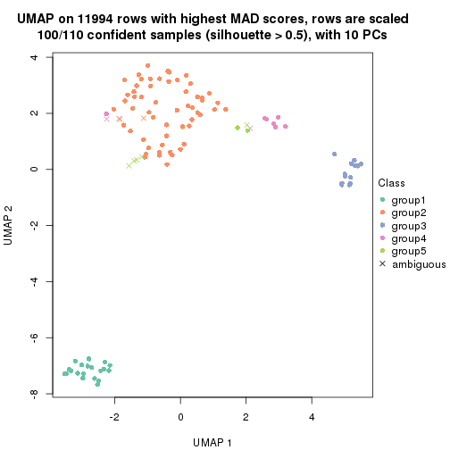
Following heatmap shows how subgroups are split when increasing k:
collect_classes(res)
Test correlation between subgroups and known annotations. If the known annotation is numeric, one-way ANOVA test is applied, and if the known annotation is discrete, chi-squared contingency table test is applied.
test_to_known_factors(res)
#> n disease.state(p) agent(p) k
#> MAD:mclust 110 1.29e-06 1.0000 2
#> MAD:mclust 97 4.89e-14 0.8912 3
#> MAD:mclust 104 5.76e-14 0.0211 4
#> MAD:mclust 103 1.55e-13 0.0261 5
#> MAD:mclust 100 5.58e-14 0.0460 6
If matrix rows can be associated to genes, consider to use GO_Enrichment(res,
...) to perform function enrichment for the signature genes.
The object with results only for a single top-value method and a single partition method can be extracted as:
res = res_list["MAD", "NMF"]
# you can also extract it by
# res = res_list["MAD:NMF"]
A summary of res and all the functions that can be applied to it:
res
#> A 'ConsensusPartition' object with k = 2, 3, 4, 5, 6.
#> On a matrix with 11994 rows and 110 columns.
#> Top rows (1000, 2000, 3000, 4000, 5000) are extracted by 'MAD' method.
#> Subgroups are detected by 'NMF' method.
#> Performed in total 1250 partitions by row resampling.
#> Best k for subgroups seems to be 3.
#>
#> Following methods can be applied to this 'ConsensusPartition' object:
#> [1] "cola_report" "collect_classes" "collect_plots"
#> [4] "collect_stats" "colnames" "compare_signatures"
#> [7] "consensus_heatmap" "dimension_reduction" "functional_enrichment"
#> [10] "get_anno_col" "get_anno" "get_classes"
#> [13] "get_consensus" "get_matrix" "get_membership"
#> [16] "get_param" "get_signatures" "get_stats"
#> [19] "is_best_k" "is_stable_k" "membership_heatmap"
#> [22] "ncol" "nrow" "plot_ecdf"
#> [25] "rownames" "select_partition_number" "show"
#> [28] "suggest_best_k" "test_to_known_factors"
collect_plots() function collects all the plots made from res for all k (number of partitions)
into one single page to provide an easy and fast comparison between different k.
collect_plots(res)
The plots are:
k and the heatmap of
predicted classes for each k.k.k.k.All the plots in panels can be made by individual functions and they are plotted later in this section.
select_partition_number() produces several plots showing different
statistics for choosing “optimized” k. There are following statistics:
k;k, the area increased is defined as \(A_k - A_{k-1}\).The detailed explanations of these statistics can be found in the cola vignette.
Generally speaking, lower PAC score, higher mean silhouette score or higher
concordance corresponds to better partition. Rand index and Jaccard index
measure how similar the current partition is compared to partition with k-1.
If they are too similar, we won't accept k is better than k-1.
select_partition_number(res)
The numeric values for all these statistics can be obtained by get_stats().
get_stats(res)
#> k 1-PAC mean_silhouette concordance area_increased Rand Jaccard
#> 2 2 0.840 0.933 0.968 0.448 0.538 0.538
#> 3 3 0.985 0.944 0.978 0.175 0.937 0.883
#> 4 4 0.741 0.839 0.911 0.153 0.948 0.890
#> 5 5 0.666 0.805 0.861 0.131 0.897 0.767
#> 6 6 0.658 0.656 0.790 0.101 0.865 0.622
suggest_best_k() suggests the best \(k\) based on these statistics. The rules are as follows:
NA.suggest_best_k(res)
#> [1] 3
Following shows the table of the partitions (You need to click the show/hide
code output link to see it). The membership matrix (columns with name p*)
is inferred by
clue::cl_consensus()
function with the SE method. Basically the value in the membership matrix
represents the probability to belong to a certain group. The finall class
label for an item is determined with the group with highest probability it
belongs to.
In get_classes() function, the entropy is calculated from the membership
matrix and the silhouette score is calculated from the consensus matrix.
cbind(get_classes(res, k = 2), get_membership(res, k = 2))
#> class entropy silhouette p1 p2
#> GSM555237 1 0.000 0.927 1.000 0.000
#> GSM555239 1 0.000 0.927 1.000 0.000
#> GSM555241 1 0.000 0.927 1.000 0.000
#> GSM555243 1 0.000 0.927 1.000 0.000
#> GSM555245 1 0.000 0.927 1.000 0.000
#> GSM555247 1 0.000 0.927 1.000 0.000
#> GSM555249 1 0.000 0.927 1.000 0.000
#> GSM555251 1 0.000 0.927 1.000 0.000
#> GSM555253 1 0.000 0.927 1.000 0.000
#> GSM555255 1 0.000 0.927 1.000 0.000
#> GSM555257 1 0.722 0.799 0.800 0.200
#> GSM555259 1 0.722 0.799 0.800 0.200
#> GSM555261 2 0.952 0.330 0.372 0.628
#> GSM555263 2 0.000 0.986 0.000 1.000
#> GSM555265 1 0.999 0.190 0.520 0.480
#> GSM555267 2 0.634 0.788 0.160 0.840
#> GSM555269 1 0.730 0.794 0.796 0.204
#> GSM555271 1 0.714 0.803 0.804 0.196
#> GSM555273 2 0.000 0.986 0.000 1.000
#> GSM555275 2 0.000 0.986 0.000 1.000
#> GSM555238 1 0.000 0.927 1.000 0.000
#> GSM555240 1 0.000 0.927 1.000 0.000
#> GSM555242 1 0.000 0.927 1.000 0.000
#> GSM555244 1 0.000 0.927 1.000 0.000
#> GSM555246 1 0.000 0.927 1.000 0.000
#> GSM555248 1 0.000 0.927 1.000 0.000
#> GSM555250 1 0.000 0.927 1.000 0.000
#> GSM555252 1 0.000 0.927 1.000 0.000
#> GSM555254 1 0.000 0.927 1.000 0.000
#> GSM555256 1 0.000 0.927 1.000 0.000
#> GSM555258 2 0.000 0.986 0.000 1.000
#> GSM555260 2 0.000 0.986 0.000 1.000
#> GSM555262 2 0.000 0.986 0.000 1.000
#> GSM555264 1 0.932 0.552 0.652 0.348
#> GSM555266 2 0.000 0.986 0.000 1.000
#> GSM555268 2 0.000 0.986 0.000 1.000
#> GSM555270 2 0.000 0.986 0.000 1.000
#> GSM555272 2 0.000 0.986 0.000 1.000
#> GSM555274 2 0.000 0.986 0.000 1.000
#> GSM555276 2 0.000 0.986 0.000 1.000
#> GSM555277 2 0.000 0.986 0.000 1.000
#> GSM555279 2 0.000 0.986 0.000 1.000
#> GSM555281 2 0.000 0.986 0.000 1.000
#> GSM555283 2 0.000 0.986 0.000 1.000
#> GSM555285 2 0.000 0.986 0.000 1.000
#> GSM555287 2 0.808 0.634 0.248 0.752
#> GSM555289 2 0.000 0.986 0.000 1.000
#> GSM555291 2 0.000 0.986 0.000 1.000
#> GSM555293 2 0.000 0.986 0.000 1.000
#> GSM555295 2 0.000 0.986 0.000 1.000
#> GSM555297 2 0.482 0.866 0.104 0.896
#> GSM555299 1 0.000 0.927 1.000 0.000
#> GSM555301 1 0.722 0.799 0.800 0.200
#> GSM555303 1 0.430 0.887 0.912 0.088
#> GSM555305 1 0.706 0.807 0.808 0.192
#> GSM555307 2 0.000 0.986 0.000 1.000
#> GSM555309 1 0.184 0.916 0.972 0.028
#> GSM555311 2 0.000 0.986 0.000 1.000
#> GSM555313 2 0.000 0.986 0.000 1.000
#> GSM555315 2 0.000 0.986 0.000 1.000
#> GSM555278 2 0.000 0.986 0.000 1.000
#> GSM555280 2 0.000 0.986 0.000 1.000
#> GSM555282 2 0.000 0.986 0.000 1.000
#> GSM555284 2 0.000 0.986 0.000 1.000
#> GSM555286 2 0.000 0.986 0.000 1.000
#> GSM555288 2 0.000 0.986 0.000 1.000
#> GSM555290 2 0.000 0.986 0.000 1.000
#> GSM555292 2 0.000 0.986 0.000 1.000
#> GSM555294 2 0.000 0.986 0.000 1.000
#> GSM555296 2 0.000 0.986 0.000 1.000
#> GSM555298 1 0.722 0.799 0.800 0.200
#> GSM555300 1 0.000 0.927 1.000 0.000
#> GSM555302 1 0.529 0.867 0.880 0.120
#> GSM555304 1 0.402 0.891 0.920 0.080
#> GSM555306 1 0.552 0.861 0.872 0.128
#> GSM555308 1 0.000 0.927 1.000 0.000
#> GSM555310 1 0.000 0.927 1.000 0.000
#> GSM555312 2 0.000 0.986 0.000 1.000
#> GSM555314 2 0.000 0.986 0.000 1.000
#> GSM555316 2 0.000 0.986 0.000 1.000
#> GSM555317 2 0.000 0.986 0.000 1.000
#> GSM555319 2 0.000 0.986 0.000 1.000
#> GSM555321 2 0.000 0.986 0.000 1.000
#> GSM555323 2 0.000 0.986 0.000 1.000
#> GSM555325 2 0.000 0.986 0.000 1.000
#> GSM555327 2 0.000 0.986 0.000 1.000
#> GSM555329 2 0.000 0.986 0.000 1.000
#> GSM555331 2 0.000 0.986 0.000 1.000
#> GSM555333 2 0.000 0.986 0.000 1.000
#> GSM555335 2 0.000 0.986 0.000 1.000
#> GSM555337 2 0.000 0.986 0.000 1.000
#> GSM555339 2 0.000 0.986 0.000 1.000
#> GSM555341 2 0.000 0.986 0.000 1.000
#> GSM555343 2 0.000 0.986 0.000 1.000
#> GSM555345 2 0.000 0.986 0.000 1.000
#> GSM555318 2 0.000 0.986 0.000 1.000
#> GSM555320 2 0.000 0.986 0.000 1.000
#> GSM555322 2 0.000 0.986 0.000 1.000
#> GSM555324 1 0.000 0.927 1.000 0.000
#> GSM555326 2 0.000 0.986 0.000 1.000
#> GSM555328 2 0.000 0.986 0.000 1.000
#> GSM555330 2 0.000 0.986 0.000 1.000
#> GSM555332 2 0.000 0.986 0.000 1.000
#> GSM555334 2 0.000 0.986 0.000 1.000
#> GSM555336 2 0.000 0.986 0.000 1.000
#> GSM555338 2 0.000 0.986 0.000 1.000
#> GSM555340 2 0.000 0.986 0.000 1.000
#> GSM555342 2 0.000 0.986 0.000 1.000
#> GSM555344 2 0.000 0.986 0.000 1.000
#> GSM555346 2 0.000 0.986 0.000 1.000
cbind(get_classes(res, k = 3), get_membership(res, k = 3))
#> class entropy silhouette p1 p2 p3
#> GSM555237 1 0.0747 0.961 0.984 0.000 0.016
#> GSM555239 1 0.0592 0.963 0.988 0.000 0.012
#> GSM555241 1 0.0747 0.961 0.984 0.000 0.016
#> GSM555243 1 0.0592 0.963 0.988 0.000 0.012
#> GSM555245 1 0.0592 0.963 0.988 0.000 0.012
#> GSM555247 1 0.0892 0.958 0.980 0.000 0.020
#> GSM555249 1 0.0424 0.963 0.992 0.000 0.008
#> GSM555251 1 0.0592 0.963 0.988 0.000 0.012
#> GSM555253 1 0.0892 0.958 0.980 0.000 0.020
#> GSM555255 1 0.0000 0.964 1.000 0.000 0.000
#> GSM555257 3 0.8059 0.059 0.444 0.064 0.492
#> GSM555259 3 0.0000 0.937 0.000 0.000 1.000
#> GSM555261 2 0.5058 0.684 0.000 0.756 0.244
#> GSM555263 2 0.0237 0.982 0.000 0.996 0.004
#> GSM555265 3 0.5835 0.458 0.000 0.340 0.660
#> GSM555267 2 0.5327 0.634 0.000 0.728 0.272
#> GSM555269 3 0.0237 0.933 0.000 0.004 0.996
#> GSM555271 3 0.0000 0.937 0.000 0.000 1.000
#> GSM555273 2 0.0983 0.969 0.016 0.980 0.004
#> GSM555275 2 0.0000 0.985 0.000 1.000 0.000
#> GSM555238 1 0.0000 0.964 1.000 0.000 0.000
#> GSM555240 1 0.0000 0.964 1.000 0.000 0.000
#> GSM555242 1 0.0000 0.964 1.000 0.000 0.000
#> GSM555244 1 0.0592 0.963 0.988 0.000 0.012
#> GSM555246 1 0.0000 0.964 1.000 0.000 0.000
#> GSM555248 1 0.0000 0.964 1.000 0.000 0.000
#> GSM555250 1 0.0000 0.964 1.000 0.000 0.000
#> GSM555252 1 0.0000 0.964 1.000 0.000 0.000
#> GSM555254 1 0.0000 0.964 1.000 0.000 0.000
#> GSM555256 1 0.0000 0.964 1.000 0.000 0.000
#> GSM555258 2 0.2860 0.899 0.084 0.912 0.004
#> GSM555260 2 0.0000 0.985 0.000 1.000 0.000
#> GSM555262 2 0.0000 0.985 0.000 1.000 0.000
#> GSM555264 1 0.6608 0.375 0.628 0.356 0.016
#> GSM555266 2 0.0000 0.985 0.000 1.000 0.000
#> GSM555268 2 0.0000 0.985 0.000 1.000 0.000
#> GSM555270 2 0.0000 0.985 0.000 1.000 0.000
#> GSM555272 2 0.0829 0.972 0.012 0.984 0.004
#> GSM555274 2 0.0000 0.985 0.000 1.000 0.000
#> GSM555276 2 0.0000 0.985 0.000 1.000 0.000
#> GSM555277 2 0.0000 0.985 0.000 1.000 0.000
#> GSM555279 2 0.0237 0.982 0.000 0.996 0.004
#> GSM555281 2 0.0000 0.985 0.000 1.000 0.000
#> GSM555283 2 0.0000 0.985 0.000 1.000 0.000
#> GSM555285 2 0.0592 0.975 0.012 0.988 0.000
#> GSM555287 2 0.5098 0.676 0.000 0.752 0.248
#> GSM555289 2 0.0000 0.985 0.000 1.000 0.000
#> GSM555291 2 0.0000 0.985 0.000 1.000 0.000
#> GSM555293 2 0.0000 0.985 0.000 1.000 0.000
#> GSM555295 2 0.0237 0.982 0.000 0.996 0.004
#> GSM555297 2 0.3192 0.870 0.000 0.888 0.112
#> GSM555299 3 0.0237 0.936 0.004 0.000 0.996
#> GSM555301 3 0.0000 0.937 0.000 0.000 1.000
#> GSM555303 3 0.0000 0.937 0.000 0.000 1.000
#> GSM555305 3 0.0000 0.937 0.000 0.000 1.000
#> GSM555307 2 0.0000 0.985 0.000 1.000 0.000
#> GSM555309 3 0.0000 0.937 0.000 0.000 1.000
#> GSM555311 2 0.0000 0.985 0.000 1.000 0.000
#> GSM555313 2 0.0000 0.985 0.000 1.000 0.000
#> GSM555315 2 0.0000 0.985 0.000 1.000 0.000
#> GSM555278 2 0.0000 0.985 0.000 1.000 0.000
#> GSM555280 2 0.0000 0.985 0.000 1.000 0.000
#> GSM555282 2 0.0000 0.985 0.000 1.000 0.000
#> GSM555284 2 0.0000 0.985 0.000 1.000 0.000
#> GSM555286 2 0.0000 0.985 0.000 1.000 0.000
#> GSM555288 2 0.0000 0.985 0.000 1.000 0.000
#> GSM555290 2 0.0000 0.985 0.000 1.000 0.000
#> GSM555292 2 0.0000 0.985 0.000 1.000 0.000
#> GSM555294 2 0.0000 0.985 0.000 1.000 0.000
#> GSM555296 2 0.0000 0.985 0.000 1.000 0.000
#> GSM555298 3 0.0000 0.937 0.000 0.000 1.000
#> GSM555300 3 0.0237 0.936 0.004 0.000 0.996
#> GSM555302 3 0.0000 0.937 0.000 0.000 1.000
#> GSM555304 3 0.0000 0.937 0.000 0.000 1.000
#> GSM555306 3 0.0000 0.937 0.000 0.000 1.000
#> GSM555308 3 0.0237 0.936 0.004 0.000 0.996
#> GSM555310 3 0.0237 0.936 0.004 0.000 0.996
#> GSM555312 2 0.0000 0.985 0.000 1.000 0.000
#> GSM555314 2 0.0237 0.982 0.000 0.996 0.004
#> GSM555316 2 0.0000 0.985 0.000 1.000 0.000
#> GSM555317 2 0.0000 0.985 0.000 1.000 0.000
#> GSM555319 2 0.0000 0.985 0.000 1.000 0.000
#> GSM555321 2 0.0000 0.985 0.000 1.000 0.000
#> GSM555323 2 0.0000 0.985 0.000 1.000 0.000
#> GSM555325 2 0.0000 0.985 0.000 1.000 0.000
#> GSM555327 2 0.0000 0.985 0.000 1.000 0.000
#> GSM555329 2 0.0000 0.985 0.000 1.000 0.000
#> GSM555331 2 0.0000 0.985 0.000 1.000 0.000
#> GSM555333 2 0.0000 0.985 0.000 1.000 0.000
#> GSM555335 2 0.0000 0.985 0.000 1.000 0.000
#> GSM555337 2 0.0000 0.985 0.000 1.000 0.000
#> GSM555339 2 0.0000 0.985 0.000 1.000 0.000
#> GSM555341 2 0.0000 0.985 0.000 1.000 0.000
#> GSM555343 2 0.0000 0.985 0.000 1.000 0.000
#> GSM555345 2 0.0000 0.985 0.000 1.000 0.000
#> GSM555318 2 0.0000 0.985 0.000 1.000 0.000
#> GSM555320 2 0.0000 0.985 0.000 1.000 0.000
#> GSM555322 2 0.0000 0.985 0.000 1.000 0.000
#> GSM555324 3 0.0237 0.936 0.004 0.000 0.996
#> GSM555326 2 0.0000 0.985 0.000 1.000 0.000
#> GSM555328 2 0.0000 0.985 0.000 1.000 0.000
#> GSM555330 2 0.0000 0.985 0.000 1.000 0.000
#> GSM555332 2 0.0000 0.985 0.000 1.000 0.000
#> GSM555334 2 0.0000 0.985 0.000 1.000 0.000
#> GSM555336 2 0.0000 0.985 0.000 1.000 0.000
#> GSM555338 2 0.0000 0.985 0.000 1.000 0.000
#> GSM555340 2 0.0000 0.985 0.000 1.000 0.000
#> GSM555342 2 0.0000 0.985 0.000 1.000 0.000
#> GSM555344 2 0.0000 0.985 0.000 1.000 0.000
#> GSM555346 2 0.0000 0.985 0.000 1.000 0.000
cbind(get_classes(res, k = 4), get_membership(res, k = 4))
#> class entropy silhouette p1 p2 p3 p4
#> GSM555237 1 0.0188 0.99110 0.996 0.000 0.000 0.004
#> GSM555239 1 0.0469 0.98651 0.988 0.000 0.000 0.012
#> GSM555241 1 0.0188 0.99110 0.996 0.000 0.000 0.004
#> GSM555243 1 0.0000 0.99197 1.000 0.000 0.000 0.000
#> GSM555245 1 0.0000 0.99197 1.000 0.000 0.000 0.000
#> GSM555247 1 0.0469 0.98651 0.988 0.000 0.000 0.012
#> GSM555249 1 0.0000 0.99197 1.000 0.000 0.000 0.000
#> GSM555251 1 0.0000 0.99197 1.000 0.000 0.000 0.000
#> GSM555253 1 0.0000 0.99197 1.000 0.000 0.000 0.000
#> GSM555255 1 0.0817 0.97776 0.976 0.000 0.000 0.024
#> GSM555257 4 0.8520 0.01064 0.392 0.060 0.144 0.404
#> GSM555259 3 0.0336 0.97065 0.000 0.000 0.992 0.008
#> GSM555261 2 0.6566 0.22723 0.000 0.600 0.288 0.112
#> GSM555263 2 0.3306 0.78729 0.000 0.840 0.004 0.156
#> GSM555265 3 0.5624 0.52413 0.000 0.172 0.720 0.108
#> GSM555267 2 0.6100 0.34640 0.000 0.644 0.272 0.084
#> GSM555269 3 0.0188 0.97227 0.000 0.000 0.996 0.004
#> GSM555271 3 0.0000 0.97454 0.000 0.000 1.000 0.000
#> GSM555273 4 0.4795 0.70284 0.012 0.292 0.000 0.696
#> GSM555275 2 0.1637 0.85975 0.000 0.940 0.000 0.060
#> GSM555238 1 0.0000 0.99197 1.000 0.000 0.000 0.000
#> GSM555240 1 0.1716 0.94076 0.936 0.000 0.000 0.064
#> GSM555242 1 0.0188 0.99132 0.996 0.000 0.000 0.004
#> GSM555244 1 0.0336 0.99032 0.992 0.000 0.000 0.008
#> GSM555246 1 0.0188 0.99132 0.996 0.000 0.000 0.004
#> GSM555248 1 0.0000 0.99197 1.000 0.000 0.000 0.000
#> GSM555250 1 0.0336 0.99032 0.992 0.000 0.000 0.008
#> GSM555252 1 0.0707 0.98373 0.980 0.000 0.000 0.020
#> GSM555254 1 0.0000 0.99197 1.000 0.000 0.000 0.000
#> GSM555256 1 0.0336 0.98997 0.992 0.000 0.000 0.008
#> GSM555258 2 0.6084 0.47717 0.120 0.676 0.000 0.204
#> GSM555260 2 0.3266 0.79047 0.000 0.832 0.000 0.168
#> GSM555262 2 0.2011 0.86693 0.000 0.920 0.000 0.080
#> GSM555264 4 0.5232 0.53776 0.132 0.100 0.004 0.764
#> GSM555266 2 0.2868 0.81621 0.000 0.864 0.000 0.136
#> GSM555268 2 0.2469 0.84018 0.000 0.892 0.000 0.108
#> GSM555270 2 0.1022 0.87332 0.000 0.968 0.000 0.032
#> GSM555272 2 0.4986 0.61788 0.044 0.740 0.000 0.216
#> GSM555274 2 0.1637 0.87254 0.000 0.940 0.000 0.060
#> GSM555276 2 0.2011 0.84815 0.000 0.920 0.000 0.080
#> GSM555277 2 0.2469 0.82865 0.000 0.892 0.000 0.108
#> GSM555279 2 0.2589 0.82667 0.000 0.884 0.000 0.116
#> GSM555281 2 0.1716 0.85790 0.000 0.936 0.000 0.064
#> GSM555283 2 0.0921 0.87341 0.000 0.972 0.000 0.028
#> GSM555285 4 0.5200 0.70597 0.036 0.264 0.000 0.700
#> GSM555287 2 0.6260 0.44523 0.000 0.664 0.144 0.192
#> GSM555289 2 0.2408 0.83149 0.000 0.896 0.000 0.104
#> GSM555291 2 0.0707 0.87360 0.000 0.980 0.000 0.020
#> GSM555293 2 0.2149 0.84736 0.000 0.912 0.000 0.088
#> GSM555295 2 0.2081 0.84882 0.000 0.916 0.000 0.084
#> GSM555297 2 0.7113 0.00679 0.000 0.552 0.276 0.172
#> GSM555299 3 0.0000 0.97454 0.000 0.000 1.000 0.000
#> GSM555301 3 0.0707 0.96246 0.000 0.000 0.980 0.020
#> GSM555303 3 0.0000 0.97454 0.000 0.000 1.000 0.000
#> GSM555305 3 0.0000 0.97454 0.000 0.000 1.000 0.000
#> GSM555307 2 0.2011 0.85004 0.000 0.920 0.000 0.080
#> GSM555309 3 0.0188 0.97310 0.000 0.000 0.996 0.004
#> GSM555311 2 0.2530 0.83038 0.000 0.888 0.000 0.112
#> GSM555313 2 0.1211 0.87406 0.000 0.960 0.000 0.040
#> GSM555315 2 0.2647 0.82306 0.000 0.880 0.000 0.120
#> GSM555278 2 0.2408 0.84068 0.000 0.896 0.000 0.104
#> GSM555280 2 0.1557 0.87313 0.000 0.944 0.000 0.056
#> GSM555282 2 0.2704 0.83370 0.000 0.876 0.000 0.124
#> GSM555284 2 0.2814 0.82573 0.000 0.868 0.000 0.132
#> GSM555286 2 0.1118 0.87286 0.000 0.964 0.000 0.036
#> GSM555288 2 0.2530 0.84396 0.000 0.888 0.000 0.112
#> GSM555290 2 0.2149 0.84341 0.000 0.912 0.000 0.088
#> GSM555292 2 0.1557 0.86120 0.000 0.944 0.000 0.056
#> GSM555294 2 0.3266 0.77058 0.000 0.832 0.000 0.168
#> GSM555296 2 0.0921 0.87227 0.000 0.972 0.000 0.028
#> GSM555298 3 0.0188 0.97227 0.000 0.000 0.996 0.004
#> GSM555300 3 0.0188 0.97310 0.000 0.000 0.996 0.004
#> GSM555302 3 0.0188 0.97319 0.000 0.000 0.996 0.004
#> GSM555304 3 0.0000 0.97454 0.000 0.000 1.000 0.000
#> GSM555306 3 0.0000 0.97454 0.000 0.000 1.000 0.000
#> GSM555308 3 0.0000 0.97454 0.000 0.000 1.000 0.000
#> GSM555310 3 0.0000 0.97454 0.000 0.000 1.000 0.000
#> GSM555312 2 0.1389 0.86352 0.000 0.952 0.000 0.048
#> GSM555314 2 0.1716 0.85790 0.000 0.936 0.000 0.064
#> GSM555316 2 0.1302 0.86398 0.000 0.956 0.000 0.044
#> GSM555317 2 0.1867 0.85225 0.000 0.928 0.000 0.072
#> GSM555319 2 0.1022 0.87238 0.000 0.968 0.000 0.032
#> GSM555321 2 0.1302 0.87098 0.000 0.956 0.000 0.044
#> GSM555323 2 0.1389 0.86459 0.000 0.952 0.000 0.048
#> GSM555325 4 0.4998 0.31913 0.000 0.488 0.000 0.512
#> GSM555327 2 0.2281 0.83764 0.000 0.904 0.000 0.096
#> GSM555329 2 0.1022 0.87238 0.000 0.968 0.000 0.032
#> GSM555331 2 0.0817 0.87223 0.000 0.976 0.000 0.024
#> GSM555333 2 0.1302 0.86693 0.000 0.956 0.000 0.044
#> GSM555335 2 0.1557 0.86112 0.000 0.944 0.000 0.056
#> GSM555337 2 0.0707 0.87222 0.000 0.980 0.000 0.020
#> GSM555339 2 0.1211 0.86679 0.000 0.960 0.000 0.040
#> GSM555341 2 0.1792 0.85627 0.000 0.932 0.000 0.068
#> GSM555343 2 0.1637 0.86053 0.000 0.940 0.000 0.060
#> GSM555345 2 0.2647 0.81929 0.000 0.880 0.000 0.120
#> GSM555318 2 0.2589 0.82298 0.000 0.884 0.000 0.116
#> GSM555320 2 0.4382 0.53658 0.000 0.704 0.000 0.296
#> GSM555322 2 0.1716 0.85715 0.000 0.936 0.000 0.064
#> GSM555324 3 0.0188 0.97310 0.000 0.000 0.996 0.004
#> GSM555326 2 0.1557 0.87032 0.000 0.944 0.000 0.056
#> GSM555328 2 0.1474 0.86197 0.000 0.948 0.000 0.052
#> GSM555330 2 0.1118 0.87030 0.000 0.964 0.000 0.036
#> GSM555332 2 0.1792 0.85483 0.000 0.932 0.000 0.068
#> GSM555334 2 0.2589 0.82298 0.000 0.884 0.000 0.116
#> GSM555336 2 0.2408 0.83617 0.000 0.896 0.000 0.104
#> GSM555338 2 0.1867 0.85245 0.000 0.928 0.000 0.072
#> GSM555340 2 0.1118 0.87243 0.000 0.964 0.000 0.036
#> GSM555342 2 0.2011 0.85127 0.000 0.920 0.000 0.080
#> GSM555344 2 0.2281 0.83998 0.000 0.904 0.000 0.096
#> GSM555346 4 0.4830 0.56928 0.000 0.392 0.000 0.608
cbind(get_classes(res, k = 5), get_membership(res, k = 5))
#> class entropy silhouette p1 p2 p3 p4 p5
#> GSM555237 1 0.0162 0.9894 0.996 0.000 0.000 0.000 0.004
#> GSM555239 1 0.0290 0.9887 0.992 0.000 0.000 0.000 0.008
#> GSM555241 1 0.0000 0.9909 1.000 0.000 0.000 0.000 0.000
#> GSM555243 1 0.0000 0.9909 1.000 0.000 0.000 0.000 0.000
#> GSM555245 1 0.0162 0.9901 0.996 0.000 0.000 0.000 0.004
#> GSM555247 1 0.0290 0.9887 0.992 0.000 0.000 0.000 0.008
#> GSM555249 1 0.0162 0.9901 0.996 0.000 0.000 0.000 0.004
#> GSM555251 1 0.0000 0.9909 1.000 0.000 0.000 0.000 0.000
#> GSM555253 1 0.0000 0.9909 1.000 0.000 0.000 0.000 0.000
#> GSM555255 1 0.0290 0.9887 0.992 0.000 0.000 0.000 0.008
#> GSM555257 4 0.5054 0.6418 0.004 0.044 0.044 0.744 0.164
#> GSM555259 4 0.4610 0.5040 0.000 0.020 0.296 0.676 0.008
#> GSM555261 4 0.4374 0.6709 0.000 0.144 0.008 0.776 0.072
#> GSM555263 4 0.5268 0.6062 0.000 0.172 0.000 0.680 0.148
#> GSM555265 4 0.5063 0.6859 0.000 0.128 0.056 0.752 0.064
#> GSM555267 4 0.5797 0.5624 0.000 0.228 0.048 0.660 0.064
#> GSM555269 4 0.5253 0.3945 0.000 0.036 0.384 0.572 0.008
#> GSM555271 3 0.0000 0.9990 0.000 0.000 1.000 0.000 0.000
#> GSM555273 5 0.3906 0.6387 0.000 0.132 0.000 0.068 0.800
#> GSM555275 2 0.2859 0.8067 0.000 0.876 0.000 0.056 0.068
#> GSM555238 1 0.0000 0.9909 1.000 0.000 0.000 0.000 0.000
#> GSM555240 1 0.1310 0.9574 0.956 0.000 0.000 0.024 0.020
#> GSM555242 1 0.0000 0.9909 1.000 0.000 0.000 0.000 0.000
#> GSM555244 1 0.0000 0.9909 1.000 0.000 0.000 0.000 0.000
#> GSM555246 1 0.0162 0.9901 0.996 0.000 0.000 0.000 0.004
#> GSM555248 1 0.0000 0.9909 1.000 0.000 0.000 0.000 0.000
#> GSM555250 1 0.0162 0.9894 0.996 0.000 0.000 0.000 0.004
#> GSM555252 1 0.2438 0.9057 0.900 0.000 0.000 0.060 0.040
#> GSM555254 1 0.0000 0.9909 1.000 0.000 0.000 0.000 0.000
#> GSM555256 1 0.0162 0.9895 0.996 0.000 0.000 0.000 0.004
#> GSM555258 4 0.2193 0.6342 0.000 0.028 0.000 0.912 0.060
#> GSM555260 4 0.1701 0.6466 0.000 0.048 0.000 0.936 0.016
#> GSM555262 2 0.4546 0.6580 0.000 0.668 0.000 0.304 0.028
#> GSM555264 5 0.3478 0.5726 0.004 0.032 0.000 0.136 0.828
#> GSM555266 2 0.3882 0.7809 0.000 0.756 0.000 0.224 0.020
#> GSM555268 2 0.3741 0.7522 0.000 0.732 0.000 0.264 0.004
#> GSM555270 2 0.2331 0.8278 0.000 0.900 0.000 0.080 0.020
#> GSM555272 4 0.3844 0.6494 0.000 0.044 0.000 0.792 0.164
#> GSM555274 2 0.3656 0.8031 0.000 0.800 0.000 0.168 0.032
#> GSM555276 2 0.2795 0.8148 0.000 0.880 0.000 0.056 0.064
#> GSM555277 2 0.2514 0.8195 0.000 0.896 0.000 0.044 0.060
#> GSM555279 2 0.3164 0.7908 0.000 0.852 0.000 0.044 0.104
#> GSM555281 2 0.2927 0.8159 0.000 0.872 0.000 0.060 0.068
#> GSM555283 4 0.4730 0.5586 0.000 0.260 0.000 0.688 0.052
#> GSM555285 5 0.3612 0.6394 0.004 0.100 0.000 0.064 0.832
#> GSM555287 2 0.5926 0.3269 0.000 0.608 0.268 0.012 0.112
#> GSM555289 2 0.2504 0.8189 0.000 0.896 0.000 0.040 0.064
#> GSM555291 2 0.4817 0.4259 0.000 0.656 0.000 0.300 0.044
#> GSM555293 2 0.2830 0.8005 0.000 0.876 0.000 0.044 0.080
#> GSM555295 2 0.2770 0.8020 0.000 0.880 0.000 0.044 0.076
#> GSM555297 2 0.7077 -0.0401 0.000 0.492 0.308 0.044 0.156
#> GSM555299 3 0.0000 0.9990 0.000 0.000 1.000 0.000 0.000
#> GSM555301 3 0.0451 0.9863 0.000 0.004 0.988 0.000 0.008
#> GSM555303 3 0.0000 0.9990 0.000 0.000 1.000 0.000 0.000
#> GSM555305 3 0.0000 0.9990 0.000 0.000 1.000 0.000 0.000
#> GSM555307 2 0.1211 0.8254 0.000 0.960 0.000 0.016 0.024
#> GSM555309 3 0.0000 0.9990 0.000 0.000 1.000 0.000 0.000
#> GSM555311 2 0.3216 0.7843 0.000 0.848 0.000 0.044 0.108
#> GSM555313 2 0.3562 0.7782 0.000 0.788 0.000 0.196 0.016
#> GSM555315 2 0.3090 0.7885 0.000 0.856 0.000 0.040 0.104
#> GSM555278 2 0.3906 0.7645 0.000 0.744 0.000 0.240 0.016
#> GSM555280 2 0.3659 0.7712 0.000 0.768 0.000 0.220 0.012
#> GSM555282 2 0.5129 0.5996 0.000 0.616 0.000 0.328 0.056
#> GSM555284 2 0.5053 0.6097 0.000 0.624 0.000 0.324 0.052
#> GSM555286 2 0.2825 0.8147 0.000 0.860 0.000 0.124 0.016
#> GSM555288 4 0.2172 0.6433 0.000 0.076 0.000 0.908 0.016
#> GSM555290 2 0.3535 0.8003 0.000 0.832 0.000 0.088 0.080
#> GSM555292 2 0.4276 0.6976 0.000 0.716 0.000 0.256 0.028
#> GSM555294 2 0.3868 0.7668 0.000 0.800 0.000 0.060 0.140
#> GSM555296 2 0.2390 0.8261 0.000 0.896 0.000 0.084 0.020
#> GSM555298 3 0.0000 0.9990 0.000 0.000 1.000 0.000 0.000
#> GSM555300 3 0.0000 0.9990 0.000 0.000 1.000 0.000 0.000
#> GSM555302 3 0.0000 0.9990 0.000 0.000 1.000 0.000 0.000
#> GSM555304 3 0.0000 0.9990 0.000 0.000 1.000 0.000 0.000
#> GSM555306 3 0.0000 0.9990 0.000 0.000 1.000 0.000 0.000
#> GSM555308 3 0.0000 0.9990 0.000 0.000 1.000 0.000 0.000
#> GSM555310 3 0.0000 0.9990 0.000 0.000 1.000 0.000 0.000
#> GSM555312 2 0.3130 0.8102 0.000 0.856 0.000 0.096 0.048
#> GSM555314 2 0.2853 0.8031 0.000 0.876 0.000 0.052 0.072
#> GSM555316 2 0.1965 0.8265 0.000 0.924 0.000 0.024 0.052
#> GSM555317 2 0.1282 0.8227 0.000 0.952 0.000 0.004 0.044
#> GSM555319 2 0.1106 0.8263 0.000 0.964 0.000 0.012 0.024
#> GSM555321 2 0.2359 0.8128 0.000 0.904 0.000 0.036 0.060
#> GSM555323 2 0.2446 0.8108 0.000 0.900 0.000 0.044 0.056
#> GSM555325 2 0.4958 0.2435 0.000 0.592 0.000 0.036 0.372
#> GSM555327 2 0.1331 0.8230 0.000 0.952 0.000 0.008 0.040
#> GSM555329 2 0.1281 0.8255 0.000 0.956 0.000 0.012 0.032
#> GSM555331 2 0.1251 0.8279 0.000 0.956 0.000 0.008 0.036
#> GSM555333 2 0.2446 0.8108 0.000 0.900 0.000 0.044 0.056
#> GSM555335 2 0.2569 0.8075 0.000 0.892 0.000 0.040 0.068
#> GSM555337 2 0.0992 0.8293 0.000 0.968 0.000 0.008 0.024
#> GSM555339 2 0.2645 0.8057 0.000 0.888 0.000 0.044 0.068
#> GSM555341 2 0.1469 0.8247 0.000 0.948 0.000 0.016 0.036
#> GSM555343 2 0.2694 0.8041 0.000 0.884 0.000 0.040 0.076
#> GSM555345 2 0.1408 0.8223 0.000 0.948 0.000 0.008 0.044
#> GSM555318 2 0.1952 0.8148 0.000 0.912 0.000 0.004 0.084
#> GSM555320 2 0.4431 0.7540 0.000 0.732 0.000 0.216 0.052
#> GSM555322 2 0.2782 0.8144 0.000 0.880 0.000 0.048 0.072
#> GSM555324 3 0.0000 0.9990 0.000 0.000 1.000 0.000 0.000
#> GSM555326 2 0.2358 0.8245 0.000 0.888 0.000 0.104 0.008
#> GSM555328 2 0.3159 0.8107 0.000 0.856 0.000 0.088 0.056
#> GSM555330 2 0.3242 0.7963 0.000 0.816 0.000 0.172 0.012
#> GSM555332 2 0.3409 0.8043 0.000 0.836 0.000 0.112 0.052
#> GSM555334 2 0.3912 0.7818 0.000 0.804 0.000 0.108 0.088
#> GSM555336 2 0.3586 0.8183 0.000 0.828 0.000 0.096 0.076
#> GSM555338 2 0.1082 0.8253 0.000 0.964 0.000 0.008 0.028
#> GSM555340 2 0.1800 0.8204 0.000 0.932 0.000 0.020 0.048
#> GSM555342 2 0.3323 0.8250 0.000 0.844 0.000 0.100 0.056
#> GSM555344 2 0.2189 0.8176 0.000 0.904 0.000 0.012 0.084
#> GSM555346 5 0.5741 0.3322 0.000 0.360 0.000 0.096 0.544
cbind(get_classes(res, k = 6), get_membership(res, k = 6))
#> class entropy silhouette p1 p2 p3 p4 p5 p6
#> GSM555237 1 0.0291 0.9846 0.992 0.004 0.000 0.000 0.004 0.000
#> GSM555239 1 0.0717 0.9794 0.976 0.000 0.000 0.000 0.016 0.008
#> GSM555241 1 0.0405 0.9849 0.988 0.000 0.000 0.000 0.008 0.004
#> GSM555243 1 0.0000 0.9882 1.000 0.000 0.000 0.000 0.000 0.000
#> GSM555245 1 0.0146 0.9876 0.996 0.000 0.000 0.000 0.004 0.000
#> GSM555247 1 0.0458 0.9836 0.984 0.000 0.000 0.000 0.016 0.000
#> GSM555249 1 0.0146 0.9876 0.996 0.000 0.000 0.000 0.004 0.000
#> GSM555251 1 0.0000 0.9882 1.000 0.000 0.000 0.000 0.000 0.000
#> GSM555253 1 0.0291 0.9863 0.992 0.000 0.000 0.000 0.004 0.004
#> GSM555255 1 0.0622 0.9813 0.980 0.000 0.000 0.000 0.012 0.008
#> GSM555257 4 0.4585 0.7196 0.004 0.032 0.012 0.752 0.160 0.040
#> GSM555259 4 0.3486 0.7766 0.000 0.080 0.044 0.840 0.008 0.028
#> GSM555261 4 0.3259 0.7805 0.000 0.100 0.004 0.844 0.020 0.032
#> GSM555263 4 0.3992 0.7437 0.000 0.120 0.000 0.780 0.088 0.012
#> GSM555265 4 0.3492 0.7793 0.000 0.096 0.012 0.836 0.020 0.036
#> GSM555267 4 0.4902 0.6579 0.000 0.204 0.012 0.704 0.028 0.052
#> GSM555269 4 0.4845 0.5784 0.000 0.048 0.192 0.716 0.028 0.016
#> GSM555271 3 0.0458 0.9796 0.000 0.000 0.984 0.016 0.000 0.000
#> GSM555273 5 0.3047 0.7849 0.004 0.084 0.000 0.064 0.848 0.000
#> GSM555275 2 0.4643 0.2808 0.000 0.648 0.000 0.028 0.024 0.300
#> GSM555238 1 0.0000 0.9882 1.000 0.000 0.000 0.000 0.000 0.000
#> GSM555240 1 0.1036 0.9645 0.964 0.000 0.000 0.004 0.008 0.024
#> GSM555242 1 0.0000 0.9882 1.000 0.000 0.000 0.000 0.000 0.000
#> GSM555244 1 0.0000 0.9882 1.000 0.000 0.000 0.000 0.000 0.000
#> GSM555246 1 0.0146 0.9876 0.996 0.000 0.000 0.000 0.004 0.000
#> GSM555248 1 0.0000 0.9882 1.000 0.000 0.000 0.000 0.000 0.000
#> GSM555250 1 0.0000 0.9882 1.000 0.000 0.000 0.000 0.000 0.000
#> GSM555252 1 0.2199 0.8926 0.892 0.000 0.000 0.000 0.020 0.088
#> GSM555254 1 0.0000 0.9882 1.000 0.000 0.000 0.000 0.000 0.000
#> GSM555256 1 0.0146 0.9872 0.996 0.000 0.000 0.000 0.004 0.000
#> GSM555258 4 0.4385 0.7330 0.000 0.032 0.000 0.760 0.084 0.124
#> GSM555260 4 0.4416 0.7166 0.000 0.032 0.000 0.744 0.056 0.168
#> GSM555262 6 0.4054 0.6715 0.000 0.188 0.000 0.072 0.000 0.740
#> GSM555264 5 0.3114 0.7308 0.004 0.024 0.000 0.108 0.848 0.016
#> GSM555266 6 0.4605 0.6688 0.000 0.296 0.000 0.036 0.016 0.652
#> GSM555268 6 0.3624 0.6893 0.000 0.220 0.000 0.016 0.008 0.756
#> GSM555270 6 0.5019 0.4288 0.000 0.468 0.000 0.044 0.012 0.476
#> GSM555272 4 0.4625 0.7457 0.000 0.072 0.000 0.740 0.144 0.044
#> GSM555274 6 0.5517 0.5783 0.000 0.368 0.000 0.120 0.004 0.508
#> GSM555276 2 0.3791 0.5379 0.000 0.760 0.000 0.032 0.008 0.200
#> GSM555277 2 0.5142 -0.2287 0.000 0.516 0.000 0.064 0.008 0.412
#> GSM555279 2 0.5564 0.0344 0.000 0.552 0.000 0.028 0.080 0.340
#> GSM555281 2 0.4964 -0.3948 0.000 0.484 0.000 0.040 0.012 0.464
#> GSM555283 4 0.5900 0.2873 0.000 0.184 0.000 0.528 0.012 0.276
#> GSM555285 5 0.3136 0.7874 0.008 0.068 0.000 0.060 0.856 0.008
#> GSM555287 2 0.6104 0.3809 0.000 0.636 0.028 0.124 0.052 0.160
#> GSM555289 2 0.4832 -0.3515 0.000 0.492 0.000 0.044 0.004 0.460
#> GSM555291 2 0.6378 -0.3070 0.000 0.380 0.000 0.280 0.012 0.328
#> GSM555293 2 0.2639 0.6546 0.000 0.880 0.000 0.008 0.064 0.048
#> GSM555295 2 0.1957 0.6470 0.000 0.912 0.000 0.008 0.072 0.008
#> GSM555297 2 0.3984 0.5223 0.000 0.772 0.036 0.012 0.172 0.008
#> GSM555299 3 0.0000 0.9943 0.000 0.000 1.000 0.000 0.000 0.000
#> GSM555301 3 0.1434 0.9414 0.000 0.012 0.948 0.012 0.028 0.000
#> GSM555303 3 0.0000 0.9943 0.000 0.000 1.000 0.000 0.000 0.000
#> GSM555305 3 0.0000 0.9943 0.000 0.000 1.000 0.000 0.000 0.000
#> GSM555307 2 0.2784 0.6421 0.000 0.876 0.000 0.040 0.020 0.064
#> GSM555309 3 0.0000 0.9943 0.000 0.000 1.000 0.000 0.000 0.000
#> GSM555311 2 0.3593 0.6298 0.000 0.808 0.000 0.028 0.136 0.028
#> GSM555313 6 0.3595 0.7005 0.000 0.288 0.000 0.008 0.000 0.704
#> GSM555315 2 0.3081 0.6040 0.000 0.824 0.000 0.012 0.152 0.012
#> GSM555278 6 0.4037 0.7014 0.000 0.232 0.000 0.028 0.012 0.728
#> GSM555280 6 0.3420 0.7043 0.000 0.240 0.000 0.012 0.000 0.748
#> GSM555282 6 0.2587 0.5992 0.000 0.108 0.000 0.004 0.020 0.868
#> GSM555284 6 0.3026 0.5747 0.000 0.092 0.000 0.028 0.024 0.856
#> GSM555286 6 0.4088 0.6545 0.000 0.368 0.000 0.016 0.000 0.616
#> GSM555288 6 0.5118 0.0449 0.000 0.084 0.000 0.404 0.000 0.512
#> GSM555290 6 0.4835 0.6468 0.000 0.348 0.000 0.044 0.012 0.596
#> GSM555292 6 0.4354 0.6843 0.000 0.216 0.000 0.080 0.000 0.704
#> GSM555294 2 0.5355 0.3609 0.000 0.556 0.000 0.024 0.356 0.064
#> GSM555296 2 0.3555 0.4068 0.000 0.712 0.000 0.000 0.008 0.280
#> GSM555298 3 0.0000 0.9943 0.000 0.000 1.000 0.000 0.000 0.000
#> GSM555300 3 0.0000 0.9943 0.000 0.000 1.000 0.000 0.000 0.000
#> GSM555302 3 0.0000 0.9943 0.000 0.000 1.000 0.000 0.000 0.000
#> GSM555304 3 0.0000 0.9943 0.000 0.000 1.000 0.000 0.000 0.000
#> GSM555306 3 0.0000 0.9943 0.000 0.000 1.000 0.000 0.000 0.000
#> GSM555308 3 0.0000 0.9943 0.000 0.000 1.000 0.000 0.000 0.000
#> GSM555310 3 0.0000 0.9943 0.000 0.000 1.000 0.000 0.000 0.000
#> GSM555312 6 0.4682 0.5454 0.000 0.420 0.000 0.036 0.004 0.540
#> GSM555314 2 0.3825 0.5657 0.000 0.776 0.000 0.036 0.016 0.172
#> GSM555316 2 0.3059 0.6335 0.000 0.860 0.000 0.040 0.028 0.072
#> GSM555317 2 0.3594 0.5397 0.000 0.768 0.000 0.020 0.008 0.204
#> GSM555319 2 0.3852 0.4149 0.000 0.720 0.000 0.008 0.016 0.256
#> GSM555321 2 0.1675 0.6572 0.000 0.936 0.000 0.008 0.032 0.024
#> GSM555323 2 0.1218 0.6547 0.000 0.956 0.000 0.004 0.028 0.012
#> GSM555325 2 0.4412 0.1972 0.000 0.572 0.000 0.008 0.404 0.016
#> GSM555327 2 0.3164 0.6033 0.000 0.824 0.000 0.032 0.004 0.140
#> GSM555329 2 0.3721 0.4288 0.000 0.728 0.000 0.004 0.016 0.252
#> GSM555331 2 0.1949 0.6446 0.000 0.904 0.000 0.004 0.004 0.088
#> GSM555333 2 0.1777 0.6547 0.000 0.932 0.000 0.024 0.012 0.032
#> GSM555335 2 0.2563 0.6364 0.000 0.892 0.000 0.036 0.044 0.028
#> GSM555337 2 0.2306 0.6407 0.000 0.888 0.000 0.016 0.004 0.092
#> GSM555339 2 0.2100 0.6560 0.000 0.916 0.000 0.032 0.036 0.016
#> GSM555341 2 0.2213 0.6467 0.000 0.904 0.000 0.048 0.004 0.044
#> GSM555343 2 0.2419 0.6514 0.000 0.896 0.000 0.016 0.060 0.028
#> GSM555345 2 0.2669 0.6061 0.000 0.880 0.000 0.032 0.016 0.072
#> GSM555318 2 0.3758 0.5393 0.000 0.764 0.000 0.040 0.004 0.192
#> GSM555320 6 0.5842 0.5149 0.000 0.328 0.000 0.024 0.120 0.528
#> GSM555322 2 0.4999 -0.4109 0.000 0.488 0.000 0.032 0.020 0.460
#> GSM555324 3 0.0000 0.9943 0.000 0.000 1.000 0.000 0.000 0.000
#> GSM555326 6 0.4767 0.4771 0.000 0.444 0.000 0.040 0.004 0.512
#> GSM555328 6 0.4423 0.5555 0.000 0.420 0.000 0.028 0.000 0.552
#> GSM555330 6 0.4224 0.5092 0.000 0.432 0.000 0.016 0.000 0.552
#> GSM555332 2 0.3965 0.0786 0.000 0.604 0.000 0.008 0.000 0.388
#> GSM555334 6 0.5000 0.5443 0.000 0.416 0.000 0.060 0.004 0.520
#> GSM555336 2 0.5498 0.4133 0.000 0.632 0.000 0.036 0.108 0.224
#> GSM555338 2 0.1149 0.6558 0.000 0.960 0.000 0.008 0.008 0.024
#> GSM555340 2 0.1448 0.6581 0.000 0.948 0.000 0.012 0.024 0.016
#> GSM555342 2 0.5004 0.0573 0.000 0.572 0.000 0.036 0.024 0.368
#> GSM555344 2 0.2655 0.6387 0.000 0.884 0.000 0.036 0.020 0.060
#> GSM555346 5 0.4433 0.5369 0.000 0.304 0.000 0.024 0.656 0.016
Heatmaps for the consensus matrix. It visualizes the probability of two samples to be in a same group.
consensus_heatmap(res, k = 2)
consensus_heatmap(res, k = 3)
consensus_heatmap(res, k = 4)
consensus_heatmap(res, k = 5)
consensus_heatmap(res, k = 6)
Heatmaps for the membership of samples in all partitions to see how consistent they are:
membership_heatmap(res, k = 2)
membership_heatmap(res, k = 3)
membership_heatmap(res, k = 4)
membership_heatmap(res, k = 5)
membership_heatmap(res, k = 6)
As soon as we have had the classes for columns, we can look for signatures which are significantly different between classes which can be candidate marks for certain classes. Following are the heatmaps for signatures.
Signature heatmaps where rows are scaled:
get_signatures(res, k = 2)
get_signatures(res, k = 3)
get_signatures(res, k = 4)
get_signatures(res, k = 5)
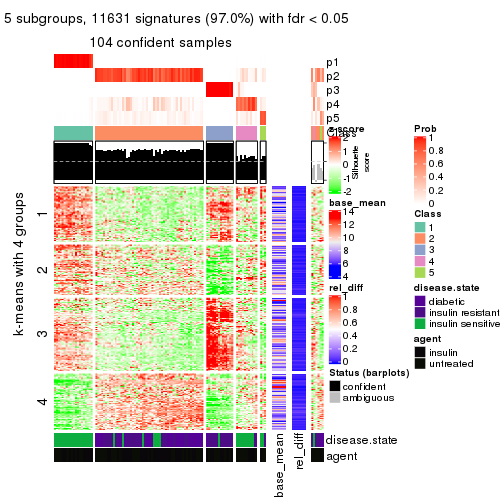
get_signatures(res, k = 6)
Signature heatmaps where rows are not scaled:
get_signatures(res, k = 2, scale_rows = FALSE)
get_signatures(res, k = 3, scale_rows = FALSE)
get_signatures(res, k = 4, scale_rows = FALSE)
get_signatures(res, k = 5, scale_rows = FALSE)
get_signatures(res, k = 6, scale_rows = FALSE)
Compare the overlap of signatures from different k:
compare_signatures(res)
get_signature() returns a data frame invisibly. TO get the list of signatures, the function
call should be assigned to a variable explicitly. In following code, if plot argument is set
to FALSE, no heatmap is plotted while only the differential analysis is performed.
# code only for demonstration
tb = get_signature(res, k = ..., plot = FALSE)
An example of the output of tb is:
#> which_row fdr mean_1 mean_2 scaled_mean_1 scaled_mean_2 km
#> 1 38 0.042760348 8.373488 9.131774 -0.5533452 0.5164555 1
#> 2 40 0.018707592 7.106213 8.469186 -0.6173731 0.5762149 1
#> 3 55 0.019134737 10.221463 11.207825 -0.6159697 0.5749050 1
#> 4 59 0.006059896 5.921854 7.869574 -0.6899429 0.6439467 1
#> 5 60 0.018055526 8.928898 10.211722 -0.6204761 0.5791110 1
#> 6 98 0.009384629 15.714769 14.887706 0.6635654 -0.6193277 2
...
The columns in tb are:
which_row: row indices corresponding to the input matrix.fdr: FDR for the differential test. mean_x: The mean value in group x.scaled_mean_x: The mean value in group x after rows are scaled.km: Row groups if k-means clustering is applied to rows.UMAP plot which shows how samples are separated.
dimension_reduction(res, k = 2, method = "UMAP")

dimension_reduction(res, k = 3, method = "UMAP")
dimension_reduction(res, k = 4, method = "UMAP")
dimension_reduction(res, k = 5, method = "UMAP")
dimension_reduction(res, k = 6, method = "UMAP")
Following heatmap shows how subgroups are split when increasing k:
collect_classes(res)
Test correlation between subgroups and known annotations. If the known annotation is numeric, one-way ANOVA test is applied, and if the known annotation is discrete, chi-squared contingency table test is applied.
test_to_known_factors(res)
#> n disease.state(p) agent(p) k
#> MAD:NMF 108 4.08e-07 1.00000 2
#> MAD:NMF 107 1.55e-11 0.99763 3
#> MAD:NMF 103 1.04e-10 0.94072 4
#> MAD:NMF 104 8.41e-14 0.74880 5
#> MAD:NMF 90 2.58e-14 0.00129 6
If matrix rows can be associated to genes, consider to use GO_Enrichment(res,
...) to perform function enrichment for the signature genes.
The object with results only for a single top-value method and a single partition method can be extracted as:
res = res_list["ATC", "hclust"]
# you can also extract it by
# res = res_list["ATC:hclust"]
A summary of res and all the functions that can be applied to it:
res
#> A 'ConsensusPartition' object with k = 2, 3, 4, 5, 6.
#> On a matrix with 11994 rows and 110 columns.
#> Top rows (1000, 2000, 3000, 4000, 5000) are extracted by 'ATC' method.
#> Subgroups are detected by 'hclust' method.
#> Performed in total 1250 partitions by row resampling.
#> Best k for subgroups seems to be 5.
#>
#> Following methods can be applied to this 'ConsensusPartition' object:
#> [1] "cola_report" "collect_classes" "collect_plots"
#> [4] "collect_stats" "colnames" "compare_signatures"
#> [7] "consensus_heatmap" "dimension_reduction" "functional_enrichment"
#> [10] "get_anno_col" "get_anno" "get_classes"
#> [13] "get_consensus" "get_matrix" "get_membership"
#> [16] "get_param" "get_signatures" "get_stats"
#> [19] "is_best_k" "is_stable_k" "membership_heatmap"
#> [22] "ncol" "nrow" "plot_ecdf"
#> [25] "rownames" "select_partition_number" "show"
#> [28] "suggest_best_k" "test_to_known_factors"
collect_plots() function collects all the plots made from res for all k (number of partitions)
into one single page to provide an easy and fast comparison between different k.
collect_plots(res)
The plots are:
k and the heatmap of
predicted classes for each k.k.k.k.All the plots in panels can be made by individual functions and they are plotted later in this section.
select_partition_number() produces several plots showing different
statistics for choosing “optimized” k. There are following statistics:
k;k, the area increased is defined as \(A_k - A_{k-1}\).The detailed explanations of these statistics can be found in the cola vignette.
Generally speaking, lower PAC score, higher mean silhouette score or higher
concordance corresponds to better partition. Rand index and Jaccard index
measure how similar the current partition is compared to partition with k-1.
If they are too similar, we won't accept k is better than k-1.
select_partition_number(res)
The numeric values for all these statistics can be obtained by get_stats().
get_stats(res)
#> k 1-PAC mean_silhouette concordance area_increased Rand Jaccard
#> 2 2 0.825 0.938 0.966 0.4652 0.516 0.516
#> 3 3 0.911 0.934 0.938 0.1758 0.930 0.864
#> 4 4 0.847 0.917 0.942 0.0412 0.995 0.989
#> 5 5 0.931 0.949 0.976 0.0512 0.970 0.932
#> 6 6 0.727 0.689 0.875 0.1457 0.940 0.854
suggest_best_k() suggests the best \(k\) based on these statistics. The rules are as follows:
NA.suggest_best_k(res)
#> [1] 5
#> attr(,"optional")
#> [1] 3
There is also optional best \(k\) = 3 that is worth to check.
Following shows the table of the partitions (You need to click the show/hide
code output link to see it). The membership matrix (columns with name p*)
is inferred by
clue::cl_consensus()
function with the SE method. Basically the value in the membership matrix
represents the probability to belong to a certain group. The finall class
label for an item is determined with the group with highest probability it
belongs to.
In get_classes() function, the entropy is calculated from the membership
matrix and the silhouette score is calculated from the consensus matrix.
cbind(get_classes(res, k = 2), get_membership(res, k = 2))
#> class entropy silhouette p1 p2
#> GSM555237 1 0.506 0.864 0.888 0.112
#> GSM555239 1 0.000 0.915 1.000 0.000
#> GSM555241 1 0.000 0.915 1.000 0.000
#> GSM555243 1 0.000 0.915 1.000 0.000
#> GSM555245 1 0.000 0.915 1.000 0.000
#> GSM555247 1 0.000 0.915 1.000 0.000
#> GSM555249 1 0.000 0.915 1.000 0.000
#> GSM555251 1 0.000 0.915 1.000 0.000
#> GSM555253 1 0.000 0.915 1.000 0.000
#> GSM555255 1 0.260 0.899 0.956 0.044
#> GSM555257 1 0.781 0.760 0.768 0.232
#> GSM555259 1 0.795 0.751 0.760 0.240
#> GSM555261 1 0.891 0.663 0.692 0.308
#> GSM555263 1 0.913 0.629 0.672 0.328
#> GSM555265 1 0.881 0.675 0.700 0.300
#> GSM555267 1 0.881 0.675 0.700 0.300
#> GSM555269 1 0.795 0.751 0.760 0.240
#> GSM555271 1 0.000 0.915 1.000 0.000
#> GSM555273 2 0.000 0.998 0.000 1.000
#> GSM555275 2 0.000 0.998 0.000 1.000
#> GSM555238 1 0.278 0.898 0.952 0.048
#> GSM555240 1 0.506 0.864 0.888 0.112
#> GSM555242 1 0.506 0.864 0.888 0.112
#> GSM555244 1 0.000 0.915 1.000 0.000
#> GSM555246 1 0.000 0.915 1.000 0.000
#> GSM555248 1 0.000 0.915 1.000 0.000
#> GSM555250 1 0.000 0.915 1.000 0.000
#> GSM555252 1 0.506 0.864 0.888 0.112
#> GSM555254 1 0.000 0.915 1.000 0.000
#> GSM555256 1 0.278 0.898 0.952 0.048
#> GSM555258 2 0.204 0.964 0.032 0.968
#> GSM555260 2 0.204 0.964 0.032 0.968
#> GSM555262 2 0.000 0.998 0.000 1.000
#> GSM555264 1 0.909 0.636 0.676 0.324
#> GSM555266 2 0.000 0.998 0.000 1.000
#> GSM555268 2 0.000 0.998 0.000 1.000
#> GSM555270 2 0.000 0.998 0.000 1.000
#> GSM555272 2 0.204 0.964 0.032 0.968
#> GSM555274 2 0.000 0.998 0.000 1.000
#> GSM555276 2 0.000 0.998 0.000 1.000
#> GSM555277 2 0.000 0.998 0.000 1.000
#> GSM555279 2 0.000 0.998 0.000 1.000
#> GSM555281 2 0.000 0.998 0.000 1.000
#> GSM555283 2 0.000 0.998 0.000 1.000
#> GSM555285 2 0.000 0.998 0.000 1.000
#> GSM555287 1 0.987 0.402 0.568 0.432
#> GSM555289 2 0.000 0.998 0.000 1.000
#> GSM555291 2 0.000 0.998 0.000 1.000
#> GSM555293 2 0.000 0.998 0.000 1.000
#> GSM555295 2 0.000 0.998 0.000 1.000
#> GSM555297 1 0.881 0.675 0.700 0.300
#> GSM555299 1 0.000 0.915 1.000 0.000
#> GSM555301 1 0.000 0.915 1.000 0.000
#> GSM555303 1 0.000 0.915 1.000 0.000
#> GSM555305 1 0.000 0.915 1.000 0.000
#> GSM555307 2 0.000 0.998 0.000 1.000
#> GSM555309 1 0.000 0.915 1.000 0.000
#> GSM555311 2 0.000 0.998 0.000 1.000
#> GSM555313 2 0.000 0.998 0.000 1.000
#> GSM555315 2 0.000 0.998 0.000 1.000
#> GSM555278 2 0.000 0.998 0.000 1.000
#> GSM555280 2 0.000 0.998 0.000 1.000
#> GSM555282 2 0.000 0.998 0.000 1.000
#> GSM555284 2 0.000 0.998 0.000 1.000
#> GSM555286 2 0.000 0.998 0.000 1.000
#> GSM555288 2 0.163 0.973 0.024 0.976
#> GSM555290 2 0.000 0.998 0.000 1.000
#> GSM555292 2 0.000 0.998 0.000 1.000
#> GSM555294 2 0.000 0.998 0.000 1.000
#> GSM555296 2 0.000 0.998 0.000 1.000
#> GSM555298 1 0.000 0.915 1.000 0.000
#> GSM555300 1 0.000 0.915 1.000 0.000
#> GSM555302 1 0.000 0.915 1.000 0.000
#> GSM555304 1 0.000 0.915 1.000 0.000
#> GSM555306 1 0.000 0.915 1.000 0.000
#> GSM555308 1 0.000 0.915 1.000 0.000
#> GSM555310 1 0.000 0.915 1.000 0.000
#> GSM555312 2 0.000 0.998 0.000 1.000
#> GSM555314 2 0.000 0.998 0.000 1.000
#> GSM555316 2 0.000 0.998 0.000 1.000
#> GSM555317 2 0.000 0.998 0.000 1.000
#> GSM555319 2 0.000 0.998 0.000 1.000
#> GSM555321 2 0.000 0.998 0.000 1.000
#> GSM555323 2 0.000 0.998 0.000 1.000
#> GSM555325 2 0.000 0.998 0.000 1.000
#> GSM555327 2 0.000 0.998 0.000 1.000
#> GSM555329 2 0.000 0.998 0.000 1.000
#> GSM555331 2 0.000 0.998 0.000 1.000
#> GSM555333 2 0.000 0.998 0.000 1.000
#> GSM555335 2 0.000 0.998 0.000 1.000
#> GSM555337 2 0.000 0.998 0.000 1.000
#> GSM555339 2 0.000 0.998 0.000 1.000
#> GSM555341 2 0.000 0.998 0.000 1.000
#> GSM555343 2 0.000 0.998 0.000 1.000
#> GSM555345 2 0.000 0.998 0.000 1.000
#> GSM555318 2 0.000 0.998 0.000 1.000
#> GSM555320 2 0.000 0.998 0.000 1.000
#> GSM555322 2 0.000 0.998 0.000 1.000
#> GSM555324 1 0.000 0.915 1.000 0.000
#> GSM555326 2 0.000 0.998 0.000 1.000
#> GSM555328 2 0.000 0.998 0.000 1.000
#> GSM555330 2 0.000 0.998 0.000 1.000
#> GSM555332 2 0.000 0.998 0.000 1.000
#> GSM555334 2 0.000 0.998 0.000 1.000
#> GSM555336 2 0.000 0.998 0.000 1.000
#> GSM555338 2 0.000 0.998 0.000 1.000
#> GSM555340 2 0.000 0.998 0.000 1.000
#> GSM555342 2 0.000 0.998 0.000 1.000
#> GSM555344 2 0.000 0.998 0.000 1.000
#> GSM555346 2 0.000 0.998 0.000 1.000
cbind(get_classes(res, k = 3), get_membership(res, k = 3))
#> class entropy silhouette p1 p2 p3
#> GSM555237 1 0.4399 0.821 0.812 0.000 0.188
#> GSM555239 1 0.5621 0.820 0.692 0.000 0.308
#> GSM555241 1 0.5621 0.820 0.692 0.000 0.308
#> GSM555243 1 0.5621 0.820 0.692 0.000 0.308
#> GSM555245 1 0.5621 0.820 0.692 0.000 0.308
#> GSM555247 1 0.5621 0.820 0.692 0.000 0.308
#> GSM555249 1 0.5621 0.820 0.692 0.000 0.308
#> GSM555251 1 0.5621 0.820 0.692 0.000 0.308
#> GSM555253 1 0.5621 0.820 0.692 0.000 0.308
#> GSM555255 1 0.5178 0.827 0.744 0.000 0.256
#> GSM555257 1 0.4745 0.773 0.852 0.080 0.068
#> GSM555259 1 0.4556 0.771 0.860 0.080 0.060
#> GSM555261 1 0.2796 0.731 0.908 0.092 0.000
#> GSM555263 1 0.3551 0.694 0.868 0.132 0.000
#> GSM555265 1 0.2537 0.740 0.920 0.080 0.000
#> GSM555267 1 0.2537 0.740 0.920 0.080 0.000
#> GSM555269 1 0.4556 0.771 0.860 0.080 0.060
#> GSM555271 3 0.0000 1.000 0.000 0.000 1.000
#> GSM555273 2 0.1860 0.956 0.052 0.948 0.000
#> GSM555275 2 0.0237 0.990 0.004 0.996 0.000
#> GSM555238 1 0.5138 0.828 0.748 0.000 0.252
#> GSM555240 1 0.4399 0.821 0.812 0.000 0.188
#> GSM555242 1 0.4399 0.821 0.812 0.000 0.188
#> GSM555244 1 0.5621 0.820 0.692 0.000 0.308
#> GSM555246 1 0.5621 0.820 0.692 0.000 0.308
#> GSM555248 1 0.5621 0.820 0.692 0.000 0.308
#> GSM555250 1 0.5621 0.820 0.692 0.000 0.308
#> GSM555252 1 0.4399 0.821 0.812 0.000 0.188
#> GSM555254 1 0.5621 0.820 0.692 0.000 0.308
#> GSM555256 1 0.5138 0.828 0.748 0.000 0.252
#> GSM555258 2 0.2711 0.920 0.088 0.912 0.000
#> GSM555260 2 0.2711 0.920 0.088 0.912 0.000
#> GSM555262 2 0.0424 0.988 0.008 0.992 0.000
#> GSM555264 1 0.3038 0.717 0.896 0.104 0.000
#> GSM555266 2 0.0592 0.986 0.012 0.988 0.000
#> GSM555268 2 0.0000 0.992 0.000 1.000 0.000
#> GSM555270 2 0.0000 0.992 0.000 1.000 0.000
#> GSM555272 2 0.2711 0.920 0.088 0.912 0.000
#> GSM555274 2 0.0000 0.992 0.000 1.000 0.000
#> GSM555276 2 0.0000 0.992 0.000 1.000 0.000
#> GSM555277 2 0.0000 0.992 0.000 1.000 0.000
#> GSM555279 2 0.0592 0.986 0.012 0.988 0.000
#> GSM555281 2 0.0592 0.986 0.012 0.988 0.000
#> GSM555283 2 0.0000 0.992 0.000 1.000 0.000
#> GSM555285 2 0.1860 0.956 0.052 0.948 0.000
#> GSM555287 1 0.3879 0.594 0.848 0.152 0.000
#> GSM555289 2 0.0000 0.992 0.000 1.000 0.000
#> GSM555291 2 0.0000 0.992 0.000 1.000 0.000
#> GSM555293 2 0.0000 0.992 0.000 1.000 0.000
#> GSM555295 2 0.0592 0.986 0.012 0.988 0.000
#> GSM555297 1 0.2537 0.740 0.920 0.080 0.000
#> GSM555299 3 0.0000 1.000 0.000 0.000 1.000
#> GSM555301 3 0.0000 1.000 0.000 0.000 1.000
#> GSM555303 3 0.0000 1.000 0.000 0.000 1.000
#> GSM555305 3 0.0000 1.000 0.000 0.000 1.000
#> GSM555307 2 0.0237 0.990 0.004 0.996 0.000
#> GSM555309 3 0.0000 1.000 0.000 0.000 1.000
#> GSM555311 2 0.0592 0.986 0.012 0.988 0.000
#> GSM555313 2 0.0000 0.992 0.000 1.000 0.000
#> GSM555315 2 0.0237 0.990 0.004 0.996 0.000
#> GSM555278 2 0.0592 0.986 0.012 0.988 0.000
#> GSM555280 2 0.0000 0.992 0.000 1.000 0.000
#> GSM555282 2 0.0592 0.986 0.012 0.988 0.000
#> GSM555284 2 0.0747 0.984 0.016 0.984 0.000
#> GSM555286 2 0.0000 0.992 0.000 1.000 0.000
#> GSM555288 2 0.1860 0.954 0.052 0.948 0.000
#> GSM555290 2 0.0000 0.992 0.000 1.000 0.000
#> GSM555292 2 0.0000 0.992 0.000 1.000 0.000
#> GSM555294 2 0.0000 0.992 0.000 1.000 0.000
#> GSM555296 2 0.0000 0.992 0.000 1.000 0.000
#> GSM555298 3 0.0000 1.000 0.000 0.000 1.000
#> GSM555300 3 0.0000 1.000 0.000 0.000 1.000
#> GSM555302 3 0.0000 1.000 0.000 0.000 1.000
#> GSM555304 3 0.0000 1.000 0.000 0.000 1.000
#> GSM555306 3 0.0000 1.000 0.000 0.000 1.000
#> GSM555308 3 0.0000 1.000 0.000 0.000 1.000
#> GSM555310 3 0.0000 1.000 0.000 0.000 1.000
#> GSM555312 2 0.0000 0.992 0.000 1.000 0.000
#> GSM555314 2 0.0592 0.986 0.012 0.988 0.000
#> GSM555316 2 0.0000 0.992 0.000 1.000 0.000
#> GSM555317 2 0.0000 0.992 0.000 1.000 0.000
#> GSM555319 2 0.0000 0.992 0.000 1.000 0.000
#> GSM555321 2 0.0000 0.992 0.000 1.000 0.000
#> GSM555323 2 0.0000 0.992 0.000 1.000 0.000
#> GSM555325 2 0.0000 0.992 0.000 1.000 0.000
#> GSM555327 2 0.0000 0.992 0.000 1.000 0.000
#> GSM555329 2 0.0000 0.992 0.000 1.000 0.000
#> GSM555331 2 0.0000 0.992 0.000 1.000 0.000
#> GSM555333 2 0.0592 0.986 0.012 0.988 0.000
#> GSM555335 2 0.0000 0.992 0.000 1.000 0.000
#> GSM555337 2 0.0000 0.992 0.000 1.000 0.000
#> GSM555339 2 0.0000 0.992 0.000 1.000 0.000
#> GSM555341 2 0.0000 0.992 0.000 1.000 0.000
#> GSM555343 2 0.0000 0.992 0.000 1.000 0.000
#> GSM555345 2 0.0000 0.992 0.000 1.000 0.000
#> GSM555318 2 0.0000 0.992 0.000 1.000 0.000
#> GSM555320 2 0.0000 0.992 0.000 1.000 0.000
#> GSM555322 2 0.0000 0.992 0.000 1.000 0.000
#> GSM555324 3 0.0000 1.000 0.000 0.000 1.000
#> GSM555326 2 0.0000 0.992 0.000 1.000 0.000
#> GSM555328 2 0.0000 0.992 0.000 1.000 0.000
#> GSM555330 2 0.0000 0.992 0.000 1.000 0.000
#> GSM555332 2 0.0000 0.992 0.000 1.000 0.000
#> GSM555334 2 0.0000 0.992 0.000 1.000 0.000
#> GSM555336 2 0.0000 0.992 0.000 1.000 0.000
#> GSM555338 2 0.0000 0.992 0.000 1.000 0.000
#> GSM555340 2 0.0000 0.992 0.000 1.000 0.000
#> GSM555342 2 0.0000 0.992 0.000 1.000 0.000
#> GSM555344 2 0.0000 0.992 0.000 1.000 0.000
#> GSM555346 2 0.1643 0.963 0.044 0.956 0.000
cbind(get_classes(res, k = 4), get_membership(res, k = 4))
#> class entropy silhouette p1 p2 p3 p4
#> GSM555237 1 0.2589 0.828 0.884 0.000 0.116 0.000
#> GSM555239 1 0.3942 0.847 0.764 0.000 0.236 0.000
#> GSM555241 1 0.3942 0.847 0.764 0.000 0.236 0.000
#> GSM555243 1 0.3942 0.847 0.764 0.000 0.236 0.000
#> GSM555245 1 0.3942 0.847 0.764 0.000 0.236 0.000
#> GSM555247 1 0.3942 0.847 0.764 0.000 0.236 0.000
#> GSM555249 1 0.3942 0.847 0.764 0.000 0.236 0.000
#> GSM555251 1 0.3942 0.847 0.764 0.000 0.236 0.000
#> GSM555253 1 0.3942 0.847 0.764 0.000 0.236 0.000
#> GSM555255 1 0.3444 0.846 0.816 0.000 0.184 0.000
#> GSM555257 1 0.0188 0.749 0.996 0.000 0.000 0.004
#> GSM555259 1 0.1302 0.728 0.956 0.000 0.000 0.044
#> GSM555261 1 0.3105 0.656 0.868 0.012 0.000 0.120
#> GSM555263 1 0.4072 0.609 0.828 0.052 0.000 0.120
#> GSM555265 1 0.2647 0.668 0.880 0.000 0.000 0.120
#> GSM555267 1 0.2647 0.668 0.880 0.000 0.000 0.120
#> GSM555269 1 0.1302 0.728 0.956 0.000 0.000 0.044
#> GSM555271 3 0.0000 1.000 0.000 0.000 1.000 0.000
#> GSM555273 2 0.3731 0.837 0.120 0.844 0.000 0.036
#> GSM555275 2 0.0376 0.979 0.004 0.992 0.000 0.004
#> GSM555238 1 0.3400 0.845 0.820 0.000 0.180 0.000
#> GSM555240 1 0.2589 0.828 0.884 0.000 0.116 0.000
#> GSM555242 1 0.2589 0.828 0.884 0.000 0.116 0.000
#> GSM555244 1 0.3942 0.847 0.764 0.000 0.236 0.000
#> GSM555246 1 0.3942 0.847 0.764 0.000 0.236 0.000
#> GSM555248 1 0.3942 0.847 0.764 0.000 0.236 0.000
#> GSM555250 1 0.3942 0.847 0.764 0.000 0.236 0.000
#> GSM555252 1 0.2589 0.828 0.884 0.000 0.116 0.000
#> GSM555254 1 0.3942 0.847 0.764 0.000 0.236 0.000
#> GSM555256 1 0.3400 0.845 0.820 0.000 0.180 0.000
#> GSM555258 2 0.3404 0.858 0.104 0.864 0.000 0.032
#> GSM555260 2 0.3404 0.858 0.104 0.864 0.000 0.032
#> GSM555262 2 0.0336 0.978 0.000 0.992 0.000 0.008
#> GSM555264 1 0.2973 0.642 0.856 0.000 0.000 0.144
#> GSM555266 2 0.1297 0.959 0.016 0.964 0.000 0.020
#> GSM555268 2 0.0000 0.982 0.000 1.000 0.000 0.000
#> GSM555270 2 0.0000 0.982 0.000 1.000 0.000 0.000
#> GSM555272 2 0.3404 0.858 0.104 0.864 0.000 0.032
#> GSM555274 2 0.0000 0.982 0.000 1.000 0.000 0.000
#> GSM555276 2 0.0000 0.982 0.000 1.000 0.000 0.000
#> GSM555277 2 0.0000 0.982 0.000 1.000 0.000 0.000
#> GSM555279 2 0.0469 0.976 0.000 0.988 0.000 0.012
#> GSM555281 2 0.0469 0.976 0.000 0.988 0.000 0.012
#> GSM555283 2 0.0000 0.982 0.000 1.000 0.000 0.000
#> GSM555285 2 0.3731 0.837 0.120 0.844 0.000 0.036
#> GSM555287 4 0.0817 0.000 0.024 0.000 0.000 0.976
#> GSM555289 2 0.0000 0.982 0.000 1.000 0.000 0.000
#> GSM555291 2 0.0000 0.982 0.000 1.000 0.000 0.000
#> GSM555293 2 0.0000 0.982 0.000 1.000 0.000 0.000
#> GSM555295 2 0.0469 0.976 0.000 0.988 0.000 0.012
#> GSM555297 1 0.2647 0.668 0.880 0.000 0.000 0.120
#> GSM555299 3 0.0000 1.000 0.000 0.000 1.000 0.000
#> GSM555301 3 0.0000 1.000 0.000 0.000 1.000 0.000
#> GSM555303 3 0.0000 1.000 0.000 0.000 1.000 0.000
#> GSM555305 3 0.0000 1.000 0.000 0.000 1.000 0.000
#> GSM555307 2 0.0188 0.980 0.000 0.996 0.000 0.004
#> GSM555309 3 0.0000 1.000 0.000 0.000 1.000 0.000
#> GSM555311 2 0.0657 0.974 0.004 0.984 0.000 0.012
#> GSM555313 2 0.0000 0.982 0.000 1.000 0.000 0.000
#> GSM555315 2 0.0376 0.979 0.004 0.992 0.000 0.004
#> GSM555278 2 0.1297 0.959 0.016 0.964 0.000 0.020
#> GSM555280 2 0.0000 0.982 0.000 1.000 0.000 0.000
#> GSM555282 2 0.0469 0.976 0.000 0.988 0.000 0.012
#> GSM555284 2 0.1406 0.956 0.016 0.960 0.000 0.024
#> GSM555286 2 0.0000 0.982 0.000 1.000 0.000 0.000
#> GSM555288 2 0.2300 0.917 0.064 0.920 0.000 0.016
#> GSM555290 2 0.0000 0.982 0.000 1.000 0.000 0.000
#> GSM555292 2 0.0000 0.982 0.000 1.000 0.000 0.000
#> GSM555294 2 0.0000 0.982 0.000 1.000 0.000 0.000
#> GSM555296 2 0.0000 0.982 0.000 1.000 0.000 0.000
#> GSM555298 3 0.0000 1.000 0.000 0.000 1.000 0.000
#> GSM555300 3 0.0000 1.000 0.000 0.000 1.000 0.000
#> GSM555302 3 0.0000 1.000 0.000 0.000 1.000 0.000
#> GSM555304 3 0.0000 1.000 0.000 0.000 1.000 0.000
#> GSM555306 3 0.0000 1.000 0.000 0.000 1.000 0.000
#> GSM555308 3 0.0000 1.000 0.000 0.000 1.000 0.000
#> GSM555310 3 0.0000 1.000 0.000 0.000 1.000 0.000
#> GSM555312 2 0.0000 0.982 0.000 1.000 0.000 0.000
#> GSM555314 2 0.0469 0.976 0.000 0.988 0.000 0.012
#> GSM555316 2 0.0000 0.982 0.000 1.000 0.000 0.000
#> GSM555317 2 0.0000 0.982 0.000 1.000 0.000 0.000
#> GSM555319 2 0.0000 0.982 0.000 1.000 0.000 0.000
#> GSM555321 2 0.0000 0.982 0.000 1.000 0.000 0.000
#> GSM555323 2 0.0000 0.982 0.000 1.000 0.000 0.000
#> GSM555325 2 0.0000 0.982 0.000 1.000 0.000 0.000
#> GSM555327 2 0.0000 0.982 0.000 1.000 0.000 0.000
#> GSM555329 2 0.0000 0.982 0.000 1.000 0.000 0.000
#> GSM555331 2 0.0000 0.982 0.000 1.000 0.000 0.000
#> GSM555333 2 0.0469 0.976 0.000 0.988 0.000 0.012
#> GSM555335 2 0.0000 0.982 0.000 1.000 0.000 0.000
#> GSM555337 2 0.0000 0.982 0.000 1.000 0.000 0.000
#> GSM555339 2 0.0000 0.982 0.000 1.000 0.000 0.000
#> GSM555341 2 0.0000 0.982 0.000 1.000 0.000 0.000
#> GSM555343 2 0.0000 0.982 0.000 1.000 0.000 0.000
#> GSM555345 2 0.0000 0.982 0.000 1.000 0.000 0.000
#> GSM555318 2 0.0000 0.982 0.000 1.000 0.000 0.000
#> GSM555320 2 0.0000 0.982 0.000 1.000 0.000 0.000
#> GSM555322 2 0.0000 0.982 0.000 1.000 0.000 0.000
#> GSM555324 3 0.0000 1.000 0.000 0.000 1.000 0.000
#> GSM555326 2 0.0000 0.982 0.000 1.000 0.000 0.000
#> GSM555328 2 0.0000 0.982 0.000 1.000 0.000 0.000
#> GSM555330 2 0.0000 0.982 0.000 1.000 0.000 0.000
#> GSM555332 2 0.0000 0.982 0.000 1.000 0.000 0.000
#> GSM555334 2 0.0000 0.982 0.000 1.000 0.000 0.000
#> GSM555336 2 0.0000 0.982 0.000 1.000 0.000 0.000
#> GSM555338 2 0.0000 0.982 0.000 1.000 0.000 0.000
#> GSM555340 2 0.0000 0.982 0.000 1.000 0.000 0.000
#> GSM555342 2 0.0000 0.982 0.000 1.000 0.000 0.000
#> GSM555344 2 0.0000 0.982 0.000 1.000 0.000 0.000
#> GSM555346 2 0.3372 0.866 0.096 0.868 0.000 0.036
cbind(get_classes(res, k = 5), get_membership(res, k = 5))
#> class entropy silhouette p1 p2 p3 p4 p5
#> GSM555237 1 0.2329 0.878 0.876 0.000 0.000 0.124 0
#> GSM555239 1 0.0290 0.957 0.992 0.000 0.008 0.000 0
#> GSM555241 1 0.0290 0.957 0.992 0.000 0.008 0.000 0
#> GSM555243 1 0.0290 0.957 0.992 0.000 0.008 0.000 0
#> GSM555245 1 0.0290 0.957 0.992 0.000 0.008 0.000 0
#> GSM555247 1 0.0290 0.957 0.992 0.000 0.008 0.000 0
#> GSM555249 1 0.0290 0.957 0.992 0.000 0.008 0.000 0
#> GSM555251 1 0.0290 0.957 0.992 0.000 0.008 0.000 0
#> GSM555253 1 0.0290 0.957 0.992 0.000 0.008 0.000 0
#> GSM555255 1 0.1270 0.931 0.948 0.000 0.000 0.052 0
#> GSM555257 4 0.2690 0.815 0.156 0.000 0.000 0.844 0
#> GSM555259 4 0.2230 0.871 0.116 0.000 0.000 0.884 0
#> GSM555261 4 0.1082 0.903 0.028 0.008 0.000 0.964 0
#> GSM555263 4 0.1981 0.822 0.028 0.048 0.000 0.924 0
#> GSM555265 4 0.1043 0.912 0.040 0.000 0.000 0.960 0
#> GSM555267 4 0.1043 0.912 0.040 0.000 0.000 0.960 0
#> GSM555269 4 0.2230 0.871 0.116 0.000 0.000 0.884 0
#> GSM555271 3 0.0000 1.000 0.000 0.000 1.000 0.000 0
#> GSM555273 2 0.2732 0.837 0.000 0.840 0.000 0.160 0
#> GSM555275 2 0.0404 0.977 0.000 0.988 0.000 0.012 0
#> GSM555238 1 0.1341 0.929 0.944 0.000 0.000 0.056 0
#> GSM555240 1 0.2329 0.878 0.876 0.000 0.000 0.124 0
#> GSM555242 1 0.2329 0.878 0.876 0.000 0.000 0.124 0
#> GSM555244 1 0.0290 0.957 0.992 0.000 0.008 0.000 0
#> GSM555246 1 0.0290 0.957 0.992 0.000 0.008 0.000 0
#> GSM555248 1 0.0290 0.957 0.992 0.000 0.008 0.000 0
#> GSM555250 1 0.0290 0.957 0.992 0.000 0.008 0.000 0
#> GSM555252 1 0.2329 0.878 0.876 0.000 0.000 0.124 0
#> GSM555254 1 0.0290 0.957 0.992 0.000 0.008 0.000 0
#> GSM555256 1 0.1341 0.929 0.944 0.000 0.000 0.056 0
#> GSM555258 2 0.2516 0.860 0.000 0.860 0.000 0.140 0
#> GSM555260 2 0.2516 0.860 0.000 0.860 0.000 0.140 0
#> GSM555262 2 0.0404 0.976 0.000 0.988 0.000 0.012 0
#> GSM555264 4 0.0162 0.876 0.004 0.000 0.000 0.996 0
#> GSM555266 2 0.1043 0.957 0.000 0.960 0.000 0.040 0
#> GSM555268 2 0.0000 0.981 0.000 1.000 0.000 0.000 0
#> GSM555270 2 0.0000 0.981 0.000 1.000 0.000 0.000 0
#> GSM555272 2 0.2516 0.860 0.000 0.860 0.000 0.140 0
#> GSM555274 2 0.0000 0.981 0.000 1.000 0.000 0.000 0
#> GSM555276 2 0.0000 0.981 0.000 1.000 0.000 0.000 0
#> GSM555277 2 0.0000 0.981 0.000 1.000 0.000 0.000 0
#> GSM555279 2 0.0510 0.974 0.000 0.984 0.000 0.016 0
#> GSM555281 2 0.0510 0.974 0.000 0.984 0.000 0.016 0
#> GSM555283 2 0.0000 0.981 0.000 1.000 0.000 0.000 0
#> GSM555285 2 0.2732 0.837 0.000 0.840 0.000 0.160 0
#> GSM555287 5 0.0000 0.000 0.000 0.000 0.000 0.000 1
#> GSM555289 2 0.0000 0.981 0.000 1.000 0.000 0.000 0
#> GSM555291 2 0.0000 0.981 0.000 1.000 0.000 0.000 0
#> GSM555293 2 0.0000 0.981 0.000 1.000 0.000 0.000 0
#> GSM555295 2 0.0510 0.974 0.000 0.984 0.000 0.016 0
#> GSM555297 4 0.1043 0.912 0.040 0.000 0.000 0.960 0
#> GSM555299 3 0.0000 1.000 0.000 0.000 1.000 0.000 0
#> GSM555301 3 0.0000 1.000 0.000 0.000 1.000 0.000 0
#> GSM555303 3 0.0000 1.000 0.000 0.000 1.000 0.000 0
#> GSM555305 3 0.0000 1.000 0.000 0.000 1.000 0.000 0
#> GSM555307 2 0.0290 0.978 0.000 0.992 0.000 0.008 0
#> GSM555309 3 0.0000 1.000 0.000 0.000 1.000 0.000 0
#> GSM555311 2 0.0609 0.972 0.000 0.980 0.000 0.020 0
#> GSM555313 2 0.0162 0.980 0.000 0.996 0.000 0.004 0
#> GSM555315 2 0.0404 0.977 0.000 0.988 0.000 0.012 0
#> GSM555278 2 0.1043 0.957 0.000 0.960 0.000 0.040 0
#> GSM555280 2 0.0000 0.981 0.000 1.000 0.000 0.000 0
#> GSM555282 2 0.0510 0.974 0.000 0.984 0.000 0.016 0
#> GSM555284 2 0.1121 0.955 0.000 0.956 0.000 0.044 0
#> GSM555286 2 0.0000 0.981 0.000 1.000 0.000 0.000 0
#> GSM555288 2 0.1792 0.917 0.000 0.916 0.000 0.084 0
#> GSM555290 2 0.0000 0.981 0.000 1.000 0.000 0.000 0
#> GSM555292 2 0.0000 0.981 0.000 1.000 0.000 0.000 0
#> GSM555294 2 0.0000 0.981 0.000 1.000 0.000 0.000 0
#> GSM555296 2 0.0000 0.981 0.000 1.000 0.000 0.000 0
#> GSM555298 3 0.0000 1.000 0.000 0.000 1.000 0.000 0
#> GSM555300 3 0.0000 1.000 0.000 0.000 1.000 0.000 0
#> GSM555302 3 0.0000 1.000 0.000 0.000 1.000 0.000 0
#> GSM555304 3 0.0000 1.000 0.000 0.000 1.000 0.000 0
#> GSM555306 3 0.0000 1.000 0.000 0.000 1.000 0.000 0
#> GSM555308 3 0.0000 1.000 0.000 0.000 1.000 0.000 0
#> GSM555310 3 0.0000 1.000 0.000 0.000 1.000 0.000 0
#> GSM555312 2 0.0162 0.980 0.000 0.996 0.000 0.004 0
#> GSM555314 2 0.0510 0.974 0.000 0.984 0.000 0.016 0
#> GSM555316 2 0.0000 0.981 0.000 1.000 0.000 0.000 0
#> GSM555317 2 0.0000 0.981 0.000 1.000 0.000 0.000 0
#> GSM555319 2 0.0000 0.981 0.000 1.000 0.000 0.000 0
#> GSM555321 2 0.0000 0.981 0.000 1.000 0.000 0.000 0
#> GSM555323 2 0.0000 0.981 0.000 1.000 0.000 0.000 0
#> GSM555325 2 0.0000 0.981 0.000 1.000 0.000 0.000 0
#> GSM555327 2 0.0000 0.981 0.000 1.000 0.000 0.000 0
#> GSM555329 2 0.0000 0.981 0.000 1.000 0.000 0.000 0
#> GSM555331 2 0.0000 0.981 0.000 1.000 0.000 0.000 0
#> GSM555333 2 0.0510 0.974 0.000 0.984 0.000 0.016 0
#> GSM555335 2 0.0000 0.981 0.000 1.000 0.000 0.000 0
#> GSM555337 2 0.0000 0.981 0.000 1.000 0.000 0.000 0
#> GSM555339 2 0.0162 0.980 0.000 0.996 0.000 0.004 0
#> GSM555341 2 0.0000 0.981 0.000 1.000 0.000 0.000 0
#> GSM555343 2 0.0000 0.981 0.000 1.000 0.000 0.000 0
#> GSM555345 2 0.0162 0.980 0.000 0.996 0.000 0.004 0
#> GSM555318 2 0.0000 0.981 0.000 1.000 0.000 0.000 0
#> GSM555320 2 0.0000 0.981 0.000 1.000 0.000 0.000 0
#> GSM555322 2 0.0000 0.981 0.000 1.000 0.000 0.000 0
#> GSM555324 3 0.0000 1.000 0.000 0.000 1.000 0.000 0
#> GSM555326 2 0.0000 0.981 0.000 1.000 0.000 0.000 0
#> GSM555328 2 0.0000 0.981 0.000 1.000 0.000 0.000 0
#> GSM555330 2 0.0000 0.981 0.000 1.000 0.000 0.000 0
#> GSM555332 2 0.0000 0.981 0.000 1.000 0.000 0.000 0
#> GSM555334 2 0.0000 0.981 0.000 1.000 0.000 0.000 0
#> GSM555336 2 0.0000 0.981 0.000 1.000 0.000 0.000 0
#> GSM555338 2 0.0000 0.981 0.000 1.000 0.000 0.000 0
#> GSM555340 2 0.0000 0.981 0.000 1.000 0.000 0.000 0
#> GSM555342 2 0.0000 0.981 0.000 1.000 0.000 0.000 0
#> GSM555344 2 0.0000 0.981 0.000 1.000 0.000 0.000 0
#> GSM555346 2 0.2471 0.865 0.000 0.864 0.000 0.136 0
cbind(get_classes(res, k = 6), get_membership(res, k = 6))
#> class entropy silhouette p1 p2 p3 p4 p5 p6
#> GSM555237 1 0.2178 0.8796 0.868 0.000 0.000 0.132 0.000 0
#> GSM555239 1 0.0000 0.9574 1.000 0.000 0.000 0.000 0.000 0
#> GSM555241 1 0.0000 0.9574 1.000 0.000 0.000 0.000 0.000 0
#> GSM555243 1 0.0000 0.9574 1.000 0.000 0.000 0.000 0.000 0
#> GSM555245 1 0.0000 0.9574 1.000 0.000 0.000 0.000 0.000 0
#> GSM555247 1 0.0000 0.9574 1.000 0.000 0.000 0.000 0.000 0
#> GSM555249 1 0.0000 0.9574 1.000 0.000 0.000 0.000 0.000 0
#> GSM555251 1 0.0000 0.9574 1.000 0.000 0.000 0.000 0.000 0
#> GSM555253 1 0.0000 0.9574 1.000 0.000 0.000 0.000 0.000 0
#> GSM555255 1 0.1267 0.9324 0.940 0.000 0.000 0.060 0.000 0
#> GSM555257 4 0.2092 0.7882 0.124 0.000 0.000 0.876 0.000 0
#> GSM555259 4 0.1610 0.8412 0.084 0.000 0.000 0.916 0.000 0
#> GSM555261 4 0.0790 0.8649 0.000 0.000 0.000 0.968 0.032 0
#> GSM555263 4 0.1444 0.8170 0.000 0.000 0.000 0.928 0.072 0
#> GSM555265 4 0.0717 0.8754 0.008 0.000 0.000 0.976 0.016 0
#> GSM555267 4 0.0717 0.8754 0.008 0.000 0.000 0.976 0.016 0
#> GSM555269 4 0.1610 0.8412 0.084 0.000 0.000 0.916 0.000 0
#> GSM555271 3 0.0000 0.9951 0.000 0.000 1.000 0.000 0.000 0
#> GSM555273 5 0.3727 0.6527 0.000 0.388 0.000 0.000 0.612 0
#> GSM555275 2 0.3499 0.4124 0.000 0.680 0.000 0.000 0.320 0
#> GSM555238 1 0.1327 0.9303 0.936 0.000 0.000 0.064 0.000 0
#> GSM555240 1 0.2178 0.8796 0.868 0.000 0.000 0.132 0.000 0
#> GSM555242 1 0.2178 0.8796 0.868 0.000 0.000 0.132 0.000 0
#> GSM555244 1 0.0000 0.9574 1.000 0.000 0.000 0.000 0.000 0
#> GSM555246 1 0.0000 0.9574 1.000 0.000 0.000 0.000 0.000 0
#> GSM555248 1 0.0000 0.9574 1.000 0.000 0.000 0.000 0.000 0
#> GSM555250 1 0.0000 0.9574 1.000 0.000 0.000 0.000 0.000 0
#> GSM555252 1 0.2178 0.8796 0.868 0.000 0.000 0.132 0.000 0
#> GSM555254 1 0.0000 0.9574 1.000 0.000 0.000 0.000 0.000 0
#> GSM555256 1 0.1327 0.9303 0.936 0.000 0.000 0.064 0.000 0
#> GSM555258 5 0.5036 0.6655 0.000 0.344 0.000 0.088 0.568 0
#> GSM555260 5 0.5036 0.6655 0.000 0.344 0.000 0.088 0.568 0
#> GSM555262 2 0.3659 0.2921 0.000 0.636 0.000 0.000 0.364 0
#> GSM555264 4 0.3499 0.5424 0.000 0.000 0.000 0.680 0.320 0
#> GSM555266 2 0.3756 0.1792 0.000 0.600 0.000 0.000 0.400 0
#> GSM555268 2 0.0547 0.7197 0.000 0.980 0.000 0.000 0.020 0
#> GSM555270 2 0.0547 0.7177 0.000 0.980 0.000 0.000 0.020 0
#> GSM555272 5 0.5036 0.6655 0.000 0.344 0.000 0.088 0.568 0
#> GSM555274 2 0.2340 0.6715 0.000 0.852 0.000 0.000 0.148 0
#> GSM555276 2 0.0146 0.7140 0.000 0.996 0.000 0.000 0.004 0
#> GSM555277 2 0.1663 0.7117 0.000 0.912 0.000 0.000 0.088 0
#> GSM555279 2 0.3833 0.0200 0.000 0.556 0.000 0.000 0.444 0
#> GSM555281 2 0.3828 0.0382 0.000 0.560 0.000 0.000 0.440 0
#> GSM555283 2 0.2003 0.6964 0.000 0.884 0.000 0.000 0.116 0
#> GSM555285 5 0.3737 0.6491 0.000 0.392 0.000 0.000 0.608 0
#> GSM555287 6 0.0000 0.0000 0.000 0.000 0.000 0.000 0.000 1
#> GSM555289 2 0.0146 0.7140 0.000 0.996 0.000 0.000 0.004 0
#> GSM555291 2 0.2416 0.6647 0.000 0.844 0.000 0.000 0.156 0
#> GSM555293 2 0.1501 0.6343 0.000 0.924 0.000 0.000 0.076 0
#> GSM555295 2 0.3828 0.0392 0.000 0.560 0.000 0.000 0.440 0
#> GSM555297 4 0.0717 0.8754 0.008 0.000 0.000 0.976 0.016 0
#> GSM555299 3 0.0363 0.9928 0.000 0.000 0.988 0.000 0.012 0
#> GSM555301 3 0.0000 0.9951 0.000 0.000 1.000 0.000 0.000 0
#> GSM555303 3 0.0260 0.9937 0.000 0.000 0.992 0.000 0.008 0
#> GSM555305 3 0.0000 0.9951 0.000 0.000 1.000 0.000 0.000 0
#> GSM555307 2 0.3620 0.3235 0.000 0.648 0.000 0.000 0.352 0
#> GSM555309 3 0.0363 0.9928 0.000 0.000 0.988 0.000 0.012 0
#> GSM555311 2 0.3828 0.0398 0.000 0.560 0.000 0.000 0.440 0
#> GSM555313 2 0.3221 0.5214 0.000 0.736 0.000 0.000 0.264 0
#> GSM555315 2 0.3647 0.3140 0.000 0.640 0.000 0.000 0.360 0
#> GSM555278 2 0.3547 0.3489 0.000 0.668 0.000 0.000 0.332 0
#> GSM555280 2 0.0547 0.7197 0.000 0.980 0.000 0.000 0.020 0
#> GSM555282 2 0.3823 0.0519 0.000 0.564 0.000 0.000 0.436 0
#> GSM555284 2 0.3857 -0.0911 0.000 0.532 0.000 0.000 0.468 0
#> GSM555286 2 0.0146 0.7140 0.000 0.996 0.000 0.000 0.004 0
#> GSM555288 2 0.4947 -0.3302 0.000 0.480 0.000 0.064 0.456 0
#> GSM555290 2 0.0146 0.7140 0.000 0.996 0.000 0.000 0.004 0
#> GSM555292 2 0.0547 0.7197 0.000 0.980 0.000 0.000 0.020 0
#> GSM555294 2 0.2219 0.6144 0.000 0.864 0.000 0.000 0.136 0
#> GSM555296 2 0.2491 0.6585 0.000 0.836 0.000 0.000 0.164 0
#> GSM555298 3 0.0000 0.9951 0.000 0.000 1.000 0.000 0.000 0
#> GSM555300 3 0.0363 0.9928 0.000 0.000 0.988 0.000 0.012 0
#> GSM555302 3 0.0000 0.9951 0.000 0.000 1.000 0.000 0.000 0
#> GSM555304 3 0.0000 0.9951 0.000 0.000 1.000 0.000 0.000 0
#> GSM555306 3 0.0000 0.9951 0.000 0.000 1.000 0.000 0.000 0
#> GSM555308 3 0.0363 0.9928 0.000 0.000 0.988 0.000 0.012 0
#> GSM555310 3 0.0000 0.9951 0.000 0.000 1.000 0.000 0.000 0
#> GSM555312 2 0.3221 0.5214 0.000 0.736 0.000 0.000 0.264 0
#> GSM555314 2 0.3828 0.0392 0.000 0.560 0.000 0.000 0.440 0
#> GSM555316 2 0.0146 0.7140 0.000 0.996 0.000 0.000 0.004 0
#> GSM555317 2 0.1444 0.7159 0.000 0.928 0.000 0.000 0.072 0
#> GSM555319 2 0.0146 0.7140 0.000 0.996 0.000 0.000 0.004 0
#> GSM555321 2 0.0146 0.7140 0.000 0.996 0.000 0.000 0.004 0
#> GSM555323 2 0.1501 0.7166 0.000 0.924 0.000 0.000 0.076 0
#> GSM555325 2 0.3101 0.3952 0.000 0.756 0.000 0.000 0.244 0
#> GSM555327 2 0.0260 0.7157 0.000 0.992 0.000 0.000 0.008 0
#> GSM555329 2 0.0146 0.7140 0.000 0.996 0.000 0.000 0.004 0
#> GSM555331 2 0.1714 0.7098 0.000 0.908 0.000 0.000 0.092 0
#> GSM555333 2 0.3804 0.1032 0.000 0.576 0.000 0.000 0.424 0
#> GSM555335 2 0.2048 0.6948 0.000 0.880 0.000 0.000 0.120 0
#> GSM555337 2 0.0146 0.7140 0.000 0.996 0.000 0.000 0.004 0
#> GSM555339 2 0.2883 0.5981 0.000 0.788 0.000 0.000 0.212 0
#> GSM555341 2 0.1863 0.7028 0.000 0.896 0.000 0.000 0.104 0
#> GSM555343 2 0.1444 0.6542 0.000 0.928 0.000 0.000 0.072 0
#> GSM555345 2 0.3175 0.5277 0.000 0.744 0.000 0.000 0.256 0
#> GSM555318 2 0.1444 0.7159 0.000 0.928 0.000 0.000 0.072 0
#> GSM555320 2 0.3101 0.3952 0.000 0.756 0.000 0.000 0.244 0
#> GSM555322 2 0.0146 0.7140 0.000 0.996 0.000 0.000 0.004 0
#> GSM555324 3 0.0363 0.9928 0.000 0.000 0.988 0.000 0.012 0
#> GSM555326 2 0.0260 0.7155 0.000 0.992 0.000 0.000 0.008 0
#> GSM555328 2 0.0260 0.7157 0.000 0.992 0.000 0.000 0.008 0
#> GSM555330 2 0.1387 0.7167 0.000 0.932 0.000 0.000 0.068 0
#> GSM555332 2 0.1444 0.7154 0.000 0.928 0.000 0.000 0.072 0
#> GSM555334 2 0.0260 0.7157 0.000 0.992 0.000 0.000 0.008 0
#> GSM555336 2 0.1444 0.6405 0.000 0.928 0.000 0.000 0.072 0
#> GSM555338 2 0.0146 0.7140 0.000 0.996 0.000 0.000 0.004 0
#> GSM555340 2 0.1075 0.6719 0.000 0.952 0.000 0.000 0.048 0
#> GSM555342 2 0.2597 0.5652 0.000 0.824 0.000 0.000 0.176 0
#> GSM555344 2 0.1267 0.7176 0.000 0.940 0.000 0.000 0.060 0
#> GSM555346 5 0.3838 0.5748 0.000 0.448 0.000 0.000 0.552 0
Heatmaps for the consensus matrix. It visualizes the probability of two samples to be in a same group.
consensus_heatmap(res, k = 2)
consensus_heatmap(res, k = 3)
consensus_heatmap(res, k = 4)
consensus_heatmap(res, k = 5)
consensus_heatmap(res, k = 6)
Heatmaps for the membership of samples in all partitions to see how consistent they are:
membership_heatmap(res, k = 2)
membership_heatmap(res, k = 3)
membership_heatmap(res, k = 4)
membership_heatmap(res, k = 5)
membership_heatmap(res, k = 6)
As soon as we have had the classes for columns, we can look for signatures which are significantly different between classes which can be candidate marks for certain classes. Following are the heatmaps for signatures.
Signature heatmaps where rows are scaled:
get_signatures(res, k = 2)
get_signatures(res, k = 3)
get_signatures(res, k = 4)
get_signatures(res, k = 5)

get_signatures(res, k = 6)
Signature heatmaps where rows are not scaled:
get_signatures(res, k = 2, scale_rows = FALSE)
get_signatures(res, k = 3, scale_rows = FALSE)
get_signatures(res, k = 4, scale_rows = FALSE)

get_signatures(res, k = 5, scale_rows = FALSE)

get_signatures(res, k = 6, scale_rows = FALSE)

Compare the overlap of signatures from different k:
compare_signatures(res)
get_signature() returns a data frame invisibly. TO get the list of signatures, the function
call should be assigned to a variable explicitly. In following code, if plot argument is set
to FALSE, no heatmap is plotted while only the differential analysis is performed.
# code only for demonstration
tb = get_signature(res, k = ..., plot = FALSE)
An example of the output of tb is:
#> which_row fdr mean_1 mean_2 scaled_mean_1 scaled_mean_2 km
#> 1 38 0.042760348 8.373488 9.131774 -0.5533452 0.5164555 1
#> 2 40 0.018707592 7.106213 8.469186 -0.6173731 0.5762149 1
#> 3 55 0.019134737 10.221463 11.207825 -0.6159697 0.5749050 1
#> 4 59 0.006059896 5.921854 7.869574 -0.6899429 0.6439467 1
#> 5 60 0.018055526 8.928898 10.211722 -0.6204761 0.5791110 1
#> 6 98 0.009384629 15.714769 14.887706 0.6635654 -0.6193277 2
...
The columns in tb are:
which_row: row indices corresponding to the input matrix.fdr: FDR for the differential test. mean_x: The mean value in group x.scaled_mean_x: The mean value in group x after rows are scaled.km: Row groups if k-means clustering is applied to rows.UMAP plot which shows how samples are separated.
dimension_reduction(res, k = 2, method = "UMAP")
dimension_reduction(res, k = 3, method = "UMAP")
dimension_reduction(res, k = 4, method = "UMAP")
dimension_reduction(res, k = 5, method = "UMAP")
dimension_reduction(res, k = 6, method = "UMAP")
Following heatmap shows how subgroups are split when increasing k:
collect_classes(res)
Test correlation between subgroups and known annotations. If the known annotation is numeric, one-way ANOVA test is applied, and if the known annotation is discrete, chi-squared contingency table test is applied.
test_to_known_factors(res)
#> n disease.state(p) agent(p) k
#> ATC:hclust 109 2.18e-08 0.3891 2
#> ATC:hclust 110 1.46e-14 0.2271 3
#> ATC:hclust 109 3.43e-15 0.2848 4
#> ATC:hclust 109 5.32e-14 0.0993 5
#> ATC:hclust 92 1.12e-14 0.1392 6
If matrix rows can be associated to genes, consider to use GO_Enrichment(res,
...) to perform function enrichment for the signature genes.
The object with results only for a single top-value method and a single partition method can be extracted as:
res = res_list["ATC", "kmeans"]
# you can also extract it by
# res = res_list["ATC:kmeans"]
A summary of res and all the functions that can be applied to it:
res
#> A 'ConsensusPartition' object with k = 2, 3, 4, 5, 6.
#> On a matrix with 11994 rows and 110 columns.
#> Top rows (1000, 2000, 3000, 4000, 5000) are extracted by 'ATC' method.
#> Subgroups are detected by 'kmeans' method.
#> Performed in total 1250 partitions by row resampling.
#> Best k for subgroups seems to be 2.
#>
#> Following methods can be applied to this 'ConsensusPartition' object:
#> [1] "cola_report" "collect_classes" "collect_plots"
#> [4] "collect_stats" "colnames" "compare_signatures"
#> [7] "consensus_heatmap" "dimension_reduction" "functional_enrichment"
#> [10] "get_anno_col" "get_anno" "get_classes"
#> [13] "get_consensus" "get_matrix" "get_membership"
#> [16] "get_param" "get_signatures" "get_stats"
#> [19] "is_best_k" "is_stable_k" "membership_heatmap"
#> [22] "ncol" "nrow" "plot_ecdf"
#> [25] "rownames" "select_partition_number" "show"
#> [28] "suggest_best_k" "test_to_known_factors"
collect_plots() function collects all the plots made from res for all k (number of partitions)
into one single page to provide an easy and fast comparison between different k.
collect_plots(res)
The plots are:
k and the heatmap of
predicted classes for each k.k.k.k.All the plots in panels can be made by individual functions and they are plotted later in this section.
select_partition_number() produces several plots showing different
statistics for choosing “optimized” k. There are following statistics:
k;k, the area increased is defined as \(A_k - A_{k-1}\).The detailed explanations of these statistics can be found in the cola vignette.
Generally speaking, lower PAC score, higher mean silhouette score or higher
concordance corresponds to better partition. Rand index and Jaccard index
measure how similar the current partition is compared to partition with k-1.
If they are too similar, we won't accept k is better than k-1.
select_partition_number(res)
The numeric values for all these statistics can be obtained by get_stats().
get_stats(res)
#> k 1-PAC mean_silhouette concordance area_increased Rand Jaccard
#> 2 2 1.000 0.988 0.996 0.4652 0.533 0.533
#> 3 3 0.891 0.750 0.822 0.2050 0.914 0.840
#> 4 4 0.741 0.795 0.874 0.2002 0.801 0.582
#> 5 5 0.799 0.921 0.918 0.1261 0.846 0.547
#> 6 6 0.805 0.814 0.859 0.0527 1.000 1.000
suggest_best_k() suggests the best \(k\) based on these statistics. The rules are as follows:
NA.suggest_best_k(res)
#> [1] 2
Following shows the table of the partitions (You need to click the show/hide
code output link to see it). The membership matrix (columns with name p*)
is inferred by
clue::cl_consensus()
function with the SE method. Basically the value in the membership matrix
represents the probability to belong to a certain group. The finall class
label for an item is determined with the group with highest probability it
belongs to.
In get_classes() function, the entropy is calculated from the membership
matrix and the silhouette score is calculated from the consensus matrix.
cbind(get_classes(res, k = 2), get_membership(res, k = 2))
#> class entropy silhouette p1 p2
#> GSM555237 1 0.000 0.988 1.00 0.00
#> GSM555239 1 0.000 0.988 1.00 0.00
#> GSM555241 1 0.000 0.988 1.00 0.00
#> GSM555243 1 0.000 0.988 1.00 0.00
#> GSM555245 1 0.000 0.988 1.00 0.00
#> GSM555247 1 0.000 0.988 1.00 0.00
#> GSM555249 1 0.000 0.988 1.00 0.00
#> GSM555251 1 0.000 0.988 1.00 0.00
#> GSM555253 1 0.000 0.988 1.00 0.00
#> GSM555255 1 0.000 0.988 1.00 0.00
#> GSM555257 1 0.000 0.988 1.00 0.00
#> GSM555259 1 0.000 0.988 1.00 0.00
#> GSM555261 2 0.000 1.000 0.00 1.00
#> GSM555263 2 0.000 1.000 0.00 1.00
#> GSM555265 1 0.000 0.988 1.00 0.00
#> GSM555267 2 0.000 1.000 0.00 1.00
#> GSM555269 1 0.000 0.988 1.00 0.00
#> GSM555271 1 0.000 0.988 1.00 0.00
#> GSM555273 2 0.000 1.000 0.00 1.00
#> GSM555275 2 0.000 1.000 0.00 1.00
#> GSM555238 1 0.000 0.988 1.00 0.00
#> GSM555240 1 0.000 0.988 1.00 0.00
#> GSM555242 1 0.000 0.988 1.00 0.00
#> GSM555244 1 0.000 0.988 1.00 0.00
#> GSM555246 1 0.000 0.988 1.00 0.00
#> GSM555248 1 0.000 0.988 1.00 0.00
#> GSM555250 1 0.000 0.988 1.00 0.00
#> GSM555252 1 0.000 0.988 1.00 0.00
#> GSM555254 1 0.000 0.988 1.00 0.00
#> GSM555256 1 0.000 0.988 1.00 0.00
#> GSM555258 2 0.000 1.000 0.00 1.00
#> GSM555260 2 0.000 1.000 0.00 1.00
#> GSM555262 2 0.000 1.000 0.00 1.00
#> GSM555264 1 0.000 0.988 1.00 0.00
#> GSM555266 2 0.000 1.000 0.00 1.00
#> GSM555268 2 0.000 1.000 0.00 1.00
#> GSM555270 2 0.000 1.000 0.00 1.00
#> GSM555272 2 0.000 1.000 0.00 1.00
#> GSM555274 2 0.000 1.000 0.00 1.00
#> GSM555276 2 0.000 1.000 0.00 1.00
#> GSM555277 2 0.000 1.000 0.00 1.00
#> GSM555279 2 0.000 1.000 0.00 1.00
#> GSM555281 2 0.000 1.000 0.00 1.00
#> GSM555283 2 0.000 1.000 0.00 1.00
#> GSM555285 2 0.000 1.000 0.00 1.00
#> GSM555287 1 0.995 0.148 0.54 0.46
#> GSM555289 2 0.000 1.000 0.00 1.00
#> GSM555291 2 0.000 1.000 0.00 1.00
#> GSM555293 2 0.000 1.000 0.00 1.00
#> GSM555295 2 0.000 1.000 0.00 1.00
#> GSM555297 2 0.000 1.000 0.00 1.00
#> GSM555299 1 0.000 0.988 1.00 0.00
#> GSM555301 1 0.000 0.988 1.00 0.00
#> GSM555303 1 0.000 0.988 1.00 0.00
#> GSM555305 1 0.000 0.988 1.00 0.00
#> GSM555307 2 0.000 1.000 0.00 1.00
#> GSM555309 1 0.000 0.988 1.00 0.00
#> GSM555311 2 0.000 1.000 0.00 1.00
#> GSM555313 2 0.000 1.000 0.00 1.00
#> GSM555315 2 0.000 1.000 0.00 1.00
#> GSM555278 2 0.000 1.000 0.00 1.00
#> GSM555280 2 0.000 1.000 0.00 1.00
#> GSM555282 2 0.000 1.000 0.00 1.00
#> GSM555284 2 0.000 1.000 0.00 1.00
#> GSM555286 2 0.000 1.000 0.00 1.00
#> GSM555288 2 0.000 1.000 0.00 1.00
#> GSM555290 2 0.000 1.000 0.00 1.00
#> GSM555292 2 0.000 1.000 0.00 1.00
#> GSM555294 2 0.000 1.000 0.00 1.00
#> GSM555296 2 0.000 1.000 0.00 1.00
#> GSM555298 1 0.000 0.988 1.00 0.00
#> GSM555300 1 0.000 0.988 1.00 0.00
#> GSM555302 1 0.000 0.988 1.00 0.00
#> GSM555304 1 0.000 0.988 1.00 0.00
#> GSM555306 1 0.000 0.988 1.00 0.00
#> GSM555308 1 0.000 0.988 1.00 0.00
#> GSM555310 1 0.000 0.988 1.00 0.00
#> GSM555312 2 0.000 1.000 0.00 1.00
#> GSM555314 2 0.000 1.000 0.00 1.00
#> GSM555316 2 0.000 1.000 0.00 1.00
#> GSM555317 2 0.000 1.000 0.00 1.00
#> GSM555319 2 0.000 1.000 0.00 1.00
#> GSM555321 2 0.000 1.000 0.00 1.00
#> GSM555323 2 0.000 1.000 0.00 1.00
#> GSM555325 2 0.000 1.000 0.00 1.00
#> GSM555327 2 0.000 1.000 0.00 1.00
#> GSM555329 2 0.000 1.000 0.00 1.00
#> GSM555331 2 0.000 1.000 0.00 1.00
#> GSM555333 2 0.000 1.000 0.00 1.00
#> GSM555335 2 0.000 1.000 0.00 1.00
#> GSM555337 2 0.000 1.000 0.00 1.00
#> GSM555339 2 0.000 1.000 0.00 1.00
#> GSM555341 2 0.000 1.000 0.00 1.00
#> GSM555343 2 0.000 1.000 0.00 1.00
#> GSM555345 2 0.000 1.000 0.00 1.00
#> GSM555318 2 0.000 1.000 0.00 1.00
#> GSM555320 2 0.000 1.000 0.00 1.00
#> GSM555322 2 0.000 1.000 0.00 1.00
#> GSM555324 1 0.000 0.988 1.00 0.00
#> GSM555326 2 0.000 1.000 0.00 1.00
#> GSM555328 2 0.000 1.000 0.00 1.00
#> GSM555330 2 0.000 1.000 0.00 1.00
#> GSM555332 2 0.000 1.000 0.00 1.00
#> GSM555334 2 0.000 1.000 0.00 1.00
#> GSM555336 2 0.000 1.000 0.00 1.00
#> GSM555338 2 0.000 1.000 0.00 1.00
#> GSM555340 2 0.000 1.000 0.00 1.00
#> GSM555342 2 0.000 1.000 0.00 1.00
#> GSM555344 2 0.000 1.000 0.00 1.00
#> GSM555346 2 0.000 1.000 0.00 1.00
cbind(get_classes(res, k = 3), get_membership(res, k = 3))
#> class entropy silhouette p1 p2 p3
#> GSM555237 1 0.2448 0.529 0.924 0.000 0.076
#> GSM555239 1 0.0000 0.606 1.000 0.000 0.000
#> GSM555241 1 0.0000 0.606 1.000 0.000 0.000
#> GSM555243 1 0.0000 0.606 1.000 0.000 0.000
#> GSM555245 1 0.0000 0.606 1.000 0.000 0.000
#> GSM555247 1 0.0000 0.606 1.000 0.000 0.000
#> GSM555249 1 0.0000 0.606 1.000 0.000 0.000
#> GSM555251 1 0.0000 0.606 1.000 0.000 0.000
#> GSM555253 1 0.0000 0.606 1.000 0.000 0.000
#> GSM555255 1 0.1411 0.575 0.964 0.000 0.036
#> GSM555257 1 0.6309 -0.431 0.504 0.000 0.496
#> GSM555259 1 0.6309 -0.431 0.504 0.000 0.496
#> GSM555261 3 0.8000 0.521 0.408 0.064 0.528
#> GSM555263 3 0.6305 0.256 0.000 0.484 0.516
#> GSM555265 3 0.6295 0.429 0.472 0.000 0.528
#> GSM555267 3 0.8250 0.530 0.392 0.080 0.528
#> GSM555269 1 0.6309 -0.431 0.504 0.000 0.496
#> GSM555271 1 0.6286 0.587 0.536 0.000 0.464
#> GSM555273 2 0.1289 0.970 0.000 0.968 0.032
#> GSM555275 2 0.1289 0.970 0.000 0.968 0.032
#> GSM555238 1 0.1411 0.575 0.964 0.000 0.036
#> GSM555240 1 0.6309 -0.431 0.504 0.000 0.496
#> GSM555242 1 0.6309 -0.431 0.504 0.000 0.496
#> GSM555244 1 0.0000 0.606 1.000 0.000 0.000
#> GSM555246 1 0.0000 0.606 1.000 0.000 0.000
#> GSM555248 1 0.0000 0.606 1.000 0.000 0.000
#> GSM555250 1 0.0000 0.606 1.000 0.000 0.000
#> GSM555252 1 0.6309 -0.431 0.504 0.000 0.496
#> GSM555254 1 0.0000 0.606 1.000 0.000 0.000
#> GSM555256 1 0.1643 0.567 0.956 0.000 0.044
#> GSM555258 3 0.6295 0.292 0.000 0.472 0.528
#> GSM555260 2 0.1289 0.970 0.000 0.968 0.032
#> GSM555262 2 0.1289 0.970 0.000 0.968 0.032
#> GSM555264 3 0.6295 0.429 0.472 0.000 0.528
#> GSM555266 2 0.0000 0.990 0.000 1.000 0.000
#> GSM555268 2 0.0000 0.990 0.000 1.000 0.000
#> GSM555270 2 0.0000 0.990 0.000 1.000 0.000
#> GSM555272 3 0.6295 0.292 0.000 0.472 0.528
#> GSM555274 2 0.0237 0.988 0.000 0.996 0.004
#> GSM555276 2 0.0000 0.990 0.000 1.000 0.000
#> GSM555277 2 0.0000 0.990 0.000 1.000 0.000
#> GSM555279 2 0.1289 0.970 0.000 0.968 0.032
#> GSM555281 2 0.1289 0.970 0.000 0.968 0.032
#> GSM555283 2 0.0000 0.990 0.000 1.000 0.000
#> GSM555285 2 0.1289 0.970 0.000 0.968 0.032
#> GSM555287 3 0.6286 0.435 0.464 0.000 0.536
#> GSM555289 2 0.0000 0.990 0.000 1.000 0.000
#> GSM555291 2 0.0000 0.990 0.000 1.000 0.000
#> GSM555293 2 0.0000 0.990 0.000 1.000 0.000
#> GSM555295 2 0.1289 0.970 0.000 0.968 0.032
#> GSM555297 3 0.8191 0.530 0.396 0.076 0.528
#> GSM555299 1 0.6286 0.587 0.536 0.000 0.464
#> GSM555301 1 0.6286 0.587 0.536 0.000 0.464
#> GSM555303 1 0.6286 0.587 0.536 0.000 0.464
#> GSM555305 1 0.6286 0.587 0.536 0.000 0.464
#> GSM555307 2 0.1289 0.970 0.000 0.968 0.032
#> GSM555309 1 0.6286 0.587 0.536 0.000 0.464
#> GSM555311 2 0.1289 0.970 0.000 0.968 0.032
#> GSM555313 2 0.0000 0.990 0.000 1.000 0.000
#> GSM555315 2 0.1031 0.976 0.000 0.976 0.024
#> GSM555278 2 0.0000 0.990 0.000 1.000 0.000
#> GSM555280 2 0.0000 0.990 0.000 1.000 0.000
#> GSM555282 2 0.1031 0.976 0.000 0.976 0.024
#> GSM555284 2 0.1289 0.970 0.000 0.968 0.032
#> GSM555286 2 0.0000 0.990 0.000 1.000 0.000
#> GSM555288 2 0.1643 0.959 0.000 0.956 0.044
#> GSM555290 2 0.0000 0.990 0.000 1.000 0.000
#> GSM555292 2 0.0000 0.990 0.000 1.000 0.000
#> GSM555294 2 0.0000 0.990 0.000 1.000 0.000
#> GSM555296 2 0.0000 0.990 0.000 1.000 0.000
#> GSM555298 1 0.6286 0.587 0.536 0.000 0.464
#> GSM555300 1 0.6286 0.587 0.536 0.000 0.464
#> GSM555302 1 0.6286 0.587 0.536 0.000 0.464
#> GSM555304 1 0.6286 0.587 0.536 0.000 0.464
#> GSM555306 1 0.6286 0.587 0.536 0.000 0.464
#> GSM555308 1 0.6286 0.587 0.536 0.000 0.464
#> GSM555310 1 0.6286 0.587 0.536 0.000 0.464
#> GSM555312 2 0.0000 0.990 0.000 1.000 0.000
#> GSM555314 2 0.1643 0.959 0.000 0.956 0.044
#> GSM555316 2 0.0000 0.990 0.000 1.000 0.000
#> GSM555317 2 0.0000 0.990 0.000 1.000 0.000
#> GSM555319 2 0.0000 0.990 0.000 1.000 0.000
#> GSM555321 2 0.0000 0.990 0.000 1.000 0.000
#> GSM555323 2 0.0000 0.990 0.000 1.000 0.000
#> GSM555325 2 0.0000 0.990 0.000 1.000 0.000
#> GSM555327 2 0.0000 0.990 0.000 1.000 0.000
#> GSM555329 2 0.0000 0.990 0.000 1.000 0.000
#> GSM555331 2 0.0000 0.990 0.000 1.000 0.000
#> GSM555333 2 0.1289 0.970 0.000 0.968 0.032
#> GSM555335 2 0.0000 0.990 0.000 1.000 0.000
#> GSM555337 2 0.0000 0.990 0.000 1.000 0.000
#> GSM555339 2 0.0000 0.990 0.000 1.000 0.000
#> GSM555341 2 0.0000 0.990 0.000 1.000 0.000
#> GSM555343 2 0.0000 0.990 0.000 1.000 0.000
#> GSM555345 2 0.0592 0.983 0.000 0.988 0.012
#> GSM555318 2 0.0000 0.990 0.000 1.000 0.000
#> GSM555320 2 0.0000 0.990 0.000 1.000 0.000
#> GSM555322 2 0.0000 0.990 0.000 1.000 0.000
#> GSM555324 1 0.6286 0.587 0.536 0.000 0.464
#> GSM555326 2 0.0000 0.990 0.000 1.000 0.000
#> GSM555328 2 0.0000 0.990 0.000 1.000 0.000
#> GSM555330 2 0.0000 0.990 0.000 1.000 0.000
#> GSM555332 2 0.0000 0.990 0.000 1.000 0.000
#> GSM555334 2 0.0000 0.990 0.000 1.000 0.000
#> GSM555336 2 0.0000 0.990 0.000 1.000 0.000
#> GSM555338 2 0.0000 0.990 0.000 1.000 0.000
#> GSM555340 2 0.0000 0.990 0.000 1.000 0.000
#> GSM555342 2 0.0000 0.990 0.000 1.000 0.000
#> GSM555344 2 0.0000 0.990 0.000 1.000 0.000
#> GSM555346 2 0.0000 0.990 0.000 1.000 0.000
cbind(get_classes(res, k = 4), get_membership(res, k = 4))
#> class entropy silhouette p1 p2 p3 p4
#> GSM555237 1 0.0336 0.9195 0.992 0.000 0.000 0.008
#> GSM555239 1 0.0000 0.9234 1.000 0.000 0.000 0.000
#> GSM555241 1 0.0000 0.9234 1.000 0.000 0.000 0.000
#> GSM555243 1 0.0000 0.9234 1.000 0.000 0.000 0.000
#> GSM555245 1 0.0000 0.9234 1.000 0.000 0.000 0.000
#> GSM555247 1 0.0000 0.9234 1.000 0.000 0.000 0.000
#> GSM555249 1 0.0000 0.9234 1.000 0.000 0.000 0.000
#> GSM555251 1 0.0000 0.9234 1.000 0.000 0.000 0.000
#> GSM555253 1 0.0000 0.9234 1.000 0.000 0.000 0.000
#> GSM555255 1 0.0000 0.9234 1.000 0.000 0.000 0.000
#> GSM555257 1 0.5897 0.5949 0.588 0.000 0.044 0.368
#> GSM555259 1 0.5884 0.5993 0.592 0.000 0.044 0.364
#> GSM555261 4 0.2644 0.5473 0.032 0.008 0.044 0.916
#> GSM555263 4 0.2500 0.5805 0.000 0.040 0.044 0.916
#> GSM555265 4 0.2500 0.5328 0.040 0.000 0.044 0.916
#> GSM555267 4 0.2676 0.5532 0.028 0.012 0.044 0.916
#> GSM555269 1 0.5884 0.5993 0.592 0.000 0.044 0.364
#> GSM555271 3 0.2408 0.9941 0.104 0.000 0.896 0.000
#> GSM555273 4 0.5793 0.6246 0.000 0.360 0.040 0.600
#> GSM555275 4 0.4941 0.5608 0.000 0.436 0.000 0.564
#> GSM555238 1 0.0000 0.9234 1.000 0.000 0.000 0.000
#> GSM555240 1 0.3216 0.8479 0.880 0.000 0.044 0.076
#> GSM555242 1 0.2840 0.8596 0.900 0.000 0.044 0.056
#> GSM555244 1 0.0000 0.9234 1.000 0.000 0.000 0.000
#> GSM555246 1 0.0000 0.9234 1.000 0.000 0.000 0.000
#> GSM555248 1 0.0000 0.9234 1.000 0.000 0.000 0.000
#> GSM555250 1 0.0000 0.9234 1.000 0.000 0.000 0.000
#> GSM555252 1 0.2840 0.8596 0.900 0.000 0.044 0.056
#> GSM555254 1 0.0000 0.9234 1.000 0.000 0.000 0.000
#> GSM555256 1 0.0188 0.9216 0.996 0.000 0.000 0.004
#> GSM555258 4 0.2500 0.5805 0.000 0.040 0.044 0.916
#> GSM555260 4 0.4790 0.6367 0.000 0.380 0.000 0.620
#> GSM555262 4 0.4925 0.5772 0.000 0.428 0.000 0.572
#> GSM555264 4 0.6179 -0.2740 0.392 0.000 0.056 0.552
#> GSM555266 2 0.2174 0.8817 0.000 0.928 0.020 0.052
#> GSM555268 2 0.0921 0.9051 0.000 0.972 0.028 0.000
#> GSM555270 2 0.0817 0.9058 0.000 0.976 0.024 0.000
#> GSM555272 4 0.2124 0.5861 0.000 0.040 0.028 0.932
#> GSM555274 2 0.3764 0.6163 0.000 0.784 0.000 0.216
#> GSM555276 2 0.0000 0.9099 0.000 1.000 0.000 0.000
#> GSM555277 2 0.3219 0.7169 0.000 0.836 0.000 0.164
#> GSM555279 4 0.5028 0.6197 0.000 0.400 0.004 0.596
#> GSM555281 4 0.5050 0.6078 0.000 0.408 0.004 0.588
#> GSM555283 2 0.0000 0.9099 0.000 1.000 0.000 0.000
#> GSM555285 4 0.5821 0.6173 0.000 0.368 0.040 0.592
#> GSM555287 4 0.2413 0.5382 0.020 0.000 0.064 0.916
#> GSM555289 2 0.0000 0.9099 0.000 1.000 0.000 0.000
#> GSM555291 2 0.4040 0.5577 0.000 0.752 0.000 0.248
#> GSM555293 2 0.0921 0.9051 0.000 0.972 0.028 0.000
#> GSM555295 4 0.5004 0.6278 0.000 0.392 0.004 0.604
#> GSM555297 4 0.2644 0.5473 0.032 0.008 0.044 0.916
#> GSM555299 3 0.3099 0.9911 0.104 0.000 0.876 0.020
#> GSM555301 3 0.2408 0.9941 0.104 0.000 0.896 0.000
#> GSM555303 3 0.2867 0.9926 0.104 0.000 0.884 0.012
#> GSM555305 3 0.2408 0.9941 0.104 0.000 0.896 0.000
#> GSM555307 4 0.4941 0.5608 0.000 0.436 0.000 0.564
#> GSM555309 3 0.3099 0.9911 0.104 0.000 0.876 0.020
#> GSM555311 4 0.5028 0.6197 0.000 0.400 0.004 0.596
#> GSM555313 2 0.4040 0.5577 0.000 0.752 0.000 0.248
#> GSM555315 2 0.5097 -0.1367 0.000 0.568 0.004 0.428
#> GSM555278 2 0.2313 0.8874 0.000 0.924 0.032 0.044
#> GSM555280 2 0.0000 0.9099 0.000 1.000 0.000 0.000
#> GSM555282 4 0.5000 0.3780 0.000 0.500 0.000 0.500
#> GSM555284 4 0.5028 0.6197 0.000 0.400 0.004 0.596
#> GSM555286 2 0.0817 0.9058 0.000 0.976 0.024 0.000
#> GSM555288 4 0.4072 0.6670 0.000 0.252 0.000 0.748
#> GSM555290 2 0.0188 0.9100 0.000 0.996 0.004 0.000
#> GSM555292 2 0.0000 0.9099 0.000 1.000 0.000 0.000
#> GSM555294 2 0.1936 0.8970 0.000 0.940 0.032 0.028
#> GSM555296 2 0.1302 0.8873 0.000 0.956 0.000 0.044
#> GSM555298 3 0.2408 0.9941 0.104 0.000 0.896 0.000
#> GSM555300 3 0.3099 0.9911 0.104 0.000 0.876 0.020
#> GSM555302 3 0.2408 0.9941 0.104 0.000 0.896 0.000
#> GSM555304 3 0.2408 0.9941 0.104 0.000 0.896 0.000
#> GSM555306 3 0.2408 0.9941 0.104 0.000 0.896 0.000
#> GSM555308 3 0.3099 0.9911 0.104 0.000 0.876 0.020
#> GSM555310 3 0.2408 0.9941 0.104 0.000 0.896 0.000
#> GSM555312 2 0.4624 0.2716 0.000 0.660 0.000 0.340
#> GSM555314 4 0.4372 0.6656 0.000 0.268 0.004 0.728
#> GSM555316 2 0.0188 0.9100 0.000 0.996 0.004 0.000
#> GSM555317 2 0.0000 0.9099 0.000 1.000 0.000 0.000
#> GSM555319 2 0.0921 0.9051 0.000 0.972 0.028 0.000
#> GSM555321 2 0.0921 0.9051 0.000 0.972 0.028 0.000
#> GSM555323 2 0.0188 0.9100 0.000 0.996 0.004 0.000
#> GSM555325 2 0.1936 0.8970 0.000 0.940 0.032 0.028
#> GSM555327 2 0.0000 0.9099 0.000 1.000 0.000 0.000
#> GSM555329 2 0.0921 0.9051 0.000 0.972 0.028 0.000
#> GSM555331 2 0.0921 0.8985 0.000 0.972 0.000 0.028
#> GSM555333 4 0.5004 0.6278 0.000 0.392 0.004 0.604
#> GSM555335 2 0.1302 0.8873 0.000 0.956 0.000 0.044
#> GSM555337 2 0.0921 0.9051 0.000 0.972 0.028 0.000
#> GSM555339 2 0.3764 0.6301 0.000 0.784 0.000 0.216
#> GSM555341 2 0.0592 0.9045 0.000 0.984 0.000 0.016
#> GSM555343 2 0.0921 0.9051 0.000 0.972 0.028 0.000
#> GSM555345 2 0.4843 -0.0145 0.000 0.604 0.000 0.396
#> GSM555318 2 0.0000 0.9099 0.000 1.000 0.000 0.000
#> GSM555320 2 0.1936 0.8970 0.000 0.940 0.032 0.028
#> GSM555322 2 0.0817 0.9058 0.000 0.976 0.024 0.000
#> GSM555324 3 0.3099 0.9911 0.104 0.000 0.876 0.020
#> GSM555326 2 0.0817 0.9058 0.000 0.976 0.024 0.000
#> GSM555328 2 0.0000 0.9099 0.000 1.000 0.000 0.000
#> GSM555330 2 0.0000 0.9099 0.000 1.000 0.000 0.000
#> GSM555332 2 0.0000 0.9099 0.000 1.000 0.000 0.000
#> GSM555334 2 0.0000 0.9099 0.000 1.000 0.000 0.000
#> GSM555336 2 0.0921 0.9051 0.000 0.972 0.028 0.000
#> GSM555338 2 0.0188 0.9100 0.000 0.996 0.004 0.000
#> GSM555340 2 0.0921 0.9051 0.000 0.972 0.028 0.000
#> GSM555342 2 0.1837 0.8989 0.000 0.944 0.028 0.028
#> GSM555344 2 0.0000 0.9099 0.000 1.000 0.000 0.000
#> GSM555346 2 0.2586 0.8800 0.000 0.912 0.040 0.048
cbind(get_classes(res, k = 5), get_membership(res, k = 5))
#> class entropy silhouette p1 p2 p3 p4 p5
#> GSM555237 1 0.0807 0.954 0.976 0.000 0.000 0.012 0.012
#> GSM555239 1 0.0404 0.967 0.988 0.000 0.000 0.000 0.012
#> GSM555241 1 0.0404 0.967 0.988 0.000 0.000 0.000 0.012
#> GSM555243 1 0.0404 0.967 0.988 0.000 0.000 0.000 0.012
#> GSM555245 1 0.0404 0.967 0.988 0.000 0.000 0.000 0.012
#> GSM555247 1 0.0404 0.967 0.988 0.000 0.000 0.000 0.012
#> GSM555249 1 0.0000 0.967 1.000 0.000 0.000 0.000 0.000
#> GSM555251 1 0.0000 0.967 1.000 0.000 0.000 0.000 0.000
#> GSM555253 1 0.0404 0.967 0.988 0.000 0.000 0.000 0.012
#> GSM555255 1 0.0000 0.967 1.000 0.000 0.000 0.000 0.000
#> GSM555257 4 0.2124 0.876 0.096 0.000 0.000 0.900 0.004
#> GSM555259 4 0.1965 0.877 0.096 0.000 0.000 0.904 0.000
#> GSM555261 4 0.1965 0.909 0.000 0.000 0.000 0.904 0.096
#> GSM555263 4 0.3210 0.807 0.000 0.000 0.000 0.788 0.212
#> GSM555265 4 0.1965 0.909 0.000 0.000 0.000 0.904 0.096
#> GSM555267 4 0.1965 0.909 0.000 0.000 0.000 0.904 0.096
#> GSM555269 4 0.1965 0.877 0.096 0.000 0.000 0.904 0.000
#> GSM555271 3 0.1121 0.983 0.044 0.000 0.956 0.000 0.000
#> GSM555273 5 0.3913 0.866 0.000 0.108 0.032 0.036 0.824
#> GSM555275 5 0.1965 0.913 0.000 0.096 0.000 0.000 0.904
#> GSM555238 1 0.0000 0.967 1.000 0.000 0.000 0.000 0.000
#> GSM555240 1 0.3835 0.668 0.744 0.000 0.000 0.244 0.012
#> GSM555242 1 0.1942 0.900 0.920 0.000 0.000 0.068 0.012
#> GSM555244 1 0.0404 0.967 0.988 0.000 0.000 0.000 0.012
#> GSM555246 1 0.0000 0.967 1.000 0.000 0.000 0.000 0.000
#> GSM555248 1 0.0404 0.967 0.988 0.000 0.000 0.000 0.012
#> GSM555250 1 0.0000 0.967 1.000 0.000 0.000 0.000 0.000
#> GSM555252 1 0.2997 0.815 0.840 0.000 0.000 0.148 0.012
#> GSM555254 1 0.0000 0.967 1.000 0.000 0.000 0.000 0.000
#> GSM555256 1 0.0000 0.967 1.000 0.000 0.000 0.000 0.000
#> GSM555258 4 0.3274 0.805 0.000 0.000 0.000 0.780 0.220
#> GSM555260 5 0.2069 0.906 0.000 0.076 0.000 0.012 0.912
#> GSM555262 5 0.2249 0.912 0.000 0.096 0.008 0.000 0.896
#> GSM555264 4 0.3096 0.880 0.084 0.000 0.008 0.868 0.040
#> GSM555266 5 0.4197 0.876 0.000 0.156 0.020 0.036 0.788
#> GSM555268 2 0.0579 0.949 0.000 0.984 0.008 0.000 0.008
#> GSM555270 2 0.0290 0.954 0.000 0.992 0.000 0.000 0.008
#> GSM555272 5 0.3636 0.544 0.000 0.000 0.000 0.272 0.728
#> GSM555274 5 0.3132 0.886 0.000 0.172 0.008 0.000 0.820
#> GSM555276 2 0.0963 0.957 0.000 0.964 0.000 0.000 0.036
#> GSM555277 5 0.3132 0.886 0.000 0.172 0.008 0.000 0.820
#> GSM555279 5 0.2351 0.905 0.000 0.088 0.016 0.000 0.896
#> GSM555281 5 0.2011 0.910 0.000 0.088 0.004 0.000 0.908
#> GSM555283 2 0.1270 0.951 0.000 0.948 0.000 0.000 0.052
#> GSM555285 5 0.3992 0.864 0.000 0.108 0.036 0.036 0.820
#> GSM555287 4 0.1410 0.896 0.000 0.000 0.000 0.940 0.060
#> GSM555289 2 0.0963 0.957 0.000 0.964 0.000 0.000 0.036
#> GSM555291 5 0.2753 0.906 0.000 0.136 0.008 0.000 0.856
#> GSM555293 2 0.0867 0.945 0.000 0.976 0.008 0.008 0.008
#> GSM555295 5 0.2228 0.905 0.000 0.076 0.004 0.012 0.908
#> GSM555297 4 0.1965 0.909 0.000 0.000 0.000 0.904 0.096
#> GSM555299 3 0.2654 0.971 0.044 0.000 0.900 0.016 0.040
#> GSM555301 3 0.1121 0.983 0.044 0.000 0.956 0.000 0.000
#> GSM555303 3 0.1626 0.980 0.044 0.000 0.940 0.000 0.016
#> GSM555305 3 0.1121 0.983 0.044 0.000 0.956 0.000 0.000
#> GSM555307 5 0.2304 0.912 0.000 0.100 0.008 0.000 0.892
#> GSM555309 3 0.2654 0.971 0.044 0.000 0.900 0.016 0.040
#> GSM555311 5 0.2351 0.905 0.000 0.088 0.016 0.000 0.896
#> GSM555313 5 0.2942 0.908 0.000 0.128 0.008 0.008 0.856
#> GSM555315 5 0.3454 0.901 0.000 0.100 0.016 0.036 0.848
#> GSM555278 5 0.4767 0.833 0.000 0.200 0.028 0.036 0.736
#> GSM555280 2 0.0963 0.957 0.000 0.964 0.000 0.000 0.036
#> GSM555282 5 0.2304 0.912 0.000 0.100 0.008 0.000 0.892
#> GSM555284 5 0.2351 0.905 0.000 0.088 0.016 0.000 0.896
#> GSM555286 2 0.0290 0.954 0.000 0.992 0.000 0.000 0.008
#> GSM555288 5 0.2193 0.854 0.000 0.028 0.000 0.060 0.912
#> GSM555290 2 0.0963 0.957 0.000 0.964 0.000 0.000 0.036
#> GSM555292 2 0.0963 0.957 0.000 0.964 0.000 0.000 0.036
#> GSM555294 2 0.3135 0.881 0.000 0.876 0.028 0.036 0.060
#> GSM555296 5 0.3318 0.866 0.000 0.192 0.008 0.000 0.800
#> GSM555298 3 0.1121 0.983 0.044 0.000 0.956 0.000 0.000
#> GSM555300 3 0.2654 0.971 0.044 0.000 0.900 0.016 0.040
#> GSM555302 3 0.1121 0.983 0.044 0.000 0.956 0.000 0.000
#> GSM555304 3 0.1121 0.983 0.044 0.000 0.956 0.000 0.000
#> GSM555306 3 0.1121 0.983 0.044 0.000 0.956 0.000 0.000
#> GSM555308 3 0.2654 0.971 0.044 0.000 0.900 0.016 0.040
#> GSM555310 3 0.1121 0.983 0.044 0.000 0.956 0.000 0.000
#> GSM555312 5 0.2462 0.912 0.000 0.112 0.008 0.000 0.880
#> GSM555314 5 0.2304 0.842 0.000 0.020 0.004 0.068 0.908
#> GSM555316 2 0.0963 0.957 0.000 0.964 0.000 0.000 0.036
#> GSM555317 2 0.1557 0.948 0.000 0.940 0.008 0.000 0.052
#> GSM555319 2 0.0579 0.949 0.000 0.984 0.008 0.000 0.008
#> GSM555321 2 0.0579 0.949 0.000 0.984 0.008 0.000 0.008
#> GSM555323 2 0.1331 0.953 0.000 0.952 0.008 0.000 0.040
#> GSM555325 2 0.3135 0.881 0.000 0.876 0.028 0.036 0.060
#> GSM555327 2 0.0963 0.957 0.000 0.964 0.000 0.000 0.036
#> GSM555329 2 0.0579 0.949 0.000 0.984 0.008 0.000 0.008
#> GSM555331 2 0.2462 0.899 0.000 0.880 0.008 0.000 0.112
#> GSM555333 5 0.2011 0.910 0.000 0.088 0.004 0.000 0.908
#> GSM555335 5 0.3318 0.866 0.000 0.192 0.008 0.000 0.800
#> GSM555337 2 0.0579 0.949 0.000 0.984 0.008 0.000 0.008
#> GSM555339 5 0.2843 0.902 0.000 0.144 0.008 0.000 0.848
#> GSM555341 5 0.4025 0.746 0.000 0.292 0.008 0.000 0.700
#> GSM555343 2 0.0867 0.945 0.000 0.976 0.008 0.008 0.008
#> GSM555345 5 0.2753 0.905 0.000 0.136 0.008 0.000 0.856
#> GSM555318 2 0.1764 0.939 0.000 0.928 0.008 0.000 0.064
#> GSM555320 2 0.3135 0.881 0.000 0.876 0.028 0.036 0.060
#> GSM555322 2 0.0290 0.954 0.000 0.992 0.000 0.000 0.008
#> GSM555324 3 0.2654 0.971 0.044 0.000 0.900 0.016 0.040
#> GSM555326 2 0.0290 0.954 0.000 0.992 0.000 0.000 0.008
#> GSM555328 2 0.1043 0.956 0.000 0.960 0.000 0.000 0.040
#> GSM555330 2 0.1557 0.948 0.000 0.940 0.008 0.000 0.052
#> GSM555332 2 0.1764 0.939 0.000 0.928 0.008 0.000 0.064
#> GSM555334 2 0.0963 0.957 0.000 0.964 0.000 0.000 0.036
#> GSM555336 2 0.0981 0.943 0.000 0.972 0.008 0.012 0.008
#> GSM555338 2 0.0963 0.957 0.000 0.964 0.000 0.000 0.036
#> GSM555340 2 0.0579 0.949 0.000 0.984 0.008 0.000 0.008
#> GSM555342 2 0.3135 0.881 0.000 0.876 0.028 0.036 0.060
#> GSM555344 2 0.1557 0.948 0.000 0.940 0.008 0.000 0.052
#> GSM555346 5 0.4645 0.847 0.000 0.168 0.036 0.036 0.760
cbind(get_classes(res, k = 6), get_membership(res, k = 6))
#> class entropy silhouette p1 p2 p3 p4 p5 p6
#> GSM555237 1 0.3466 0.827 0.816 0.000 0.000 0.084 0.004 NA
#> GSM555239 1 0.0547 0.944 0.980 0.000 0.000 0.000 0.000 NA
#> GSM555241 1 0.0547 0.944 0.980 0.000 0.000 0.000 0.000 NA
#> GSM555243 1 0.0547 0.944 0.980 0.000 0.000 0.000 0.000 NA
#> GSM555245 1 0.0547 0.944 0.980 0.000 0.000 0.000 0.000 NA
#> GSM555247 1 0.0547 0.944 0.980 0.000 0.000 0.000 0.000 NA
#> GSM555249 1 0.0000 0.945 1.000 0.000 0.000 0.000 0.000 NA
#> GSM555251 1 0.0000 0.945 1.000 0.000 0.000 0.000 0.000 NA
#> GSM555253 1 0.0547 0.944 0.980 0.000 0.000 0.000 0.000 NA
#> GSM555255 1 0.0692 0.939 0.976 0.000 0.000 0.000 0.004 NA
#> GSM555257 4 0.2221 0.865 0.032 0.000 0.000 0.896 0.000 NA
#> GSM555259 4 0.1984 0.869 0.032 0.000 0.000 0.912 0.000 NA
#> GSM555261 4 0.0790 0.883 0.000 0.000 0.000 0.968 0.032 NA
#> GSM555263 4 0.3103 0.753 0.000 0.000 0.000 0.784 0.208 NA
#> GSM555265 4 0.0790 0.883 0.000 0.000 0.000 0.968 0.032 NA
#> GSM555267 4 0.0790 0.883 0.000 0.000 0.000 0.968 0.032 NA
#> GSM555269 4 0.1984 0.869 0.032 0.000 0.000 0.912 0.000 NA
#> GSM555271 3 0.0405 0.954 0.008 0.000 0.988 0.000 0.000 NA
#> GSM555273 5 0.3500 0.648 0.000 0.028 0.000 0.000 0.768 NA
#> GSM555275 5 0.1644 0.796 0.000 0.040 0.000 0.000 0.932 NA
#> GSM555238 1 0.0692 0.939 0.976 0.000 0.000 0.000 0.004 NA
#> GSM555240 1 0.4541 0.682 0.704 0.000 0.000 0.196 0.004 NA
#> GSM555242 1 0.3517 0.822 0.812 0.000 0.000 0.092 0.004 NA
#> GSM555244 1 0.0547 0.944 0.980 0.000 0.000 0.000 0.000 NA
#> GSM555246 1 0.0146 0.944 0.996 0.000 0.000 0.000 0.004 NA
#> GSM555248 1 0.0547 0.944 0.980 0.000 0.000 0.000 0.000 NA
#> GSM555250 1 0.0146 0.944 0.996 0.000 0.000 0.000 0.004 NA
#> GSM555252 1 0.3922 0.783 0.776 0.000 0.000 0.124 0.004 NA
#> GSM555254 1 0.0291 0.945 0.992 0.000 0.000 0.000 0.004 NA
#> GSM555256 1 0.0858 0.935 0.968 0.000 0.000 0.000 0.004 NA
#> GSM555258 4 0.4410 0.409 0.000 0.000 0.000 0.560 0.412 NA
#> GSM555260 5 0.1458 0.771 0.000 0.016 0.000 0.020 0.948 NA
#> GSM555262 5 0.2629 0.796 0.000 0.040 0.000 0.000 0.868 NA
#> GSM555264 4 0.3912 0.822 0.024 0.000 0.000 0.768 0.028 NA
#> GSM555266 5 0.4272 0.721 0.000 0.044 0.000 0.000 0.668 NA
#> GSM555268 2 0.2340 0.815 0.000 0.852 0.000 0.000 0.000 NA
#> GSM555270 2 0.0363 0.837 0.000 0.988 0.000 0.000 0.000 NA
#> GSM555272 5 0.3641 0.518 0.000 0.000 0.000 0.224 0.748 NA
#> GSM555274 5 0.4657 0.754 0.000 0.100 0.000 0.000 0.672 NA
#> GSM555276 2 0.1858 0.823 0.000 0.912 0.000 0.000 0.012 NA
#> GSM555277 5 0.4866 0.737 0.000 0.116 0.000 0.000 0.648 NA
#> GSM555279 5 0.1257 0.782 0.000 0.028 0.000 0.000 0.952 NA
#> GSM555281 5 0.0858 0.788 0.000 0.028 0.000 0.000 0.968 NA
#> GSM555283 2 0.3500 0.744 0.000 0.768 0.000 0.000 0.028 NA
#> GSM555285 5 0.4181 0.520 0.000 0.028 0.000 0.000 0.644 NA
#> GSM555287 4 0.2825 0.818 0.000 0.000 0.008 0.844 0.012 NA
#> GSM555289 2 0.0820 0.838 0.000 0.972 0.000 0.000 0.012 NA
#> GSM555291 5 0.3715 0.789 0.000 0.048 0.000 0.000 0.764 NA
#> GSM555293 2 0.2092 0.820 0.000 0.876 0.000 0.000 0.000 NA
#> GSM555295 5 0.0777 0.785 0.000 0.024 0.000 0.004 0.972 NA
#> GSM555297 4 0.0790 0.883 0.000 0.000 0.000 0.968 0.032 NA
#> GSM555299 3 0.2389 0.933 0.008 0.000 0.864 0.000 0.000 NA
#> GSM555301 3 0.0622 0.950 0.008 0.000 0.980 0.000 0.000 NA
#> GSM555303 3 0.1757 0.944 0.008 0.000 0.916 0.000 0.000 NA
#> GSM555305 3 0.0260 0.955 0.008 0.000 0.992 0.000 0.000 NA
#> GSM555307 5 0.4117 0.773 0.000 0.056 0.000 0.000 0.716 NA
#> GSM555309 3 0.2389 0.933 0.008 0.000 0.864 0.000 0.000 NA
#> GSM555311 5 0.1257 0.782 0.000 0.028 0.000 0.000 0.952 NA
#> GSM555313 5 0.3714 0.789 0.000 0.044 0.000 0.000 0.760 NA
#> GSM555315 5 0.2558 0.796 0.000 0.028 0.000 0.000 0.868 NA
#> GSM555278 5 0.5203 0.599 0.000 0.104 0.000 0.000 0.548 NA
#> GSM555280 2 0.0909 0.838 0.000 0.968 0.000 0.000 0.012 NA
#> GSM555282 5 0.3490 0.791 0.000 0.040 0.000 0.000 0.784 NA
#> GSM555284 5 0.1257 0.782 0.000 0.028 0.000 0.000 0.952 NA
#> GSM555286 2 0.1141 0.833 0.000 0.948 0.000 0.000 0.000 NA
#> GSM555288 5 0.1124 0.758 0.000 0.000 0.000 0.036 0.956 NA
#> GSM555290 2 0.0622 0.838 0.000 0.980 0.000 0.000 0.012 NA
#> GSM555292 2 0.0909 0.838 0.000 0.968 0.000 0.000 0.012 NA
#> GSM555294 2 0.4210 0.694 0.000 0.672 0.000 0.000 0.040 NA
#> GSM555296 5 0.4832 0.742 0.000 0.108 0.000 0.000 0.648 NA
#> GSM555298 3 0.0405 0.954 0.008 0.000 0.988 0.000 0.000 NA
#> GSM555300 3 0.2389 0.933 0.008 0.000 0.864 0.000 0.000 NA
#> GSM555302 3 0.0260 0.955 0.008 0.000 0.992 0.000 0.000 NA
#> GSM555304 3 0.0260 0.955 0.008 0.000 0.992 0.000 0.000 NA
#> GSM555306 3 0.0260 0.955 0.008 0.000 0.992 0.000 0.000 NA
#> GSM555308 3 0.2389 0.933 0.008 0.000 0.864 0.000 0.000 NA
#> GSM555310 3 0.0260 0.955 0.008 0.000 0.992 0.000 0.000 NA
#> GSM555312 5 0.4142 0.771 0.000 0.056 0.000 0.000 0.712 NA
#> GSM555314 5 0.0806 0.774 0.000 0.008 0.000 0.020 0.972 NA
#> GSM555316 2 0.0725 0.838 0.000 0.976 0.000 0.000 0.012 NA
#> GSM555317 2 0.3989 0.693 0.000 0.720 0.000 0.000 0.044 NA
#> GSM555319 2 0.2003 0.823 0.000 0.884 0.000 0.000 0.000 NA
#> GSM555321 2 0.2003 0.823 0.000 0.884 0.000 0.000 0.000 NA
#> GSM555323 2 0.3342 0.737 0.000 0.760 0.000 0.000 0.012 NA
#> GSM555325 2 0.4172 0.695 0.000 0.680 0.000 0.000 0.040 NA
#> GSM555327 2 0.1802 0.824 0.000 0.916 0.000 0.000 0.012 NA
#> GSM555329 2 0.2003 0.823 0.000 0.884 0.000 0.000 0.000 NA
#> GSM555331 2 0.5277 0.524 0.000 0.592 0.000 0.000 0.152 NA
#> GSM555333 5 0.0713 0.786 0.000 0.028 0.000 0.000 0.972 NA
#> GSM555335 5 0.4832 0.742 0.000 0.108 0.000 0.000 0.648 NA
#> GSM555337 2 0.2003 0.823 0.000 0.884 0.000 0.000 0.000 NA
#> GSM555339 5 0.4527 0.756 0.000 0.084 0.000 0.000 0.680 NA
#> GSM555341 5 0.5601 0.630 0.000 0.208 0.000 0.000 0.544 NA
#> GSM555343 2 0.2260 0.816 0.000 0.860 0.000 0.000 0.000 NA
#> GSM555345 5 0.4746 0.745 0.000 0.104 0.000 0.000 0.660 NA
#> GSM555318 2 0.4704 0.614 0.000 0.664 0.000 0.000 0.100 NA
#> GSM555320 2 0.4191 0.695 0.000 0.676 0.000 0.000 0.040 NA
#> GSM555322 2 0.1141 0.833 0.000 0.948 0.000 0.000 0.000 NA
#> GSM555324 3 0.2389 0.933 0.008 0.000 0.864 0.000 0.000 NA
#> GSM555326 2 0.1141 0.833 0.000 0.948 0.000 0.000 0.000 NA
#> GSM555328 2 0.2312 0.808 0.000 0.876 0.000 0.000 0.012 NA
#> GSM555330 2 0.3989 0.693 0.000 0.720 0.000 0.000 0.044 NA
#> GSM555332 2 0.4167 0.678 0.000 0.708 0.000 0.000 0.056 NA
#> GSM555334 2 0.1913 0.822 0.000 0.908 0.000 0.000 0.012 NA
#> GSM555336 2 0.2219 0.816 0.000 0.864 0.000 0.000 0.000 NA
#> GSM555338 2 0.0993 0.837 0.000 0.964 0.000 0.000 0.012 NA
#> GSM555340 2 0.2178 0.818 0.000 0.868 0.000 0.000 0.000 NA
#> GSM555342 2 0.4282 0.688 0.000 0.656 0.000 0.000 0.040 NA
#> GSM555344 2 0.3989 0.693 0.000 0.720 0.000 0.000 0.044 NA
#> GSM555346 5 0.4658 0.584 0.000 0.048 0.000 0.000 0.568 NA
Heatmaps for the consensus matrix. It visualizes the probability of two samples to be in a same group.
consensus_heatmap(res, k = 2)
consensus_heatmap(res, k = 3)
consensus_heatmap(res, k = 4)
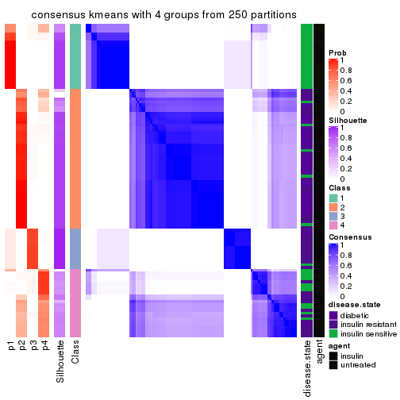
consensus_heatmap(res, k = 5)
consensus_heatmap(res, k = 6)
Heatmaps for the membership of samples in all partitions to see how consistent they are:
membership_heatmap(res, k = 2)
membership_heatmap(res, k = 3)
membership_heatmap(res, k = 4)
membership_heatmap(res, k = 5)
membership_heatmap(res, k = 6)
As soon as we have had the classes for columns, we can look for signatures which are significantly different between classes which can be candidate marks for certain classes. Following are the heatmaps for signatures.
Signature heatmaps where rows are scaled:
get_signatures(res, k = 2)
get_signatures(res, k = 3)
get_signatures(res, k = 4)
get_signatures(res, k = 5)
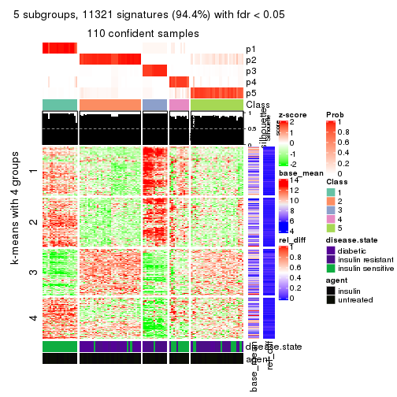
get_signatures(res, k = 6)
Signature heatmaps where rows are not scaled:
get_signatures(res, k = 2, scale_rows = FALSE)
get_signatures(res, k = 3, scale_rows = FALSE)
get_signatures(res, k = 4, scale_rows = FALSE)
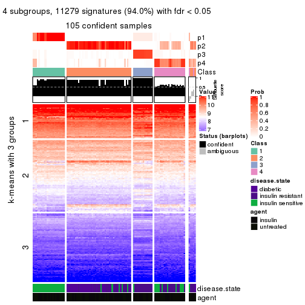
get_signatures(res, k = 5, scale_rows = FALSE)
get_signatures(res, k = 6, scale_rows = FALSE)
Compare the overlap of signatures from different k:
compare_signatures(res)
get_signature() returns a data frame invisibly. TO get the list of signatures, the function
call should be assigned to a variable explicitly. In following code, if plot argument is set
to FALSE, no heatmap is plotted while only the differential analysis is performed.
# code only for demonstration
tb = get_signature(res, k = ..., plot = FALSE)
An example of the output of tb is:
#> which_row fdr mean_1 mean_2 scaled_mean_1 scaled_mean_2 km
#> 1 38 0.042760348 8.373488 9.131774 -0.5533452 0.5164555 1
#> 2 40 0.018707592 7.106213 8.469186 -0.6173731 0.5762149 1
#> 3 55 0.019134737 10.221463 11.207825 -0.6159697 0.5749050 1
#> 4 59 0.006059896 5.921854 7.869574 -0.6899429 0.6439467 1
#> 5 60 0.018055526 8.928898 10.211722 -0.6204761 0.5791110 1
#> 6 98 0.009384629 15.714769 14.887706 0.6635654 -0.6193277 2
...
The columns in tb are:
which_row: row indices corresponding to the input matrix.fdr: FDR for the differential test. mean_x: The mean value in group x.scaled_mean_x: The mean value in group x after rows are scaled.km: Row groups if k-means clustering is applied to rows.UMAP plot which shows how samples are separated.
dimension_reduction(res, k = 2, method = "UMAP")
dimension_reduction(res, k = 3, method = "UMAP")
dimension_reduction(res, k = 4, method = "UMAP")
dimension_reduction(res, k = 5, method = "UMAP")
dimension_reduction(res, k = 6, method = "UMAP")
Following heatmap shows how subgroups are split when increasing k:
collect_classes(res)
Test correlation between subgroups and known annotations. If the known annotation is numeric, one-way ANOVA test is applied, and if the known annotation is discrete, chi-squared contingency table test is applied.
test_to_known_factors(res)
#> n disease.state(p) agent(p) k
#> ATC:kmeans 109 4.96e-07 0.9430 2
#> ATC:kmeans 98 1.14e-05 0.1938 3
#> ATC:kmeans 105 2.59e-16 0.1741 4
#> ATC:kmeans 110 1.22e-16 0.1079 5
#> ATC:kmeans 109 2.33e-16 0.0492 6
If matrix rows can be associated to genes, consider to use GO_Enrichment(res,
...) to perform function enrichment for the signature genes.
The object with results only for a single top-value method and a single partition method can be extracted as:
res = res_list["ATC", "skmeans"]
# you can also extract it by
# res = res_list["ATC:skmeans"]
A summary of res and all the functions that can be applied to it:
res
#> A 'ConsensusPartition' object with k = 2, 3, 4, 5, 6.
#> On a matrix with 11994 rows and 110 columns.
#> Top rows (1000, 2000, 3000, 4000, 5000) are extracted by 'ATC' method.
#> Subgroups are detected by 'skmeans' method.
#> Performed in total 1250 partitions by row resampling.
#> Best k for subgroups seems to be 4.
#>
#> Following methods can be applied to this 'ConsensusPartition' object:
#> [1] "cola_report" "collect_classes" "collect_plots"
#> [4] "collect_stats" "colnames" "compare_signatures"
#> [7] "consensus_heatmap" "dimension_reduction" "functional_enrichment"
#> [10] "get_anno_col" "get_anno" "get_classes"
#> [13] "get_consensus" "get_matrix" "get_membership"
#> [16] "get_param" "get_signatures" "get_stats"
#> [19] "is_best_k" "is_stable_k" "membership_heatmap"
#> [22] "ncol" "nrow" "plot_ecdf"
#> [25] "rownames" "select_partition_number" "show"
#> [28] "suggest_best_k" "test_to_known_factors"
collect_plots() function collects all the plots made from res for all k (number of partitions)
into one single page to provide an easy and fast comparison between different k.
collect_plots(res)
The plots are:
k and the heatmap of
predicted classes for each k.k.k.k.All the plots in panels can be made by individual functions and they are plotted later in this section.
select_partition_number() produces several plots showing different
statistics for choosing “optimized” k. There are following statistics:
k;k, the area increased is defined as \(A_k - A_{k-1}\).The detailed explanations of these statistics can be found in the cola vignette.
Generally speaking, lower PAC score, higher mean silhouette score or higher
concordance corresponds to better partition. Rand index and Jaccard index
measure how similar the current partition is compared to partition with k-1.
If they are too similar, we won't accept k is better than k-1.
select_partition_number(res)
The numeric values for all these statistics can be obtained by get_stats().
get_stats(res)
#> k 1-PAC mean_silhouette concordance area_increased Rand Jaccard
#> 2 2 1.000 1.000 1.000 0.4811 0.519 0.519
#> 3 3 0.906 0.956 0.939 0.1534 0.923 0.852
#> 4 4 0.913 0.940 0.952 0.1251 0.944 0.874
#> 5 5 0.796 0.783 0.883 0.1418 0.882 0.697
#> 6 6 0.737 0.720 0.859 0.0464 0.956 0.845
suggest_best_k() suggests the best \(k\) based on these statistics. The rules are as follows:
NA.suggest_best_k(res)
#> [1] 4
#> attr(,"optional")
#> [1] 2 3
There is also optional best \(k\) = 2 3 that is worth to check.
Following shows the table of the partitions (You need to click the show/hide
code output link to see it). The membership matrix (columns with name p*)
is inferred by
clue::cl_consensus()
function with the SE method. Basically the value in the membership matrix
represents the probability to belong to a certain group. The finall class
label for an item is determined with the group with highest probability it
belongs to.
In get_classes() function, the entropy is calculated from the membership
matrix and the silhouette score is calculated from the consensus matrix.
cbind(get_classes(res, k = 2), get_membership(res, k = 2))
#> class entropy silhouette p1 p2
#> GSM555237 1 0 1 1 0
#> GSM555239 1 0 1 1 0
#> GSM555241 1 0 1 1 0
#> GSM555243 1 0 1 1 0
#> GSM555245 1 0 1 1 0
#> GSM555247 1 0 1 1 0
#> GSM555249 1 0 1 1 0
#> GSM555251 1 0 1 1 0
#> GSM555253 1 0 1 1 0
#> GSM555255 1 0 1 1 0
#> GSM555257 1 0 1 1 0
#> GSM555259 1 0 1 1 0
#> GSM555261 1 0 1 1 0
#> GSM555263 2 0 1 0 1
#> GSM555265 1 0 1 1 0
#> GSM555267 1 0 1 1 0
#> GSM555269 1 0 1 1 0
#> GSM555271 1 0 1 1 0
#> GSM555273 2 0 1 0 1
#> GSM555275 2 0 1 0 1
#> GSM555238 1 0 1 1 0
#> GSM555240 1 0 1 1 0
#> GSM555242 1 0 1 1 0
#> GSM555244 1 0 1 1 0
#> GSM555246 1 0 1 1 0
#> GSM555248 1 0 1 1 0
#> GSM555250 1 0 1 1 0
#> GSM555252 1 0 1 1 0
#> GSM555254 1 0 1 1 0
#> GSM555256 1 0 1 1 0
#> GSM555258 2 0 1 0 1
#> GSM555260 2 0 1 0 1
#> GSM555262 2 0 1 0 1
#> GSM555264 1 0 1 1 0
#> GSM555266 2 0 1 0 1
#> GSM555268 2 0 1 0 1
#> GSM555270 2 0 1 0 1
#> GSM555272 2 0 1 0 1
#> GSM555274 2 0 1 0 1
#> GSM555276 2 0 1 0 1
#> GSM555277 2 0 1 0 1
#> GSM555279 2 0 1 0 1
#> GSM555281 2 0 1 0 1
#> GSM555283 2 0 1 0 1
#> GSM555285 2 0 1 0 1
#> GSM555287 1 0 1 1 0
#> GSM555289 2 0 1 0 1
#> GSM555291 2 0 1 0 1
#> GSM555293 2 0 1 0 1
#> GSM555295 2 0 1 0 1
#> GSM555297 1 0 1 1 0
#> GSM555299 1 0 1 1 0
#> GSM555301 1 0 1 1 0
#> GSM555303 1 0 1 1 0
#> GSM555305 1 0 1 1 0
#> GSM555307 2 0 1 0 1
#> GSM555309 1 0 1 1 0
#> GSM555311 2 0 1 0 1
#> GSM555313 2 0 1 0 1
#> GSM555315 2 0 1 0 1
#> GSM555278 2 0 1 0 1
#> GSM555280 2 0 1 0 1
#> GSM555282 2 0 1 0 1
#> GSM555284 2 0 1 0 1
#> GSM555286 2 0 1 0 1
#> GSM555288 2 0 1 0 1
#> GSM555290 2 0 1 0 1
#> GSM555292 2 0 1 0 1
#> GSM555294 2 0 1 0 1
#> GSM555296 2 0 1 0 1
#> GSM555298 1 0 1 1 0
#> GSM555300 1 0 1 1 0
#> GSM555302 1 0 1 1 0
#> GSM555304 1 0 1 1 0
#> GSM555306 1 0 1 1 0
#> GSM555308 1 0 1 1 0
#> GSM555310 1 0 1 1 0
#> GSM555312 2 0 1 0 1
#> GSM555314 2 0 1 0 1
#> GSM555316 2 0 1 0 1
#> GSM555317 2 0 1 0 1
#> GSM555319 2 0 1 0 1
#> GSM555321 2 0 1 0 1
#> GSM555323 2 0 1 0 1
#> GSM555325 2 0 1 0 1
#> GSM555327 2 0 1 0 1
#> GSM555329 2 0 1 0 1
#> GSM555331 2 0 1 0 1
#> GSM555333 2 0 1 0 1
#> GSM555335 2 0 1 0 1
#> GSM555337 2 0 1 0 1
#> GSM555339 2 0 1 0 1
#> GSM555341 2 0 1 0 1
#> GSM555343 2 0 1 0 1
#> GSM555345 2 0 1 0 1
#> GSM555318 2 0 1 0 1
#> GSM555320 2 0 1 0 1
#> GSM555322 2 0 1 0 1
#> GSM555324 1 0 1 1 0
#> GSM555326 2 0 1 0 1
#> GSM555328 2 0 1 0 1
#> GSM555330 2 0 1 0 1
#> GSM555332 2 0 1 0 1
#> GSM555334 2 0 1 0 1
#> GSM555336 2 0 1 0 1
#> GSM555338 2 0 1 0 1
#> GSM555340 2 0 1 0 1
#> GSM555342 2 0 1 0 1
#> GSM555344 2 0 1 0 1
#> GSM555346 2 0 1 0 1
cbind(get_classes(res, k = 3), get_membership(res, k = 3))
#> class entropy silhouette p1 p2 p3
#> GSM555237 1 0.0000 0.978 1.000 0.000 0.000
#> GSM555239 1 0.0000 0.978 1.000 0.000 0.000
#> GSM555241 1 0.0000 0.978 1.000 0.000 0.000
#> GSM555243 1 0.0000 0.978 1.000 0.000 0.000
#> GSM555245 1 0.0000 0.978 1.000 0.000 0.000
#> GSM555247 1 0.0000 0.978 1.000 0.000 0.000
#> GSM555249 1 0.0000 0.978 1.000 0.000 0.000
#> GSM555251 1 0.0000 0.978 1.000 0.000 0.000
#> GSM555253 1 0.0000 0.978 1.000 0.000 0.000
#> GSM555255 1 0.0000 0.978 1.000 0.000 0.000
#> GSM555257 1 0.5810 0.386 0.664 0.000 0.336
#> GSM555259 3 0.4504 0.908 0.196 0.000 0.804
#> GSM555261 3 0.0237 0.690 0.004 0.000 0.996
#> GSM555263 2 0.5178 0.741 0.000 0.744 0.256
#> GSM555265 3 0.4504 0.908 0.196 0.000 0.804
#> GSM555267 3 0.3619 0.844 0.136 0.000 0.864
#> GSM555269 3 0.5178 0.961 0.256 0.000 0.744
#> GSM555271 3 0.5178 0.961 0.256 0.000 0.744
#> GSM555273 2 0.1163 0.965 0.000 0.972 0.028
#> GSM555275 2 0.0000 0.982 0.000 1.000 0.000
#> GSM555238 1 0.0000 0.978 1.000 0.000 0.000
#> GSM555240 1 0.0000 0.978 1.000 0.000 0.000
#> GSM555242 1 0.0000 0.978 1.000 0.000 0.000
#> GSM555244 1 0.0000 0.978 1.000 0.000 0.000
#> GSM555246 1 0.0000 0.978 1.000 0.000 0.000
#> GSM555248 1 0.0000 0.978 1.000 0.000 0.000
#> GSM555250 1 0.0000 0.978 1.000 0.000 0.000
#> GSM555252 1 0.0000 0.978 1.000 0.000 0.000
#> GSM555254 1 0.0000 0.978 1.000 0.000 0.000
#> GSM555256 1 0.0000 0.978 1.000 0.000 0.000
#> GSM555258 2 0.6559 0.696 0.040 0.708 0.252
#> GSM555260 2 0.4750 0.788 0.000 0.784 0.216
#> GSM555262 2 0.0000 0.982 0.000 1.000 0.000
#> GSM555264 1 0.1643 0.924 0.956 0.000 0.044
#> GSM555266 2 0.0237 0.982 0.000 0.996 0.004
#> GSM555268 2 0.0237 0.982 0.000 0.996 0.004
#> GSM555270 2 0.0000 0.982 0.000 1.000 0.000
#> GSM555272 2 0.5138 0.746 0.000 0.748 0.252
#> GSM555274 2 0.0000 0.982 0.000 1.000 0.000
#> GSM555276 2 0.0000 0.982 0.000 1.000 0.000
#> GSM555277 2 0.0000 0.982 0.000 1.000 0.000
#> GSM555279 2 0.0237 0.982 0.000 0.996 0.004
#> GSM555281 2 0.0237 0.982 0.000 0.996 0.004
#> GSM555283 2 0.0000 0.982 0.000 1.000 0.000
#> GSM555285 2 0.1163 0.965 0.000 0.972 0.028
#> GSM555287 3 0.5733 0.870 0.324 0.000 0.676
#> GSM555289 2 0.0000 0.982 0.000 1.000 0.000
#> GSM555291 2 0.0000 0.982 0.000 1.000 0.000
#> GSM555293 2 0.0237 0.982 0.000 0.996 0.004
#> GSM555295 2 0.0237 0.982 0.000 0.996 0.004
#> GSM555297 3 0.5178 0.961 0.256 0.000 0.744
#> GSM555299 3 0.5178 0.961 0.256 0.000 0.744
#> GSM555301 3 0.5178 0.961 0.256 0.000 0.744
#> GSM555303 3 0.5178 0.961 0.256 0.000 0.744
#> GSM555305 3 0.5178 0.961 0.256 0.000 0.744
#> GSM555307 2 0.0000 0.982 0.000 1.000 0.000
#> GSM555309 3 0.5178 0.961 0.256 0.000 0.744
#> GSM555311 2 0.0237 0.982 0.000 0.996 0.004
#> GSM555313 2 0.0237 0.982 0.000 0.996 0.004
#> GSM555315 2 0.0237 0.982 0.000 0.996 0.004
#> GSM555278 2 0.0237 0.982 0.000 0.996 0.004
#> GSM555280 2 0.0000 0.982 0.000 1.000 0.000
#> GSM555282 2 0.0000 0.982 0.000 1.000 0.000
#> GSM555284 2 0.0237 0.982 0.000 0.996 0.004
#> GSM555286 2 0.0000 0.982 0.000 1.000 0.000
#> GSM555288 2 0.3879 0.854 0.000 0.848 0.152
#> GSM555290 2 0.0000 0.982 0.000 1.000 0.000
#> GSM555292 2 0.0000 0.982 0.000 1.000 0.000
#> GSM555294 2 0.0237 0.982 0.000 0.996 0.004
#> GSM555296 2 0.0000 0.982 0.000 1.000 0.000
#> GSM555298 3 0.5178 0.961 0.256 0.000 0.744
#> GSM555300 3 0.5178 0.961 0.256 0.000 0.744
#> GSM555302 3 0.5178 0.961 0.256 0.000 0.744
#> GSM555304 3 0.5178 0.961 0.256 0.000 0.744
#> GSM555306 3 0.5178 0.961 0.256 0.000 0.744
#> GSM555308 3 0.5178 0.961 0.256 0.000 0.744
#> GSM555310 3 0.5178 0.961 0.256 0.000 0.744
#> GSM555312 2 0.0000 0.982 0.000 1.000 0.000
#> GSM555314 2 0.0237 0.982 0.000 0.996 0.004
#> GSM555316 2 0.0000 0.982 0.000 1.000 0.000
#> GSM555317 2 0.0000 0.982 0.000 1.000 0.000
#> GSM555319 2 0.0237 0.982 0.000 0.996 0.004
#> GSM555321 2 0.0237 0.982 0.000 0.996 0.004
#> GSM555323 2 0.0000 0.982 0.000 1.000 0.000
#> GSM555325 2 0.0237 0.982 0.000 0.996 0.004
#> GSM555327 2 0.0000 0.982 0.000 1.000 0.000
#> GSM555329 2 0.0237 0.982 0.000 0.996 0.004
#> GSM555331 2 0.0237 0.982 0.000 0.996 0.004
#> GSM555333 2 0.0237 0.982 0.000 0.996 0.004
#> GSM555335 2 0.0000 0.982 0.000 1.000 0.000
#> GSM555337 2 0.0237 0.982 0.000 0.996 0.004
#> GSM555339 2 0.0000 0.982 0.000 1.000 0.000
#> GSM555341 2 0.0000 0.982 0.000 1.000 0.000
#> GSM555343 2 0.0237 0.982 0.000 0.996 0.004
#> GSM555345 2 0.0000 0.982 0.000 1.000 0.000
#> GSM555318 2 0.0000 0.982 0.000 1.000 0.000
#> GSM555320 2 0.0237 0.982 0.000 0.996 0.004
#> GSM555322 2 0.0000 0.982 0.000 1.000 0.000
#> GSM555324 3 0.5178 0.961 0.256 0.000 0.744
#> GSM555326 2 0.0000 0.982 0.000 1.000 0.000
#> GSM555328 2 0.0000 0.982 0.000 1.000 0.000
#> GSM555330 2 0.0000 0.982 0.000 1.000 0.000
#> GSM555332 2 0.0000 0.982 0.000 1.000 0.000
#> GSM555334 2 0.0000 0.982 0.000 1.000 0.000
#> GSM555336 2 0.0237 0.982 0.000 0.996 0.004
#> GSM555338 2 0.0000 0.982 0.000 1.000 0.000
#> GSM555340 2 0.0237 0.982 0.000 0.996 0.004
#> GSM555342 2 0.0237 0.982 0.000 0.996 0.004
#> GSM555344 2 0.0000 0.982 0.000 1.000 0.000
#> GSM555346 2 0.0237 0.982 0.000 0.996 0.004
cbind(get_classes(res, k = 4), get_membership(res, k = 4))
#> class entropy silhouette p1 p2 p3 p4
#> GSM555237 1 0.0000 0.972 1.000 0.000 0.000 0.000
#> GSM555239 1 0.0000 0.972 1.000 0.000 0.000 0.000
#> GSM555241 1 0.0000 0.972 1.000 0.000 0.000 0.000
#> GSM555243 1 0.0000 0.972 1.000 0.000 0.000 0.000
#> GSM555245 1 0.0000 0.972 1.000 0.000 0.000 0.000
#> GSM555247 1 0.0000 0.972 1.000 0.000 0.000 0.000
#> GSM555249 1 0.0000 0.972 1.000 0.000 0.000 0.000
#> GSM555251 1 0.0000 0.972 1.000 0.000 0.000 0.000
#> GSM555253 1 0.0000 0.972 1.000 0.000 0.000 0.000
#> GSM555255 1 0.0000 0.972 1.000 0.000 0.000 0.000
#> GSM555257 1 0.6473 0.434 0.612 0.000 0.108 0.280
#> GSM555259 3 0.1211 0.965 0.040 0.000 0.960 0.000
#> GSM555261 4 0.3172 0.765 0.000 0.000 0.160 0.840
#> GSM555263 4 0.2797 0.872 0.000 0.068 0.032 0.900
#> GSM555265 3 0.1022 0.956 0.032 0.000 0.968 0.000
#> GSM555267 3 0.1256 0.949 0.028 0.000 0.964 0.008
#> GSM555269 3 0.1716 0.988 0.064 0.000 0.936 0.000
#> GSM555271 3 0.1716 0.988 0.064 0.000 0.936 0.000
#> GSM555273 2 0.4655 0.774 0.000 0.760 0.032 0.208
#> GSM555275 2 0.0376 0.955 0.000 0.992 0.004 0.004
#> GSM555238 1 0.0000 0.972 1.000 0.000 0.000 0.000
#> GSM555240 1 0.0000 0.972 1.000 0.000 0.000 0.000
#> GSM555242 1 0.0000 0.972 1.000 0.000 0.000 0.000
#> GSM555244 1 0.0000 0.972 1.000 0.000 0.000 0.000
#> GSM555246 1 0.0000 0.972 1.000 0.000 0.000 0.000
#> GSM555248 1 0.0000 0.972 1.000 0.000 0.000 0.000
#> GSM555250 1 0.0000 0.972 1.000 0.000 0.000 0.000
#> GSM555252 1 0.0000 0.972 1.000 0.000 0.000 0.000
#> GSM555254 1 0.0000 0.972 1.000 0.000 0.000 0.000
#> GSM555256 1 0.0000 0.972 1.000 0.000 0.000 0.000
#> GSM555258 4 0.1510 0.877 0.000 0.028 0.016 0.956
#> GSM555260 4 0.1716 0.877 0.000 0.064 0.000 0.936
#> GSM555262 2 0.0188 0.956 0.000 0.996 0.000 0.004
#> GSM555264 1 0.3768 0.761 0.808 0.000 0.008 0.184
#> GSM555266 2 0.3013 0.918 0.000 0.888 0.032 0.080
#> GSM555268 2 0.1706 0.946 0.000 0.948 0.016 0.036
#> GSM555270 2 0.0000 0.956 0.000 1.000 0.000 0.000
#> GSM555272 4 0.1510 0.877 0.000 0.028 0.016 0.956
#> GSM555274 2 0.0188 0.956 0.000 0.996 0.000 0.004
#> GSM555276 2 0.0188 0.956 0.000 0.996 0.000 0.004
#> GSM555277 2 0.0336 0.955 0.000 0.992 0.000 0.008
#> GSM555279 2 0.3082 0.915 0.000 0.884 0.032 0.084
#> GSM555281 2 0.1798 0.946 0.000 0.944 0.016 0.040
#> GSM555283 2 0.0188 0.956 0.000 0.996 0.000 0.004
#> GSM555285 2 0.4655 0.774 0.000 0.760 0.032 0.208
#> GSM555287 3 0.2921 0.888 0.140 0.000 0.860 0.000
#> GSM555289 2 0.0188 0.956 0.000 0.996 0.000 0.004
#> GSM555291 2 0.0188 0.956 0.000 0.996 0.000 0.004
#> GSM555293 2 0.1975 0.942 0.000 0.936 0.016 0.048
#> GSM555295 2 0.2596 0.931 0.000 0.908 0.024 0.068
#> GSM555297 3 0.1716 0.988 0.064 0.000 0.936 0.000
#> GSM555299 3 0.1716 0.988 0.064 0.000 0.936 0.000
#> GSM555301 3 0.1716 0.988 0.064 0.000 0.936 0.000
#> GSM555303 3 0.1716 0.988 0.064 0.000 0.936 0.000
#> GSM555305 3 0.1716 0.988 0.064 0.000 0.936 0.000
#> GSM555307 2 0.0336 0.955 0.000 0.992 0.000 0.008
#> GSM555309 3 0.1716 0.988 0.064 0.000 0.936 0.000
#> GSM555311 2 0.3013 0.918 0.000 0.888 0.032 0.080
#> GSM555313 2 0.1151 0.952 0.000 0.968 0.008 0.024
#> GSM555315 2 0.2915 0.920 0.000 0.892 0.028 0.080
#> GSM555278 2 0.3013 0.918 0.000 0.888 0.032 0.080
#> GSM555280 2 0.0188 0.956 0.000 0.996 0.000 0.004
#> GSM555282 2 0.0188 0.956 0.000 0.996 0.000 0.004
#> GSM555284 2 0.2984 0.918 0.000 0.888 0.028 0.084
#> GSM555286 2 0.0000 0.956 0.000 1.000 0.000 0.000
#> GSM555288 4 0.4343 0.659 0.000 0.264 0.004 0.732
#> GSM555290 2 0.0188 0.956 0.000 0.996 0.000 0.004
#> GSM555292 2 0.0188 0.956 0.000 0.996 0.000 0.004
#> GSM555294 2 0.3013 0.918 0.000 0.888 0.032 0.080
#> GSM555296 2 0.0188 0.956 0.000 0.996 0.000 0.004
#> GSM555298 3 0.1716 0.988 0.064 0.000 0.936 0.000
#> GSM555300 3 0.1716 0.988 0.064 0.000 0.936 0.000
#> GSM555302 3 0.1716 0.988 0.064 0.000 0.936 0.000
#> GSM555304 3 0.1716 0.988 0.064 0.000 0.936 0.000
#> GSM555306 3 0.1716 0.988 0.064 0.000 0.936 0.000
#> GSM555308 3 0.1716 0.988 0.064 0.000 0.936 0.000
#> GSM555310 3 0.1716 0.988 0.064 0.000 0.936 0.000
#> GSM555312 2 0.0336 0.955 0.000 0.992 0.000 0.008
#> GSM555314 2 0.2915 0.922 0.000 0.892 0.028 0.080
#> GSM555316 2 0.0188 0.956 0.000 0.996 0.000 0.004
#> GSM555317 2 0.0188 0.956 0.000 0.996 0.000 0.004
#> GSM555319 2 0.1706 0.946 0.000 0.948 0.016 0.036
#> GSM555321 2 0.1510 0.948 0.000 0.956 0.016 0.028
#> GSM555323 2 0.0000 0.956 0.000 1.000 0.000 0.000
#> GSM555325 2 0.3013 0.918 0.000 0.888 0.032 0.080
#> GSM555327 2 0.0336 0.955 0.000 0.992 0.000 0.008
#> GSM555329 2 0.1488 0.948 0.000 0.956 0.012 0.032
#> GSM555331 2 0.1042 0.953 0.000 0.972 0.008 0.020
#> GSM555333 2 0.2413 0.935 0.000 0.916 0.020 0.064
#> GSM555335 2 0.0188 0.956 0.000 0.996 0.000 0.004
#> GSM555337 2 0.1706 0.946 0.000 0.948 0.016 0.036
#> GSM555339 2 0.0336 0.955 0.000 0.992 0.000 0.008
#> GSM555341 2 0.0188 0.956 0.000 0.996 0.000 0.004
#> GSM555343 2 0.2060 0.940 0.000 0.932 0.016 0.052
#> GSM555345 2 0.0336 0.955 0.000 0.992 0.000 0.008
#> GSM555318 2 0.0336 0.955 0.000 0.992 0.000 0.008
#> GSM555320 2 0.3013 0.918 0.000 0.888 0.032 0.080
#> GSM555322 2 0.0000 0.956 0.000 1.000 0.000 0.000
#> GSM555324 3 0.1716 0.988 0.064 0.000 0.936 0.000
#> GSM555326 2 0.0000 0.956 0.000 1.000 0.000 0.000
#> GSM555328 2 0.0188 0.956 0.000 0.996 0.000 0.004
#> GSM555330 2 0.0188 0.956 0.000 0.996 0.000 0.004
#> GSM555332 2 0.0336 0.955 0.000 0.992 0.000 0.008
#> GSM555334 2 0.0336 0.955 0.000 0.992 0.000 0.008
#> GSM555336 2 0.2813 0.923 0.000 0.896 0.024 0.080
#> GSM555338 2 0.0188 0.956 0.000 0.996 0.000 0.004
#> GSM555340 2 0.1798 0.945 0.000 0.944 0.016 0.040
#> GSM555342 2 0.3013 0.918 0.000 0.888 0.032 0.080
#> GSM555344 2 0.0336 0.955 0.000 0.992 0.000 0.008
#> GSM555346 2 0.3013 0.918 0.000 0.888 0.032 0.080
cbind(get_classes(res, k = 5), get_membership(res, k = 5))
#> class entropy silhouette p1 p2 p3 p4 p5
#> GSM555237 1 0.0000 0.9697 1.000 0.000 0.000 0.000 0.000
#> GSM555239 1 0.0000 0.9697 1.000 0.000 0.000 0.000 0.000
#> GSM555241 1 0.0000 0.9697 1.000 0.000 0.000 0.000 0.000
#> GSM555243 1 0.0000 0.9697 1.000 0.000 0.000 0.000 0.000
#> GSM555245 1 0.0000 0.9697 1.000 0.000 0.000 0.000 0.000
#> GSM555247 1 0.0000 0.9697 1.000 0.000 0.000 0.000 0.000
#> GSM555249 1 0.0000 0.9697 1.000 0.000 0.000 0.000 0.000
#> GSM555251 1 0.0000 0.9697 1.000 0.000 0.000 0.000 0.000
#> GSM555253 1 0.0000 0.9697 1.000 0.000 0.000 0.000 0.000
#> GSM555255 1 0.0000 0.9697 1.000 0.000 0.000 0.000 0.000
#> GSM555257 1 0.5047 0.3558 0.588 0.000 0.032 0.376 0.004
#> GSM555259 3 0.1914 0.9200 0.008 0.000 0.928 0.056 0.008
#> GSM555261 4 0.2677 0.8334 0.000 0.000 0.016 0.872 0.112
#> GSM555263 4 0.2011 0.8451 0.000 0.000 0.004 0.908 0.088
#> GSM555265 3 0.3532 0.8255 0.000 0.000 0.832 0.092 0.076
#> GSM555267 3 0.4216 0.7691 0.000 0.000 0.780 0.100 0.120
#> GSM555269 3 0.0404 0.9644 0.012 0.000 0.988 0.000 0.000
#> GSM555271 3 0.0510 0.9675 0.016 0.000 0.984 0.000 0.000
#> GSM555273 5 0.2605 0.6909 0.000 0.148 0.000 0.000 0.852
#> GSM555275 2 0.2124 0.7845 0.000 0.900 0.004 0.000 0.096
#> GSM555238 1 0.0000 0.9697 1.000 0.000 0.000 0.000 0.000
#> GSM555240 1 0.0000 0.9697 1.000 0.000 0.000 0.000 0.000
#> GSM555242 1 0.0000 0.9697 1.000 0.000 0.000 0.000 0.000
#> GSM555244 1 0.0000 0.9697 1.000 0.000 0.000 0.000 0.000
#> GSM555246 1 0.0000 0.9697 1.000 0.000 0.000 0.000 0.000
#> GSM555248 1 0.0000 0.9697 1.000 0.000 0.000 0.000 0.000
#> GSM555250 1 0.0000 0.9697 1.000 0.000 0.000 0.000 0.000
#> GSM555252 1 0.0000 0.9697 1.000 0.000 0.000 0.000 0.000
#> GSM555254 1 0.0000 0.9697 1.000 0.000 0.000 0.000 0.000
#> GSM555256 1 0.0000 0.9697 1.000 0.000 0.000 0.000 0.000
#> GSM555258 4 0.1965 0.8679 0.000 0.000 0.000 0.904 0.096
#> GSM555260 4 0.2568 0.8653 0.000 0.016 0.004 0.888 0.092
#> GSM555262 2 0.1478 0.8078 0.000 0.936 0.000 0.000 0.064
#> GSM555264 1 0.4365 0.7183 0.768 0.000 0.000 0.116 0.116
#> GSM555266 5 0.3966 0.8847 0.000 0.336 0.000 0.000 0.664
#> GSM555268 2 0.4211 0.2141 0.000 0.636 0.004 0.000 0.360
#> GSM555270 2 0.1704 0.8052 0.000 0.928 0.004 0.000 0.068
#> GSM555272 4 0.1965 0.8679 0.000 0.000 0.000 0.904 0.096
#> GSM555274 2 0.1704 0.8052 0.000 0.928 0.004 0.000 0.068
#> GSM555276 2 0.0000 0.8096 0.000 1.000 0.000 0.000 0.000
#> GSM555277 2 0.0000 0.8096 0.000 1.000 0.000 0.000 0.000
#> GSM555279 5 0.3684 0.8737 0.000 0.280 0.000 0.000 0.720
#> GSM555281 2 0.4166 0.2545 0.000 0.648 0.004 0.000 0.348
#> GSM555283 2 0.1768 0.8032 0.000 0.924 0.004 0.000 0.072
#> GSM555285 5 0.2605 0.6909 0.000 0.148 0.000 0.000 0.852
#> GSM555287 3 0.3625 0.8405 0.096 0.000 0.840 0.016 0.048
#> GSM555289 2 0.0880 0.8119 0.000 0.968 0.000 0.000 0.032
#> GSM555291 2 0.1704 0.8052 0.000 0.928 0.004 0.000 0.068
#> GSM555293 2 0.4383 -0.1115 0.000 0.572 0.004 0.000 0.424
#> GSM555295 2 0.4294 -0.5143 0.000 0.532 0.000 0.000 0.468
#> GSM555297 3 0.0798 0.9545 0.008 0.000 0.976 0.000 0.016
#> GSM555299 3 0.0510 0.9675 0.016 0.000 0.984 0.000 0.000
#> GSM555301 3 0.0510 0.9675 0.016 0.000 0.984 0.000 0.000
#> GSM555303 3 0.0510 0.9675 0.016 0.000 0.984 0.000 0.000
#> GSM555305 3 0.0510 0.9675 0.016 0.000 0.984 0.000 0.000
#> GSM555307 2 0.0162 0.8069 0.000 0.996 0.000 0.000 0.004
#> GSM555309 3 0.0510 0.9675 0.016 0.000 0.984 0.000 0.000
#> GSM555311 5 0.3949 0.8882 0.000 0.332 0.000 0.000 0.668
#> GSM555313 2 0.2127 0.7348 0.000 0.892 0.000 0.000 0.108
#> GSM555315 5 0.4015 0.8764 0.000 0.348 0.000 0.000 0.652
#> GSM555278 5 0.4047 0.8934 0.000 0.320 0.004 0.000 0.676
#> GSM555280 2 0.1768 0.8032 0.000 0.924 0.004 0.000 0.072
#> GSM555282 2 0.0609 0.8119 0.000 0.980 0.000 0.000 0.020
#> GSM555284 5 0.4196 0.8586 0.000 0.356 0.004 0.000 0.640
#> GSM555286 2 0.1768 0.8032 0.000 0.924 0.004 0.000 0.072
#> GSM555288 4 0.5698 0.4778 0.000 0.208 0.004 0.640 0.148
#> GSM555290 2 0.1704 0.8052 0.000 0.928 0.004 0.000 0.068
#> GSM555292 2 0.1768 0.8032 0.000 0.924 0.004 0.000 0.072
#> GSM555294 5 0.3895 0.8945 0.000 0.320 0.000 0.000 0.680
#> GSM555296 2 0.0000 0.8096 0.000 1.000 0.000 0.000 0.000
#> GSM555298 3 0.0510 0.9675 0.016 0.000 0.984 0.000 0.000
#> GSM555300 3 0.0510 0.9675 0.016 0.000 0.984 0.000 0.000
#> GSM555302 3 0.0510 0.9675 0.016 0.000 0.984 0.000 0.000
#> GSM555304 3 0.0510 0.9675 0.016 0.000 0.984 0.000 0.000
#> GSM555306 3 0.0510 0.9675 0.016 0.000 0.984 0.000 0.000
#> GSM555308 3 0.0510 0.9675 0.016 0.000 0.984 0.000 0.000
#> GSM555310 3 0.0510 0.9675 0.016 0.000 0.984 0.000 0.000
#> GSM555312 2 0.0162 0.8069 0.000 0.996 0.000 0.000 0.004
#> GSM555314 5 0.4114 0.7959 0.000 0.376 0.000 0.000 0.624
#> GSM555316 2 0.0000 0.8096 0.000 1.000 0.000 0.000 0.000
#> GSM555317 2 0.0000 0.8096 0.000 1.000 0.000 0.000 0.000
#> GSM555319 2 0.4276 0.1273 0.000 0.616 0.004 0.000 0.380
#> GSM555321 2 0.4225 0.1972 0.000 0.632 0.004 0.000 0.364
#> GSM555323 2 0.1197 0.8113 0.000 0.952 0.000 0.000 0.048
#> GSM555325 5 0.3857 0.8947 0.000 0.312 0.000 0.000 0.688
#> GSM555327 2 0.0000 0.8096 0.000 1.000 0.000 0.000 0.000
#> GSM555329 2 0.4196 0.2284 0.000 0.640 0.004 0.000 0.356
#> GSM555331 2 0.1908 0.7521 0.000 0.908 0.000 0.000 0.092
#> GSM555333 2 0.3913 0.1593 0.000 0.676 0.000 0.000 0.324
#> GSM555335 2 0.0703 0.8027 0.000 0.976 0.000 0.000 0.024
#> GSM555337 2 0.4288 0.1087 0.000 0.612 0.004 0.000 0.384
#> GSM555339 2 0.0162 0.8069 0.000 0.996 0.000 0.000 0.004
#> GSM555341 2 0.1638 0.8066 0.000 0.932 0.004 0.000 0.064
#> GSM555343 2 0.4415 -0.2157 0.000 0.552 0.004 0.000 0.444
#> GSM555345 2 0.0162 0.8069 0.000 0.996 0.000 0.000 0.004
#> GSM555318 2 0.0000 0.8096 0.000 1.000 0.000 0.000 0.000
#> GSM555320 5 0.3857 0.8947 0.000 0.312 0.000 0.000 0.688
#> GSM555322 2 0.1704 0.8052 0.000 0.928 0.004 0.000 0.068
#> GSM555324 3 0.0510 0.9675 0.016 0.000 0.984 0.000 0.000
#> GSM555326 2 0.1768 0.8032 0.000 0.924 0.004 0.000 0.072
#> GSM555328 2 0.1410 0.8086 0.000 0.940 0.000 0.000 0.060
#> GSM555330 2 0.0000 0.8096 0.000 1.000 0.000 0.000 0.000
#> GSM555332 2 0.0000 0.8096 0.000 1.000 0.000 0.000 0.000
#> GSM555334 2 0.0000 0.8096 0.000 1.000 0.000 0.000 0.000
#> GSM555336 5 0.4288 0.7988 0.000 0.384 0.004 0.000 0.612
#> GSM555338 2 0.0000 0.8096 0.000 1.000 0.000 0.000 0.000
#> GSM555340 2 0.4321 0.0478 0.000 0.600 0.004 0.000 0.396
#> GSM555342 5 0.4211 0.8487 0.000 0.360 0.004 0.000 0.636
#> GSM555344 2 0.0000 0.8096 0.000 1.000 0.000 0.000 0.000
#> GSM555346 5 0.3707 0.8772 0.000 0.284 0.000 0.000 0.716
cbind(get_classes(res, k = 6), get_membership(res, k = 6))
#> class entropy silhouette p1 p2 p3 p4 p5 p6
#> GSM555237 1 0.0000 0.9609 1.000 0.000 0.000 0.000 0.000 0.000
#> GSM555239 1 0.0000 0.9609 1.000 0.000 0.000 0.000 0.000 0.000
#> GSM555241 1 0.0000 0.9609 1.000 0.000 0.000 0.000 0.000 0.000
#> GSM555243 1 0.0000 0.9609 1.000 0.000 0.000 0.000 0.000 0.000
#> GSM555245 1 0.0000 0.9609 1.000 0.000 0.000 0.000 0.000 0.000
#> GSM555247 1 0.0000 0.9609 1.000 0.000 0.000 0.000 0.000 0.000
#> GSM555249 1 0.0000 0.9609 1.000 0.000 0.000 0.000 0.000 0.000
#> GSM555251 1 0.0000 0.9609 1.000 0.000 0.000 0.000 0.000 0.000
#> GSM555253 1 0.0000 0.9609 1.000 0.000 0.000 0.000 0.000 0.000
#> GSM555255 1 0.0000 0.9609 1.000 0.000 0.000 0.000 0.000 0.000
#> GSM555257 1 0.5811 0.2462 0.520 0.000 0.036 0.356 0.000 0.088
#> GSM555259 3 0.2793 0.6967 0.000 0.000 0.800 0.000 0.000 0.200
#> GSM555261 6 0.3742 0.4710 0.000 0.000 0.004 0.348 0.000 0.648
#> GSM555263 6 0.3810 0.4024 0.000 0.000 0.000 0.428 0.000 0.572
#> GSM555265 3 0.3862 -0.0681 0.000 0.000 0.524 0.000 0.000 0.476
#> GSM555267 6 0.3942 0.2678 0.000 0.000 0.368 0.004 0.004 0.624
#> GSM555269 3 0.0260 0.9298 0.000 0.000 0.992 0.000 0.000 0.008
#> GSM555271 3 0.0000 0.9358 0.000 0.000 1.000 0.000 0.000 0.000
#> GSM555273 5 0.3133 0.5689 0.000 0.040 0.000 0.032 0.856 0.072
#> GSM555275 2 0.2968 0.7378 0.000 0.816 0.000 0.000 0.168 0.016
#> GSM555238 1 0.0000 0.9609 1.000 0.000 0.000 0.000 0.000 0.000
#> GSM555240 1 0.0000 0.9609 1.000 0.000 0.000 0.000 0.000 0.000
#> GSM555242 1 0.0000 0.9609 1.000 0.000 0.000 0.000 0.000 0.000
#> GSM555244 1 0.0000 0.9609 1.000 0.000 0.000 0.000 0.000 0.000
#> GSM555246 1 0.0000 0.9609 1.000 0.000 0.000 0.000 0.000 0.000
#> GSM555248 1 0.0000 0.9609 1.000 0.000 0.000 0.000 0.000 0.000
#> GSM555250 1 0.0000 0.9609 1.000 0.000 0.000 0.000 0.000 0.000
#> GSM555252 1 0.0000 0.9609 1.000 0.000 0.000 0.000 0.000 0.000
#> GSM555254 1 0.0000 0.9609 1.000 0.000 0.000 0.000 0.000 0.000
#> GSM555256 1 0.0000 0.9609 1.000 0.000 0.000 0.000 0.000 0.000
#> GSM555258 4 0.0260 0.4850 0.000 0.000 0.000 0.992 0.000 0.008
#> GSM555260 4 0.1390 0.4824 0.000 0.032 0.000 0.948 0.016 0.004
#> GSM555262 2 0.2112 0.7957 0.000 0.896 0.000 0.000 0.088 0.016
#> GSM555264 1 0.5240 0.5225 0.640 0.000 0.000 0.244 0.024 0.092
#> GSM555266 5 0.2882 0.7986 0.000 0.180 0.000 0.000 0.812 0.008
#> GSM555268 2 0.4253 -0.0105 0.000 0.524 0.000 0.000 0.460 0.016
#> GSM555270 2 0.2263 0.7924 0.000 0.884 0.000 0.000 0.100 0.016
#> GSM555272 4 0.0146 0.4856 0.000 0.000 0.000 0.996 0.000 0.004
#> GSM555274 2 0.2214 0.7923 0.000 0.888 0.000 0.000 0.096 0.016
#> GSM555276 2 0.1124 0.7944 0.000 0.956 0.000 0.000 0.008 0.036
#> GSM555277 2 0.0820 0.7968 0.000 0.972 0.000 0.000 0.012 0.016
#> GSM555279 5 0.2309 0.7131 0.000 0.084 0.000 0.000 0.888 0.028
#> GSM555281 2 0.4403 0.1937 0.000 0.564 0.000 0.000 0.408 0.028
#> GSM555283 2 0.2263 0.7910 0.000 0.884 0.000 0.000 0.100 0.016
#> GSM555285 5 0.3133 0.5689 0.000 0.040 0.000 0.032 0.856 0.072
#> GSM555287 3 0.4319 0.6294 0.028 0.000 0.736 0.000 0.040 0.196
#> GSM555289 2 0.1838 0.8004 0.000 0.916 0.000 0.000 0.068 0.016
#> GSM555291 2 0.2263 0.7910 0.000 0.884 0.000 0.000 0.100 0.016
#> GSM555293 5 0.3955 0.3523 0.000 0.436 0.000 0.000 0.560 0.004
#> GSM555295 5 0.5534 0.3624 0.000 0.424 0.000 0.000 0.444 0.132
#> GSM555297 3 0.1367 0.8910 0.000 0.000 0.944 0.000 0.012 0.044
#> GSM555299 3 0.0000 0.9358 0.000 0.000 1.000 0.000 0.000 0.000
#> GSM555301 3 0.0000 0.9358 0.000 0.000 1.000 0.000 0.000 0.000
#> GSM555303 3 0.0000 0.9358 0.000 0.000 1.000 0.000 0.000 0.000
#> GSM555305 3 0.0000 0.9358 0.000 0.000 1.000 0.000 0.000 0.000
#> GSM555307 2 0.1745 0.7699 0.000 0.920 0.000 0.000 0.012 0.068
#> GSM555309 3 0.0000 0.9358 0.000 0.000 1.000 0.000 0.000 0.000
#> GSM555311 5 0.3715 0.7825 0.000 0.188 0.000 0.000 0.764 0.048
#> GSM555313 2 0.3896 0.5826 0.000 0.744 0.000 0.000 0.204 0.052
#> GSM555315 5 0.3440 0.7950 0.000 0.196 0.000 0.000 0.776 0.028
#> GSM555278 5 0.2527 0.7965 0.000 0.168 0.000 0.000 0.832 0.000
#> GSM555280 2 0.2358 0.7893 0.000 0.876 0.000 0.000 0.108 0.016
#> GSM555282 2 0.1779 0.8011 0.000 0.920 0.000 0.000 0.064 0.016
#> GSM555284 5 0.3287 0.7684 0.000 0.220 0.000 0.000 0.768 0.012
#> GSM555286 2 0.2494 0.7819 0.000 0.864 0.000 0.000 0.120 0.016
#> GSM555288 4 0.6609 0.1446 0.000 0.328 0.000 0.440 0.184 0.048
#> GSM555290 2 0.2163 0.7934 0.000 0.892 0.000 0.000 0.092 0.016
#> GSM555292 2 0.2263 0.7910 0.000 0.884 0.000 0.000 0.100 0.016
#> GSM555294 5 0.2632 0.7959 0.000 0.164 0.000 0.000 0.832 0.004
#> GSM555296 2 0.1649 0.7907 0.000 0.932 0.000 0.000 0.036 0.032
#> GSM555298 3 0.0000 0.9358 0.000 0.000 1.000 0.000 0.000 0.000
#> GSM555300 3 0.0000 0.9358 0.000 0.000 1.000 0.000 0.000 0.000
#> GSM555302 3 0.0000 0.9358 0.000 0.000 1.000 0.000 0.000 0.000
#> GSM555304 3 0.0000 0.9358 0.000 0.000 1.000 0.000 0.000 0.000
#> GSM555306 3 0.0000 0.9358 0.000 0.000 1.000 0.000 0.000 0.000
#> GSM555308 3 0.0000 0.9358 0.000 0.000 1.000 0.000 0.000 0.000
#> GSM555310 3 0.0000 0.9358 0.000 0.000 1.000 0.000 0.000 0.000
#> GSM555312 2 0.1657 0.7822 0.000 0.928 0.000 0.000 0.016 0.056
#> GSM555314 5 0.4979 0.6142 0.000 0.224 0.000 0.000 0.640 0.136
#> GSM555316 2 0.0806 0.7997 0.000 0.972 0.000 0.000 0.008 0.020
#> GSM555317 2 0.0891 0.7988 0.000 0.968 0.000 0.000 0.008 0.024
#> GSM555319 2 0.4095 -0.1028 0.000 0.512 0.000 0.000 0.480 0.008
#> GSM555321 2 0.3993 -0.0715 0.000 0.520 0.000 0.000 0.476 0.004
#> GSM555323 2 0.2009 0.8019 0.000 0.908 0.000 0.000 0.068 0.024
#> GSM555325 5 0.2669 0.7908 0.000 0.156 0.000 0.000 0.836 0.008
#> GSM555327 2 0.0000 0.8007 0.000 1.000 0.000 0.000 0.000 0.000
#> GSM555329 2 0.4083 -0.0102 0.000 0.532 0.000 0.000 0.460 0.008
#> GSM555331 2 0.3440 0.6236 0.000 0.776 0.000 0.000 0.196 0.028
#> GSM555333 2 0.5147 0.1121 0.000 0.576 0.000 0.000 0.316 0.108
#> GSM555335 2 0.2658 0.7400 0.000 0.864 0.000 0.000 0.100 0.036
#> GSM555337 2 0.3999 -0.1617 0.000 0.500 0.000 0.000 0.496 0.004
#> GSM555339 2 0.1320 0.7906 0.000 0.948 0.000 0.000 0.016 0.036
#> GSM555341 2 0.1858 0.7999 0.000 0.912 0.000 0.000 0.076 0.012
#> GSM555343 5 0.3966 0.3261 0.000 0.444 0.000 0.000 0.552 0.004
#> GSM555345 2 0.1196 0.7875 0.000 0.952 0.000 0.000 0.008 0.040
#> GSM555318 2 0.1124 0.7889 0.000 0.956 0.000 0.000 0.008 0.036
#> GSM555320 5 0.2706 0.7932 0.000 0.160 0.000 0.000 0.832 0.008
#> GSM555322 2 0.2263 0.7924 0.000 0.884 0.000 0.000 0.100 0.016
#> GSM555324 3 0.0000 0.9358 0.000 0.000 1.000 0.000 0.000 0.000
#> GSM555326 2 0.2783 0.7606 0.000 0.836 0.000 0.000 0.148 0.016
#> GSM555328 2 0.2006 0.7981 0.000 0.904 0.000 0.000 0.080 0.016
#> GSM555330 2 0.1245 0.7959 0.000 0.952 0.000 0.000 0.016 0.032
#> GSM555332 2 0.1320 0.7906 0.000 0.948 0.000 0.000 0.016 0.036
#> GSM555334 2 0.0146 0.8000 0.000 0.996 0.000 0.000 0.000 0.004
#> GSM555336 5 0.3175 0.7404 0.000 0.256 0.000 0.000 0.744 0.000
#> GSM555338 2 0.0891 0.7988 0.000 0.968 0.000 0.000 0.008 0.024
#> GSM555340 5 0.3868 0.1432 0.000 0.492 0.000 0.000 0.508 0.000
#> GSM555342 5 0.3052 0.7802 0.000 0.216 0.000 0.000 0.780 0.004
#> GSM555344 2 0.0972 0.7917 0.000 0.964 0.000 0.000 0.008 0.028
#> GSM555346 5 0.2489 0.7678 0.000 0.128 0.000 0.000 0.860 0.012
Heatmaps for the consensus matrix. It visualizes the probability of two samples to be in a same group.
consensus_heatmap(res, k = 2)
consensus_heatmap(res, k = 3)
consensus_heatmap(res, k = 4)
consensus_heatmap(res, k = 5)
consensus_heatmap(res, k = 6)
Heatmaps for the membership of samples in all partitions to see how consistent they are:
membership_heatmap(res, k = 2)
membership_heatmap(res, k = 3)
membership_heatmap(res, k = 4)
membership_heatmap(res, k = 5)
membership_heatmap(res, k = 6)
As soon as we have had the classes for columns, we can look for signatures which are significantly different between classes which can be candidate marks for certain classes. Following are the heatmaps for signatures.
Signature heatmaps where rows are scaled:
get_signatures(res, k = 2)
get_signatures(res, k = 3)
get_signatures(res, k = 4)
get_signatures(res, k = 5)
get_signatures(res, k = 6)
Signature heatmaps where rows are not scaled:
get_signatures(res, k = 2, scale_rows = FALSE)
get_signatures(res, k = 3, scale_rows = FALSE)

get_signatures(res, k = 4, scale_rows = FALSE)
get_signatures(res, k = 5, scale_rows = FALSE)
get_signatures(res, k = 6, scale_rows = FALSE)
Compare the overlap of signatures from different k:
compare_signatures(res)
get_signature() returns a data frame invisibly. TO get the list of signatures, the function
call should be assigned to a variable explicitly. In following code, if plot argument is set
to FALSE, no heatmap is plotted while only the differential analysis is performed.
# code only for demonstration
tb = get_signature(res, k = ..., plot = FALSE)
An example of the output of tb is:
#> which_row fdr mean_1 mean_2 scaled_mean_1 scaled_mean_2 km
#> 1 38 0.042760348 8.373488 9.131774 -0.5533452 0.5164555 1
#> 2 40 0.018707592 7.106213 8.469186 -0.6173731 0.5762149 1
#> 3 55 0.019134737 10.221463 11.207825 -0.6159697 0.5749050 1
#> 4 59 0.006059896 5.921854 7.869574 -0.6899429 0.6439467 1
#> 5 60 0.018055526 8.928898 10.211722 -0.6204761 0.5791110 1
#> 6 98 0.009384629 15.714769 14.887706 0.6635654 -0.6193277 2
...
The columns in tb are:
which_row: row indices corresponding to the input matrix.fdr: FDR for the differential test. mean_x: The mean value in group x.scaled_mean_x: The mean value in group x after rows are scaled.km: Row groups if k-means clustering is applied to rows.UMAP plot which shows how samples are separated.
dimension_reduction(res, k = 2, method = "UMAP")
dimension_reduction(res, k = 3, method = "UMAP")
dimension_reduction(res, k = 4, method = "UMAP")
dimension_reduction(res, k = 5, method = "UMAP")
dimension_reduction(res, k = 6, method = "UMAP")
Following heatmap shows how subgroups are split when increasing k:
collect_classes(res)
Test correlation between subgroups and known annotations. If the known annotation is numeric, one-way ANOVA test is applied, and if the known annotation is discrete, chi-squared contingency table test is applied.
test_to_known_factors(res)
#> n disease.state(p) agent(p) k
#> ATC:skmeans 110 9.03e-08 0.434 2
#> ATC:skmeans 109 4.28e-12 0.449 3
#> ATC:skmeans 109 1.74e-13 0.666 4
#> ATC:skmeans 97 8.99e-12 0.708 5
#> ATC:skmeans 90 4.60e-12 0.761 6
If matrix rows can be associated to genes, consider to use GO_Enrichment(res,
...) to perform function enrichment for the signature genes.
The object with results only for a single top-value method and a single partition method can be extracted as:
res = res_list["ATC", "pam"]
# you can also extract it by
# res = res_list["ATC:pam"]
A summary of res and all the functions that can be applied to it:
res
#> A 'ConsensusPartition' object with k = 2, 3, 4, 5, 6.
#> On a matrix with 11994 rows and 110 columns.
#> Top rows (1000, 2000, 3000, 4000, 5000) are extracted by 'ATC' method.
#> Subgroups are detected by 'pam' method.
#> Performed in total 1250 partitions by row resampling.
#> Best k for subgroups seems to be 5.
#>
#> Following methods can be applied to this 'ConsensusPartition' object:
#> [1] "cola_report" "collect_classes" "collect_plots"
#> [4] "collect_stats" "colnames" "compare_signatures"
#> [7] "consensus_heatmap" "dimension_reduction" "functional_enrichment"
#> [10] "get_anno_col" "get_anno" "get_classes"
#> [13] "get_consensus" "get_matrix" "get_membership"
#> [16] "get_param" "get_signatures" "get_stats"
#> [19] "is_best_k" "is_stable_k" "membership_heatmap"
#> [22] "ncol" "nrow" "plot_ecdf"
#> [25] "rownames" "select_partition_number" "show"
#> [28] "suggest_best_k" "test_to_known_factors"
collect_plots() function collects all the plots made from res for all k (number of partitions)
into one single page to provide an easy and fast comparison between different k.
collect_plots(res)
The plots are:
k and the heatmap of
predicted classes for each k.k.k.k.All the plots in panels can be made by individual functions and they are plotted later in this section.
select_partition_number() produces several plots showing different
statistics for choosing “optimized” k. There are following statistics:
k;k, the area increased is defined as \(A_k - A_{k-1}\).The detailed explanations of these statistics can be found in the cola vignette.
Generally speaking, lower PAC score, higher mean silhouette score or higher
concordance corresponds to better partition. Rand index and Jaccard index
measure how similar the current partition is compared to partition with k-1.
If they are too similar, we won't accept k is better than k-1.
select_partition_number(res)
The numeric values for all these statistics can be obtained by get_stats().
get_stats(res)
#> k 1-PAC mean_silhouette concordance area_increased Rand Jaccard
#> 2 2 1.000 0.995 0.998 0.4680 0.533 0.533
#> 3 3 1.000 0.991 0.997 0.1343 0.939 0.886
#> 4 4 1.000 0.965 0.985 0.3723 0.776 0.538
#> 5 5 0.987 0.952 0.980 0.0548 0.953 0.828
#> 6 6 0.950 0.918 0.946 0.0101 0.992 0.968
suggest_best_k() suggests the best \(k\) based on these statistics. The rules are as follows:
NA.suggest_best_k(res)
#> [1] 5
#> attr(,"optional")
#> [1] 2 3 4
There is also optional best \(k\) = 2 3 4 that is worth to check.
Following shows the table of the partitions (You need to click the show/hide
code output link to see it). The membership matrix (columns with name p*)
is inferred by
clue::cl_consensus()
function with the SE method. Basically the value in the membership matrix
represents the probability to belong to a certain group. The finall class
label for an item is determined with the group with highest probability it
belongs to.
In get_classes() function, the entropy is calculated from the membership
matrix and the silhouette score is calculated from the consensus matrix.
cbind(get_classes(res, k = 2), get_membership(res, k = 2))
#> class entropy silhouette p1 p2
#> GSM555237 1 0.000 0.998 1.000 0.000
#> GSM555239 1 0.000 0.998 1.000 0.000
#> GSM555241 1 0.000 0.998 1.000 0.000
#> GSM555243 1 0.000 0.998 1.000 0.000
#> GSM555245 1 0.000 0.998 1.000 0.000
#> GSM555247 1 0.000 0.998 1.000 0.000
#> GSM555249 1 0.000 0.998 1.000 0.000
#> GSM555251 1 0.000 0.998 1.000 0.000
#> GSM555253 1 0.000 0.998 1.000 0.000
#> GSM555255 1 0.000 0.998 1.000 0.000
#> GSM555257 1 0.000 0.998 1.000 0.000
#> GSM555259 1 0.000 0.998 1.000 0.000
#> GSM555261 2 0.000 0.998 0.000 1.000
#> GSM555263 2 0.000 0.998 0.000 1.000
#> GSM555265 1 0.224 0.963 0.964 0.036
#> GSM555267 2 0.000 0.998 0.000 1.000
#> GSM555269 1 0.000 0.998 1.000 0.000
#> GSM555271 1 0.000 0.998 1.000 0.000
#> GSM555273 2 0.000 0.998 0.000 1.000
#> GSM555275 2 0.000 0.998 0.000 1.000
#> GSM555238 1 0.000 0.998 1.000 0.000
#> GSM555240 1 0.000 0.998 1.000 0.000
#> GSM555242 1 0.000 0.998 1.000 0.000
#> GSM555244 1 0.000 0.998 1.000 0.000
#> GSM555246 1 0.000 0.998 1.000 0.000
#> GSM555248 1 0.000 0.998 1.000 0.000
#> GSM555250 1 0.000 0.998 1.000 0.000
#> GSM555252 1 0.000 0.998 1.000 0.000
#> GSM555254 1 0.000 0.998 1.000 0.000
#> GSM555256 1 0.000 0.998 1.000 0.000
#> GSM555258 2 0.000 0.998 0.000 1.000
#> GSM555260 2 0.000 0.998 0.000 1.000
#> GSM555262 2 0.000 0.998 0.000 1.000
#> GSM555264 1 0.000 0.998 1.000 0.000
#> GSM555266 2 0.000 0.998 0.000 1.000
#> GSM555268 2 0.000 0.998 0.000 1.000
#> GSM555270 2 0.000 0.998 0.000 1.000
#> GSM555272 2 0.000 0.998 0.000 1.000
#> GSM555274 2 0.000 0.998 0.000 1.000
#> GSM555276 2 0.000 0.998 0.000 1.000
#> GSM555277 2 0.000 0.998 0.000 1.000
#> GSM555279 2 0.000 0.998 0.000 1.000
#> GSM555281 2 0.000 0.998 0.000 1.000
#> GSM555283 2 0.000 0.998 0.000 1.000
#> GSM555285 2 0.000 0.998 0.000 1.000
#> GSM555287 1 0.224 0.963 0.964 0.036
#> GSM555289 2 0.000 0.998 0.000 1.000
#> GSM555291 2 0.000 0.998 0.000 1.000
#> GSM555293 2 0.000 0.998 0.000 1.000
#> GSM555295 2 0.000 0.998 0.000 1.000
#> GSM555297 2 0.634 0.809 0.160 0.840
#> GSM555299 1 0.000 0.998 1.000 0.000
#> GSM555301 1 0.000 0.998 1.000 0.000
#> GSM555303 1 0.000 0.998 1.000 0.000
#> GSM555305 1 0.000 0.998 1.000 0.000
#> GSM555307 2 0.000 0.998 0.000 1.000
#> GSM555309 1 0.000 0.998 1.000 0.000
#> GSM555311 2 0.000 0.998 0.000 1.000
#> GSM555313 2 0.000 0.998 0.000 1.000
#> GSM555315 2 0.000 0.998 0.000 1.000
#> GSM555278 2 0.000 0.998 0.000 1.000
#> GSM555280 2 0.000 0.998 0.000 1.000
#> GSM555282 2 0.000 0.998 0.000 1.000
#> GSM555284 2 0.000 0.998 0.000 1.000
#> GSM555286 2 0.000 0.998 0.000 1.000
#> GSM555288 2 0.000 0.998 0.000 1.000
#> GSM555290 2 0.000 0.998 0.000 1.000
#> GSM555292 2 0.000 0.998 0.000 1.000
#> GSM555294 2 0.000 0.998 0.000 1.000
#> GSM555296 2 0.000 0.998 0.000 1.000
#> GSM555298 1 0.000 0.998 1.000 0.000
#> GSM555300 1 0.000 0.998 1.000 0.000
#> GSM555302 1 0.000 0.998 1.000 0.000
#> GSM555304 1 0.000 0.998 1.000 0.000
#> GSM555306 1 0.000 0.998 1.000 0.000
#> GSM555308 1 0.000 0.998 1.000 0.000
#> GSM555310 1 0.000 0.998 1.000 0.000
#> GSM555312 2 0.000 0.998 0.000 1.000
#> GSM555314 2 0.000 0.998 0.000 1.000
#> GSM555316 2 0.000 0.998 0.000 1.000
#> GSM555317 2 0.000 0.998 0.000 1.000
#> GSM555319 2 0.000 0.998 0.000 1.000
#> GSM555321 2 0.000 0.998 0.000 1.000
#> GSM555323 2 0.000 0.998 0.000 1.000
#> GSM555325 2 0.000 0.998 0.000 1.000
#> GSM555327 2 0.000 0.998 0.000 1.000
#> GSM555329 2 0.000 0.998 0.000 1.000
#> GSM555331 2 0.000 0.998 0.000 1.000
#> GSM555333 2 0.000 0.998 0.000 1.000
#> GSM555335 2 0.000 0.998 0.000 1.000
#> GSM555337 2 0.000 0.998 0.000 1.000
#> GSM555339 2 0.000 0.998 0.000 1.000
#> GSM555341 2 0.000 0.998 0.000 1.000
#> GSM555343 2 0.000 0.998 0.000 1.000
#> GSM555345 2 0.000 0.998 0.000 1.000
#> GSM555318 2 0.000 0.998 0.000 1.000
#> GSM555320 2 0.000 0.998 0.000 1.000
#> GSM555322 2 0.000 0.998 0.000 1.000
#> GSM555324 1 0.000 0.998 1.000 0.000
#> GSM555326 2 0.000 0.998 0.000 1.000
#> GSM555328 2 0.000 0.998 0.000 1.000
#> GSM555330 2 0.000 0.998 0.000 1.000
#> GSM555332 2 0.000 0.998 0.000 1.000
#> GSM555334 2 0.000 0.998 0.000 1.000
#> GSM555336 2 0.000 0.998 0.000 1.000
#> GSM555338 2 0.000 0.998 0.000 1.000
#> GSM555340 2 0.000 0.998 0.000 1.000
#> GSM555342 2 0.000 0.998 0.000 1.000
#> GSM555344 2 0.000 0.998 0.000 1.000
#> GSM555346 2 0.000 0.998 0.000 1.000
cbind(get_classes(res, k = 3), get_membership(res, k = 3))
#> class entropy silhouette p1 p2 p3
#> GSM555237 1 0.000 1.000 1.000 0.000 0
#> GSM555239 1 0.000 1.000 1.000 0.000 0
#> GSM555241 1 0.000 1.000 1.000 0.000 0
#> GSM555243 1 0.000 1.000 1.000 0.000 0
#> GSM555245 1 0.000 1.000 1.000 0.000 0
#> GSM555247 1 0.000 1.000 1.000 0.000 0
#> GSM555249 1 0.000 1.000 1.000 0.000 0
#> GSM555251 1 0.000 1.000 1.000 0.000 0
#> GSM555253 1 0.000 1.000 1.000 0.000 0
#> GSM555255 1 0.000 1.000 1.000 0.000 0
#> GSM555257 1 0.000 1.000 1.000 0.000 0
#> GSM555259 1 0.000 1.000 1.000 0.000 0
#> GSM555261 2 0.000 0.994 0.000 1.000 0
#> GSM555263 2 0.000 0.994 0.000 1.000 0
#> GSM555265 1 0.000 1.000 1.000 0.000 0
#> GSM555267 2 0.000 0.994 0.000 1.000 0
#> GSM555269 1 0.000 1.000 1.000 0.000 0
#> GSM555271 3 0.000 1.000 0.000 0.000 1
#> GSM555273 2 0.000 0.994 0.000 1.000 0
#> GSM555275 2 0.000 0.994 0.000 1.000 0
#> GSM555238 1 0.000 1.000 1.000 0.000 0
#> GSM555240 1 0.000 1.000 1.000 0.000 0
#> GSM555242 1 0.000 1.000 1.000 0.000 0
#> GSM555244 1 0.000 1.000 1.000 0.000 0
#> GSM555246 1 0.000 1.000 1.000 0.000 0
#> GSM555248 1 0.000 1.000 1.000 0.000 0
#> GSM555250 1 0.000 1.000 1.000 0.000 0
#> GSM555252 1 0.000 1.000 1.000 0.000 0
#> GSM555254 1 0.000 1.000 1.000 0.000 0
#> GSM555256 1 0.000 1.000 1.000 0.000 0
#> GSM555258 2 0.000 0.994 0.000 1.000 0
#> GSM555260 2 0.000 0.994 0.000 1.000 0
#> GSM555262 2 0.000 0.994 0.000 1.000 0
#> GSM555264 1 0.000 1.000 1.000 0.000 0
#> GSM555266 2 0.000 0.994 0.000 1.000 0
#> GSM555268 2 0.000 0.994 0.000 1.000 0
#> GSM555270 2 0.000 0.994 0.000 1.000 0
#> GSM555272 2 0.000 0.994 0.000 1.000 0
#> GSM555274 2 0.000 0.994 0.000 1.000 0
#> GSM555276 2 0.000 0.994 0.000 1.000 0
#> GSM555277 2 0.000 0.994 0.000 1.000 0
#> GSM555279 2 0.000 0.994 0.000 1.000 0
#> GSM555281 2 0.000 0.994 0.000 1.000 0
#> GSM555283 2 0.000 0.994 0.000 1.000 0
#> GSM555285 2 0.000 0.994 0.000 1.000 0
#> GSM555287 1 0.000 1.000 1.000 0.000 0
#> GSM555289 2 0.000 0.994 0.000 1.000 0
#> GSM555291 2 0.000 0.994 0.000 1.000 0
#> GSM555293 2 0.000 0.994 0.000 1.000 0
#> GSM555295 2 0.000 0.994 0.000 1.000 0
#> GSM555297 2 0.597 0.428 0.364 0.636 0
#> GSM555299 3 0.000 1.000 0.000 0.000 1
#> GSM555301 3 0.000 1.000 0.000 0.000 1
#> GSM555303 3 0.000 1.000 0.000 0.000 1
#> GSM555305 3 0.000 1.000 0.000 0.000 1
#> GSM555307 2 0.000 0.994 0.000 1.000 0
#> GSM555309 3 0.000 1.000 0.000 0.000 1
#> GSM555311 2 0.000 0.994 0.000 1.000 0
#> GSM555313 2 0.000 0.994 0.000 1.000 0
#> GSM555315 2 0.000 0.994 0.000 1.000 0
#> GSM555278 2 0.000 0.994 0.000 1.000 0
#> GSM555280 2 0.000 0.994 0.000 1.000 0
#> GSM555282 2 0.000 0.994 0.000 1.000 0
#> GSM555284 2 0.000 0.994 0.000 1.000 0
#> GSM555286 2 0.000 0.994 0.000 1.000 0
#> GSM555288 2 0.000 0.994 0.000 1.000 0
#> GSM555290 2 0.000 0.994 0.000 1.000 0
#> GSM555292 2 0.000 0.994 0.000 1.000 0
#> GSM555294 2 0.000 0.994 0.000 1.000 0
#> GSM555296 2 0.000 0.994 0.000 1.000 0
#> GSM555298 3 0.000 1.000 0.000 0.000 1
#> GSM555300 3 0.000 1.000 0.000 0.000 1
#> GSM555302 3 0.000 1.000 0.000 0.000 1
#> GSM555304 3 0.000 1.000 0.000 0.000 1
#> GSM555306 3 0.000 1.000 0.000 0.000 1
#> GSM555308 3 0.000 1.000 0.000 0.000 1
#> GSM555310 3 0.000 1.000 0.000 0.000 1
#> GSM555312 2 0.000 0.994 0.000 1.000 0
#> GSM555314 2 0.000 0.994 0.000 1.000 0
#> GSM555316 2 0.000 0.994 0.000 1.000 0
#> GSM555317 2 0.000 0.994 0.000 1.000 0
#> GSM555319 2 0.000 0.994 0.000 1.000 0
#> GSM555321 2 0.000 0.994 0.000 1.000 0
#> GSM555323 2 0.000 0.994 0.000 1.000 0
#> GSM555325 2 0.000 0.994 0.000 1.000 0
#> GSM555327 2 0.000 0.994 0.000 1.000 0
#> GSM555329 2 0.000 0.994 0.000 1.000 0
#> GSM555331 2 0.000 0.994 0.000 1.000 0
#> GSM555333 2 0.000 0.994 0.000 1.000 0
#> GSM555335 2 0.000 0.994 0.000 1.000 0
#> GSM555337 2 0.000 0.994 0.000 1.000 0
#> GSM555339 2 0.000 0.994 0.000 1.000 0
#> GSM555341 2 0.000 0.994 0.000 1.000 0
#> GSM555343 2 0.000 0.994 0.000 1.000 0
#> GSM555345 2 0.000 0.994 0.000 1.000 0
#> GSM555318 2 0.000 0.994 0.000 1.000 0
#> GSM555320 2 0.000 0.994 0.000 1.000 0
#> GSM555322 2 0.000 0.994 0.000 1.000 0
#> GSM555324 3 0.000 1.000 0.000 0.000 1
#> GSM555326 2 0.000 0.994 0.000 1.000 0
#> GSM555328 2 0.000 0.994 0.000 1.000 0
#> GSM555330 2 0.000 0.994 0.000 1.000 0
#> GSM555332 2 0.000 0.994 0.000 1.000 0
#> GSM555334 2 0.000 0.994 0.000 1.000 0
#> GSM555336 2 0.000 0.994 0.000 1.000 0
#> GSM555338 2 0.000 0.994 0.000 1.000 0
#> GSM555340 2 0.000 0.994 0.000 1.000 0
#> GSM555342 2 0.000 0.994 0.000 1.000 0
#> GSM555344 2 0.000 0.994 0.000 1.000 0
#> GSM555346 2 0.000 0.994 0.000 1.000 0
cbind(get_classes(res, k = 4), get_membership(res, k = 4))
#> class entropy silhouette p1 p2 p3 p4
#> GSM555237 1 0.0000 0.998 1.000 0.000 0 0.000
#> GSM555239 1 0.0000 0.998 1.000 0.000 0 0.000
#> GSM555241 1 0.0000 0.998 1.000 0.000 0 0.000
#> GSM555243 1 0.0000 0.998 1.000 0.000 0 0.000
#> GSM555245 1 0.0000 0.998 1.000 0.000 0 0.000
#> GSM555247 1 0.0000 0.998 1.000 0.000 0 0.000
#> GSM555249 1 0.0000 0.998 1.000 0.000 0 0.000
#> GSM555251 1 0.0000 0.998 1.000 0.000 0 0.000
#> GSM555253 1 0.0000 0.998 1.000 0.000 0 0.000
#> GSM555255 1 0.0000 0.998 1.000 0.000 0 0.000
#> GSM555257 1 0.0000 0.998 1.000 0.000 0 0.000
#> GSM555259 1 0.0000 0.998 1.000 0.000 0 0.000
#> GSM555261 4 0.0000 0.967 0.000 0.000 0 1.000
#> GSM555263 4 0.0000 0.967 0.000 0.000 0 1.000
#> GSM555265 4 0.0000 0.967 0.000 0.000 0 1.000
#> GSM555267 4 0.0000 0.967 0.000 0.000 0 1.000
#> GSM555269 1 0.0000 0.998 1.000 0.000 0 0.000
#> GSM555271 3 0.0000 1.000 0.000 0.000 1 0.000
#> GSM555273 4 0.0000 0.967 0.000 0.000 0 1.000
#> GSM555275 4 0.0000 0.967 0.000 0.000 0 1.000
#> GSM555238 1 0.0000 0.998 1.000 0.000 0 0.000
#> GSM555240 1 0.0000 0.998 1.000 0.000 0 0.000
#> GSM555242 1 0.0000 0.998 1.000 0.000 0 0.000
#> GSM555244 1 0.0000 0.998 1.000 0.000 0 0.000
#> GSM555246 1 0.0000 0.998 1.000 0.000 0 0.000
#> GSM555248 1 0.0000 0.998 1.000 0.000 0 0.000
#> GSM555250 1 0.0000 0.998 1.000 0.000 0 0.000
#> GSM555252 1 0.0000 0.998 1.000 0.000 0 0.000
#> GSM555254 1 0.0000 0.998 1.000 0.000 0 0.000
#> GSM555256 1 0.0000 0.998 1.000 0.000 0 0.000
#> GSM555258 4 0.0000 0.967 0.000 0.000 0 1.000
#> GSM555260 4 0.0000 0.967 0.000 0.000 0 1.000
#> GSM555262 4 0.0000 0.967 0.000 0.000 0 1.000
#> GSM555264 1 0.1302 0.946 0.956 0.000 0 0.044
#> GSM555266 4 0.0000 0.967 0.000 0.000 0 1.000
#> GSM555268 2 0.0000 0.980 0.000 1.000 0 0.000
#> GSM555270 2 0.0000 0.980 0.000 1.000 0 0.000
#> GSM555272 4 0.0000 0.967 0.000 0.000 0 1.000
#> GSM555274 4 0.0336 0.962 0.000 0.008 0 0.992
#> GSM555276 2 0.0000 0.980 0.000 1.000 0 0.000
#> GSM555277 4 0.1211 0.936 0.000 0.040 0 0.960
#> GSM555279 4 0.0000 0.967 0.000 0.000 0 1.000
#> GSM555281 4 0.0000 0.967 0.000 0.000 0 1.000
#> GSM555283 2 0.3074 0.810 0.000 0.848 0 0.152
#> GSM555285 4 0.4564 0.509 0.000 0.328 0 0.672
#> GSM555287 4 0.0000 0.967 0.000 0.000 0 1.000
#> GSM555289 2 0.0000 0.980 0.000 1.000 0 0.000
#> GSM555291 4 0.0921 0.946 0.000 0.028 0 0.972
#> GSM555293 2 0.0000 0.980 0.000 1.000 0 0.000
#> GSM555295 4 0.0000 0.967 0.000 0.000 0 1.000
#> GSM555297 4 0.0000 0.967 0.000 0.000 0 1.000
#> GSM555299 3 0.0000 1.000 0.000 0.000 1 0.000
#> GSM555301 3 0.0000 1.000 0.000 0.000 1 0.000
#> GSM555303 3 0.0000 1.000 0.000 0.000 1 0.000
#> GSM555305 3 0.0000 1.000 0.000 0.000 1 0.000
#> GSM555307 4 0.0000 0.967 0.000 0.000 0 1.000
#> GSM555309 3 0.0000 1.000 0.000 0.000 1 0.000
#> GSM555311 4 0.0000 0.967 0.000 0.000 0 1.000
#> GSM555313 4 0.0000 0.967 0.000 0.000 0 1.000
#> GSM555315 4 0.0000 0.967 0.000 0.000 0 1.000
#> GSM555278 4 0.2760 0.841 0.000 0.128 0 0.872
#> GSM555280 2 0.0000 0.980 0.000 1.000 0 0.000
#> GSM555282 4 0.0000 0.967 0.000 0.000 0 1.000
#> GSM555284 4 0.0000 0.967 0.000 0.000 0 1.000
#> GSM555286 2 0.0000 0.980 0.000 1.000 0 0.000
#> GSM555288 4 0.0000 0.967 0.000 0.000 0 1.000
#> GSM555290 2 0.0000 0.980 0.000 1.000 0 0.000
#> GSM555292 2 0.0000 0.980 0.000 1.000 0 0.000
#> GSM555294 2 0.0000 0.980 0.000 1.000 0 0.000
#> GSM555296 4 0.1792 0.907 0.000 0.068 0 0.932
#> GSM555298 3 0.0000 1.000 0.000 0.000 1 0.000
#> GSM555300 3 0.0000 1.000 0.000 0.000 1 0.000
#> GSM555302 3 0.0000 1.000 0.000 0.000 1 0.000
#> GSM555304 3 0.0000 1.000 0.000 0.000 1 0.000
#> GSM555306 3 0.0000 1.000 0.000 0.000 1 0.000
#> GSM555308 3 0.0000 1.000 0.000 0.000 1 0.000
#> GSM555310 3 0.0000 1.000 0.000 0.000 1 0.000
#> GSM555312 4 0.0000 0.967 0.000 0.000 0 1.000
#> GSM555314 4 0.0000 0.967 0.000 0.000 0 1.000
#> GSM555316 2 0.0000 0.980 0.000 1.000 0 0.000
#> GSM555317 2 0.0000 0.980 0.000 1.000 0 0.000
#> GSM555319 2 0.0000 0.980 0.000 1.000 0 0.000
#> GSM555321 2 0.0000 0.980 0.000 1.000 0 0.000
#> GSM555323 2 0.0000 0.980 0.000 1.000 0 0.000
#> GSM555325 2 0.0000 0.980 0.000 1.000 0 0.000
#> GSM555327 2 0.0000 0.980 0.000 1.000 0 0.000
#> GSM555329 2 0.0000 0.980 0.000 1.000 0 0.000
#> GSM555331 2 0.0469 0.968 0.000 0.988 0 0.012
#> GSM555333 4 0.0000 0.967 0.000 0.000 0 1.000
#> GSM555335 2 0.3873 0.711 0.000 0.772 0 0.228
#> GSM555337 2 0.0000 0.980 0.000 1.000 0 0.000
#> GSM555339 4 0.0592 0.956 0.000 0.016 0 0.984
#> GSM555341 4 0.1211 0.936 0.000 0.040 0 0.960
#> GSM555343 2 0.0000 0.980 0.000 1.000 0 0.000
#> GSM555345 4 0.0188 0.964 0.000 0.004 0 0.996
#> GSM555318 4 0.4477 0.565 0.000 0.312 0 0.688
#> GSM555320 2 0.0000 0.980 0.000 1.000 0 0.000
#> GSM555322 2 0.0000 0.980 0.000 1.000 0 0.000
#> GSM555324 3 0.0000 1.000 0.000 0.000 1 0.000
#> GSM555326 2 0.0000 0.980 0.000 1.000 0 0.000
#> GSM555328 2 0.0000 0.980 0.000 1.000 0 0.000
#> GSM555330 2 0.0000 0.980 0.000 1.000 0 0.000
#> GSM555332 2 0.0000 0.980 0.000 1.000 0 0.000
#> GSM555334 2 0.0000 0.980 0.000 1.000 0 0.000
#> GSM555336 2 0.0000 0.980 0.000 1.000 0 0.000
#> GSM555338 2 0.0000 0.980 0.000 1.000 0 0.000
#> GSM555340 2 0.0000 0.980 0.000 1.000 0 0.000
#> GSM555342 2 0.0000 0.980 0.000 1.000 0 0.000
#> GSM555344 2 0.0000 0.980 0.000 1.000 0 0.000
#> GSM555346 2 0.3688 0.739 0.000 0.792 0 0.208
cbind(get_classes(res, k = 5), get_membership(res, k = 5))
#> class entropy silhouette p1 p2 p3 p4 p5
#> GSM555237 1 0.0609 0.985 0.980 0.000 0 0.020 0.000
#> GSM555239 1 0.0000 0.994 1.000 0.000 0 0.000 0.000
#> GSM555241 1 0.0000 0.994 1.000 0.000 0 0.000 0.000
#> GSM555243 1 0.0000 0.994 1.000 0.000 0 0.000 0.000
#> GSM555245 1 0.0000 0.994 1.000 0.000 0 0.000 0.000
#> GSM555247 1 0.0000 0.994 1.000 0.000 0 0.000 0.000
#> GSM555249 1 0.0000 0.994 1.000 0.000 0 0.000 0.000
#> GSM555251 1 0.0000 0.994 1.000 0.000 0 0.000 0.000
#> GSM555253 1 0.0000 0.994 1.000 0.000 0 0.000 0.000
#> GSM555255 1 0.0162 0.993 0.996 0.000 0 0.004 0.000
#> GSM555257 4 0.0000 0.965 0.000 0.000 0 1.000 0.000
#> GSM555259 4 0.0000 0.965 0.000 0.000 0 1.000 0.000
#> GSM555261 4 0.0404 0.962 0.000 0.000 0 0.988 0.012
#> GSM555263 4 0.0609 0.956 0.000 0.000 0 0.980 0.020
#> GSM555265 4 0.0000 0.965 0.000 0.000 0 1.000 0.000
#> GSM555267 4 0.0609 0.956 0.000 0.000 0 0.980 0.020
#> GSM555269 4 0.0000 0.965 0.000 0.000 0 1.000 0.000
#> GSM555271 3 0.0000 1.000 0.000 0.000 1 0.000 0.000
#> GSM555273 5 0.0000 0.952 0.000 0.000 0 0.000 1.000
#> GSM555275 5 0.0000 0.952 0.000 0.000 0 0.000 1.000
#> GSM555238 1 0.0290 0.991 0.992 0.000 0 0.008 0.000
#> GSM555240 1 0.0609 0.985 0.980 0.000 0 0.020 0.000
#> GSM555242 1 0.0609 0.985 0.980 0.000 0 0.020 0.000
#> GSM555244 1 0.0000 0.994 1.000 0.000 0 0.000 0.000
#> GSM555246 1 0.0000 0.994 1.000 0.000 0 0.000 0.000
#> GSM555248 1 0.0000 0.994 1.000 0.000 0 0.000 0.000
#> GSM555250 1 0.0000 0.994 1.000 0.000 0 0.000 0.000
#> GSM555252 1 0.0609 0.985 0.980 0.000 0 0.020 0.000
#> GSM555254 1 0.0000 0.994 1.000 0.000 0 0.000 0.000
#> GSM555256 1 0.0609 0.985 0.980 0.000 0 0.020 0.000
#> GSM555258 5 0.3274 0.707 0.000 0.000 0 0.220 0.780
#> GSM555260 5 0.0000 0.952 0.000 0.000 0 0.000 1.000
#> GSM555262 5 0.0000 0.952 0.000 0.000 0 0.000 1.000
#> GSM555264 4 0.3143 0.738 0.204 0.000 0 0.796 0.000
#> GSM555266 5 0.0000 0.952 0.000 0.000 0 0.000 1.000
#> GSM555268 2 0.0000 0.975 0.000 1.000 0 0.000 0.000
#> GSM555270 2 0.0000 0.975 0.000 1.000 0 0.000 0.000
#> GSM555272 5 0.1792 0.879 0.000 0.000 0 0.084 0.916
#> GSM555274 5 0.0290 0.946 0.000 0.008 0 0.000 0.992
#> GSM555276 2 0.0000 0.975 0.000 1.000 0 0.000 0.000
#> GSM555277 5 0.0000 0.952 0.000 0.000 0 0.000 1.000
#> GSM555279 5 0.0000 0.952 0.000 0.000 0 0.000 1.000
#> GSM555281 5 0.0000 0.952 0.000 0.000 0 0.000 1.000
#> GSM555283 2 0.3003 0.760 0.000 0.812 0 0.000 0.188
#> GSM555285 5 0.3857 0.536 0.000 0.312 0 0.000 0.688
#> GSM555287 4 0.0162 0.966 0.000 0.000 0 0.996 0.004
#> GSM555289 2 0.0000 0.975 0.000 1.000 0 0.000 0.000
#> GSM555291 5 0.0000 0.952 0.000 0.000 0 0.000 1.000
#> GSM555293 2 0.0000 0.975 0.000 1.000 0 0.000 0.000
#> GSM555295 5 0.0000 0.952 0.000 0.000 0 0.000 1.000
#> GSM555297 4 0.0162 0.965 0.000 0.000 0 0.996 0.004
#> GSM555299 3 0.0000 1.000 0.000 0.000 1 0.000 0.000
#> GSM555301 3 0.0000 1.000 0.000 0.000 1 0.000 0.000
#> GSM555303 3 0.0000 1.000 0.000 0.000 1 0.000 0.000
#> GSM555305 3 0.0000 1.000 0.000 0.000 1 0.000 0.000
#> GSM555307 5 0.0000 0.952 0.000 0.000 0 0.000 1.000
#> GSM555309 3 0.0000 1.000 0.000 0.000 1 0.000 0.000
#> GSM555311 5 0.0000 0.952 0.000 0.000 0 0.000 1.000
#> GSM555313 5 0.0000 0.952 0.000 0.000 0 0.000 1.000
#> GSM555315 5 0.0000 0.952 0.000 0.000 0 0.000 1.000
#> GSM555278 5 0.1965 0.857 0.000 0.096 0 0.000 0.904
#> GSM555280 2 0.0000 0.975 0.000 1.000 0 0.000 0.000
#> GSM555282 5 0.0000 0.952 0.000 0.000 0 0.000 1.000
#> GSM555284 5 0.0000 0.952 0.000 0.000 0 0.000 1.000
#> GSM555286 2 0.0000 0.975 0.000 1.000 0 0.000 0.000
#> GSM555288 5 0.0000 0.952 0.000 0.000 0 0.000 1.000
#> GSM555290 2 0.0000 0.975 0.000 1.000 0 0.000 0.000
#> GSM555292 2 0.0000 0.975 0.000 1.000 0 0.000 0.000
#> GSM555294 2 0.0000 0.975 0.000 1.000 0 0.000 0.000
#> GSM555296 5 0.1608 0.885 0.000 0.072 0 0.000 0.928
#> GSM555298 3 0.0000 1.000 0.000 0.000 1 0.000 0.000
#> GSM555300 3 0.0000 1.000 0.000 0.000 1 0.000 0.000
#> GSM555302 3 0.0000 1.000 0.000 0.000 1 0.000 0.000
#> GSM555304 3 0.0000 1.000 0.000 0.000 1 0.000 0.000
#> GSM555306 3 0.0000 1.000 0.000 0.000 1 0.000 0.000
#> GSM555308 3 0.0000 1.000 0.000 0.000 1 0.000 0.000
#> GSM555310 3 0.0000 1.000 0.000 0.000 1 0.000 0.000
#> GSM555312 5 0.0000 0.952 0.000 0.000 0 0.000 1.000
#> GSM555314 5 0.0000 0.952 0.000 0.000 0 0.000 1.000
#> GSM555316 2 0.0000 0.975 0.000 1.000 0 0.000 0.000
#> GSM555317 2 0.0510 0.961 0.000 0.984 0 0.000 0.016
#> GSM555319 2 0.0000 0.975 0.000 1.000 0 0.000 0.000
#> GSM555321 2 0.0000 0.975 0.000 1.000 0 0.000 0.000
#> GSM555323 2 0.0000 0.975 0.000 1.000 0 0.000 0.000
#> GSM555325 2 0.0000 0.975 0.000 1.000 0 0.000 0.000
#> GSM555327 2 0.0000 0.975 0.000 1.000 0 0.000 0.000
#> GSM555329 2 0.0000 0.975 0.000 1.000 0 0.000 0.000
#> GSM555331 2 0.0963 0.942 0.000 0.964 0 0.000 0.036
#> GSM555333 5 0.0000 0.952 0.000 0.000 0 0.000 1.000
#> GSM555335 2 0.3612 0.643 0.000 0.732 0 0.000 0.268
#> GSM555337 2 0.0000 0.975 0.000 1.000 0 0.000 0.000
#> GSM555339 5 0.0000 0.952 0.000 0.000 0 0.000 1.000
#> GSM555341 5 0.0609 0.936 0.000 0.020 0 0.000 0.980
#> GSM555343 2 0.0000 0.975 0.000 1.000 0 0.000 0.000
#> GSM555345 5 0.0000 0.952 0.000 0.000 0 0.000 1.000
#> GSM555318 5 0.3857 0.547 0.000 0.312 0 0.000 0.688
#> GSM555320 2 0.0000 0.975 0.000 1.000 0 0.000 0.000
#> GSM555322 2 0.0000 0.975 0.000 1.000 0 0.000 0.000
#> GSM555324 3 0.0000 1.000 0.000 0.000 1 0.000 0.000
#> GSM555326 2 0.0000 0.975 0.000 1.000 0 0.000 0.000
#> GSM555328 2 0.0000 0.975 0.000 1.000 0 0.000 0.000
#> GSM555330 2 0.0000 0.975 0.000 1.000 0 0.000 0.000
#> GSM555332 2 0.0162 0.972 0.000 0.996 0 0.000 0.004
#> GSM555334 2 0.0000 0.975 0.000 1.000 0 0.000 0.000
#> GSM555336 2 0.0000 0.975 0.000 1.000 0 0.000 0.000
#> GSM555338 2 0.0000 0.975 0.000 1.000 0 0.000 0.000
#> GSM555340 2 0.0000 0.975 0.000 1.000 0 0.000 0.000
#> GSM555342 2 0.0000 0.975 0.000 1.000 0 0.000 0.000
#> GSM555344 2 0.0000 0.975 0.000 1.000 0 0.000 0.000
#> GSM555346 2 0.3305 0.712 0.000 0.776 0 0.000 0.224
cbind(get_classes(res, k = 6), get_membership(res, k = 6))
#> class entropy silhouette p1 p2 p3 p4 p5 p6
#> GSM555237 1 0.2706 0.892 0.832 0.000 0.000 0.008 0.000 0.160
#> GSM555239 1 0.0000 0.944 1.000 0.000 0.000 0.000 0.000 0.000
#> GSM555241 1 0.0000 0.944 1.000 0.000 0.000 0.000 0.000 0.000
#> GSM555243 1 0.0000 0.944 1.000 0.000 0.000 0.000 0.000 0.000
#> GSM555245 1 0.0000 0.944 1.000 0.000 0.000 0.000 0.000 0.000
#> GSM555247 1 0.0000 0.944 1.000 0.000 0.000 0.000 0.000 0.000
#> GSM555249 1 0.0260 0.944 0.992 0.000 0.000 0.000 0.000 0.008
#> GSM555251 1 0.0000 0.944 1.000 0.000 0.000 0.000 0.000 0.000
#> GSM555253 1 0.0000 0.944 1.000 0.000 0.000 0.000 0.000 0.000
#> GSM555255 1 0.2416 0.898 0.844 0.000 0.000 0.000 0.000 0.156
#> GSM555257 4 0.0547 0.918 0.000 0.000 0.000 0.980 0.000 0.020
#> GSM555259 4 0.0000 0.929 0.000 0.000 0.000 1.000 0.000 0.000
#> GSM555261 4 0.0146 0.928 0.000 0.000 0.000 0.996 0.004 0.000
#> GSM555263 4 0.0260 0.925 0.000 0.000 0.000 0.992 0.008 0.000
#> GSM555265 4 0.0000 0.929 0.000 0.000 0.000 1.000 0.000 0.000
#> GSM555267 4 0.0260 0.925 0.000 0.000 0.000 0.992 0.008 0.000
#> GSM555269 4 0.0000 0.929 0.000 0.000 0.000 1.000 0.000 0.000
#> GSM555271 3 0.0000 0.931 0.000 0.000 1.000 0.000 0.000 0.000
#> GSM555273 5 0.0000 0.951 0.000 0.000 0.000 0.000 1.000 0.000
#> GSM555275 5 0.0000 0.951 0.000 0.000 0.000 0.000 1.000 0.000
#> GSM555238 1 0.2416 0.898 0.844 0.000 0.000 0.000 0.000 0.156
#> GSM555240 1 0.2706 0.892 0.832 0.000 0.000 0.008 0.000 0.160
#> GSM555242 1 0.2706 0.892 0.832 0.000 0.000 0.008 0.000 0.160
#> GSM555244 1 0.0000 0.944 1.000 0.000 0.000 0.000 0.000 0.000
#> GSM555246 1 0.0260 0.944 0.992 0.000 0.000 0.000 0.000 0.008
#> GSM555248 1 0.0000 0.944 1.000 0.000 0.000 0.000 0.000 0.000
#> GSM555250 1 0.0260 0.944 0.992 0.000 0.000 0.000 0.000 0.008
#> GSM555252 1 0.2706 0.892 0.832 0.000 0.000 0.008 0.000 0.160
#> GSM555254 1 0.0260 0.944 0.992 0.000 0.000 0.000 0.000 0.008
#> GSM555256 1 0.2706 0.892 0.832 0.000 0.000 0.008 0.000 0.160
#> GSM555258 5 0.2996 0.694 0.000 0.000 0.000 0.228 0.772 0.000
#> GSM555260 5 0.0000 0.951 0.000 0.000 0.000 0.000 1.000 0.000
#> GSM555262 5 0.0000 0.951 0.000 0.000 0.000 0.000 1.000 0.000
#> GSM555264 4 0.5027 0.547 0.200 0.000 0.000 0.640 0.000 0.160
#> GSM555266 5 0.0000 0.951 0.000 0.000 0.000 0.000 1.000 0.000
#> GSM555268 2 0.0000 0.975 0.000 1.000 0.000 0.000 0.000 0.000
#> GSM555270 2 0.0000 0.975 0.000 1.000 0.000 0.000 0.000 0.000
#> GSM555272 5 0.1663 0.874 0.000 0.000 0.000 0.088 0.912 0.000
#> GSM555274 5 0.0260 0.944 0.000 0.008 0.000 0.000 0.992 0.000
#> GSM555276 2 0.0000 0.975 0.000 1.000 0.000 0.000 0.000 0.000
#> GSM555277 5 0.0000 0.951 0.000 0.000 0.000 0.000 1.000 0.000
#> GSM555279 5 0.0000 0.951 0.000 0.000 0.000 0.000 1.000 0.000
#> GSM555281 5 0.0000 0.951 0.000 0.000 0.000 0.000 1.000 0.000
#> GSM555283 2 0.2697 0.751 0.000 0.812 0.000 0.000 0.188 0.000
#> GSM555285 5 0.3464 0.517 0.000 0.312 0.000 0.000 0.688 0.000
#> GSM555287 4 0.3081 0.784 0.000 0.000 0.000 0.776 0.004 0.220
#> GSM555289 2 0.0000 0.975 0.000 1.000 0.000 0.000 0.000 0.000
#> GSM555291 5 0.0000 0.951 0.000 0.000 0.000 0.000 1.000 0.000
#> GSM555293 2 0.0000 0.975 0.000 1.000 0.000 0.000 0.000 0.000
#> GSM555295 5 0.0000 0.951 0.000 0.000 0.000 0.000 1.000 0.000
#> GSM555297 4 0.0000 0.929 0.000 0.000 0.000 1.000 0.000 0.000
#> GSM555299 6 0.3706 1.000 0.000 0.000 0.380 0.000 0.000 0.620
#> GSM555301 3 0.0000 0.931 0.000 0.000 1.000 0.000 0.000 0.000
#> GSM555303 3 0.3531 -0.110 0.000 0.000 0.672 0.000 0.000 0.328
#> GSM555305 3 0.0000 0.931 0.000 0.000 1.000 0.000 0.000 0.000
#> GSM555307 5 0.0000 0.951 0.000 0.000 0.000 0.000 1.000 0.000
#> GSM555309 6 0.3706 1.000 0.000 0.000 0.380 0.000 0.000 0.620
#> GSM555311 5 0.0000 0.951 0.000 0.000 0.000 0.000 1.000 0.000
#> GSM555313 5 0.0000 0.951 0.000 0.000 0.000 0.000 1.000 0.000
#> GSM555315 5 0.0000 0.951 0.000 0.000 0.000 0.000 1.000 0.000
#> GSM555278 5 0.1765 0.852 0.000 0.096 0.000 0.000 0.904 0.000
#> GSM555280 2 0.0000 0.975 0.000 1.000 0.000 0.000 0.000 0.000
#> GSM555282 5 0.0000 0.951 0.000 0.000 0.000 0.000 1.000 0.000
#> GSM555284 5 0.0000 0.951 0.000 0.000 0.000 0.000 1.000 0.000
#> GSM555286 2 0.0000 0.975 0.000 1.000 0.000 0.000 0.000 0.000
#> GSM555288 5 0.0000 0.951 0.000 0.000 0.000 0.000 1.000 0.000
#> GSM555290 2 0.0000 0.975 0.000 1.000 0.000 0.000 0.000 0.000
#> GSM555292 2 0.0000 0.975 0.000 1.000 0.000 0.000 0.000 0.000
#> GSM555294 2 0.0000 0.975 0.000 1.000 0.000 0.000 0.000 0.000
#> GSM555296 5 0.1444 0.882 0.000 0.072 0.000 0.000 0.928 0.000
#> GSM555298 3 0.0000 0.931 0.000 0.000 1.000 0.000 0.000 0.000
#> GSM555300 6 0.3706 1.000 0.000 0.000 0.380 0.000 0.000 0.620
#> GSM555302 3 0.0000 0.931 0.000 0.000 1.000 0.000 0.000 0.000
#> GSM555304 3 0.0000 0.931 0.000 0.000 1.000 0.000 0.000 0.000
#> GSM555306 3 0.0000 0.931 0.000 0.000 1.000 0.000 0.000 0.000
#> GSM555308 6 0.3706 1.000 0.000 0.000 0.380 0.000 0.000 0.620
#> GSM555310 3 0.0000 0.931 0.000 0.000 1.000 0.000 0.000 0.000
#> GSM555312 5 0.0000 0.951 0.000 0.000 0.000 0.000 1.000 0.000
#> GSM555314 5 0.0000 0.951 0.000 0.000 0.000 0.000 1.000 0.000
#> GSM555316 2 0.0000 0.975 0.000 1.000 0.000 0.000 0.000 0.000
#> GSM555317 2 0.0458 0.960 0.000 0.984 0.000 0.000 0.016 0.000
#> GSM555319 2 0.0000 0.975 0.000 1.000 0.000 0.000 0.000 0.000
#> GSM555321 2 0.0000 0.975 0.000 1.000 0.000 0.000 0.000 0.000
#> GSM555323 2 0.0000 0.975 0.000 1.000 0.000 0.000 0.000 0.000
#> GSM555325 2 0.0000 0.975 0.000 1.000 0.000 0.000 0.000 0.000
#> GSM555327 2 0.0000 0.975 0.000 1.000 0.000 0.000 0.000 0.000
#> GSM555329 2 0.0000 0.975 0.000 1.000 0.000 0.000 0.000 0.000
#> GSM555331 2 0.0865 0.940 0.000 0.964 0.000 0.000 0.036 0.000
#> GSM555333 5 0.0000 0.951 0.000 0.000 0.000 0.000 1.000 0.000
#> GSM555335 2 0.3244 0.631 0.000 0.732 0.000 0.000 0.268 0.000
#> GSM555337 2 0.0000 0.975 0.000 1.000 0.000 0.000 0.000 0.000
#> GSM555339 5 0.0000 0.951 0.000 0.000 0.000 0.000 1.000 0.000
#> GSM555341 5 0.0547 0.934 0.000 0.020 0.000 0.000 0.980 0.000
#> GSM555343 2 0.0000 0.975 0.000 1.000 0.000 0.000 0.000 0.000
#> GSM555345 5 0.0000 0.951 0.000 0.000 0.000 0.000 1.000 0.000
#> GSM555318 5 0.3464 0.529 0.000 0.312 0.000 0.000 0.688 0.000
#> GSM555320 2 0.0000 0.975 0.000 1.000 0.000 0.000 0.000 0.000
#> GSM555322 2 0.0000 0.975 0.000 1.000 0.000 0.000 0.000 0.000
#> GSM555324 6 0.3706 1.000 0.000 0.000 0.380 0.000 0.000 0.620
#> GSM555326 2 0.0000 0.975 0.000 1.000 0.000 0.000 0.000 0.000
#> GSM555328 2 0.0000 0.975 0.000 1.000 0.000 0.000 0.000 0.000
#> GSM555330 2 0.0000 0.975 0.000 1.000 0.000 0.000 0.000 0.000
#> GSM555332 2 0.0146 0.971 0.000 0.996 0.000 0.000 0.004 0.000
#> GSM555334 2 0.0000 0.975 0.000 1.000 0.000 0.000 0.000 0.000
#> GSM555336 2 0.0000 0.975 0.000 1.000 0.000 0.000 0.000 0.000
#> GSM555338 2 0.0000 0.975 0.000 1.000 0.000 0.000 0.000 0.000
#> GSM555340 2 0.0000 0.975 0.000 1.000 0.000 0.000 0.000 0.000
#> GSM555342 2 0.0000 0.975 0.000 1.000 0.000 0.000 0.000 0.000
#> GSM555344 2 0.0000 0.975 0.000 1.000 0.000 0.000 0.000 0.000
#> GSM555346 2 0.2969 0.701 0.000 0.776 0.000 0.000 0.224 0.000
Heatmaps for the consensus matrix. It visualizes the probability of two samples to be in a same group.
consensus_heatmap(res, k = 2)
consensus_heatmap(res, k = 3)
consensus_heatmap(res, k = 4)
consensus_heatmap(res, k = 5)
consensus_heatmap(res, k = 6)
Heatmaps for the membership of samples in all partitions to see how consistent they are:
membership_heatmap(res, k = 2)
membership_heatmap(res, k = 3)
membership_heatmap(res, k = 4)
membership_heatmap(res, k = 5)
membership_heatmap(res, k = 6)
As soon as we have had the classes for columns, we can look for signatures which are significantly different between classes which can be candidate marks for certain classes. Following are the heatmaps for signatures.
Signature heatmaps where rows are scaled:
get_signatures(res, k = 2)
get_signatures(res, k = 3)
get_signatures(res, k = 4)
get_signatures(res, k = 5)
get_signatures(res, k = 6)
Signature heatmaps where rows are not scaled:
get_signatures(res, k = 2, scale_rows = FALSE)
get_signatures(res, k = 3, scale_rows = FALSE)
get_signatures(res, k = 4, scale_rows = FALSE)
get_signatures(res, k = 5, scale_rows = FALSE)
get_signatures(res, k = 6, scale_rows = FALSE)
Compare the overlap of signatures from different k:
compare_signatures(res)
get_signature() returns a data frame invisibly. TO get the list of signatures, the function
call should be assigned to a variable explicitly. In following code, if plot argument is set
to FALSE, no heatmap is plotted while only the differential analysis is performed.
# code only for demonstration
tb = get_signature(res, k = ..., plot = FALSE)
An example of the output of tb is:
#> which_row fdr mean_1 mean_2 scaled_mean_1 scaled_mean_2 km
#> 1 38 0.042760348 8.373488 9.131774 -0.5533452 0.5164555 1
#> 2 40 0.018707592 7.106213 8.469186 -0.6173731 0.5762149 1
#> 3 55 0.019134737 10.221463 11.207825 -0.6159697 0.5749050 1
#> 4 59 0.006059896 5.921854 7.869574 -0.6899429 0.6439467 1
#> 5 60 0.018055526 8.928898 10.211722 -0.6204761 0.5791110 1
#> 6 98 0.009384629 15.714769 14.887706 0.6635654 -0.6193277 2
...
The columns in tb are:
which_row: row indices corresponding to the input matrix.fdr: FDR for the differential test. mean_x: The mean value in group x.scaled_mean_x: The mean value in group x after rows are scaled.km: Row groups if k-means clustering is applied to rows.UMAP plot which shows how samples are separated.
dimension_reduction(res, k = 2, method = "UMAP")
dimension_reduction(res, k = 3, method = "UMAP")
dimension_reduction(res, k = 4, method = "UMAP")
dimension_reduction(res, k = 5, method = "UMAP")
dimension_reduction(res, k = 6, method = "UMAP")
Following heatmap shows how subgroups are split when increasing k:
collect_classes(res)
Test correlation between subgroups and known annotations. If the known annotation is numeric, one-way ANOVA test is applied, and if the known annotation is discrete, chi-squared contingency table test is applied.
test_to_known_factors(res)
#> n disease.state(p) agent(p) k
#> ATC:pam 110 6.23e-07 0.843 2
#> ATC:pam 109 2.31e-13 0.600 3
#> ATC:pam 110 1.54e-17 0.261 4
#> ATC:pam 110 9.47e-17 0.072 5
#> ATC:pam 109 2.09e-15 0.109 6
If matrix rows can be associated to genes, consider to use GO_Enrichment(res,
...) to perform function enrichment for the signature genes.
The object with results only for a single top-value method and a single partition method can be extracted as:
res = res_list["ATC", "mclust"]
# you can also extract it by
# res = res_list["ATC:mclust"]
A summary of res and all the functions that can be applied to it:
res
#> A 'ConsensusPartition' object with k = 2, 3, 4, 5, 6.
#> On a matrix with 11994 rows and 110 columns.
#> Top rows (1000, 2000, 3000, 4000, 5000) are extracted by 'ATC' method.
#> Subgroups are detected by 'mclust' method.
#> Performed in total 1250 partitions by row resampling.
#> Best k for subgroups seems to be 3.
#>
#> Following methods can be applied to this 'ConsensusPartition' object:
#> [1] "cola_report" "collect_classes" "collect_plots"
#> [4] "collect_stats" "colnames" "compare_signatures"
#> [7] "consensus_heatmap" "dimension_reduction" "functional_enrichment"
#> [10] "get_anno_col" "get_anno" "get_classes"
#> [13] "get_consensus" "get_matrix" "get_membership"
#> [16] "get_param" "get_signatures" "get_stats"
#> [19] "is_best_k" "is_stable_k" "membership_heatmap"
#> [22] "ncol" "nrow" "plot_ecdf"
#> [25] "rownames" "select_partition_number" "show"
#> [28] "suggest_best_k" "test_to_known_factors"
collect_plots() function collects all the plots made from res for all k (number of partitions)
into one single page to provide an easy and fast comparison between different k.
collect_plots(res)
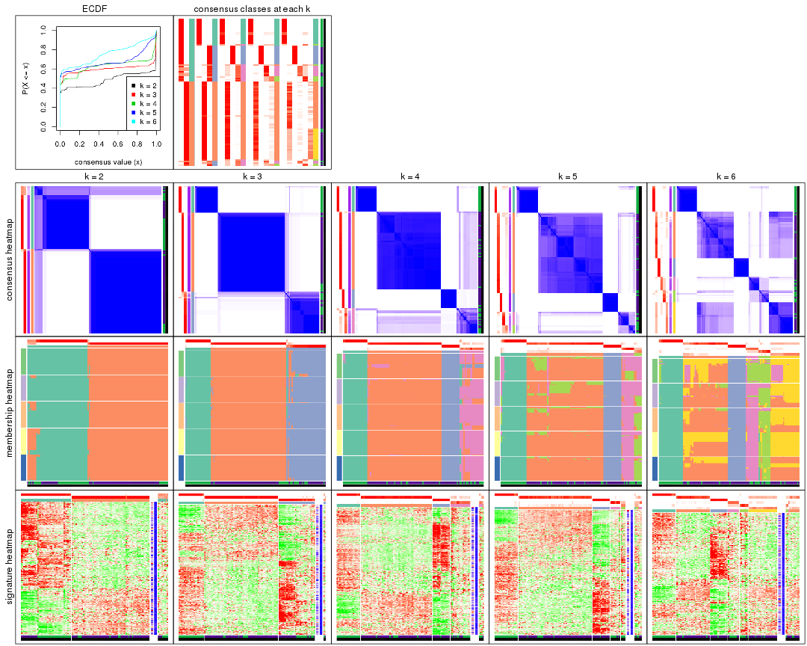
The plots are:
k and the heatmap of
predicted classes for each k.k.k.k.All the plots in panels can be made by individual functions and they are plotted later in this section.
select_partition_number() produces several plots showing different
statistics for choosing “optimized” k. There are following statistics:
k;k, the area increased is defined as \(A_k - A_{k-1}\).The detailed explanations of these statistics can be found in the cola vignette.
Generally speaking, lower PAC score, higher mean silhouette score or higher
concordance corresponds to better partition. Rand index and Jaccard index
measure how similar the current partition is compared to partition with k-1.
If they are too similar, we won't accept k is better than k-1.
select_partition_number(res)
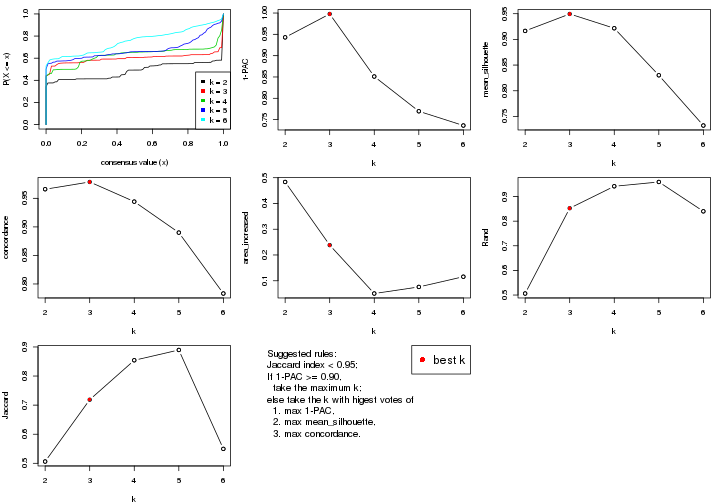
The numeric values for all these statistics can be obtained by get_stats().
get_stats(res)
#> k 1-PAC mean_silhouette concordance area_increased Rand Jaccard
#> 2 2 0.943 0.916 0.966 0.4835 0.506 0.506
#> 3 3 0.998 0.950 0.979 0.2383 0.853 0.719
#> 4 4 0.851 0.922 0.944 0.0504 0.942 0.854
#> 5 5 0.770 0.830 0.890 0.0759 0.959 0.890
#> 6 6 0.736 0.732 0.783 0.1157 0.840 0.550
suggest_best_k() suggests the best \(k\) based on these statistics. The rules are as follows:
NA.suggest_best_k(res)
#> [1] 3
#> attr(,"optional")
#> [1] 2
There is also optional best \(k\) = 2 that is worth to check.
Following shows the table of the partitions (You need to click the show/hide
code output link to see it). The membership matrix (columns with name p*)
is inferred by
clue::cl_consensus()
function with the SE method. Basically the value in the membership matrix
represents the probability to belong to a certain group. The finall class
label for an item is determined with the group with highest probability it
belongs to.
In get_classes() function, the entropy is calculated from the membership
matrix and the silhouette score is calculated from the consensus matrix.
cbind(get_classes(res, k = 2), get_membership(res, k = 2))
#> class entropy silhouette p1 p2
#> GSM555237 1 0.0000 0.928 1.000 0.000
#> GSM555239 1 0.0000 0.928 1.000 0.000
#> GSM555241 1 0.0000 0.928 1.000 0.000
#> GSM555243 1 0.0000 0.928 1.000 0.000
#> GSM555245 1 0.0000 0.928 1.000 0.000
#> GSM555247 1 0.0000 0.928 1.000 0.000
#> GSM555249 1 0.0000 0.928 1.000 0.000
#> GSM555251 1 0.0000 0.928 1.000 0.000
#> GSM555253 1 0.0000 0.928 1.000 0.000
#> GSM555255 1 0.0000 0.928 1.000 0.000
#> GSM555257 1 0.0000 0.928 1.000 0.000
#> GSM555259 1 0.2778 0.893 0.952 0.048
#> GSM555261 1 0.9933 0.278 0.548 0.452
#> GSM555263 2 0.9323 0.388 0.348 0.652
#> GSM555265 1 0.9933 0.278 0.548 0.452
#> GSM555267 1 0.9944 0.266 0.544 0.456
#> GSM555269 1 0.0672 0.922 0.992 0.008
#> GSM555271 1 0.0000 0.928 1.000 0.000
#> GSM555273 2 0.0376 0.987 0.004 0.996
#> GSM555275 2 0.0000 0.991 0.000 1.000
#> GSM555238 1 0.0000 0.928 1.000 0.000
#> GSM555240 1 0.0000 0.928 1.000 0.000
#> GSM555242 1 0.0000 0.928 1.000 0.000
#> GSM555244 1 0.0000 0.928 1.000 0.000
#> GSM555246 1 0.0000 0.928 1.000 0.000
#> GSM555248 1 0.0000 0.928 1.000 0.000
#> GSM555250 1 0.0000 0.928 1.000 0.000
#> GSM555252 1 0.0000 0.928 1.000 0.000
#> GSM555254 1 0.0000 0.928 1.000 0.000
#> GSM555256 1 0.0000 0.928 1.000 0.000
#> GSM555258 1 0.3431 0.880 0.936 0.064
#> GSM555260 1 0.9833 0.350 0.576 0.424
#> GSM555262 2 0.0000 0.991 0.000 1.000
#> GSM555264 1 0.0000 0.928 1.000 0.000
#> GSM555266 2 0.0000 0.991 0.000 1.000
#> GSM555268 2 0.0000 0.991 0.000 1.000
#> GSM555270 2 0.0000 0.991 0.000 1.000
#> GSM555272 1 0.3431 0.880 0.936 0.064
#> GSM555274 2 0.0000 0.991 0.000 1.000
#> GSM555276 2 0.0000 0.991 0.000 1.000
#> GSM555277 2 0.0000 0.991 0.000 1.000
#> GSM555279 1 0.9491 0.472 0.632 0.368
#> GSM555281 2 0.0000 0.991 0.000 1.000
#> GSM555283 2 0.0000 0.991 0.000 1.000
#> GSM555285 2 0.6531 0.778 0.168 0.832
#> GSM555287 1 0.9933 0.278 0.548 0.452
#> GSM555289 2 0.0000 0.991 0.000 1.000
#> GSM555291 2 0.0000 0.991 0.000 1.000
#> GSM555293 2 0.0000 0.991 0.000 1.000
#> GSM555295 2 0.0000 0.991 0.000 1.000
#> GSM555297 1 0.9833 0.350 0.576 0.424
#> GSM555299 1 0.0000 0.928 1.000 0.000
#> GSM555301 1 0.0000 0.928 1.000 0.000
#> GSM555303 1 0.0000 0.928 1.000 0.000
#> GSM555305 1 0.0000 0.928 1.000 0.000
#> GSM555307 2 0.0000 0.991 0.000 1.000
#> GSM555309 1 0.0000 0.928 1.000 0.000
#> GSM555311 2 0.0000 0.991 0.000 1.000
#> GSM555313 2 0.0000 0.991 0.000 1.000
#> GSM555315 2 0.0000 0.991 0.000 1.000
#> GSM555278 2 0.0000 0.991 0.000 1.000
#> GSM555280 2 0.0000 0.991 0.000 1.000
#> GSM555282 2 0.0000 0.991 0.000 1.000
#> GSM555284 2 0.0000 0.991 0.000 1.000
#> GSM555286 2 0.0000 0.991 0.000 1.000
#> GSM555288 2 0.0000 0.991 0.000 1.000
#> GSM555290 2 0.0000 0.991 0.000 1.000
#> GSM555292 2 0.0000 0.991 0.000 1.000
#> GSM555294 2 0.0000 0.991 0.000 1.000
#> GSM555296 2 0.0000 0.991 0.000 1.000
#> GSM555298 1 0.0000 0.928 1.000 0.000
#> GSM555300 1 0.0000 0.928 1.000 0.000
#> GSM555302 1 0.0000 0.928 1.000 0.000
#> GSM555304 1 0.0000 0.928 1.000 0.000
#> GSM555306 1 0.0000 0.928 1.000 0.000
#> GSM555308 1 0.0000 0.928 1.000 0.000
#> GSM555310 1 0.0000 0.928 1.000 0.000
#> GSM555312 2 0.0000 0.991 0.000 1.000
#> GSM555314 2 0.0376 0.987 0.004 0.996
#> GSM555316 2 0.0000 0.991 0.000 1.000
#> GSM555317 2 0.0000 0.991 0.000 1.000
#> GSM555319 2 0.0000 0.991 0.000 1.000
#> GSM555321 2 0.0000 0.991 0.000 1.000
#> GSM555323 2 0.0000 0.991 0.000 1.000
#> GSM555325 2 0.0000 0.991 0.000 1.000
#> GSM555327 2 0.0000 0.991 0.000 1.000
#> GSM555329 2 0.0000 0.991 0.000 1.000
#> GSM555331 2 0.0000 0.991 0.000 1.000
#> GSM555333 2 0.0000 0.991 0.000 1.000
#> GSM555335 2 0.0000 0.991 0.000 1.000
#> GSM555337 2 0.0000 0.991 0.000 1.000
#> GSM555339 2 0.0000 0.991 0.000 1.000
#> GSM555341 2 0.0000 0.991 0.000 1.000
#> GSM555343 2 0.0000 0.991 0.000 1.000
#> GSM555345 2 0.0376 0.987 0.004 0.996
#> GSM555318 2 0.0000 0.991 0.000 1.000
#> GSM555320 2 0.0000 0.991 0.000 1.000
#> GSM555322 2 0.0000 0.991 0.000 1.000
#> GSM555324 1 0.0000 0.928 1.000 0.000
#> GSM555326 2 0.0000 0.991 0.000 1.000
#> GSM555328 2 0.0000 0.991 0.000 1.000
#> GSM555330 2 0.0000 0.991 0.000 1.000
#> GSM555332 2 0.0000 0.991 0.000 1.000
#> GSM555334 2 0.0000 0.991 0.000 1.000
#> GSM555336 2 0.0000 0.991 0.000 1.000
#> GSM555338 2 0.0000 0.991 0.000 1.000
#> GSM555340 2 0.0000 0.991 0.000 1.000
#> GSM555342 2 0.0000 0.991 0.000 1.000
#> GSM555344 2 0.0000 0.991 0.000 1.000
#> GSM555346 2 0.0376 0.987 0.004 0.996
cbind(get_classes(res, k = 3), get_membership(res, k = 3))
#> class entropy silhouette p1 p2 p3
#> GSM555237 1 0.435 0.764 0.816 0.000 0.184
#> GSM555239 1 0.000 0.990 1.000 0.000 0.000
#> GSM555241 1 0.000 0.990 1.000 0.000 0.000
#> GSM555243 1 0.000 0.990 1.000 0.000 0.000
#> GSM555245 1 0.000 0.990 1.000 0.000 0.000
#> GSM555247 1 0.000 0.990 1.000 0.000 0.000
#> GSM555249 1 0.000 0.990 1.000 0.000 0.000
#> GSM555251 1 0.000 0.990 1.000 0.000 0.000
#> GSM555253 1 0.000 0.990 1.000 0.000 0.000
#> GSM555255 1 0.000 0.990 1.000 0.000 0.000
#> GSM555257 3 0.614 0.317 0.404 0.000 0.596
#> GSM555259 3 0.103 0.912 0.000 0.024 0.976
#> GSM555261 3 0.116 0.910 0.000 0.028 0.972
#> GSM555263 3 0.489 0.693 0.000 0.228 0.772
#> GSM555265 3 0.103 0.912 0.000 0.024 0.976
#> GSM555267 3 0.186 0.891 0.000 0.052 0.948
#> GSM555269 3 0.103 0.912 0.000 0.024 0.976
#> GSM555271 3 0.000 0.917 0.000 0.000 1.000
#> GSM555273 3 0.475 0.707 0.000 0.216 0.784
#> GSM555275 2 0.000 0.997 0.000 1.000 0.000
#> GSM555238 1 0.000 0.990 1.000 0.000 0.000
#> GSM555240 1 0.000 0.990 1.000 0.000 0.000
#> GSM555242 1 0.000 0.990 1.000 0.000 0.000
#> GSM555244 1 0.000 0.990 1.000 0.000 0.000
#> GSM555246 1 0.000 0.990 1.000 0.000 0.000
#> GSM555248 1 0.000 0.990 1.000 0.000 0.000
#> GSM555250 1 0.000 0.990 1.000 0.000 0.000
#> GSM555252 1 0.000 0.990 1.000 0.000 0.000
#> GSM555254 1 0.000 0.990 1.000 0.000 0.000
#> GSM555256 1 0.000 0.990 1.000 0.000 0.000
#> GSM555258 3 0.103 0.908 0.024 0.000 0.976
#> GSM555260 3 0.654 0.557 0.024 0.304 0.672
#> GSM555262 2 0.000 0.997 0.000 1.000 0.000
#> GSM555264 3 0.103 0.908 0.024 0.000 0.976
#> GSM555266 2 0.000 0.997 0.000 1.000 0.000
#> GSM555268 2 0.000 0.997 0.000 1.000 0.000
#> GSM555270 2 0.000 0.997 0.000 1.000 0.000
#> GSM555272 3 0.103 0.908 0.024 0.000 0.976
#> GSM555274 2 0.116 0.968 0.000 0.972 0.028
#> GSM555276 2 0.000 0.997 0.000 1.000 0.000
#> GSM555277 2 0.000 0.997 0.000 1.000 0.000
#> GSM555279 3 0.226 0.876 0.000 0.068 0.932
#> GSM555281 2 0.000 0.997 0.000 1.000 0.000
#> GSM555283 2 0.000 0.997 0.000 1.000 0.000
#> GSM555285 3 0.113 0.913 0.004 0.020 0.976
#> GSM555287 3 0.103 0.912 0.000 0.024 0.976
#> GSM555289 2 0.000 0.997 0.000 1.000 0.000
#> GSM555291 2 0.000 0.997 0.000 1.000 0.000
#> GSM555293 2 0.000 0.997 0.000 1.000 0.000
#> GSM555295 2 0.000 0.997 0.000 1.000 0.000
#> GSM555297 3 0.116 0.910 0.000 0.028 0.972
#> GSM555299 3 0.000 0.917 0.000 0.000 1.000
#> GSM555301 3 0.000 0.917 0.000 0.000 1.000
#> GSM555303 3 0.000 0.917 0.000 0.000 1.000
#> GSM555305 3 0.000 0.917 0.000 0.000 1.000
#> GSM555307 2 0.000 0.997 0.000 1.000 0.000
#> GSM555309 3 0.000 0.917 0.000 0.000 1.000
#> GSM555311 2 0.000 0.997 0.000 1.000 0.000
#> GSM555313 2 0.000 0.997 0.000 1.000 0.000
#> GSM555315 2 0.000 0.997 0.000 1.000 0.000
#> GSM555278 2 0.000 0.997 0.000 1.000 0.000
#> GSM555280 2 0.000 0.997 0.000 1.000 0.000
#> GSM555282 2 0.000 0.997 0.000 1.000 0.000
#> GSM555284 2 0.000 0.997 0.000 1.000 0.000
#> GSM555286 2 0.000 0.997 0.000 1.000 0.000
#> GSM555288 2 0.000 0.997 0.000 1.000 0.000
#> GSM555290 2 0.000 0.997 0.000 1.000 0.000
#> GSM555292 2 0.000 0.997 0.000 1.000 0.000
#> GSM555294 2 0.000 0.997 0.000 1.000 0.000
#> GSM555296 2 0.000 0.997 0.000 1.000 0.000
#> GSM555298 3 0.000 0.917 0.000 0.000 1.000
#> GSM555300 3 0.000 0.917 0.000 0.000 1.000
#> GSM555302 3 0.000 0.917 0.000 0.000 1.000
#> GSM555304 3 0.000 0.917 0.000 0.000 1.000
#> GSM555306 3 0.000 0.917 0.000 0.000 1.000
#> GSM555308 3 0.000 0.917 0.000 0.000 1.000
#> GSM555310 3 0.000 0.917 0.000 0.000 1.000
#> GSM555312 2 0.000 0.997 0.000 1.000 0.000
#> GSM555314 3 0.627 0.251 0.000 0.452 0.548
#> GSM555316 2 0.000 0.997 0.000 1.000 0.000
#> GSM555317 2 0.000 0.997 0.000 1.000 0.000
#> GSM555319 2 0.000 0.997 0.000 1.000 0.000
#> GSM555321 2 0.000 0.997 0.000 1.000 0.000
#> GSM555323 2 0.000 0.997 0.000 1.000 0.000
#> GSM555325 2 0.000 0.997 0.000 1.000 0.000
#> GSM555327 2 0.000 0.997 0.000 1.000 0.000
#> GSM555329 2 0.000 0.997 0.000 1.000 0.000
#> GSM555331 2 0.000 0.997 0.000 1.000 0.000
#> GSM555333 2 0.000 0.997 0.000 1.000 0.000
#> GSM555335 2 0.000 0.997 0.000 1.000 0.000
#> GSM555337 2 0.000 0.997 0.000 1.000 0.000
#> GSM555339 2 0.000 0.997 0.000 1.000 0.000
#> GSM555341 2 0.000 0.997 0.000 1.000 0.000
#> GSM555343 2 0.000 0.997 0.000 1.000 0.000
#> GSM555345 2 0.245 0.914 0.000 0.924 0.076
#> GSM555318 2 0.000 0.997 0.000 1.000 0.000
#> GSM555320 2 0.000 0.997 0.000 1.000 0.000
#> GSM555322 2 0.000 0.997 0.000 1.000 0.000
#> GSM555324 3 0.000 0.917 0.000 0.000 1.000
#> GSM555326 2 0.000 0.997 0.000 1.000 0.000
#> GSM555328 2 0.000 0.997 0.000 1.000 0.000
#> GSM555330 2 0.000 0.997 0.000 1.000 0.000
#> GSM555332 2 0.000 0.997 0.000 1.000 0.000
#> GSM555334 2 0.000 0.997 0.000 1.000 0.000
#> GSM555336 2 0.000 0.997 0.000 1.000 0.000
#> GSM555338 2 0.000 0.997 0.000 1.000 0.000
#> GSM555340 2 0.000 0.997 0.000 1.000 0.000
#> GSM555342 2 0.000 0.997 0.000 1.000 0.000
#> GSM555344 2 0.000 0.997 0.000 1.000 0.000
#> GSM555346 2 0.207 0.933 0.000 0.940 0.060
cbind(get_classes(res, k = 4), get_membership(res, k = 4))
#> class entropy silhouette p1 p2 p3 p4
#> GSM555237 4 0.5143 0.0843 0.456 0.000 0.004 0.540
#> GSM555239 1 0.0000 0.9913 1.000 0.000 0.000 0.000
#> GSM555241 1 0.0000 0.9913 1.000 0.000 0.000 0.000
#> GSM555243 1 0.0000 0.9913 1.000 0.000 0.000 0.000
#> GSM555245 1 0.0000 0.9913 1.000 0.000 0.000 0.000
#> GSM555247 1 0.0000 0.9913 1.000 0.000 0.000 0.000
#> GSM555249 1 0.0000 0.9913 1.000 0.000 0.000 0.000
#> GSM555251 1 0.0000 0.9913 1.000 0.000 0.000 0.000
#> GSM555253 1 0.0000 0.9913 1.000 0.000 0.000 0.000
#> GSM555255 1 0.0000 0.9913 1.000 0.000 0.000 0.000
#> GSM555257 4 0.4222 0.4644 0.272 0.000 0.000 0.728
#> GSM555259 4 0.4508 0.8011 0.000 0.184 0.036 0.780
#> GSM555261 4 0.4508 0.8011 0.000 0.184 0.036 0.780
#> GSM555263 4 0.4313 0.7716 0.000 0.260 0.004 0.736
#> GSM555265 4 0.4508 0.8011 0.000 0.184 0.036 0.780
#> GSM555267 4 0.4508 0.8011 0.000 0.184 0.036 0.780
#> GSM555269 4 0.4466 0.7993 0.000 0.180 0.036 0.784
#> GSM555271 3 0.0000 1.0000 0.000 0.000 1.000 0.000
#> GSM555273 4 0.5359 0.7268 0.000 0.288 0.036 0.676
#> GSM555275 2 0.0188 0.9781 0.000 0.996 0.000 0.004
#> GSM555238 1 0.0000 0.9913 1.000 0.000 0.000 0.000
#> GSM555240 1 0.2081 0.9122 0.916 0.000 0.000 0.084
#> GSM555242 1 0.1716 0.9318 0.936 0.000 0.000 0.064
#> GSM555244 1 0.0000 0.9913 1.000 0.000 0.000 0.000
#> GSM555246 1 0.0000 0.9913 1.000 0.000 0.000 0.000
#> GSM555248 1 0.0000 0.9913 1.000 0.000 0.000 0.000
#> GSM555250 1 0.0000 0.9913 1.000 0.000 0.000 0.000
#> GSM555252 1 0.0000 0.9913 1.000 0.000 0.000 0.000
#> GSM555254 1 0.0000 0.9913 1.000 0.000 0.000 0.000
#> GSM555256 1 0.0188 0.9886 0.996 0.000 0.000 0.004
#> GSM555258 4 0.1488 0.6176 0.012 0.000 0.032 0.956
#> GSM555260 4 0.6133 0.4813 0.012 0.384 0.032 0.572
#> GSM555262 2 0.0188 0.9784 0.000 0.996 0.000 0.004
#> GSM555264 4 0.4590 0.7053 0.000 0.192 0.036 0.772
#> GSM555266 2 0.0336 0.9780 0.000 0.992 0.000 0.008
#> GSM555268 2 0.0188 0.9775 0.000 0.996 0.000 0.004
#> GSM555270 2 0.0188 0.9782 0.000 0.996 0.000 0.004
#> GSM555272 4 0.1488 0.6176 0.012 0.000 0.032 0.956
#> GSM555274 2 0.0469 0.9744 0.000 0.988 0.000 0.012
#> GSM555276 2 0.0921 0.9663 0.000 0.972 0.000 0.028
#> GSM555277 2 0.1022 0.9661 0.000 0.968 0.000 0.032
#> GSM555279 4 0.4466 0.7993 0.000 0.180 0.036 0.784
#> GSM555281 2 0.0592 0.9721 0.000 0.984 0.000 0.016
#> GSM555283 2 0.0188 0.9784 0.000 0.996 0.000 0.004
#> GSM555285 4 0.5334 0.7280 0.000 0.284 0.036 0.680
#> GSM555287 4 0.5025 0.7776 0.000 0.252 0.032 0.716
#> GSM555289 2 0.1022 0.9636 0.000 0.968 0.000 0.032
#> GSM555291 2 0.0188 0.9784 0.000 0.996 0.000 0.004
#> GSM555293 2 0.0188 0.9784 0.000 0.996 0.000 0.004
#> GSM555295 2 0.1211 0.9470 0.000 0.960 0.000 0.040
#> GSM555297 4 0.4508 0.8011 0.000 0.184 0.036 0.780
#> GSM555299 3 0.0000 1.0000 0.000 0.000 1.000 0.000
#> GSM555301 3 0.0000 1.0000 0.000 0.000 1.000 0.000
#> GSM555303 3 0.0000 1.0000 0.000 0.000 1.000 0.000
#> GSM555305 3 0.0000 1.0000 0.000 0.000 1.000 0.000
#> GSM555307 2 0.1022 0.9669 0.000 0.968 0.000 0.032
#> GSM555309 3 0.0000 1.0000 0.000 0.000 1.000 0.000
#> GSM555311 2 0.0000 0.9784 0.000 1.000 0.000 0.000
#> GSM555313 2 0.0188 0.9784 0.000 0.996 0.000 0.004
#> GSM555315 2 0.0000 0.9784 0.000 1.000 0.000 0.000
#> GSM555278 2 0.0188 0.9784 0.000 0.996 0.000 0.004
#> GSM555280 2 0.0188 0.9784 0.000 0.996 0.000 0.004
#> GSM555282 2 0.0188 0.9784 0.000 0.996 0.000 0.004
#> GSM555284 2 0.0188 0.9775 0.000 0.996 0.000 0.004
#> GSM555286 2 0.0188 0.9784 0.000 0.996 0.000 0.004
#> GSM555288 2 0.1474 0.9328 0.000 0.948 0.000 0.052
#> GSM555290 2 0.0592 0.9735 0.000 0.984 0.000 0.016
#> GSM555292 2 0.0000 0.9784 0.000 1.000 0.000 0.000
#> GSM555294 2 0.0592 0.9701 0.000 0.984 0.000 0.016
#> GSM555296 2 0.0469 0.9757 0.000 0.988 0.000 0.012
#> GSM555298 3 0.0000 1.0000 0.000 0.000 1.000 0.000
#> GSM555300 3 0.0000 1.0000 0.000 0.000 1.000 0.000
#> GSM555302 3 0.0000 1.0000 0.000 0.000 1.000 0.000
#> GSM555304 3 0.0000 1.0000 0.000 0.000 1.000 0.000
#> GSM555306 3 0.0000 1.0000 0.000 0.000 1.000 0.000
#> GSM555308 3 0.0000 1.0000 0.000 0.000 1.000 0.000
#> GSM555310 3 0.0000 1.0000 0.000 0.000 1.000 0.000
#> GSM555312 2 0.0336 0.9781 0.000 0.992 0.000 0.008
#> GSM555314 4 0.4535 0.7473 0.000 0.292 0.004 0.704
#> GSM555316 2 0.1022 0.9661 0.000 0.968 0.000 0.032
#> GSM555317 2 0.0921 0.9687 0.000 0.972 0.000 0.028
#> GSM555319 2 0.0188 0.9775 0.000 0.996 0.000 0.004
#> GSM555321 2 0.0188 0.9775 0.000 0.996 0.000 0.004
#> GSM555323 2 0.0000 0.9784 0.000 1.000 0.000 0.000
#> GSM555325 2 0.0592 0.9701 0.000 0.984 0.000 0.016
#> GSM555327 2 0.1022 0.9636 0.000 0.968 0.000 0.032
#> GSM555329 2 0.0188 0.9775 0.000 0.996 0.000 0.004
#> GSM555331 2 0.0188 0.9784 0.000 0.996 0.000 0.004
#> GSM555333 2 0.0188 0.9781 0.000 0.996 0.000 0.004
#> GSM555335 2 0.0000 0.9784 0.000 1.000 0.000 0.000
#> GSM555337 2 0.0188 0.9784 0.000 0.996 0.000 0.004
#> GSM555339 2 0.0188 0.9784 0.000 0.996 0.000 0.004
#> GSM555341 2 0.0000 0.9784 0.000 1.000 0.000 0.000
#> GSM555343 2 0.0000 0.9784 0.000 1.000 0.000 0.000
#> GSM555345 2 0.4543 0.3565 0.000 0.676 0.000 0.324
#> GSM555318 2 0.1022 0.9636 0.000 0.968 0.000 0.032
#> GSM555320 2 0.0336 0.9757 0.000 0.992 0.000 0.008
#> GSM555322 2 0.1211 0.9616 0.000 0.960 0.000 0.040
#> GSM555324 3 0.0000 1.0000 0.000 0.000 1.000 0.000
#> GSM555326 2 0.0000 0.9784 0.000 1.000 0.000 0.000
#> GSM555328 2 0.0188 0.9784 0.000 0.996 0.000 0.004
#> GSM555330 2 0.0188 0.9784 0.000 0.996 0.000 0.004
#> GSM555332 2 0.0921 0.9663 0.000 0.972 0.000 0.028
#> GSM555334 2 0.1211 0.9607 0.000 0.960 0.000 0.040
#> GSM555336 2 0.0469 0.9731 0.000 0.988 0.000 0.012
#> GSM555338 2 0.0921 0.9663 0.000 0.972 0.000 0.028
#> GSM555340 2 0.0000 0.9784 0.000 1.000 0.000 0.000
#> GSM555342 2 0.0592 0.9701 0.000 0.984 0.000 0.016
#> GSM555344 2 0.1022 0.9636 0.000 0.968 0.000 0.032
#> GSM555346 4 0.5203 0.5476 0.000 0.416 0.008 0.576
cbind(get_classes(res, k = 5), get_membership(res, k = 5))
#> class entropy silhouette p1 p2 p3 p4 p5
#> GSM555237 1 0.6809 -0.3391 0.364 0.000 0.000 0.332 0.304
#> GSM555239 1 0.0000 0.9422 1.000 0.000 0.000 0.000 0.000
#> GSM555241 1 0.0000 0.9422 1.000 0.000 0.000 0.000 0.000
#> GSM555243 1 0.0000 0.9422 1.000 0.000 0.000 0.000 0.000
#> GSM555245 1 0.0000 0.9422 1.000 0.000 0.000 0.000 0.000
#> GSM555247 1 0.0000 0.9422 1.000 0.000 0.000 0.000 0.000
#> GSM555249 1 0.0000 0.9422 1.000 0.000 0.000 0.000 0.000
#> GSM555251 1 0.0000 0.9422 1.000 0.000 0.000 0.000 0.000
#> GSM555253 1 0.0000 0.9422 1.000 0.000 0.000 0.000 0.000
#> GSM555255 1 0.0000 0.9422 1.000 0.000 0.000 0.000 0.000
#> GSM555257 5 0.4608 0.6543 0.012 0.008 0.000 0.336 0.644
#> GSM555259 4 0.0162 0.7180 0.000 0.000 0.000 0.996 0.004
#> GSM555261 4 0.0579 0.7154 0.000 0.008 0.000 0.984 0.008
#> GSM555263 4 0.2886 0.5026 0.000 0.148 0.000 0.844 0.008
#> GSM555265 4 0.0000 0.7188 0.000 0.000 0.000 1.000 0.000
#> GSM555267 4 0.0000 0.7188 0.000 0.000 0.000 1.000 0.000
#> GSM555269 4 0.0000 0.7188 0.000 0.000 0.000 1.000 0.000
#> GSM555271 3 0.0324 0.9931 0.000 0.000 0.992 0.004 0.004
#> GSM555273 5 0.6749 0.3725 0.000 0.268 0.000 0.336 0.396
#> GSM555275 2 0.0510 0.8972 0.000 0.984 0.000 0.000 0.016
#> GSM555238 1 0.0000 0.9422 1.000 0.000 0.000 0.000 0.000
#> GSM555240 1 0.4262 0.7109 0.776 0.000 0.000 0.124 0.100
#> GSM555242 1 0.3791 0.7543 0.812 0.000 0.000 0.112 0.076
#> GSM555244 1 0.0000 0.9422 1.000 0.000 0.000 0.000 0.000
#> GSM555246 1 0.0000 0.9422 1.000 0.000 0.000 0.000 0.000
#> GSM555248 1 0.0000 0.9422 1.000 0.000 0.000 0.000 0.000
#> GSM555250 1 0.0000 0.9422 1.000 0.000 0.000 0.000 0.000
#> GSM555252 1 0.0000 0.9422 1.000 0.000 0.000 0.000 0.000
#> GSM555254 1 0.0000 0.9422 1.000 0.000 0.000 0.000 0.000
#> GSM555256 1 0.0451 0.9336 0.988 0.000 0.000 0.004 0.008
#> GSM555258 5 0.4196 0.6489 0.000 0.004 0.000 0.356 0.640
#> GSM555260 2 0.6574 -0.1329 0.000 0.468 0.000 0.288 0.244
#> GSM555262 2 0.0510 0.8972 0.000 0.984 0.000 0.000 0.016
#> GSM555264 5 0.5160 0.6558 0.000 0.056 0.000 0.336 0.608
#> GSM555266 2 0.1851 0.8775 0.000 0.912 0.000 0.000 0.088
#> GSM555268 2 0.1908 0.8736 0.000 0.908 0.000 0.000 0.092
#> GSM555270 2 0.1197 0.8946 0.000 0.952 0.000 0.000 0.048
#> GSM555272 5 0.4196 0.6489 0.000 0.004 0.000 0.356 0.640
#> GSM555274 2 0.1608 0.8938 0.000 0.928 0.000 0.000 0.072
#> GSM555276 2 0.3305 0.7922 0.000 0.776 0.000 0.000 0.224
#> GSM555277 2 0.2852 0.8367 0.000 0.828 0.000 0.000 0.172
#> GSM555279 4 0.3326 0.4256 0.000 0.152 0.000 0.824 0.024
#> GSM555281 2 0.0794 0.8958 0.000 0.972 0.000 0.000 0.028
#> GSM555283 2 0.1197 0.8946 0.000 0.952 0.000 0.000 0.048
#> GSM555285 5 0.6550 0.4742 0.000 0.212 0.000 0.336 0.452
#> GSM555287 4 0.0963 0.6786 0.000 0.036 0.000 0.964 0.000
#> GSM555289 2 0.2813 0.8392 0.000 0.832 0.000 0.000 0.168
#> GSM555291 2 0.0963 0.8982 0.000 0.964 0.000 0.000 0.036
#> GSM555293 2 0.1851 0.8753 0.000 0.912 0.000 0.000 0.088
#> GSM555295 2 0.1041 0.8937 0.000 0.964 0.000 0.004 0.032
#> GSM555297 4 0.0290 0.7166 0.000 0.000 0.000 0.992 0.008
#> GSM555299 3 0.0000 0.9986 0.000 0.000 1.000 0.000 0.000
#> GSM555301 3 0.0324 0.9936 0.000 0.000 0.992 0.004 0.004
#> GSM555303 3 0.0000 0.9986 0.000 0.000 1.000 0.000 0.000
#> GSM555305 3 0.0000 0.9986 0.000 0.000 1.000 0.000 0.000
#> GSM555307 2 0.2561 0.8547 0.000 0.856 0.000 0.000 0.144
#> GSM555309 3 0.0000 0.9986 0.000 0.000 1.000 0.000 0.000
#> GSM555311 2 0.0510 0.8972 0.000 0.984 0.000 0.000 0.016
#> GSM555313 2 0.0510 0.8972 0.000 0.984 0.000 0.000 0.016
#> GSM555315 2 0.0510 0.8972 0.000 0.984 0.000 0.000 0.016
#> GSM555278 2 0.1908 0.8736 0.000 0.908 0.000 0.000 0.092
#> GSM555280 2 0.1197 0.8946 0.000 0.952 0.000 0.000 0.048
#> GSM555282 2 0.1410 0.8942 0.000 0.940 0.000 0.000 0.060
#> GSM555284 2 0.0510 0.8972 0.000 0.984 0.000 0.000 0.016
#> GSM555286 2 0.2424 0.8849 0.000 0.868 0.000 0.000 0.132
#> GSM555288 2 0.0609 0.8971 0.000 0.980 0.000 0.000 0.020
#> GSM555290 2 0.2516 0.8599 0.000 0.860 0.000 0.000 0.140
#> GSM555292 2 0.1851 0.8838 0.000 0.912 0.000 0.000 0.088
#> GSM555294 2 0.1908 0.8736 0.000 0.908 0.000 0.000 0.092
#> GSM555296 2 0.0609 0.8983 0.000 0.980 0.000 0.000 0.020
#> GSM555298 3 0.0000 0.9986 0.000 0.000 1.000 0.000 0.000
#> GSM555300 3 0.0000 0.9986 0.000 0.000 1.000 0.000 0.000
#> GSM555302 3 0.0000 0.9986 0.000 0.000 1.000 0.000 0.000
#> GSM555304 3 0.0000 0.9986 0.000 0.000 1.000 0.000 0.000
#> GSM555306 3 0.0000 0.9986 0.000 0.000 1.000 0.000 0.000
#> GSM555308 3 0.0000 0.9986 0.000 0.000 1.000 0.000 0.000
#> GSM555310 3 0.0162 0.9960 0.000 0.000 0.996 0.004 0.000
#> GSM555312 2 0.2179 0.8745 0.000 0.888 0.000 0.000 0.112
#> GSM555314 4 0.5220 -0.0199 0.000 0.440 0.000 0.516 0.044
#> GSM555316 2 0.2690 0.8473 0.000 0.844 0.000 0.000 0.156
#> GSM555317 2 0.1197 0.8946 0.000 0.952 0.000 0.000 0.048
#> GSM555319 2 0.1851 0.8753 0.000 0.912 0.000 0.000 0.088
#> GSM555321 2 0.1792 0.8765 0.000 0.916 0.000 0.000 0.084
#> GSM555323 2 0.0703 0.8980 0.000 0.976 0.000 0.000 0.024
#> GSM555325 2 0.1908 0.8736 0.000 0.908 0.000 0.000 0.092
#> GSM555327 2 0.3336 0.7882 0.000 0.772 0.000 0.000 0.228
#> GSM555329 2 0.1792 0.8765 0.000 0.916 0.000 0.000 0.084
#> GSM555331 2 0.0162 0.8974 0.000 0.996 0.000 0.000 0.004
#> GSM555333 2 0.0510 0.8972 0.000 0.984 0.000 0.000 0.016
#> GSM555335 2 0.0510 0.8980 0.000 0.984 0.000 0.000 0.016
#> GSM555337 2 0.1851 0.8756 0.000 0.912 0.000 0.000 0.088
#> GSM555339 2 0.1270 0.8943 0.000 0.948 0.000 0.000 0.052
#> GSM555341 2 0.1270 0.8943 0.000 0.948 0.000 0.000 0.052
#> GSM555343 2 0.1851 0.8753 0.000 0.912 0.000 0.000 0.088
#> GSM555345 2 0.5375 0.6497 0.000 0.668 0.000 0.176 0.156
#> GSM555318 2 0.3336 0.7914 0.000 0.772 0.000 0.000 0.228
#> GSM555320 2 0.1908 0.8736 0.000 0.908 0.000 0.000 0.092
#> GSM555322 2 0.2773 0.8626 0.000 0.836 0.000 0.000 0.164
#> GSM555324 3 0.0000 0.9986 0.000 0.000 1.000 0.000 0.000
#> GSM555326 2 0.1478 0.8988 0.000 0.936 0.000 0.000 0.064
#> GSM555328 2 0.1197 0.8946 0.000 0.952 0.000 0.000 0.048
#> GSM555330 2 0.1197 0.8946 0.000 0.952 0.000 0.000 0.048
#> GSM555332 2 0.3336 0.7913 0.000 0.772 0.000 0.000 0.228
#> GSM555334 2 0.3491 0.7851 0.000 0.768 0.000 0.004 0.228
#> GSM555336 2 0.1851 0.8753 0.000 0.912 0.000 0.000 0.088
#> GSM555338 2 0.2471 0.8592 0.000 0.864 0.000 0.000 0.136
#> GSM555340 2 0.1851 0.8753 0.000 0.912 0.000 0.000 0.088
#> GSM555342 2 0.1908 0.8736 0.000 0.908 0.000 0.000 0.092
#> GSM555344 2 0.3395 0.7833 0.000 0.764 0.000 0.000 0.236
#> GSM555346 2 0.4479 0.5860 0.000 0.700 0.000 0.264 0.036
cbind(get_classes(res, k = 6), get_membership(res, k = 6))
#> class entropy silhouette p1 p2 p3 p4 p5 p6
#> GSM555237 5 0.3679 0.504 0.200 0.000 0.000 0.000 0.760 0.040
#> GSM555239 1 0.0000 0.972 1.000 0.000 0.000 0.000 0.000 0.000
#> GSM555241 1 0.0000 0.972 1.000 0.000 0.000 0.000 0.000 0.000
#> GSM555243 1 0.0000 0.972 1.000 0.000 0.000 0.000 0.000 0.000
#> GSM555245 1 0.0000 0.972 1.000 0.000 0.000 0.000 0.000 0.000
#> GSM555247 1 0.0000 0.972 1.000 0.000 0.000 0.000 0.000 0.000
#> GSM555249 1 0.0000 0.972 1.000 0.000 0.000 0.000 0.000 0.000
#> GSM555251 1 0.0000 0.972 1.000 0.000 0.000 0.000 0.000 0.000
#> GSM555253 1 0.0000 0.972 1.000 0.000 0.000 0.000 0.000 0.000
#> GSM555255 1 0.0000 0.972 1.000 0.000 0.000 0.000 0.000 0.000
#> GSM555257 5 0.1442 0.668 0.012 0.000 0.000 0.004 0.944 0.040
#> GSM555259 4 0.3081 0.875 0.000 0.000 0.000 0.776 0.220 0.004
#> GSM555261 4 0.3245 0.870 0.000 0.000 0.000 0.764 0.228 0.008
#> GSM555263 4 0.3643 0.846 0.000 0.024 0.000 0.768 0.200 0.008
#> GSM555265 4 0.2941 0.876 0.000 0.000 0.000 0.780 0.220 0.000
#> GSM555267 4 0.2941 0.876 0.000 0.000 0.000 0.780 0.220 0.000
#> GSM555269 4 0.2941 0.876 0.000 0.000 0.000 0.780 0.220 0.000
#> GSM555271 3 0.0725 0.980 0.000 0.000 0.976 0.012 0.000 0.012
#> GSM555273 5 0.2009 0.636 0.000 0.084 0.000 0.004 0.904 0.008
#> GSM555275 6 0.5629 0.751 0.000 0.404 0.000 0.148 0.000 0.448
#> GSM555238 1 0.0146 0.969 0.996 0.000 0.000 0.000 0.004 0.000
#> GSM555240 1 0.3243 0.718 0.780 0.000 0.000 0.004 0.208 0.008
#> GSM555242 1 0.2805 0.761 0.812 0.000 0.000 0.004 0.184 0.000
#> GSM555244 1 0.0000 0.972 1.000 0.000 0.000 0.000 0.000 0.000
#> GSM555246 1 0.0000 0.972 1.000 0.000 0.000 0.000 0.000 0.000
#> GSM555248 1 0.0000 0.972 1.000 0.000 0.000 0.000 0.000 0.000
#> GSM555250 1 0.0000 0.972 1.000 0.000 0.000 0.000 0.000 0.000
#> GSM555252 1 0.0146 0.969 0.996 0.000 0.000 0.000 0.004 0.000
#> GSM555254 1 0.0000 0.972 1.000 0.000 0.000 0.000 0.000 0.000
#> GSM555256 1 0.1152 0.935 0.952 0.000 0.000 0.004 0.044 0.000
#> GSM555258 5 0.0603 0.677 0.000 0.004 0.000 0.000 0.980 0.016
#> GSM555260 5 0.5628 0.158 0.000 0.220 0.000 0.000 0.540 0.240
#> GSM555262 2 0.5617 -0.671 0.000 0.464 0.000 0.148 0.000 0.388
#> GSM555264 5 0.2300 0.655 0.000 0.000 0.000 0.000 0.856 0.144
#> GSM555266 6 0.3634 0.829 0.000 0.356 0.000 0.000 0.000 0.644
#> GSM555268 6 0.3592 0.836 0.000 0.344 0.000 0.000 0.000 0.656
#> GSM555270 2 0.2340 0.674 0.000 0.852 0.000 0.000 0.000 0.148
#> GSM555272 5 0.0603 0.677 0.000 0.004 0.000 0.000 0.980 0.016
#> GSM555274 2 0.5592 -0.631 0.000 0.484 0.000 0.148 0.000 0.368
#> GSM555276 2 0.1285 0.731 0.000 0.944 0.000 0.052 0.000 0.004
#> GSM555277 2 0.1049 0.732 0.000 0.960 0.000 0.032 0.000 0.008
#> GSM555279 4 0.4620 0.760 0.000 0.072 0.000 0.696 0.220 0.012
#> GSM555281 6 0.5627 0.756 0.000 0.400 0.000 0.148 0.000 0.452
#> GSM555283 2 0.2260 0.683 0.000 0.860 0.000 0.000 0.000 0.140
#> GSM555285 5 0.2540 0.665 0.000 0.020 0.000 0.004 0.872 0.104
#> GSM555287 4 0.3801 0.853 0.000 0.016 0.000 0.740 0.232 0.012
#> GSM555289 2 0.1471 0.727 0.000 0.932 0.000 0.064 0.000 0.004
#> GSM555291 2 0.5544 -0.599 0.000 0.500 0.000 0.144 0.000 0.356
#> GSM555293 6 0.3592 0.836 0.000 0.344 0.000 0.000 0.000 0.656
#> GSM555295 6 0.5627 0.743 0.000 0.400 0.000 0.148 0.000 0.452
#> GSM555297 4 0.3081 0.875 0.000 0.000 0.000 0.776 0.220 0.004
#> GSM555299 3 0.0000 0.997 0.000 0.000 1.000 0.000 0.000 0.000
#> GSM555301 3 0.0405 0.990 0.000 0.000 0.988 0.004 0.000 0.008
#> GSM555303 3 0.0000 0.997 0.000 0.000 1.000 0.000 0.000 0.000
#> GSM555305 3 0.0000 0.997 0.000 0.000 1.000 0.000 0.000 0.000
#> GSM555307 2 0.0520 0.731 0.000 0.984 0.000 0.008 0.000 0.008
#> GSM555309 3 0.0000 0.997 0.000 0.000 1.000 0.000 0.000 0.000
#> GSM555311 6 0.5603 0.771 0.000 0.376 0.000 0.148 0.000 0.476
#> GSM555313 6 0.5631 0.746 0.000 0.408 0.000 0.148 0.000 0.444
#> GSM555315 6 0.5597 0.771 0.000 0.372 0.000 0.148 0.000 0.480
#> GSM555278 6 0.3607 0.834 0.000 0.348 0.000 0.000 0.000 0.652
#> GSM555280 2 0.2300 0.680 0.000 0.856 0.000 0.000 0.000 0.144
#> GSM555282 2 0.2446 0.649 0.000 0.864 0.000 0.124 0.000 0.012
#> GSM555284 6 0.5603 0.771 0.000 0.376 0.000 0.148 0.000 0.476
#> GSM555286 2 0.2416 0.670 0.000 0.844 0.000 0.000 0.000 0.156
#> GSM555288 6 0.5624 0.755 0.000 0.396 0.000 0.148 0.000 0.456
#> GSM555290 2 0.2983 0.690 0.000 0.832 0.000 0.032 0.000 0.136
#> GSM555292 2 0.2219 0.686 0.000 0.864 0.000 0.000 0.000 0.136
#> GSM555294 6 0.3592 0.836 0.000 0.344 0.000 0.000 0.000 0.656
#> GSM555296 2 0.1219 0.727 0.000 0.948 0.000 0.000 0.004 0.048
#> GSM555298 3 0.0000 0.997 0.000 0.000 1.000 0.000 0.000 0.000
#> GSM555300 3 0.0000 0.997 0.000 0.000 1.000 0.000 0.000 0.000
#> GSM555302 3 0.0000 0.997 0.000 0.000 1.000 0.000 0.000 0.000
#> GSM555304 3 0.0000 0.997 0.000 0.000 1.000 0.000 0.000 0.000
#> GSM555306 3 0.0000 0.997 0.000 0.000 1.000 0.000 0.000 0.000
#> GSM555308 3 0.0000 0.997 0.000 0.000 1.000 0.000 0.000 0.000
#> GSM555310 3 0.0146 0.995 0.000 0.000 0.996 0.004 0.000 0.000
#> GSM555312 2 0.0603 0.731 0.000 0.980 0.000 0.016 0.000 0.004
#> GSM555314 4 0.4736 0.262 0.000 0.228 0.000 0.688 0.064 0.020
#> GSM555316 2 0.1327 0.729 0.000 0.936 0.000 0.064 0.000 0.000
#> GSM555317 2 0.0000 0.733 0.000 1.000 0.000 0.000 0.000 0.000
#> GSM555319 6 0.3828 0.699 0.000 0.440 0.000 0.000 0.000 0.560
#> GSM555321 2 0.3309 0.465 0.000 0.720 0.000 0.000 0.000 0.280
#> GSM555323 2 0.4047 -0.186 0.000 0.604 0.000 0.012 0.000 0.384
#> GSM555325 6 0.3578 0.833 0.000 0.340 0.000 0.000 0.000 0.660
#> GSM555327 2 0.1643 0.722 0.000 0.924 0.000 0.068 0.000 0.008
#> GSM555329 2 0.3482 0.349 0.000 0.684 0.000 0.000 0.000 0.316
#> GSM555331 6 0.4093 0.681 0.000 0.476 0.000 0.008 0.000 0.516
#> GSM555333 6 0.5631 0.746 0.000 0.408 0.000 0.148 0.000 0.444
#> GSM555335 2 0.5334 -0.609 0.000 0.512 0.000 0.112 0.000 0.376
#> GSM555337 6 0.3592 0.836 0.000 0.344 0.000 0.000 0.000 0.656
#> GSM555339 2 0.0363 0.733 0.000 0.988 0.000 0.012 0.000 0.000
#> GSM555341 2 0.4235 0.257 0.000 0.724 0.000 0.084 0.000 0.192
#> GSM555343 6 0.3592 0.836 0.000 0.344 0.000 0.000 0.000 0.656
#> GSM555345 2 0.2715 0.689 0.000 0.872 0.000 0.088 0.028 0.012
#> GSM555318 2 0.1866 0.713 0.000 0.908 0.000 0.084 0.000 0.008
#> GSM555320 6 0.3578 0.833 0.000 0.340 0.000 0.000 0.000 0.660
#> GSM555322 2 0.3551 0.673 0.000 0.792 0.000 0.060 0.000 0.148
#> GSM555324 3 0.0000 0.997 0.000 0.000 1.000 0.000 0.000 0.000
#> GSM555326 2 0.2527 0.653 0.000 0.832 0.000 0.000 0.000 0.168
#> GSM555328 2 0.1814 0.709 0.000 0.900 0.000 0.000 0.000 0.100
#> GSM555330 2 0.1141 0.729 0.000 0.948 0.000 0.000 0.000 0.052
#> GSM555332 2 0.1333 0.730 0.000 0.944 0.000 0.048 0.000 0.008
#> GSM555334 2 0.1701 0.720 0.000 0.920 0.000 0.072 0.000 0.008
#> GSM555336 6 0.3592 0.836 0.000 0.344 0.000 0.000 0.000 0.656
#> GSM555338 2 0.0865 0.733 0.000 0.964 0.000 0.000 0.000 0.036
#> GSM555340 6 0.3592 0.836 0.000 0.344 0.000 0.000 0.000 0.656
#> GSM555342 6 0.3592 0.836 0.000 0.344 0.000 0.000 0.000 0.656
#> GSM555344 2 0.1643 0.722 0.000 0.924 0.000 0.068 0.000 0.008
#> GSM555346 5 0.4253 0.368 0.000 0.284 0.000 0.000 0.672 0.044
Heatmaps for the consensus matrix. It visualizes the probability of two samples to be in a same group.
consensus_heatmap(res, k = 2)
consensus_heatmap(res, k = 3)
consensus_heatmap(res, k = 4)
consensus_heatmap(res, k = 5)

consensus_heatmap(res, k = 6)
Heatmaps for the membership of samples in all partitions to see how consistent they are:
membership_heatmap(res, k = 2)
membership_heatmap(res, k = 3)
membership_heatmap(res, k = 4)
membership_heatmap(res, k = 5)
membership_heatmap(res, k = 6)
As soon as we have had the classes for columns, we can look for signatures which are significantly different between classes which can be candidate marks for certain classes. Following are the heatmaps for signatures.
Signature heatmaps where rows are scaled:
get_signatures(res, k = 2)
get_signatures(res, k = 3)
get_signatures(res, k = 4)
get_signatures(res, k = 5)
get_signatures(res, k = 6)
Signature heatmaps where rows are not scaled:
get_signatures(res, k = 2, scale_rows = FALSE)
get_signatures(res, k = 3, scale_rows = FALSE)
get_signatures(res, k = 4, scale_rows = FALSE)
get_signatures(res, k = 5, scale_rows = FALSE)
get_signatures(res, k = 6, scale_rows = FALSE)

Compare the overlap of signatures from different k:
compare_signatures(res)
get_signature() returns a data frame invisibly. TO get the list of signatures, the function
call should be assigned to a variable explicitly. In following code, if plot argument is set
to FALSE, no heatmap is plotted while only the differential analysis is performed.
# code only for demonstration
tb = get_signature(res, k = ..., plot = FALSE)
An example of the output of tb is:
#> which_row fdr mean_1 mean_2 scaled_mean_1 scaled_mean_2 km
#> 1 38 0.042760348 8.373488 9.131774 -0.5533452 0.5164555 1
#> 2 40 0.018707592 7.106213 8.469186 -0.6173731 0.5762149 1
#> 3 55 0.019134737 10.221463 11.207825 -0.6159697 0.5749050 1
#> 4 59 0.006059896 5.921854 7.869574 -0.6899429 0.6439467 1
#> 5 60 0.018055526 8.928898 10.211722 -0.6204761 0.5791110 1
#> 6 98 0.009384629 15.714769 14.887706 0.6635654 -0.6193277 2
...
The columns in tb are:
which_row: row indices corresponding to the input matrix.fdr: FDR for the differential test. mean_x: The mean value in group x.scaled_mean_x: The mean value in group x after rows are scaled.km: Row groups if k-means clustering is applied to rows.UMAP plot which shows how samples are separated.
dimension_reduction(res, k = 2, method = "UMAP")
dimension_reduction(res, k = 3, method = "UMAP")
dimension_reduction(res, k = 4, method = "UMAP")
dimension_reduction(res, k = 5, method = "UMAP")
dimension_reduction(res, k = 6, method = "UMAP")
Following heatmap shows how subgroups are split when increasing k:
collect_classes(res)
Test correlation between subgroups and known annotations. If the known annotation is numeric, one-way ANOVA test is applied, and if the known annotation is discrete, chi-squared contingency table test is applied.
test_to_known_factors(res)
#> n disease.state(p) agent(p) k
#> ATC:mclust 102 5.49e-09 1.0000 2
#> ATC:mclust 108 3.89e-13 0.5258 3
#> ATC:mclust 106 1.42e-13 0.3931 4
#> ATC:mclust 104 3.06e-14 0.0453 5
#> ATC:mclust 99 1.96e-12 0.0136 6
If matrix rows can be associated to genes, consider to use GO_Enrichment(res,
...) to perform function enrichment for the signature genes.
The object with results only for a single top-value method and a single partition method can be extracted as:
res = res_list["ATC", "NMF"]
# you can also extract it by
# res = res_list["ATC:NMF"]
A summary of res and all the functions that can be applied to it:
res
#> A 'ConsensusPartition' object with k = 2, 3, 4, 5, 6.
#> On a matrix with 11994 rows and 110 columns.
#> Top rows (1000, 2000, 3000, 4000, 5000) are extracted by 'ATC' method.
#> Subgroups are detected by 'NMF' method.
#> Performed in total 1250 partitions by row resampling.
#> Best k for subgroups seems to be 2.
#>
#> Following methods can be applied to this 'ConsensusPartition' object:
#> [1] "cola_report" "collect_classes" "collect_plots"
#> [4] "collect_stats" "colnames" "compare_signatures"
#> [7] "consensus_heatmap" "dimension_reduction" "functional_enrichment"
#> [10] "get_anno_col" "get_anno" "get_classes"
#> [13] "get_consensus" "get_matrix" "get_membership"
#> [16] "get_param" "get_signatures" "get_stats"
#> [19] "is_best_k" "is_stable_k" "membership_heatmap"
#> [22] "ncol" "nrow" "plot_ecdf"
#> [25] "rownames" "select_partition_number" "show"
#> [28] "suggest_best_k" "test_to_known_factors"
collect_plots() function collects all the plots made from res for all k (number of partitions)
into one single page to provide an easy and fast comparison between different k.
collect_plots(res)
The plots are:
k and the heatmap of
predicted classes for each k.k.k.k.All the plots in panels can be made by individual functions and they are plotted later in this section.
select_partition_number() produces several plots showing different
statistics for choosing “optimized” k. There are following statistics:
k;k, the area increased is defined as \(A_k - A_{k-1}\).The detailed explanations of these statistics can be found in the cola vignette.
Generally speaking, lower PAC score, higher mean silhouette score or higher
concordance corresponds to better partition. Rand index and Jaccard index
measure how similar the current partition is compared to partition with k-1.
If they are too similar, we won't accept k is better than k-1.
select_partition_number(res)
The numeric values for all these statistics can be obtained by get_stats().
get_stats(res)
#> k 1-PAC mean_silhouette concordance area_increased Rand Jaccard
#> 2 2 1.000 0.977 0.990 0.4759 0.519 0.519
#> 3 3 0.886 0.924 0.950 0.1730 0.894 0.799
#> 4 4 0.898 0.904 0.948 0.0855 0.964 0.915
#> 5 5 0.798 0.865 0.918 0.0980 0.915 0.793
#> 6 6 0.736 0.768 0.877 0.0537 0.976 0.933
suggest_best_k() suggests the best \(k\) based on these statistics. The rules are as follows:
NA.suggest_best_k(res)
#> [1] 2
Following shows the table of the partitions (You need to click the show/hide
code output link to see it). The membership matrix (columns with name p*)
is inferred by
clue::cl_consensus()
function with the SE method. Basically the value in the membership matrix
represents the probability to belong to a certain group. The finall class
label for an item is determined with the group with highest probability it
belongs to.
In get_classes() function, the entropy is calculated from the membership
matrix and the silhouette score is calculated from the consensus matrix.
cbind(get_classes(res, k = 2), get_membership(res, k = 2))
#> class entropy silhouette p1 p2
#> GSM555237 1 0.0000 0.973 1.000 0.000
#> GSM555239 1 0.0000 0.973 1.000 0.000
#> GSM555241 1 0.0000 0.973 1.000 0.000
#> GSM555243 1 0.0000 0.973 1.000 0.000
#> GSM555245 1 0.0000 0.973 1.000 0.000
#> GSM555247 1 0.0000 0.973 1.000 0.000
#> GSM555249 1 0.0000 0.973 1.000 0.000
#> GSM555251 1 0.0000 0.973 1.000 0.000
#> GSM555253 1 0.0000 0.973 1.000 0.000
#> GSM555255 1 0.0000 0.973 1.000 0.000
#> GSM555257 1 0.0000 0.973 1.000 0.000
#> GSM555259 1 0.0000 0.973 1.000 0.000
#> GSM555261 1 0.8861 0.593 0.696 0.304
#> GSM555263 2 0.0000 1.000 0.000 1.000
#> GSM555265 1 0.2603 0.936 0.956 0.044
#> GSM555267 1 0.9129 0.545 0.672 0.328
#> GSM555269 1 0.0000 0.973 1.000 0.000
#> GSM555271 1 0.0000 0.973 1.000 0.000
#> GSM555273 2 0.0000 1.000 0.000 1.000
#> GSM555275 2 0.0000 1.000 0.000 1.000
#> GSM555238 1 0.0000 0.973 1.000 0.000
#> GSM555240 1 0.0000 0.973 1.000 0.000
#> GSM555242 1 0.0000 0.973 1.000 0.000
#> GSM555244 1 0.0000 0.973 1.000 0.000
#> GSM555246 1 0.0000 0.973 1.000 0.000
#> GSM555248 1 0.0000 0.973 1.000 0.000
#> GSM555250 1 0.0000 0.973 1.000 0.000
#> GSM555252 1 0.0000 0.973 1.000 0.000
#> GSM555254 1 0.0000 0.973 1.000 0.000
#> GSM555256 1 0.0000 0.973 1.000 0.000
#> GSM555258 2 0.0000 1.000 0.000 1.000
#> GSM555260 2 0.0000 1.000 0.000 1.000
#> GSM555262 2 0.0000 1.000 0.000 1.000
#> GSM555264 1 0.0938 0.963 0.988 0.012
#> GSM555266 2 0.0000 1.000 0.000 1.000
#> GSM555268 2 0.0000 1.000 0.000 1.000
#> GSM555270 2 0.0000 1.000 0.000 1.000
#> GSM555272 2 0.0000 1.000 0.000 1.000
#> GSM555274 2 0.0000 1.000 0.000 1.000
#> GSM555276 2 0.0000 1.000 0.000 1.000
#> GSM555277 2 0.0000 1.000 0.000 1.000
#> GSM555279 2 0.0000 1.000 0.000 1.000
#> GSM555281 2 0.0000 1.000 0.000 1.000
#> GSM555283 2 0.0000 1.000 0.000 1.000
#> GSM555285 2 0.0000 1.000 0.000 1.000
#> GSM555287 1 0.6712 0.792 0.824 0.176
#> GSM555289 2 0.0000 1.000 0.000 1.000
#> GSM555291 2 0.0000 1.000 0.000 1.000
#> GSM555293 2 0.0000 1.000 0.000 1.000
#> GSM555295 2 0.0000 1.000 0.000 1.000
#> GSM555297 1 0.8386 0.657 0.732 0.268
#> GSM555299 1 0.0000 0.973 1.000 0.000
#> GSM555301 1 0.0000 0.973 1.000 0.000
#> GSM555303 1 0.0000 0.973 1.000 0.000
#> GSM555305 1 0.0000 0.973 1.000 0.000
#> GSM555307 2 0.0000 1.000 0.000 1.000
#> GSM555309 1 0.0000 0.973 1.000 0.000
#> GSM555311 2 0.0000 1.000 0.000 1.000
#> GSM555313 2 0.0000 1.000 0.000 1.000
#> GSM555315 2 0.0000 1.000 0.000 1.000
#> GSM555278 2 0.0000 1.000 0.000 1.000
#> GSM555280 2 0.0000 1.000 0.000 1.000
#> GSM555282 2 0.0000 1.000 0.000 1.000
#> GSM555284 2 0.0000 1.000 0.000 1.000
#> GSM555286 2 0.0000 1.000 0.000 1.000
#> GSM555288 2 0.0000 1.000 0.000 1.000
#> GSM555290 2 0.0000 1.000 0.000 1.000
#> GSM555292 2 0.0000 1.000 0.000 1.000
#> GSM555294 2 0.0000 1.000 0.000 1.000
#> GSM555296 2 0.0000 1.000 0.000 1.000
#> GSM555298 1 0.0000 0.973 1.000 0.000
#> GSM555300 1 0.0000 0.973 1.000 0.000
#> GSM555302 1 0.0000 0.973 1.000 0.000
#> GSM555304 1 0.0000 0.973 1.000 0.000
#> GSM555306 1 0.0000 0.973 1.000 0.000
#> GSM555308 1 0.0000 0.973 1.000 0.000
#> GSM555310 1 0.0000 0.973 1.000 0.000
#> GSM555312 2 0.0000 1.000 0.000 1.000
#> GSM555314 2 0.0000 1.000 0.000 1.000
#> GSM555316 2 0.0000 1.000 0.000 1.000
#> GSM555317 2 0.0000 1.000 0.000 1.000
#> GSM555319 2 0.0000 1.000 0.000 1.000
#> GSM555321 2 0.0000 1.000 0.000 1.000
#> GSM555323 2 0.0000 1.000 0.000 1.000
#> GSM555325 2 0.0000 1.000 0.000 1.000
#> GSM555327 2 0.0000 1.000 0.000 1.000
#> GSM555329 2 0.0000 1.000 0.000 1.000
#> GSM555331 2 0.0000 1.000 0.000 1.000
#> GSM555333 2 0.0000 1.000 0.000 1.000
#> GSM555335 2 0.0000 1.000 0.000 1.000
#> GSM555337 2 0.0000 1.000 0.000 1.000
#> GSM555339 2 0.0000 1.000 0.000 1.000
#> GSM555341 2 0.0000 1.000 0.000 1.000
#> GSM555343 2 0.0000 1.000 0.000 1.000
#> GSM555345 2 0.0000 1.000 0.000 1.000
#> GSM555318 2 0.0000 1.000 0.000 1.000
#> GSM555320 2 0.0000 1.000 0.000 1.000
#> GSM555322 2 0.0000 1.000 0.000 1.000
#> GSM555324 1 0.0000 0.973 1.000 0.000
#> GSM555326 2 0.0000 1.000 0.000 1.000
#> GSM555328 2 0.0000 1.000 0.000 1.000
#> GSM555330 2 0.0000 1.000 0.000 1.000
#> GSM555332 2 0.0000 1.000 0.000 1.000
#> GSM555334 2 0.0000 1.000 0.000 1.000
#> GSM555336 2 0.0000 1.000 0.000 1.000
#> GSM555338 2 0.0000 1.000 0.000 1.000
#> GSM555340 2 0.0000 1.000 0.000 1.000
#> GSM555342 2 0.0000 1.000 0.000 1.000
#> GSM555344 2 0.0000 1.000 0.000 1.000
#> GSM555346 2 0.0000 1.000 0.000 1.000
cbind(get_classes(res, k = 3), get_membership(res, k = 3))
#> class entropy silhouette p1 p2 p3
#> GSM555237 1 0.1643 0.892 0.956 0.000 0.044
#> GSM555239 1 0.2066 0.879 0.940 0.000 0.060
#> GSM555241 1 0.1529 0.894 0.960 0.000 0.040
#> GSM555243 1 0.1289 0.898 0.968 0.000 0.032
#> GSM555245 1 0.0892 0.902 0.980 0.000 0.020
#> GSM555247 1 0.5760 0.467 0.672 0.000 0.328
#> GSM555249 1 0.0747 0.903 0.984 0.000 0.016
#> GSM555251 1 0.0424 0.903 0.992 0.000 0.008
#> GSM555253 1 0.4931 0.666 0.768 0.000 0.232
#> GSM555255 1 0.2959 0.842 0.900 0.000 0.100
#> GSM555257 3 0.5138 0.727 0.252 0.000 0.748
#> GSM555259 3 0.3116 0.910 0.108 0.000 0.892
#> GSM555261 3 0.6105 0.605 0.024 0.252 0.724
#> GSM555263 2 0.3879 0.814 0.000 0.848 0.152
#> GSM555265 3 0.3454 0.906 0.104 0.008 0.888
#> GSM555267 3 0.5939 0.643 0.028 0.224 0.748
#> GSM555269 3 0.3116 0.910 0.108 0.000 0.892
#> GSM555271 3 0.3116 0.910 0.108 0.000 0.892
#> GSM555273 1 0.7353 0.453 0.632 0.316 0.052
#> GSM555275 2 0.0000 0.991 0.000 1.000 0.000
#> GSM555238 1 0.1163 0.900 0.972 0.000 0.028
#> GSM555240 1 0.0237 0.902 0.996 0.000 0.004
#> GSM555242 1 0.0424 0.903 0.992 0.000 0.008
#> GSM555244 1 0.0592 0.904 0.988 0.000 0.012
#> GSM555246 1 0.0237 0.902 0.996 0.000 0.004
#> GSM555248 1 0.0424 0.903 0.992 0.000 0.008
#> GSM555250 1 0.0424 0.903 0.992 0.000 0.008
#> GSM555252 1 0.0237 0.897 0.996 0.000 0.004
#> GSM555254 1 0.0424 0.903 0.992 0.000 0.008
#> GSM555256 1 0.0592 0.904 0.988 0.000 0.012
#> GSM555258 2 0.3941 0.811 0.156 0.844 0.000
#> GSM555260 2 0.0000 0.991 0.000 1.000 0.000
#> GSM555262 2 0.0000 0.991 0.000 1.000 0.000
#> GSM555264 1 0.2200 0.865 0.940 0.004 0.056
#> GSM555266 2 0.0237 0.990 0.000 0.996 0.004
#> GSM555268 2 0.0237 0.990 0.000 0.996 0.004
#> GSM555270 2 0.0237 0.990 0.000 0.996 0.004
#> GSM555272 2 0.1643 0.950 0.044 0.956 0.000
#> GSM555274 2 0.0000 0.991 0.000 1.000 0.000
#> GSM555276 2 0.0000 0.991 0.000 1.000 0.000
#> GSM555277 2 0.0000 0.991 0.000 1.000 0.000
#> GSM555279 2 0.0000 0.991 0.000 1.000 0.000
#> GSM555281 2 0.0000 0.991 0.000 1.000 0.000
#> GSM555283 2 0.0000 0.991 0.000 1.000 0.000
#> GSM555285 1 0.7353 0.449 0.632 0.316 0.052
#> GSM555287 3 0.5505 0.817 0.096 0.088 0.816
#> GSM555289 2 0.0000 0.991 0.000 1.000 0.000
#> GSM555291 2 0.0000 0.991 0.000 1.000 0.000
#> GSM555293 2 0.0000 0.991 0.000 1.000 0.000
#> GSM555295 2 0.0000 0.991 0.000 1.000 0.000
#> GSM555297 3 0.6762 0.551 0.036 0.288 0.676
#> GSM555299 3 0.3267 0.908 0.116 0.000 0.884
#> GSM555301 3 0.2448 0.888 0.076 0.000 0.924
#> GSM555303 3 0.3116 0.910 0.108 0.000 0.892
#> GSM555305 3 0.2959 0.908 0.100 0.000 0.900
#> GSM555307 2 0.0000 0.991 0.000 1.000 0.000
#> GSM555309 3 0.3116 0.910 0.108 0.000 0.892
#> GSM555311 2 0.0000 0.991 0.000 1.000 0.000
#> GSM555313 2 0.0000 0.991 0.000 1.000 0.000
#> GSM555315 2 0.0000 0.991 0.000 1.000 0.000
#> GSM555278 2 0.0000 0.991 0.000 1.000 0.000
#> GSM555280 2 0.0000 0.991 0.000 1.000 0.000
#> GSM555282 2 0.0000 0.991 0.000 1.000 0.000
#> GSM555284 2 0.0000 0.991 0.000 1.000 0.000
#> GSM555286 2 0.0000 0.991 0.000 1.000 0.000
#> GSM555288 2 0.0000 0.991 0.000 1.000 0.000
#> GSM555290 2 0.0000 0.991 0.000 1.000 0.000
#> GSM555292 2 0.0000 0.991 0.000 1.000 0.000
#> GSM555294 2 0.0237 0.990 0.000 0.996 0.004
#> GSM555296 2 0.0000 0.991 0.000 1.000 0.000
#> GSM555298 3 0.3116 0.910 0.108 0.000 0.892
#> GSM555300 3 0.3267 0.908 0.116 0.000 0.884
#> GSM555302 3 0.2537 0.894 0.080 0.000 0.920
#> GSM555304 3 0.3038 0.909 0.104 0.000 0.896
#> GSM555306 3 0.3116 0.909 0.108 0.000 0.892
#> GSM555308 3 0.3267 0.908 0.116 0.000 0.884
#> GSM555310 3 0.2959 0.903 0.100 0.000 0.900
#> GSM555312 2 0.0000 0.991 0.000 1.000 0.000
#> GSM555314 2 0.0000 0.991 0.000 1.000 0.000
#> GSM555316 2 0.0000 0.991 0.000 1.000 0.000
#> GSM555317 2 0.0000 0.991 0.000 1.000 0.000
#> GSM555319 2 0.0237 0.990 0.000 0.996 0.004
#> GSM555321 2 0.0000 0.991 0.000 1.000 0.000
#> GSM555323 2 0.0000 0.991 0.000 1.000 0.000
#> GSM555325 2 0.0424 0.987 0.000 0.992 0.008
#> GSM555327 2 0.0000 0.991 0.000 1.000 0.000
#> GSM555329 2 0.0237 0.990 0.000 0.996 0.004
#> GSM555331 2 0.0000 0.991 0.000 1.000 0.000
#> GSM555333 2 0.0000 0.991 0.000 1.000 0.000
#> GSM555335 2 0.0237 0.990 0.000 0.996 0.004
#> GSM555337 2 0.0237 0.990 0.000 0.996 0.004
#> GSM555339 2 0.0000 0.991 0.000 1.000 0.000
#> GSM555341 2 0.0000 0.991 0.000 1.000 0.000
#> GSM555343 2 0.0237 0.990 0.000 0.996 0.004
#> GSM555345 2 0.0475 0.986 0.004 0.992 0.004
#> GSM555318 2 0.0000 0.991 0.000 1.000 0.000
#> GSM555320 2 0.0237 0.990 0.000 0.996 0.004
#> GSM555322 2 0.0000 0.991 0.000 1.000 0.000
#> GSM555324 3 0.3267 0.908 0.116 0.000 0.884
#> GSM555326 2 0.0237 0.990 0.000 0.996 0.004
#> GSM555328 2 0.0000 0.991 0.000 1.000 0.000
#> GSM555330 2 0.0000 0.991 0.000 1.000 0.000
#> GSM555332 2 0.0000 0.991 0.000 1.000 0.000
#> GSM555334 2 0.0000 0.991 0.000 1.000 0.000
#> GSM555336 2 0.0237 0.990 0.000 0.996 0.004
#> GSM555338 2 0.0237 0.990 0.000 0.996 0.004
#> GSM555340 2 0.0237 0.990 0.000 0.996 0.004
#> GSM555342 2 0.0237 0.990 0.000 0.996 0.004
#> GSM555344 2 0.0000 0.991 0.000 1.000 0.000
#> GSM555346 2 0.3765 0.880 0.084 0.888 0.028
cbind(get_classes(res, k = 4), get_membership(res, k = 4))
#> class entropy silhouette p1 p2 p3 p4
#> GSM555237 1 0.1833 0.953 0.944 0.000 0.032 0.024
#> GSM555239 1 0.2500 0.938 0.916 0.000 0.044 0.040
#> GSM555241 1 0.1902 0.943 0.932 0.000 0.064 0.004
#> GSM555243 1 0.1576 0.953 0.948 0.000 0.048 0.004
#> GSM555245 1 0.1118 0.958 0.964 0.000 0.036 0.000
#> GSM555247 1 0.4595 0.777 0.776 0.000 0.184 0.040
#> GSM555249 1 0.1488 0.957 0.956 0.000 0.032 0.012
#> GSM555251 1 0.1256 0.958 0.964 0.000 0.028 0.008
#> GSM555253 1 0.3355 0.835 0.836 0.000 0.160 0.004
#> GSM555255 1 0.3828 0.884 0.848 0.000 0.084 0.068
#> GSM555257 4 0.6924 0.242 0.124 0.000 0.340 0.536
#> GSM555259 3 0.0336 0.934 0.000 0.000 0.992 0.008
#> GSM555261 3 0.4417 0.648 0.000 0.160 0.796 0.044
#> GSM555263 2 0.4761 0.665 0.000 0.768 0.184 0.048
#> GSM555265 3 0.0376 0.932 0.000 0.004 0.992 0.004
#> GSM555267 3 0.3494 0.666 0.000 0.172 0.824 0.004
#> GSM555269 3 0.0188 0.934 0.000 0.000 0.996 0.004
#> GSM555271 3 0.0000 0.935 0.000 0.000 1.000 0.000
#> GSM555273 4 0.3970 0.688 0.076 0.084 0.000 0.840
#> GSM555275 2 0.0469 0.962 0.000 0.988 0.000 0.012
#> GSM555238 1 0.1305 0.958 0.960 0.000 0.036 0.004
#> GSM555240 1 0.1624 0.947 0.952 0.000 0.020 0.028
#> GSM555242 1 0.1284 0.956 0.964 0.000 0.024 0.012
#> GSM555244 1 0.1610 0.956 0.952 0.000 0.032 0.016
#> GSM555246 1 0.1151 0.956 0.968 0.000 0.024 0.008
#> GSM555248 1 0.1356 0.958 0.960 0.000 0.032 0.008
#> GSM555250 1 0.1520 0.953 0.956 0.000 0.024 0.020
#> GSM555252 1 0.1151 0.956 0.968 0.000 0.024 0.008
#> GSM555254 1 0.1151 0.956 0.968 0.000 0.024 0.008
#> GSM555256 1 0.1488 0.957 0.956 0.000 0.032 0.012
#> GSM555258 2 0.5159 0.663 0.156 0.756 0.000 0.088
#> GSM555260 2 0.1474 0.940 0.000 0.948 0.000 0.052
#> GSM555262 2 0.0188 0.965 0.000 0.996 0.000 0.004
#> GSM555264 4 0.3545 0.577 0.164 0.000 0.008 0.828
#> GSM555266 2 0.1118 0.949 0.000 0.964 0.000 0.036
#> GSM555268 2 0.0592 0.960 0.000 0.984 0.000 0.016
#> GSM555270 2 0.0188 0.965 0.000 0.996 0.000 0.004
#> GSM555272 2 0.4951 0.623 0.212 0.744 0.000 0.044
#> GSM555274 2 0.0188 0.965 0.000 0.996 0.000 0.004
#> GSM555276 2 0.0188 0.965 0.000 0.996 0.000 0.004
#> GSM555277 2 0.0469 0.961 0.000 0.988 0.000 0.012
#> GSM555279 2 0.2011 0.910 0.000 0.920 0.000 0.080
#> GSM555281 2 0.0592 0.960 0.000 0.984 0.000 0.016
#> GSM555283 2 0.0592 0.963 0.000 0.984 0.000 0.016
#> GSM555285 4 0.3612 0.667 0.100 0.044 0.000 0.856
#> GSM555287 3 0.3884 0.786 0.016 0.092 0.856 0.036
#> GSM555289 2 0.0188 0.965 0.000 0.996 0.000 0.004
#> GSM555291 2 0.0188 0.965 0.000 0.996 0.000 0.004
#> GSM555293 2 0.0817 0.957 0.000 0.976 0.000 0.024
#> GSM555295 2 0.0188 0.964 0.000 0.996 0.000 0.004
#> GSM555297 3 0.3377 0.717 0.000 0.140 0.848 0.012
#> GSM555299 3 0.0000 0.935 0.000 0.000 1.000 0.000
#> GSM555301 3 0.1398 0.917 0.004 0.000 0.956 0.040
#> GSM555303 3 0.0000 0.935 0.000 0.000 1.000 0.000
#> GSM555305 3 0.0592 0.932 0.000 0.000 0.984 0.016
#> GSM555307 2 0.0469 0.961 0.000 0.988 0.000 0.012
#> GSM555309 3 0.0000 0.935 0.000 0.000 1.000 0.000
#> GSM555311 2 0.1022 0.952 0.000 0.968 0.000 0.032
#> GSM555313 2 0.0000 0.965 0.000 1.000 0.000 0.000
#> GSM555315 2 0.1118 0.949 0.000 0.964 0.000 0.036
#> GSM555278 2 0.1474 0.936 0.000 0.948 0.000 0.052
#> GSM555280 2 0.0000 0.965 0.000 1.000 0.000 0.000
#> GSM555282 2 0.0188 0.965 0.000 0.996 0.000 0.004
#> GSM555284 2 0.0817 0.957 0.000 0.976 0.000 0.024
#> GSM555286 2 0.0000 0.965 0.000 1.000 0.000 0.000
#> GSM555288 2 0.1302 0.947 0.000 0.956 0.000 0.044
#> GSM555290 2 0.0188 0.965 0.000 0.996 0.000 0.004
#> GSM555292 2 0.0188 0.965 0.000 0.996 0.000 0.004
#> GSM555294 2 0.2011 0.910 0.000 0.920 0.000 0.080
#> GSM555296 2 0.0000 0.965 0.000 1.000 0.000 0.000
#> GSM555298 3 0.0188 0.934 0.000 0.000 0.996 0.004
#> GSM555300 3 0.0000 0.935 0.000 0.000 1.000 0.000
#> GSM555302 3 0.1004 0.926 0.004 0.000 0.972 0.024
#> GSM555304 3 0.0592 0.932 0.000 0.000 0.984 0.016
#> GSM555306 3 0.0592 0.932 0.000 0.000 0.984 0.016
#> GSM555308 3 0.0000 0.935 0.000 0.000 1.000 0.000
#> GSM555310 3 0.0895 0.928 0.004 0.000 0.976 0.020
#> GSM555312 2 0.0188 0.965 0.000 0.996 0.000 0.004
#> GSM555314 2 0.0592 0.960 0.000 0.984 0.000 0.016
#> GSM555316 2 0.0188 0.965 0.000 0.996 0.000 0.004
#> GSM555317 2 0.0188 0.965 0.000 0.996 0.000 0.004
#> GSM555319 2 0.0469 0.962 0.000 0.988 0.000 0.012
#> GSM555321 2 0.0336 0.964 0.000 0.992 0.000 0.008
#> GSM555323 2 0.0000 0.965 0.000 1.000 0.000 0.000
#> GSM555325 4 0.4679 0.506 0.000 0.352 0.000 0.648
#> GSM555327 2 0.0336 0.963 0.000 0.992 0.000 0.008
#> GSM555329 2 0.0336 0.963 0.000 0.992 0.000 0.008
#> GSM555331 2 0.0000 0.965 0.000 1.000 0.000 0.000
#> GSM555333 2 0.0188 0.964 0.000 0.996 0.000 0.004
#> GSM555335 2 0.0000 0.965 0.000 1.000 0.000 0.000
#> GSM555337 2 0.0336 0.964 0.000 0.992 0.000 0.008
#> GSM555339 2 0.0188 0.965 0.000 0.996 0.000 0.004
#> GSM555341 2 0.0188 0.965 0.000 0.996 0.000 0.004
#> GSM555343 2 0.0469 0.962 0.000 0.988 0.000 0.012
#> GSM555345 2 0.1902 0.911 0.004 0.932 0.000 0.064
#> GSM555318 2 0.0707 0.956 0.000 0.980 0.000 0.020
#> GSM555320 2 0.4804 0.308 0.000 0.616 0.000 0.384
#> GSM555322 2 0.0000 0.965 0.000 1.000 0.000 0.000
#> GSM555324 3 0.0000 0.935 0.000 0.000 1.000 0.000
#> GSM555326 2 0.0000 0.965 0.000 1.000 0.000 0.000
#> GSM555328 2 0.0188 0.965 0.000 0.996 0.000 0.004
#> GSM555330 2 0.0000 0.965 0.000 1.000 0.000 0.000
#> GSM555332 2 0.0336 0.963 0.000 0.992 0.000 0.008
#> GSM555334 2 0.0336 0.963 0.000 0.992 0.000 0.008
#> GSM555336 2 0.1118 0.949 0.000 0.964 0.000 0.036
#> GSM555338 2 0.0188 0.965 0.000 0.996 0.000 0.004
#> GSM555340 2 0.0336 0.964 0.000 0.992 0.000 0.008
#> GSM555342 2 0.0921 0.954 0.000 0.972 0.000 0.028
#> GSM555344 2 0.0707 0.956 0.000 0.980 0.000 0.020
#> GSM555346 4 0.4072 0.637 0.000 0.252 0.000 0.748
cbind(get_classes(res, k = 5), get_membership(res, k = 5))
#> class entropy silhouette p1 p2 p3 p4 p5
#> GSM555237 1 0.1469 0.9642 0.948 0.000 0.016 0.000 0.036
#> GSM555239 1 0.1934 0.9473 0.928 0.000 0.016 0.004 0.052
#> GSM555241 1 0.0898 0.9685 0.972 0.000 0.020 0.000 0.008
#> GSM555243 1 0.0671 0.9677 0.980 0.000 0.016 0.004 0.000
#> GSM555245 1 0.0671 0.9674 0.980 0.000 0.016 0.000 0.004
#> GSM555247 1 0.3465 0.8616 0.840 0.000 0.104 0.004 0.052
#> GSM555249 1 0.1278 0.9640 0.960 0.000 0.016 0.004 0.020
#> GSM555251 1 0.0854 0.9678 0.976 0.000 0.012 0.004 0.008
#> GSM555253 1 0.1952 0.9156 0.912 0.000 0.084 0.000 0.004
#> GSM555255 1 0.2079 0.9400 0.916 0.000 0.020 0.000 0.064
#> GSM555257 4 0.4805 0.5032 0.072 0.000 0.028 0.760 0.140
#> GSM555259 4 0.3455 0.5480 0.000 0.000 0.208 0.784 0.008
#> GSM555261 4 0.2736 0.7075 0.000 0.068 0.024 0.892 0.016
#> GSM555263 4 0.2612 0.7227 0.000 0.124 0.008 0.868 0.000
#> GSM555265 4 0.5355 0.5797 0.000 0.024 0.204 0.696 0.076
#> GSM555267 4 0.6328 0.4932 0.000 0.120 0.324 0.540 0.016
#> GSM555269 3 0.3491 0.6796 0.000 0.000 0.768 0.228 0.004
#> GSM555271 3 0.1124 0.9267 0.004 0.000 0.960 0.036 0.000
#> GSM555273 5 0.4012 0.5453 0.032 0.036 0.000 0.116 0.816
#> GSM555275 2 0.1892 0.9188 0.000 0.916 0.000 0.080 0.004
#> GSM555238 1 0.1106 0.9680 0.964 0.000 0.012 0.000 0.024
#> GSM555240 1 0.0880 0.9580 0.968 0.000 0.000 0.000 0.032
#> GSM555242 1 0.0865 0.9631 0.972 0.000 0.004 0.000 0.024
#> GSM555244 1 0.1547 0.9652 0.948 0.000 0.016 0.004 0.032
#> GSM555246 1 0.0798 0.9668 0.976 0.000 0.016 0.000 0.008
#> GSM555248 1 0.1278 0.9674 0.960 0.000 0.016 0.004 0.020
#> GSM555250 1 0.1267 0.9662 0.960 0.000 0.012 0.004 0.024
#> GSM555252 1 0.0898 0.9572 0.972 0.000 0.000 0.008 0.020
#> GSM555254 1 0.0912 0.9683 0.972 0.000 0.016 0.000 0.012
#> GSM555256 1 0.1195 0.9659 0.960 0.000 0.012 0.000 0.028
#> GSM555258 4 0.3653 0.7002 0.016 0.088 0.000 0.840 0.056
#> GSM555260 4 0.2953 0.7036 0.000 0.144 0.000 0.844 0.012
#> GSM555262 2 0.2338 0.8969 0.000 0.884 0.000 0.112 0.004
#> GSM555264 5 0.3714 0.4922 0.056 0.000 0.000 0.132 0.812
#> GSM555266 2 0.1522 0.9232 0.000 0.944 0.000 0.012 0.044
#> GSM555268 2 0.1768 0.9209 0.000 0.924 0.000 0.072 0.004
#> GSM555270 2 0.0510 0.9351 0.000 0.984 0.000 0.016 0.000
#> GSM555272 4 0.3653 0.7139 0.012 0.124 0.000 0.828 0.036
#> GSM555274 2 0.2536 0.8825 0.000 0.868 0.000 0.128 0.004
#> GSM555276 2 0.0162 0.9332 0.000 0.996 0.000 0.004 0.000
#> GSM555277 2 0.1544 0.9144 0.000 0.932 0.000 0.068 0.000
#> GSM555279 2 0.2520 0.9108 0.000 0.896 0.000 0.048 0.056
#> GSM555281 2 0.1444 0.9326 0.000 0.948 0.000 0.040 0.012
#> GSM555283 4 0.4211 0.3419 0.000 0.360 0.000 0.636 0.004
#> GSM555285 5 0.3563 0.5412 0.028 0.008 0.000 0.140 0.824
#> GSM555287 3 0.4761 0.7409 0.004 0.068 0.776 0.120 0.032
#> GSM555289 2 0.1792 0.9080 0.000 0.916 0.000 0.084 0.000
#> GSM555291 2 0.3579 0.7361 0.000 0.756 0.000 0.240 0.004
#> GSM555293 2 0.2012 0.9232 0.000 0.920 0.000 0.060 0.020
#> GSM555295 2 0.1310 0.9313 0.000 0.956 0.000 0.024 0.020
#> GSM555297 3 0.2894 0.7354 0.000 0.124 0.860 0.008 0.008
#> GSM555299 3 0.0162 0.9475 0.004 0.000 0.996 0.000 0.000
#> GSM555301 3 0.0771 0.9432 0.004 0.000 0.976 0.000 0.020
#> GSM555303 3 0.0162 0.9475 0.004 0.000 0.996 0.000 0.000
#> GSM555305 3 0.0566 0.9469 0.004 0.000 0.984 0.000 0.012
#> GSM555307 2 0.0404 0.9333 0.000 0.988 0.000 0.012 0.000
#> GSM555309 3 0.0451 0.9449 0.004 0.000 0.988 0.008 0.000
#> GSM555311 2 0.1364 0.9264 0.000 0.952 0.000 0.012 0.036
#> GSM555313 2 0.0566 0.9315 0.000 0.984 0.000 0.004 0.012
#> GSM555315 2 0.1549 0.9243 0.000 0.944 0.000 0.016 0.040
#> GSM555278 2 0.2359 0.9167 0.000 0.904 0.000 0.060 0.036
#> GSM555280 2 0.1502 0.9279 0.000 0.940 0.000 0.056 0.004
#> GSM555282 2 0.2732 0.8494 0.000 0.840 0.000 0.160 0.000
#> GSM555284 2 0.2249 0.9079 0.000 0.896 0.000 0.096 0.008
#> GSM555286 2 0.1043 0.9326 0.000 0.960 0.000 0.040 0.000
#> GSM555288 4 0.2843 0.7088 0.000 0.144 0.000 0.848 0.008
#> GSM555290 2 0.1965 0.9062 0.000 0.904 0.000 0.096 0.000
#> GSM555292 2 0.2930 0.8437 0.000 0.832 0.000 0.164 0.004
#> GSM555294 2 0.2616 0.8982 0.000 0.888 0.000 0.036 0.076
#> GSM555296 2 0.0290 0.9329 0.000 0.992 0.000 0.000 0.008
#> GSM555298 3 0.0324 0.9475 0.004 0.000 0.992 0.000 0.004
#> GSM555300 3 0.0162 0.9475 0.004 0.000 0.996 0.000 0.000
#> GSM555302 3 0.0566 0.9469 0.004 0.000 0.984 0.000 0.012
#> GSM555304 3 0.0451 0.9472 0.004 0.000 0.988 0.000 0.008
#> GSM555306 3 0.0566 0.9469 0.004 0.000 0.984 0.000 0.012
#> GSM555308 3 0.0162 0.9475 0.004 0.000 0.996 0.000 0.000
#> GSM555310 3 0.0566 0.9469 0.004 0.000 0.984 0.000 0.012
#> GSM555312 2 0.0000 0.9335 0.000 1.000 0.000 0.000 0.000
#> GSM555314 2 0.1310 0.9335 0.000 0.956 0.000 0.020 0.024
#> GSM555316 2 0.0000 0.9335 0.000 1.000 0.000 0.000 0.000
#> GSM555317 2 0.0000 0.9335 0.000 1.000 0.000 0.000 0.000
#> GSM555319 2 0.1300 0.9339 0.000 0.956 0.000 0.028 0.016
#> GSM555321 2 0.0566 0.9315 0.000 0.984 0.000 0.004 0.012
#> GSM555323 2 0.0162 0.9334 0.000 0.996 0.000 0.000 0.004
#> GSM555325 2 0.5014 0.2768 0.000 0.592 0.000 0.040 0.368
#> GSM555327 2 0.1197 0.9234 0.000 0.952 0.000 0.048 0.000
#> GSM555329 2 0.1195 0.9342 0.000 0.960 0.000 0.028 0.012
#> GSM555331 2 0.0693 0.9310 0.000 0.980 0.000 0.008 0.012
#> GSM555333 2 0.1012 0.9357 0.000 0.968 0.000 0.020 0.012
#> GSM555335 2 0.0579 0.9320 0.000 0.984 0.000 0.008 0.008
#> GSM555337 2 0.0912 0.9331 0.000 0.972 0.000 0.012 0.016
#> GSM555339 2 0.0510 0.9351 0.000 0.984 0.000 0.016 0.000
#> GSM555341 2 0.2629 0.8737 0.000 0.860 0.000 0.136 0.004
#> GSM555343 2 0.1211 0.9272 0.000 0.960 0.000 0.016 0.024
#> GSM555345 2 0.2208 0.9032 0.012 0.916 0.000 0.060 0.012
#> GSM555318 2 0.1197 0.9232 0.000 0.952 0.000 0.048 0.000
#> GSM555320 2 0.3326 0.8055 0.000 0.824 0.000 0.024 0.152
#> GSM555322 2 0.0404 0.9351 0.000 0.988 0.000 0.012 0.000
#> GSM555324 3 0.0451 0.9449 0.004 0.000 0.988 0.008 0.000
#> GSM555326 2 0.0671 0.9356 0.000 0.980 0.000 0.016 0.004
#> GSM555328 2 0.2068 0.9087 0.000 0.904 0.000 0.092 0.004
#> GSM555330 2 0.0579 0.9320 0.000 0.984 0.000 0.008 0.008
#> GSM555332 2 0.0290 0.9333 0.000 0.992 0.000 0.008 0.000
#> GSM555334 2 0.2127 0.8855 0.000 0.892 0.000 0.108 0.000
#> GSM555336 2 0.1750 0.9261 0.000 0.936 0.000 0.036 0.028
#> GSM555338 2 0.0000 0.9335 0.000 1.000 0.000 0.000 0.000
#> GSM555340 2 0.0992 0.9274 0.000 0.968 0.000 0.008 0.024
#> GSM555342 2 0.1830 0.9256 0.000 0.932 0.000 0.040 0.028
#> GSM555344 2 0.1121 0.9242 0.000 0.956 0.000 0.044 0.000
#> GSM555346 5 0.5238 -0.0419 0.000 0.472 0.000 0.044 0.484
cbind(get_classes(res, k = 6), get_membership(res, k = 6))
#> class entropy silhouette p1 p2 p3 p4 p5 p6
#> GSM555237 1 0.1261 0.9569 0.952 0.000 0.000 0.000 0.024 0.024
#> GSM555239 1 0.1749 0.9501 0.936 0.000 0.016 0.004 0.032 0.012
#> GSM555241 1 0.1036 0.9574 0.964 0.000 0.024 0.008 0.000 0.004
#> GSM555243 1 0.0665 0.9666 0.980 0.000 0.008 0.004 0.000 0.008
#> GSM555245 1 0.0000 0.9658 1.000 0.000 0.000 0.000 0.000 0.000
#> GSM555247 1 0.3746 0.8313 0.816 0.000 0.112 0.012 0.040 0.020
#> GSM555249 1 0.0551 0.9658 0.984 0.000 0.000 0.004 0.008 0.004
#> GSM555251 1 0.0964 0.9651 0.968 0.000 0.000 0.004 0.012 0.016
#> GSM555253 1 0.2274 0.8933 0.892 0.000 0.088 0.008 0.000 0.012
#> GSM555255 1 0.1457 0.9562 0.948 0.000 0.004 0.004 0.028 0.016
#> GSM555257 4 0.4123 0.6994 0.036 0.004 0.008 0.780 0.152 0.020
#> GSM555259 4 0.2663 0.7467 0.004 0.000 0.068 0.884 0.012 0.032
#> GSM555261 4 0.1844 0.7912 0.004 0.024 0.012 0.932 0.028 0.000
#> GSM555263 4 0.2379 0.7852 0.000 0.064 0.008 0.900 0.008 0.020
#> GSM555265 4 0.4068 0.7332 0.008 0.008 0.088 0.808 0.024 0.064
#> GSM555267 4 0.5841 0.5118 0.000 0.048 0.240 0.596 0.000 0.116
#> GSM555269 3 0.4699 0.2693 0.000 0.000 0.580 0.376 0.008 0.036
#> GSM555271 3 0.1225 0.8837 0.000 0.000 0.952 0.036 0.000 0.012
#> GSM555273 5 0.3805 0.6091 0.016 0.088 0.000 0.068 0.816 0.012
#> GSM555275 2 0.1176 0.8384 0.000 0.956 0.000 0.024 0.000 0.020
#> GSM555238 1 0.0862 0.9643 0.972 0.000 0.004 0.000 0.008 0.016
#> GSM555240 1 0.1176 0.9589 0.956 0.000 0.000 0.000 0.020 0.024
#> GSM555242 1 0.0405 0.9660 0.988 0.000 0.000 0.000 0.004 0.008
#> GSM555244 1 0.0622 0.9651 0.980 0.000 0.000 0.000 0.012 0.008
#> GSM555246 1 0.0291 0.9664 0.992 0.000 0.000 0.000 0.004 0.004
#> GSM555248 1 0.0520 0.9656 0.984 0.000 0.000 0.000 0.008 0.008
#> GSM555250 1 0.0935 0.9632 0.964 0.000 0.000 0.000 0.004 0.032
#> GSM555252 1 0.1321 0.9614 0.952 0.000 0.000 0.004 0.020 0.024
#> GSM555254 1 0.0260 0.9666 0.992 0.000 0.000 0.000 0.000 0.008
#> GSM555256 1 0.0547 0.9645 0.980 0.000 0.000 0.000 0.020 0.000
#> GSM555258 4 0.3608 0.7433 0.016 0.028 0.000 0.804 0.148 0.004
#> GSM555260 4 0.2697 0.7605 0.000 0.092 0.000 0.864 0.044 0.000
#> GSM555262 2 0.2145 0.8072 0.000 0.900 0.000 0.072 0.000 0.028
#> GSM555264 5 0.2786 0.5733 0.024 0.000 0.000 0.100 0.864 0.012
#> GSM555266 2 0.3123 0.8024 0.000 0.832 0.000 0.000 0.056 0.112
#> GSM555268 2 0.1148 0.8329 0.000 0.960 0.000 0.020 0.004 0.016
#> GSM555270 2 0.0622 0.8351 0.000 0.980 0.000 0.008 0.000 0.012
#> GSM555272 4 0.3314 0.7823 0.012 0.048 0.000 0.848 0.080 0.012
#> GSM555274 2 0.2163 0.7934 0.000 0.892 0.000 0.092 0.000 0.016
#> GSM555276 2 0.2597 0.7799 0.000 0.824 0.000 0.000 0.000 0.176
#> GSM555277 2 0.2905 0.8126 0.000 0.852 0.000 0.064 0.000 0.084
#> GSM555279 2 0.1738 0.8189 0.000 0.928 0.000 0.004 0.052 0.016
#> GSM555281 2 0.1080 0.8409 0.000 0.960 0.000 0.004 0.004 0.032
#> GSM555283 2 0.4097 -0.0236 0.000 0.500 0.000 0.492 0.000 0.008
#> GSM555285 5 0.2203 0.6084 0.004 0.016 0.000 0.084 0.896 0.000
#> GSM555287 6 0.5456 -0.4252 0.000 0.044 0.436 0.024 0.008 0.488
#> GSM555289 2 0.1807 0.8153 0.000 0.920 0.000 0.060 0.000 0.020
#> GSM555291 2 0.2491 0.7760 0.000 0.868 0.000 0.112 0.000 0.020
#> GSM555293 2 0.0665 0.8366 0.000 0.980 0.000 0.004 0.008 0.008
#> GSM555295 2 0.4601 0.5388 0.000 0.640 0.000 0.008 0.044 0.308
#> GSM555297 3 0.7024 -0.1494 0.000 0.104 0.432 0.012 0.108 0.344
#> GSM555299 3 0.0146 0.9020 0.000 0.000 0.996 0.000 0.000 0.004
#> GSM555301 3 0.0858 0.8959 0.000 0.000 0.968 0.000 0.028 0.004
#> GSM555303 3 0.0405 0.9021 0.000 0.000 0.988 0.008 0.000 0.004
#> GSM555305 3 0.0520 0.9025 0.000 0.000 0.984 0.008 0.000 0.008
#> GSM555307 2 0.4356 0.4415 0.000 0.608 0.000 0.032 0.000 0.360
#> GSM555309 3 0.0820 0.8975 0.000 0.000 0.972 0.016 0.000 0.012
#> GSM555311 2 0.4721 0.6247 0.000 0.672 0.000 0.000 0.116 0.212
#> GSM555313 2 0.2772 0.7775 0.000 0.816 0.000 0.004 0.000 0.180
#> GSM555315 2 0.4709 0.6292 0.000 0.680 0.000 0.000 0.132 0.188
#> GSM555278 2 0.1232 0.8321 0.000 0.956 0.000 0.004 0.024 0.016
#> GSM555280 2 0.1176 0.8299 0.000 0.956 0.000 0.024 0.000 0.020
#> GSM555282 2 0.2312 0.7857 0.000 0.876 0.000 0.112 0.000 0.012
#> GSM555284 2 0.1307 0.8302 0.000 0.952 0.000 0.032 0.008 0.008
#> GSM555286 2 0.1003 0.8315 0.000 0.964 0.000 0.020 0.000 0.016
#> GSM555288 4 0.3636 0.5706 0.000 0.208 0.000 0.764 0.016 0.012
#> GSM555290 2 0.1549 0.8201 0.000 0.936 0.000 0.044 0.000 0.020
#> GSM555292 2 0.2006 0.8014 0.000 0.904 0.000 0.080 0.000 0.016
#> GSM555294 2 0.2527 0.8079 0.000 0.880 0.000 0.004 0.084 0.032
#> GSM555296 2 0.2902 0.7564 0.000 0.800 0.000 0.004 0.000 0.196
#> GSM555298 3 0.0405 0.9028 0.000 0.000 0.988 0.004 0.000 0.008
#> GSM555300 3 0.0405 0.9007 0.000 0.000 0.988 0.004 0.000 0.008
#> GSM555302 3 0.0717 0.8995 0.000 0.000 0.976 0.000 0.016 0.008
#> GSM555304 3 0.0653 0.9018 0.000 0.000 0.980 0.004 0.004 0.012
#> GSM555306 3 0.0508 0.9013 0.000 0.000 0.984 0.000 0.004 0.012
#> GSM555308 3 0.0146 0.9027 0.000 0.000 0.996 0.000 0.000 0.004
#> GSM555310 3 0.0725 0.8997 0.000 0.000 0.976 0.000 0.012 0.012
#> GSM555312 2 0.2964 0.7530 0.000 0.792 0.000 0.004 0.000 0.204
#> GSM555314 2 0.3219 0.7681 0.000 0.792 0.000 0.004 0.012 0.192
#> GSM555316 2 0.1714 0.8260 0.000 0.908 0.000 0.000 0.000 0.092
#> GSM555317 2 0.2219 0.8032 0.000 0.864 0.000 0.000 0.000 0.136
#> GSM555319 2 0.0603 0.8364 0.000 0.980 0.000 0.004 0.000 0.016
#> GSM555321 2 0.1082 0.8370 0.000 0.956 0.000 0.000 0.004 0.040
#> GSM555323 2 0.2340 0.8002 0.000 0.852 0.000 0.000 0.000 0.148
#> GSM555325 2 0.4001 0.5290 0.000 0.708 0.000 0.004 0.260 0.028
#> GSM555327 2 0.1434 0.8381 0.000 0.940 0.000 0.012 0.000 0.048
#> GSM555329 2 0.0717 0.8361 0.000 0.976 0.000 0.008 0.000 0.016
#> GSM555331 2 0.2562 0.7802 0.000 0.828 0.000 0.000 0.000 0.172
#> GSM555333 2 0.3695 0.6842 0.000 0.732 0.000 0.024 0.000 0.244
#> GSM555335 2 0.2933 0.7495 0.000 0.796 0.000 0.004 0.000 0.200
#> GSM555337 2 0.0713 0.8369 0.000 0.972 0.000 0.000 0.000 0.028
#> GSM555339 2 0.3817 0.6724 0.000 0.720 0.000 0.028 0.000 0.252
#> GSM555341 2 0.1745 0.8122 0.000 0.920 0.000 0.068 0.000 0.012
#> GSM555343 2 0.1116 0.8357 0.000 0.960 0.000 0.004 0.008 0.028
#> GSM555345 6 0.5598 -0.1870 0.008 0.396 0.004 0.084 0.004 0.504
#> GSM555318 2 0.4089 0.6642 0.000 0.696 0.000 0.040 0.000 0.264
#> GSM555320 2 0.3141 0.7648 0.000 0.832 0.000 0.004 0.124 0.040
#> GSM555322 2 0.0603 0.8351 0.000 0.980 0.000 0.004 0.000 0.016
#> GSM555324 3 0.0692 0.8992 0.000 0.000 0.976 0.004 0.000 0.020
#> GSM555326 2 0.0508 0.8359 0.000 0.984 0.000 0.004 0.000 0.012
#> GSM555328 2 0.1434 0.8212 0.000 0.940 0.000 0.048 0.000 0.012
#> GSM555330 2 0.2527 0.7857 0.000 0.832 0.000 0.000 0.000 0.168
#> GSM555332 2 0.3163 0.7241 0.000 0.764 0.000 0.004 0.000 0.232
#> GSM555334 2 0.2237 0.8198 0.000 0.896 0.000 0.068 0.000 0.036
#> GSM555336 2 0.1599 0.8313 0.000 0.940 0.000 0.008 0.024 0.028
#> GSM555338 2 0.1501 0.8311 0.000 0.924 0.000 0.000 0.000 0.076
#> GSM555340 2 0.1462 0.8339 0.000 0.936 0.000 0.000 0.008 0.056
#> GSM555342 2 0.1426 0.8339 0.000 0.948 0.000 0.008 0.016 0.028
#> GSM555344 2 0.3364 0.7587 0.000 0.780 0.000 0.024 0.000 0.196
#> GSM555346 5 0.4696 0.0505 0.000 0.352 0.000 0.008 0.600 0.040
Heatmaps for the consensus matrix. It visualizes the probability of two samples to be in a same group.
consensus_heatmap(res, k = 2)
consensus_heatmap(res, k = 3)
consensus_heatmap(res, k = 4)
consensus_heatmap(res, k = 5)
consensus_heatmap(res, k = 6)
Heatmaps for the membership of samples in all partitions to see how consistent they are:
membership_heatmap(res, k = 2)
membership_heatmap(res, k = 3)
membership_heatmap(res, k = 4)
membership_heatmap(res, k = 5)
membership_heatmap(res, k = 6)
As soon as we have had the classes for columns, we can look for signatures which are significantly different between classes which can be candidate marks for certain classes. Following are the heatmaps for signatures.
Signature heatmaps where rows are scaled:
get_signatures(res, k = 2)
get_signatures(res, k = 3)
get_signatures(res, k = 4)
get_signatures(res, k = 5)
get_signatures(res, k = 6)
Signature heatmaps where rows are not scaled:
get_signatures(res, k = 2, scale_rows = FALSE)
get_signatures(res, k = 3, scale_rows = FALSE)
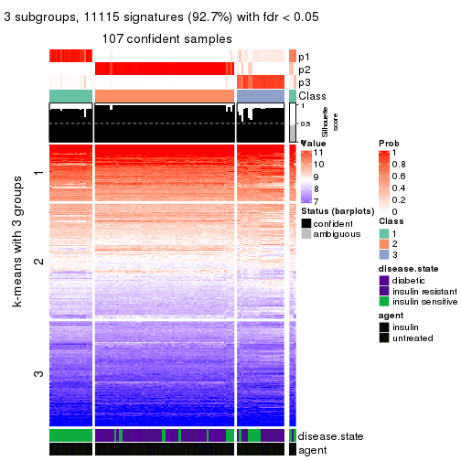
get_signatures(res, k = 4, scale_rows = FALSE)
get_signatures(res, k = 5, scale_rows = FALSE)
get_signatures(res, k = 6, scale_rows = FALSE)
Compare the overlap of signatures from different k:
compare_signatures(res)
get_signature() returns a data frame invisibly. TO get the list of signatures, the function
call should be assigned to a variable explicitly. In following code, if plot argument is set
to FALSE, no heatmap is plotted while only the differential analysis is performed.
# code only for demonstration
tb = get_signature(res, k = ..., plot = FALSE)
An example of the output of tb is:
#> which_row fdr mean_1 mean_2 scaled_mean_1 scaled_mean_2 km
#> 1 38 0.042760348 8.373488 9.131774 -0.5533452 0.5164555 1
#> 2 40 0.018707592 7.106213 8.469186 -0.6173731 0.5762149 1
#> 3 55 0.019134737 10.221463 11.207825 -0.6159697 0.5749050 1
#> 4 59 0.006059896 5.921854 7.869574 -0.6899429 0.6439467 1
#> 5 60 0.018055526 8.928898 10.211722 -0.6204761 0.5791110 1
#> 6 98 0.009384629 15.714769 14.887706 0.6635654 -0.6193277 2
...
The columns in tb are:
which_row: row indices corresponding to the input matrix.fdr: FDR for the differential test. mean_x: The mean value in group x.scaled_mean_x: The mean value in group x after rows are scaled.km: Row groups if k-means clustering is applied to rows.UMAP plot which shows how samples are separated.
dimension_reduction(res, k = 2, method = "UMAP")

dimension_reduction(res, k = 3, method = "UMAP")
dimension_reduction(res, k = 4, method = "UMAP")
dimension_reduction(res, k = 5, method = "UMAP")
dimension_reduction(res, k = 6, method = "UMAP")
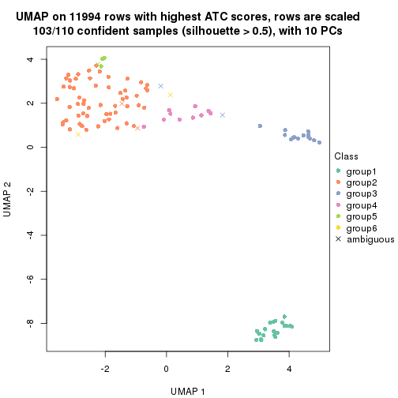
Following heatmap shows how subgroups are split when increasing k:
collect_classes(res)
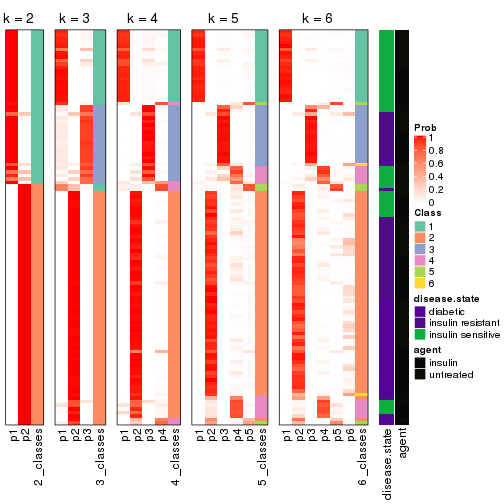
Test correlation between subgroups and known annotations. If the known annotation is numeric, one-way ANOVA test is applied, and if the known annotation is discrete, chi-squared contingency table test is applied.
test_to_known_factors(res)
#> n disease.state(p) agent(p) k
#> ATC:NMF 110 9.03e-08 0.434 2
#> ATC:NMF 107 7.77e-12 0.285 3
#> ATC:NMF 108 2.34e-10 0.578 4
#> ATC:NMF 105 4.51e-14 0.627 5
#> ATC:NMF 103 3.41e-14 0.840 6
If matrix rows can be associated to genes, consider to use GO_Enrichment(res,
...) to perform function enrichment for the signature genes.
sessionInfo()
#> R version 3.6.0 (2019-04-26)
#> Platform: x86_64-pc-linux-gnu (64-bit)
#> Running under: CentOS Linux 7 (Core)
#>
#> Matrix products: default
#> BLAS: /usr/lib64/libblas.so.3.4.2
#> LAPACK: /usr/lib64/liblapack.so.3.4.2
#>
#> locale:
#> [1] LC_CTYPE=en_GB.UTF-8 LC_NUMERIC=C LC_TIME=en_GB.UTF-8
#> [4] LC_COLLATE=en_GB.UTF-8 LC_MONETARY=en_GB.UTF-8 LC_MESSAGES=en_GB.UTF-8
#> [7] LC_PAPER=en_GB.UTF-8 LC_NAME=C LC_ADDRESS=C
#> [10] LC_TELEPHONE=C LC_MEASUREMENT=en_GB.UTF-8 LC_IDENTIFICATION=C
#>
#> attached base packages:
#> [1] grid parallel stats graphics grDevices utils datasets methods base
#>
#> other attached packages:
#> [1] genefilter_1.66.0 ComplexHeatmap_2.1.1 markdown_1.1 knitr_1.26
#> [5] preprocessCore_1.46.0 cola_1.3.2 GEOquery_2.52.0 Biobase_2.44.0
#> [9] BiocGenerics_0.30.0 GetoptLong_0.1.7
#>
#> loaded via a namespace (and not attached):
#> [1] bitops_1.0-6 matrixStats_0.55.0 bit64_0.9-7 doParallel_1.0.15
#> [5] RColorBrewer_1.1-2 httr_1.4.1 tools_3.6.0 backports_1.1.5
#> [9] R6_2.4.1 DBI_1.0.0 lazyeval_0.2.2 colorspace_1.4-1
#> [13] withr_2.1.2 tidyselect_0.2.5 gridExtra_2.3 bit_1.1-14
#> [17] compiler_3.6.0 xml2_1.2.2 microbenchmark_1.4-7 pkgmaker_0.28
#> [21] slam_0.1-46 scales_1.1.0 readr_1.3.1 NMF_0.23.6
#> [25] stringr_1.4.0 digest_0.6.23 pkgconfig_2.0.3 bibtex_0.4.2
#> [29] highr_0.8 limma_3.40.6 rlang_0.4.2 GlobalOptions_0.1.1
#> [33] RSQLite_2.1.2 impute_1.58.0 shape_1.4.4 mclust_5.4.5
#> [37] dendextend_1.12.0 dplyr_0.8.3 RCurl_1.95-4.12 magrittr_1.5
#> [41] Matrix_1.2-17 Rcpp_1.0.3 munsell_0.5.0 S4Vectors_0.22.1
#> [45] viridis_0.5.1 lifecycle_0.1.0 stringi_1.4.3 plyr_1.8.4
#> [49] blob_1.2.0 crayon_1.3.4 lattice_0.20-38 splines_3.6.0
#> [53] annotate_1.62.0 circlize_0.4.9 hms_0.5.2 zeallot_0.1.0
#> [57] pillar_1.4.2 rjson_0.2.20 rngtools_1.4 reshape2_1.4.3
#> [61] codetools_0.2-16 stats4_3.6.0 XML_3.98-1.20 glue_1.3.1
#> [65] evaluate_0.14 png_0.1-7 vctrs_0.2.0 foreach_1.4.7
#> [69] polyclip_1.10-0 gtable_0.3.0 purrr_0.3.3 tidyr_1.0.0
#> [73] clue_0.3-57 assertthat_0.2.1 ggplot2_3.2.1 xfun_0.11
#> [77] gridBase_0.4-7 eulerr_6.0.0 xtable_1.8-4 skmeans_0.2-11
#> [81] survival_2.44-1.1 viridisLite_0.3.0 tibble_2.1.3 iterators_1.0.12
#> [85] AnnotationDbi_1.46.1 registry_0.5-1 memoise_1.1.0 IRanges_2.18.3
#> [89] cluster_2.1.0 brew_1.0-6